Soba
Soba is a modular synthesizer you patch on a canvas. You place modules (oscillators, filters, envelopes, effects) as nodes, draw cables between their jacks, and hear the result as you go. Nothing is wired in advance: the patch is the instrument.
The name comes from the cables. Blender, whose node editor Soba takes after, calls the wires between nodes noodles, and soba are long, fine noodles. In Japanese, soba (傍) also means "beside": an instrument whose patches sit by you and explain themselves.
 A patch on the canvas. Cables are colored by what they carry, and light up as signal passes through them.
A patch on the canvas. Cables are colored by what they carry, and light up as signal passes through them.
A node graph, not a rack
Most software modulars imitate hardware: rows of panels, screws, and cables that sag in front of everything. Soba borrows instead from node editors like Blender's. Every module is a rounded card with inputs on its left edge, outputs on its right, and knobs along the bottom. You can put modules anywhere, zoom out to see the whole patch, and zoom in to work on one corner of it.
What it keeps from hardware is the feedback. Cables glow with the signal they carry, so a note becomes a pulse of light running down the wire and an LFO draws its waveform along the cable. Knobs under modulation turn on their own. Oscillators, envelopes, filters and LFOs draw what they're doing on the module itself. You can see a patch working as well as hear it.
Signals
Each cable carries one of three kinds of signal, and takes its color from it:
| Color | Signal | What it carries |
|---|---|---|
| Blue | Audio | Sound, from −1 to 1 |
| Orange | Control | Modulation (CV): envelopes, LFOs, pitch |
| Green | Gate | On or off: a key held down, a clock tick |
A cable can also carry up to eight voices at once, which is how Soba plays chords. MIDI doesn't travel on cables: Note In listens to the controller you choose in the toolbar and turns what you play into pitch, gate and velocity. Signal Types and Polyphony cover both in depth.
Modules
There are 44 modules in six categories. A module's header takes its category's color:
| Category | Header | Modules |
|---|---|---|
| Source | Blue | Oscillator, Noise, Drum, Resonator, Sampler, Chopper, Cloud, Audio Input, Note In |
| Filter | Teal | SVF Filter, Ladder Filter |
| Modulation | Orange | ADSR Envelope, LFO, Slope |
| Effect | Cyan | Stereo Delay, Reverb, 3-Band EQ, Distortion, Chorus, Tape, Slicer, Compressor, Vocoder |
| Utility | Gray | Clock, VCA, Attenuverter, Mix, Mixer, Sample & Hold, Quantizer, Clock Divider, Logic, Looper, Oscilloscope, Dancer, Step Sequencer, Chord Sequencer, Trigger Sequencer, Arranger, MIDI Monitor |
| Output | Purple | Audio Output, Link Out |
The Module Overview introduces each one.
Where to start
If you're new to modular synthesis, read the Getting Started pages in order:
- Installation gets the app running.
- Interface Overview shows you around the window.
- Your First Patch builds a playable synthesizer from an empty canvas, one cable at a time.
- Lessons teach the same ideas inside the app: five short tutorials that show you each move, then wait while you make it.
If you already know your way around a modular, open the 📚 Examples menu, load a patch, and keep the module reference to hand. The recipes explain how each example works, one idea at a time, and the songs are whole pieces that play themselves from the first note to the last.
Under the hood
Soba is written in Rust, with egui for the interface and cpal for audio. The audio engine runs on its own thread and never waits on the interface: edits travel to it over lock-free queues, every buffer is allocated before playback starts, and a test in the build fails if the audio thread ever allocates memory. That is what keeps the sound from glitching while you patch.
The source is on GitHub.
Installation
Soba runs on Windows, macOS and Linux. You can download a prebuilt release or build it from source with Rust. Or, to hear it first, try it in the browser.
Try it in the browser
Open Soba in the browser: the whole app, nothing to install. It opens on the First Sound example. Press ▶ Play, then play the Z to M keys, or hold the keys of Note In's piano with the mouse or a finger.
The browser version runs the same engine and modules, and every example is in its 📚 Examples menu. A few things need the desktop app:
- Audio input. In the browser, the computer keyboard, the on-screen pianos and MIDI devices play the patch. MIDI devices work in Chrome, Edge and Firefox, after 🎹 Connect MIDI (see MIDI); Safari has no MIDI.
- Recording to a WAV, and My Modules, which keep files in a folder.
- The lowest latency. The browser adds its own delay on the way to the speakers, which the desktop app doesn't have. In Chrome, Edge and Firefox the full app renders its sound on the browser's audio thread in small buffers, so heavy patches play steadily and the keys answer as fast as the browser lets them. Safari, and the patches embedded in this manual, play through larger buffers: about a tenth of a second more behind your playing. That's fine for listening and exploring, and loose for playing live.
On a phone or tablet, a patch opens zoomed out to fit the screen: pinch to zoom in, and drag the canvas to move around.
Patches go in and out as files: 💾 Save downloads the patch (as a zip with its samples, if it plays takes or files you've dropped), and 📂 Open picks one to upload. Each recipe in this manual can be played on its page.
Download a release
Each release on GitHub has a download for Windows, macOS (Apple Silicon and Intel) and Linux.
Windows
Download soba-windows-setup.exe and run it. It installs Soba for you alone, in %LOCALAPPDATA%\Programs\Soba, without asking for an administrator. It adds Soba to the Start Menu, and you can remove it from Settings → Apps → Installed apps, like any other app.
For playing live, download soba-windows-asio-setup.exe, the low-latency build, instead. It runs exactly like the standard one, and can also use an audio interface's ASIO driver: see Build with ASIO for what that gives you, and skip the building. Installing either one replaces the other.
The first time, Windows may show "Windows protected your PC": the downloads aren't signed yet. Click More info, then Run anyway.
If you'd rather not install anything, the zips (soba-windows.zip and soba-windows-asio.zip) hold the same app as one file. Unzip it anywhere and run soba.exe.
macOS
Download the disk image for your Mac: soba-macos-apple-silicon.dmg for an M-series Mac, or soba-macos-intel.dmg. Open it and drag Soba to Applications.
The app isn't signed by Apple yet, so the first time, macOS says it can't check it for malicious software. Right-click (or Control-click) Soba in Applications and choose Open, then Open again. After that it opens normally. On recent versions of macOS, if there's no Open button, go to System Settings → Privacy & Security and click Open Anyway beside the message about Soba.
Linux
Download soba-linux.zip, unzip it, and run soba. If it won't start, mark it as a program first: chmod +x soba.
Updates
Once a day, Soba asks GitHub whether a newer release is out. When one is, the dot after the version number in the bottom-right corner lights up blue, and a note says what's new. Click the version number to see the note again.
- What's New shows the release notes for every version since yours.
- Install downloads the new version, checks it against the release's published checksums (
SHA256SUMS), puts it in place and restarts. Your patch, including changes you haven't saved, your audio and MIDI devices, and your view of the canvas come back as they were. If the patch has unsaved changes, Soba offers to save them first. Install waits while a recording is running. - Later puts the note away; the dot stays lit. Skip this version stops offering that version; a newer one is still offered.
- Help → Check for Updates… checks now, and says so if you're up to date.
What the check sends: one request to GitHub's public list of releases, saying it comes from soba and which version. Nothing about you or your computer, and no usage data. A check that doesn't work, when you're offline say, does nothing visible and tries again next time. To stop checking altogether, turn off Help → Check for Updates Automatically; Soba then makes no requests at all.
Rolling back: the version you updated from stays beside the new one, and Help → Roll Back to … swaps back to it and restarts. The version you left is skipped, so it isn't offered again straight away.
Where Soba can't replace itself, Install becomes Download, which opens the release page:
- A copy built from source (
cargo run), which only says that an update exists. - A copy in a folder it can't write to, such as
Program Files. - macOS, until the app is signed: macOS doesn't let a downloaded app replace itself.
- Linux, when a package manager installed it.
Each copy updates to the same kind of download it came from: the low-latency Windows build to the next low-latency build, the standard one to the standard one.
Build from source
Install Rust
Install the Rust toolchain with rustup:
# Windows
winget install Rustlang.Rustup
# macOS and Linux
curl --proto '=https' --tlsv1.2 -sSf https://sh.rustup.rs | sh
Check that it worked:
cargo --version
Install system libraries (Linux only)
Windows and macOS need nothing more: Soba uses WASAPI and CoreAudio, which come with the system. (ASIO on Windows is optional: see Build with ASIO.)
On Linux, install the development packages for ALSA (audio), X11 and keyboard handling. On Debian and Ubuntu:
sudo apt install libasound2-dev libxcb-render0-dev libxcb-shape0-dev \
libxcb-xfixes0-dev libxkbcommon-dev libssl-dev
On other distributions, install the equivalent ALSA, xcb and xkbcommon development packages (for example alsa-lib-devel on Fedora, alsa-lib on Arch).
Build and run
git clone https://github.com/chrischaps/Soba.git
cd Soba
cargo run --release
The first build takes a few minutes. Always use --release to play: the debug build is much slower and can't keep up with a busy patch, so you'll hear dropouts. The finished binary is target/release/soba.
The app opens on the First Sound example. Press ▶ Play, then play the Z to M keys on your computer keyboard. If you hear a note, everything is working.
Build with ASIO (Windows, optional)
For playing a guitar or singing through Soba, Windows Audio's round trip of 60 ms or so is too slow to play against. An audio interface's ASIO driver talks to the hardware directly and gets it down to 11–20 ms on a Scarlett 2i2.
 ASIO is a registered trademark of Steinberg Media Technologies GmbH
ASIO is a registered trademark of Steinberg Media Technologies GmbHThe low-latency Windows download (soba-windows-asio.zip, see Download a release) has ASIO built in: install your interface's driver (step 1) and choose ASIO in the Output menu. To build it yourself, it's a build option, off by default:
-
Install your interface's ASIO driver from its maker. For a Focusrite Scarlett, that's the Focusrite USB driver from focusrite.com. Restart, or unplug the interface and plug it back in, once it's installed: until then the driver may not find the interface.
-
Install LLVM, which the build uses to read the ASIO headers:
winget install LLVM.LLVMThen point the build at it. In a new terminal:
setx LIBCLANG_PATH "C:\Program Files\LLVM\bin" -
Build with the
asiofeature:cargo run --release --features asioThe first build downloads Steinberg's ASIO SDK into your temp folder. To use a copy you already have, set
CPAL_ASIO_DIRto its folder.If the build stops at "Failed to extract ASIO SDK", Windows PowerShell couldn't load its unzip command, which happens when the build runs from PowerShell 7. Build from Git Bash with
env -u PSModulePath cargo run --release --features asio, or unzip%TEMP%\asio_sdk.zipyourself and setCPAL_ASIO_DIRto the folder inside.
Then choose ASIO at the top of the Output menu. See Audio Input for choosing a buffer size.
Steinberg licenses the ASIO SDK under the GPLv3 (or its own proprietary terms). Soba's source is MIT, but a binary built with ASIO includes the SDK, so if you share one, the GPLv3 applies to it. The low-latency download is such a binary: it's distributed under the GPLv3, with the GPL, Steinberg's licence for the SDK and a notice in its zip and installer. The exact SDK it was built from (ASIO SDK 2.3.4, pinned by its checksum in release.yml) is attached to the same release as asio-sdk-source.zip. The other downloads leave ASIO out and stay MIT.
Build with Ableton Link (optional)
Ableton Link lets the Clock play in time with other apps on the network: see Playing in a Link session. It's a build option, off by default, because Ableton licenses the Link SDK under the GPLv2 (or its own commercial terms).
-
Install CMake, which builds the Link SDK, and LLVM, which reads its headers (see step 2 above for pointing the build at LLVM). On Windows:
winget install Kitware.CMake winget install LLVM.LLVMOn macOS,
brew install cmake llvm. On Linux, your distribution'scmake,clangandlibclang-devpackages. -
Build with the
ableton-linkfeature:cargo run --release --features ableton-linkIt goes with ASIO too:
--features asio,ableton-link.
Soba's source is MIT, but a binary built with Link includes the SDK, so if you share one, the GPL applies to it. Builds without the feature leave Link out and stay MIT. The browser version can't use Link.
The plugin (CLAP and VST3)
Soba also runs inside a DAW, as an instrument on a track. It's a CLAP plugin, for Bitwig Studio, REAPER, FL Studio and Studio One, and it can be built as a VST3 for DAWs without CLAP, such as Ardour and Cubase. The plugin is the whole app: the node graph is its window, and the patch plays whatever the track sends it.
- Notes and CCs from the track reach Note In modules, the MIDI Monitor and MIDI Learn, as a MIDI device's do in the app.
- Tempo and transport. Set a Clock's Source to Host and it plays at the DAW's tempo, on its beat, starting and stopping with it (see Playing in a DAW).
- Macros. The plugin offers the DAW eight parameters, Macro 1 to Macro 8, to automate. Right-click a knob, then Map to Macro, and the knob follows that macro.
- The patch is saved with the project. Samples are kept by path, as in a patch file, so keep them where they are.
The DAW plays the patch, so the plugin has no Play button and no device menus. Open and Save As still read and write patch files, so a patch moves between the plugin and the app.
There's no download of the plugin yet. To build one from source (see Build from source above for Rust):
python tools/plugin_bundle.py # builds dist/Soba.clap
python tools/plugin_bundle.py --install # ...and copies it where DAWs look
--install puts it in your own CLAP folder: %LOCALAPPDATA%\Programs\Common\CLAP on Windows, ~/Library/Audio/Plug-Ins/CLAP on macOS, ~/.clap on Linux. Then rescan plugins in the DAW and add Soba to an instrument track.
VST3, for Ardour and other DAWs without CLAP
python tools/plugin_bundle.py --vst3 --install # dist/Soba.vst3 as well, installed beside the .clap
The VST3 goes in your own VST3 folder: %LOCALAPPDATA%\Programs\Common\VST3 on Windows, ~/Library/Audio/Plug-Ins/VST3 on macOS, ~/.vst3 on Linux. A DAW that only looks in the shared folder won't find it there. In Ardour, add the folder under Edit ▸ Preferences ▸ Plugins ▸ VST, in the VST3 paths, then rescan. Or copy Soba.vst3 into C:\Program Files\Common Files\VST3 (that needs an administrator).
The VST3 is the same plugin: the same editor, Host clock, macros and saved patch.
Its licence differs. Soba's plugin wraps VST3 with nih-plug, whose VST3 support is built on vst3-sys, a GPLv3 library. So a VST3 build of Soba falls under the GPLv3, as the ASIO download does. The .clap is built without it and stays MIT. Steinberg's own VST3 SDK went MIT in 2025, but Soba doesn't use it directly.
Command line
Pass a patch file to open it instead of First Sound:
cargo run --release -- patches/lush-pad.json
The render tool plays a patch into a WAV file without opening the app or using an audio device, then prints each channel's peak, true peak and RMS level, the mix's loudness, and how hard the patch drives the output limiter:
cargo run --release --bin render -- patches/fm-synthesis.json out.wav --seconds 5
| Option | Default | Effect |
|---|---|---|
--seconds N | 5 | Length of the render |
--sample-rate HZ | 48000 | Sample rate of the file |
--block-size N | 256 | Samples processed per block |
--audition | off | Plays a short phrase into the patch's Note In modules |
--input FILE.wav | none | What Audio Input modules hear, in place of an input device. It must be at the render's sample rate |
--cue FILE.txt | none | Parameter changes to play into the patch as it renders, one per line: <seconds> param <module>[#n|@id] <parameter> <value>, as in a capture script: #n is the nth of its kind, @id the module with that id in the patch file. Press a Looper's footswitches this way |
--compare FILE.wav | none | An earlier render to measure against: prints how far peak, true peak, RMS, loudness and range have moved since |
--bench | off | Times the render: how long processing took, how many times faster than real time that is, and the five modules that took longest |
--runs N | 3 with --bench | Renders this many times and reports the fastest |
--trace OUTPUTS FILE.csv | none | Follows module outputs as the patch plays and writes them to a CSV (see Following a song) |
--trace-every S | one block | How often --trace writes a row, in seconds |
--stems FOLDER | none | Writes each Mixer channel with something patched into it, and each Mixer's return, to a WAV of its own |
A patch that waits for a player renders silence unless something inside it plays notes (a Clock or Step Sequencer, say) or you add --audition. Audio Input modules render silence unless you give them a file with --input. Samplers find their files relative to the patch, as the app does.
Here Lush Pad's filter has been closed from 2500 Hz to 833 Hz since before.wav:
rendered 'Lush Pad' (8.00 s @ 48000 Hz) -> after.wav
L: peak -4.8 dBFS true -4.7 dBTP rms -22.2 dBFS
R: peak -4.3 dBFS true -4.3 dBTP rms -21.4 dBFS
loudness -17.4 LUFS range 12.3 LU
limiter in -4.3 dBFS took 0.0 dB at most, 0% of the time over 1 dB
against before.wav:
L: peak -1.5 dB true -1.5 dB rms -1.0 dB
R: peak -1.2 dB true -1.2 dB rms -0.9 dB
loudness -1.3 LU range -0.1 LU
True is the true peak, in dBTP, also after BS.1770-4: how high the waveform goes between the samples, which can be higher than at them. A converter playing the file, or an encoder squeezing it into an MP3 or a video, rebuilds that waveform and clips whatever goes over full scale, so a render whose samples all sit under 0 dBFS can still clip when it's played. A smooth pad reads its sample peak or a tenth above it. Sharp transients go higher: Backbeat's drums read 0.8 dB above their samples. Keep it under −1 dBTP to be safe.
Loudness is integrated loudness after ITU-R BS.1770-4, the measure streaming services normalize to. It weights the mix the way the ear does, so it's the number to compare when you want to know whether a change made a patch sound louder. RMS overweights the bass: above, it says the darker pad lost 1 dB, but the ear hears the treble it lost and puts it at 1.3. Range is the EBU loudness range, the spread between the quiet and loud passages. It reads -- on renders shorter than three seconds.
Limiter is how hard the patch drives the Audio Output's limiter: the highest peak going into it, which can be over 0 dBFS, the most it turned the output down, and for how much of the render it took off more than 1 dB. The limiter is there to catch accidents. A patch whose peaks stay under −1 dBFS leaves it idle, as every example does. The examples also sit within a decibel or so of −16 LUFS, so switching between them doesn't jump in volume; aim there to match them.
Timing a render
--bench measures how heavy a patch is to run. It times only the processing, not loading the patch or measuring the result, and renders three times, keeping the fastest. A busy machine can only slow a run down, never speed it up, so the fastest is the closest to the patch's own cost:
bench: 1.3546 s for 20.00 s of audio, 14.8x realtime (best of 3)
osc.sine (node 2) 576.9 ns/sample 41%
filter.svf (node 3) 347.7 ns/sample 25%
fx.reverb (node 6) 291.1 ns/sample 21%
fx.chorus (node 5) 66.4 ns/sample 5%
util.vca (node 4) 32.4 ns/sample 2%
That is Lush Pad, auditioned. Realtime is how much faster than playback it rendered: below 1x it couldn't keep up live. Below it are the modules that took longest, by their module and their id in the patch file, in nanoseconds per sample and as a share of the whole. Lush Pad's oscillator plays every held voice, so it takes the most. Timing each module costs a little in itself, so the whole runs a few percent slower than it would without --bench.
Following a song
A level for the whole mix says little about a song that changes as it goes. Two options take it apart, from the same render, without changing what it sounds like.
--trace follows outputs of the patch's modules, named as --cue names them, a colon, then the output (quote the list: output names have spaces). It writes a CSV with a row every --trace-every seconds: the time at the end of the row, then a column for each output. An audio output gives its RMS over the row, its voices summed. A gate gives its highest, so a trigger anywhere in the row reads 1. A CV gives where it ended. Here are Canopy's sections as they go by, and how loud its second Mixer plays:
cargo run --release --bin render -- patches/canopy.json out.wav --seconds 120 \
--trace "seq.arranger:Section,seq.arranger:Bar,util.mixer#2:Out L" trace.csv --trace-every 10
seconds,"seq.arranger:Section","seq.arranger:Bar","util.mixer#2:Out L"
10.0000,0.000000,1.000000,0.025193
20.0000,0.031250,1.000000,0.070801
...
70.0000,0.125000,1.000000,0.124964
The Arranger's Section is the index of the section playing ÷ 32, so 0.125 is the fifth.
--stems FOLDER writes each Mixer channel that has something patched into it to a stereo WAV of its own, and each Mixer's return, named by the Mixer's id in the patch file and the channel (util.mixer@126-ch2.wav). A stem is the channel after its Level, Pan, Mute and Solo and the Mixer's Master, before the soft clip that keeps a hot mix from clipping hard, so a Mixer's stems add up to its mix. A chained Mixer's mix arrives on its own stems, not on the Mixer it joins. Each stem is listed with what feeds it and its levels:
stems -> stems:
util.mixer@126 Ch 1 <- util.vca@70 Out peak -16.0 dBFS rms -24.0 dBFS util.mixer@126-ch1.wav
util.mixer@126 Ch 2 <- util.vca@46 Out peak -9.4 dBFS rms -25.3 dBFS util.mixer@126-ch2.wav
util.mixer@127 Return <- fx.reverb@128 Out L peak -5.6 dBFS rms -26.0 dBFS util.mixer@127-return.wav
Microphone access
Soba opens a microphone or other input only when you choose one in the toolbar's Input menu.
- macOS asks for permission the first time. If you run Soba from a terminal (
cargo run), macOS asks on behalf of the terminal app, and the permission belongs to it. If you said no, or the input stays silent, turn it on under System Settings → Privacy & Security → Microphone, then quit and reopen the terminal or the app. - Windows lets desktop apps use the microphone unless it's turned off under Settings → Privacy & security → Microphone (Let desktop apps access your microphone).
- Linux has no permission prompt; the input appears if ALSA (or PipeWire's ALSA support) lists it.
To run the test suite, use cargo test.
Troubleshooting
No sound. Check that ▶ Play is pressed: the app opens stopped. Then check the Output device menu in the toolbar. It lists every output device, with the system default marked (Default); pick the one you're listening on. 🔄 Refresh at the bottom of the menu picks up a device you plugged in after starting. Until you pick one, Soba plays to whatever Windows has as its default, and follows it: plug in headphones and the sound moves to them, with Output moved to … in the status bar. If the default goes away with nothing to take its place, the sound comes back on its own once a device does.
"Audio unavailable" in the toolbar. Soba couldn't open an output device. Make sure one is connected and that no other application holds it exclusively, then restart.
Crackles and dropouts. Make sure you're running the release build. The toolbar's CPU meter, shown while the patch plays, tells you how close the engine is to its limit. If it's near the top, remove modules or lower Voices on Note In and the Oscillator's unison.
My MIDI controller does nothing. Choose it in the toolbar's MIDI In menu: Soba doesn't connect to a controller until you do. In the browser, click 🎹 Connect MIDI there first. A filled dot (●) before the name means it's connected. Connection errors appear in the status bar at the bottom of the window. See MIDI.
Interface Overview
The Soba window has three parts: a toolbar along the top, the canvas where you build patches, and a status bar along the bottom.
 The toolbar, the canvas with a patch on it, and the status bar.
The toolbar, the canvas with a patch on it, and the status bar.
The toolbar
From left to right:
| Group | Controls |
|---|---|
| Transport | ▶ Play starts the patch; ⏹ Stop stops it. The app opens stopped. ● Rec records what you hear: see Recording. |
| File | 📄 New, 📂 Open, 🕘 Recent, 📚 Examples, 💾 Save, 💾 Save As, 🔗 Share: see Sharing a patch by link, and 🌱 Plant: see Planting it in the garden. At the foot of 📚 Examples, 🌱 Visit the garden opens the Patch Garden in your browser |
| Edit | ↩ Undo and ↪ Redo. Hover either to see which edit it will undo or redo. |
| 〰 Cables | How signal flow is drawn along cables: Chevrons, Dots or Comets. Under modules and labels sets how much of a cable shows through a module, frame title or note it passes behind (5% at first). Patch under a probe sets how far the patch is turned down while you probe a cable |
| ◉ Knobs | How knobs are drawn: LED ring, Hybrid, Arc, Machined or Classic |
| ❓ Help | 📖 Manual opens this manual, and ⌨ Keyboard Shortcuts (F1) lists the shortcuts, and 🎓 Lessons opens the lessons you take inside the app. Check for Updates…, Check for Updates Automatically, and Roll Back after an update: see Updates |
| Output | The audio device to play through |
| Input | The microphone, guitar or line input that Audio Input modules hear. It starts at None: nothing is opened until you choose a device. A filled dot (●) means it's open. |
| MIDI In | The MIDI controllers to listen to, as many at once as are ticked. A filled dot (●) means one is open. At the foot of the menu, Map Mode (Ctrl + L) and the Controller Map: see MIDI Learn. Below them, Teach Your Controller…, Hands Follow Selection (Ctrl + Shift + L) and Show the Controller (Ctrl + H): see Playing with a controller. The Rig… (Ctrl + Shift + H) shows every MIDI input and MIDI Out port at once: see The Rig. |
At the right end, the toolbar shows a CPU meter while the patch plays, the device's sample rate and channel count, and whether the audio engine is running. While an input is open, In shows how much audio is held between the input and output devices, in milliseconds; it turns amber for a moment after a dropout. Hover it for details.
The status bar
The status bar reports what just happened: a file saved, modules pasted, a cable refused and why. When there's nothing to report, it counts the modules and cables in the patch. On the right it names the open patch, with a dot (●) if it has unsaved changes. At the far right is the version, with a small dot after it that lights up blue when a newer version is out: click it to see what's new, or, while it's dark, to check.
If a patch loads with problems (a module this version doesn't know, a cable to a jack that no longer exists), a ⚠ load warning appears on the right. Hover it to read the warnings; click it to dismiss them.
Moving around the canvas
| To | Do this |
|---|---|
| Zoom | Scroll the mouse wheel. A trackpad pinch, or Ctrl and scroll, zooms about the pointer |
| Pan | Drag with the middle mouse button, or hold Ctrl and drag empty canvas |
| On a touch screen | Pinch to zoom; drag empty canvas with one finger, or two, to pan. Hold a finger still on empty canvas for the add menu |
| Bring it all into view | Press F with nothing selected: the view glides to fit the whole patch, frames and notes too (inside a group, everything in it). It comes no closer than life size, and a patch too big to fit at the furthest zoom shows from its top left |
| Zoom to the selection | Press F: the view glides to fit the selected modules, frames and notes, closing in a little past life size on a single module. Shift + F fits everything even with a selection. Both are in the canvas's right-click menu too |
| Select a module | Click it |
| Select several | Drag a box across empty canvas. It also takes in any frames and notes wholly inside it |
| Move modules | Drag a module by its body; a selection moves together |
The background grid moves and zooms with the patch, with a brighter line every five squares.
Adding modules
The add menu
Right-click empty canvas to open the add menu. It lists the six categories in their header colors; hover or click one to see its modules, then click a module to place it where you right-clicked. Hover a module's name to read what it does. Groups you've saved are under My Modules, in rose (see Groups). Below the categories, Frame and Note add a frame or a note.
On a touch screen, hold a finger still on empty canvas for half a second instead. The menu opens with finger-sized rows. Tap a category to see its modules, then tap a module. To read what a module does, rest a finger on it and the footer under the list tells you. If you then lift the finger after a moment, nothing is added. On a phone, a category's modules often have no room beside the menu, so they open in its place, with ‹ Back at the top.
 Right-click empty canvas, pick a category, then a module.
Right-click empty canvas, pick a category, then a module.
Quick add
Press Space or Tab with the mouse over the canvas. A search box opens at the cursor, listing every module by category, with your saved groups first under My Modules and the ready-made groups of the Library last. Type a few letters to narrow the list, then press Enter, and the module appears where the box opened. (With a group selected, Tab opens the group instead.) In the browser, the + button on the toolbar opens it too, in the middle of the view: the way in on a phone, which has neither key.
 Type a few letters of a module's name or category, then press Enter.
Type a few letters of a module's name or category, then press Enter.
The search is forgiving. Letters only need to appear in order, so lfo, svf, dly and s&h all find what you'd expect. Typing a category name (effect, mod) lists that category. Typing a device's name or maker (freak, volca, elektron) offers an Instrument already playing it, Instrument · MicroFreak, or a Kit for a drum machine, with the profiles you've saved among them. Move through the list with the arrow keys or Tab, add the highlighted module with Enter, or close the box with Escape.
Anatomy of a module
Every module has the same layout:
- Header. The module's name and category icon, on a bar in the category's color. Hover the header to read what the module does. The × at the right end deletes the module. Filters and effects also have a power switch at the left end: see Bypass.
- Inputs, down the left edge. Each jack is labeled and colored by the signal it expects.
- Outputs, down the right edge, colored by the signal they send. An output lights up while signal is coming out of it.
- Displays. Many modules draw what they're doing: the oscillator its waveform, the envelope its shape, filters their frequency response, the LFO its wave with a dot riding its phase.
- Knobs, along the bottom, with the current value under each.
Hover any jack's name or knob for a tooltip: what it does, its signal type in the cable's color, and for knobs, its range.
Knobs
| To | Do this |
|---|---|
| Change a value | Drag up or down |
| Make fine adjustments | Hold Shift while dragging |
| Nudge it | Hold Alt and scroll over it, or click it and press the arrow keys |
| Set an exact value | Right-click, type into Value and press Enter: 440, 1.2 kHz, 250 ms, -6 dB, C#3 |
| Return to the default | Double-click, press Home once you've clicked it, or right-click and Reset |
| Map to a MIDI controller | Right-click, then Learn MIDI |
| Let the DAW automate it (in the plugin) | Right-click, then Map to Macro |
A knob's ring lights up in its module's header color. Knobs with a range either side of zero, like Semi and Fine, light outward from the top, so you can see at a glance which way they're set. A small mark stands where zero is, so a knob at zero shows a dark ring with its pointer on the mark.
Some knobs move in whole steps, like the Oscillator's Oct and Semi: they click from one value to the next as you drag.
Knobs with a jack
Many parameters have both a knob and an input jack of the same name. Patch a cable into the jack and the knob sets the center while the incoming signal moves the value around it. Each module page gives the scale.
The knob stays live while the cable is patched, so you can keep moving the center as the signal plays. Its pointer stays where you set it. Once signal arrives, an orange bead on the knob's rim shows where the signal has carried the value, joined to the pointer by a thin orange arc. A faint band behind the bead shows the range the signal has covered over the last second or so, so you can see how deep an LFO swings even when it's too fast to follow. The number under the knob turns orange and reads that carried value. Hover over the knob or drag it and the number goes back to white and shows the center you're setting. Unplug the cable and the knob alone sets the value again.
In a busy patch, hover over a patched knob to find the cable carrying its signal: that cable glows and the rest dim, and its route shows through any module it runs under. It works the other way too. Hover over a cable and the bead on the knob it feeds swells and glows.
Until signal arrives, a small green dot above the knob shows that a cable is patched in.
Cables
Drag from an output to an input to patch a cable; a jack turns white when the cable is close enough to land on it. You can also drag from an input to an output. Cables only connect where the signals make sense: audio and control mix freely, and a gate can drive a control input, but a cable between jacks that can't work won't attach. Bring one near a jack that can't take it and the ring round the jack breaks in two, half in the cable's colour and half in the jack's. Let go there, and the halves spring apart as a small tag beside the jack says why, for example Control cannot connect to Gate; the status bar says it too. Signal Types has the full rules.
- One output can feed many inputs. Each gets the full signal.
- Each input takes one cable. Dropping a new cable onto an occupied input replaces the old one.
- No loops. A cable that would feed a module's output back into its own input, directly or through other modules, is refused, and the tag at the jack and the status bar name the modules round the loop.
- To remove a cable, drag its end off the input jack and let go over empty canvas.
Cables run behind the modules, and behind frame titles and notes, showing faintly through them so a route can still be followed without covering the controls or the words. 〰 Cables ▸ Under modules and labels sets how faintly.
While the patch plays, cables show what their signal has been doing over the last few seconds. Reading the signal in a cable explains what you're seeing.
Probing a cable
To hear what a cable carries on its own, hold Alt over it while the patch plays. You'll hear the LFO before it reaches the filter, or the dry voice before the reverb. A small scope beside the pointer shows the signal's waveform and names the output it comes from. The probe plays on top of the patch at the same fixed level as a Sampler's ▶. It never comes out louder than that. While you probe, the rest of the patch is turned down beneath it: by 20 dB under an audio cable, which all but solos it, and by 6 dB under a control or gate cable, so you can still hear the music the signal moves. 〰 Cables ▸ Patch under a probe sets each amount, from Off to Solo, and Soba remembers them. Neither the probe nor the ducking goes into a recording. The probe fades in, and when you let go of Alt or move off the cable it fades out and the patch comes back up.
- Audio cables play as they are. On a polyphonic cable, all the voices are summed.
- Control cables play as a quiet sine whose pitch follows the value: A3 at 0, two octaves higher at 1, and two octaves lower at -1. You hear an LFO as a siren and a stepped sequence as a tune.
- Gate cables play a soft click each time the gate opens, with a faint tone while it's held, so you can hear how long each gate lasts as well as when it starts.
Probing works on cables inside groups and on cables into a group's jacks, where you hear the module output the cable carries. MIDI cables have no sound to probe.
Editing modules
The module menu
Right-click a module's header or body (anywhere but a knob) to open its menu. Bypass appears only on filters and effects.
| Item | Shortcut | Effect |
|---|---|---|
| Duplicate | Ctrl + D | Copies the module, slightly below and to the right |
| Copy | Ctrl + C | Copies the module to the clipboard |
| Bypass / Switch on | Ctrl + B | Takes a filter or effect out of the signal path, or puts it back |
| Reset to defaults | Returns every knob to its default | |
| Group | Ctrl + G | Collapses the module, or the selection, into a group |
| Record into a new Sampler / Resample into a new Sampler | On a module with audio outputs: a Sampler beside it, patched from it and recording from the next sound. An Audio Input records; the rest resample. Right-clicking an audio output's name does the same for that output. With a Clock in the patch, it also offers a take of 1, 2 or 4 bars, starting on the next bar line and looped | |
| Delete | Delete | Removes the module and its cables |
If the module is part of a selection, the item applies to the whole selection.
Copy, paste and duplicate
Duplicate (Ctrl + D) copies the selected modules a little down and to the right. Cables between them are copied too; cables to the rest of the patch aren't. The copies are selected, so pressing Ctrl + D again makes a row of them.
Copy (Ctrl + C) and Cut (Ctrl + X) put the selected modules on the clipboard. Paste (Ctrl + V) drops them at the mouse cursor, keeping their layout, settings and the cables between them. Pasting again without moving the mouse fans the copies out.
The clipboard holds modules as patch text, so you can paste between two Soba windows, or paste the contents of a whole patch file to add its modules to the current patch. MIDI mappings stay with the original modules.
Bypass
Filters and effects can be bypassed: their audio inputs pass straight to their outputs, as if the module weren't there. Click the power switch at the left of the header, choose Bypass from the module menu, or select modules and press Ctrl + B. A bypassed module's header fades to gray and its controls dim. Switching takes a 20 ms crossfade, so it never clicks, and a bypassed module uses no CPU.
Mutate
Select a module or a group and press Ctrl + M. Each of its knobs moves a small random step, and pressing it again wanders further. Hold it, and the knobs glide out further the longer you hold, from a nudge to a big jump; let go when you like what you hear. It's a way to explore by listening: mutate a Library group until it's yours.
- What moves: every knob of the selected modules, and of every module inside a selected group.
Ctrl + Alt + Mmoves their whole-number knobs, switches and dropdowns too. - What doesn't: a knob a cable drives, the Audio Output, and any knob that sets how loud something is (a level, gain, makeup, drive, feedback or velocity), so a variation is never louder than the patch was. Nor does a port or a channel, which say where a module plays, not how it sounds.
- Hardware: an Instrument's or a Kit's knobs move the device, but not the ones its profile keeps from Mutate. A knob of named values moves by whole steps.
- Keeping one: a strip of chips under the selection holds the knobs as they were and the last eight variations, each drawn as a tick per knob, as high as the knob is turned. Click one to go back to it.
- Undo: each variation, and each click on the strip, is one step.
- Keeping it for good:
Ctrl + Shift + Mkeeps the knobs as they stand in the next free scene of a Scenes module: the one in the selection's group, or the patch's.
Frames and notes
A patch can explain itself. A frame is a titled, tinted backdrop behind a group of modules, like a section printed on a synth's front panel: Voice, Modulation, Echoes. A note is a card of text on the canvas. Neither makes a sound. Every example patch uses them, so you can read how it works while you play it.
 Two frames and two notes. Right-click a frame's title to rename or recolor it.
Two frames and two notes. Right-click a frame's title to rename or recolor it.
Frames
- To frame some modules, select them and press
Ctrl + Shift + F, or right-click empty canvas and choose Frame. The frame is drawn around the selection and takes the color most of its modules share. Type its name and pressEnter. - To add an empty frame, right-click empty canvas with nothing selected and choose Frame.
- To move a frame, drag its title. Every module and note inside it moves with it, along with any smaller frame inside it. Its body lets clicks through to the canvas, so you can still add modules inside it or drag a selection box across it.
- To resize it, drag any edge or corner.
- To rename it, double-click its title.
- To change its color, right-click its title and pick a swatch. The same menu can Select modules inside it, or Delete frame. Deleting a frame leaves its modules where they are.
Notes
- To add a note, right-click empty canvas, choose Note, and type. Click away or press
Escapewhen you're done. A note left empty disappears. - To edit it, double-click it. Plain text, with
**bold**for emphasis. - To move it, drag it. To change where its lines wrap, drag its right edge.
Selecting, copying and undoing
Click a frame's title or a note to select it, and Shift-click to add to the selection. Delete, Ctrl + C, Ctrl + X, Ctrl + D and Ctrl + V work on selected frames and notes along with any selected modules, so a framed section copies and pastes as a whole. Undo covers adding, moving, resizing, renaming, recoloring, editing and deleting them; typing a frame's name or a note is one step.
Frames and notes are saved with the patch. Versions of Soba from before frames and notes existed open the patch without them.
Groups
A group collapses modules into one node of your own, with jacks where cables crossed into it and the controls you choose on its face. Groups has the whole story; in short:
- Group: select modules and press
Ctrl + G, then type a name and pressEnter. - Go inside: double-click the group, select it and press
Tab, or click the miniature on its face. A trail at the top of the canvas shows where you are; click it, or pressEscape, to go back out. - Pin a control: inside the group, right-click a knob, dropdown or toggle and choose Show on group.
- Add a jack: inside the group, right-click a port's name and choose Show on group. Right-click a jack to rename it, move it up or down, or remove it.
- Rename: select the group and press
F2, or right-click it and choose Rename. - Ungroup: select the group and press
Ctrl + Alt + G. - Keep it: right-click the group and choose Save to My Modules. It's then in the add menu and quick-add palette of every patch.
A group's right-click menu also has Open, Duplicate, Copy and Delete.
Undo and redo
Undo (Ctrl + Z) and Redo (Ctrl + Shift + Z or Ctrl + Y) cover adding, deleting, moving and bypassing modules, patching and unpatching cables, turning knobs, grouping and ungrouping, adding, renaming, moving and removing a group's jacks, and every change to frames and notes. Hover the toolbar buttons to see which edit is next, such as Move Oscillator, Set SVF Filter Cutoff or Move frame Voice.
A whole drag is one step: turning a knob from 200 Hz to 2 kHz and back undoes in one go. A deleted module comes back with its settings, its cables and its MIDI mappings. Knobs moved by a MIDI controller aren't recorded, and opening a patch starts a fresh history.
Playing
Transport
Nothing sounds until you press ▶ Play (or Shift + Space, which also stops it). ⏹ Stop silences the patch, lets the last of the signal drain out of the cables, and clears echoes and reverb tails, so they don't resume when you play again.
The computer keyboard
The bottom row of letter keys plays like a piano, starting from C4 (middle C), with the sharps on the row above it. The top row and the numbers above it are a second piano, an octave higher, as in a tracker:
| Keys | Notes |
|---|---|
Z X C V B N M | C D E F G A B |
, . / | C D E, an octave up |
S D G H J | C♯ D♯ F♯ G♯ A♯ |
L ; | C♯ D♯, an octave up |
Q W E R T Y U | C D E F G A B, an octave up |
I O P | C D E, two octaves up |
2 3 5 6 7 | C♯ D♯ F♯ G♯ A♯, an octave up |
9 0 | C♯ D♯, two octaves up |
The two pianos overlap: , . / play the same notes as Q W E.
The keys play every Note In module in the patch (unless its Source is MIDI), with or without a MIDI controller, in the browser and inside a DAW as well; use its Oct knob to shift it up or down. A Note In with more than one voice plays chords from them. How hard they play is set by its Key Vel knob, MIDI velocity 100 by default. Keys typed into the quick-add box, or held with Ctrl or Alt, don't play notes. While a Chord Sequencer's chord popover is open, the keys write chords into it instead.
MIDI
Tick your controller in the toolbar's MIDI In menu; Soba doesn't connect to one until you do. Tick more to play several at once, up to eight. If the controller isn't listed, plug it in and click 🔄 Refresh at the bottom of the menu. Untick a device to close it, or choose None (Disconnect) to close them all. Soba remembers what's ticked: next launch it opens the same controllers, and if you plug one in after Soba starts it connects within a couple of seconds (unticking one, or choosing None, makes it forget). Closing a device releases the notes held on it. If a controller can't be opened, the reason appears in the status bar.
In the browser, MIDI In starts as a 🎹 Connect MIDI button. A web page may use MIDI only once you allow it, so click it and your browser asks; Firefox first offers a small add-on for the site that allows it. Then the menu lists your controllers, and a controller you plug in later appears by itself, with no Refresh needed. Allowing it lets MIDI Out play your devices too. If you said no, allow MIDI in the site settings (the icon to the left of the address) and click Connect MIDI again. Chrome, Edge and Firefox have MIDI; Safari doesn't, and the button says so.
Two modules listen to the controller: Note In, for one voice or chords, and MIDI Monitor to see what's arriving. With several devices open, each of them hears them all, until you give it a Device in its right-click menu: see Listening to one device. A mapping learned while several devices are open answers only the device it was learned from.
MIDI Learn
Any knob, toggle or dropdown can follow a control on your MIDI controller: a knob, a fader, a pad or a key. So can the Looper's footswitches, the Sampler's Rec and the pads of Scenes.
- Right-click it and choose Learn MIDI. A purple badge blinks on it, and the status bar asks you to move something.
- Turn a knob, move a fader, or hit a pad on your controller.
The badge stops blinking and stays. Right-click again to see what it's mapped to (CC 74 · ch 1, or C2 · ch 10 for a pad), to Re-learn MIDI, or to Clear MIDI. Mappings are saved with the patch, and playing them isn't added to the undo history.
What a control does depends on what it's mapped to:
| Mapped to | A knob or fader (a CC) | A pad or key (a note) |
|---|---|---|
| A knob | turns it across its range | holds it at the top while held |
| A toggle | switches it on from halfway up | flips it on each hit |
| A dropdown | sweeps through the choices | steps to the next choice, and round |
| A footswitch or Rec | presses it from halfway up | presses it while held |
| A Scenes pad | recalls the scene from halfway up | recalls the scene |
Faders that don't jump. A fader or knob with ends doesn't yank the knob it's mapped to. Until you move the hardware past where the knob stands, a purple tick on the knob's rim shows where the hardware is, with a faint arc back to the knob, so you can see which way to go. Once the hardware reaches the knob it picks it up, the tick fades, and the knob follows. Turn the knob with the mouse, recall a scene or undo, and it waits to be picked up again. To have it jump instead, untick Pick up in its right-click menu.
Endless encoders. Many controllers have knobs that turn forever and send steps rather than a position. Soba listens to the first few values after you learn one and tells it apart from a fader, so the knob steps from wherever it stands, a hundred steps end to end, and one number at a time on a whole-number knob. If it guesses wrong, choose under Hardware in the knob's right-click menu. Invert turns any mapping upside down.
A controller turns a knob the way the mouse does: a fader sweeps a frequency by octaves, so the middle of its throw is in the middle of what you hear.
To patch a fader or a wheel into a cable, rather than turn one knob with it, use a Control module, one a fader (the Library's MiniLab 3 Faders and Controls ×4 are groups of them): it learns the same way. To play drums or fire triggers from a controller's pads, use Pad modules, one a pad (the Library's Pads ×8 is eight), whose notes a Note In on Omni then leaves alone.
A mapping listens on the MIDI channel it was learned on, so the keys and the pads of one controller can send the same note numbers without mixing up. (Mappings made before Soba learned channels still listen on all of them.)
To back out before moving anything, press Escape, or right-click the blinking control and choose Cancel MIDI Learn. Choosing Learn MIDI on a different control moves learn mode there instead.
Map Mode
To map a whole controller, turn on Map Mode: press Ctrl + L, or choose Map Mode at the foot of the MIDI In menu. A thin purple line runs round the canvas, and every control that can be learned wears a soft purple outline: knobs, toggles, dropdowns, footswitches, Rec and the Scenes pads. The ones already mapped keep their badges.
Now a click on a control doesn't turn, flip or press it. It starts MIDI Learn on it instead, and its outline breathes while it waits. Move a knob or fader or hit a pad on your controller, and the control is mapped. Map Mode stays on, so click the next control and move the next thing, and so on down the controller: eight encoders, four faders and eight pads are twenty clicks and twenty moves, and no menus. Clicking another control before you move anything moves the learn there. The status bar says what Map Mode is waiting for, and what was mapped last.
Right-click still opens a control's menu in Map Mode, to clear a mapping or change its hardware. Press Escape or Ctrl + L again to leave.
The Controller Map
Choose Controller Map… at the foot of the MIDI In menu to see every mapping in the patch on one panel, in the order you made them. Each row is one mapping:
| Column | What it shows |
|---|---|
| Source | What turns it: CC 74 · ch 1, C2 · ch 10 for a pad, or Macro 3 in a DAW |
| Module and Control | The module, and the knob, switch or Scenes pad it turns |
| Range | The two ends a knob or fader sweeps the knob between, typed in the knob's own units (200 Hz, 8 kHz, 40%). Press Enter to set one. They stay inside the knob's own range |
| Hardware | Knob or fader, or one of the two kinds of Encoder, as under Hardware in the knob's menu |
| Pick up | A knob or fader waits to pick the knob up rather than jumping it |
| Invert | The hardware's top is the control's bottom |
The cross at the end of a row clears that mapping. Hover a row and its control lights up on the canvas, so you can find which knob it is. Changes here are changes to the patch: they're saved with it, and the patch shows it has unsaved changes until you save. A DAW macro's range and style are the DAW's, so its row only lists it. Map Mode has a button at the foot of the panel too, so you can keep mapping with the map open.
Playing with a controller
The Hands On example puts all of this to work on an Arturia MiniLab 3.
Mapping is for a patch you've finished. While you're building one, you want the encoders under your hand to be the knobs of whatever you're working on: click an oscillator and they turn its knobs, click a filter and they turn the filter's. That's Hands Follow Selection.
Teach Soba your controller first. You do this once per controller. Choose Teach Your Controller… in the MIDI In menu, and the status bar walks you through it. With several devices open, it teaches the one whose encoder you turn first, and keeps what it learns under that device's name. The hands then stay on the controller you taught last, for as long as it's open:
- "Turn encoder 1 a few clicks". Turn the first encoder a few clicks in one direction, at any speed. The status bar says what it heard (
Encoder 1 is CC 74 · ch 1, endless) and asks for the next one. Go on until you've turned them all, then pressEnter(or Done). - "Move fader 1". Move each fader in turn, then press
Enter(or Done) again.
Soba learns as many encoders and faders as your controller has, and either can be none. A MiniLab 3 is eight encoders and four faders, a nanoKONTROL eight and eight, a Launch Control XL twenty-four and eight, and a BeatStep sixteen encoders and no faders: press Done straight away when it asks for fader 1. To pass over one in the middle, press Tab (or Skip): the knob it would turn is left free, so the rest stay where they are on the hardware. Escape gives up and keeps what Soba knew before. A controller taught before Soba learned any number keeps its eight encoders and four faders.
Turning slowly lets Soba tell an endless encoder, which sends steps, from a knob with ends, which sends where it is. Soba keeps what it learned under the controller's name, not in the patch, so it's there for every patch, and each controller you teach is remembered separately.
Then turn on Hands Follow Selection in the MIDI In menu, or press Ctrl + Shift + L. Teaching turns it on for you. While it's on:
- The encoders turn the selected module's first knobs, in the order its face shows them, and the faders turn the knobs after: on a MiniLab, the first eight and the next four.
- Select a group and they turn the knobs pinned to its face instead. With several modules selected, they turn the first one's.
- The knobs they turn wear small numbered purple badges,
1,2and on for the encoders andF1,F2and on for the faders. The badges fade in each time you select something else. - Endless encoders step the knob from wherever it stands. Faders, and knobs with ends, pick the knob up as mapped ones do: a tick on the rim shows where the fader is until it reaches the knob.
- The patch's own mappings on the taught encoders and faders pause, and their badges dim. Turn Hands Follow Selection off and they come back. Mappings on the controller's other controls, its pads and keys, carry on as before.
- As with mappings, turning a knob this way isn't added to the undo history.
Map Mode and MIDI Learn come first. While either is on, the encoders don't follow the selection, so you can map them in the usual way.
Seeing what each control does
On stage it's hard to remember which fader does what in this patch. Choose Show the Controller in the MIDI In menu, or press Ctrl + H, and a small sketch of your controller appears along the foot of the canvas. It has the encoders and faders you taught, with the same numbered purple badges as the knobs they turn, and a row of pads when the patch maps any. Up to sixteen encoders sit in two rows, as a MiniLab's eight do; more go in rows of eight, as do the faders. Beside each control is what it does right now: the knob's name, and under it the module's name in the module's colour. A control that does nothing stays faint and says what it sends (CC 74), so you can find the free ones.
-
What it shows follows what the controller does. While Hands Follow Selection is on, the encoders and faders show the selected module's knobs, and the sketch says which module they follow. Otherwise they show the patch's own mappings on the encoders and faders you taught.
-
The pads are the patch's Pads, lowest note first, each saying what its gate is patched into (Kick over Drum). After them come the patch's mappings to notes, the Looper's footswitches and the Scenes pads, lowest note first (Rec over Looper). A pad lights while you hold it.
-
It moves as the hardware does. An encoder's pointer and a fader's cap sit where the knob they turn is, a control brightens as its message arrives, and a fader that hasn't picked its knob up yet shows a purple tick where the fader is. Endless encoders are drawn with a knurled rim.
-
If you haven't taught Soba your controller, the sketch lays the patch's mappings on eight encoders and four faders in the order you made them, and offers Teach Your Controller…. While you teach it, the sketch grows a control at a time, and the one Soba waits for breathes purple.
-
Mappings that don't fit, or are on controls Soba wasn't taught, are counted at the left, with a link to the Controller Map.
The sketch keeps its size as you zoom, stays clear of the status bar, and only takes the clicks that land on it. Hover a control to see what it sends. Soba remembers whether it's shown.
The Rig
With a room of hardware plugged in, choose The Rig… at the foot of the MIDI In menu, or press Ctrl + Shift + H. It shows every MIDI device Soba can hear or play on one panel.
-
MIDI In has a row for each input found, and for each one Soba remembers that isn't plugged in. Each row has:
- a lamp: green while the input is open, flashing as it's heard; amber while it's unplugged;
- a tick to open or close it, as in the menu. An unplugged one has a ✕ instead, to forget it;
- its slot (In 1 to In 8);
- the last message heard, as the MIDI Monitor writes it. It's bright when it arrives and fades to grey over a few seconds;
- how many modules have their Device set to it alone. Hover to see their names.
An input a route comes from also has a thru chip by its name. Click it to make the input Thru only: it stays open and its routes pass as before, but the patch doesn't hear it. Modules set to any device, MIDI Learn, mappings learned from any device, the MIDI Monitor and the pianos all pass it by. A module whose Device names it still hears it, since naming it is asking for it. While it's Thru only, the chip is lit, the name steps back, and the row reads routes only where the modules would be. It's for a keyboard that's only there to play your hardware. Click the chip again to let the patch hear it.
-
MIDI Out has a row for each of the eight ports, A to H, that a MIDI Out plays. Each row has:
- the port's device, which you choose here or on a MIDI Out's face. Its menu can also 📤 Send a SysEx file… to it: see Sending SysEx;
- its Clock: what it sends of the patch's Clock. Clock + Transport sends the tempo with Start and Stop, Clock only the tempo alone, and Off nothing. The port sends it whether or not a MIDI Out plays it. While its device leads the Clock (see Leading or following), it reads leads in purple and sends nothing;
- its Offset: how many milliseconds later than the sound its notes, CCs and clock go out, to line a slow device up with the rest. Drag it, or click to type. It's amber when it asks for earlier than your audio device's delay allows;
- beside the offset, a ping (•)) to measure the device's delay and set the offset for you: see Measuring a device's delay;
- its Budget: how many messages a second it may send. No limit suits a USB device. A 5-pin DIN cable carries only about a thousand, so set DIN · 1000/s for a port that plays through a MIDI interface, or Gentle · 500/s for gear that falls behind at full speed. Over its budget, a port sends only the newest value of each CC, bend and pressure, and notes, programs and clock go on time;
- how the port is doing: Sending, Full (in amber, while its budget is thinning CCs), Ready (it has a device but nothing plays it), Unplugged, No device, or In use (another app has the device);
- a dot that lights on each beat while clock goes out;
- the last message sent. After SysEx it reads SysEx · 163 B, and while a long dump is still going out, how much is left (SysEx · 2.4 KB to go);
- how many MIDI Outs play the port.
-
Thru has a row for each route. A route passes what one MIDI In plays straight to one port, past the patch, so with everything plugged into the computer, the computer is your patch bay: the Fantom's keys play the MicroFreak, or the Tracker drives the Volcas, while the patch does something else. Click + Route to add one. Each row has:
- a lamp that flashes as the route passes something, and a tick to set the route aside without losing it;
- From, the MIDI In it hears, and To, the port it plays. The input must be open (ticked under MIDI In) for Soba to hear anything to pass;
- Channel, the channel it passes (All, or one), and Becomes, the channel they go out on (Same, or all moved to one). Pass channel 1 and make it channel 10 to play a drum machine from any keyboard;
- what it passes: Notes, CC, Bend (pitch bend and pressure), Clock (clock, Start, Stop and Song Position) and Prog (program changes). Click one to turn it on or off. A new route passes everything but clock, since a keyboard's clock and the port's own Clock together would run the device at double time;
- what it's doing: Thru, Open input (click to open it), No input, No device, Unplugged or Loop;
- a ✕ to take it away. Notes it was holding are let go.
A route goes out the moment it comes in, ahead of anything else on the thread that sends MIDI, without waiting for the audio or for the port's Offset: it's for playing, and adds well under a millisecond. A route that would play the device it comes from is refused and says Loop, since a device that echoes what it hears would feed back forever; the To menu won't offer that port. The patch still hears an open input: a Note In set to any device plays along. To keep them apart, make the input Thru only with the chip by its name under MIDI In. Up to sixteen routes.
Ports, with their clocks, offsets and budgets, routes, and inputs are settings of this computer, not of the patch. 🔄 Refresh looks for devices again at once. Otherwise Soba looks every couple of seconds.
Sending SysEx. Some things only SysEx can do: give a Volca FM a DX7 voice, load a bank of 32, or set a device's settings that have no CC. Open a port's device menu, choose 📤 Send a SysEx file… and pick a .syx file. Every message in it goes to that port's device whole and in order, and a line under the ports says how many went. A port with a Budget paces a long dump to it, since some devices drop SysEx that comes faster than their cable carries: a bank of 32 DX7 voices (4,104 bytes) takes about 1.4 seconds at DIN · 1000/s. The notes and clock keep their time meanwhile, and CCs wait for the dump.
In the browser, the first file you send asks for one more permission, since SysEx can rewrite a device's sounds and settings: the browser asks to let Soba "control and reprogram your MIDI devices". Allow it, then send the file again. Notes and CCs never need it.
After a reboot. Windows numbers devices that share a name in the order they were plugged in (2- Digitakt), and numbers a device's extra ports (MIDIIN3 (FANTOM-06)). Linux adds the device's client and port numbers to its name. Those numbers can change when you reboot or plug things in a different order. Soba finds a device by its exact name first, then by its name without those numbers, so every port and input finds its device again. A module whose Device is set to it, or a mapping learned from it, still hears it. If two devices are left that both fit, Soba uses neither, rather than guess. Hover a port's device to see whether it was found under a new number.
Measuring a device's delay
Every device takes its own time to turn a note into sound. With its audio plugged into your interface and open as the Input in the toolbar, Soba can time it for you:
- Click the ping (•)) beside a port's Offset. A line opens under the port.
- Choose the channel and note to ping, and which of the input's channels the device comes back on (In 1+2, In 3, and so on: a pair is heard as one). A sound with a sharp attack measures best: a kick, a rim shot or a pluck, on the channel of the track or part that plays it.
- Click Measure. Soba plays the note eight times, a little over half a second apart, and listens for each one. With the transport stopped it first waits a couple of seconds for the input to settle; while it plays, it starts at once. Quieten anything else the port plays while it listens.
Soba then says how long the device took, from the note leaving to its sound, and how close together the eight answers were. It takes away the part of the trip that's Soba's and your interface's: the output's delay and the port's offset before the note leaves, and the input's delay and buffer once the sound is back. A strip draws the pings one over another from the note, that part shaded grey and the device's own in purple, with a green line where its sound begins.
It also says where the device lands now against Soba's sound, and offers Set Offset: the offset that lines it up. A device slower than your audio device's delay can't be caught up all the way, since a message can't leave before its sound is made; the offer goes as early as it can, and says so. A larger buffer gives more room.
It gives up rather than guess when too few pings come back clear of the noise, when they come back too far apart to trust, or when the input stalls or settles while it listens. One ping that lands far off (a stray sound) is left out. Only one port is measured at a time, and closing the Rig stops a measurement.
How exact it is depends on how well the interface reports its own delays: an ASIO driver reports them to the sample. Windows' shared audio doesn't report the input's, so Soba takes it as the least it can be and says so; the device may then be a little quicker than measured.
Recording
When something good happens (a filter sweep you rode by hand, a lucky generative passage, an improvisation on a MIDI keyboard), press ● Rec or Ctrl + R to keep it. If the patch is stopped, Rec starts it.
While recording, the button turns red, with a slowly pulsing light and the length of the take so far. Press it again, press Ctrl + R, or press ⏹ Stop to end the take. A note pops up in the corner with the take's name and length, and 📂 Show in folder opens it in your file manager.
- What's recorded: exactly what you hear, after the output limiter, sample for sample. It's a 32-bit float WAV at your audio device's sample rate and channel count.
- Where it goes:
Music/Soba, named after the patch and the minute you pressed Rec, such asFirst Sound 2026-10-08 14-03.wav. To use another folder, right-click ● Rec and choose Change…; Open Folder opens it. - The patch comes too. Every take is saved with the patch beside it, as a
.jsonwith the same name, so you can always open the patch that made a recording. It's saved when the take ends, so knobs you rode during the take are saved where you left them. - Edit freely. Turning knobs, patching cables, even opening another patch: the recording keeps going through all of it.
- Switching the Output device ends the take cleanly. Closing the window while recording asks first, and then saves the take.
Recording runs alongside the audio, never in its way. If your disk ever falls more than two seconds behind, the missing audio is skipped rather than allowed to cause a glitch, and the note tells you how much was lost.
Patches
Patches are saved as .json files holding every module, setting, cable and MIDI mapping.
| Action | Shortcut |
|---|---|
| New | Ctrl + N |
| Open | Ctrl + O |
| Save | Ctrl + S |
| Save As | Ctrl + Shift + S |
Examples
The 📚 Examples menu holds ready-made patches on two shelves. Recipes has First Sound, which opens when the app starts, and a patch for each recipe in this manual, each built around one idea. Songs has whole pieces that play themselves from start to end, each with a page of its own. Hover an example to read what it is. Each one is laid out in frames, with notes on how it works and what to try. Saving an example always asks for a file name, so you save a copy and the original stays intact.
Samples
A Sampler keeps the path to its sound file in the patch. A file beside or below the patch is saved by a path relative to it, so the patch's folder can be moved or shared whole. Save As copies samples from anywhere else into a <patch name> samples folder beside the patch, asking first if they come to more than 50 MB. A patch whose sample has gone missing still opens, with the missing file among the load warnings.
A Looper's loop is kept the same way. Saving the patch writes each loop that changed as a WAV into a <patch name> loops folder beside it, asking first if they come to more than 50 MB, and opening the patch brings each loop back, stopped and ready to play. A loop whose file has gone missing is a load warning, and its Looper opens empty. See Keeping the loop.
Sharing a patch by link
🔗 Share copies a link to the patch you have open, short enough for a chat, a slide or a QR code: https://soba.chaps.dev/s/fdb945uF. Whoever opens it gets the patch in their browser, in Soba's web version, with nothing to install: the same modules, cables, knobs, frames and notes, stopped until they press ▶ Play. What they change stays with them.
To keep the link short, the patch is kept on soba.chaps.dev, where anyone with the link can open it. Sharing the same patch again gives the same link. If you'd rather nothing were kept, press Copy the long link instead in the note that says the link was copied. The long link holds the whole patch itself, after the #, so it's never sent to a server, and it works offline. When the link service can't be reached, Share copies the long link anyway, and says so.
A link carries the patch and the samples that come with Soba's examples, and nothing else. If a Sampler plays a file of your own, Share says which files, and offers Save As instead, to send the patch as a folder with its samples (in the browser, Save downloads it as a zip with them).
Long links come to a few thousand characters for most patches. The biggest songs come to 30,000 or so, which some chat apps cut short; email or a document carries them whole. Pasting a Soba link of either kind onto the canvas opens it too, asking first if there are unsaved changes.
Planting it in the garden
The Patch Garden is a page of patches people have planted, each drawn as its own cable diagram, to hear and open. 🌱 Plant, beside Share, puts the patch you have open there. Give it a title (40 characters at most) and, if you like, your name, which is remembered for next time, and press 🌱 Plant or Enter.
Sharing keeps a patch behind a link; planting publishes it. A shared patch can only be found by someone you send its link to. A planted one is listed in the garden for anyone to hear, open and grow their own from. A new plant appears once it's been approved, and the note that says it's planted gives its short link, which plays it right away. Planting the same patch again changes nothing: it keeps its first title.
If you opened the patch from a short link, the garden remembers which, and shows your patch as a branch growing from that one. Change something first: the very patch you were sent is already that link. A patch that plays files of your own can't be planted, as it can't be shared, and Soba offers Save As instead. When the garden is busy or can't be reached, a quiet note says so and goes away by itself; nothing has changed, so plant it again in a while.
Recent patches
🕘 Recent lists the last eight patches you opened or saved, newest first. Hover one to see where it lives. A file that has since been moved or deleted is grayed out. Clear Recent empties the list.
Unsaved changes
While a patch has unsaved changes, the window title starts with a dot (● Lush Pad · Soba), and so does its name in the status bar. Undoing back to the saved state clears the dot. Recording into a Looper counts as a change too.
New, Open, opening an example or a recent file, and closing the window all ask first when there are unsaved changes:
- Save saves the patch (asking where, if it has never been saved), then carries on. Cancelling the save dialog cancels the whole thing.
- Don't Save (Quit Without Saving, when closing) carries on and lets the changes go.
- Cancel, or
Escape, goes back to the patch.
Closing the window while a recording is running asks too, even with nothing unsaved, and the prompt shows how long the take is. Quitting stops the take and saves it before the window closes.
Autosave and recovery
Every 30 seconds, a patch with unsaved changes is autosaved alongside the app's settings. Saving the patch, or choosing Quit Without Saving, clears the autosave, so one only survives if Soba closes without asking: after a crash or a forced quit.
The next time the app starts, it offers the patch back. Recover reopens it exactly as it was at the last autosave, still marked unsaved; Discard lets it go. At most, you lose the last 30 seconds of work. An autosave doesn't keep Loopers' loops, though: they come back as last saved with the patch, and the prompt says so.
Recent files, the autosave, your cable style and the window's size and position are kept in the settings file:
- Windows:
%APPDATA%\Soba\data\app.ron - macOS:
~/Library/Application Support/Soba/app.ron - Linux:
~/.local/share/soba/app.ron
Keyboard shortcuts
Help ▸ Keyboard Shortcuts, or F1, shows these in the app too, with the letter keys drawn as the piano they play.
On a Mac, hold ⌘ Command where these say Ctrl, and Option for Alt. The app writes them that way there.
Canvas
| Shortcut | Action |
|---|---|
Space or Tab | Quick add a module at the cursor |
F | Zoom to the selection, or with nothing selected, to fit the whole patch |
Shift + F | Zoom to fit the whole patch |
F1 | Show or hide the Keyboard Shortcuts window |
Escape | Close the add menu, quick-add box or Keyboard Shortcuts window, cancel MIDI Learn or leave Map Mode, finish typing a frame's name or a note, or go back out of a group |
Editing
| Shortcut | Action |
|---|---|
Delete or Backspace | Delete the selected modules, frames and notes |
Ctrl + D | Duplicate the selected modules, frames and notes |
Ctrl + C / Ctrl + X | Copy / cut the selected modules, frames and notes |
Ctrl + V | Paste at the cursor |
Ctrl + Shift + F | Frame the selected modules |
Ctrl + B | Bypass or switch on the selected filters and effects |
Ctrl + Z | Undo |
Ctrl + Shift + Z or Ctrl + Y | Redo |
Knobs
| Shortcut | Action |
|---|---|
Shift + drag | Fine knob adjustment |
| Double-click a knob | Reset it to its default |
Alt + scroll over a knob | Turn it, finely with Shift held too |
| Click a knob, then the arrow keys | Nudge it: Shift finer, Page Up and Page Down further, Home to its default |
Ctrl + M | Mutate the selected modules' knobs: hold it to go further |
Ctrl + Alt + M | Mutate their switches and dropdowns too |
Ctrl + Shift + M | Keep the knobs as the next free scene of a Scenes module |
Groups
| Shortcut | Action |
|---|---|
Ctrl + G | Group the selected modules |
Ctrl + Alt + G | Ungroup the selected group |
Tab | Open the selected group |
F2 | Rename the selected group |
File
| Shortcut | Action |
|---|---|
Ctrl + N | New patch |
Ctrl + O | Open a patch |
Ctrl + S | Save |
Ctrl + Shift + S | Save as |
Playing
| Shortcut | Action |
|---|---|
Shift + Space | Play or stop the patch |
Ctrl + R | Record, or end the take |
Ctrl + L | Map Mode: click controls one after another to map them to MIDI |
Ctrl + Shift + L | The controller's encoders and faders follow the selection, or let go |
Ctrl + H | Show or hide the sketch of the controller, saying what each control does |
Ctrl + Shift + H | The Rig: every MIDI input and MIDI Out port, the device each plays, and the thru routes between them |
Alt over a cable | Hear what the cable carries |
The letter keys play notes: see The computer keyboard.
Presenting
While a presentation script plays (Help → Lessons → Present…), a beat at a time. A clicker sends Page Down and Page Up. The keys go to the presentation only while the canvas has them: a knob you've clicked keeps its arrows until you click the canvas.
| Shortcut | Action |
|---|---|
Page Down or → | Presenting: play the next beat |
Shift + Page Down or Shift + → | Presenting: finish the beat now, as it would have ended |
Page Up or ← | Presenting: play the beat again, or the one before if it's only just begun |
Escape | Stop presenting |
A MIDI footswitch steps the beats too, once the script names its CC before the first beat: advance cc 64, back cc 65 or finish cc 66, with a channel after the number if it's on only one. Set the pedal to momentary: each press counts once. While you present, nothing else hears that CC. No module, mapping, MIDI Learn or thru route gets it, so a sustain pedal on CC 64 doesn't hold any notes.
Each run is kept as a take, a capture script with every beat's cues at the moment it played. It's written as each beat begins and when you stop, to a new file in a takes folder beside the script, or to the file --take take.txt names. Save take… in the notes window writes a copy anywhere. Then soba patch.json --capture take.txt films the same run frame by frame, in time with the narration you recorded live. A beat you played again keeps only its last go, so the film holds still where you went back. Knobs you turn and the view you move by hand aren't in the take.
Your First Patch
In this tutorial you build a playable synthesizer voice from an empty canvas: an oscillator for the tone, a keyboard to play it, an envelope and a VCA to shape each note, and a filter to color it. It takes about fifteen minutes, and each step adds one idea you'll use in every patch after this one.
Rather learn by doing? The same ground is covered by five short Lessons that run inside Soba (❓ Help › 🎓 Lessons). Each one points at what to do next and waits until you've done it.
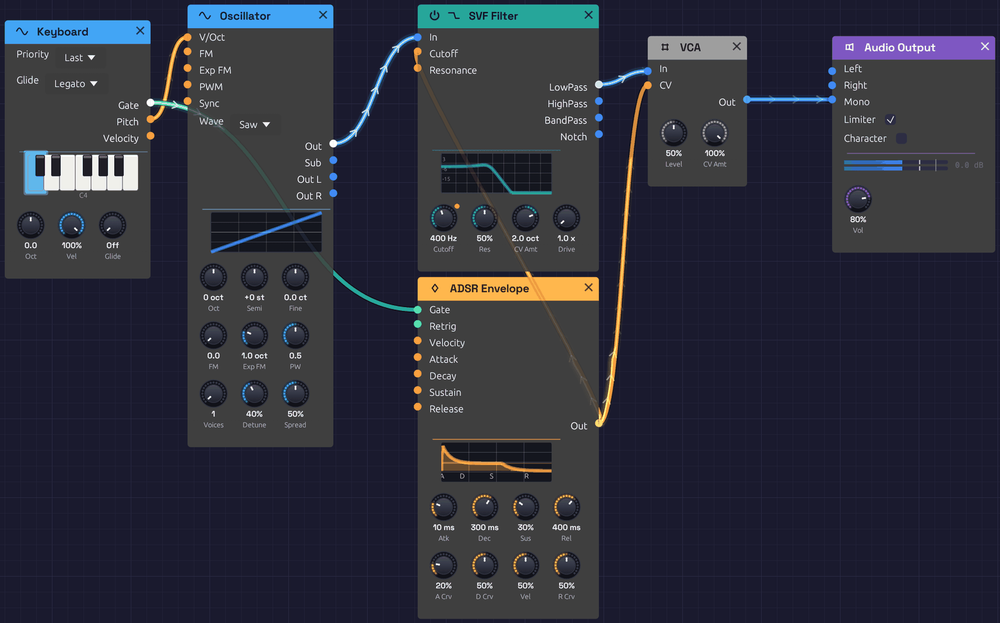
Where you'll end up.Before you start: First Sound
When Soba opens, it loads the First Sound example: a Note In, an Oscillator, an ADSR Envelope and a VCA, already patched to the Audio Output. Press ▶ Play in the toolbar and play the Z to M keys on your computer keyboard. That patch is a smaller version of the one you're about to build, so it's worth a minute of listening first.
To start from scratch, click 📄 New (Ctrl + N). The canvas empties; the status bar says Right-click to add nodes. Make sure ▶ Play is still on (the button reads ⏹ Stop while the patch plays).
Step 1: An oscillator you can hear
Every patch needs a sound source and a way out.
- Right-click empty canvas and choose Source › Oscillator.
- Right-click to the right of it and choose Output › Audio Output.
- Drag from the Oscillator's Out jack (right edge, blue) to the Audio Output's Mono jack. Mono sends the signal to both speakers.
You should hear a steady tone. The Oscillator starts on a sine wave at C4 (261.63 Hz), and its display draws the wave.
If you hear nothing, check that the patch is playing, that the toolbar's Output menu names the device you're listening on, and that the Audio Output's Vol knob isn't at zero.
Now change the Oscillator's Wave menu from Sine to Saw. The tone turns bright and buzzy: a sawtooth contains every harmonic, which gives the filter in Step 5 plenty to work with.
Tip: You can also add modules by pressing
Spaceover the canvas and typing a few letters, such asoscorout, thenEnter.
Step 2: Play it from the keyboard
A tone that never changes isn't much of an instrument.
- Add a Source › Note In to the left of the Oscillator.
- Patch Note In's Pitch output into the Oscillator's V/Oct input.
Play the bottom row of your computer keyboard: Z is C, X is D, and so on up to M for B, with the sharps on S, D, G, H and J. Note In's piano lights up the notes you hold, and the Oscillator follows.
Pitch is an orange control cable carrying volts per octave: each step of 1.0 is one octave, so the Oscillator stays in tune at every note. But the tone still never stops. For that, you need to shape each note.
Step 3: A VCA to control the level
A VCA (voltage-controlled amplifier) sets the level of whatever passes through it, under the control of another signal.
- Add a Utility › VCA between the Oscillator and the Audio Output.
- Patch the Oscillator's Out into the VCA's In.
- Patch the VCA's Out into the Audio Output's Mono. This replaces the cable that was there, because each input takes one cable.
Nothing changes yet: with nothing patched into its CV input, the VCA lets the sound through at full level. The next step gives it something to listen to.
Step 4: An envelope to shape each note
An envelope draws a shape every time a note is played: it rises when the key goes down and falls when the key comes up.
- Add a Modulation › ADSR Envelope below the VCA.
- Patch Note In's Gate output into the envelope's Gate input. Gate is green: it's on while a key is held and off when it's released.
- Patch the envelope's Out into the VCA's CV input.
Now each key plays a note that starts and stops. The envelope runs through four stages, each with a knob:
- Atk (attack): how long the note takes to reach full level. The default is 10 ms.
- Dec (decay): how long it then takes to fall to the sustain level.
- Sus (sustain): the level held for as long as the key is down.
- Rel (release): how long the note takes to fade after you let go.
Try a pluck: turn Sus all the way down and Dec to about 300 ms, so each note dies away even while you hold the key. Then try a swell: Atk around 1 s, Sus up, Rel around 2 s. The display on the envelope draws each shape as you turn the knobs.
Step 5: A filter to color the tone
A filter removes part of a sound's spectrum. A lowpass filter lets the low frequencies through and cuts the high ones, darkening the tone. This is the heart of subtractive synthesis: start with a bright waveform, then carve it.
- Add a Filter › SVF Filter between the Oscillator and the VCA.
- Patch the filter's LowPass output into the VCA's In, replacing the cable from the Oscillator.
- Patch the Oscillator's Out into the filter's In.
Play a few notes and turn the filter's knobs:
- Cutoff sets where the filter starts cutting. Turn it down and the saw goes dark and muffled; turn it up and the brightness returns. The display draws the filter's response as you turn it.
- Res (resonance) adds a peak at the cutoff, giving the sound a vocal, nasal edge. The default is 0.5. Near the top of its range the filter starts to ring on its own.
Step 6: Let the envelope open the filter
Real instruments are brightest at the start of a note. You can do the same by letting the envelope move the filter's cutoff.
- Patch the envelope's Out into the filter's Cutoff input. One output can feed any number of inputs, so the envelope keeps driving the VCA too.
- Turn the Cutoff knob down to about 400 Hz.
Each note now opens the filter and closes it again as the envelope decays. The Cutoff knob stays live and sets where the sweep starts. CV Amt sets how far the envelope carries it: one octave at first. Turn CV Amt up to 3 and each note opens with a squelch. An orange arc on the Cutoff knob's rim shows each sweep, and the number under the knob turns orange to read where the envelope has taken the cutoff.
For a plucky, percussive bass, set Atk to its minimum, Dec to about 200 ms and Sus low. For a slow, brightening pad, lengthen Atk.
The finished patch
[Note In Pitch] ──> [Oscillator V/Oct]
[Note In Gate] ──> [ADSR Envelope Gate]
[Oscillator Out] ──> [SVF Filter In]
[SVF Filter LowPass] ──> [VCA In]
[ADSR Envelope Out] ──> [VCA CV]
[ADSR Envelope Out] ──> [SVF Filter Cutoff]
[VCA Out] ──> [Audio Output Mono]
Save it with 💾 Save (Ctrl + S).
The signal path runs left to right: the oscillator makes the tone, the filter colors it, and the VCA shapes its level. The keyboard and envelope sit off to the side, controlling the others. Nearly every subtractive synthesizer, hardware or software, is built this way.
What you've learned
- Modules are added from the right-click menu or with
Space, and connected by dragging from an output to an input. - Audio (blue) is the sound itself; control (orange) moves things, like pitch and cutoff; gates (green) say when a note is on.
- An envelope through a VCA turns a constant tone into notes.
- One output can drive several inputs, and a cable into a knob's jack moves that knob.
Things to try
- Use separate envelopes. Add a second ADSR Envelope for the filter, also gated by Note In, so brightness and loudness can have different shapes.
- Add velocity. Patch Note In's Velocity into the envelope's Velocity input, then lower its Key Vel knob for quieter notes.
- Add movement. Patch a Modulation › LFO into the filter's Cutoff for a slow sweep. Its Out swings the cutoff CV Amt octaves either way.
- Add space. Put an Effect › Reverb between the VCA and the Audio Output: VCA Out into Reverb In L, then the Reverb's Out L and Out R into the output's Left and Right.
- Watch it. Patch the VCA's Out into a Utility › Oscilloscope as well as the output to see the envelope shape the wave.
Next
- Signal Types explains what each cable color carries and what can connect to what.
- Basic Subtractive Synth takes this patch further, with separate envelopes for brightness and volume. It's in 📚 Examples too.
- The module reference has a page for every module.
Lessons
Lessons are short tutorials that run inside Soba, and you learn by doing each step yourself. A caption sits beside the part of the patch it's about, and that part glows. A ghost pointer shows the move once, then the lesson waits until you've made it. When the patch shows you've done the step, it ticks and moves on to the next one.
 A lesson's caption and its ghost pointer, showing the cable to make.
A lesson's caption and its ghost pointer, showing the cable to make.
Open them from ❓ Help › 🎓 Lessons. Each lesson starts from its own patch, or from an empty canvas, so if the patch you have open has unsaved changes, Soba first asks whether to save them.
The same menu's 🎬 Present… is for the other side of the desk: it plays a script over a patch one beat at a time, while you talk an audience through it. See Presenting.
The lessons
Take them in order. Each one builds on the one before, and the five together cover what Your First Patch explains on paper.
| Lesson | What you do | In the browser |
|---|---|---|
| 1. First Sound | Add an oscillator and an output, patch them together, and change the wave. | Start |
| 2. Shaping with a Filter | Carve a bright saw with a lowpass filter, then hold Alt over a cable to hear what it carries. | Start |
| 3. Envelopes | Give a tone that never stops a shape in time, from a pluck to a swell. | Start |
| 4. Your First Sequence | A Clock and a Step Sequencer play a bass line, and you write the tune. | Start |
| 5. Groups | Fold four modules into one, go inside the group, and come back out. | Start |
Taking a lesson
- Do it your way. A step checks the patch, not how you got there. A cable dragged from either end counts. So does a module added from the right-click menu or from the
Spacepalette, and a knob turned by dragging or by a cable. If you do a step before the lesson asks for it, the lesson ticks it off as soon as it gets there. - 👁 Show me plays the ghost pointer's move again.
- Lost the part? At the start of a step, the view pans to bring the part it's about into sight. After that, the view is yours to move.
- Leave at any time. Click × on the caption. The lesson goes, and the patch stays exactly as you left it: an ordinary, unsaved patch to keep playing or to save. Opening another patch or example also ends the lesson.
- When you're done, the caption offers the next lesson.
From the command line
soba --lesson first-sound starts a lesson as Soba opens, and in the browser, so does ?lesson=first-sound on the end of the address. The name is the lesson's file in the lessons folder of the source, without its .txt.
Writing a lesson
A lesson is a text file in lessons/. Each line says something, points at something, shows a move or waits for one, and each wait closes a step:
title First Sound
about An oscillator, an output and one cable: a sound from nothing
say Drag from the Oscillator's **Out** jack to the Audio Output's **Mono** jack.
point osc.sine out:Out
point output.audio in:Mono
show drag osc.sine out:Out to output.audio in:Mono
wait connect osc.sine Out -> output.audio Mono
Parts are named the way capture scripts name them. Steps can wait for a module, a cable, a knob's value, the transport, notes played or a cable probed. The whole format is described at the top of src/app/lesson.rs, and the tests check every shipped lesson against the modules it names.
Presenting
Presentation mode is for talking over Soba while it plays: a video, a class, or a talk in front of a room. You write the script ahead of time and split it into beats. Each beat is a few moments of the patch moving: the camera turns to a module, a knob sweeps, a note plays. On stage you press one key, a clicker or a footswitch, and the next beat plays while you talk. What to say is in a notes window of its own, so a screen recorder filming Soba's window doesn't pick it up.
Each run is also kept as a take, a capture script that films the run again frame by frame, in time with what you said. So you can rehearse it live as many times as you like and film the run you liked exactly.
Starting a presentation
Open the patch you'll present over, then choose ❓ Help › 🎓 Lessons › 🎬 Present… and pick the script. From the command line:
soba patches/basic-subtractive.json --present presentations/ep4-filters.txt
Nothing plays until you press for the first beat. The status bar shows a Beat 3/6 chip while you present. Its dot lights red while a beat plays. Click the chip to bring the notes back if you closed them.
In the browser build, Present… asks for the script file, and the notes sit in a corner of the page rather than in a window of their own.
The keys
| Key | What it does |
|---|---|
Page Down or → | Plays the next beat. If one is still playing, it finishes first. |
Shift + Page Down or → | Finishes the beat on show now: knobs and the camera get to where they were going. |
Page Up or ← | Plays the beat on show again from its start. Pressed within a second of a beat starting, it goes back to the beat before. |
Escape | Stops presenting. The patch stays as the beats left it. |
A presentation clicker sends Page Down and Page Up, so it works without any set-up. The keys work from the notes window too. They don't reach the beats while a knob's value field or a menu has the keyboard: the notes say so, and a click on the canvas gives the keys back.
You can still turn knobs and move the view by hand between beats. A beat played again puts back the knobs, the view and the transport as they were when it first began.
The notes
The notes window shows the beat on show and its name, with what you wrote to say in large type, and the bold words to lean on in colour. Below that is the next beat, with its first line, so you can lead into it. A beat that moves on by itself shows a bar counting down to it.
The buttons do what the keys do: ⟲ Again, Finish ⏭, Next ▶ and Stop. ● Take shows how long the take has run, and Save take… writes it to a file.
Writing a script
A script is a text file. It starts with a title and any footswitches, then the beats. Each beat has the lines to say and the cues to play, timed in seconds from the moment the beat starts:
title The Filter That Sings
advance cc 64 # a footswitch on CC 64 plays the next beat
beat Cutoff
say A lowpass filter keeps the lows and takes the highs away.
say **Cutoff** is where it starts cutting. Bring it down, and the buzz goes dark.
0 look frame:Tone 0.8
0 cursor on
0 move filter.svf knob:Cutoff 0.6
0.6 note 36 80 5.0
1.0 param filter.svf Cutoff 260 3.6
beat Resonance
say Now **resonance**. It pushes back right at the cutoff, so that one spot rings.
1.0 param filter.svf Resonance 0.85 3.4
auto 6
titlenames the presentation in the notes and the status bar.window <width>x<height>sizes Soba's window as presenting starts, in points, so what you see live is what the film shows. A film at--size 1920x1080 --ppp 1.5iswindow 1280x720. If the window can't be that size, the status bar says so at the first press, and the take notes the size it was and how to film it.beat <name>starts a beat. A beat with no name is called by its number.sayis a paragraph for the notes. Use onesayline per paragraph. A beat with nothing to say is fine: the notes then tell you to let it play.auto <seconds>moves on to the next beat by itself that long after this one starts, without a press. Use it for a cold open that runs straight into the first explanation.#starts a comment.
The cues are the ones a capture script uses, so anything Soba can be filmed doing, a beat can do live. These are the ones a presentation uses most:
| Cue | What it does |
|---|---|
look filter.svf 0.8 | Glides the camera to frame a module, as F frames a selection, over 0.8 s. |
look osc.sine 1.4 2.0 | Centres a module at zoom 1.4, over 2 s. The canvas zooms in as far as 5×. |
look close util.vca 0.8 | Frames a module as close as it fits, so its knobs and displays fill the screen. Use it to show one control up close. A frame works too: look close frame:Tone. |
look frame:Tone 0.8 | Frames a frame, by its title. |
param filter.svf Cutoff 260 3.6 | Turns a knob to a value over 3.6 s. Frequencies and times glide evenly in octaves. |
note 36 80 5.0 | Plays a MIDI note into Note In: note number, velocity, length in seconds. |
chord 48,55,60 70 3.0 | Plays several notes at once. |
play / stop | Starts or stops the transport. Soba opens with it stopped, so the first beat usually starts with 0 play. |
cursor on | Draws a pointer over the picture. Real mouse moves don't show up in a take, so this is how a viewer sees where to look. |
move filter.svf knob:Resonance 0.6 | Glides that pointer to part of a module (a knob, a jack, a button), wherever the module is drawn. move off takes it away. |
enter Bells / leave | Dives into a group, or back out. |
A module is named by its kind, like filter.svf, and filter.svf#2 is the second one. The full list of cues and of the parts a move can aim at is at the top of src/app/capture.rs in the source. A beat can't use the cues that only make sense while recording: still, layout, input and end.
If the script has a mistake, Soba won't start it, and the message names the line.
Footswitches
A USB footswitch or any MIDI controller can step the beats. Name its CC before the first beat:
advance cc 64 # the next beat
back cc 65 2 # the beat again, or the one before: CC 65 on channel 2 only
finish cc 66 # finish the beat on show
A footswitch counts as pressed when its value goes from below 64 to 64 or above. CC 64 is what a sustain pedal sends, so a sustain pedal plugged into a MIDI keyboard makes a good one. While you present, Soba keeps these CCs away from everything else, so the patch doesn't hear the pedal as sustain, and no mapping or MIDI thru route does either.
Takes
Every run is kept as a take. A take is a capture script: each cue the beats played, timed from your first press, with the lines you said written in as comments. It begins two seconds before the first press, setting the view, the transport and any knob you'd turned by hand, so it starts from where you did.
Every take is saved, in a file of its own in a takes folder beside the script, named for the script and when you started presenting: presentations/takes/ep4-filters-2026-10-28-090503.txt. It's written as each beat begins, so a crash keeps everything up to the beat you were on, and again when you stop. The status bar then says where it is, and so does hovering ● Take in the notes. A run you stop before the first press has no take.
To choose the file yourself, start with --take:
soba patches/basic-subtractive.json --present presentations/ep4-filters.txt --take ep4-take.txt
Save take… in the notes writes a copy anywhere, at any point. In the browser, where Soba can't write files, it's the only way to keep a take: it downloads one.
A take keeps the script's cues, not your hands. A knob you turn or a view you move by hand during a beat isn't in it, so anything the film needs to show belongs in the script. A beat you played again replaces the first try: the take holds still where you went back, which is where the editor cuts your retake of the narration. The take says so in a comment under that beat (# Played again: the film holds still from 1:10.2…).
A take is text: it records no sound or picture. The picture and the patch's sound come from filming it, and your voice from your own recorder.
From rehearsal to film
This is how a video gets made with it:
-
Write the script against the patch, one beat per idea, each ending on something to listen to.
-
Rehearse live. Give the script a
windowline the shape of the film (tall for a Short, wide for a video), because the camera frames modules to fit the window and the take keeps that view. Play the beats, rewrite them and go again until the pacing feels right. Fix the script between runs and present it again: there's no need to restart Soba. -
Record the take. Present (with
--taketo name its file), and record two tracks as you go: your mic, and Soba's own sound (desktop or loopback audio). OBS in audio-only mode does it, as do Reaper and Audacity. Wear headphones, so the mic doesn't hear the patch. Play a beat again if you fluff a line. -
Film the take. A capture films it with the patch's sound, frame by frame, so nothing stutters however busy the patch is:
soba patches/basic-subtractive.json --capture ep4-take.txt --out target/showcase/ep4 --size 1080x1920 --fps 30 -
Line up the voice. The film's zero is your first press.
take_sync.pyfinds it in your recording by matching the film's sound against the Soba track, and writes your voice from that moment on, ready to put at 0:00 under the film:python tools/showcase/take_sync.py target/showcase/ep4 narration.mkv --track 1 --voice-track 0 --out voice.wavIt also says whether the recorder's clock drifted from Soba's, and stretches the voice to match if it did.
-
Cut it.
take_markers.pylists each beat where it starts in the film and every retake to cut. With--edlit writes them as markers DaVinci Resolve imports, and with--scriptit prints the presentation's sections as YouTube chapters:python tools/showcase/take_markers.py ep4-take.txt --script presentations/ep4-filters.txt --edl markers.edlCut picture and patch sound together, where the patch holds still, and never inside a moment of listening.
-
Encode it.
python tools/showcase/encode.py ep4 ep4.mp4 --lufs -14makes a clip of the film alone, at the loudness video sites play at. With narration, mix and export from your editor at −14 LUFS instead, with the patch about 10–12 dB under your voice while you talk.
A take plays its cues against the patch as it stands, so if you change the patch or the script, present it again for a new take.
A worked example
presentations/ep4-filters.txt in the source is the pilot for Synthesizer 101 with Soba, a video series that teaches how synthesizers make sound. It's a Short about the filter, presented over the Basic Subtractive example in six beats:
- The sound first. With nothing said, the camera frames the filter and its envelope, and a resonant filter sweeps through one low note. It moves on by itself.
- Every harmonic. The filter opens wide on the oscillator's saw wave, which has every harmonic in it.
- Cutoff. The pointer takes the Cutoff knob down, and the buzz goes dark.
- Resonance. Resonance comes up, and the cutoff starts to ring.
- It sings. The cutoff sweeps up through the note, and the ring picks out its harmonics one at a time.
- Play it. A short phrase, each note's envelope opening the filter.
Open Basic Subtractive, choose Present… and pick the script. Then press Page Down for each beat: the first runs on into the second by itself.
Signal Types
Every jack in Soba has a signal type, and every type has a color. The color of a jack tells you what it sends or expects, and a cable takes the color of the output it comes from, so you can read a patch's signal flow at a glance.
| Type | Color | Range | Carries |
|---|---|---|---|
| Audio | Blue | −1.0 to 1.0 | Sound |
| Control | Orange | 0.0 to 1.0, or −1.0 to 1.0 | Modulation and pitch (CV) |
| Gate | Green | 0.0 or 1.0 | Notes, clock pulses, triggers |
| MIDI | Purple | A device and a channel | Which controller a module hears, from a MIDI In; see MIDI |
| Bus | Pale steel | A whole stereo mix and its sends | A Mixer's Chain Out into the next Mixer's Chain In; see Bus |
Underneath, audio, control and gate signals are all the same thing: a stream of numbers at the audio sample rate. The type describes what the numbers mean, and it decides which jacks a cable may connect (see Which types connect).
Audio
Audio is the sound itself: a waveform swinging between −1.0 and 1.0, at your audio device's sample rate (typically 44.1 or 48 kHz). Oscillators make it; filters, the VCA, the Mix, the Mixer and the effects shape it; the Audio Output sends it to your speakers.
Keep audio within ±1.0 and it passes through the output untouched. Louder than that and the output stage's limiter, on by default, catches the peaks before they clip. It's a safety net, though, not a mixing tool. When several voices or oscillators add up, bring the level down with a VCA or the Mixer.
Control
Control signals, often called CV (control voltage), move a parameter instead of making a sound. They come from envelopes, LFOs, the sequencer and Note In, and they go into jacks such as a filter's Cutoff or an oscillator's FM.
A control signal is either:
- Unipolar, from 0.0 to 1.0. An envelope is unipolar: it rises from nothing to its peak and falls back.
- Bipolar, from −1.0 to 1.0. An LFO in bipolar mode swings both ways around the center, which suits vibrato or a sweep around a set cutoff.
Most control signals change slowly, but nothing stops them running at audio rate. Patch an oscillator into another oscillator's FM input and you have FM synthesis.
Pitch: 1 per octave
Pitch travels as a control signal on a 1-per-octave scale, the digital version of the 1 V/octave standard in hardware modular. Each 1.0 is an octave:
| Pitch CV | Note (with the oscillator's tune knobs at 0) |
|---|---|
| −1.0 | C3 |
| 0.0 | C4 (261.63 Hz) |
| 0.5 | F♯4 |
| 1.0 | C5 |
| 2.0 | C6 |
One semitone is 1/12. The Pitch outputs of Note In and the Step Sequencer both use this scale, so they play an Oscillator in tune with nothing to calibrate. Both filters take their Cutoff CV on the same scale, so a pitch cable patched into Cutoff makes the filter track the keyboard exactly.
Gate
A gate is either on (1.0) or off (0.0). It says when: a key held down, a step in a sequence, a tick of the clock. The ADSR Envelope, for example, starts its attack the moment its Gate goes on (the rising edge) and starts its release the moment it goes off (the falling edge).
A short gate is often called a trigger. Modules that only care about the moment a gate begins, such as the clock input of the Step Sequencer or the Trig input of Sample & Hold, treat both the same way.
Gates come from the Gate outputs of Note In, the Clock and the Step Sequencer (which also has an EOC, end-of-cycle, gate).
MIDI
MIDI is the purple signal type. A purple cable says which controller a module hears: it comes from a MIDI In, which names a device and a channel, and goes into the MIDI input, the purple jack on the title bar, of a module that listens for MIDI: Note In, Pad, Control, the Clock or the MIDI Monitor. Patched, the module hears the MIDI In's device and channel, whatever its own Device says. Unpatched, it hears its own Device, as it always has.
The cable doesn't carry the notes themselves. MIDI from your controller still goes straight into the modules that listen for it; the cable only chooses where from. It also runs through a group's jacks, so a group of Pads can have one purple jack, and the controller plugged into it reaches every pad inside. Note In turns notes into ordinary Pitch, Gate and Velocity signals that the rest of the patch understands, and does the same for your computer keyboard.
Bus
Bus is the pale steel signal type. One Bus cable carries a Mixer's whole mix and its sends from its Chain Out to the next Mixer's Chain In, so Mixers can be chained for more than four channels. It connects only to another Bus: no audio, control or gate jack takes it, and a Bus jack takes nothing else.
Which types connect
Same-type connections always work. A few cross-type connections work too, and the rest are refused:
| From | To | Allowed? | Why |
|---|---|---|---|
| Audio | Control | Yes | Audio-rate modulation, such as FM |
| Control | Audio | Yes | Mix or process a CV like audio, such as an LFO into the Mix |
| Gate | Control | Yes | Use a gate as a 0-or-1 modulation signal |
| Gate | Audio | No | A gate needs an envelope or VCA to become sound |
| Audio or Control | Gate | No | Gate inputs only take gates |
| MIDI | Anything else | No | A MIDI cable chooses a device; it carries no signal |
Allowed cross-type connections pass the signal through unchanged. An audio cable into a control input is the raw waveform; a gate into a control input is exactly 0.0 or 1.0.
A jack that can't take the cable you're dragging shows it before you let go: the ring round it breaks into two halves, one in the cable's colour and one in the jack's, that don't meet. Drop the cable there anyway and a small tag beside the jack explains why, for example Control cannot connect to Gate, as does the status bar at the bottom of the window.
Signal color and category color
Don't confuse the two palettes. Jacks and cables are colored by signal type, as above. The bar across the top of each module is colored by the module's category: blue for Sources, teal for Filters, and so on. See the Module Overview.
See also
- Connections: patching, and reading the signal in a cable
- Polyphony: cables that carry up to eight voices
Connections
A cable carries a signal from one module's output to another module's input. Patching is the whole of Soba: the modules decide what can happen, and the cables decide what does.
Patching a cable
Outputs are on the right edge of a module and inputs are on the left. To connect two modules:
- Press on an output jack and drag. A cable follows the pointer.
- Release over an input jack on another module.
You can also start from an empty input and drag back to an output.
To unplug a cable, press on the input end and drag it away. The cable comes off the jack and follows the pointer: drop it on another input to re-patch it, or on empty canvas to remove it. Deleting a module removes all of its cables.
Patching and unpatching are recorded in the undo history, so Ctrl + Z puts back a cable you pulled by mistake.
The rules
- An output can feed any number of inputs. Each one receives the full signal, with no loss of level.
- An input takes one cable. Patching a second cable into an occupied input replaces the first.
- Signal types must be compatible. Audio and control connect to each other freely, and a gate can drive a control input, but a gate input only accepts gates. The full table is on Signal Types. If a cable can't connect, the jack's ring breaks in two as the cable nears it, and a cable dropped there anyway is removed with a small tag beside the jack, and the status bar, explaining why.
- A module can't patch into itself, and signals don't loop. Soba processes the patch in one direction, from sources to the output, so a cable that would feed a module's output back into its own input, directly or through other modules, is refused, and the tag at the jack and the status bar name the modules round the loop. A patch file holding such a cable opens without it and says which. The Mixer's Return jacks and the Clock's Tempo jack are the exceptions: they hear a loop one audio block late. For echoes and feedback, use the Delay's Feedback knob.
Empty jacks
An input with nothing patched in isn't necessarily zero. Each jack has a resting value chosen so the module does something sensible on its own. A VCA with nothing in its CV jack plays at full level, for example, so you can hear its input before you add an envelope.
The stereo effects work the same way. Patch only their left input and they treat the signal as mono, feeding both sides, so a mono voice into the Reverb still gets a stereo tail.
Knobs with jacks
Many parameters have both a knob and an input jack of the same name, such as Cutoff on the filters or Time on the Delay. With nothing patched, the knob sets the value. Patch a cable in and the signal modulates the parameter around the knob: the knob sets the center, and the cable moves the value up and down from there.
How far a cable moves the parameter depends on the parameter, and each module page gives the scale. On both filters, for instance, the Cutoff CV is in octaves: at the default CV Amt of 1, +1.0 doubles the cutoff and −1.0 halves it. With Cutoff at 1 kHz, a bipolar LFO sweeps the filter from 500 Hz to 2 kHz. Some inputs have a knob of their own that sets how far they reach, as CV Amt does here.
A small dot above the knob shows that a cable is patched in: orange once the signal is arriving, green while it's connected but hasn't reported a value yet. You can keep turning the knob to move the center while the cable plays.
A knob mapped to a MIDI controller shows a purple M badge instead of the dot.
Reading the signal in a cable
While the patch plays, each cable shows what its signal has been doing over the last few seconds. The signal travels from the output to the input at a steady pace, so the end of the cable nearest the output is now and points further along are moments ago.
- Brightness is strength. A cable lights up with its signal and goes dark when it's silent. A note becomes a packet of light that runs down the wire. The packet's length is how long the note lasted, and an audio cable's light fades out as the note releases.
- Marks point the way. Chevrons ride the light from output to input, so you can read a patch's direction even in a still frame. Each mark keeps the brightness of the moment it left the output.
- Control cables draw their shape. On orange cables the light swings to one side of the cable or the other with the signal's value. An LFO shows its waveform traveling down the wire, an envelope its rise and fall, a sequencer its steps.
- Gates are on or off. A green cable shows bright packets with hard edges, one per gate.
When you press Stop, the last of the signal drains out of the cables rather than vanishing.
To change the marks, open Cables in the toolbar and choose Chevrons, Dots or Comets. Soba remembers your choice.
Polyphonic cables are drawn as a bundle of strands, one per voice. See Seeing polyphony.
Laying out a patch
A patch is easier to read, and easier to come back to, when it follows a few habits:
- Run the audio path from left to right, ending at the Audio Output.
- Put modulation sources (envelopes, LFOs, the clock) above or below the audio path, so their cables reach across it rather than tangling with it.
- Keep each voice's modules together.
[LFO] ──┐
▼ Cutoff
[Oscillator] ──> [SVF Filter] ──> [VCA] ──> [Audio Output]
▲ CV
[ADSR] ──────────────┘
When there's no sound
Work backward from the output:
- Is anything patched into the Audio Output? The Mono input is the simplest place to start.
- Is the transport running? Press Play in the toolbar.
- Is the VCA opening? If its CV jack is patched to an envelope, the envelope needs a gate. Play a note.
- Is the envelope getting a gate? Its Gate cable should light green when you play.
- Follow the light. A cable that stays dark carries silence. The last lit cable before the dark ones points to the module to check.
See also
- Signal Types: what each color carries, and which types connect
- Polyphony: one cable, up to eight voices
- Interface Overview: every editing action and shortcut
Polyphony
A cable in Soba can carry up to eight channels at once, one per voice. Patch a chord through a single chain of modules and every note gets its own oscillator, its own filter and its own envelope. The result is a chord of separate voices, each shaping itself, rather than one voice playing a blend of notes.
This is the approach VCV Rack takes. You don't build eight copies of your voice. You build one, and the cables carry the voices through it.
Where voices come from
The Note In module is where polyphony starts when you play. Its Voices knob (1 to 8) sets how many channels its Pitch, Gate and Velocity cables carry, and each note you play is given a channel of its own. It plays from your computer keyboard as well as from MIDI.
In a patch that plays itself, the Chord Sequencer starts it instead. It sends a progression's chords down the same Pitch, Gate and Velocity cables, one channel per note, so a voice built for Note In plays it unchanged.
Polyphonic modules
These modules run one voice per channel of their widest input:
| Module | Each voice has its own |
|---|---|
| Oscillator | Phase, sync and unison stack |
| Noise | Random stream, so no two voices hiss alike |
| Drum | Hit, so fast notes ring over each other instead of cutting each other off |
| SVF Filter | Filter state and resonance |
| Ladder Filter | Filter state and resonance |
| ADSR Envelope | Stage and level |
| Slope | Level, so a chord glides voice by voice |
| VCA | Gain |
| Attenuverter | Scaling |
| Mix | Sum |
| Sample & Hold | Held value |
| Quantizer | Note, and its Trig, so a chord comes out as a chord in the scale |
Their outputs carry as many channels as their widest input. The knobs are shared: turning Cutoff moves every voice's cutoff.
Seeing polyphony
A polyphonic cable is drawn as a bundle of strands, one per channel, in a dark sheath that narrows where it plugs into a jack. The bundle widens as the channel count grows, so you can tell mono from poly at a glance at any zoom.
Each strand lights with its own voice. Hold a chord and light runs along the strands of the notes you're playing while the rest stay dark. When you let go, each note's release fades down its own strand. The glow around the bundle grows with the number of voices playing, so a chord glows brighter than a single note. See Reading the signal in a cable.
Output labels show the channel count too: Out ×8 means that output carries eight channels. The count comes from the running patch, so press Play to see it. Once shown, it stays while the transport is stopped.
Mixing mono and poly
A mono cable into a polyphonic module is shared by every voice. One LFO into a polyphonic filter's Cutoff sweeps all the voices together. To move each voice on its own, use a polyphonic source such as the envelope or Note In's Velocity.
A polyphonic cable into a mono module is folded down to one channel:
- Audio inputs hear every channel summed. That's why a polyphonic voice can go straight into an effect or the Audio Output.
The Mixer is the exception. It hears each voice of a polyphonic cable apart, and its per-channel Width knobs fan them out across the stereo field, so a chord opens up instead of sitting in the middle. With Width at 0% it sums them like any mono module.
- Control and gate inputs take the first channel only, since adding CVs together rarely means anything useful.
Voices add up, so a four-note chord is roughly four times as loud as one note. Leave headroom with the VCA's Level or the Mixer.
A polyphonic voice
[Note In Pitch] ──> [Oscillator V/Oct]
[Note In Gate] ──> [ADSR Gate]
[Note In Velocity] ──> [ADSR Velocity]
[Oscillator Out] ──> [SVF Filter In]
[ADSR Out] ──> [SVF Filter Cutoff]
[SVF Filter LowPass] ──> [VCA In]
[ADSR Out] ──> [VCA CV]
[VCA Out] ──> [Reverb In L]
[Reverb Out L / R] ──> [Audio Output Left / Right]
Every module up to the VCA runs one copy per voice. The Reverb hears the voices summed, as a single stereo instrument.
Cost
Each voice is a full copy of the module, so eight voices use about eight times the CPU of one. If a patch strains your computer, turn down Voices on the Note In module. With mono cables, a polyphonic module runs a single voice and costs no more than before.
Tempo and Sync
A patch has one tempo and one beat, and modules that care about time share them. Turn the Clock's BPM and the echoes of a synced Delay move, a synced LFO speeds up, and every sequencer the Clock steps keeps pace. None of them needs a cable from the Clock to know.
The transport
The patch's first Clock is its transport. Before each block of audio, Soba reads three things from it and hands them to every module:
- the tempo, in beats per minute;
- the beat: how many beats have passed since the Clock started, counted from its downbeat;
- whether it's playing: the beat moves while the Clock runs, and holds while it's stopped.
A patch without a Clock has no transport. Synced modules then assume 120 BPM, and a synced LFO keeps its own beat.
If a patch has more than one Clock, the transport is the first one in processing order, which is usually the one nothing else feeds. Other Clocks still pulse at their own settings; they just don't set the patch's tempo.
The tempo doesn't have to stay put. A CV in the Clock's Tempo jack bends it, and everything synced bends with it: an Arranger lane there slows the song into its last chord. See Tempo CV.
For a pulse slower than the beat, such as once every four bars, divide the one Clock with a Clock Divider rather than adding a second, slower Clock. A divider counts the Clock's pulses, so it stays on the beat at any tempo, and it can't become the transport by accident.
Two kinds of sync
Following the tempo. The Delay's Sync turns a note length into a time: a 1/8 at 120 BPM is 250 ms. It needs only the tempo.
Following the beat. A synced LFO reads where the beat is and works out its phase from that. A 1 bar LFO is at the start of its cycle on every downbeat, a quarter of the way through on beat 2, and so on. Because it reads the beat rather than counting its own cycles, it can't drift, however long it plays, and every synced LFO in the patch moves in step. When the Clock starts from the top, they all start from the top with it.
That's the difference from patching a Clock's Gate into an LFO's Sync input. A gate only restarts the cycle at each pulse, and between pulses the LFO runs at its own Rate, which you have to set to match.
Playing in time with other gear
Set the Clock's Source to MIDI and it follows a MIDI clock master: a DAW, a drum machine, a hardware sequencer. The master sends 24 clock ticks per beat, plus Start, Stop and Continue messages for its transport. The Clock:
- counts the ticks, so its beat is exactly the master's, tick by tick;
- measures the tempo from their spacing, averaged over the last two beats, so the knob reads the master's BPM and synced modules follow it;
- starts, stops and continues when the master does. Start fires the Clock's Reset output, so patched sequencers start from step 1 on the downbeat.
The whole patch then plays in the master's time: sequencers step on its grid, LFOs sweep with its bars, and the Delay echoes on its eighth notes. See Following MIDI clock for setting it up.
Set Source to Auto and the Clock leads and follows by turns: its own time until a device plays, the device's while it does, and its own again when the device stops, carrying on at the device's tempo from the beat it had reached. See Leading or following.
Set Source to Link instead, and the Clock joins an Ableton Link session on the network. There's no master: Live, Bitwig, phone apps and other copies of Soba all share one tempo and one bar line, and any of them can change the tempo or start and stop the others. The Clock:
- plays at the session's tempo, and its BPM knob turns to match when another app changes it. Turning the knob changes the tempo for everyone;
- lines up its bars with the session's, so beat 1 is everyone's beat 1;
- starts and stops with the session. Ticking its Run starts every app in it, on the next bar if others are already there.
Where MIDI clock carries the master's time down a cable, Link has every app keep the same time from the network's shared clock. Each app allows for its own audio delay, so they agree on when a beat reaches the speakers, not just when it's computed. See Playing in a Link session.
Leading other gear
It works the other way round too. Turn on a port's Clock in the Rig and the patch's Clock becomes the master: a DAW, a drum machine or an arpeggiator on that port, set to follow MIDI clock, plays in Soba's time. The port, with Clock + Transport:
- sends Start when the Clock starts from the top, or on the first downbeat after a count-in;
- sends 24 ticks per beat, each placed on the beat to the sample, and sent as the audio beside it reaches your speakers, so the other gear and Soba's own sounds line up;
- sends Stop when the Clock stops, and Continue, after a Song Position saying where, when it plays on from there.
With Clock only it sends the ticks alone, for gear that should follow the tempo but start and stop by itself. Each port also has an Offset, to line up gear that's slow to sound (see MIDI Out).
A follower measures the tempo from the ticks' spacing, so change the Clock's BPM and it follows. Soba doesn't send clock back to the gear the Clock follows, since two clocks can't lead one another: while a device leads, the ports that play it are sent none. A Clock playing in a Link session can lead MIDI gear, though. A MIDI Out on the same port can also play the device's notes.
Precision
The Clock counts its beat precisely enough that every pulse lands within a sample of where it belongs, even after ten minutes, so a slow phrase clock and a fast sixteenth clock started together stay together.
Modules read the transport once per block of audio (a few milliseconds). Within the block, a synced LFO moves on at the tempo it read. When the beat jumps, as when the Clock restarts or a MIDI master suddenly changes tempo, a synced LFO can be up to one block late in following it. On a steady tempo, and from the next beat on, it's exact.
Groups
A good voice (an oscillator, a filter, a VCA and an envelope) is the same few modules in patch after patch, and three voices side by side turn into a wall of cables. A group collapses modules into one node of your own. It has jacks where cables crossed into and out of the selection, plus any you add, and the controls you choose to keep on its face. Open it to work on what's inside. Save it to My Modules, and it's in the add menu of every patch.
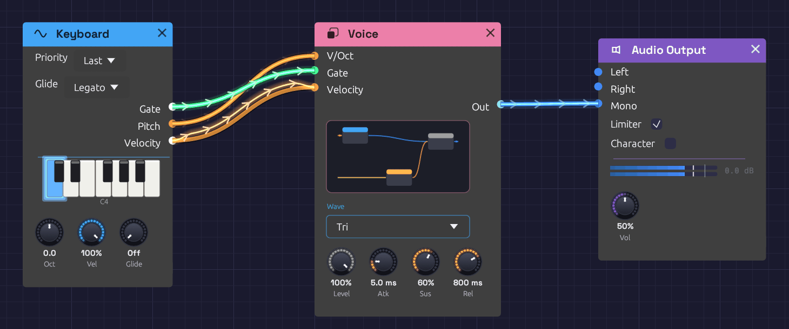
Voice holds an oscillator, an envelope and a VCA. Its face shows them in miniature, with the oscillator's Wave and four knobs pinned.Making a group
Select some modules and press Ctrl + G, or right-click one of them and choose Group. They collapse into one rose-colored node where the top-left corner of the selection was. Type a name and press Enter.
Every cable that crossed the edge of the selection becomes a jack:
- An input jack for each output outside the group that fed something inside it. If one output fed several modules inside, as a keyboard's Gate might feed two envelopes, that's one jack.
- An output jack for each output inside the group that fed something outside it.
Jacks are named after the port inside, numbered if two names would be the same (In, In 2). They're colored by the signal they carry, like every jack, and ordered top to bottom by where their modules sit. Grouping doesn't change the sound: every module hears exactly what it heard before.
To take a group apart, select it and press Ctrl + Alt + G, or right-click it and choose Ungroup. Its modules come back out where the group was, laid out as they were, and every cable through its jacks becomes a plain cable again.
Inside a group
Double-click a group, select it and press Tab, or click the miniature on its face, to go inside. A trail at the top of the canvas shows where you are, such as First Sound › Voice. Click any name in the trail to go back out to it, or press Escape to go up one level.
Going in, the view zooms into the group's miniature, and the inside grows out of it, each module coming from where the miniature showed it. Going back out with Escape, the inside shrinks back into the miniature on the group's face. Hold Shift as you go in or out to skip the zoom. Clicking the trail always takes you straight there.
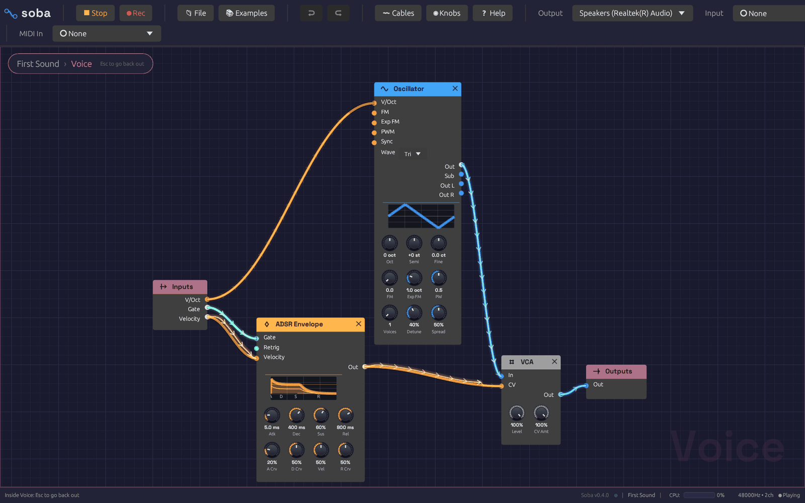
Inside Voice. Inputs carries what's plugged into the group's jacks outside; Outputs sends its signals back out.Inside, two nodes stand for the group's jacks:
- Inputs has an output for each input jack. Whatever is plugged into that jack outside comes out here.
- Outputs has an input for each output jack. Whatever you plug in here comes out of that jack outside.
Everything else works as it does at the top of the patch. Modules you add, paste or drop from the palette land inside the group, and you can group modules inside a group too. The cables from Inputs show the signal arriving from outside. Frames and notes belong to the top level of the patch, so they're hidden while you're inside a group.
Changing a group's jacks
A group starts with the jacks its cables gave it, and you can change them whenever you like. Inside the group, right-click a port's name:
- Show on group, on an output or an unplugged input, gives the group a new jack named after the port, wired to it through Inputs or Outputs. A filter's Cutoff shown this way can be modulated from outside, and a second output can be brought out beside the first. An input that's already plugged in inside the group can't take a jack too, so the item is greyed.
- Hide from group, on a port wired to one of the group's jacks, unplugs it. If that leaves the jack carrying nothing inside, the jack goes, and so does any cable into it outside. If the jack still feeds another module, as a shared Gate might, it stays.
Right-click a jack itself, on the group's node or on Inputs or Outputs inside, for its own menu:
- Name opens with the jack's name selected, so you can type a new one and press
Enter. A Gate jack might become Trig, or Out might become Wet. The group's node and its Inputs or Outputs change together, and every cable stays plugged in. If another jack on that side already has the name, the new one is numbered. - Move up and Move down move the jack one place along the group's jacks, with its cables.
- Remove jack takes the jack away, with its cables inside and out.
New jacks go at the bottom of the group's jacks. Inside a group within a group, an inner group's jacks are ports like any other, so you can show them on the group around it. Undo covers adding, renaming, moving and removing jacks, and a saved patch keeps them.
The face
The group's face shows a miniature of what's inside: each module as a small card in its header color, wired as it is. Hover it to see Open ▸, and click to go inside.
Below the miniature are any controls you've pinned to the group. Inside the group, right-click a knob, a dropdown, a toggle, a Pad's pad or a Control's fader and choose Show on group. It appears on the group's face, in its module's color: dropdowns and toggles in a row of their own, then pads four to a row and faders up to six, with the knobs under them. It's the module's own control, not a copy:
- Turning or changing either one changes both, and undo takes back either.
- A pad on the face plays as the Pad's own does: click it, harder toward its top, and it strikes whatever its Gate is patched into. It lights as the pad on your controller is hit, so a closed group of Pads is a controller you can see and play (see On a group's face).
- A fader on the face moves as the Control's does, with the hardware: a closed group of Controls shows where each of your faders stands (see On a group's face).
- A MIDI Learn mapping on a knob works from either place. Dropdowns and toggles can't learn a CC, inside or on the face.
- If a cable inside the group moves a knob, the face shows it moving. A toggle with a jack, such as the Slope's Cycle, is greyed on the face while a cable sets it.
Controls from modules nearer the face come first, then top to bottom by where the modules sit, then in each module's own order.
Right-click a control on the face and choose Hide from group to take it off. If the group is inside another group, Show on outer group too puts it on that group's face as well.
Naming a face control
A pinned control wears its module's short name, such as FM, CV Amt or 2, and a pad its note in the corner. That says what the knob is, not what it does for this group. To name it, right-click it on the face. The menu opens on Name with the current name selected: type a new one and press Enter. An electric piano's FM might become Tine, a mixer's 2 might become 4', and the pad on C2 might become Kick.
- The name shows only on the face. Inside the group, the module keeps its own names, so you can still see which knob is which when you open it.
- Hover a named control to see what it drives, such as Tine: Oscillator FM Depth.
- Clear the field and press
Enter, or type the module's own name, to go back to it. - The name goes with the control to an outer group's face, and into a saved patch or My Modules. Undo takes it back.
My Modules
Right-click a group and choose Save to My Modules. The group is saved as a file named after it, in Documents/Soba/My Modules.
Saved groups come first in the quick-add palette (Space), under My Modules, and in the add menu's My Modules submenu. Each one is described by its jacks and size, such as In, Gate, Velocity → Out · 2 modules. Choosing one adds a copy of the whole group at the cursor, with its modules, cables, jacks and pinned controls.
Saving a group under a name that's already there updates it. The folder holds ordinary patch files, so you can copy them to another computer or share them. To find the folder, choose Open folder at the bottom of the add menu's My Modules submenu.
The Library
The Library is a shelf of ready-made groups that ships with Soba. Each one is an ordinary group: add it, play it from the controls on its face, then open it to see how it's made and change anything inside. Find them under Library at the bottom of the add menu, sorted into sections, or type a name or lib into the quick-add palette.
| Group | What it is | Jacks |
|---|---|---|
| Subtractive Voice | A saw through a ladder filter, one envelope opening the filter and one shaping the level | Pitch, Gate, Velocity → Out |
| FM Voice | Two-operator FM at 1:1, an electric-piano bark that mellows as it rings. Oct and Semi set the ratio | Pitch, Gate, Velocity → Out |
| FM Bell | Two-operator FM at 1:3.5: clangorous partials that fade to a pure tone | Pitch, Gate, Velocity → Out |
| Electric Piano | A Rhodes-style tine: FM at 1:1 that barks the harder you play and mellows as it rings, with a 14:1 ping on the strike and a slow tremolo. Its face: Tine, Bark, Decay, Tremolo and Rate | Pitch, Gate, Velocity → Out |
| Supersaw Pad | Seven detuned saws, a slow swell and a filter that breathes | Pitch, Gate, Velocity → Out |
| String Machine | A Solina-style ensemble: detuned saws at 8' and 4', thinned and swelling, through a three-voice chorus. Its face: Swell, Release, Ensemble, Bright and 4' | Pitch, Gate, Velocity → Out |
| Mallet | A short strike rings a resonant filter tuned to the note, like a marimba bar | Pitch, Gate, Velocity → Out |
| Acid Bass | A resonant, driven ladder snapped open on every note; velocity accents. Step Sequencer slides glide it like a 303 | Pitch, Gate, Velocity → Out |
| Reese Bass | Three detuned saws beating against each other, with a slow LFO in the filter | Pitch, Gate, Velocity → Out |
| Drum Kit | Kick, snare and hats on a stereo mixer, the closed hat choking the open one | Kick, Snare, Hat, Open Hat, Accent → Out L, Out R |
| Random Melody | Plays itself: a wandering voltage sampled on the beat and kept in a scale, A minor pentatonic until you change Root and Scale. Range sets how far it wanders, Rests how many beats it sits out | → Pitch, Gate |
| Wind | Plays itself: pink noise through a wandering band-pass, whistling higher as each gust rises | → Out L, Out R |
| Stereo Space | Chorus, ping-pong tape echo and a room, in pedalboard order | In L, In R → Out L, Out R |
| Pump | Each trigger ducks the sound and lets it swell back, like a compressor keyed from the kick | In, Trig → Out |
| Auto-Pan | An LFO sweeps a mono sound from side to side. Tempo locks the sweep to the Clock | In → Out L, Out R |
| Slicer | The Slicer rebuilt from stock modules, to open and see how a slicer pedal works: a synced LFO clocks a Step Sequencer whose steps open a VCA and a step filter. Its face: Rate, Steps, Duty, Atk, Rel, Filter, Depth and Close | In, Reset → Out, Gate, Env |
| Pads ×8 | Eight Pads on the General MIDI drum notes, 36 to 43 on channel 10, two rows of four. Its MIDI jack goes to every Pad: plug a MIDI In into it to choose the controller. Its pads are on its face, to click. Right-click it and choose Learn in order to teach it a controller that sends other notes | MIDI → Gate 1, Vel 1, … Gate 8, Vel 8 |
| Controls ×4 | Four Controls hearing a keyboard's own controls before anything is learned: the mod wheel, the pitch bend, the pressure and CC 74. Their faders are on its face. Right-click it and choose Learn in order to teach it your controller's faders | MIDI → A, B, C, D |
| MiniLab 3 Faders | An Arturia MiniLab 3's four faders and both touch strips, a Control for each, as it comes from the box, all six moving on its face | MIDI → Fader 1 … Fader 4, Bend, Mod |
The voices share a shape: plug a Note In into Pitch, Gate and Velocity, and Out into a mixer or the output. They're built from polyphonic modules, so Note In, or a Chord Sequencer, plays chords through any of them. The String Machine's chorus is the one exception: like a real string machine's ensemble, it hears the whole chord at once. They're also levelled to match, so swapping one voice for another doesn't jump in volume.
A Library group you've changed can be saved to My Modules under its own name, like any other group.
Editing and undo
Copy, paste, duplicate and delete treat a group as a whole: deleting one deletes everything inside it. Undo covers grouping, ungrouping, renaming, pinning, naming face controls, changing jacks and every edit you make inside a group. Undoing an edit that was made inside a group shows you that group as it happens.
How the sound works
The audio engine never sees a group. It only hears the modules and the cables between them, followed through any number of jacks. Groups use no CPU, and grouping or ungrouping never interrupts the sound. A grouped patch plays sample for sample what the ungrouped patch plays, and the test suite checks this for every example.
Groups are saved in the patch file, each holding its own modules, cables and groups. A patch with groups needs this version of Soba or later to open. A patch without groups is saved just as before, so older versions still open it.
Module Overview
Soba has 44 modules in six categories. Each category has its own header color, so you can tell what a module is for at a glance across a crowded patch. The categories match the right-click menu and the quick-add palette, and the modules are listed here in the order the menu shows them.
The ID is the name a patch file uses to refer to the module.
Categories
Source
Blue header. Modules that start a sound or a note: the oscillator, the noise source, the drum voice, the resonator, the sampler, the chopper and the cloud, the audio input, and the modules that turn your playing into pitch and gate signals.
| Module | ID | What it does |
|---|---|---|
| Oscillator | osc.sine | Band-limited VCO with a tune section, hard sync, through-zero FM, a sub-oscillator and unison |
| Noise | source.noise | White, pink and brown noise, and a smooth random voltage |
| Drum | source.drum | An analog-style drum voice: kick, snare, tom, clap, hats, cymbal, rim, cowbell or shaker, with accent and choke |
| Resonator | source.resonator | A physical model: a plucked string, or a struck bell, bar, glass or block of wood, played by a gate or by any sound |
| Sampler | source.sampler | Plays a WAV, MP3, FLAC or Ogg file: one-shots from a gate, an instrument across the keyboard, or its slices by note |
| Chopper | source.chopper | Plays a sliced break in time with the Clock, at any tempo, rearranged step by step |
| Cloud | source.cloud | Granular: clouds of small grains from a file or live audio, with Freeze, and a cloud per voice of a chord |
| Audio Input | source.audio_input | A microphone, guitar or line input, with an envelope follower and a gate |
| MIDI In | input.midi | A MIDI device and channel as a purple cable: every module patched from it, through any group, hears that controller |
| Note In | input.poly_midi | Play notes from the computer keyboard, its piano or a MIDI controller: one voice, or up to eight for chords |
| Control | input.control | One fader, knob, mod wheel, pitch bend or pressure from a MIDI controller as a cable, learned from the hardware |
| Pad | input.pad | One pad of a pad controller as a gate, with velocity and pressure: finger drums, triggers and latches. Eight in a group are the Library's Pads ×8 |
Filter
Teal header. Modules that shape a sound's tone by removing or emphasizing frequencies. Both can be bypassed.
| Module | ID | What it does |
|---|---|---|
| SVF Filter | filter.svf | 12 dB/octave multimode filter with lowpass, highpass, bandpass and notch outputs |
| Ladder Filter | filter.ladder | Moog-style 24 dB/octave lowpass, saturating and oversampled |
Modulation
Orange header. Sources of movement: control signals that change other modules' parameters over time.
| Module | ID | What it does |
|---|---|---|
| ADSR Envelope | mod.adsr | Attack, decay, sustain and release, with exact stage times, curve shaping, velocity and CV on every stage |
| LFO | mod.lfo | Low-frequency oscillator for cyclic modulation, free or locked to the beat |
| Slope | mod.slope | Rises and falls at set rates: slew and glide, a trigger envelope, or a cycling LFO with skew |
Effect
Cyan header. Processors for finished sound. Every effect can be bypassed.
| Module | ID | What it does |
|---|---|---|
| Stereo Delay | fx.delay | Echoes with feedback filtering, ping-pong, tempo sync and tape mode |
| Reverb | fx.reverb | Stereo feedback-delay-network reverb with a modulated tail |
| 3-Band EQ | fx.eq | Low shelf, parametric mid and high shelf |
| Distortion | fx.distortion | Oversampled soft clip, hard clip, wavefolder, tube and bit crush |
| Chorus | fx.chorus | Stereo chorus and flanger |
| Tape | fx.tape | A tape machine for a bus: wow, flutter, saturation, age and hiss |
| Slicer | fx.slicer | Chops a held sound into a rhythm in time with the Clock: sixteen steps, a step filter and ping-pong |
| Compressor | fx.compressor | Dynamics compressor with sidechain and a gain-reduction output |
| Vocoder | fx.vocoder | Puts a voice's spectrum on a synth: 8 to 24 bands, formant shift, sibilance and unvoiced noise, Freeze and carrier Flatten |
Utility
Gray header. The plumbing of a patch: levels, timing, sequencing, looping, and tools for seeing what a signal is doing.
| Module | ID | What it does |
|---|---|---|
| Clock | util.clock | Steady gate pulses at a tempo; sets the patch tempo, and can follow MIDI clock |
| VCA | util.vca | Voltage-controlled amplifier: sets a signal's level from a CV |
| Attenuverter | util.attenuverter | Scale, invert and offset a control signal |
| Mix | util.mix | Add up to four signals, audio or CV, into one mono sum |
| Mixer | util.mixer | Four-channel stereo console with pan, width, sends, mute and solo |
| Sample & Hold | util.sample_hold | Capture a signal's value on each trigger and hold it |
| Quantizer | util.quantizer | Snap a pitch to the nearest note of a scale |
| Clock Divider | util.divider | Fire once every so many clocks, and hold a gate open for a phrase |
| Logic | util.logic | Combine gates with AND, OR, XOR and NOT, and turn a control voltage into a gate |
| Looper | util.looper | Record, overdub and undo live layers, like a looper pedal, in time with the Clock |
| Oscilloscope | util.oscilloscope | Draw up to two signals as waveforms |
| Spectrum | util.spectrum | Show the harmonics in up to two sounds, as lines on a keyboard's axis |
| Dancer | util.dancer | A stick figure who dances to the patch, on the beat and as hard as the music is loud |
| Step Sequencer | seq.step | 16 steps of pitch, gate and velocity, in four chained patterns |
| Chord Sequencer | seq.chord | 16 chords, each a root, a type and a slash bass, voice-led and played on polyphonic cables, in four patterns played in a chain |
| Trigger Sequencer | seq.trigger | Eight lanes of drum hits in four chained patterns, with accents, probability and ratchets |
| Arranger | seq.arranger | A song's timeline: named sections of bars, moving eight lanes of automation by jumps, ramps and hits |
| Scenes | util.scenes | Keeps the knobs as scenes A to H, and glides every knob between two of them with one Morph knob |
| MIDI Monitor | util.midi_monitor | Show incoming MIDI messages |
Output
Purple header. Where the patch leaves Soba: for your speakers, for other instruments, or for Seoul's visuals.
| Module | ID | What it does |
|---|---|---|
| Audio Output | output.audio | Stereo master output with volume, DC blocking and a peak limiter |
| Link Out | output.link | Send eight CV lanes, four gates and the Clock to the Seoul visualizer, to play its pictures from the patch |
| MIDI Out | output.midi | Play hardware and other apps: gates and pitch as notes (poly cables as chords), bend and aftertouch, four CCs (7-bit, 14-bit or NRPN), programs and banks, and the Clock as MIDI clock |
| Instrument | source.instrument | A piece of hardware as a node: a synth's or drum machine's own knobs, by name, to turn and patch, and its notes over MIDI |
| Kit | source.kit | A hardware drum machine, sampler or groovebox as a node: its tracks, pads or parts as eight lanes to strike from a Trigger Sequencer, and its knobs by name, over MIDI |
| Setlist | output.setlist | Each Arranger section changes the room: a device's pattern, scene, patch or memory, sent as Bank Select and Program Change ahead of the bar |
| FM Voice | output.fm_voice | A DX7 voice for a volca fm, sent by SysEx as it changes: mutate it, cross two, and keep a garden of the voices bred by ear |
Header colors describe what a module is. The colors of its jacks and cables describe the signals it handles, which is a separate palette: see Signal Types.
Polyphonic modules
The Oscillator, Noise, Drum, Resonator, both filters, the ADSR Envelope, Slope, the VCA, the Attenuverter, Mix, Sample & Hold and the Quantizer run one voice per channel when a polyphonic cable reaches them. Everything else treats a polyphonic cable as one signal. Note In and the Chord Sequencer are where polyphonic cables start. See Polyphony.
Common signal chains
The classic subtractive voice: an oscillator, a filter to shape its tone, and a VCA opened by an envelope.
[Note In Pitch] ──> [Oscillator V/Oct]
[Oscillator Out] ──> [SVF Filter In]
[SVF Filter LowPass] ──> [VCA In]
[VCA Out] ──> [Audio Output Mono]
[Note In Gate] ──> [ADSR Gate]
[ADSR Out] ──> [VCA CV]
Add space with effects after the VCA, so they process the shaped note:
[VCA Out] ──> [Stereo Delay In L]
[Stereo Delay Out L / R] ──> [Reverb In L / R]
[Reverb Out L / R] ──> [Audio Output Left / Right]
Drive a voice from a sequence instead of a keyboard:
[Clock Gate] ──> [Step Sequencer Clock]
[Step Sequencer Pitch] ──> [Oscillator V/Oct]
[Step Sequencer Gate] ──> [ADSR Gate]
Choosing a module
| To… | Reach for |
|---|---|
| Make a tone | Oscillator |
| Make drums, wind or breath | Noise through a filter and an envelope |
| Play a microphone or guitar through the patch | Audio Input |
| Let a live sound or drum loop move or trigger the patch | Audio Input's Follow and Gate |
| Play notes | Note In, from the computer keys or MIDI, one voice or chords |
| Patch a fader, knob or wheel from a MIDI controller into anything | Control, or the Library's MiniLab 3 Faders and Controls ×4; MIDI Learn to turn one knob |
| Play drums from a pad controller | The Library's Pads ×8, a group of Pads, a Gate per pad into a Drum each: see Pad Kit |
| Give several modules, or a whole group, one controller | MIDI In, patched into their purple MIDI inputs |
| Slide from note to note | Glide on Note In; a Slope on any pitch, a sequencer's included |
| Darken or brighten a sound | SVF Filter or Ladder Filter |
| Give each note a shape in time | ADSR Envelope into a VCA |
| Play a whole envelope from a short trigger | Slope |
| Smooth a stepped or jumpy signal | Slope |
| Add slow, repeating movement | LFO, or a cycling Slope for a swell that drops away |
| Tame or flip a modulation signal | Attenuverter |
| Play a pattern | Clock into the Step Sequencer |
| Play a drum break in time, at any tempo, and rearrange it | Clock into the Chopper |
| Stretch a moment of sound into a texture, or a voice into a choir | The Cloud, with a Chord Sequencer's Pitch for chords |
| Pluck a string, strike a bell, or make a drum ring a chord | The Resonator, a Drum into its In and a Chord Sequencer's Pitch on its V/Oct |
| Program a drum kit, with fills | Clock into the Trigger Sequencer, a lane for each Drum |
| Turn a verse into a breakdown with one knob | A Scenes module with a scene of each, its Morph on a slow LFO or an Arranger lane |
| Arrange a whole song: parts that enter, fade and leave | Clock into the Arranger, a lane on each Mixer Level |
| Make random changes | Noise into Sample & Hold for steps, or its Random output for glides |
| Keep random notes in key | Quantizer |
| Combine signals | Mix |
| Place sounds left and right | Mixer |
| Add space and depth | Stereo Delay, Reverb, Chorus |
| Turn a pad or a drone into a rhythm | Slicer |
| Add grit or warmth | Distortion, Tape |
| Make a synth talk or sing | Vocoder, with a voice from a Sampler or Audio Input |
| Balance tone and dynamics | 3-Band EQ, Compressor |
| See a signal | Oscilloscope, MIDI Monitor |
| See what makes a sound bright: its harmonics | Spectrum |
| Watch the music dance | Dancer |
| Hear the result | Audio Output |
| Play visuals from the patch | Link Out, with Seoul |
| Play a hardware synth or a DAW, or lead its tempo | MIDI Out |
| Turn and patch a hardware synth's own knobs, and keep its sound in the patch | Instrument |
| Play a hardware drum machine's tracks or pads from a Trigger Sequencer | Kit |
| Change the hardware's patterns, scenes or memories with each section of a song | Setlist, from an Arranger |
| Breed new sounds for a volca fm (or a DX7) by ear | FM Voice |
Oscillator
Module ID osc.sine · Category Source
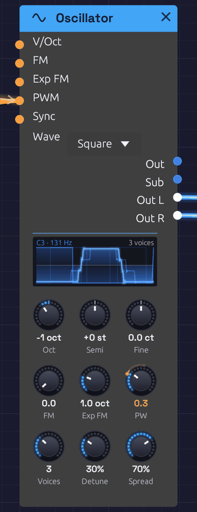
Three detuned voices of a square wave, an LFO sweeping its pulse width through PWM: the trace is Out as it plays, and PW follows the CV. Under it, the tune, timbre and ensemble rows.The Oscillator is the main sound source in Soba. It is a VCO (voltage-controlled oscillator): a tuned waveform whose pitch follows a keyboard, an LFO or another oscillator.
Beyond the four classic waveforms, it has the features that make an oscillator an instrument:
- a tune section in octaves, semitones and cents;
- hard sync to another oscillator;
- through-zero linear FM and exponential FM;
- a sub-oscillator one octave down;
- unison of up to seven voices, with stereo spread. Seven detuned saws is the classic supersaw.
The display draws a cycle of the wave at the Pulse Width, and reads the pitch the tune section sets. With more than one unison voice, the others are drawn faintly over it, sliding along the cycle at the rate each beats against the pitch: a gentle Detune drifts, a wide one shimmers. With Sub patched, two cycles show, with the sub's square under them.
While the patch plays, what Out really carries is drawn over that shape, lit, and the shape steps back to a faint guide. Each trace starts where the cycle does and keeps the time scale of the cycle the knobs set, so a note V/Oct takes an octave up fits two cycles in, and one an octave down shows half a cycle: a melody squeezes and stretches the wave. PWM sweeps the edge, FM wrinkles the wave, Sync cuts each cycle short, and unison voices beat in it as they sound. Older traces fade behind the newest, like a scope's phosphor, so a moving wave leaves a soft trail. With V/Oct or Exp FM patched, the top reads the note being played. When the sound stops, the shape comes back.
Every waveform is band-limited. Each voice runs at twice the sample rate with polyBLEP corrections on its edges and polyBLAMP corrections on its corners, then a halfband filter brings it back down. A 5 kHz saw's aliasing sits around -80 dB, so high notes and sync sweeps stay clean.
Inputs
| Port | Signal Type | Description |
|---|---|---|
| V/Oct | Control (Orange) | Pitch, 1 per octave. Each +1.0 raises the pitch one octave, on top of the tune section |
| FM | Control (Orange) | Through-zero linear FM, scaled by the FM knob |
| Exp FM | Control (Orange) | Exponential FM, Exp FM knob octaves per unit |
| PWM | Control (Orange) | Pulse-width modulation around the PW knob (±1 moves it ±0.4) |
| Sync | Control (Orange) | Hard sync. Each rising zero crossing restarts the cycle. Accepts audio, control or gates |
Outputs
| Port | Signal Type | Description |
|---|---|---|
| Out | Audio (Blue) | All unison voices, mixed to mono |
| Sub | Audio (Blue) | Square wave one octave below the tuned pitch |
| Out L | Audio (Blue) | Unison voices spread to the left |
| Out R | Audio (Blue) | Unison voices spread to the right |
Parameters
The knobs sit in three rows: tune, timbre and ensemble.
| Control | Range | Default | Description |
|---|---|---|---|
| Oct | -4 to +4 | 0 | Octaves above or below C4. Clicks in whole octaves |
| Semi | -12 to +12 | 0 | Semitones. Clicks in whole semitones |
| Fine | ±100 cents | 0 | Fine tuning |
| FM | 0 – 5 | 0 | Linear FM index (see below) |
| Exp FM | 0 – 4 oct | 1 | Octaves of pitch change per unit at the Exp FM input |
| PW | 0.1 – 0.9 | 0.5 | Pulse width of the square (0.5 is a 50% duty cycle) |
| Voices | 1 – 7 | 1 | Unison voices |
| Detune | 0 – 100% | 40% | How far apart the unison voices are tuned |
| Spread | 0 – 100% | 50% | How wide the unison voices sit across Out L and Out R |
| Wave | Sine / Saw / Square / Tri | Sine | Dropdown on the node |
With every tune knob at 0, the oscillator plays C4 (261.63 Hz). Note In sends 0.0 for C4, so it plays in tune with nothing else to set. MIDI note 69 plays 440 Hz to within a tenth of a cent.
Pitch is smoothed in octaves, not Hz, so a jump of an octave up takes as long as an octave down.
Waveforms
The preview at the top of the node draws one cycle of the selected waveform, and follows the PW knob on the square.
- Sine is a pure tone with no harmonics: sub-bass, FM carriers and modulators, flute-like tones.
- Saw has every harmonic, falling as 1/n: classic leads and basses, strings, brass. It is the richest source for filtering, and the one to use for a supersaw.
- Square has odd harmonics only, for hollow, woody, clarinet-like tones. Pulse width reshapes it, from the square at 0.5 to thin and nasal near 0.1 or 0.9.
- Tri (triangle) has odd harmonics that fall away fast: softer than the square, brighter than the sine.
Tune section
Oct and Semi set the note; Fine trims it in cents. To tune a second oscillator a fifth up, set Semi to +7. To make it beat slowly against the first, add a few cents of Fine.
Hard sync
Patch another oscillator's Out into Sync:
[Osc 2 Out] ──> [Osc 1 Sync]
Every time Osc 2's waveform rises through zero, Osc 1 starts its cycle again. The result repeats at Osc 2's pitch, but its tone comes from Osc 1's pitch. Tune Osc 1 above Osc 2 and sweep its pitch (a slow LFO or envelope on V/Oct or Exp FM) for the classic tearing sync sweep.
The reset itself is band-limited, so sync sweeps don't fizz with aliasing.
Through-zero FM
The FM input multiplies the pitch by 1 + FM × input, where FM is the knob:
- At an FM of 1, an input of -1 just reaches 0 Hz.
- Past 1, the frequency swings through zero and the waveform runs backward for a moment, instead of stalling at 0 Hz.
That keeps the average pitch where it was, so deep FM stays in tune and keeps the bright, glassy character of DX-style FM. Because the depth is relative to the pitch, the timbre stays the same as you play up the keyboard.
[Osc 2 Out] ──> [Osc 1 FM]
[Osc 1 Out] ──> [VCA In] ──> [Audio Output]
- Sine into sine gives the cleanest FM tones.
- Whole-number pitch ratios (Semi +12, or +19 for 3:1) sound harmonic.
- Other ratios sound bell-like and metallic.
- Shape the modulator's level with an envelope (through a VCA) to make the brightness decay like a struck bell.
The FM Synthesis recipe builds a complete patch around this.
Exponential FM
Exp FM works like a second V/Oct input with its own depth knob. An LFO into it gives a vibrato that's even in pitch: the same width in cents on every note. Keep the depth small (Shift-drag the knob for fine steps): 0.02 octaves is about ±24 cents. At audio rates it gives a rougher, less pitch-stable kind of FM than the linear input.
Sub-oscillator
Sub is a square wave one octave below the tuned pitch. It divides the main oscillator's own cycle, so it follows V/Oct, FM and sync. Mix it in under a saw for weight:
[Oscillator Out] ──> [Mix In 1]
[Oscillator Sub] ──> [Mix In 2]
[Mix Out] ──> [Ladder Filter In]
Unison and supersaw
Voices stacks copies of the oscillator, each slightly detuned:
- Detune sets how far apart they are. Its curve is gentle at the bottom: 20% puts the outer voices about ±4 cents apart, 40% about ±16 cents, and 100% a full ±100 cents.
- The voices bunch toward the middle, close to Roland's JP-8000 supersaw. The spacing is deliberately uneven, so the voices never beat in lockstep.
- Each voice starts at a different point in its cycle, so the stack doesn't open with one loud spike.
- Out sums all the voices at about the loudness of one voice.
- Out L and Out R pan the voices across the stereo field, outer voices widest. Spread sets the width.
For a supersaw: Wave on Saw, Voices at 7, Detune about 40%, and Out L and Out R into the output's Left and Right.
Pulse-width modulation
With the square wave selected, modulate the pulse width with an LFO:
[LFO Out] ──> [Oscillator PWM]
Slow rates give a chorus-like shimmer; fast rates, a more dramatic wobble in the tone.
The PW knob stays where you set it, as the centre of the sweep. An orange arc on its rim runs out to a bead at the width the oscillator is playing, and the number under it reads that width in orange.
Patch examples
Sync lead
[Note In Pitch] ──> [Osc 2 V/Oct]
──> [Osc 1 V/Oct] (Osc 1 Oct +1)
[Osc 2 Out] ──> [Osc 1 Sync]
[ADSR Out] ──> [Osc 1 Exp FM]
[Osc 1 Out] ──> [SVF Filter In]
Each note sweeps Osc 1's pitch up with the envelope, while sync holds it to Osc 2's pitch.
Supersaw pad
[Note In Pitch] ──> [Oscillator V/Oct] (Saw, 7 voices)
[Oscillator Out L] ──> [Reverb In L]
[Oscillator Out R] ──> [Reverb In R]
[Reverb Out L] ──> [Audio Output Left]
[Reverb Out R] ──> [Audio Output Right]
Polyphony
The Oscillator is polyphonic. Patch a polyphonic Pitch cable from Note In into V/Oct and each note gets its own oscillator, with its own phase, sync and unison stack. The knobs are shared by every voice. Unison multiplies the cost: eight notes of a seven-voice supersaw is 56 oscillators. See Polyphony.
Notes
- Older patches load at the same pitch. Their Frequency setting is split into Oct, Semi and Fine. FM Depth, which used to be in Hz, becomes the matching index at that pitch. A MIDI controller mapped to Frequency moves to Oct over the same range. The old Frequency input jack is gone; a cable into it is skipped with a load warning.
- Band-limited edges overshoot a little. Saw and square peak at about 1.3 for a few samples after each edge. This is ringing near 24 kHz, which is inaudible, and any filter or the output stage takes it away.
- The tune section reaches from about 7.7 Hz to 8.9 kHz. Use V/Oct or Exp FM to go further.
Related modules
- LFO for vibrato and PWM
- SVF Filter to shape the oscillator's harmonics
- Ladder Filter, the fat, saturating 24 dB alternative
- VCA and ADSR Envelope to turn a tone into notes
Noise
Module ID source.noise · Category Source
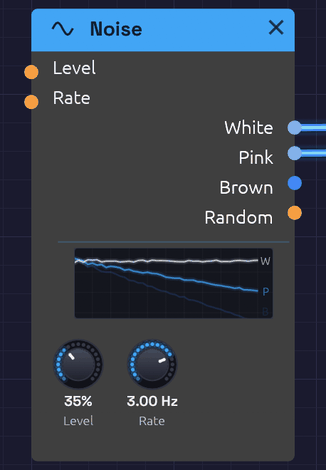
White and Pink are patched, so their lines are lit; Brown, unpatched, is dimmed.Noise is a sound with no pitch: every frequency at once, at random. Through a filter and an envelope it becomes a snare, a hi-hat, a breath, wind or surf. Sampled by a clock, it becomes a melody that never repeats.
The module makes three colours of noise, an output that wanders smoothly at modulation speed, and one that scatters triggers at random:
- White: equal energy at every frequency. Bright, hissing, like steam or an untuned radio.
- Pink: falls 3 dB per octave, so every octave holds the same energy. To the ear it is the most balanced noise: rain, surf, a waterfall.
- Brown: falls 6 dB per octave. A deep, soft rumble, like wind or thunder far away. The name is for Robert Brown, whose random walk of pollen grains it imitates, not the colour.
- Random: a smooth random voltage that glides to a new value Rate times a second.
- Dust: single triggers at random moments, Rate of them a second on average. Crackle, raindrops, a ghost note now and then.
Noise is polyphonic. Patch a polyphonic cable into Level or Rate and each voice plays noise of its own, so a four-note chord of filtered noise is four different hisses, not one copied four times.
Inputs
| Port | Signal Type | Description |
|---|---|---|
| Level | Control (Orange) | Added to the Level knob, and followed instantly. An envelope here, with the knob at 0, shapes the noise into a hit |
| Rate | Control (Orange) | Speeds up or slows down Random and Dust. Each +1 doubles the rate; -1 halves it |
Outputs
| Port | Signal Type | Description |
|---|---|---|
| White | Audio (Blue) | White noise, spread evenly over ±1 at full Level |
| Pink | Audio (Blue) | Pink noise, about -12 dBFS RMS at full Level |
| Brown | Audio (Blue) | Brown noise, about -12 dBFS RMS at full Level |
| Random | Control (Orange) | A smooth random voltage between -1 and 1. Level doesn't affect it |
| Dust | Gate (Green) | One-sample triggers at random moments, Rate a second on average. Level doesn't affect it |
Parameters
| Knob | Range | Default | Description |
|---|---|---|---|
| Level | 0 – 100% | 50% | Level of White, Pink and Brown |
| Rate | 0.01 – 20 Hz | 1 Hz | How many new values Random glides to each second, and how many triggers Dust scatters |
The display
The display draws the three noises the way a spectrum analyzer would read them, on a frequency axis from 20 Hz to 20 kHz. All three start from one point at the low end and fan out: W stays flat, P falls gently and B falls twice as steeply. The lines shimmer as a real reading of noise does, most at the low end, where an analyzer has fewer frequencies to average in each octave.
Patched outputs light up and unpatched ones dim, so you can see at a glance which noise a patch is using. The lines sink as Level comes down.
Levels
White uses the whole ±1 range, so it makes a full-range random source for Sample & Hold. Pink and Brown are set about 7 dB lower, so their rare peaks stay inside ±1. A gentle ceiling holds those peaks in without touching anything below 0.8.
Brown is a leaky random walk: it rises 6 dB per octave as frequency falls, down to about 10 Hz, then levels off. That keeps it from drifting away from zero and pushing your speakers with a slow offset.
Random
Random picks a new value between -1 and 1 Rate times a second, and glides to it along a cosine curve. It arrives at each value at rest and leaves it smoothly, so it has no corners. It sounds less like a stepped sample-and-hold and more like something drifting: a filter that breathes, or a pitch that wavers like an old tape.
At 0.05 Hz it takes twenty seconds to move, which is slow enough to change the character of a whole pad over time. At 10–20 Hz it becomes a fast flutter.
Dust
Dust fires a trigger one sample long at moments nobody can predict. Every sample has the same small chance of one, Rate over the sample rate, so the triggers fall the way raindrops do: on average Rate a second, sometimes two close together, sometimes a long gap. (It's a Poisson process, and the name comes from the Dust generators of SuperCollider.)
At 0.5 Hz it's an occasional tick, a record's dust. At 20 Hz it's a steady drizzle, and Rate CV takes it up to a thousand a second, a hiss of grains. Random and Dust share Rate, so a Noise used for both moves them together; use a second Noise to set them apart.
A trigger, not a level: patch Dust into anything that listens for a rising edge, like a Drum's Trig, an ADSR's Gate (with a short decay) or a Sample & Hold's Trig. To let only some of a regular rhythm through instead, use Logic's Maybe.
Patches
Random melody
The classic: noise, sampled on every clock pulse, played as pitch.
[Clock Gate] ──> [Sample & Hold Trig]
[Noise White] ──> [Sample & Hold In]
[Sample & Hold Out] ──> [Oscillator V/Oct]
[Clock Gate] ──> [ADSR Gate]
Each pulse catches a new value of the noise and holds it as a note. Level sets the range: at 50%, the notes wander up to half an octave either side of the oscillator's pitch. The pitches are unquantized, so they fall between the keys of a piano; put a Quantizer after the Sample & Hold to keep them in a key. A little Slew on the Sample & Hold turns the jumps into glides.
Hi-hat
[Clock Gate] ──> [ADSR Gate] (Atk 1 ms, Dec 45 ms, Sus 0, Rel 40 ms)
[ADSR Out] ──> [Noise Level] (Level knob at 0)
[Noise Pink] ──> [SVF Filter In] (Cutoff 4.5 kHz, take HighPass)
The envelope opens Level for each hit, so no VCA is needed. Only the knob is smoothed; CV at Level is followed sample by sample, so a 1 ms attack stays a 1 ms attack. A short decay gives a closed hat; lengthen Dec to 250 ms for an open one. The Rhythmic Sequence example plays exactly this under its bassline.
Snare
Mix a short burst of noise with a pitched body. Patch Pink through a bandpass around 2 kHz, open it with a 120 ms decay, and add a sine at 180 Hz with a shorter envelope. The noise is the snare wires; the sine is the drum.
Wind and surf
[Noise Pink] ──> [SVF Filter In] (Res 60%, take BandPass)
[Noise Random] ──> [SVF Filter Cutoff] (Noise Rate 0.1 Hz)
Random sweeps a resonant band slowly through the noise, so it rises and falls like gusts. Use Brown for a deeper, more distant wind. Put a slow LFO on a VCA after it, at about 0.1 Hz, and the swell of waves comes and goes.
The Shoreline example builds a whole beach this way, using every output of one Noise module: Pink and Brown for the surf, Random to vary the waves, and White, through a Sample & Hold, to play a wind chime.
Vinyl crackle
[Noise Dust] ──> [Drum Trig] (Noise Rate 6 Hz; Drum: Rim, Tune +24, Decay short)
[Drum Out] ──> [SVF Filter In] (Cutoff 3 kHz, take HighPass)
Each trigger plays a tiny pitched-up click, at random, about six a second. Turn the Drum down until it sits under the music rather than on it. Patch Dust into a Sample & Hold's Trig with White in its In, and the S&H's Out into the Drum's Tune, and no two clicks are the same pitch.
Related modules
- Sample & Hold: turns noise into stepped random values
- Quantizer: snaps random pitches to a scale
- SVF Filter: shapes noise into drums, wind and breath
- Drum: a finished drum voice, with its noise and filters built in
- ADSR Envelope: gives noise a shape in time
- LFO: regular movement, where Random is irregular
- Logic: Maybe passes a regular rhythm only sometimes, where Dust has none
Drum
Module ID source.drum · Category Source
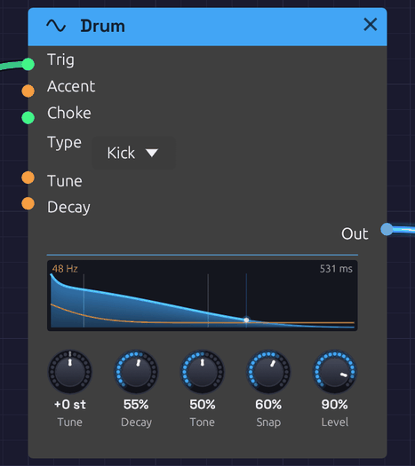
A kick just after a hit. The orange line is its pitch, falling two and a half octaves to 48 Hz in the first few milliseconds. The blue curve is its level, lit up to the playhead.Drum is one analog drum voice. Its Type turns it into a kick, snare, tom, clap, closed hat, open hat, cymbal, rim, cowbell or shaker, each built the way an 808 or 909 builds that sound: a few oscillators, a noise source, filters and decays. Send it a trigger and it plays one hit.
The same five knobs serve every type, and each means what it would on that drum's own panel. Tune sets the pitch of a kick and the metal of a hat. Snap sets a kick's beater and a snare's wires. The names never change, so a MIDI mapping keeps working when you change the Type.
Drum is polyphonic. A polyphonic gate, from Note In say, plays a new voice for each note, so fast hits ring on over each other instead of cutting each other off.
The types
Each type has its own pitch, its own range of decay, and its own meaning for Tone and Snap. The times are how long a hit takes to fall 60 dB, from Decay at 0 to Decay at 100%.
| Type | Built from | Tune 0 | Decay | Tone | Snap |
|---|---|---|---|---|---|
| Kick | A sine that falls in pitch, and a beater click | 48 Hz | 0.12 – 2.5 s | Drive, from a pure sine to a rounded, 909-like thump | How far the pitch falls (half an octave to four) and how hard the beater clicks |
| Snare | Two drumhead tones, and noise for the wires | 185 Hz | 0.08 – 0.8 s | The wires, from dull to bright | Wires against the drum: more rattle, less tone |
| Tom | A sine that falls half an octave, and a stick click | 110 Hz | 0.12 – 1.8 s | Drive | The stick on the head |
| Clap | Four bursts of noise a few milliseconds apart, then a tail | 1150 Hz band | Tail 0.08 – 1.0 s | Narrow and dark to wide and bright | The bursts against the tail |
| Closed Hat | Six square waves at the 808's inharmonic ratios, ringing in a band around 6 kHz, with hiss above it | 205 – 800 Hz squares | 25 – 300 ms | Where the band sits, and how much air is over it | Hiss against metal |
| Open Hat | The same | The same | 0.15 – 1.8 s | The same | The same |
| Cymbal | The same squares through a low and a high band, a bright splash over a long wash | The same | 0.6 – 5 s | From the low band to the high | Sizzle against metal |
| Rim | Two tones, 1667 and 455 Hz, and a crack of noise | 1667 Hz | 15 – 200 ms | Drive | The crack |
| Cowbell | Two squares a sixth apart, through a bandpass | 540 and 800 Hz | 0.1 – 1.2 s | The bandpass, dark to bright | The clank of the strike over the ring |
| Shaker | A band of noise that swells in over 3 ms, as the beads arrive, rather than striking | 6.7 kHz band | 40 – 200 ms | Where the band sits, from 5 to 9 kHz | The rattle: the beads landing unevenly inside each grain |
The hats' six squares run all the time, as the 808's do. They are never caught at the same place twice, so no two hits sound exactly alike.
Every other type starts at full level the instant it's struck. The Shaker's grain swells in, because the beads in a shaker don't all hit the wall at once. Accent shapes that as a wrist does: a full shake swells in over 3 ms, and a soft one over as much as 8 ms, as well as being quieter and darker.
Inputs
| Port | Signal Type | Description |
|---|---|---|
| Trig | Gate (Green) | A rising edge strikes the drum. Patch a sequencer's Gate, a clock, or a MIDI gate |
| Accent | Control (Orange) | How hard each hit is, from 0 to 1, read as the hit lands. Patch a sequencer's Velocity. Unpatched, every hit is full |
| Choke | Gate (Green) | A rising edge damps the drum within 5 ms. A choke that arrives before a hit does nothing to that hit |
| Tune | Control (Orange) | V/Oct, added to the Tune knob at each hit: 1 V is an octave |
| Decay | Control (Orange) | Added to the Decay knob at each hit |
Outputs
| Port | Signal Type | Description |
|---|---|---|
| Out | Audio (Blue) | The drum. At default settings a full-accent kick peaks around -4 dBFS, and the hats and the rim sit a few dB lower |
Parameters
| Control | Range | Default | Description |
|---|---|---|---|
| Type | Kick … Shaker | Kick | Which drum. The knobs keep their settings when it changes |
| Tune | ±24 st | 0 st | Pitch in semitones from the drum's own |
| Decay | 0 – 100% | 50% | How long it rings, over the type's own range |
| Tone | 0 – 100% | 50% | Dark to bright, as the table describes |
| Snap | 0 – 100% | 50% | The noise or click in the hit, as the table describes |
| Level | 0 – 100% | 80% | Output level |
Tune, Decay, Tone and Snap are read when a hit lands, as on a drum machine. A hit keeps its sound however the knobs move while it rings, and the next hit takes the new settings. Level follows the knob at once.
Accent
Accent scales the hit's level, so at 0.4 it plays 8 to 10 dB quieter, and at 0 not at all. A softer hit is also darker and less snappy, as on a real drum: Tone drops by up to a quarter and Snap by up to half, and a soft kick falls a little less far in pitch. A ghost note on a snare is a different sound from a backbeat, not just a quieter one. While Accent is patched, the Tone and Snap knobs show this. An orange arc on each runs out to a bead at what the Accent makes of it, and the number under the knob reads that value in orange.
Choke
A hi-hat is two drums that can't ring at once: closing the pedal stops the open hat. To do this, patch the closed hat's trigger into the open hat's Choke as well as its Trig:
[Closed lane Gate] ──> [Drum (Closed Hat) Trig]
└──> [Drum (Open Hat) Choke]
[Open lane Gate] ──> [Drum (Open Hat) Trig]
The open hat rings until the next closed hat lands, then dies in a few milliseconds, the way a drummer's foot shuts it. Any gate can choke any drum: a kick that chokes a long cymbal makes a cut-off crash.
A voice struck again while it's still ringing starts the new hit at once. It lets go of the old one over a millisecond or two, so a fast roll on a long kick doesn't click.
The display
The display draws the hit the knobs will play next. The blue curve is its level. Time runs on a warped axis that is wide at the start, so a kick's 10 ms drop and a cymbal's five-second wash both fit, with faint marks at 10 ms, 100 ms and each second. The ring time is at the top right.
The orange line is pitch. For a kick, snare, tom or rim it is the fall from the strike to the drum's resting pitch, which is printed at the top left. For the hats, cymbal and cowbell it is one line per square wave, each fading as the ring dies. For a clap or a shaker it marks the band the noise rings in, and the shaker's level curve rises from nothing as its grain swells in.
When the drum is hit, the fill flashes, and a playhead travels along the curve, lighting it as it goes. The lit curve is as tall as the hit's Accent, so ghost notes and backbeats read at a glance. A choked hit drops to nothing where the choke caught it. Hover the display for the numbers.
Patches
A kit in a few modules
The Drum Machine example is a whole kit in 14 modules: a Clock, five sequencer lanes, five Drums, a Mixer, a Reverb and the Output. Each sequencer's Gate goes to its Drum's Trig and its Velocity to Accent.
Tuned toms, or a cowbell melody
[Sequencer Pitch] ──> [Drum (Tom) Tune]
[Sequencer Gate] ──> [Drum (Tom) Trig]
[Sequencer Velocity] ──> [Drum (Tom) Accent]
Each step's note sets the tom's pitch, with middle C at the Tune knob's pitch. Set the Type to Cowbell for the classic 808 cowbell line, or to Kick with a long Decay for an 808 bass.
A layered snare
Patch one sequencer's Gate into two Drums, a Snare and a Clap, and mix them. The clap's bursts sit on top of the snare's crack. Turn the clap's Snap down so only its tail comes through, as a short room.
Rolls and flams
From a Note In module with several voices, two notes very close together each get a voice, so a flam rings as two hits rather than one cut short. A Clock at 1/16 with a high Swing into Trig makes a shuffled roll. Patch a falling envelope into Decay and the roll tightens as it goes.
Related modules
- Trigger Sequencer: a whole kit's hits from one module, a lane per Drum, with velocity for Accent
- Step Sequencer: one lane of hits, with velocity for Accent and pitch for Tune
- Clock and Clock Divider: the pulses that play it
- Noise and Oscillator: build your own drum from parts, as the Backbeat example does
- Mixer: pans each drum to its place and shares a reverb among them
Resonator
Module ID source.resonator · Category Source
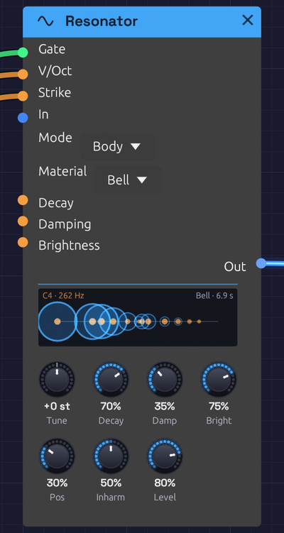
A bell 0.4 seconds after it was struck. Each mode is a ring on a log-frequency axis. The hum on the left is still ringing wide, and the high partials on the right have already shrunk back to their dots.Resonator is a physical model. It doesn't make a waveform and then shape it. It works out how a real string or a real bell would move when something plays it, sample by sample. That's why it sounds alive straight away, with no envelope to set. A pluck rings and fades by itself, its top dies before its note does, and no two plucks are quite alike.
Two models share one set of knobs:
- String is a plucked string, built the way Karplus and Strong built theirs in 1983: a burst of noise runs round a loop exactly one period long, and a gentle lowpass in the loop takes a little of the top off on every pass.
- Body is a struck bell, bar, glass or block of wood: twelve tuned modes, each ringing at its own frequency and dying at its own rate.
A Gate plays it, as a finger or a mallet would. So does any sound patched into In. A drum, a voice or a burst of noise makes it ring at its own pitch, the way a shout makes a piano's open strings hum. A Drum into a tuned Resonator is a new instrument in itself.
Resonator is polyphonic. A chord on its V/Oct, from a Chord Sequencer or Note In, is a string or a bell for each note, so a chord rings as a chord. One mono drum into In rings them all at once.
The models
String
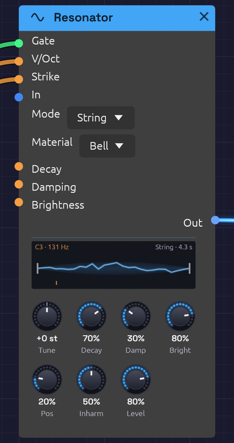
A string 80 ms after its pluck, still ragged with the top it's losing. The orange mark on the floor is where Position plucks it.A gate plucks the string with one period of noise under a smooth swell, as a finger pulls a string aside and lets go. Brightness is the pick: a soft thumb at 0, a plectrum at 100%. Strike is how hard: softer is quieter, and smoother too, with less of the pick's grain in it.
Damping is what the string is made of. At 0 every partial rings as long as the note, like a bright steel wire. Turn it up and the top dies faster than the note, towards nylon or a string under a felt. Damping never changes the pitch: the loop is shortened by exactly the delay its lowpass adds at the note.
Position is where along the string it's played. Near the end (0) the sound is thin and bright with every partial. In the middle (100%) it's hollow and round, because a string plucked in the middle has no even partials: they all have a node there.
Body
A gate strikes the body with a mallet. Brightness is the mallet: felt is wide and dark, steel is narrow and rings every mode. Position is where it lands, from the edge to the middle. A mode with a node where the mallet lands barely sounds.
Material sets where the modes sit and how long they ring:
| Material | Modes (times the note) | Rings | Sounds like |
|---|---|---|---|
| Bell | 1, 2, 2.38, 3.01, 4, 5.03 … | Long | A church bell: the hum, the prime an octave up, and the minor third above it that makes a bell sound like a bell |
| Bar | 1, 2.76, 5.40, 8.93, 13.3 … | Medium | An untuned glockenspiel or a struck metal rod |
| Glass | 1, 2.32, 4.25, 6.63, 9.38 … | Longest | A wine glass: pure, with little damping |
| Wood | 1, 2.57, 4.47, 6.60, 7.92 … | Short | A wood block or a thick wooden bar |
The lowest mode is always the note you play, so every material is in tune with the keyboard.
Inharm moves the modes. At 0 they sit on the harmonic series (1, 2, 3, 4 …), which turns any material into something string- or pipe-like. In the middle (the default) they're the material's own. At 100% they're stretched further apart, more clangorous and metallic. Damping makes the high modes die faster than the low ones, on top of the material's own.
Inputs
| Port | Signal Type | Description |
|---|---|---|
| Gate | Gate (Green) | A rising edge plucks the string or strikes the body. Patch a sequencer's, a keyboard's or a MIDI Gate |
| V/Oct | Control (Orange) | Pitch, 1 per octave, added to Tune. A poly cable plays a string or a body per note |
| Strike | Control (Orange) | How hard each gate plays, from 0 to 1, read as it lands. Patch a sequencer's Velocity. Unpatched, every one is full |
| In | Audio (Blue) | Any sound to excite it with. It rings at its own pitch with whatever you feed it. You hear only the ringing, not the sound you fed in, so mix that in yourself if you want both |
| Decay | Control (Orange) | Added to the Decay knob |
| Damping | Control (Orange) | Added to the Damping knob |
| Brightness | Control (Orange) | Added to the Brightness knob, read at each pluck or strike |
Outputs
| Port | Signal Type | Description |
|---|---|---|
| Out | Audio (Blue) | The string or the body. A full pluck at default settings peaks around -4 dBFS |
Parameters
| Control | Range | Default | Description |
|---|---|---|---|
| Mode | String, Body | String | Which model |
| Material | Bell, Bar, Glass, Wood | Bell | What a Body is made of. A String ignores it |
| Tune | ±24 st | 0 st | Pitch in semitones from C4, before V/Oct |
| Decay | 0 – 100% | 60% | How long the note rings, from 80 ms to 24 s, to fall 60 dB. A Body's material rings a multiple of this |
| Damping | 0 – 100% | 40% | How much faster the top dies than the note |
| Brightness | 0 – 100% | 60% | How hard the pick or the mallet is |
| Position | 0 – 100% | 30% | Where it's played, from near the end to the middle |
| Inharm | 0 – 100% | 50% | A Body's modes: harmonic, the material's own, then stretched. A String ignores it |
| Level | 0 – 100% | 80% | Output level |
Changing Mode lets go of whatever the other model was ringing.
Nothing runs away
A string excited from In builds up for as long as the sound goes on, and at the longest Decay each pass round the loop keeps 99.99% of what went in. On an ideal string that would climb without end. This one can only swing so far, as a real one can: a soft ceiling sits inside the loop, so even full-scale noise held into the longest Decay rings loudly but stays inside ±1, with no blow-ups.
The display
For a String, the display is the string itself, between its bridge and its nut. The shape is one period of the loop, read from the voice as it plays, so it moves the way the sound does: ragged just after a pluck, then smoothing to a single arc as the top dies away. The blue haze either side is how far it's swinging. The orange mark on the floor is where Position plucks it.
For a Body, it's the modes: a dot for each across a log-frequency axis, as large as a strike will ring it. Struck, each dot blooms into a ring as wide as the mode is loud, and shrinks as that mode dies. A bell's high partials vanish first and its hum lingers.
The note and its pitch are at the top left. What's ringing, and for how long, is at the top right. Hover the display for the modes' ratios.
Patches
Tuned drums
The Sympathetic Strings example has no oscillators at all. A Rim Drum strikes a Glass tuned to E5, and a Shaker keeps a chord of four strings humming.
[Drum (Rim)] ──> [Resonator (Body, Glass) In]
[Drum (Shaker)] ──> [Resonator (String) In]
[Chord Sequencer Pitch] ─> [Resonator (String) V/Oct]
A plucked voice
[Sequencer Pitch] ──> [Resonator V/Oct]
[Sequencer Gate] ──> [Resonator Gate]
[Sequencer Velocity] ──> [Resonator Strike]
A koto or a harp with Position low and Brightness high. A muted bass with Damping up and Tune at -24. A music box with Mode on Body, Material on Bar and Inharm at 0.
A singing room
Patch a voice from an Audio Input into In, with Mode on String, a long Decay and Damping low. The string rings along at its pitch with whatever you sing, loudest when you hit its note or one of its partials. A Chord Sequencer on V/Oct makes it a chord of strings that answer you.
Bells on a beat
A Clock or a sequencer's Gate into a Body Bell, with an LFO into Brightness so some strikes are soft and some hard. Turn Inharm up for gamelan-like gongs, or down to 0 for tubular bells.
Related modules
- Drum: the best exciter, and in the Sympathetic Strings example the only one
- Noise: a burst of noise through an envelope into In bows a string that never stops
- Chord Sequencer and Note In: chords of strings or bells
- Reverb: a room for them to ring into
Sampler
Module ID source.sampler · Category Source
 A five-note chord on a looped bell, and the file heard from ▶. The orange flags mark the loop and the blue ones what plays. Each white line with a dot is a voice, circling inside the loop at its own speed. The line capped at both ends is ▶'s, out in the bell's tail.
A five-note chord on a looped bell, and the file heard from ▶. The orange flags mark the loop and the blue ones what plays. Each white line with a dot is a voice, circling inside the loop at its own speed. The line capped at both ends is ▶'s, out in the bell's tail.
Sampler plays a WAV file. Patch a gate in and it plays one-shots: a kick under a sequencer, a vocal chop, a door slam. Patch in V/Oct as well and a polyphonic gate, and it becomes an instrument: one recorded note spread across the keyboard, each key playing it at its own pitch.
Set Slices and it becomes a chopped break: the recording is cut into equal slices, or at each hit it finds, and each key plays one of them.
Every other sound in Soba is synthesized. The Sampler brings in sound you've recorded, or one Soba rendered itself, and keeps it with the patch. It can make the recording itself, too: patch something into In and press Rec (see Recording into it).
Loading a file
- Click Open… under the waveform, or click an empty Sampler's display, and choose a WAV, MP3, FLAC or Ogg (Vorbis or Opus) file.
- Drag a sound file from your file manager onto a Sampler to replace its file. Drop one on empty canvas and a new Sampler appears there, already playing it. The node lights up under the file while you drag, to show where it will land, and plays the file from Start to End with its waveform on the panel. Over empty canvas, a faint Sampler follows the pointer where the new one would appear, and the whole file plays in its waveform. That way you can audition files from the file manager before you choose one, with or without a Sampler to try them on. It stops when the file leaves the node or you give up the drag, and a file dropped while it plays carries on. (In the browser a file can only be heard once it's dropped.)
- In the browser, drag a file onto the page the same way.
Loading a file is a step you can undo. A file is read and converted once. Samplers that play the same file share it. An MP3 plays without the silence its encoder leaves at the start, so a loop saved as an MP3 still loops cleanly. So does an Ogg file, whether it holds Vorbis or Opus audio (an .ogg, .oga or .opus file). A FLAC file plays exactly as it was recorded.
Opening or dropping a file plays it once, from Start to End, so you hear what you chose. Undoing back to an earlier file doesn't.
Hearing it
You don't have to patch anything to hear what a Sampler holds.
- ▶, beside the file's name, plays it from Start to End and stops there. It plays at the Sampler's Tune and Fine, at a Speed of 1. Press it again (it shows ■ while playing) to stop.
- Alt-click the waveform to play from that point to End. Past End, it plays on to the end of the file. With Alt held, a dashed line follows the pointer to show where it will start. Dragging the markers works as before.
- Sliced, Alt-click a slice to play just that slice, from its start to its end. With Alt held, the slice under the pointer is outlined.
- Let go of a marker with Alt held to hear what it now marks. A slice marker plays the slice it begins, Start the first slice and End the last. Unsliced, Start and End play Start to End. While you drag with Alt held, the slice you'll hear is outlined. You can nudge a marker and hear the result each time you let go, as in ReCycle or Simpler.
This works whether the transport is running or not. What you hear is the file itself, not the patch: it plays dry, beside the patch rather than through it, after the Audio Output's limiter, 6 dB below the file's own level. It isn't in a recording made with Record. It's how a sampler's or a DAW's file preview works.
One file plays at a time. Starting another, from this Sampler or any other, fades the first out over 5 ms. Deleting the Sampler or giving it another file stops it.
While it plays, a white playhead capped at both ends shows where it is, with the part it has played washed faintly behind it. The voices' playheads are lines with a blue dot, so the two never look alike.
Recording into it
Patch something into In L (and In R, for stereo) and press the red Rec button beside Open…. Press it again to stop. There's no file dialog: the take plays at once, and becomes the Sampler's file.
- Anything can be recorded. Patch an Audio Input to record yourself. Patch the patch's own sound, a Vocoder's output or a Mixer's send, to resample it into a new instrument. One side patched records the same on both.
- From a right-click. Right-click an Audio Input and choose Record into a new Sampler. A Sampler appears beside it, already patched, with Thresh at −40 dB and Rec already pressed, so the next thing you say is the take. Any other audio output offers Resample into a new Sampler: on its module's menu (with a submenu where there's more than one, like a Mixer's Out and Send), or on the output's own name. If the patch is stopped, it starts playing. With a Clock in the patch, each of these offers Free, 1 bar, 2 bars or 4 bars: a take in bars sets Take to match and Thresh to −∞, starts on the next bar line instead of the next sound, stops itself, and lands with Loop on Forward, ready to play.
- Start on a sound. Turn Thresh up from −∞ dB and Rec waits until In is that loud before it starts, keeping the 30 ms before. The take starts on your first word, not on reaching for the mouse. While it waits, the panel dims and shows how loud In is against the threshold.
- Takes in bars. Set Take to a number of bars with a Clock running. Rec then starts on the next bar line and stops after exactly that many bars, so the take is already a loop. As it records, the panel counts it in bars and beats,
REC 2.3 / 4, not seconds. A press up to 50 ms after a bar line counts as on it. - Stopping. Rec again, the Rec gate falling, the bars running out, or the room: a take lasts at most a minute. Stopping the transport ends a take there.
- The Rec jack takes over from the button, as Freeze does on the Vocoder: the Sampler records while the gate is high. A sequencer's gate resamples a phrase on cue.
- Tidied as they're kept. Right-click Rec and tick Tidy takes, and each take is trimmed to its sound and set to −16 dBFS RMS as it's kept (see Tidy takes).
- On a footswitch or a pad. Right-click Rec and choose Learn MIDI, then press a MIDI footswitch or hit a pad.
Live input reaches the patch a round trip after it was played, so the take is written that much earlier, as the Looper's overdubs are. A take in bars begins with what you played on the bar line, within a few milliseconds at the latency your device reports. The patch's own sound has no round trip, and is taken as it comes.
While a take comes in, the panel draws it in red, across a span that doubles whenever the take outgrows it, with the time so far in the corner and Rec showing ■. The Sampler goes on playing its old file until the take is done. Recording needs the patch playing.
Where takes go
When a take ends it's written as a WAV beside the patch, as <patch name> samples/Take 1.wav, Take 2.wav and so on, and the Sampler's file names it. That's a step you can undo: undo gives the Sampler back the file it had before. Saving the patch saves the take with it, and opening the patch plays it again.
A patch that hasn't been saved yet, a new one or an example, keeps its takes in a temporary folder until you save it. Save As then copies them beside the patch with its other samples. In the browser there's no folder beside the patch, so a take lives only in the tab, as a dropped file does. To keep one, save the patch: 💾 Save then downloads a zip of the patch with its takes and dropped files, as WAVs in a <patch> samples folder beside it, the way Save As gathers them on the desktop. Unzipped, it opens whole in Soba on the desktop. To keep just one file, click its name under the waveform and choose Download, which saves it as a WAV. The browser also keeps each one for the page itself, so it's still there after a reload, when an autosave is recovered, or when you open the downloaded patch in the browser again. Once nothing names a file any more, the next visit lets it go.
Takes nobody keeps don't pile up. Saving removes the takes this session wrote that the patch no longer plays and undo can't bring back. Closing the patch (New, Open or Quit) removes those no saved patch names, the temporary folder among them. That covers the files Trim and Normalize write too. A file Soba didn't write is never touched. After a crash, the temporary folder it left behind is tidied too: recovering the patch makes its takes this session's, and choosing Discard removes them.
Room for a take is set aside, a minute of stereo (about 23 MB at 48 kHz), when something is patched into In, so recording never has to find memory mid-take. Unpatch In and it's given back.
Trim and Normalize
A take comes in raw: silence at each end, whatever level the mic gave it, perhaps a bump before the first word. Click the file's name, under the waveform, for two fixes. They work on any file the Sampler plays, not only takes.
- Trim to the sound cuts the recording from where its sound begins to 300 ms after it ends.
- Normalize peak to −1 dBFS turns the whole recording up (or down) until its loudest sample is at −1 dBFS. Its shape is unchanged.
- Normalize RMS to −16 dBFS sets the level of the sound itself, so recordings sit at one level: a quiet take and a loud one come out alike. Up to 6 dB of peaks over −1 dBFS are taken down by a gentle look-ahead limiter. A peak louder than that, such as a popped "p", lowers the whole recording instead, and the status bar says by how much it fell short.
 A spoken line with room at both ends, and Trim to the sound under the pointer. The hatched parts would go: 1.12 s from the start, up to the breath before the first word, and 1.42 s from the end. The crop marks frame what stays.
A spoken line with room at both ends, and Trim to the sound under the pointer. The hatched parts would go: 1.12 s from the start, up to the breath before the first word, and 1.42 s from the end. The crop marks frame what stays.
Each item says what it would do before you choose it: how much each end loses, or how many dB the level moves. While the pointer is on an item, the waveform shows it too. A trim veils the parts it would cut and sets crop marks round what it keeps. A level writes its change across the panel, since the waveform is always drawn to fill it.
Neither touches the original. Each writes a new WAV beside the patch, in <patch name> samples, named for what was done (Take 1 trimmed.wav, then Take 1 trimmed normalized.wav), and the Sampler plays it once, as it does a file just opened. It's a step you can undo: undo brings back the untouched file. A trim moves Start, End and the loop's markers with the sound, so they mark the same moments in it. A marker in a part that was cut goes to that end. Sliced, the slices are cut from what's left.
Tidy takes
To have every take come in tidy, right-click Rec and tick Tidy takes. Each take is then trimmed to its sound and normalized to −16 dBFS RMS the moment it's kept, both in one go, into one file: Take 1 tidied.wav. The panel frames the waveform in crop marks for a moment and says what was done, such as Tidied −0.42 s, +5.2 dB, and so does the status bar. While it's on, Rec wears small crop marks of its own. The choice is saved with the patch, Sampler by Sampler.
The take as it came in is still written first, as Take 1.wav, and tidying is its own step after it. One undo brings back the raw take, and a second gives the Sampler back the file it had before.
A take in bars (Take set to a number of bars) is never trimmed, since its length is the loop. It's only normalized. With Thresh turned up, the trim still finds where the sound begins: the 30 ms Thresh keeps before it is there for the trim to walk back into, and it keeps what it finds. A take that's already tidy, its sound filling it and its level on −16 dBFS, is left as it is.
Where the sound begins
The rule is the one the Soba Speaks example's voice was made with (tools/voice/record.py). The recording is measured in 10 ms steps, with any rumble under 70 Hz left out of the measurement. The room's level is that of its quietest tenth.
- The sound begins at the first sustained sound: one that lasts at least 80 ms, within 30 dB of the loudest and at least 10 dB over the room. A lone thump or lip smack is too short to count.
- From there the start walks back while the level keeps falling, to keep the breath before a word or a note's attack. It stops in the dip before anything earlier, such as a bumped stand, or where the level reaches the room, and never walks back more than 300 ms.
- The sound ends 300 ms after the last sustained sound, so a word can breathe out and a note ring.
A cut start fades in over 5 ms, and a cut end fades out over 80 ms. A recording with no quiet room to cut, a drone or a pad, has nothing to trim. Neither does one that's already been trimmed.
Inputs
| Port | Signal Type | Description |
|---|---|---|
| Gate | Gate (Green) | A rising edge starts a note. In Gated mode the falling edge lets it go. A polyphonic gate plays a voice per channel |
| V/Oct | Control (Orange) | Pitch, 1 V an octave. 0 V (C4) plays the Root note: the recording as it was made. Read all the time, so pitch bend and glide work. When sliced, it picks the slice instead, as each note starts |
| Velocity | Control (Orange) | Each note's level, 0 to 1, read as the note starts. Unpatched, every note is full |
| Start | Control (Orange) | Added to the Start knob as each note begins. 1 V is the whole recording, or the whole slice when sliced |
| Speed | Control (Orange) | Added to the Speed knob while the note plays, as on tape: pitch follows, and below zero it plays backwards |
| Slice | Control (Orange) | When sliced, picks a slice as each note begins: 0 to 1 across the slices, added to the note's own. Does nothing with Slices off |
| In L | Audio (Blue) | What Rec records. Patched alone, it records on both sides |
| In R | Audio (Blue) | The right side of what Rec records |
| Rec | Gate (Green) | Records while high, starting as it rises (or as Take and Thresh say) and stopping as it falls. Patched, it takes over from the Rec button |
Outputs
| Port | Signal Type | Description |
|---|---|---|
| L | Audio (Blue) | The left channel. A mono file plays the same on both outputs |
| R | Audio (Blue) | The right channel |
Both outputs carry a channel per voice when the gate is polyphonic.
Parameters
| Control | Range | Default | Description |
|---|---|---|---|
| Loop | Off, Forward, Ping-Pong | Off | Off plays once. Forward goes from Loop End back to Loop Start, crossfaded so it doesn't click. Ping-Pong plays back and forth between them |
| Mode | One-Shot, Gated | One-Shot | One-Shot plays to the end whatever the gate does. Gated lets go when the gate falls |
| Take | Free, 1 – 16 bars | Free | Free records until Rec is pressed again. In bars, with a Clock running, a take starts on the next bar and lasts exactly that long |
| Start | 0 – 100% | 0% | Where notes start, through the recording |
| End | 0 – 100% | 100% | Where notes end |
| Lp St (Loop Start) | 0 – 100% | 0% | Where the loop begins. Kept between Start and End |
| Lp End (Loop End) | 0 – 100% | 100% | Where the loop turns back. Kept between Start and End |
| Tune | ±24 st | 0 st | Transpose in semitones |
| Fine | ±100 cents | 0 | Fine tuning |
| Slices | Off, 2 – 64, Onsets | Off | Cuts Start–End into equal slices, or at Onsets, a marker where each hit begins. Each slice is played by its own key. See Slices |
| Root | C-1 – G9 | C4 | The note the recording was made at. Playing it plays the recording unchanged. When sliced, the key that plays slice 1 |
| Speed | −2 – 2× | 1× | Tape speed. 2 is twice as fast and an octave up, 0.5 half as fast and an octave down, and below 0 plays backwards |
| Atk (Attack) | 1 ms – 2 s | 2 ms | How long each note takes to fade in |
| Rel (Release) | 1 ms – 5 s | 10 ms | How long a note takes to fade out once let go |
| Level | 0 – 100% | 80% | Output level |
| Thresh (Rec Threshold) | −∞ – 0 dB | −∞ dB | At −∞ a take starts as soon as Rec is pressed. Turned up, it waits until In is this loud |
| Sens (Sensitivity) | 0 – 100% | 50% | Sliced by Onsets, how strong a hit must be to get a marker. See Slicing at the hits |
The four region knobs sit in the top row, under the waveform where their markers are. You can drag the markers instead of the knobs. Slices and Root start the second row, since together they say which key plays which slice. Thresh and Sens sit at the foot. Each says how loud something must be to count: In, to start a take, and a hit, to get a slice marker.
Playing it
One-shots
Patch a sequencer's Gate into Gate, and its Velocity into Velocity. Leave V/Oct unpatched and every hit plays at the recording's own pitch. One-Shot mode plays each hit to the end, however short the gate.
Across the keyboard
Patch Note In's Pitch, Gate and Velocity into V/Oct, Gate and Velocity, and set Root to the note the file was recorded at. Each key plays the recording faster or slower: an octave up is twice as fast and half as long, as on tape. Set Mode to Gated so that letting go of a key lets its note go, over Rel.
Pitch and speed
Pitch and speed are one thing here, as on a tape machine. Tune, Fine, Root, V/Oct and Speed all set how fast the recording is read, and so how high it sounds and how long it lasts. A recording made at a different sample rate from your audio device still plays at its own pitch.
At negative Speed a note plays backwards, starting at End and finishing at Start. A Speed that changes sign mid-note turns the note around where it is: an LFO into Speed scratches, and an envelope that falls to zero is a tape stop.
What plays
Start and End set the part of the recording a note plays. The rest of the waveform sinks into the background. A note fades out over its last 3 ms, so a recording cut mid-sound doesn't click at the end.
With Loop on, a note plays from Start to Lp End, then goes round. Forward jumps back to Lp St. Ping-Pong turns around and plays backwards to Lp St, then forwards again. Forward crossfades the jump over 8 ms, blending the end of the loop into the sound just before Lp St, so wherever the points sit the loop goes round without a click. A loop that starts at the very beginning of the recording has nothing before it to blend, so it borrows those 8 ms from its own start and comes round that much sooner. Ping-Pong never jumps.
In Gated mode a looping note keeps looping through its release, then fades. In One-Shot mode a looping note never ends. It plays until a new note takes its voice or the transport stops. That's a drone: a field recording slowed down an octave, looping forever.
Slices
Set Slices to cut the recording into equal parts, and each key plays one part: Root (C4 unless you move it) plays slice 1, C#4 slice 2, D4 slice 3, and so on up the keys. This is how samplers lay a chopped drum break or a set of vocal phrases across the keyboard.
- Each slice plays only itself. A note starts at its slice's start and stops at its end, with the same 3 ms fade as at End. In One-Shot mode a short gate still plays the whole slice. In Gated mode the note stops at the slice's end or when the gate falls, whichever comes first.
- The key picks the slice, not the pitch. V/Oct no longer transposes. Tune, Fine and Speed still do, and a slice played faster goes by sooner. Notes below Root, or past the last slice, play nothing.
- Slices divide Start–End. Move Start past a silence at the head of the file and the slices are cut from there.
- A loop goes round the slice. With Loop on, a held note in Gated mode repeats its slice until it's let go. That's a stutter. The Lp St and Lp End markers step aside while sliced.
- Backwards, at negative Speed, a slice plays from its end to its start.
- Start CV moves where a note starts inside its slice. 0.5 V starts halfway in.
Patch an Arranger lane, a Sample & Hold or an LFO into Slice to pick slices without a keyboard. Its value spreads evenly across them, 0 for the first and 1 for the last, and adds to whatever the note picked. With V/Oct unpatched, Slice alone chooses.
On the display, rules divide the waveform into its slices, numbered while they're wide enough to read. The slice a voice is playing glows. Hover a slice to see which key plays it, and Alt-click it to hear it. Sliced by Onsets, the rules are markers you can drag (see Slicing at the hits).
Slicing at the hits
Equal slices suit a file laid out in slots, a line or a note to each. A drum break or a spoken phrase isn't equal. Its hits and words land where they land, and a hit pushed a little early or dragged a little late is the feel that makes a break worth sampling. Equal sixteenths would cut through those hits.
Turn Slices past 64 to Onsets and the Sampler puts a marker where each hit begins: each drum, each syllable, each plucked note. Slice 1 runs from Start to the first marker, and each marker after that starts a slice of its own, up to End. As before, Root plays slice 1 and each key up plays the next.
 Two bars of a swung break, sliced by Onsets at 50%: a marker at every kick, snare and hat, wherever the swing put it. The pointer is on the marker that starts slice 9.
Two bars of a swung break, sliced by Onsets at 50%: a marker at every kick, snare and hat, wherever the swing put it. The pointer is on the marker that starts slice 9.
- Sens sets how many hits count. Turned down, only the loudest hits get a marker: the kick and the snare. Turned up, ghost notes, hi-hats and quieter syllables get one too. The markers move as you turn it.
- The markers are where the sound rises. The recording is split into four bands, from the bass up. A hit is a moment when several of them suddenly get louder together: a quiet hi-hat over a ringing kick still counts, in the top band. A marker goes a millisecond before its hit, so the slice keeps the whole attack.
- Drag a marker (the white tabs along the top) to move it. Drag it off the panel, up or down, to take it away, and double-click between markers to add one. Each change is a step you can undo. Let go with Alt held to hear the slice the marker now begins.
- Markers you've moved are kept with the patch. Turning Sens finds them afresh, letting go of what you moved. Undo brings them back.
- A new file finds them afresh too, as does a new take. Trim to the sound moves them with the sound.
- Up to 64 slices. Markers outside Start–End cut nothing and are drawn faint. So are markers past the 63rd, and the last slice runs on to End.
The hits are found once, when the file loads. Turning Sens only chooses among them, so the markers move as soon as it turns. They're found on the file as it was recorded, so they're the same whatever your device's rate, and the render tool hears the same slices.
Voices
Sampler is polyphonic. Each channel of the Gate cable is a voice of its own, with its own pitch, velocity and place in the recording. Note In hands each new note the next voice. When all its voices are busy, it takes the oldest note's voice, which lets go of the old note over 5 ms as the new one starts. Retriggering a note that's still sounding does the same, so fast repeated notes never click.
Loading a new file while notes play fades them out over 5 ms. The next notes play the new file.
The display
The waveform shows the whole recording, scaled to fill the panel. What plays is lit blue, and the loop is washed orange. Start and End have blue flags at the foot, and the loop points orange flags at the head. Drag any of them like a knob. Hover a marker to see what it is, or the waveform to see the file's path, length and format.
Every voice draws a white playhead where it is in the recording, as bright as it is loud. A chord is several lines moving at their own speeds, and a released note fades where it stands.
Under the waveform are ▶ (see Hearing it), the file's name and length, which open Trim and Normalize, and Rec (see Recording into it), dim until something is patched into In and the patch is playing. A file that can't be found shows its name in orange. An empty Sampler asks for a file.
Files and patches
The Sampler plays WAV files: 8-, 16-, 24- or 32-bit integer, or 32-bit float. Mono files play on both sides. Files with more than two channels play their first two. Each file is resampled to your audio device's rate when it loads, and again if the device's rate changes.
A Sampler keeps up to five minutes of audio, about 115 MB of stereo at 48 kHz. A longer file is cut to its first five minutes, and the status bar says so.
A patch saves each Sampler's file as a path:
- Beside or below the patch, the path is relative:
samples/kick.wav. Move or zip the patch's folder and it still finds its samples. - Elsewhere, the path is absolute:
C:/Music/choir.wav.
Save As copies samples from outside the patch's folder into a folder beside it named <patch name> samples, and points the patch at the copies. The patch's folder then holds everything it needs to be shared. If the samples come to more than 50 MB, it asks first. Saving an example works the same way, so its samples come with the copy. Save does the same for a sample you've brought in since, from your Downloads say. If those come to more than 50 MB, it leaves them where they are and says so, rather than asking at every save; Save As offers to copy them.
A patch whose sample is missing still opens. The Sampler keeps the path but plays nothing, and the status bar lists the missing file with the other load warnings. Open the file again to fix it.
In the patch file, the path is the module's file field. Slice markers you've moved are its slice_markers, with the Sens they were placed at, as fractions of the recording. Modules without either leave them out, so patches from before the Sampler read and save as they always did:
{
"id": 2,
"module_id": "source.sampler",
"position": [300.0, 74.0],
"parameters": [{ "name": "Mode", "type": "Select", "value": 1 }],
"file": "samples/fm-bell-c4.wav"
}
The render tool finds a patch's samples the same way, relative to the patch file.
Sound quality
Voices read between samples on a cubic (Hermite) curve. That's clean at ordinary speeds and pitches. Played more than an octave or so above its root, a bright recording begins to alias: its highest harmonics fold back as a faint metallic edge. Record the sample nearer the range you'll play it in, or filter it after the Sampler.
Patches
Sampled keys
The Sampled Keys example plays a bell across the keyboard: one strike of the FM Synthesis example, rendered by Soba and loaded into a Sampler.
A drum kit from recordings
[Trigger Sequencer Gate 1] ──> [Sampler (kick.wav) Gate]
[Trigger Sequencer Vel 1] ──> [Sampler (kick.wav) Velocity]
[Trigger Sequencer Gate 2] ──> [Sampler (snare.wav) Gate]
...
One Sampler per sound, each in One-Shot mode, into a Mixer to place them. Mix them with Drum voices for a kit that's part recorded and part synthesized.
A drone from anything
Load a long recording (rain, a room, a held note) and set Speed to 0.5, Loop to Ping-Pong with the loop over a steady stretch, Atk to 2 s and Mode to One-Shot. One gate starts a drone an octave down that never ends. Two Samplers on the same file, one at Speed 0.5 and one at 0.749 (a fifth above it), make a chord.
A chopped break
Load a one-bar drum loop and set Slices to 8 or 16, so each slice is an eighth or a sixteenth note. Or set it to Onsets, so each hit is a slice however it was played, and move any marker that landed somewhere you don't want it. Patch a Step Sequencer's Pitch into V/Oct and its Gate into Gate, clocked at the same division. Steps on C4, C#4, D4… play the break as recorded. Change a step's note and that step plays another hit. Patch a Sample & Hold of noise into Slice instead of V/Oct and the break rearranges itself on every hit.
Many lines in one file
The Clair de Satellite example keeps all eight of its sung lines in one file, a line to a slice. A Step Sequencer that steps every two bars sings line k on note C4 + k.
Scrubbing
Patch a slow LFO into Start, and a Clock into Gate. Each note starts a little further into the recording, so a spoken phrase or a melody comes out in stutters that wander through it.
Related modules
- Note In: plays the Sampler as an instrument, a voice per key
- Trigger Sequencer and Step Sequencer: one-shots in time
- Audio Input: outside sound live, as it happens. Patched into In, the Sampler records it
- Looper: records and layers live loops, where the Sampler records a take to play from a key or a gate
- Drum: synthesized drums to sit beside recorded ones
- Vocoder: a recorded voice that makes a chord speak, as in the Soba Speaks example
Chopper
Module ID source.chopper · Category Source
 Two bars of a break in sixteen slices, each in a hue of its own, and the row of steps under them, each tinted like the slice it plays. Step 6 plays slice 2 backwards, step 12 plays its slice a fourth down, step 14 rests and step 16 stutters ×4. The dots in the corners are dice. The tick under the row is where the loop is in time; the white playhead is where it's reading.
Two bars of a break in sixteen slices, each in a hue of its own, and the row of steps under them, each tinted like the slice it plays. Step 6 plays slice 2 backwards, step 12 plays its slice a fourth down, step 14 rests and step 16 stutters ×4. The dots in the corners are dice. The tick under the row is where the loop is in time; the white playhead is where it's reading.
Chopper plays a drum break in time with the Clock, and lets you rearrange it step by step.
A Sampler sliced into a break plays a slice for each note: the right tool for playing a break from a keyboard. A break played in a groove asks for more. It has to stay in time, follow the patch's tempo without changing pitch, and be re-sequenced: a snare moved, a kick doubled, a fill stuttered, a hit played backwards. Doing that with a Sampler and a Step Sequencer means a note for every slice of every step, set by hand, and retuning the break whenever the tempo moves. The Chopper does it all in one module.
How it keeps time
The break is cut into slices: equal ones, or one at each hit. Each slice starts on the beat it started on in the break, and plays at its own speed. A file that plays a REX loop works this way, and so did the samplers the breaks of jungle and hip-hop were chopped on.
- Faster than the break was played, each slice starts sooner and cuts the one before it short.
- Slower, each slice ends before the next begins, and a short fade closes the gap.
- At its own tempo, every slice runs on into the next, which fades in over the same 3 ms. The two read the same sound at that moment, so the crossfade is invisible and the break plays back exactly as recorded, round and round.
Either way the pitch never moves, and nor does the groove: a hit pushed late in the break is still late, by the same share of a beat, at any tempo.
Patch the Clock's Gate into Clock, and set Pulse to the Clock's own Div: 1/16 for sixteenths. Then set Beats to how long the break is: 4 for one bar of 4/4, 8 for two. The name under the waveform shows the tempo the break plays at unchanged, as long as Beats says. Patch the Clock's Reset into Reset too, so the loop starts from its top whenever the Clock does.
The steps
Under the waveform is a row of steps, one for each slice. Each step's turn comes where its slice began in the break, and left alone it plays its slice. Unedited, the row runs through the slices' hues in order, a spectrum from end to end, and the break plays as recorded.
Each step can be told to play it differently:
- Another slice. Drag the step up or down, or right-click it and choose one. The step takes on that slice's hue, so a rearranged pattern can be read at a glance: which slices come back, which never play.
- Backwards (Alt+click). It plays its slice from the end, and carries an arrow pointing back.
- Repeat ×2, ×3 or ×4 (Shift+click). It plays its slice from the top that many times, evenly across its turn: a stutter, or a roll at the end of a phrase. The step splits into its hits.
- Pitch, from 12 semitones down to 12 up (right-click). Tape-style: higher plays faster and leaves a gap before the next step, lower plays slower and is cut short by it. The step shows the semitones.
- Rest (click). Nothing plays, and the Gate stays low. The step is an empty outline.
- Chance (Ctrl+click steps through 0, 25, 50 and 100%). How often the step swaps its slice for one at random, so the break varies itself. A dot in the step's corner grows with the chance. A pattern plays its dice the same way each time the transport starts from the top.
A rest remembers what it was, so clicking it again plays it as before. Right-click a step for all of these, Back to slice n, as it was, Shuffle the slices (every step a slice at random, each slice once) and Reset every step. Every edit is a step you can undo.
A pattern longer than the break
A chopped break often runs under a longer pattern: two bars of break, four bars of pattern, the second half a variation on the first. Steps sets how long the row is: 1 per slice (the row as above), or 2, 3 or 4 per slice. Past the first pass the row wraps over the break again, and each extra step starts out playing its slice in the next pass, so left alone it still plays the break as recorded, round and round.
The face shows a line of steps for each pass, each line under the same slices, so a step reads straight down to the same slice's turn in the other passes. Edit any of them on its own. A step past the first pass has two more things on its right-click menu: Same as pass n copies the pass above into its own, to vary from there, and Shuffle the slices in pass n shuffles only its own line. Reset every step resets the whole row.
The row has at most 64 steps, so more slices allow fewer passes: up to 16 slices take all four, up to 21 three, up to 32 two, and more than that one.
Loading a break
Load a file as on the Sampler: click Open…, or the empty panel, or drag a WAV, MP3, FLAC or Ogg file onto the node. While a dragged file is over the node you hear it, so you can audition files before you drop one. It plays once when it loads, so you hear what you chose, and ▶ plays it again at any time, dry, beside the patch. Alt-click a slice to hear just that slice.
The file should be the loop itself, start to end: a break cut on its downbeats, as you'd cut one to loop it in a sampler. The Cut-Up example's break is made by Soba's own Drums (tools/breaks/make_break.py), so it's free to use however you like.
Recording a break
The Chopper can record its own break. Patch something into In L (and In R, for stereo) and press the red Rec button beside Open…. It's the Sampler's recorder: the same button, the same take drawn in red as it comes in, and the same file beside the patch when it's done. Play a phrase into the patch, from a Note In, an Audio Input or the patch's own drums, and chop it up straight away.
Take starts at 1 bar. With a Clock running, Rec then waits for the next bar line, which the panel says, and records exactly that many bars, so the take is already a loop. As it comes in, the panel ticks its beats, each bar more strongly, and counts bar and beat of the bars, REC 2.3 / 4, so you can see how much of the phrase is left to play. When it ends, it's the break: it plays at once, from its top on the bar it ended, and Beats is set to its length, 8 for two bars of 4/4, so it loops in time. Undo brings back the break you had, with its Beats.
Free records until Rec is pressed again. A free take made while a Clock runs is set to as many beats as it nearly is; without a Clock, Beats is left as it was.
Patch a gate into the Rec jack and it takes over from the button: a take starts as it rises (or on the next bar) and ends as it falls. Right-click Rec to learn a MIDI footswitch for it.
Slicing at the hits
Slices cuts the loop into 2 to 64 equal slices. Eighth notes suit a swung break, since swing moves the sixteenths in between, not the eighths. Turn it past 64 to Onsets and the loop is cut at its hits instead, exactly as on the Sampler: Sens chooses how many hits count, and the markers drag, come off the panel and are added by double-click. Let go of a marker with Alt held to hear the slice it now begins.
Cut at the hits, the steps stay evenly spaced under the waveform but the slices don't, so the fan of rules between them leans. Each hit then starts on its own place in the beat, swing and all, and the step row still gives every hit a step.
Inputs
| Port | Signal Type | Description |
|---|---|---|
| Clock | Gate (Green) | Each rising edge is a pulse, worth what Pulse says. The loop plays from the first pulse after a reset. With nothing patched, nothing plays |
| Reset | Gate (Green) | A rising edge starts over: the next pulse plays the loop from its top |
| Slice | Control (Orange) | Picks the slice each step plays as its turn comes, in place of its own: 0 to 1 across the slices. An Arranger lane or a Sample & Hold here rearranges the break from outside. Repeats, pitch and rests still come from the step |
| In L, In R | Audio (Blue) | What Rec records (see Recording a break). One side patched records on both |
| Rec | Gate (Green) | Records while high. Patched, it takes over from the button |
Outputs
| Port | Signal Type | Description |
|---|---|---|
| L | Audio (Blue) | The left channel. A mono file plays the same on both outputs |
| R | Audio (Blue) | The right channel |
| Gate | Gate (Green) | High for half of each slice played, repeats included, and low through a rest. An envelope, a Drum or a sequencer's Clock here follows the chop |
Parameters
| Control | Range | Default | Description |
|---|---|---|---|
| Pulse | 1, 1/2, 1/4, 1/8, 1/16 | 1/16 | What each pulse at Clock is worth. Set it to the Clock's Div |
| Beats | 1 – 64 | 4 | How long the loop is, in beats |
| Slices | 2 – 64, Onsets | 16 | Equal slices, or one at each hit. Each slice gets a step |
| Sens (Sensitivity) | 0 – 100% | 50% | Sliced by Onsets, how strong a hit must be to get a marker |
| Level | 0 – 100% | 80% | Output level |
| Steps | 1 – 4 per slice | 1 per slice | How long the row is: a pass over the break for each (see A pattern longer than the break) |
| Take | Free, 1 – 16 bars | 1 bar | In bars, with a Clock running, a take starts on the next bar and lasts that long, and sets Beats to match |
Tips
- Find the break's tempo. A loop of 2.000 seconds at Beats 4 is 120 BPM, and the name under the waveform says so. If the number looks odd (91.3 BPM), Beats is likely wrong, or the file isn't cut on its downbeats.
- Slow it right down and the gaps between slices become part of the sound: a break at half speed is a sparse, clipped pattern of hits, each followed by silence.
- One break, two Choppers. Patch the same file into a second Chopper with another pattern and pan the two apart, or let one take over from the other by riding the Mixer.
- Resample a groove. Patch the mix of a few drums into In, record four bars, then rearrange what you just played: the drums can keep going beside it, or be muted for the chopped version to take over.
- Follow the chop. The Gate output rises on every slice, so a bass line clocked by it moves with the drums, and an envelope from it pumps a pad in time with each hit.
Cloud
Module ID source.cloud · Category Source
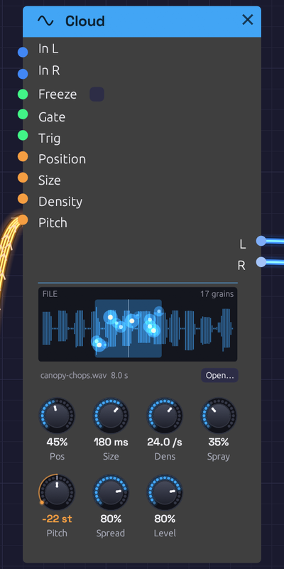
Canopy's twelve sung syllables, played as a cloud of a Dmaj9 chord. The wash is where grains may start: Position, as wide as Spray scatters them. Each spark is a grain, at its place in the file and as high or low as it sits in the stereo field, bright as it swells and fading as it endsCloud is a granular source. It plays clouds of small grains read from a recording, each a few milliseconds to two seconds long, faded in and out under a smooth window. Every other sample tool in Soba (Sampler, Chopper, Looper) plays time in order. Granular takes it apart: a sung syllable stretched into a held chord, a drum loop turned into a hiss of sparks, a moment of a voice frozen and played for as long as you like.
It plays a WAV, MP3, FLAC or Ogg file, opened or dragged onto it as for the Sampler, or live audio patched into In: the last six seconds of it, which Freeze holds.
How it works
A grain is a short read of the source:
- Where. It starts at Position, across the source from its start (left) to its end (right). Spray scatters it either side.
- How long. It lasts Size, under a Hann window that rises from nothing and falls back to nothing, so no grain clicks, however short.
- How high. It reads the source faster or slower by Pitch, tape-style, so its pitch and its formants move together. A grain read faster than the recording runs through a steep lowpass of its own first, so nothing folds back down as aliasing, even three octaves up.
- Where in the field. It sits at a random place across the stereo field, as wide as Spread.
Density says how many grains start each second. With Spray at nothing they start on a regular beat and read the same place, which buzzes at the Density's rate: turn Density into the audio range and Size down and you hear it as a pitch. Spray scatters them in place and in time until they blur into a cloud.
Up to 64 grains play at once. Past that, a new one waits for a free place: a dense, long-grained cloud thins out rather than clicking or overloading. However many overlap, the cloud keeps about the same loudness.
Live audio and Freeze
Patch something into In L (and In R, or leave it and In L plays on both sides) and the Cloud plays the last six seconds of it in place of the file. Position 1 is just now, and 0 six seconds ago. Grains always read audio already recorded, and never the moment being written.
Freeze stops recording, so the six seconds it holds stay to be played. Turn the switch on, or patch a gate: while the gate is high, it's frozen. A Clock Divider's Gate on Freeze catches a new moment every few bars; a footswitch catches whatever you just played.
While it fills, the face shows the part not yet recorded in the dark, and a grain needs a whole Size of audio behind it before it can start.
Polyphony
A polyphonic cable into Pitch grows a cloud for each of its channels, each at its own pitch, out of the one pool of grains. A Chord Sequencer's Pitch into it plays a cloud of each chord: see Choir of One. A chord's clouds add up as a chord's notes do, so a four-note chord is louder than one note.
Patch a polyphonic Gate as well and each channel's cloud grows only while its gate is high. The grains still sounding play out.
Trig
With Trig patched, grains no longer start on their own. Each rising edge starts a burst on every channel: as many grains as Density and Size would overlap, up to eight, scattered by Spray. Patch a Clock for grains in time.
Inputs
| Port | Signal Type | Description |
|---|---|---|
| In L | Audio (Blue) | Live audio to play from in place of the file. When In R is unpatched, it plays on both sides |
| In R | Audio (Blue) | The right side of the live audio |
| Freeze | Gate (Green) | Holds the live audio while high. Patched, it takes over from the switch |
| Gate | Gate (Green) | Patched, each channel's cloud grows only while its gate is high. Polyphonic |
| Trig | Gate (Green) | Patched, grains start only on its rising edges, in bursts |
| Position | Control (Orange) | Adds to Position: +1 is the whole source |
| Size | Control (Orange) | Moves Size by an octave a unit: +1 doubles it |
| Density | Control (Orange) | Moves Density by an octave a unit |
| Pitch | Control (Orange) | V/Oct, on top of the Pitch knob. Polyphonic: a cloud for each channel |
Position, Size, Density and Pitch modulate around their knobs: the knob stays live and sets the centre the CV works around.
Outputs
| Port | Signal Type | Description |
|---|---|---|
| L | Audio (Blue) | Left: every cloud, mixed |
| R | Audio (Blue) | Right |
Parameters
| Control | Range | Default | Description |
|---|---|---|---|
| Freeze | Off / On | Off | Holds the live audio (a switch beside its jack) |
| Pos (Position) | 0 – 100% | 50% | Where grains read, across the source. Playing live audio, 100% is just now |
| Size | 2 ms – 2 s | 120 ms | How long each grain is |
| Dens (Density) | 0.5 – 200 a second | 16 /s | How many grains start each second, on each channel |
| Spray | 0 – 100% | 10% | Scatters grains around Position (at 100%, over the whole source) and in time |
| Pitch | ±24 st | 0 st | Plays every grain higher or lower |
| Spread | 0 – 100% | 50% | How widely grains sit across the stereo field |
| Level | 0 – 100% | 80% | Output level |
A grain's place, size, pitch and pan are set as it starts, and it plays them out. Turning a knob changes the grains to come, never the ones already sounding, so nothing jumps.
The face
The source's waveform, the file's or the live audio's, oldest on the left. A soft wash shows where grains may start, and the line through it is Position. Every grain is a spark at the place it's reading, raised or lowered by where it sits in the stereo field, bright as it swells and fading as its window closes. The header says what it plays (FILE, LIVE or FROZEN, when the waveform turns to ice) and how many grains are sounding.
Click the waveform, or Open…, to open a file, or drag one from your files onto the node.
Sounds to try
- A held vowel. A sung note, Size 200 ms, Density 20, Spray 5%: the syllable it's at goes on as long as you like. Move Position slowly to walk through the word.
- A shimmer. Any file, Size 10–30 ms, Density 100+, Spray 60%, Pitch +12, into a Reverb.
- A pitch from a buzz. Spray 0, Size 5 ms, Density 110: the grains themselves are the note, an A. The file only colours it.
- Freeze a phrase. An Audio Input into In, Position at 95%: sing or play, flip Freeze, and play the cloud of what you just did.
- Grains in time. A Clock at 1/16 into Trig, Size 40 ms, a Sample & Hold on Position: a granular breakbeat.
- A chord of a voice. A Chord Sequencer's Pitch into Pitch: see Choir of One.
Related
- Sampler: plays a recording in order, from a gate or a keyboard.
- Looper: records live audio as a loop, to play back whole.
- Vocoder: another way to make a chord speak with a voice.
Audio Input
Module ID source.audio_input · Category Source
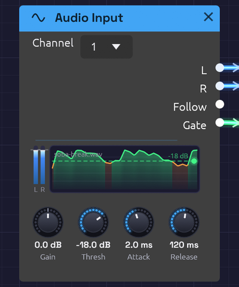
A drum loop coming in on input 1, with Channel on 1 so both meters carry it. Follow scrolls past the Threshold line, turning green wherever the gate opened: the kicks get through, the snares stay under.Audio Input brings sound from outside into the patch: a microphone, a guitar, a synth on a line input. Put your voice through the reverb, a guitar through the ladder filter and a tape delay, or let a drum loop play a synth.
Choose the device in the toolbar's Input menu. It starts at None, so Soba never opens a microphone you didn't ask it to. Every Audio Input module in the patch hears that one device; until you choose one, they're silent.
Alongside the audio, the module listens to how loud the input is. Follow traces the level as a control signal, and Gate opens when it rises above the Threshold, so a drum hit or a picked note can trigger envelopes.
Outputs
| Port | Signal Type | Description |
|---|---|---|
| L | Audio (Blue) | The first input of the Channel pair (input 1 on 1+2), after Gain; or, with Channel on one input, that input |
| R | Audio (Blue) | The second input of the pair (input 2 on 1+2), after Gain; or, with Channel on one input, that input |
| Follow | Control (Orange) | How loud the input is, on a dB scale: 0 at -60 dB, 1 at full scale |
| Gate | Gate (Green) | High while Follow is above the Threshold |
The module has no inputs: its signal comes from the device.
Parameters
| Control | Range | Default | Description |
|---|---|---|---|
| Channel | 1+2, 1, 2, 3+4, 3, 4 … 16 | 1+2 | Which of the device's inputs the module hears, on a menu at the top of the node. See Choosing a channel |
| Gain | -24 – +24 dB | 0 dB | Level of the input, before everything else. Follow and Gate hear it too |
| Thresh | -60 – 0 dB | -30 dB | Where the gate opens |
| Attack | 0.1 – 100 ms | 5 ms | How fast Follow rises when the input gets louder |
| Release | 5 – 2000 ms | 150 ms | How fast Follow falls when the input gets quieter |
Choosing a channel
An audio interface hands its inputs over as a pair: input 1 on the left, input 2 on the right. That's right for a stereo source, like a synth's two outputs, but a guitar or a microphone plugged into input 1 alone would play only in your left ear, and a stereo delay or reverb after it would get a lopsided signal. Channel picks what the module hears:
| Channel | L hears | R hears | For |
|---|---|---|---|
| 1+2 | input 1 | input 2 | A stereo source across both inputs, or a device with a single input (see below) |
| 1 | input 1 | input 1 | A guitar or microphone in input 1, heard in the centre |
| 2 | input 2 | input 2 | The same, in input 2 |
| 3+4, 5+6 … | input 3 | input 4 | A stereo source on a later pair: a synth's two outputs on a mixer's channels 3 and 4 |
| 3, 4 … | that input | that input | A mono source on any input |
Follow and Gate hear what the module puts out. On one input they follow that input alone. On a pair they follow whichever side is louder.
Each Audio Input module chooses for itself, so several of them can split an interface: one on 1 for a guitar through a filter and an echo, one on 2 for a voice through a reverb, each in its own chain.
Every input of a mixer
Some interfaces and mixers hand the computer every input they have, each its own channel. A Tascam Model 12 or a Zoom L6 sends each mixer channel, so a drum machine, a sampler and a synth plugged into it can each come back on their own, with their own effects, rather than as one stereo mix. Give each its own Audio Input: say 1+2 for the drum machine's stereo pair, 3 for a mono synth and 5+6 for the sampler. An interface like a Scarlett 18i20 works the same way.
While a device is open, the menu offers only the inputs it has: 1+2, 1 and 2 on a stereo interface, up to 11+12 and 12 on a twelve-input one. Soba hears up to 16 inputs of a device. They're listed by number: the names an interface gives its inputs don't reach Soba through its audio library yet. A patch made on a bigger interface keeps its choice: an Audio Input set to an input this device hasn't is silent, and hovering its menu says so.
A device that has only one input, like a laptop's built-in microphone or a USB mic, already plays on both sides of 1+2, 1 or 2.
Patches saved before Soba heard every input open on the same choice they had: Stereo is now 1+2.
The display
On the left, two slim meters show the input's peaks after Gain, on the same scale as the Audio Output meter. Hover them for the levels in dBFS. Set Gain so your loudest playing stays out of the red.
On the right, the last three seconds of Follow scroll past, newest at the right edge. The Threshold lies across them as a dashed green line, and the trace turns green wherever the gate was open, so you can see which hits got through. Drag the line up or down to move the Threshold; the lamp at its end lights while the gate is open.
The name of the device it's listening to sits faintly in the corner.
Follow and Gate
Follow is an envelope follower: it rises with the input's peaks at the Attack speed and falls back at the Release speed. Its scale is in decibels, not raw level. A whisper and a shout are 40 dB apart, which is a hundredth to one in raw level but 0.3 to 1 in Follow, so quiet and loud playing both move what it's patched to.
Short Attack times catch the front of a drum hit. Longer ones, 20–50 ms, smooth out the fast wiggles of a voice. Release sets how long Follow hangs on after a sound stops: around 100 ms for a tight pumping effect, a second or more for a slow swell.
Gate opens when Follow rises above the Threshold, and closes again only once Follow falls 6 dB below it. That gap stops the gate chattering open and shut when the level hovers right at the threshold. Because the gate follows Follow, a longer Release also holds the gate open longer.
Recording yourself
Right-click the module and choose Record into a new Sampler. A Sampler appears beside it, patched from L and R, listening at −40 dB with Rec already pressed. The take starts on your first word. Press the Sampler's Rec to stop it, and play the take from a key or a gate.
Latency and devices
Live input passes through two devices, each with its own clock and buffer: the input and the output. To keep the sound smooth, Soba holds a little audio between them, about one buffer of each. While an input is open, the status bar shows In and the round trip: how long a sound takes from the input jack to the speakers, often around 60 ms on Windows. Hover it for the parts that add up to it, then the device and any dropouts so far. It turns amber for a few seconds after a dropout, or after a glitch the device itself reports (a lone one when the input first opens is common, and harmless).
| Part | Typical (Windows) | What it is |
|---|---|---|
| Input device | ~10 ms | The input device's own buffer: audio waits there until a packet is full |
| Buffer | ~13 ms | What Soba holds between the two devices to ride out their uneven timing, once settled |
| Output device | ~30 ms | The output device's own buffer and the Windows audio engine behind it, before the speakers play it |
| Limiter | 1 ms | The Audio Output limiter's look-ahead |
Each device's figure comes from the timestamps it puts on its audio. Windows doesn't time captured audio usefully, so there the input is counted as one packet, the least it can be, and the hover marks it with ~. If a device reports nothing at all, the label gets a + (In 22+ ms): the real round trip is longer than the parts Soba can count. Neither figure includes the converters inside the interface, usually another millisecond or two each way.
The Buffer settles on its own. It opens holding enough for the worst timing the two devices could have, then over the first few seconds it watches how much of that they really need, and trims the rest, a frame at a time so you don't hear it. If the two devices' clocks drift apart, as separate devices' do, it eases a block a fraction faster or slower to keep in step rather than letting the audio drop out. After a dropout it holds a little more, then tries the leaner amount again after a quiet half minute. The hover shows how much it has trimmed and stretched.
- Different sample rates are fine. Windows often runs a microphone at 48 kHz and speakers at 44.1 kHz, even on one interface. Soba converts the input to the output's rate on the way in. For the cleanest sound, set both to the same rate in your system's sound settings; the status bar tooltip says when it's converting.
- Changing the Output device reopens the input at the new device's rate.
- If the input device is unplugged, the status bar shows ⚠ Input lost. Choose it again under Input.
- A mono device is heard on both sides. With an interface of two inputs or more, set Channel to the input you're using; see Choosing a channel.
Low latency with ASIO (Windows)
 ASIO is a registered trademark of Steinberg Media Technologies GmbH
ASIO is a registered trademark of Steinberg Media Technologies GmbHWindows Audio is shared by every app, and each direction passes through the Windows audio engine: fine for a pad or a sampled loop, but a guitarist hears 60 ms as a slap-back echo of their own playing. An audio interface's ASIO driver skips all of that. Input and output come from one driver, on one clock, in buffers a few milliseconds long, and Soba holds nothing between them: each output buffer is computed from the input that arrived moments before.
To use it, download the low-latency Windows build, or build Soba with ASIO yourself (both in Build with ASIO), then open the Output menu and choose ASIO under Audio system. The menu then lists ASIO drivers, and Input offers that driver's inputs. Choose it there to hear your interface.
Buffer sets how many frames the driver hands over at a time, and the closed Output menu shows it beside the driver's name:
| Buffer | At 48 kHz | Round trip, measured | |
|---|---|---|---|
| 32 | 0.7 ms | 11 ms | The quickest; needs a computer with headroom |
| 64 | 1.3 ms | 14 ms | Tight enough to play guitar against |
| 128 | 2.7 ms | 20 ms | A good start: feels immediate for most playing |
| 256 | 5.3 ms | 32 ms | Busy patches with long reverbs |
| 512 | 10.7 ms | 52 ms | Room to spare; too slow to play against |
Measured on a first-generation Scarlett 2i2 with Focusrite's driver. The round trip is more than one buffer in and one out: each driver keeps a safety margin of its own, Focusrite's about another buffer and a few milliseconds each way, and Soba's limiter adds 1 ms. The status bar's In shows yours. If you hear crackles, or the CPU meter runs high, go up a size. Smaller buffers make Soba answer more often, with less time for each answer.
- ASIO drivers serve one app at a time. If another app (a DAW, say) has the interface, choosing ASIO says so and stays on Windows Audio.
- Changing the buffer from the driver's own control panel restarts audio at the driver's new size, with a note in the status bar.
- Soba remembers the audio system and buffer between sessions.
Feedback
A microphone near speakers hears the speakers. Through a reverb or a delay with feedback, that can build into a howl. The first time you turn on an input while the output is speakers, the status bar says so. Use headphones, or keep the volume low. If it does run away, the Audio Output's limiter keeps it from getting dangerously loud. Press ⏹ Stop to silence it.
Rendering and filming
The render tool has no input device, so Audio Input renders silence. Give it a WAV file to hear instead with --input:
cargo run --release --bin render -- my-patch.json out.wav --input voice.wav
The file plays from the start of the render, converted to the render's sample rate (48 kHz unless you pass --sample-rate) if it was recorded at another. Every channel of the file is an input, up to 16, so a multitrack recording of a whole mixer plays each channel into the Audio Inputs whose Channel picks it. In a capture script, the cue input voice.wav does the same from the moment it fires.
Patches
Voice in a room
[Audio Input L] ──> [Reverb In L]
[Audio Input R] ──> [Reverb In R]
[Reverb Out L] ──> [Audio Output Left]
[Reverb Out R] ──> [Audio Output Right]
Talk or sing into the microphone. If it's plugged into an interface, set Channel to its input, so it sits in the middle of the room rather than off to one side. Raise the Reverb's Size and Decay for a hall, or a cathedral. Use headphones.
Guitar through a ladder filter and tape echo
[Audio Input L] ──> [Ladder Filter In]
[Audio Input Follow] ──> [Ladder Filter Cutoff]
[Ladder Filter LP24] ──> [Stereo Delay In L] (Tape on)
[Stereo Delay Out L / Out R] ──> [Audio Output Left / Right]
Set Channel to the input the guitar is plugged into. Follow opens the filter as you dig in, like an auto-wah: each pick attack sweeps it up, and it closes as the note decays. Start with the Ladder's cutoff low and its Resonance around 50%. Attack at 5 ms and Release at 200 ms give a classic quack. The tape echo then repeats each sweep, darker every time.
Drums that play a synth
[Audio Input Gate] ──> [ADSR Gate] (Thresh just under the kicks)
[ADSR Out] ──> [VCA CV]
[Oscillator Out] ──> [VCA In] (Octave -2)
[VCA Out] ──> [Audio Output Mono]
Play a drum loop, or hit a table near the microphone. Drag the Threshold line until only the hits you want turn green, usually the kicks. Each one fires the envelope, and a sub-bass note follows the drummer. Give the ADSR a fast attack and a short decay for a tight thump, or patch the Gate into a Step Sequencer to step through a bassline in time with the playing.
Ducking a pad
[Audio Input Follow] ──> [Attenuverter In] (Amount -1, Offset 1)
[Attenuverter Out] ──> [VCA CV]
[Pad] ──> [VCA In]
The louder the input, the quieter the pad: it dips under each word and swells back in the gaps. That's the sidechain pumping of dance music, played by a voice or a drum loop.
Related modules
- Reverb and Stereo Delay: put the input in a space
- Ladder Filter and SVF Filter: shape it, with Follow on the cutoff
- ADSR Envelope: triggered by Gate
- Compressor: evens out a voice or a guitar
- Vocoder: speak or sing into it, and a synth chord speaks with your voice
- Sampler: patched into its In, records a take of you to play from a key or a gate
- Audio Output: its limiter catches feedback
MIDI In
Module ID input.midi · Category Source
MIDI In is a MIDI controller as a cable. It names a device and a channel, and every module patched from its purple MIDI output hears that device on that channel, whatever its own Device says. It makes no sound and has no signal to send: the cable is a choice of where the MIDI comes from, not a stream of it.
Every module that hears MIDI (Note In, Pad, Control, the Clock and the MIDI Monitor) can choose a device of its own, in its right-click menu (see Listening to one device). That suits one module. With several, each keeps its own setting, and moving to another controller means changing them all. Patch them from one MIDI In instead, and the device is chosen in one place.
Output
| Port | Signal Type | Description |
|---|---|---|
| MIDI | MIDI (Purple) | Patch into a module's MIDI input, or a group's, and it hears this device and channel |
A MIDI cable goes only into a MIDI input. One MIDI In can feed as many modules as you like. A module's MIDI input is the purple jack at the left end of its title bar: the controller comes in at its head, and the module grows no taller for it.
Parameters
| Control | Options | Default | Description |
|---|---|---|---|
| Ch (Channel) | Omni / 1 – 16 | Omni | The one channel the modules patched from it hear. Omni hears every channel |
The Device is chosen on the face. It's saved with the patch by the device's name, as a module's own Device is, so the patch finds it on another computer with the same gear.
The face
- The device's name. Click it to choose: Any, or one of the devices ticked in MIDI In on the toolbar. A device set on another computer, or not plugged in, shows (not open), and is kept until you choose another.
- A lamp beside it, purple while the device is open, grey while it isn't. It flares with each message the device sends on the MIDI In's channel, so a key or pad struck shows on the node it comes in through.
- Underneath, the channel, and how many modules hear it.
What a cable does
A module patched from a MIDI In:
- hears the MIDI In's device, in place of its own Device. The Device entry of its right-click menu greys while the cable is in, the way a knob greys under a cable, and the device shows after its title;
- hears only the MIDI In's channel, if it names one. A Note In or a MIDI Monitor with a Ch of its own hears where the two agree: leave it on Omni to hear the MIDI In's channel. MIDI clock and transport have no channel, so a Clock follows the device's clock whatever the Channel;
- claims notes from that device, if it's a Pad: a Note In on Omni skips the pad's note from the MIDI In's device, and only those (see Claimed notes);
- still hears the computer keys and the piano, which aren't a device.
Unplug the cable and the module hears its own Device again. Nothing about the module changes while it's patched, so a patch from before MIDI In plays exactly as it did.
Through a group
The cable runs through a group's jacks. Put eight Pads in a group, give the group a MIDI jack, and inside, patch that jack into each Pad's MIDI input (the Library's Pads ×8 comes that way). Plug a MIDI In into the jack outside and every pad inside hears that controller. Swap the MIDI In's device and the whole group follows. It works through a group inside a group too.
A group's MIDI jack with nothing plugged into it outside leaves the modules inside on their own Devices.
Uses
Two keyboards, two synths. Two MIDI Ins, one for each keyboard, each patched into the Note In of its own synth. Point the patch at different keyboards by changing the MIDI Ins alone.
A split controller. One controller sending its lower half on channel 1 and its upper half on channel 2: two MIDI Ins on the same device, one on each channel, into a bass Note In and a lead Note In.
A drum group. A group of Pads and Drums with one purple jack, so the kit plays from whichever pad controller is plugged into it.
Watching what a module hears. Patch the same MIDI In into a MIDI Monitor as well, and the log shows exactly what its modules hear.
Related modules
- Note In: notes as Pitch, Gate and Velocity, and choosing a device
- Pad, Control: a controller's pads and faders as cables
- MIDI Monitor: what a device sends
- Signal Types: the purple cable
Note In
Module ID input.poly_midi · Category Source
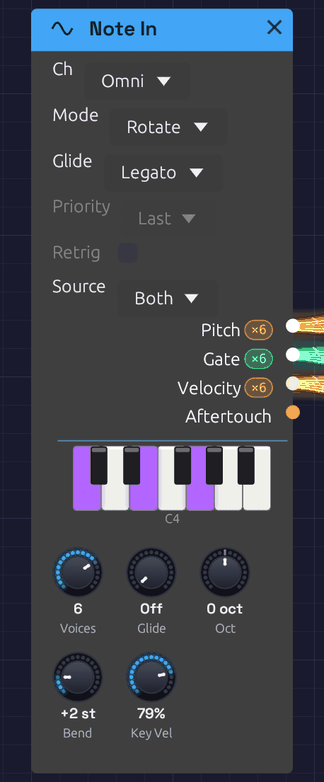
A chord from a MIDI keyboard and a note on the computer keys, lit on its piano.Note In is how you play a patch. It takes notes from your computer keyboard, from the piano on its face (held with the mouse or a finger), and from a MIDI device: a keyboard, a pad controller, or a DAW or sequencer sending MIDI. It turns them into a V/Oct Pitch, a Gate, a Velocity and an Aftertouch signal that any module can use. It needs no setup and no hardware, which makes it the quickest way to hear a patch: the First Sound example that opens with the app is played from one.
With Voices at 1 it plays one note at a time, as a classic monosynth does: Priority decides which held key sounds. With more voices it plays chords. Every note you play gets a voice of its own, and the Pitch, Gate and Velocity cables carry all the voices at once, one channel per voice. Patch them into the polyphonic modules (Oscillator, SVF and Ladder filters, ADSR, VCA) and each held note plays through its own oscillator, filter and envelope. See Polyphony for how polyphonic cables work.
Every note, from the keys or from MIDI, starts on its exact sample, however short it is.
Outputs
| Port | Signal Type | Channels | Description |
|---|---|---|---|
| Pitch | Control (Orange) | One per voice | Each voice's note as V/Oct, with pitch bend. C4 (MIDI note 60) is 0.0 |
| Gate | Gate (Green) | One per voice | High while the voice's key, or the sustain pedal, holds its note |
| Velocity | Control (Orange) | One per voice | Each note's velocity, 0 to 1 |
| Aftertouch | Control (Orange) | 1 | Channel pressure, 0 to 1, shared by every voice |
Its one input, MIDI, is the purple jack at the left end of its title bar. It takes a cable from a MIDI In: patched, Note In hears that MIDI In's device and channel instead of its own Device (see Listening to one device).
Once the patch is playing, each polyphonic output shows its channel count in a small pill beside its label: ×8 means it carries eight voices. The Gate output lights up while a note is held.
Parameters
| Control | Range | Default | Description |
|---|---|---|---|
| Source | Both / Keys / MIDI | Both | Where the notes come from: the computer keys and the piano, a MIDI device, or both (see Sources) |
| Ch (Channel) | Omni / 1 – 16 | Omni | The MIDI channel to listen to. Omni hears all of them, except the notes Pad modules claim (see Claimed notes). The keys aren't on a channel, so this never turns them away |
| Voices | 1 – 8 | 8 | How many notes can sound at once, and so how many channels the cables carry. 1 plays one at a time |
| Mode (Allocation) | Rotate / Reuse | Rotate | With several voices, how a new note picks its voice (see Voice allocation) |
| Priority | Last / Low / High | Last | With one voice, which held key sounds (see One voice) |
| Retrig (Retrigger) | Off / On | Off | With one voice, restarts the gate when you move between held keys |
| Oct (Octave) | −4 to +4 | 0 | Shifts every note by whole octaves |
| Bend (Bend Range) | 0 – 12 semitones | 2 | How far the pitch bend wheel bends every voice |
| Glide | Off – 2 s | Off | How long the pitch takes to slide to a new note (see Glide) |
| Glide (Glide Mode) | Always / Legato | Legato | Which notes slide: all of them, or only those played while another key is held |
| Key Vel (Key Velocity) | 0 – 100% | 79% | How hard the computer keys and the piano play. A computer key can't tell soft from hard, so this sets it for all of them. 79% is MIDI velocity 100 |
Priority and Retrig only do anything with one voice, and Mode only with several, so the ones that don't apply are drawn faded. They can still be set, ready for when Voices changes.
Each voice runs a full copy of every polyphonic module downstream, so eight voices cost about eight times the CPU of one. If a patch is heavy, turn Voices down.
Sources
Both plays from everything: the computer keys, the piano on the face, and MIDI on the chosen Ch. Keys plays only from the computer keys and the piano, so a MIDI controller in the same patch can play something else. MIDI plays only from MIDI, so the computer keys can play something else. Two Note Ins, one on Keys and one on MIDI, give one patch a bass on the computer keys and a lead on a controller.
The piano on the face lights the notes held, from wherever they come.
Key layout
The bottom two letter rows form a piano keyboard starting at C4. The bottom row plays the white keys and the row above it plays the black keys, sitting between them as they would on a piano. The top letter row and the numbers above it are a second piano laid out the same way, an octave higher, as in a tracker:
Black keys: 2 3 5 6 7 9 0
White keys: Q W E R T Y U I O P
Note: C5 D E F G A B C6 D E
Black keys: S D G H J L ;
White keys: Z X C V B N M , . /
Note: C4 D E F G A B C5 D E
That's C4 to E6, a little over two octaves. The pianos overlap by a few notes: , . / play the same C, D and E as Q W E, so a run up the bottom row can carry on along the top. Turn Oct to move the whole range.
The piano on the face plays too. Hold a key with the mouse, or a finger on a touch screen, and it plays like a computer key; slide across the keys and the pitch follows. It's how Note In is played on a phone.
Keys don't play notes while you hold Ctrl or Alt (those are shortcuts), while you're typing in a text field, or while the quick-add palette is open. Space and Tab open the palette, so they're never notes. The app has to have keyboard focus: if nothing happens, click the canvas. Switching to another window lets go of every key held.
The keys play every Note In whose Source isn't MIDI, in the browser and inside a DAW as well as in the app, with or without a MIDI device. The MIDI Monitor shows them as Keys.
Choosing a MIDI device
MIDI comes in from the devices ticked in MIDI In on the toolbar. The menu lists every MIDI input the system can see. Tick one and the dot fills in (●) once it's open. Tick as many as you play at once, up to eight: a keyboard, a pad controller and a drum machine sending clock can all be open together. Untick one to close it. None (Disconnect) closes them all.
- Plugged in a device after starting Soba? Open the menu and click 🔄 Refresh.
- In the browser, the menu is a 🎹 Connect MIDI button until you allow MIDI, and a device plugged in later appears by itself. See MIDI.
- Connection failed? The reason appears in the status bar at the bottom of the window, and the device stays unticked. On Windows, a device another app already has open (a DAW, a browser, a controller's editor) can't be opened a second time, so close the other app and tick the device again.
- Closing or unplugging a device releases the notes still held on it, so nothing sticks. Notes held on the other devices play on.
- Inside a DAW, Soba plays the notes on its track, and there's no MIDI In menu.
Soba remembers the devices ticked and opens them again next launch, or as soon as each is plugged in.
Listening to one device
Every Note In hears every device open, until you give it a Device. Right-click the module, open Device and choose one of the devices open. Its name appears faintly after the module's title, and from then on the module hears that device alone. Two keyboards can then play two synths, each through its own Note In, on the same MIDI channel. Any hears them all again.
The Device is saved with the patch, by the device's name, so the patch finds it on another computer with the same gear. While no device of that name is open, the name dims and the module hears no MIDI. It still hears the computer keys and the piano, which aren't a device.
Pad, Control, the Clock and the MIDI Monitor have a Device too.
A purple cable from a MIDI In into the module's MIDI input chooses for it: the module hears the MIDI In's device, and only its channel if it names one. While the cable is in, Device greys in the right-click menu, as a knob does under a cable, and the title shows the device the cable brings. Unplug it and the module hears its own Device again. A MIDI In is the way to give several modules one controller, or a whole group one jack to plug a controller into.
Claimed notes
A Pad claims the note it listens to, on its channel: the Library's Pads ×8 claims notes 36 to 43 on channel 10, which most pad controllers send. A Note In on Omni skips those notes, so hitting a pad plays its drum and not the synth as well. The piano doesn't light for them either.
A Pad set to one Device claims that device's note alone. With the Pads on the pad controller, a keyboard's note 36 on channel 10 still plays the synth. A Pad patched from a MIDI In claims its note from the MIDI In's device, and on its channel alone if it names one.
A Note In set to a channel hears all of that channel's notes, claimed or not. Set Ch to the pads' channel to play notes from the pads too. The computer keys and the piano are never claimed.
How notes become CV
- Note On raises the voice's gate and moves its Pitch to the note.
- Note Off drops the gate. Pitch stays on the note, so a release tail stays in tune.
- Pitch bend moves Pitch by up to ±Bend semitones. It glides over about 5 ms between the wheel's steps, so bends never zipper.
- Channel pressure appears on Aftertouch.
- The sustain pedal (CC 64) holds notes after their keys come up. Lifting it releases them all.
- All Notes Off (CC 123) and All Sound Off (CC 120) release every note the device that sent them is playing, pedal or not, and lift its pedal. Soba sends one when a device is closed or unplugged, so a Note In on Any lets go of that device's notes and plays on with the others'. From a DAW, they release everything.
Each semitone is 1/12 on Pitch, so MIDI note 72 (C5) is +1.0 and note 48 (C3) is −1.0. With every tune knob at 0, the Oscillator plays C4 at 0.0, so Note In plays it in tune with nothing to set.
Timing
Notes are handled on the audio thread. Each one is stamped the moment it arrives, from a device or from the keys, and placed at the matching sample of the next audio buffer. Every note is delayed by the same amount, one audio buffer (a few milliseconds), so a steady sequence from a DAW plays back steady, with no jitter. Even the shortest note produces a gate.
One voice
With Voices at 1, Note In plays legato. The first key raises the gate, and while any key is held the gate stays up: pressing another key moves Pitch to it without retriggering the envelope, so overlapping your key presses slurs one note into the next. When several keys are held, Priority picks the one that sounds:
| Priority | The key that sounds | Good for |
|---|---|---|
| Last | The most recently pressed | Most playing |
| Low | The lowest | Basslines: a held bass note wins over anything played above it |
| High | The highest | Leads over a held drone |
Release the sounding key and another held key takes over, so you can trill against a held note.
With Retrig off, playing legato changes the pitch but keeps the gate high, so the envelope carries on, for smooth, connected lines. With Retrig on, each legato note drops the gate for a single sample, so the envelope starts again on every note.
The cables carry one channel, so a monophonic patch hears one note.
Voice allocation
With several voices, Rotate gives each new note the next free voice in turn. A released note keeps ringing through its release while the next note sounds on a different voice, so release tails overlap naturally.
Reuse sends a note played again back to the voice that last played it, the way a piano string is struck again. Any other note takes the voice that has been free the longest, which gives release tails the most time to finish.
In either mode, a note played again while it's still sounding (held by the sustain pedal, say) restarts on its own voice rather than taking a second one.
Voice stealing
When every voice is busy, a new note takes one over. It chooses:
- a voice the sustain pedal is holding (its key already up), oldest first;
- otherwise, the oldest note still held.
The taken voice's gate drops for one sample, so its envelope starts again for the new note.
Glide
Glide makes the pitch slide from one note to the next instead of jumping, like the portamento on a classic monosynth. The knob sets how long the slide takes, from Off up to 2 seconds. Most of its travel covers the short times, where glide is most useful: 200 ms is a little past halfway.
- Even across the keyboard. The slide moves evenly in pitch, so it sounds the same low or high.
- The same time for any distance. An octave leap arrives as quickly as a step to the next semitone.
- Eases in. The pitch covers most of the distance early and settles gently onto the note: about two thirds of the way in the first fifth of the time, and within 1% of the note by the end of it.
The Glide dropdown picks which notes slide:
| Glide Mode | Which notes slide | Feels like |
|---|---|---|
| Legato | Only a note played while another key is still held. A note after a gap starts on its own pitch | A Minimoog or a 303: you choose each slide with your fingers |
| Always | Every note, from wherever the last one left off | Portamento that's always on |
Pitch bend rides on top of the glide: the wheel moves the pitch at once while the note underneath slides. With one voice, Glide and Retrig work together, so with both on, each legato note restarts the envelope and slides into pitch.
With several voices, each voice slides from its own previous note. Change chords with Glide up and every voice takes its own path, crossing and converging, the way the voices of a vintage polysynth do. A stolen voice slides from wherever it was. Mode decides where each slide starts: with Reuse, a note played again returns to the voice that last played it, so it doesn't slide at all; with Rotate, the voices take turns, so each slide starts from a different note of the last chord or two. In Legato mode a chord struck from nothing starts on its own pitches: notes arriving within 30 ms of the first count as part of that chord, since no hand strikes every key at once.
To hear it, open First Sound and turn Glide to about 200 ms. Hold Z (C) and tap B (G): the pitch slides up to G and, when you let go of B, back down to C.
MIDI Learn
Any knob in the patch can follow a MIDI controller (a mod wheel, a fader, a knob on your keyboard), and so can toggles, dropdowns and footswitches, from pads as well as knobs. This works with or without a Note In in the patch.
- Right-click the knob and choose Learn MIDI. A purple M badge blinks above it, and the status bar asks you to move a control.
- Move the knob or fader on your controller. The badge stops blinking: the knob is mapped.
Changed your mind, or no controller to hand? Press Escape, or right-click the blinking knob and choose Cancel MIDI Learn, and nothing is mapped. Starting learn on another knob moves it there instead.
The controller sweeps the knob's whole range, on the channel it was learned on. A fader picks the knob up where it stands rather than jumping it, and an endless encoder steps it. Right-click a mapped knob to see its CC number and channel, to Re-learn MIDI, or to Clear MIDI. Mappings are saved with the patch. Moves made by a controller aren't added to the undo history. MIDI Learn in the interface overview says what pads do to each kind of control.
Patch examples
The smallest playable voice, as in the First Sound example, with Voices at 1:
[Note In Pitch] ──> [Oscillator V/Oct]
[Note In Gate] ──> [ADSR Gate]
[Oscillator Out] ──> [VCA In]
[ADSR Out] ──> [VCA CV]
[VCA Out] ──> [Audio Output Mono]
Chords, with Voices at 8:
[Note In Pitch] ──> [Oscillator V/Oct]
[Note In Gate] ──> [ADSR Gate]
[Note In Velocity] ──> [ADSR Velocity]
[Oscillator Out] ──> [Ladder Filter In]
[Ladder Filter LP24] ──> [VCA In]
[ADSR Out] ──> [VCA CV]
[VCA Out] ──> [Audio Output Mono]
Hold a chord and each note has its own oscillator, filter and envelope. The Audio Output is a mono module, so it hears the voices summed. Voices add up, so a four-note chord is about four times as loud as one note: leave headroom with the VCA's Level. The Lush Pad example is built this way.
Velocity on the ADSR Envelope makes harder notes louder. Patch Aftertouch into the filter's Cutoff to brighten a note as you press into the key.
Two voices on two channels, for a bass and a lead from one DAW:
[Note In (Ch 1, Voices 1, Priority Low)] ──> [Bass voice]
[Note In (Ch 2, Voices 1, Priority High)] ──> [Lead voice]
Older patches
Note In takes the place of three modules: Keyboard (the computer keys, one voice), MIDI Note (MIDI, one voice) and Poly MIDI (chords). A patch saved with any of them opens with Note In in their places, and plays as it did: a Keyboard becomes a Note In with one voice on Keys, at the Keyboard's velocity; a MIDI Note becomes one with one voice on MIDI; and a Poly MIDI is a Note In already.
Troubleshooting
No sound. Press Play: notes only sound while the patch is playing. Check Source. For MIDI, check that the device is selected in MIDI In and that its dot is filled, and set Ch to Omni in case the device sends on another channel. A MIDI Monitor shows whether anything is arriving at all.
Only one note of a chord sounds. Voices is at 1, or the cables run into a module that isn't polyphonic, which hears one channel.
Some notes don't play. The Pads in the patch claim their notes from a Note In on Omni (see Claimed notes). Learn the pads onto other notes, or set Ch to the channel you play on.
Wrong pitch. Check Oct, and that the pitch bend wheel is centered.
Stuck note. Send All Notes Off from your controller, or select the device again in MIDI In. Either releases every note held from that device.
Related modules
- MIDI Monitor – see the notes that are arriving
- Pad – a pad controller's pads as gates, for finger drums
- Oscillator – where Pitch usually goes
- ADSR Envelope – where Gate and Velocity usually go
- Chord Sequencer – plays chords for you
Control
Module ID input.control · Category Source
A Control turns one fader, knob, wheel or strip of a MIDI controller into a cable. It hears one control and puts it out as a Control signal, so you can patch it wherever a cable goes: a fader into a filter's Cutoff, a knob into a VCA, the mod wheel through an Attenuverter into an LFO's Rate.
A controller is as many Controls as it has faders and knobs to patch, in a group: four for a MiniLab 3's faders, nine for a controller with nine, one for an expression pedal. The Library has two ready to use: MiniLab 3 Faders and Controls ×4 (see The Library's Controls). It works the way a Pad does: one Pad is one pad, and eight of them make a pad controller.
MIDI Learn can also turn a knob from your controller, but only a knob that's already on a module. A Control is for when the controller is the source: one move feeding several places, a fader scaled and flipped before it arrives, or a control mixed with an LFO.
It listens to the devices ticked in MIDI In on the toolbar, or to the one chosen under Device in its right-click menu (see Listening to one device), or to the one a MIDI In patched into its purple MIDI input names. It reads each move on its own sample, as Note In reads notes.
Outputs
| Port | Signal Type | Description |
|---|---|---|
| Out | Control (Orange) | The control: 0 to 1, or −1 to 1 when its range is bipolar |
The face
One slim fader that moves with the hardware, showing what its cable carries. The fill rises from the bottom, or from the middle when it's bipolar. The cap warms to orange while the control moves, and cools again once it rests. Beside the fader is what it hears (CC 74, Bend, Mod, Press) and the value it's sending, lit orange once a cable leaves it. Along the top are the channel it hears and learn. Hover the fader to read it in full.
A new Control hears the mod wheel, so it works with any keyboard before you learn anything.
On a group's face
In a group, right-click the fader and choose Show on group, and it's on the group's face too, moving there with the hardware. Faders on a face sit in a row, up to six across, each under its name. Right-click one there to rename it, learn it, choose what it hears, or Hide from group. The Library's groups and old Controls patches come with every fader on the face, each named for its jack.
Learning a control
- Click learn at the top right of the face. The fader blinks purple, and the status bar asks you to move something.
- Move a fader or a knob, bend the pitch wheel or strip, or press a key down on your controller.
The Control now hears that control, on the channel it came on. If it was an endless encoder, the next few steps tell it so, and it counts steps from then on. Learning it again replaces what it heard, and Undo takes a learn back. To give up before moving anything, press Escape or click cancel. In Map Mode, clicking the fader starts the learn.
Learning a Control only teaches the Control. Nothing is mapped, and a note you play while it waits still plays.
Learning a group in order
To learn every Control in a group at once, right-click the group and choose Learn in order, then move your controller's faders and knobs one after another. The Controls take them in the order they sit: the top row first, each row left to right. The one waiting blinks purple and says skip, the ones to come show their number, and each one learned shows a tick. Press Tab to leave one as it is, or Escape to stop, keeping what was learned. A control already learned in the walk is passed by, so a fader you're still moving doesn't teach the next Control too. The whole walk is one Undo.
It's the same walk a group of Pads takes (see Learning a group in order), and a group holding both learns its pads and faders in one go.
Its menu
Right-click the fader to learn it from the menu, or to choose what it hears by hand:
| Item | Choices | Description |
|---|---|---|
| Source | CC / Pitch Bend / Mod Wheel / Pressure | What it hears. For a CC, set its number here too |
| Channel | Omni / 1 – 16 | Only hear this MIDI channel. Omni hears all of them. A learned Control hears the channel it was learned on |
| Range | Auto / 0 to 1 / −1 to 1 | 0 to 1 runs from the bottom of the control's travel to the top. −1 to 1 puts 0 at the middle, for a bend or for a fader that should push both ways. Auto is −1 to 1 for the pitch bend, which rests in the middle, and 0 to 1 for everything else |
| Hardware | Absolute / Encoder (64 ±) / Encoder (1 / 127) | For a CC: a knob or fader with ends, or an endless encoder that sends steps. Learning tells them apart from the first few values the control sends |
An endless encoder has no ends, so the Control counts its steps instead: each step moves it 1% of the way, up or down, from wherever it stands, and it stops at the ends. A hundred steps take it from the bottom to the top. Telling a Control that was a fader that it's an encoder doesn't move it: the next step goes on from where it is.
Parameters
| Control | Range | Default | Description |
|---|---|---|---|
| Slew | Off – 2 s | 20 ms | How long the output takes to follow its control. A MIDI CC has only 128 steps, and a filter's cutoff swept by one jumps from step to step with a faint zipper. 20 ms smooths the steps away without making the control feel late. Turn it up for slow, gliding moves, or down to Off for a control that should land at once |
The Library's Controls
Both are under Library ▸ Controllers in the add menu, their faders on their faces. Each has a MIDI jack that goes into every Control inside: plug a MIDI In into it and they all hear that controller, or leave it empty and each hears its own Device.
| Group | Controls | Jacks |
|---|---|---|
| MiniLab 3 Faders | An Arturia MiniLab 3 as it comes from the box: its four faders on CC 82, 83, 85 and 17, the pitch strip and the mod strip | Fader 1 – Fader 4, Bend, Mod |
| Controls ×4 | A keyboard's own controls: the mod wheel, the pitch bend (−1 to 1), the pressure and CC 74, which many controllers send from their first knob | A, B, C, D |
For another controller, add Controls ×4, right-click it, choose Learn in order and move four of its controls. Double-click the group to open it: duplicate a Control for each fader more, right-click each one's Out and choose Show on group to give it a jack, and its fader's menu to put it on the face.
Patches made with Controls
Controls, the module this one replaced, was four slots, A to D, in one node. A patch made with it opens with a group named Controls in its place, holding four Controls, each hearing what its slot heard, with the Slew they shared, hearing the same Device, its fader on the group's face. The group's jacks are A to D, so every cable stays where it was, and it sounds exactly as it did.
Uses
- A fader on a filter. Learn a Control from a fader and patch Out into an SVF Filter's Cutoff. The filter follows the fader with no zipper noise at the default Slew.
- The touch strips. A Control on the pitch bend and one on the mod wheel: the bend into a filter for a wah, the mod strip into a vibrato's depth.
- One fader, several places. Patch one output into as many inputs as you like, and put an Attenuverter in front of any that should move the other way or less.
- Pressure as expression. A Control on Pressure hears how hard you press a held key: patch it into a VCA or a filter to swell a note as you lean in.
- An expression pedal. One Control, learned from the pedal, into a VCA's CV for a volume pedal or a filter for a wah.
Pad
Module ID input.pad · Category Source
A Pad is one pad of a MIDI pad controller, as a gate: a finger drum, a trigger or a latch. Its Gate can strike a Drum, open an ADSR or reset a sequencer, and it also puts out how hard it was hit and how hard it's pressed.
A pad controller is as many Pads as it has pads, in a group: eight for a MiniLab, sixteen for an SP-404MKII, one for a footswitch. The Library's Pads ×8 is eight of them, ready to play (see Pads ×8). A voice in Soba is built from small parts the same way: an oscillator, a filter and an envelope in a group, not one Voice module.
Pads send notes. Played into a Note In they would be pitches: pad 1 a low C, pad 2 a C♯. A Pad hears its note as a pad instead, and claims it, so a Note In listening on Omni lets it be. Hitting a pad plays its drum and never also plays the synth (see Claimed notes).
It listens to the devices ticked in MIDI In on the toolbar, or to the one chosen under Device in its right-click menu (see Listening to one device), or to the one a MIDI In patched into its purple MIDI input names. It reads each hit on its own sample, as Note In reads notes. The Pad Kit example plays five Drums from a group of eight.
Outputs
| Port | Signal Type | Description |
|---|---|---|
| Gate | Gate (Green) | The pad, as Mode says: high while held, flipped by each hit, or a short trigger |
| Velocity | Control (Orange) | How hard the pad was last hit, 0 to 1, held until the next hit. It changes on the sample the gate rises |
| Pressure | Control (Orange) | How hard the pad is pressed (aftertouch), 0 to 1. It falls to 0 when you let go |
Velocity is the cable for a drum's Accent. A Drum reads its Accent at the moment its trigger rises, and a Pad's Velocity changes on that same sample, so the drum hears how hard its pad was struck. Two pads hit together each put out their own, on the same sample.
Pressure hears polyphonic aftertouch on the Pad's note, and channel pressure on its channel while it's held. A pad controller sends whichever it is set to.
Parameters
| Control | Choices | Default | Description |
|---|---|---|---|
| Mode | Momentary / Latch / Trigger | Momentary | Momentary: the gate is high while the pad is held. Latch: each hit flips it, open then shut, however long the pad is held. Trigger: a 5 ms gate per hit, however long the pad is held |
A pad hit again while its gate is high (held in Momentary, or inside its 5 ms in Trigger) drops its gate for one sample and raises it again, so a drum hears a new hit.
Each Pad has its own Mode, so one pad can latch a drone while the pad beside it plays a drum.
The face
One pad. A hit flashes it in the gate's green, brighter and wider the harder it was struck, and the flash fades over about a third of a second. While its gate is open, held or latched, it stays softly lit, and glows a little more the harder you press it. Its note is in the corner, and along the top are the channel it hears and learn.
Click the pad to play it. Toward the top is a hard hit, toward the bottom a soft one. In Momentary mode the gate stays high for as long as you hold the mouse button.
On a group's face
A Pad in a group can put its pad on the group's face: right-click the pad and choose Show on group. The pads pinned there sit four to a row under the miniature, so a closed group of eight is a controller to play without opening it, with no controller plugged in.
- Click a pinned pad as you'd click the Pad's own: the higher you click, the harder the hit. It writes the Pad's own Press, so it's one pad in two places, and a cable from its Gate hears both.
- It lights with the hardware. Hit the pad on your controller and the pinned pad flashes, brighter the harder you hit it, as the Pad's own face does.
- Name it for what it plays: right-click it on the face and type Kick or Rec over the name. The name sits in its top corner, in the Pad's blue, and only on the face; its note stays in the other corner.
- Its right-click menu learns it, sets its Note and Channel, and takes it off the face with Hide from group.
Pinned pads are kept by undo, copy and paste, a saved patch and My Modules, like any pinned control. The Library's Pads ×8 comes with all eight pinned.
Learning a pad
A new Pad hears note 36 on channel 10: the General MIDI kick, which most pad controllers send from their first pad. If you want another pad:
- Click learn at the top right of the face. The pad blinks purple, and the status bar asks you to hit a pad.
- Hit the pad on your controller.
The Pad takes that note and the channel it came on. Undo takes a learn back. To give up before hitting anything, press Escape or click cancel. In Map Mode, clicking the pad starts the learn.
Right-click the pad to learn it from the menu, or to set its Note and Channel by hand. What it hears is saved with the patch.
A new Pad takes the next note
Add, paste or duplicate a Pad beside others on the same level, and it hears the note after the highest one there, on that Pad's channel. Duplicate the Pad on 40 and the copy is on 41; duplicate a row on 36 to 39 and the copies are on 40 to 43. So a group of Pads built by hand mostly needs no learning at all. A Pad alone on its level keeps the note it came with.
Learning a group in order
To learn every Pad in a group at once, right-click the group and choose Learn in order, then hit your controller's pads one after another. The Pads take them in the order they sit: the top row first, each row left to right.
- The Pad waiting for its pad blinks purple, and says skip along its top. The ones still to come show their number, and each one learned shows a tick, its rim staying softly lit until the walk is over.
- On the group's face, each Pad's card in the miniature lights as it's learned, and a row of dots along its foot counts the walk.
- The status bar says how far it has come and what it waits for.
Press Tab, or click Skip, to leave a Pad as it is and go on to the next. Press Escape, or click Stop, to stop early: what was learned so far is kept. Hitting a pad that has already been learned in this walk is passed by, so a pad that bounces or is hit twice doesn't take two Pads.
The whole walk is one step: Undo takes all of it back.
Pads ×8
Pads ×8, under Library ▸ Controllers in the add menu, is a group of eight Pads on the General MIDI drum notes, 36 to 43 on channel 10, laid out in two rows of four as most controllers' pads are. Its jacks come in pairs, Gate 1, Vel 1, Gate 2, Vel 2 and so on, in the order a Trigger Sequencer's lanes come, so it drops in where a Trigger Sequencer was. Into the Library's Drum Kit, patch Gate 1 into Kick, Gate 3 into Snare and Gate 7 into Hat, and Vel 1 into Accent: General MIDI's kick, snare and closed hat.
Its MIDI jack goes into every Pad inside. Plug a MIDI In into it and all eight hear that controller; leave it empty and each hears its own Device.
If your controller sends other notes, right-click the group, choose Learn in order and hit its pads from the first (see Learning a group in order). Its eight pads are on its face, to click (see On a group's face); right-click one there to learn it on its own. To make a bigger pad controller, open the group and duplicate a row of Pads: the copies take the next notes, and their pads come onto the face with them. Right-click each new one's Gate and choose Show on group to give it a jack.
Claimed notes
The note a Pad listens to is its own. A Note In whose Ch is Omni skips it, so a pad never also plays the synth, and the pianos and the sequencers' ears don't light for it either. The MIDI Monitor still shows it.
A Pad set to one Device claims only that device's note. Set it to the pad controller, and another keyboard's note 36 on channel 10 still plays the synth.
A Note In set to a channel hears that channel's notes, claimed or not. To play a melody on the pads as well as drums, set a Note In to the pads' channel.
The computer keys and the on-screen pianos are never claimed: they always play Note In.
Patches made with Pads
Pads, the module this one replaced, was eight pads in one node, with one Hit cable for every drum's Accent. A patch made with it opens with a group named Pads in its place, holding eight Pads, each on the note and channel its pad heard, in the same Mode, hearing the same Device. The group's jacks are Gate 1 to Gate 8. A cable from Hit now leaves from the Vel jack of the pad whose gate feeds the same drum, so each drum still hears its own hit, and Pressure from the pad it followed. It sounds as it did, except that two pads hit together now strike on the same sample, not a sample apart.
Uses
- Finger drums. A Pad's Gate into a Drum's Trig, and its Velocity into the Drum's Accent. That's Pad Kit.
- A choke. Patch the closed hat's Pad into the open hat's Choke as well as the closed hat's Trig, as a drummer's foot does.
- Swells and stabs. In Momentary, a Pad's gate into an ADSR holds a chord as long as you hold the pad. Pressure into a filter's Cutoff opens it as you lean in.
- Switches. In Latch, a Pad holds its gate open until you hit it again: a drone through a VCA you start and stop by hand, or a Logic module's B, letting a sequencer's gates through only while the pad is lit.
- Triggers. In Trigger, a Pad's short gate into a Step Sequencer's Reset starts the pattern over, however long the pad is held.
- A footswitch. One Pad on the note your pedal sends, into a Looper's Rec.
Instrument
Module ID source.instrument · Category Output
An Instrument is a piece of hardware as a node. Choose MicroFreak on its face and its twelve knobs become the MicroFreak's own: Cutoff, Resonance, Osc Type, Osc Wave. Each knob has a jack beside it with the same name. Patch an LFO into Cutoff and the real filter sweeps. A Scene can morph the knobs, and the patch remembers where every one of them is.
That last part matters most for gear that can't store a sound. A volca forgets its sound when you switch it off. With an Instrument, the patch becomes its preset memory: open the patch and Soba sends every knob back to the device.
The Instrument also plays notes, as MIDI Out does, from a Gate and a Pitch cable. It makes no sound of its own: the hardware does.
Choosing what it plays
Click Choose an instrument on the face (or the name that's there) for the list of profiles: the ones that ship with Soba, then your own. Choosing one:
- gives each knob one of the profile's parameters, its first twelve in order;
- sets each knob to the parameter's default, if the maker's chart gives one, or else to the middle;
- sets Ch to the device's factory channel;
- sets Port to the port whose device looks like it (a port playing "MicroFreak MIDI" for the MicroFreak), if the Rig has one;
- and sends every knob to the device.
It's one step to undo. None, at the bottom of the list, empties the knobs.
Or skip the face: in Quick add, type a device's name or its maker (freak, korg) and choose Instrument · MicroFreak. The node arrives already playing it, chosen just as above, and one undo takes it away again.
Inputs
| Port | Signal Type | Description |
|---|---|---|
| Pitch | Control (Orange), poly | V/Oct, 0 = C4 (note 60). Read as each gate rises |
| Gate | Gate (Green), poly | A note starts as a channel's gate rises and ends as it falls. A poly cable plays chords |
| Velocity | Control (Orange), poly | How hard each note is struck, 0 to 1. 0.8 with no cable |
| Bend | Control (Orange) | -1 to 1, sent as Pitch Bend wherever it moves. Unplugged, it springs back to the middle |
| Pressure | Control (Orange), poly | 0 to 1, sent as aftertouch: Channel Pressure from a one-channel cable, each note's own from a poly cable |
| Cutoff, Resonance… (one per knob) | Control (Orange) | 0 to 1 across the knob's travel. Patched, the cable turns the knob, and the knob follows it |
Each knob's jack is named for the parameter the knob holds. An empty knob's jack is called Slot 1 to Slot 12, as it is in the patch file. Every input is optional. The module has no outputs.
Parameters
| Control | Range | Default | Description |
|---|---|---|---|
| Port | A – H | A | Which device plays, as MIDI Out's ports do: each port's device is a setting of this computer |
| Ch | 1 – 16 | 1 | The MIDI channel the notes go out on, and every knob without a channel of its own |
| Slot 1 … Slot 12 | 0 – 1 | 0.5 | Each knob's travel. The knob shows what it sends, as the device names it |
The display
- The lamp and device, top left. Green while messages are going out, and it flashes with each one. Amber while the port has no device, or its device is unplugged. Red when the device won't open. Click the device's name to choose another. The channel is at the right.
- The profile's name, beneath, with its maker. Click it to choose another. A name with a ? is a profile this computer doesn't have (see below).
- Send all, at the right, sends every knob to the device again.
- Twelve knobs, four to a row. Each is named for its parameter and coloured by its group: an oscillator's blue, a filter's teal, an envelope's orange, an effect's cyan. Each reads out what it sends, as the device names it: Saw, +12, 74.
Right-click a knob to change what it holds. Holds lists the profile's parameters by group. Nothing empties the knob. The menu's heading says where the knob sends: Cutoff · CC 23, or Delay Time · CC 85 ch 9 for a parameter on a channel of its own.
The menu's Value field is in the device's numbers too, so you can send an exact value: type 100 into Cutoff and CC 23 goes out at 100. For a parameter with named values, type the name (Fall 2, in any case, or just enough of its start to pick one out) or choose it from Steps. For one that nudges, type an offset: +12 or −5. Reset to names the chart's default, and double-clicking the knob goes there too.
Send all
The device comes back to the patch whenever every knob is sent:
- when you open the patch;
- when you choose a profile;
- when you click Send all. Do this after you've switched the device on after the patch, or turned it by hand while Soba wasn't listening to it (see below).
Each knob sends its value as a CC (or a 14-bit pair, or an NRPN, as its profile says). The port's budget paces them on a DIN port, so twelve knobs at once don't swamp it.
Knobs that nudge rather than set are left out. The FANTOM-06's Cutoff is one of these: its middle means no change, and every value sent moves the sound a little further. Turn one of these knobs and it sends as you turn it. Send all leaves it alone.
The hardware turns it too
Most synths send their knobs as CCs as you turn them. The MicroFreak and the Digitakt both do. Open the device's MIDI input (MIDI In in the toolbar), and the Instrument listens to it. Turn the MicroFreak's real Cutoff, and the node's Cutoff turns with it. Save the patch, and the patch keeps the sound you made by hand.
- It hears its own device, and nothing else. The Instrument listens to the MIDI input whose name matches its port's device, as the Rig matches them, on the channels its knobs send on. A keyboard sending the same CC on the same channel doesn't move it.
- Nothing goes back. The device already has the value you turned it to, so the knob doesn't send it again.
- An echo doesn't fight you. Some devices send back every value they're sent. A value Soba sent that knob in the last 0.15 seconds is taken as an echo and ignored, so the knob doesn't jump back while you drag it.
- A patched knob stays the cable's. A faint purple tick on its rim shows where the hardware's knob was turned to. The tick fades after a moment, because the cable soon moves the device on from there.
- Undo takes back a turn of the hand. The moves of one turn are one step, the same as a mouse drag. The step ends after a second of stillness. Undoing it sends the knob's old value to the device.
A stepped knob goes to the step nearest the value it hears. Knobs that nudge (the FANTOM-06's) send no value of their own back, so they don't listen.
Exploring its sounds
Mutate works on hardware too. Select the Instrument and press Ctrl + M: its knobs move a small random step, and the device follows. Press it again to wander further, or hold it to go a long way. Each press is one undo step, so Ctrl + Z walks back to the sound you liked, sending the old values as it goes. Think of the MicroFreak as a partner suggesting the sound next door, not a menu to dig through.
- What stays put: a knob a cable drives, an empty knob, any parameter the profile marks
"mutate": false(a volume, a tuning, a MIDI setting) or whose name says it's loud (a level, drive or feedback), and knobs that nudge, since undo couldn't take a nudge back. - Named values (an arpeggio type, a clock division, the volca fm's Algorithm) move only with
Ctrl + Alt + M, and then by whole steps, so the device always lands on one of its own values. Ten presses ofCtrl + Mnever trade an FM algorithm for another. - Choices without names move only with
Ctrl + Alt + Mtoo. These are parameters the profile marks"selects": truebecause the maker's chart doesn't say which values pick which: the MicroFreak's Osc Type, or the Digitakt's Filter Type. They read as numbers, and a nudge could otherwise carry the MicroFreak from one oscillator engine to the next. - Keeping one:
Ctrl + Shift + Mkeeps the knobs in a Scenes module. Scenes morph an Instrument's knobs as they do any other knobs. A knob of named values, or one that selects, holds until halfway, then switches once, rather than stepping through every value in between. Knobs that nudge aren't kept.
How it works
Knobs. A knob sends when you turn it. A patched knob sends wherever its cable moves within a block, up to a thousand times a second, so an LFO sweeps a filter as smoothly as the device can follow. A stepped knob (an oscillator type, an arpeggio mode) shares its travel evenly among its steps, and sends each step's own value from the maker's chart, so it lands on the right step whatever numbers the device uses.
Notes. Notes, bend and pressure play as MIDI Out plays them: in time with the sound, chords from poly cables, and no stuck notes. When the Clock stops, a channel changes or the port changes, every note is let go.
A new port hears every knob afresh: move the Instrument to port B, and port B's device gets the whole sound.
The profile is read, not copied. Each knob plays its profile's parameter of that name. Correct a CC in your profile and every patch that uses it sends the corrected one. The patch also writes each knob's parameter down, so it still plays on a computer that doesn't have the profile. Its name shows with a ?, and its knobs send what the patch wrote. Add the profile to that computer's Documents/Soba/Instruments folder and it reads the profile again.
Playing it
- A filter sweep on real hardware. An LFO, slow, into Cutoff. Turn the LFO's Rate up for a wobble.
- A sequencer playing the device. A Clock into a Step Sequencer, its Gate and Pitch into the Instrument's. A second sequencer lane into Osc Type changes the oscillator step by step.
- Saved sounds for a volca. Choose volca fm, set the knobs, and save the patch. Next time, open the patch and the volca plays that sound again.
Related
- Instrument Profiles: what a profile is, the ones that ship, and how to make your own by listening to a device
- Kit: a drum machine's tracks or pads as eight lanes, for a Trigger Sequencer
- MIDI Out: for gear without a profile, or for CCs by number
- The Rig: which device each port plays
Kit
Module ID source.kit · Category Output
A Kit is a drum machine, sampler or groovebox as a node. An Instrument plays one voice, but a drum machine doesn't. A Digitakt has a track on each channel, the SP-404MKII's pads are notes, and a volca drum has a channel for each part. Choose one on the Kit's face, and its eight lanes take the device's own parts by name: Track 1 to Track 8, Pad 1 to Pad 8, Part 1 to Part 6.
Each lane has a Gate and a Vel jack, in the same order as a Trigger Sequencer's outputs. Patch the sequencer's eight lanes straight across, and it plays the device's eight tracks.
The Kit has twelve knobs, as an Instrument does: the device's own controls, by name, each with a jack. It makes no sound of its own. The hardware does.
Choosing what it plays
Click Choose a kit on the face for the list of kit profiles: the Digitakt, the SP-404MKII, the volca drum, and any kits of your own. (Or type digitakt in Quick add and choose Kit · Digitakt.) Choosing one:
- gives each lane one of the device's parts, its first eight in order;
- gives each knob one of its parameters, as an Instrument's does;
- sets Ch to the device's channel, and Port to the port whose device looks like it;
- and sends every knob to the device.
It's one step to undo. None, at the bottom of the list, empties the lanes and the knobs.
Inputs
| Port | Signal Type | Description |
|---|---|---|
| Track 1, Pad 13… (one per lane) | Gate (Green) | Strikes the lane's part as it rises, and lets the note go as it falls |
| Track 1 Vel… (one per lane) | Control (Orange) | How hard the lane strikes, 0 to 1, read at the moment its gate rises. Unpatched, the Velocity knob says |
| Filter Freq, Decay… (one per knob) | Control (Orange) | As an Instrument's: 0 to 1 across the knob's travel |
Each lane's jacks are named for its part. An empty lane's are called Gate 1 and Vel 1 to Gate 8 and Vel 8, as they are in the patch file. Every input is optional. The module has no outputs.
Parameters
| Control | Range | Default | Description |
|---|---|---|---|
| Port | A – H | A | Which device plays, as MIDI Out's ports do |
| Ch | 1 – 16 | 1 | The channel for parts without one of their own, and for the knobs, unless they turn a track |
| Velocity | 0 – 1 | 0.8 | How hard a lane strikes while its Vel jack is unpatched |
| Slot 1 … Slot 12 | 0 – 1 | 0.5 | Each knob's travel, as an Instrument's |
Track, the lane whose track the knobs turn, is chosen from the pads (see below).
The display
The top is an Instrument's: the lamp, the device and the channel, then the profile's name and Send all. The knobs are at the bottom. Between them:
- Eight pads, two rows of four, each named for the part its lane plays. A pad flashes green as its lane strikes, brighter the harder it was struck, and stays softly lit while its gate is open. Each pad has its lane's number in a corner.
- The Velocity knob, at the right.
Click a pad to choose the part its lane plays. The menu lists every part the profile has, so a lane can play any of the SP-404MKII's sixteen pads, not only the first eight. Nothing empties the lane. Hover over a pad to see exactly what it sends: Pad 13 · note 36 (C2) on channel 1.
Tracks and the knobs
Some devices take the same CCs on every track, each on its track's own channel. The Digitakt's Filter Frequency on channel 3 turns track 3's filter. On a device like that, the knobs turn one track at a time. That pad wears an orange bar. To turn another track, click its pad and choose Knobs turn this track.
Turning the knobs to another track sends nothing. The track keeps its sound until you move a knob, and then only that knob is sent. Send all sends every knob to the track the knobs turn.
The SP-404MKII is different: its pads are notes, and its knobs are its effects. Its knobs stay on their own channels whichever pad you click.
The Kit listens to its device as an Instrument does. Turn the Digitakt's filter on the track the knobs turn, and the Kit's knob follows. Turning another track's filter doesn't move it, because that track's CCs come on another channel.
How it works
A strike. A lane's gate rising sends a Note On: its part's note, on its part's channel, or on Ch if the part has none. A part with only a channel (a volca drum's, which any note plays) is struck with middle C (note 60). The gate falling sends the Note Off. Notes go out in time with the sound, stamped with their sample, as MIDI Out's do. A busy port's budget never holds back a note.
No stuck notes. A note is let go when its gate falls, when its jack is unplugged, when its lane is given another part, and when the Clock stops. Two lanes playing the same part share its note: the second strikes it again, and it's let go when the last of them falls.
The profile is read, not copied. As an Instrument's knobs do, each lane plays its profile's part of that name, so a note corrected in the profile reaches every patch. The patch writes each lane's part down too, so it still plays on a computer without the profile.
Playing it
- The Digitakt's eight tracks from Soba. A Clock into a Trigger Sequencer, its eight lanes and their velocities into a Kit playing the Digitakt. Program a beat on the sequencer's grid. A Soba hi-hat from the same sequencer plays in time with the hardware.
- Pads for the SP-404MKII. The same sequencer into a Kit playing the SP-404MKII. Click a pad to move its lane to any of the sixteen, the bottom row's (13 to 16) say.
- A filter on one track. Click a Digitakt pad, choose Knobs turn this track, and patch an LFO into Filter Freq. Only that track sweeps.
Related
- Instrument: a synth, played from Gate and Pitch
- Instrument Profiles: the kits that ship, and how to make your own (
"kind": "kit"with its"parts") - Trigger Sequencer: eight lanes to play it with
Setlist
Module ID output.setlist · Category Output
The Arranger knows when the verse ends. A Setlist passes that on to the room. At the chorus, the Digitakt moves to pattern A05, the FANTOM recalls Scene 12, the ZOIA loads patch 4 and the RC-505 recalls memory 7.
Each section of the song has up to eight rows. A row is one device's program, sent as Bank Select and Program Change. A row with a lead goes that long before the bar line, so a device that needs warning still lands on the downbeat.
The Setlist makes no sound. The hardware changes.
Patching it
Patch three of the Arranger's outputs into the Setlist's inputs of the same names:
- Section: which section is playing.
- Next: where the song goes at the next bar line. The Arranger knows this from the downbeat of a section's last bar, when its Next dice are thrown, or as soon as a Jump is asked for.
- Bar: measures how long a bar is, so a row knows when its lead starts.
With all three patched, every row goes at its lead before the bar line. Without Bar, a row with a lead goes as soon as Next names its section, which can be up to a bar early. Without Next, every row goes on the downbeat its section starts on, lead or not.
Inputs
| Port | Signal Type | Description |
|---|---|---|
| Section | Control (Orange) | The Arranger's Section. On the downbeat a section starts, any of its rows that haven't gone ahead go now |
| Next | Control (Orange) | The Arranger's Next. The rows of the section it names go their lead ahead of the bar line |
| Bar | Gate (Green) | The Arranger's Bar, which measures the bar |
| Send | Gate (Green) | Sends the playing section's rows again as it rises, whether the transport is playing or stopped |
The module has no outputs and no knobs: its rows are all on its face.
Rows
Each section's rows are listed under its name, as its Arranger names it. Click + beside a section to add a row. The new row copies the row in the same place in the section before it, moved on one program. If you start with the verse's Digitakt on A01, the chorus gets the Digitakt on A02. Click a row to change it:
| Setting | What it is |
|---|---|
| Device | One of the instrument profiles with programs, or Plain numbers. Choosing a device sets the row's channel to the one the device takes programs on, and sets its port to the port whose device looks like it |
| Port | A to H: which device it goes to, as MIDI Out's ports do. Hover over a port to see its device |
| Channel | 1 – 16. For a device banked by channel (the SP-404MKII), this is the first bank's channel |
| Bank | The device's banks (the FANTOM's Scene A and Scene B), or for plain numbers, Bank Select MSB and LSB, each 0 – 127 or off |
| Program | Named the way the device names it: Pattern A05, Scene 12, Memory 7. You can type a name ("B16") or drag. A plain row shows the Program Change number as it's sent, 0 – 127 |
| Lead | 0 – 4000 ms: how long before the bar line it goes |
Remove row at the bottom takes the row away. Every change is one undo step.
Leads
Most devices switch as soon as they hear a program change, so give them a lead of 0 and they change on the downbeat.
A Digitakt doesn't. It queues its next pattern and switches when the one playing ends. Give its row a lead inside the last bar, 500 ms or so: the pattern is queued during the last bar and starts on the downbeat. A row's lead shows in orange at its right.
The display
- Along the top: a lamp that flashes purple as rows go, and the Arranger it follows. While a section's rows are on their way, the time to the bar line shows at the right: bar in 0.4 s.
- Each section has a tab beside its name. The tab is green when the room is playing that section, meaning all its rows have gone. It's amber, pulsing, while that section's rows are going ahead of its bar line. A section with no rows says no change: the room stays as it is.
- Each row shows a lamp that glows as the row goes, then its port, then the device and its program, then its lead. The port is lit the way its port is in the Rig: green when sending, amber when the port has no device or it's unplugged, and red when the device won't open.
Hover over a row to see exactly what it sends: Pattern A05: Program Change 4 on channel 1, port A, 500 ms before the bar line.
How it works
Only while playing. Rows go only while the Clock runs. When the Clock starts, the section that's coming first goes at once, before its downbeat. That's section 1 from the top, or wherever a Jump starts the song. Stopping and starting again sends the section again.
A change of plan. Say the chorus's rows have gone ahead, and then a Jump sends the song back to the verse before the bar line. The verse's rows go next, at their leads, so the room follows the song back.
The profile is read, not copied. As an Instrument's knobs do, a row naming a device goes as its profile says: the channel a bank is on, and the bank's Bank Select. If a number is corrected in a profile, every patch that uses it gets the correction. The patch also writes each row down, so it still plays on a computer without the profile. There, a row sends its program as the Program Change, on its channel, after the bank it wrote down.
On time. Each program change is stamped with its sample and goes out as that sample is heard, the way MIDI Out's messages do. A busy port's budget never holds one back. A port no row uses is left alone, so the Rig doesn't show it as in use.
Playing it
- Three patterns on the bar. An Arranger with Intro, Verse and Chorus, each with a row for the Digitakt on its own pattern with a 500 ms lead. The Digitakt moves through the three patterns, each exactly on its bar line.
- A scene for the chorus. A row for the FANTOM-06 in the Chorus, Bank Scene A, Scene 12. The FANTOM changes scene on the chorus's downbeat.
- Put the room back. Patch a Pad's gate into Send. After you've been turning things on the hardware, one hit brings every device back to the section playing.
Related
- Arranger: the song the Setlist follows, and its Next output
- Instrument Profiles: how each device's programs are named and numbered
- MIDI Out: a single program and bank, sent on a trigger
FM Voice
Module ID output.fm_voice · Category Output
The volca fm speaks DX7. A DX7 voice has six operators, 32 ways to wire them and 155 numbers, and it's famously hard to program by hand. It's easy to wander through by ear, though. An FM Voice holds one voice and sends it to the volca every time it changes. Mutate makes a child of it, and Cross makes a child of it and another voice. You hear each child as soon as it's made.
The voices bred so far grow in the node's garden. Each one is a click away from playing again, and the patch keeps them all.
The FM Voice makes no sound of its own. The volca plays the voice.
Setting it up
- Plug the volca fm's MIDI In into one of the Rig's ports (Ctrl+Shift+H), and choose that port as the FM Voice's Port. Clicking the device's name at the top of the face also chooses a port's device.
- Play the volca: from its own keys, a MIDI Out, or an Instrument with the volca fm's profile. The voice goes to the volca's edit buffer, the program it's playing.
- Press Mutate.
The volca takes a voice on any channel, so Channel matters only for a DX7. A voice sent to the volca plays from its edit buffer, and the volca doesn't save it on its own. To keep one on the volca, write it to a program there, or send the whole garden to its memories (see Files and banks). The patch keeps the voices either way, and opening the patch sends the playing voice again.
Knobs
| Control | Range | Description |
|---|---|---|
| Port | A – H | Which device the voice goes to, as MIDI Out's ports do |
| Ch | 1 – 16 | The channel the voice is addressed to. A volca fm takes it on any; a DX7 only on its own |
| Format | volca fm, DX7 | What it's sent to: see volca fm or DX7 |
| Amount | 0 – 1 | How far Mutate moves a child from its parent. A little is a neighbour; all the way is a wander |
The module has no inputs or outputs.
Breeding
- Mutate makes a child of the playing voice and plays it. At a low Amount, a few numbers move a little. At a high one, most of them move far.
- Cross makes a child of the playing voice and the picked one. Shift+click a voice in the garden to pick it, or right-click it and choose Pick it to cross with. Each operator comes whole from one parent or the other. The algorithm and feedback come from one parent, and the pitch envelope and the LFO each from one. The picked voice stays picked, so you can cross the same pair again and get a different child.
Both keep the voice about as loud as its parents and in the same key, as Mutate keeps a patch's loudness:
- A carrier is an operator you hear. Its output level, the peak of its envelope and its ratio stay the same. Only a hair of its detune moves.
- The algorithm changes only to one whose carriers are the same operators.
- In a cross, each carrier takes its loudness and pitch from the parent whose algorithm the child takes. So a modulator at 14 times the note never turns up as an operator you hear.
What moves is timbre: the modulators' levels and ratios, every envelope's rates, the keyboard scaling, the feedback and the LFO. A fixed-frequency operator stays fixed, and the transpose stays.
Every child is named after its family. A mutant takes its parent's name with its generation at the end (SOFT KEY 3). A cross takes half of each parent's name (SOFT BELL).
Each breed is one undo step, so Ctrl+Z walks back to the parent, and the parent is sent again.
The garden
The garden holds up to 32 voices, one DX7 bank's worth, in the order a bank saves them. A new FM Voice starts with four seeds:
| Seed | What it is |
|---|---|
| SOFT KEYS | An electric piano: three pairs of operators (algorithm 5), a round body, a struck tine at 14 times the note and a detuned shimmer, brighter played harder |
| GLASS BELL | A bell: each carrier struck by a modulator at an inharmonic ratio, 3.5 and 5, ringing long over a low hum |
| WOOD BASS | A plucked bass (algorithm 1): a half-ratio body bitten by its modulator's quick decay, with a woody knock above |
| INIT VOICE | The DX7's blank page: operator 1 alone, a plain sine |
Each voice is a chip. A brighter chip is a brighter voice: its modulators drive harder.
- The playing voice is ringed in white. Lines run from it to the voices it came from. Hover over another chip to see its parents too.
- The picked voice is ringed in green.
- A kept voice has an amber dot.
- Click a chip to play it, and Shift+click to pick it. Right-click a chip to play, pick, keep or weed it out.
Once the garden holds 32 voices, a new one takes the place of the oldest voice that isn't playing, picked or kept. A faint stroke through a chip marks the next to go. Keep (or Kept, to let it go) saves the playing voice from weeding. If every voice but the playing one is kept, the garden can't grow until you let one go.
Files and banks
The ⋯ menu at the right of the buttons:
| Item | What it does |
|---|---|
| Open .syx… | Plants a DX7 single voice, a bank of 32, or a file of several, after the voices growing. To make room the oldest go, except kept and picked ones. A bank of 32 opened whole is a garden of its own |
| Save voice as .syx… | Saves the playing voice as a DX7 single voice, which Dexed and a DX7 read too |
| Save garden as a bank… | Saves every voice as one DX7 bank of 32, in the garden's order, with INIT VOICE filling any places left over |
| Send garden to port's memories… | Sends the garden as a bank. A volca fm writes a bank over all 32 of its programs, so it asks first. Save the volca's own programs first if you want them back |
| Start over with the seeds | The four seeds again, and the voices kept |
Opening a file says in the status bar how many voices it planted.
volca fm or DX7
A DX7 single voice ends with a checksum. The volca fm reads that byte as which operators are on, and a checksum switches some of them off. So with Format on volca fm, a voice ends with all six operators on. With DX7, it ends with the checksum, for a DX7, Dexed or a volca fm2. A saved .syx file is always a DX7 file. Banks carry a checksum for both.
This comes from Volcako, an editor written for the volca fm. Korg's chart says only that the volca takes DX7 bulk data, and Volcako finds it takes it on any channel.
Pacing
A voice is 163 bytes, about 55 ms down a DIN cable. The FM Voice sends one no more often than every 120 ms, and never while its port still has SysEx to send. Breed faster than that and only the newest voice goes. A bank is 4,104 bytes, about a second and a half. The Rig's Last sent column shows a dump on its way.
In the browser, SysEx waits until the page is allowed to send it. Send a .syx file from the Rig once to ask.
The display
- Along the top: a lamp that flashes purple as a voice goes, then the port and its device. Send sends the voice again.
- The voice's name, its algorithm (ALG 5) and feedback (FB 5), and where it came from: A seed, From a file, Mutant of SOFT KEYS (1) or Cross of SOFT KEYS (1) and GLASS BELL (2), with its generation and its place in the garden.
- The algorithm, drawn the way the DX7 draws it. The carriers sit along the bottom in the blue of audio, joined to the output line. The modulators stack above them in the orange of modulation. Each operator glows brighter the louder it is. The feedback loop brightens as the feedback rises.
- Each operator beside it, 1 to 6: its ratio (×3.50, or a fixed frequency in amber), its envelope's shape and its output level. Hover over one for its numbers.
Ideas
- A walk: start from a seed, Mutate at a low Amount, and keep going while you like what you hear. Ctrl+Z when you don't.
- Two families: grow a bell and a bass apart, then cross across them.
- A set of sounds for a song: keep the voices you love, let the garden weed the rest, and send the garden to the volca's memories at the end of the session.
SVF Filter
Module ID filter.svf · Category Filter
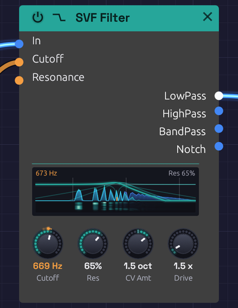
The response curve on the node is computed from the filter itself, so it matches what you hear.The SVF (state variable filter) is the all-purpose filter: one input, four outputs, all running at once. LowPass darkens, HighPass thins, BandPass keeps a band around the cutoff and Notch takes one out. Patch whichever you need, or several at once, without switching modes.
It is a 12 dB/octave filter with an analog-style resonance. Turn the resonance up and the peak grows and saturates rather than getting louder without limit; turn it all the way and the filter sings on its own as a clean sine at the cutoff. Cutoff moves in octaves, so a sweep sounds even from bass to treble, and it stays stable right up to 20 kHz.
The display draws each output's response, the patched ones lit and the rest faint (with nothing patched, LowPass is lit). With CV in Cutoff or Resonance, the curves follow where the CV has taken the filter, a faint copy stays where the knobs put it, and the cutoff's tick on the floor turns orange: an envelope into Cutoff opens and closes the curve with each note. When the resonance is high enough to ring on its own, the peak glows and the display says sings.
Beneath the curves lies the sound itself. What comes into In is a faint blue landscape, and what the lit output lets through is green over it, so the gap between them is what the filter is taking away, and a resonant peak shows where the green rises above the blue. It's scaled to the loudest part of what comes in, so a quiet sound fills the display as well as a loud one, and a polyphonic cable shows all its voices together. When the sound stops, the landscape sinks away and the curve's own glow fills in beneath it.
With CV in Cutoff or Resonance, a thin strip along the floor keeps the last two seconds of what comes out, newest at the top and falling away beneath, brighter where it's louder. As an LFO sweeps the cutoff up and back, each harmonic's column lights as the cutoff passes over it and dims as it moves on, so the sweep leaves its trail through the sound.
For a thicker, steeper lowpass, see the Ladder Filter.
Inputs
| Port | Signal Type | Description |
|---|---|---|
| In | Audio (Blue) | Audio to filter |
| Cutoff | Control (Orange) | Cutoff CV, in octaves: each unit moves the cutoff by CV Amt octaves. At the default of 1, +1 doubles the cutoff and -1 halves it: the V/Oct scale, so a keyboard's pitch tracks directly |
| Resonance | Control (Orange) | Adds to the Res knob: +1 adds 50% |
Cutoff and Resonance modulate around their knobs. The knob sets the center, and stays live while a cable is patched in.
Outputs
| Port | Signal Type | Description |
|---|---|---|
| LowPass | Audio (Blue) | Passes frequencies below the cutoff |
| HighPass | Audio (Blue) | Passes frequencies above the cutoff |
| BandPass | Audio (Blue) | Passes a band around the cutoff |
| Notch | Audio (Blue) | Removes a band around the cutoff and passes the rest |
Parameters
| Knob | Range | Default | Description |
|---|---|---|---|
| Cutoff | 20 Hz – 20 kHz | 1000 Hz | Where the filter starts cutting |
| Res (Resonance) | 0 – 100% | 50% | Peak at the cutoff. Self-oscillates above about 97% |
| CV Amt (Cutoff CV) | -4 – +4 oct | 1 oct | Octaves the cutoff moves per unit at the Cutoff input. Negative turns the CV upside down |
| Drive | 1x – 10x | 1x | Input gain into a soft saturator, for warmth and grit |
The four outputs
LowPass is the classic subtractive synth filter. It rolls off everything above the cutoff at 12 dB per octave, taking the edge off a bright oscillator. Most patches start here.
HighPass is the mirror image: it removes everything below the cutoff. Use it to thin a sound out, clear rumble, or leave room for a bass part.
BandPass keeps a band around the cutoff and rolls off both sides. The band narrows as resonance rises. It gives vocal, nasal and telephone-like tones, and swept by an envelope or LFO it becomes a wah.
Notch removes a band around the cutoff and leaves the rest. The notch is deepest exactly at the cutoff and narrows as resonance rises. It equals LowPass and HighPass added together. Swept slowly, it gives a phaser-like movement that hollows a sound without darkening it.
Resonance and self-oscillation
Resonance feeds part of the filter's output back into itself, which adds a peak at the cutoff. A little (20 to 40%) adds character; a lot (70 to 90%) gives the squelchy, whistling peak of an acid bassline. The feedback runs through a saturator, so a loud input at high resonance pushes back instead of running away.
Above about 97% the filter self-oscillates:
- It produces a sine at the cutoff frequency, with nothing patched into In. The oscillation grows out of a tiny noise floor, like circuit noise in an analog filter.
- The pitch lands within a few cents of the Cutoff knob, so the knob reads as a pitch.
- The saturator holds the level at about -12 dBFS.
- Patch a keyboard's Pitch into Cutoff and it plays in tune.
Feed audio in while it oscillates and the two interact, with the resonance pushing back against loud input.
CV Amt
CV Amt sets how far the Cutoff input reaches: how many octaves one unit of CV moves the cutoff. It runs from -4 to +4 octaves per unit, and starts at 1, the V/Oct scale.
An envelope runs from 0 to 1, so CV Amt is the size of its sweep, the knob a hardware synth calls Env Amount or Contour:
- 1 opens the filter one octave at the envelope's peak. Gentle: a sound that brightens a little at each note.
- 2 to 3 suits a pluck or a brassy swell.
- 3 to 4 is acid: a resonant peak that shoots up from the bass to the treble and falls back.
- Negative values turn the CV upside down. An envelope then closes the filter as the note starts and opens it again as it releases, so set the Cutoff knob high.
With pitch on Cutoff, CV Amt is the keyboard tracking: 1 keeps the filter's brightness the same on every note, 0.5 tracks at half the rate, and 0 ignores the keys.
CV Amt scales whatever is patched into Cutoff before it's added to the Cutoff knob, so the knob still sets where the sweep starts. With a polyphonic envelope, each voice's sweep is scaled the same way.
Drive
Drive raises the level into a soft saturator before the filter. At 1x it is nearly clean. Turning it up thickens the sound and then adds grit, and the louder signal also pushes harder against the resonance.
Patch examples
Basic filtering
[Oscillator Out (Saw)] ──> [SVF Filter In]
[SVF Filter LowPass] ──> [VCA In] ──> [Audio Output]
Start with the cutoff around 1000 Hz and Res at 20 to 40%, then turn the cutoff down for a darker sound.
Filter envelope
[Note In Gate] ──> [ADSR Gate]
[ADSR Out] ──> [SVF Filter Cutoff]
Set the Cutoff knob low (200 to 500 Hz) and CV Amt to 2 or 3. The envelope's 0-to-1 output raises the cutoff by up to CV Amt octaves as it plays, so the knob sets where the sweep starts and CV Amt how far it goes. Add resonance to make the sweep more pronounced. A fast attack and decay gives a pluck; a slow attack, a swell.
Keyboard tracking
[Note In Pitch] ──> [Oscillator V/Oct]
──> [SVF Filter Cutoff]
The filter follows the notes you play, so high notes are as bright as low ones. At the default CV Amt of 1 the Cutoff input is on the V/Oct scale, so no scaling is needed. Turn CV Amt down to 0.5 for half tracking, so high notes come out a little darker.
Parallel modes
[Oscillator Out] ──> [SVF Filter In]
[SVF Filter LowPass] ──> [Mix In 1]
[SVF Filter BandPass] ──> [Mix In 2]
[Mix Out] ──> [Audio Output]
Blending lowpass with a little bandpass gives body plus a resonant edge.
Moving notch
[Oscillator Out (Saw)] ──> [SVF Filter In]
[LFO Out (slow)] ──> [SVF Filter Cutoff]
[SVF Filter Notch] ──> [Audio Output]
A slow LFO sweeping the notch gives a phaser-like whoosh.
Polyphony
The SVF Filter is polyphonic. Each voice on a polyphonic cable gets its own filter, with its own resonance, so a chord into In with an envelope on Cutoff opens each note separately. The knobs are shared by every voice. See Polyphony.
Bypass
Click the power switch at the left of the header, choose Bypass from the module's right-click menu, or press Ctrl + B to take the filter out of the signal path. All four outputs then pass In straight through, and the header and controls dim. Switching takes a 20 ms crossfade, so it doesn't click.
Related modules
- Ladder Filter, the steeper, saturating lowpass
- ADSR Envelope to sweep the cutoff with each note
- LFO for wobbles and phaser sweeps
- Attenuverter to offset a cutoff sweep, or to scale one CV for several modules at once
Ladder Filter
Module ID filter.ladder · Category Filter
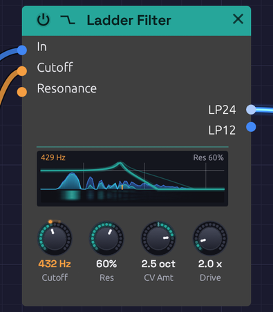
The ladder's response curve, drawn from the filter's own transfer function.The Ladder Filter models the transistor ladder Robert Moog patented in 1969: the filter behind the Minimoog, and still the sound most people mean by "analog". It is a 4-pole lowpass, built from four one-pole stages in a row, with the last stage's output fed back to the first to make the resonance.
What gives it its character:
- A steep 24 dB/octave slope that darkens a sound decisively, plus a gentler 12 dB/octave tap from the middle of the ladder.
- Saturation at every stage. Push it with Drive and it rounds off and thickens rather than clipping. The output never goes past full scale, however hard you drive it.
- Bass compensation. The original ladder loses low end as resonance rises. This one adds the lost bass back, so turning up the resonance adds a peak without thinning the sound.
- Self-oscillation over the top fifth of the resonance knob: a sine at the cutoff frequency, in tune to within a cent or two.
- 2x oversampling. The saturators run at twice the sample rate, so a high note driven hard stays clean instead of picking up inharmonic aliasing.
The display draws LP24 and LP12, the patched ones lit, at the cutoff and resonance CV has taken them to, as on the SVF Filter. Past the top fifth of Resonance, where the ladder rings on its own, the peak glows and the display says sings.
Beneath the curves lies the sound itself, as on the SVF: what comes in as a faint blue landscape, and what the lit output lets through in green over it. The green is measured rather than worked out from the curve, so the harmonics Drive adds show up too, as green rising where the blue was low.
With CV in Cutoff or Resonance, the strip along the floor keeps the last two seconds of what comes out, as on the SVF, so an envelope or LFO on the cutoff leaves its trail through the sound.
Inputs
| Port | Signal Type | Description |
|---|---|---|
| In | Audio (Blue) | Audio to filter |
| Cutoff | Control (Orange) | Cutoff CV, in octaves: each unit moves the cutoff by CV Amt octaves. At the default of 1, +1 doubles the cutoff and -1 halves it: the V/Oct scale, so a keyboard's pitch tracks directly |
| Resonance | Control (Orange) | Adds to the Res knob: +1 adds 50% |
Cutoff and Resonance modulate around their knobs. The knob sets the center, and stays live while a cable is patched in.
Outputs
| Port | Signal Type | Description |
|---|---|---|
| LP24 | Audio (Blue) | 4-pole lowpass, 24 dB/octave: the classic ladder sound |
| LP12 | Audio (Blue) | 2-pole lowpass, 12 dB/octave, tapped halfway down the same ladder. Brighter, with the same resonance |
Parameters
| Knob | Range | Default | Description |
|---|---|---|---|
| Cutoff | 20 Hz – 20 kHz | 1000 Hz | Filter cutoff frequency |
| Res (Resonance) | 0 – 100% | 50% | Peak at the cutoff. Self-oscillates above 80% |
| CV Amt (Cutoff CV) | -4 – +4 oct | 1 oct | Octaves the cutoff moves per unit at the Cutoff input. Negative turns the CV upside down |
| Drive | 1x – 10x | 1x | Input gain into the saturating stages |
Ladder or SVF?
Both filters cover the musical range, self-oscillate, and take cutoff CV in octaves, scaled by CV Amt. They differ in character:
| Ladder | SVF | |
|---|---|---|
| Slope | 24 dB/oct (and 12) | 12 dB/oct |
| Modes | Lowpass only | LowPass, HighPass, BandPass, Notch |
| Saturation | At every stage: thick, rounded | At the input and in the resonance |
| Self-oscillation | Top fifth of the knob, about -20 dBFS | Top few percent, about -12 dBFS |
Reach for the ladder for basses, leads and anything that should sound fat. Reach for the SVF Filter when you want the other modes, or a lighter, more transparent touch.
CV Amt
CV Amt sets how far the Cutoff input reaches: how many octaves one unit of CV moves the cutoff. It runs from -4 to +4 octaves per unit, and starts at 1, the V/Oct scale.
An envelope runs from 0 to 1, so CV Amt is the size of its sweep, the knob a hardware synth calls Env Amount or Contour:
- 1 opens the filter one octave at the envelope's peak. Gentle: a sound that brightens a little at each note.
- 2 to 3 suits a pluck or a brassy swell.
- 3 to 4 is acid: a resonant peak that shoots up from the bass to the treble and falls back.
- Negative values turn the CV upside down. An envelope then closes the filter as the note starts and opens it again as it releases, so set the Cutoff knob high.
With pitch on Cutoff, CV Amt is the keyboard tracking: 1 keeps the filter's brightness the same on every note, 0.5 tracks at half the rate, and 0 ignores the keys.
CV Amt scales whatever is patched into Cutoff before it's added to the Cutoff knob, so the knob still sets where the sweep starts. With a polyphonic envelope, each voice's sweep is scaled the same way.
Drive
At 1x, a full-scale signal is already warmed slightly. Around 2x to 4x the ladder thickens audibly and the resonance takes on a growl. At 10x it is a distortion in its own right. The level stays roughly constant as you turn Drive up, because the saturating stages cap it.
Self-oscillation
Turn Res above about 80%. With nothing patched into In, a sine rises out of a tiny noise floor (like the hiss of real components) within a second or so. Its pitch is the Cutoff knob, accurate to a cent or two from bass to treble, and the same saturators that shape the sound hold it at about -20 dBFS.
Feed audio in while it oscillates and the two fight, with the classic squelch.
Patch examples
Fat bass
[Oscillator Out (Saw)] ──> [Ladder Filter In]
[Ladder Filter LP24] ──> [VCA In] ──> [Audio Output]
A saw through LP24 with the cutoff at a few hundred Hz is the classic fat bass. Switch to LP12 for a brighter, buzzier version of the same sound.
Envelope sweep
[Note In Gate] ──> [ADSR Gate]
[ADSR Out] ──> [Ladder Filter Cutoff]
The envelope's 0-to-1 output raises the cutoff by up to CV Amt octaves above the knob. Set the knob where the sweep should start and CV Amt to how far it should go, then add resonance and a little Drive to make it bite. For a 303-style squelch, try Cutoff 300 Hz, Res 80%, CV Amt 3 and a 300 ms decay.
Keyboard tracking
[Note In Pitch] ──> [Oscillator V/Oct]
──> [Ladder Filter Cutoff]
At the default CV Amt of 1, the Cutoff input is 1 per octave, so a pitch CV patched straight in keeps the filter's brightness the same on every note. With the resonance high enough to self-oscillate and nothing patched into In, this turns the ladder into a sine oscillator that plays in tune.
Starting points
| Sound | Cutoff | Res | Drive | Cutoff input | Output |
|---|---|---|---|---|---|
| Fat bass | 200 – 400 Hz | 30% | 2x | Nothing | LP24 |
| Squelchy acid | 250 – 400 Hz | 70 – 80% | 3x | An envelope, CV Amt 3 | LP24 |
| Buzzy lead | 1 – 3 kHz | 40% | 1.5x | An envelope, CV Amt 1 – 2 | LP12 |
| Warm pad | 600 Hz | 20% | 1x | A slow LFO, CV Amt 0.5 | LP24 |
| Sine voice | Played from the keyboard | 90% | 1x | Pitch, CV Amt 1 | LP24, nothing in In |
Polyphony
The Ladder Filter is polyphonic. Each voice on a polyphonic cable gets its own ladder, with its own resonance and saturation, and the knobs are shared by every voice. See Polyphony.
Bypass
Click the power switch at the left of the header, choose Bypass from the module's right-click menu, or press Ctrl + B. Both outputs then pass In straight through, with a 20 ms crossfade so the switch doesn't click.
Technical notes
- Each stage is a one-pole lowpass with a
tanhat its input. The first stage's input is the signal minus the fed-back output, so the sametanhsaturates the resonance. The loop is solved with zero delay (TPT), with the saturators linearized around a one-pass estimate of the current sample. That keeps the resonance in tune at high cutoffs. - The oversampler uses polyphase IIR halfband filters: flat to within 0.01 dB up to 20 kHz, with about 100 dB of stopband. In tests, a 5 kHz tone driven into the filter has 30 to 55 dB less audible aliasing than the same filter run at the base rate. At extreme Drive combined with high resonance the gain is smaller (about 10 dB), because the harmonics reach beyond even twice the sample rate.
Related modules
- SVF Filter, the multi-mode, lighter-touch filter
- Oscillator, the usual thing to filter
- ADSR Envelope to sweep the cutoff with each note
- LFO for wobbles and sweeps
- Library: Acid Bass and Subtractive Voice are ladders with an envelope on Cutoff, and CV Amt on their faces
ADSR Envelope
Module ID mod.adsr · Category Modulation
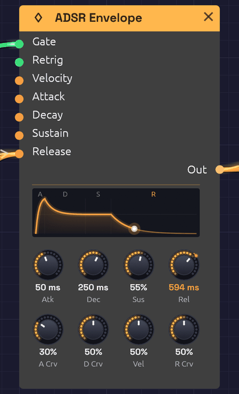
The display draws the same curve the audio follows. An LFO is patched into Release, so the R is lit and Rel reads the time it has stretched to.The ADSR Envelope gives each note a shape in time. When a gate goes high (a key goes down), it rises, falls to a held level, and when the gate goes low (the key comes up), it fades away: Attack, Decay, Sustain, Release. Patch it into a VCA to shape a note's loudness, or into a filter's Cutoff to shape its brightness.
Every stage takes exactly the time on its knob: a 100 ms release is silent 100 ms after you let go. Each stage's curve knob sets its shape, from a straight line to a deep analog curve.
While a note plays, the display follows it: the stage it's in lights its letter, a dot rides the curve at the envelope's level, and the glow under the curve swells with it. A soft note's dot rides lower, at the peak its velocity gave it.
Inputs
| Port | Signal Type | Description |
|---|---|---|
| Gate | Gate (Green) | A rising edge starts the attack; a falling edge starts the release |
| Retrig | Gate (Green) | While the gate is held, a rising edge restarts the attack from the current level |
| Velocity | Control (Orange) | Note velocity (0.0 to 1.0), read at each note-on. Scales the peak; see Vel |
| Attack, Decay, Release | Control (Orange) | Stretch the stage's time around its knob, in octaves: +1 doubles it, −1 halves it. See Stage CV |
| Sustain | Control (Orange) | Added to the Sus knob's level |
Outputs
| Port | Signal Type | Description |
|---|---|---|
| Out | Control (Orange) | Envelope level, 0.0 to 1.0 |
Parameters
The knobs sit in two rows: the times and level on top, and under each time the curve of that stage.
| Knob | Range | Default | Description |
|---|---|---|---|
| Atk (Attack) | 1 ms – 10 s | 10 ms | Time to rise from the current level to the peak |
| Dec (Decay) | 1 ms – 10 s | 100 ms | Time to fall from the peak to the sustain level |
| Sus (Sustain) | 0 – 100% | 70% | Level held while the gate is high, as a fraction of the peak |
| Rel (Release) | 1 ms – 10 s | 300 ms | Time to fall from the current level to 0 after the gate goes low |
| A Crv (Attack Curve) | 0 – 100% | 20% | Attack shape: 0% is a straight ramp, higher bows it outward |
| D Crv (Decay Curve) | 0 – 100% | 50% | Decay shape: 0% is a straight ramp, higher drops fast then eases in |
| Vel (Velocity Amount) | 0 – 100% | 50% | How much the Velocity input scales the peak |
| R Crv (Release Curve) | 0 – 100% | 50% | Release shape: 0% is a straight ramp, higher drops fast then trails off |
The four stages
Attack begins when the gate goes high. The envelope rises from where it is (0, or wherever a release had got to) to its peak in exactly the attack time. A few milliseconds gives a percussive start; tens of milliseconds, the soft start of strings or a bowed pad; hundreds, a slow swell.
Decay begins the moment the attack reaches the peak. The envelope falls to the sustain level in exactly the decay time. Short decays are plucky; long ones ease gradually into the held note.
Sustain is a level, not a time: what the envelope holds for as long as the gate stays high. At 0% the note dies away even with the key held, like a plucked string. At 100% it holds at full level, like an organ. Turning it while a note is held glides to the new level over a few milliseconds, so it never clicks.
Release begins when the gate goes low. The envelope falls from wherever it is to 0 in exactly the release time, even if the key was let go mid-attack. Short releases stop abruptly; long ones leave a tail that lingers after the key comes up.
Curves
Each stage is an analog-style RC curve aimed past its target, so that it lands on time instead of creeping toward the target forever. The curve knob sets how far past:
- 0%: aimed far past, so the stage is a straight line.
- 20% (the attack default): aimed about 15% past the peak. The rise is nearly straight, which is what makes an analog attack sound punchy.
- 50% (the decay and release default): a classic RC fall. It drops quickly, then eases into its target, which suits how the ear hears loudness.
- 100%: a deep curve. Most of the change happens in the first fifth of the stage, followed by a long tail.
Curves change only the shape of a stage. Its time stays exactly the knob's.
Velocity
Patch a velocity source (the Velocity output of Note In) into Velocity, and the Vel knob sets how much it matters:
- Vel 0%: every note peaks at 1.0.
- Vel 50%: the softest note peaks at 0.5 and the hardest at 1.0.
- Vel 100%: the peak equals the velocity.
Sustain is a fraction of the peak, so a soft note sustains lower too. With velocity patched, the node's display draws a faint second envelope for the softest note. The gap between the two lines is your dynamic range.
With nothing patched into Velocity, every note peaks at 1.0, whatever the knob says.
Stage CV
Each stage has a jack beside its knob. CV there moves the stage around where the knob puts it, so the knob stays the starting point and the cable bends it:
- Attack, Decay and Release count in octaves of time. +1 doubles the knob's time, +2 quadruples it, and −1 halves it. A 500 ms release with +3 patched in rings for 4 s. The time stays within the knob's 1 ms – 10 s.
- Sustain adds to the knob's level, so +0.3 lifts a 40% sustain to 70%.
Most CV swings between −1 and +1, so an LFO patched straight into Attack only halves and doubles the attack. A 10 ms attack moves between 5 and 20 ms, which is hard to hear. To sweep it further, scale the LFO up first through an Attenuverter set to Range ×4. At ±4 octaves a 50 ms attack moves from about 3 ms to 0.8 s, from a snap to a swell.
The envelope reads CV on every sample, not just at each note. A cue that lands while a release is already falling stretches what's left of it, and the curve bends there without a step.
While a stage's jack is patched, its knob shows where the CV has taken it: an orange arc out to a bead on its rim, and the number under the knob in orange. The display draws that stage the way the envelope is running it, with its letter tinted. When a lane ramps the release out, you can watch the tail widen.
Patch examples
Volume envelope
[Note In Gate] ──> [ADSR Gate]
[ADSR Out] ──> [VCA CV]
[Oscillator Out] ──> [VCA In] ──> [Audio Output]
The basic shaped note. Without an envelope, an oscillator plays one endless tone.
Two envelopes: loudness and brightness
[Note In Gate] ──> [ADSR 1 Gate]
──> [ADSR 2 Gate]
[ADSR 1 Out] ──> [VCA CV]
[ADSR 2 Out] ──> [SVF Filter Cutoff]
Separate envelopes let the brightness move independently of the volume: a long release on ADSR 1 for sustained notes, and a short decay on ADSR 2 for a bright pluck at the start of each one.
Velocity to brightness
[Note In Velocity] ──> [ADSR 2 Velocity]
Add this to the two-envelope patch and harder notes come out brighter but no louder.
Inverted envelope
[ADSR Out] ──> [Attenuverter In] (Amount -1)
[Attenuverter Out] ──> [SVF Filter Cutoff]
The filter closes as the note opens and opens again as it releases, for "backwards" sweeps. On a filter you can skip the Attenuverter: patch the envelope straight into Cutoff and turn the filter's CV Amt below zero.
Harder notes ring longer
[Note In Velocity] ──> [ADSR Velocity]
──> [ADSR Decay]
A struck string rings longer when it's struck harder. With a short decay and no sustain, velocity into Decay gives a full-strength note twice the knob's decay and the softest one the knob's own. For a gentler spread, run velocity through an Attenuverter first. Pitch CV into Decay through an Attenuverter turned below zero makes high notes shorter, the way a piano's are.
Afterglow's arpeggio does this, with an Attenuverter's Offset at −0.5 so that only notes played harder than half ring longer. Its gate closes partway through the decay, so velocity goes to Release too.
A last chord that rings
[Arranger Lane 3] ──> [ADSR Release]
The plucks keep their short release all song. In the last section a lane rises from 0 to 1 or 2 and holds, and the final chord rings for a second or more instead of a few hundred milliseconds. Ramp the lane so the tails lengthen as the song slows.
Retriggering a held note
[Clock Gate] ──> [ADSR Retrig]
While the key is held, each clock pulse restarts the attack from the current level, re-articulating the note in rhythm.
Starting points
| Shape | Attack | Decay | Sustain | Release | Notes |
|---|---|---|---|---|---|
| Pluck | 1 ms | 200 ms | 0% | 100 ms | D Crv toward 80% for a sharper snap |
| Pad | 500 ms | 1 s | 70% | 2 s | A Crv near 0% for an even swell |
| Organ | 1 ms | 10 ms | 100% | 50 ms | |
| Brass | 100 ms | 300 ms | 80% | 200 ms | The attack is the breath |
| Percussion | 1 ms | 100 ms | 0% | 50 ms |
Polyphony
The ADSR Envelope is polyphonic. Patch a polyphonic gate (from Note In) into Gate and every voice gets its own envelope, with its own stage and level, so each note of a chord attacks and releases on its own. Polyphonic velocity into Decay gives each note its own decay; a mono cable, like an Arranger lane, moves every voice together. The display shows the first voice. See Polyphony.
Related modules
- VCA to shape loudness with the envelope
- SVF Filter and Ladder Filter to shape brightness
- Note In for gates and velocity
- LFO for modulation that repeats instead of following the note
- Slope for an envelope a trigger plays whole, however short the trigger
LFO
Module ID mod.lfo · Category Modulation
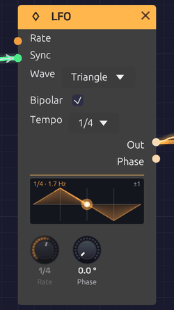
Synced to 1/4: the Rate knob reads the division, and the dot rides the waveform in step with the beat.The LFO (low-frequency oscillator) makes slow, repeating shapes for moving other modules: a filter that breathes, a vibrato, a tremolo, a pulse width that drifts. It runs from one cycle every 100 seconds up to 100 Hz, so it can also be pushed into the audio range for rough, buzzy modulation.
The display on the node draws one cycle of the selected waveform, with a dot that travels along it at the LFO's actual phase, trailing a brighter stretch of the curve behind it. What you see is where the modulation is right now. Bipolar swings about a centre line; with Bipolar off, the wave stands on the floor, since it never goes below 0. A tick on the floor marks where the Phase knob starts the cycle. Across the top it reads the rate, after any Rate CV, or the division and the rate it comes to.
Inputs
| Port | Signal Type | Description |
|---|---|---|
| Rate | Control (Orange) | Rate CV, 1 per octave: +1 doubles the rate, -1 halves it |
| Sync | Gate (Green) | A rising edge restarts the cycle |
Outputs
| Port | Signal Type | Description |
|---|---|---|
| Out | Control (Orange) | The modulation signal: -1 to 1 when Bipolar is on, 0 to 1 when it's off |
| Phase | Control (Orange) | Position in the cycle, as a ramp from 0 to 1 |
Parameters
| Control | Range | Default | Description |
|---|---|---|---|
| Rate | 0.001 – 100 Hz | 1 Hz | Speed of the cycle. The knob is logarithmic, and its slowest turn is a cycle of nearly 17 minutes: a tide under a whole song |
| Phase | 0 – 360° | 0° | Shifts where in the cycle the waveform starts |
| Wave | Sine / Triangle / Square / Saw | Sine | Dropdown on the node |
| Bipolar | On / Off | On | Checkbox on the node. On swings -1 to 1; off stays between 0 and 1 |
| Tempo | Off, 4 bars – 1/32, dotted, triplet | Off | Dropdown on the node. Off runs free at Rate; a division locks the cycle to the Clock's beat |
Waveforms
- Sine moves smoothly with no corners. The natural choice for vibrato, tremolo and slow sweeps.
- Triangle rises and falls in straight lines. It sounds steadier than a sine at the turnarounds.
- Square jumps between its two extremes, half the cycle at each. Use it for trills, choppy tremolo and two-step filter jumps.
- Saw ramps steadily up, then drops back. A rising sweep that resets each cycle.
At the start of a cycle the sine and triangle sit at the midpoint, heading up, the square is high, and the saw is at its lowest.
Bipolar and unipolar
With Bipolar on (the default), Out swings evenly around zero. Into a filter's Cutoff or an oscillator's V/Oct, that sweeps both above and below the knob's setting, which is what you want for vibrato.
With Bipolar off, Out stays between 0 and 1: the same shape, lifted and halved. Use it where modulation should only add, as with a VCA's CV, where a bipolar LFO would spend half its cycle silent.
Tempo sync
Set Tempo to a division and the LFO locks to the patch's beat: one cycle per division, in step with the Clock. A 1 bar LFO sweeps once a bar; a 1/8 tremolo pulses on every eighth note. Change the Clock's tempo and the LFO follows, and if the Clock follows a MIDI clock, so does the LFO.
| Tempo | One cycle every | At 120 BPM |
|---|---|---|
| 4 bars, 2 bars, 1 bar | 16, 8 or 4 beats | 8 s, 4 s, 2 s |
| 1/2, 1/4, 1/8, 1/16, 1/32 | 2, 1, ½, ¼ or ⅛ of a beat | 1 s to 62.5 ms |
| D (dotted) | One and a half times the plain length | 1/4D = 750 ms |
| T (triplet) | Two thirds of the plain length, three in the time of two | 1/4T = 333 ms |
A synced LFO doesn't count its own cycles. It reads where the Clock's beat is, so it can't drift, however long it runs, and every synced LFO in the patch moves in step with the others. The cycles start on the Clock's downbeat: when the Clock starts from the top, so does the LFO.
While synced:
- The Rate knob dims and reads the division. Its pointer shows the rate that comes to at the current tempo.
- Rate CV has no effect.
- Sync still restarts the cycle, and the cycles then run from that moment, at the division's length, until the Clock starts from the top again.
- Phase still shifts the waveform, so a 1 bar LFO at 90° peaks on the downbeat.
- When the Clock stops, the LFO holds where it is, and carries on when the Clock does.
- Without a Clock in the patch, the LFO keeps its own time at 120 BPM.
Set Tempo back to Off and the LFO runs free at Rate, from the point it had reached.
Rate CV
The Rate input works in octaves, like V/Oct. +1 doubles the rate, +2 quadruples it, -1 halves it. The knob stays live while it's patched and sets the base rate the CV works from, so you can keep turning it.
[LFO 2 (slow)] ──Out──> [LFO 1 Rate]
A slow LFO into another's Rate makes modulation that speeds up and slows down on its own.
Sync and phase
Each rising edge at Sync restarts the cycle from the Phase setting. Patch a Clock into it and the LFO starts over on every pulse. To keep an LFO in time with the beat, though, Tempo is simpler and never drifts between pulses.
Phase shifts the starting point. Two LFOs at the same rate, one at 0° and one at 180°, move in opposite directions; at 90° they chase each other.
The Phase output is the LFO's position in its cycle, a 0-to-1 ramp whatever waveform is selected. Use it as an extra rising sawtooth, unipolar, alongside Out.
Patch examples
Vibrato
[LFO Out] ──> [Oscillator Exp FM]
Rate around 5 to 6 Hz, Sine, Bipolar on. Turn the oscillator's Exp FM knob down to about 0.02 octaves (Shift-drag for fine steps) for a gentle ±24 cents.
Tremolo
[Oscillator Out] ──> [VCA In]
[LFO Out] ──> [VCA CV]
Rate 4 to 8 Hz, Sine or Triangle, Bipolar off, so the level dips and returns rather than cutting out for half of each cycle.
Filter sweep
[LFO Out] ──> [SVF Filter Cutoff]
The Cutoff input works in octaves, so a bipolar LFO at full level sweeps the filter's CV Amt octaves either side of the knob: one, at first. A slow Triangle gives a smooth wah; a Square jumps between two brightnesses. Turn CV Amt down to sweep less, or up to sweep more.
A filter that breathes with the bar
[LFO Out] ──> [SVF Filter Cutoff]
Tempo 1 bar, Sine. The filter opens and closes once a bar, wherever the Clock's tempo goes. Try 2 bars for a slower swell, or a Square at 1/8 for a gated rhythm.
Pulse-width modulation
[LFO Out] ──> [Oscillator PWM]
With the oscillator on Square, a slow LFO (0.3 to 2 Hz) makes the tone shimmer and thicken like a chorus.
Stepped random
[LFO Out (fast Triangle)] ──> [Sample & Hold In]
[Clock Gate] ──> [Sample & Hold Trig]
Each Clock pulse freezes wherever the LFO happens to be, and Sample & Hold holds that value until the next one. Set the LFO's rate so it isn't a simple multiple of the Clock's and the steps take a long time to repeat. (The trigger has to be a gate: an LFO can't patch into Trig.)
Notes
- The LFO is monophonic. One LFO patched into a polyphonic module moves every voice together. See Polyphony.
- The Rate and Phase knobs are smoothed, so turning them while the LFO runs doesn't click or jump.
- Run up into the audio range with Rate CV (it goes to 1 kHz), the LFO still sounds clean: the Square's and Saw's jumps, the Triangle's corners and each Sync restart are smoothed over a few samples, so they don't alias or click. At ordinary rates that touches only the samples right at each edge.
- Pressing Play starts every LFO from the beginning of its cycle.
- See Tempo and Sync for how the patch's tempo and beat reach the LFO.
Related modules
- ADSR Envelope for modulation that follows each note instead of repeating
- Clock, which sets the beat a synced LFO follows
- Attenuverter to scale, invert or offset the LFO
- Sample & Hold for stepped patterns
- Slope for a cycle with its rise and fall set apart, from a ramp through a triangle to a saw
Slope
Module ID mod.slope · Category Modulation · Polyphonic
 Cycling, with a 1.2 s rise and a 400 ms fall, Shape 0.5. The dot is on its way down the fall, which is lit, and EOR glows until the fall ends.
Cycling, with a 1.2 s rise and a 400 ms fall, Shape 0.5. The dot is on its way down the fall, which is lit, and EOR glows until the fall ends.
A Slope rises and falls at rates you set. That one idea does four everyday jobs. Patch a signal into In and Out follows it, slowly or quickly: slew, glide, portamento, lag. A gate into In makes that an attack-release envelope. A trigger into Trig plays one whole rise and fall, however short the trigger: a function generator. Turn on Cycle and each fall starts the next rise: an LFO whose rising and falling halves you set apart. It is the slope generator from a Make Noise Maths, where all four are one circuit.
The node draws the rise and the fall side by side, each as wide as its share of the time, both bent by Shape. A dot rides the curve where the slope is, the stage it's in lights up, and the glow under the curve swells with Out, so a cycling Slope breathes. Above, the two times, and the rate when it cycles.
Inputs
| Port | Signal Type | Description |
|---|---|---|
| In | Control (Orange) | A signal to follow. Out moves toward it at the Rise rate going up and the Fall rate going down, and rests on it exactly once it gets there |
| Trig | Gate (Green) | A rising edge runs one full rise to 1 and fall back to In (0 if nothing is patched), however short the trigger. A trigger mid-fall turns round and rises from where it is |
| Rise | Control (Orange) | CV around the Rise knob, exponential: +1 halves the time, -1 doubles it |
| Fall | Control (Orange) | CV around the Fall knob, the same way |
| Cycle | Gate (Green) | While high, every fall starts a new rise. Patched, it takes over from the Cycle switch |
Outputs
| Port | Signal Type | Description |
|---|---|---|
| Out | Control (Orange) | The slope: 0 to 1 from a trigger or a cycle, or following In in In's own range, a pitch or a bipolar signal included |
| EOR | Gate (Green) | End of rise: high from the top of each rise until the fall ends. A new rise turns it off |
| EOC | Gate (Green) | End of cycle: a 1 ms pulse each time a fall ends, on the sample it ends. Cycling, that's once per cycle |
Parameters
| Control | Range | Default | Description |
|---|---|---|---|
| Rise | 1 ms – 20 s | 100 ms | The time to rise from 0 to 1. The knob is logarithmic |
| Fall | 1 ms – 20 s | 300 ms | The time to fall from 1 to 0 |
| Shape | -1 – 1 | 0 | The curve of both stages: -1 log, 0 linear, 1 exponential |
| Cycle | On / Off | Off | Checkbox on the node. On starts a new rise at the end of every fall |
How it works
Rates, not times
Rise and Fall are rates: the time to move a whole unit, from 0 to 1. A trigger always runs a whole unit, so its rise takes exactly Rise and its fall exactly Fall. Following In, a smaller move takes less time: half a unit takes half the time. Pitch is in octaves, so with Rise at 60 ms an octave leap glides in 60 ms and a semitone in 5 ms. That's the analog way, and it's different from the Glide on Note In, which takes the same time for any interval.
With the linear Shape, Out moves at a constant rate. When it reaches In it stops on it exactly, to the last bit, and stays there for as long as In holds still.
A trigger, a gate, and In
Trig sends the slope up to 1 and back down to In. It doesn't matter how long the trigger lasts: a single sample plays the whole shape, so a sequencer's gate length no longer shapes the sound. A trigger that arrives mid-fall starts a new rise from where Out is, with no jump.
A gate into In behaves differently. Out rises toward 1 while the gate is high, holds there, and falls when the gate goes low: an attack-release envelope that sustains for as long as you hold the note.
Trig: _|‾|____________________ In: __|‾‾‾‾‾‾‾‾‾‾|_________
Out: _/‾‾‾\__________________ Out: __/‾‾‾‾‾‾‾‾‾‾‾‾\_______
EOR: ____|‾|_________________ EOR: ____|‾‾‾‾‾‾‾‾‾‾‾|______
EOC: _______|‾|______________ EOC: _________________|‾|___
Shape
Shape bends both stages the same way, without changing how long they take.
- -1, log: the rise shoots up and eases in at the top; the fall eases off the top and drops to the bottom.
- 0, linear: straight lines, at a constant rate.
- 1, exponential: the rise starts slowly and accelerates; the fall drops fast and tails off, the way a struck sound decays. This is the shape for drums and plucks.
Turning Shape while the slope moves never makes Out jump: only the road ahead bends. Outside 0 to 1, where a pitch or a bipolar signal can take Out, the slope is always a straight line.
Cycle
With Cycle on, the end of each fall starts the next rise, so the Slope runs as an LFO at 1 / (Rise + Fall): 2 Hz at the defaults' 100 ms and 300 ms. Each stage ends between samples, and the next starts from exactly there, so the period is exact and doesn't drift, after ten minutes as after ten seconds. Turn Cycle off and the run in progress finishes its fall and stops.
Patches
Glide on a sequence
[Step Sequencer Pitch] ──> [Slope In] (Rise 60 ms, Fall 60 ms, Shape 0)
[Slope Out] ──> [Oscillator V/Oct]
Every note slides into the next: an octave in 60 ms, a fifth in 35 ms. Set Rise and Fall apart for a line that swoops up and drops down, or the other way round. Rhythmic Sequence has this as a variation. Because it's polyphonic, a chord from Note In glides voice by voice, each at its own pace.
Trigger drums
[Step Sequencer Gate] ──> [Slope Trig] (Rise 1 ms, Fall 450 ms, Shape 1)
[Slope Out] ──> [VCA CV]
A snap up and an exponential decay, from any length of gate. With an ADSR, a gate that falls during the attack sends it straight to release, so a short trigger can't play a long envelope; a Slope can.
A skewed LFO
Slope: Cycle on, Rise 2 s, Fall 50 ms
[Slope Out] ──> [VCA CV]
A slow swell that drops away, every 2.05 s. Turn Rise and Fall the other way round for a ramp down, or set them equal for a triangle.
A bouncing ball
[Clock Gate] ──> [Slope "Energy" Trig] (Energy: Rise 1 ms, Fall 2.5 s; Clock 20 BPM, Div 1)
[Energy Out] ──> [Attenuverter In] (Amount -1, Offset 1)
[Attenuverter Out] ──> [Mix In 1] [Mix In 2]
[Mix Out] ──> [Slope "Bounce" Rise] [Bounce Fall] (Bounce: Rise 150 ms, Fall 150 ms)
[Energy EOR] ──> [Bounce Cycle]
[Bounce EOC] ──> [Drum Trig] (Rim, Tune 7 st)
[Energy Out] ──> [Drum Accent]
One Slope is the ball's energy, draining away over 2.5 s. While it drains, its EOR keeps the second Slope cycling, and the second's EOC taps the drum once a bounce. As the energy falls, the Attenuverter turns it upside down and the Mix doubles it, so the CV into the bounce's times climbs and the bounces close up, from a gap of 240 ms to about 110 ms, while the Accent lets each one land softer. A patch can't feed a module back into itself, so the ball's energy lives in a Slope of its own.
An envelope follower
[Drum Out] ──> [Slope In] (Rise 5 ms, Fall 1 s)
[Slope Out] ──> [VCA CV]
Out climbs to each peak of the sound and sinks slowly between them, so a second sound swells and fades with the drum. Fall is the time for a whole unit, so from a peak of 0.3, Out is back to zero in 300 ms. Lengthen Fall for a slower release. For a microphone or guitar, the Audio Input's Follow output does this already.
A delayed trigger, and a delayed gate
[Clock Gate] ──> [Slope Trig] (Rise 300 ms, Fall 10 ms, Shape 0)
[Slope Out] ──> [Logic CV] (Threshold 0.9)
[Logic Above] ──> [Drum Trig]
Each clock pulse starts a rise, and Logic's Above goes high when it crosses the Threshold, 270 ms later: each hit delayed by Rise × Threshold.
Patch the gate into In instead of Trig, and Out holds at the top for as long as the gate is high. Then Above is the same gate, opening 270 ms late and closing 1 ms after the gate does (the Fall, from the top down to the Threshold). Turn Rise to set the delay.
Related modules
- ADSR Envelope: four stages, following a gate
- LFO: fixed shapes, and tempo sync
- Sample & Hold: its Slew glides between held values
- Logic: turns a slope into a gate
- Clock Divider: longer gaps between triggers
Stereo Delay
Module ID fx.delay · Category Effect
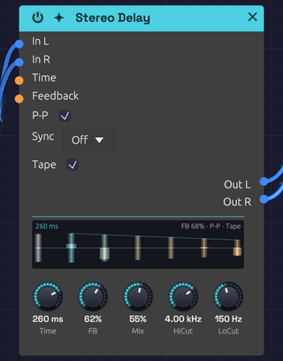
A clap into the left side only, ping-ponged on worn tape: the first echo lights on the left, the second comes back on the rightThe Stereo Delay plays back a copy of its input a moment later, then feeds that copy back in to make repeats. Filters in the feedback path darken or thin each repeat, P-P bounces the repeats between left and right, and Sync locks the time to the patch tempo.
Switch on Tape and it becomes a worn tape echo: the repeats waver in pitch, saturate as they build, and get darker each time around. Push the feedback far enough and they run away into the classic dub swell. The Tape module puts the same machine on a whole bus.
How it works
- Each channel is written into its own delay line.
- A read head plays the line back Time later. Reads usually fall between two samples, and a cubic (Catmull-Rom) interpolator fills the gap, so time changes and modulation glide smoothly instead of clicking or dulling the highs.
- The playback runs through HiCut and LoCut, is scaled by FB, and goes back into the line with the input. Each repeat passes through the filters once more than the one before it.
- Mix blends the dry input with the playback.
The display
The display draws the train of echoes. Time runs to the right from the moment a sound goes in. The first bar is the dry sound, and after it come the echoes, one delay time apart. Each echo is as loud as the feedback leaves it, on a decibel scale so a long tail stays readable. The left channel stands above the centre line and the right hangs below it.
- Filters. Every repeat passes HiCut and LoCut once more, so each bar is a little warmer than the one before and a little thinner. Tape mode adds the tape's own darkening.
- The sound going through. Each echo lights as the sound coming in reaches it, so a hit visibly walks down the train and fades. An echo lit to the top of its bar is as loud as the loudest thing that came in.
- Ping-Pong. With P-P on, the echoes take turns: each side's second echo is the other side's first, come back across. It shows best with something only on one side, or a stereo source.
- Tape. The bars blur and sway with the wow. Past unity, the feedback runs away and the header says so in orange.
- Words. The top left gives the time, with the note length when Sync sets it, in orange while Time CV moves it. The top right gives the feedback and the switches that are on.
Inputs
| Port | Signal Type | Description |
|---|---|---|
| In L | Audio (Blue) | Left input |
| In R | Audio (Blue) | Right input. When unpatched, it copies In L |
| Time CV | Control (Orange) | Stretches or shrinks the delay time around the knob: ±1 swings it by ±50% |
| Feedback CV | Control (Orange) | Adds to the feedback around the knob: ±1 adds ±50% |
Outputs
| Port | Signal Type | Description |
|---|---|---|
| Out L | Audio (Blue) | Left echoes, mixed with the dry signal |
| Out R | Audio (Blue) | Right echoes, mixed with the dry signal |
Parameters
| Control | Range | Default | Description |
|---|---|---|---|
| Time | 1 ms – 2000 ms | 500 ms | Time between echoes. Ignored while Sync is on |
| FB (Feedback) | 0 – 100% | 50% | How much of each repeat comes back |
| Mix | 0 – 100% | 50% | Dry (0%) to echoes only (100%) |
| HiCut | 100 Hz – 20 kHz | 10 kHz | Lowpass in the feedback path: darkens each repeat |
| LoCut | 20 Hz – 2 kHz | 20 Hz | Highpass in the feedback path: thins each repeat |
| P-P (Ping-Pong) | On / Off | Off | Each repeat crosses to the other channel |
| Sync | Off, 1/4, 1/8, 1/8T, 1/16, 1/16T, 1/32, 1/4D, 1/8D | Off | Locks the time to a note length at the patch tempo |
| Tape | On / Off | Off | Tape echo character (see Tape mode) |
Time and FB keep working while their CV inputs are patched: the knob sets the center and the CV moves around it.
Feedback
In normal mode, feedback stops at 95%, and a soft clipper in the loop keeps the echoes from growing out of control. Around 30% gives a few echoes that fade naturally; 60% gives long trails; the top of the knob repeats almost forever.
In Tape mode the knob reaches further. See Runaway.
Tempo sync
Set Sync to a note length and the delay time follows the patch tempo. A Clock anywhere in the patch sets that tempo, so turning the Clock's BPM knob moves the echoes with it; they glide to the new time with a brief bend in pitch. With no Clock in the patch, the delay assumes 120 BPM. If a patch has more than one Clock, only one of them sets the tempo, so keep one Clock as the master.
| Division | Beats | At 120 BPM |
|---|---|---|
| 1/4D | 1½ | 750 ms |
| 1/4 | 1 | 500 ms |
| 1/8D | ¾ | 375 ms |
| 1/8 | ½ | 250 ms |
| 1/8T | ⅓ | 167 ms |
| 1/16 | ¼ | 125 ms |
| 1/16T | ⅙ | 83 ms |
| 1/32 | ⅛ | 62.5 ms |
Synced times can run past the Time knob's 2 seconds, up to 4.5 seconds: long enough for 1/4D at the Clock's slowest 20 BPM, so every division stays on the beat. Time CV still works while synced, swinging the synced time.
Tape mode
Tape models a tape echo: a loop of tape passing a record head and a play head. Switching it crossfades in about 15 ms, so you can flip it while echoes are still sounding.
Wow and flutter. The play head wanders. A slow wow (about 0.5 Hz, plus a slower drift of the reel) and a fast flutter (6 to 10 Hz) bend the pitch of the repeats by a few cents. The four motions run at unrelated rates, so the pattern doesn't loop.
Record-head saturation. The input and the feedback are recorded together through a soft, slightly lopsided curve. Quiet signals pass unchanged; loud ones round off and pick up the even harmonics of magnetized tape. Because the saturation sits inside the loop, a busy echo squashes and thickens as it builds.
Tape loss. Tape loses top end every time it records, so each repeat is darker than the last. Longer delays mean slower tape and darker repeats: the loss starts around 7 kHz at 250 ms and falls to about 3.5 kHz at one second. HiCut still works on top of it.
Motor glide. Time changes glide over about a quarter of a second, like a motor finding its new speed, and the repeats swoop in pitch as they go.
Runaway
In Tape mode, FB above about 90% pushes the loop past unity gain. The echoes grow until the record head's saturation holds them: the dub runaway. The output stays bounded at any setting, so you can ride it. Pull FB back below 90% and the echoes die away again.
Bypass
Click the power switch in the node header, press Ctrl+B with the module selected, or choose Bypass from its right-click menu. In L passes straight to Out L and In R to Out R (In R still copies In L when unpatched). The switch crossfades over 20 ms. A bypassed delay stops running, and it starts from silence when you switch it back in, so old echoes don't come back with it.
Patch ideas
Slapback. Time 80–120 ms, FB 0%, Mix 30%, Tape on. A single, slightly smeared echo, like a 1950s vocal.
Dotted-eighth rhythm. Sync 1/8D, FB 40%, Mix 40%. Turn on P-P with a stereo source and the repeats fall between the beats, alternating sides.
Dub throw. Sync 1/4 or 1/8D, FB 60%, LoCut 150 Hz, Tape on. For a bar, push FB up to the top and let it run away, then pull it back.
Chorus from a delay. A short time with the read head moving bends the copy's pitch:
[LFO Out] ──> [Delay Time CV] Time 15–30 ms, FB 0–20%, Mix 50%
Ducking feedback. An inverted envelope pulls the feedback down on every hit, so the echoes swell back between them:
[Clock Gate] ──> [ADSR Gate]
[ADSR Out] ──> [Attenuverter In] (negative Amount)
[Attenuverter Out] ──> [Delay Feedback CV]
Related modules
- Reverb: a diffuse space instead of distinct echoes
- Chorus: thickening without echoes
- Tape: the tape machine of Tape mode, for a whole bus
- Clock: sets the tempo Sync follows
- LFO: modulates the delay time
Reverb
Module ID fx.reverb · Category Effect
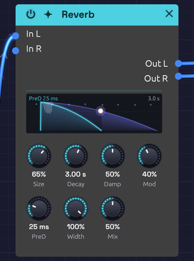
A snare into a 3-second room, a second after the hit: the dot has run a third of the way down the slopeThe Reverb puts a sound in a space: a dense wash of reflections that builds, blooms and dies away. It reaches from a small, splashy room to a tail that rings for half a minute.
Its knobs sit in two rows. The top row shapes the room and its tail (Size, Decay, Damp, Mod); the bottom row places it in the mix (PreD, Width, Mix).
How it works
The Reverb is an eight-line feedback delay network (FDN).
- Pre-delay holds the input back before anything else happens.
- A four-step diffuser spreads the sound across eight channels. Each step delays the channels by different amounts, flips the polarity of some, and mixes them all together, so one click becomes 8 echoes, then 64, then 512, then 4,096. These are the early reflections.
- Eight delay lines circulate the sound. On every pass the lines are mixed into each other, so each echo spawns eight more and the tail thickens into a smooth, noise-like decay.
- Each line has its own gain and damping filter, both calculated from that line's length, so the whole tail decays at the rate Decay sets and every line loses its highs at the same rate.
- The lines drift slowly in length (the Mod knob). This keeps resonances from settling in and adds a gentle chorus to the tail.
Simpler reverbs built from a few fixed comb filters tend to ring at the comb lengths, and sound metallic on snares and claps. The FDN's tail has no repeating period, so sharp transients spread into an even wash.
The display
The display draws the room's decay. Time runs to the right from the moment a sound goes in, stretched so the first few milliseconds have room beside a long tail. Level falls from 0 dB at the top to −60 dB at the bottom.
- Pre-delay. Nothing happens for the PreD time, marked by a faint line.
- Early reflections. The spray of hairlines at the start is every path through the diffuser at this Size, brighter where more of them arrive together. A small room packs them tight; a large one spreads them out before they merge into the tail.
- The tail. Two slopes fall from the top. The darker one is the lows, reaching −60 dB at the Decay time. The brighter one is the highs, dying sooner the more Damp takes them.
- The room ringing. While the tail sounds, a dot rides down the slope at the level it has fallen to, and the tail still to come glows. Each new hit sends the dot back to the top.
- Mod. With Mod up, eight faint motes drift along the top, one per delay line, as their lengths sway.
- Words. The top left gives the pre-delay, or the size when there is none. The top right gives the decay time.
Width and Mix aren't drawn: they place the reverb in the mix rather than shape the room.
Inputs
| Port | Signal Type | Description |
|---|---|---|
| In L | Audio (Blue) | Left input |
| In R | Audio (Blue) | Right input. When unpatched, it copies In L |
Outputs
| Port | Signal Type | Description |
|---|---|---|
| Out L | Audio (Blue) | Left reverb, mixed with the dry signal |
| Out R | Audio (Blue) | Right reverb, mixed with the dry signal |
Parameters
| Knob | Range | Default | Description |
|---|---|---|---|
| Size | 0 – 100% | 50% | Room size: scales every delay in the network |
| Decay | 0.1 s – 30 s | 2.0 s | Time for the tail to fall by 60 dB |
| Damp (Damping) | 0 – 100% | 50% | How much faster the highs die than the lows |
| Mod | 0 – 100% | 25% | Slow drift of the delay lines: a chorus in the tail |
| PreD (Pre-Delay) | Off – 100 ms | Off | Silence before the reverb begins |
| Width | 0 – 100% | 100% | Stereo width of the reverb |
| Mix | 0 – 100% | 30% | Dry (0%) to reverb only (100%) |
The controls
Size
Size sets the dimensions of the room. The shortest delay line runs from 12 ms at 0% to 100 ms at 100%, and the early reflections scale with it. Small settings build up quickly, like a booth or a small room; large settings build slowly, like a hall.
Size and Decay are independent, so a small room can still ring for a long time. Turn Size while a tail is sounding and the lines glide to their new lengths, bending the tail's pitch for a moment instead of clicking.
Decay
Decay is the reverb time (RT60): how long the tail takes to fall by 60 dB. Measured on rendered impulse responses, it lands within about 5% of the knob across the whole Size range.
| Decay | Space |
|---|---|
| 0.1 – 0.5 s | Small room, booth |
| 0.5 – 1.5 s | Studio, medium room |
| 1.5 – 3 s | Hall, church |
| 3 – 10 s | Cathedral, warehouse |
| 10 s and up | Endless ambient wash |
Damp
Damping models soft surfaces absorbing high frequencies. It sets how fast 4 kHz dies relative to the lows: at 0% it lasts the full Decay time, and at 100% it dies ten times faster. Low frequencies always keep the full Decay. Low settings sound like tile and glass; high settings like carpet and curtains, and a darker reverb is easier to sit in a mix.
Mod
Mod lets each of the eight lines drift slowly in length, each at its own rate between about 0.3 and 1.1 Hz. The early reflections stay still.
At 0% the tail is static, the most literal setting, though long tails can show faint resonances. Around 15–35% (the default is 25%) the movement smooths long tails without drawing attention to itself. From 60% up it becomes an audible chorus in the tail: lush on pads, seasick on piano.
PreD
Pre-delay is the gap between the dry sound and the start of the reverb. Up to about 10 ms the reverb starts at once and the source feels close. At 20–40 ms the attack of each note comes through clearly before the room answers, which keeps vocals and plucks distinct. Toward 100 ms the gap becomes an audible sense of depth.
Width
Width sets how far apart the two sides of the reverb are. At 0% the reverb is mono, centered; at 100% the two sides come from different delay lines and are almost completely uncorrelated, so the tail fills the stereo field. Width affects only the reverb, not the dry signal.
Mix
Mix sets how far away the sound seems. Around 10–20% it sounds close and present, 20–40% places it at a natural distance in the room, and above 50% it recedes into the space. At 100% you hear only the reverb.
Bypass
Click the power switch in the node header, press Ctrl+B with the module selected, or choose Bypass from its right-click menu. In L passes straight to Out L and In R to Out R (In R still copies In L when unpatched). The switch crossfades over 20 ms. A bypassed reverb stops running, and it starts from silence when you switch it back in, so no old tail comes back with it.
Starting points
| Space | Size | Decay | Damp | Mod | PreD |
|---|---|---|---|---|---|
| Small bright room | 15% | 0.6 s | 20% | 10% | 0 ms |
| Room | 30% | 0.8 s | 50% | 20% | 10 ms |
| Chamber | 50% | 1.5 s | 40% | 25% | 20 ms |
| Hall | 70% | 3 s | 50% | 30% | 40 ms |
| Cathedral | 90% | 6 s | 40% | 30% | 80 ms |
| Endless | 100% | 20 s | 30% | 50% | 100 ms |
For a vocal or lead, start from the Chamber with Mix around 20% and Damp near 60%; the pre-delay keeps the words clear and the damping keeps the tail from hissing. For a pad, try the Hall with Mix 50% and Mod 70%: the chorus lives only in the tail, so the dry note stays steady.
Patch ideas
Stereo insert. A stereo source keeps its image through the reverb:
[Oscillator Out L] ──> [Reverb In L]
[Oscillator Out R] ──> [Reverb In R]
[Reverb Out L] ──> [Audio Output Left]
[Reverb Out R] ──> [Audio Output Right]
Shared room. Mix several voices into one reverb so they sound like they're in the same space:
[VCA 1 Out] ──> [Mix In 1]
[VCA 2 Out] ──> [Mix In 2]
[Mix Out] ──> [Reverb In L] ──> [Audio Output]
Echoes of the room. Put a Delay after the reverb and the tail itself repeats in rhythm.
Related modules
- Delay: distinct echoes instead of a diffuse space
- Chorus: width and movement without a room
- EQ: shape the reverb's tone
- Mix: feed several voices into one reverb
- Mixer: send each channel to one shared reverb and bring it back
3-Band EQ
Module ID fx.eq · Category Effect
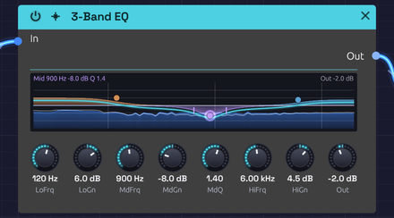
Pink noise through a warm low shelf, a cut in the middle and an airy top, with the pointer on the mid bandThe 3-Band EQ boosts or cuts three regions of the spectrum: a low shelf for the bass, a fully parametric mid band, and a high shelf for the treble. Use it to fit a sound into a patch, take the mud out of a pad, put an edge on a lead, or darken a reverb tail.
Where a filter removes whole parts of the spectrum, an EQ leans on them, up to 15 dB either way. Every knob glides, so you can sweep the mid band while a note plays without zipper noise.
The display
The display draws the curve the three bands add up to, from 20 Hz on the left to 20 kHz on the right, and ±18 dB around the 0 dB line. Each band's own share is a faint tinted fill: the low shelf amber, the mid band violet and the high shelf blue. The bright line is their sum, with Out added. Every curve comes from the band's own filter, so it bends exactly as the sound does.
You can shape the EQ on the curve itself:
- Drag a dot to move its band: across for frequency, up and down for gain. The knobs follow.
- Drag a wing of the mid band (the short ticks either side of its dot, where its width ends) to set MdQ: out to widen it, in to narrow it.
- Double-click a dot to flatten its band back to 0 dB.
Pointing at a dot shows its band's settings at the top left. Out shows at the top right when it isn't 0 dB.
Beneath the curves is the sound itself: what comes into In is a faint blue landscape, and what leaves through Out is a pale line over it. A boost lifts the line above the landscape, and a cut carves a dip into it.
Inputs
| Port | Signal Type | Description |
|---|---|---|
| In | Audio (Blue) | Signal to equalize |
Outputs
| Port | Signal Type | Description |
|---|---|---|
| Out | Audio (Blue) | Equalized signal |
Parameters
| Knob | Range | Default | Description |
|---|---|---|---|
| LoFrq (Low Freq) | 20 Hz – 500 Hz | 100 Hz | Low shelf frequency |
| LoGn (Low Gain) | −15 dB – +15 dB | 0 dB | Boost or cut below the low shelf frequency |
| MdFrq (Mid Freq) | 100 Hz – 10 kHz | 1 kHz | Center of the mid band |
| MdGn (Mid Gain) | −15 dB – +15 dB | 0 dB | Boost or cut at the mid frequency |
| MdQ (Mid Q) | 0.1 – 10 | 1.0 | Width of the mid band. Higher is narrower |
| HiFrq (High Freq) | 2 kHz – 20 kHz | 8 kHz | High shelf frequency |
| HiGn (High Gain) | −15 dB – +15 dB | 0 dB | Boost or cut above the high shelf frequency |
| Out (Output) | −12 dB – +12 dB | 0 dB | Level after the EQ |
With every gain at 0 dB the EQ is transparent.
The bands
The three bands run in series: low shelf, then mid, then high shelf.
Low and high shelves
A shelf raises or lowers everything beyond its frequency by the same amount, like a bass or treble knob on a stereo. The LoFrq and HiFrq knobs set the shelf's midpoint: the frequency where it has reached half its gain. The shelves are as steep as they can be without overshooting, so a boost rises cleanly to its level with no bump at the corner.
The shelves have no Q of their own. To affect a narrower region at the bottom or top, use the mid band.
Mid band
The mid band is a bell-shaped peak or dip centered on MdFrq. MdQ sets its width:
- 0.1 to 1: broad and gentle, spanning several octaves. Good for tonal shaping.
- 1 to 4: focused but still musical.
- 4 to 10: narrow and surgical, for picking out a single resonance.
A good rule is to cut narrow and boost wide: narrow boosts sound unnatural, while narrow cuts can remove a problem without anyone hearing that it's gone.
Bypass
Click the power switch in the node header, press Ctrl+B with the module selected, or choose Bypass from its right-click menu. In passes straight to Out. The switch crossfades over 20 ms, so you can compare the EQ'd and original sound mid-note.
Finding a problem frequency
- Set MdQ high, around 5 to 8.
- Boost MdGn to +10 dB or so.
- Sweep MdFrq slowly until the ringing or boominess jumps out.
- Turn MdGn down below 0 dB to cut it.
Where things live
| Region | Frequency | Character |
|---|---|---|
| Sub | 20 – 60 Hz | Felt more than heard |
| Bass | 60 – 250 Hz | Weight, warmth, punch |
| Low mids | 250 – 500 Hz | Body; too much is muddy |
| Mids | 500 Hz – 2 kHz | Presence; too much is boxy or nasal |
| Upper mids | 2 – 5 kHz | Definition and attack; too much is harsh |
| Highs | 5 – 10 kHz | Brightness |
| Air | 10 – 20 kHz | Sparkle and openness |
Starting points
| Goal | Settings |
|---|---|
| Take out mud | MdFrq 300 Hz, MdGn −4 dB, MdQ 2 |
| Remove boxiness | MdFrq 500 Hz, MdGn −3 dB, MdQ 2.5 |
| Add warmth | LoFrq 100 Hz, LoGn +3 dB |
| Add presence | MdFrq 3 kHz, MdGn +3 dB, MdQ 0.8 |
| Add air | HiFrq 12 kHz, HiGn +3 dB |
| Thin, telephone-like | LoFrq 400 Hz, LoGn −15 dB; HiFrq 3 kHz, HiGn −15 dB; MdFrq 1.5 kHz, MdGn +6 dB |
Boosts raise the overall level. Pull Out down to match the bypassed level before deciding whether the EQ is helping.
Patch ideas
After distortion. Distortion's harshness usually sits in the upper mids. A broad mid cut around 3 kHz after it smooths the edge without dulling the sound the way a lowpass would:
[Distortion Out] ──> [EQ In] ──> [Audio Output Mono]
Darker reverb. The EQ is mono, so to shape a stereo reverb use one EQ per side, each cutting the lows (LoGn −6 dB) to keep the tail from clouding the bass.
Channel strip. EQ, then compress: the compressor then responds to the tone you chose rather than to the frequencies you were about to cut.
[VCA Out] ──> [EQ In]
[EQ Out] ──> [Compressor In]
Related modules
- SVF Filter: for removing whole ranges, or sweeping dramatically
- Compressor: often follows the EQ
- Distortion: creates harmonics worth shaping
- Reverb: an EQ after it shapes the tail
Distortion
Module ID fx.distortion · Category Effect
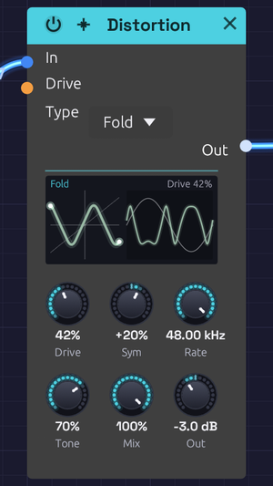
A low sine into the folder: the whole curve lit, and the wave on the right folding back at its peaksThe Distortion adds harmonics by pushing a signal into a curve: rounding it off, clipping it, folding it back on itself, or crushing it into steps. Five types cover everything from a touch of warmth on a bass to a sine folded into a buzzing, vocal tone.
Every curve runs at four times the sample rate with antiderivative anti-aliasing (ADAA). Even full drive on a high note adds only harmonics of that note, not the inharmonic "digital fizz" a naive distortion folds back into the audible range. The dry signal is mixed in at the same oversampled rate and aligned to the sample, so Mix blends cleanly without comb filtering.
The display
The display shows the bend and how far into it the sound goes.
- The curve. On the left, what goes in runs across from −1 to 1, and what comes out runs up. It is the module's own curve for the chosen Type, after Drive (and for Fold, Sym), blended by Mix and scaled by Out. Soft is a gentle S, Hard flattens at the top, Fold zigzags back down, Tube leans, and Bit is a staircase with fewer steps the harder it's driven.
- The lit stretch. The part of the curve the input reaches right now is lit, with a dot at each end, and it glows hotter as Drive rises. Turn up a quiet input and you can watch it walk into the bend.
- The wave. On the right is one cycle of a sine at the input's level, faint, and over it what the curve makes of that sine. That is the shape the new harmonics come from: rounded shoulders for Soft, flat tops for Hard, extra wiggles for Fold.
- Words. The top right gives the drive, in orange while Drive CV moves it. For Bit it gives the bits kept and the crushed rate instead.
Tone isn't drawn: it shapes the sound after the curve.
Inputs
| Port | Signal Type | Description |
|---|---|---|
| In | Audio (Blue) | Signal to distort |
| Drive CV | Control (Orange) | Moves Drive around the knob: ±1 adds ±50% |
Outputs
| Port | Signal Type | Description |
|---|---|---|
| Out | Audio (Blue) | Distorted signal |
Parameters
| Control | Range | Default | Description |
|---|---|---|---|
| Type | Soft / Hard / Fold / Bit / Tube | Soft | Distortion curve (dropdown on the node) |
| Drive | 0 – 100% | 50% | How hard the signal is pushed into the curve |
| Sym (Symmetry) | −100% – +100% | 0% | Fold only: shifts the wave off center before it folds |
| Rate | 100 Hz – 48 kHz | 48 kHz | Bit only: the crushed sample rate. The top of the range is off |
| Tone | 0 – 100% | 50% | Lowpass after the curve, from 200 Hz to 20 kHz |
| Mix | 0 – 100% | 100% | Dry (0%) to distorted (100%) |
| Out (Output) | −12 dB – +12 dB | 0 dB | Level after distortion |
Drive keeps working while Drive CV is patched: the knob sets the center and the CV moves around it.
Types
Soft
Smooth tanh saturation that rounds off peaks. Drive raises the input gain from 1x to 11x. It produces odd harmonics that fall away smoothly, and compresses as it goes: warmth at low drive, fuzz at high drive.
Hard
Clipping that flattens the peaks. Drive lowers the clipping point from full scale to a tenth of it. Bright, buzzy odd harmonics, with a transistor-fuzz edge.
Fold
A wavefolder in the West Coast tradition of the Serge and Buchla folders. Past the clipping point, the wave reflects back toward zero instead of flattening, then reflects again. Drive raises the gain from 1x to 6x, and each step adds another fold and another pair of peaks, up to about three folds per half-wave at full scale. The corners of each fold are rounded, as a real diode folder's are.
A plain sine comes out bright, vocal or metallic, and sweeping Drive with CV gives the classic wavefolder sweep.
Sym shifts the wave off center before it folds. The two halves then fold differently and even harmonics appear. Near ±100%, a quiet sine sits on a fold's peak and comes out an octave up.
Bit
Bit-depth and sample-rate reduction, for lo-fi character.
- Drive lowers the bit depth from 16 bits at 0% to 2 bits at 100%.
- Rate holds each sample for longer, like an old sampler. Below a few kHz, the crushed rate's mirror images ring out as metallic, inharmonic tones; that aliasing is the sound. It depends only on Rate: the engine's own sample rate adds none.
Tube
Asymmetric saturation, like a triode biased off center. Drive raises the input gain from 1x to 11x. The two halves of the wave saturate at different levels, so even harmonics appear from the first touch of drive: warm, thick, slightly hollow. The DC offset this creates is removed automatically.
Tone
Tone is a gentle lowpass on the distorted signal, spaced evenly in octaves from 200 Hz at 0% to 20 kHz at 100%. 50% is about 2 kHz, 65% about 4 kHz, 75% about 6 kHz. Distortion creates a lot of high harmonics, and Tone is the quickest way to take the harshness off them. It affects only the distorted signal, not the dry.
Bypass
Click the power switch in the node header, press Ctrl+B with the module selected, or choose Bypass from its right-click menu. In passes straight to Out. The switch crossfades over 20 ms.
Starting points
| Sound | Type | Drive | Tone | Mix |
|---|---|---|---|---|
| Subtle warmth | Soft | 20% | 100% | 50% |
| Bass grit | Soft | 40% | 50% | 70% |
| Tape-ish thickening | Tube | 25% | 60% | 60% |
| Aggressive lead | Hard | 80% | 65% | 100% |
| Lo-fi sampler | Bit | 50% (Rate 8 kHz) | 100% | 80% |
Distortion raises the level, especially at high drive. Use Out to match the bypassed level before you judge whether it sounds better.
Patch ideas
Wavefolded sine. A sine has nothing for a filter to remove; folding gives it harmonics first:
[Oscillator Out] ──> [Distortion In] Type Fold, Drive 50%
[Distortion Out] ──> [SVF Filter In]
Octave fold. With Type Fold, Drive 0% and Sym 100%, a sine comes out an octave up.
Envelope-driven drive. More distortion on the attack, cleaner as the note sustains:
[ADSR Out] ──> [Distortion Drive CV]
Before or after the filter. Distortion before the filter gives the filter more harmonics to work on, and the filter tames them. Distortion after the filter adds grit to whatever the filter left, so it changes character as the cutoff moves. Before the VCA, the amount of distortion stays constant; after it, quiet notes stay clean and loud ones break up.
Related modules
- SVF Filter and Ladder Filter: shape the harmonics distortion adds. The Ladder has its own saturating Drive
- Compressor: control dynamics before or after
- EQ: fine-tune the distorted tone
- Tape: saturation with the wobble and dulling of a tape machine, for a whole bus
Chorus
Module ID fx.chorus · Category Effect
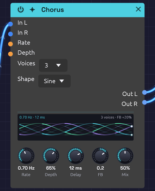
Toms on every beat through three voices: the braid weaves slowly and lights where each hit passedThe Chorus thickens a sound by layering copies of it, each delayed by a few milliseconds that keep changing. The moving delays bend each copy's pitch slightly up and down, and the copies beat against each other and against the original, the way several players on the same part never quite line up.
It is true stereo, and it makes a mono source wide on its own. Short delays and a little feedback take it into flanging.
How it works
- Each channel has its own delay line: left stays left, right stays right.
- Each voice reads both lines through a pair of taps, and an LFO sweeps each tap's delay around Delay. At full Depth the delay swings all the way from zero to twice the Delay time.
- The voices are spaced evenly around the LFO cycle, so they never move in step.
- The voices are summed and blended with the dry signal by Mix.
True stereo
A stereo source keeps its image: nothing patched into In L ever reaches Out R.
With In R unpatched, In L feeds both sides and the chorus creates the width itself. Each right tap's LFO sits halfway between two left taps (180° away with one voice, 90° with two), so the two sides always bend in pitch in opposite directions.
Changing Voices fades voices in or out and slides the rest to their new places on the cycle, so it never clicks.
The display
The display draws the voices sweeping over the last two seconds, newest at the right edge. Up and down is how far each tap reads behind Delay: the centre line is the Delay itself, and the faint lines either side are as far as Depth lets the taps swing.
- Strands. Each voice is a strand in its own colour. The solid strand is its left tap, and the fainter one beside it is its right tap, half a voice-spacing behind. One voice draws a single wave, and four weave a braid. Rate sets how many cycles cross the panel, and Shape bends them from sine to triangle. A dot at the right edge marks where each voice is now.
- Light. The strands light up where sound came in, so the braid glows with whatever passes through it.
- Feedback. Positive FB thickens the strands. Negative FB, the hollow flanger sound, turns them hollow and violet.
- Words. The top left gives the rate and delay, with the rate in orange while Rate CV moves it. The top right gives the number of voices and the feedback.
Inputs
| Port | Signal Type | Description |
|---|---|---|
| In L | Audio (Blue) | Left input |
| In R | Audio (Blue) | Right input. When unpatched, it copies In L |
| Rate CV | Control (Orange) | Speeds up or slows down the sweep: ±1 changes Rate by ±50% |
| Depth CV | Control (Orange) | Adds to Depth: ±1 adds ±50% |
Outputs
| Port | Signal Type | Description |
|---|---|---|
| Out L | Audio (Blue) | Left chorus, mixed with the dry signal |
| Out R | Audio (Blue) | Right chorus, mixed with the dry signal |
Parameters
| Control | Range | Default | Description |
|---|---|---|---|
| Rate | 0.1 Hz – 10 Hz | 1 Hz | Speed of the sweep |
| Depth | 0 – 100% | 50% | How far the delay sweeps around Delay |
| Delay | 1 ms – 30 ms | 10 ms | Center delay time |
| FB (Feedback) | −0.5 – +0.5 | 0 | Feeds the voices back into the delay lines, for flanging. Negative values sound hollower |
| Mix | 0 – 100% | 50% | Dry (0%) to chorus only (100%) |
| Voices | 1 – 4 | 2 | Number of voices (dropdown on the node) |
| Shape | Sine / Tri | Sine | LFO waveform (dropdown on the node) |
While Rate CV or Depth CV is patched, its knob stays live and sets the center the CV works around, so you can keep turning it as the sweep plays.
Shaping the sound
Rate and Depth. Slow rates sway gently; fast rates turn into vibrato. Light depth thickens without drawing attention; heavy depth wobbles until it sounds out of tune. The two work together, since the pitch bend depends on how fast the delay is changing: a fast rate needs less depth.
Delay. Below about 5 ms the copies comb-filter against the dry sound, and with some feedback it becomes a flanger. From 5 to 15 ms is classic chorus. From 15 to 30 ms the copies separate into a wide, doubled sound.
Voices. One voice is the simplest, almost flanger-like, with the two sides sweeping in opposite directions. Two is the classic stereo chorus. Three and four build toward a thick ensemble, at some cost in clarity. The output stays at about the same loudness whatever the voice count.
Shape.
| Shape | Character |
|---|---|
| Sine | Smooth and vocal: the pitch eases in and out of each bend |
| Tri | The delay sweeps at a constant speed, so each half-cycle holds one steady detune. Glassier, closer to the classic bucket-brigade choruses |
Switching shape morphs between the two over 20 ms.
Feedback. Feedback deepens the comb-filter peaks and makes the sweep ring. The loop uses the voices' average, so its gain never exceeds the knob however many voices are running.
Bypass
Click the power switch in the node header, press Ctrl+B with the module selected, or choose Bypass from its right-click menu. In L passes straight to Out L and In R to Out R (In R still copies In L when unpatched). The switch crossfades over 20 ms.
Starting points
| Sound | Rate | Depth | Delay | FB | Voices | Mix |
|---|---|---|---|---|---|---|
| Subtle thickening | 0.3 Hz | 20% | 5 ms | 0 | 2 | 30% |
| Classic chorus | 0.5 Hz | 40% | 8 ms | 0 | 2 | 50% |
| String ensemble | 0.8 Hz | 60% | 15 ms | 0 | 4 | 60% |
| Flanger | 0.2 Hz | 70% | 2 ms | +0.4 | 1 | 50% |
| Vibrato | 5 Hz | 30% | 5 ms | 0 | 1 | 100% |
At 100% Mix you hear only the moving copies, without the dry signal to beat against, so the chorus becomes pure vibrato.
On bass, keep Depth and Mix low, or the low end turns vague.
Patch ideas
Widen a mono voice. Patch only In L and take both outputs:
[VCA Out] ──> [Chorus In L]
[Chorus Out L] ──> [Audio Output Left]
[Chorus Out R] ──> [Audio Output Right]
Before the space. Chorus usually goes before time-based effects, so the reverb smears the movement together:
[VCA Out] ──> [Chorus In L]
[Chorus Out L] ──> [Reverb In L]
[Chorus Out R] ──> [Reverb In R]
Drifting chorus. A very slow LFO into Rate CV makes the chorus speed itself wander.
Related modules
- Delay: longer echoes
- Reverb: chorus into reverb for ambient washes
- Oscillator: unison detune thickens at the source
- LFO: modulates Rate and Depth
Tape
Module ID fx.tape · Category Effect
 The reels turn at the tape speed and lurch with the wow, dragging as the pitch sags and hurrying as it rises; the head glows as Saturation drives it. When the Stop gate brakes the tape, the reels slow to a halt and the speed between them counts down
The reels turn at the tape speed and lurch with the wow, dragging as the pitch sags and hurrying as it rises; the head glows as Saturation drives it. When the Stop gate brakes the tape, the reels slow to a halt and the speed between them counts down
The Tape module is a tape machine for a bus. Much of what makes vintage-flavoured music sound warm happens on tape, after the instruments: the record head's soft squash, the head bump in the low end, the slow sway and fast shiver of the transport, the top end the tape can't hold, and, on an old reel, dropouts and hiss. Put it on a mix bus or in front of the Audio Output to give the whole patch that sound.
It shares its transport and record head with the Stereo Delay's Tape mode, which puts the same machine on the echoes only.
How it works
Each channel is recorded onto tape, then played back:
- Record. Pre-emphasis lifts the treble, the drive pushes the signal into the record head, and de-emphasis takes the treble back down, so the highs squash first, as they do on tape. The head bump and the speed's top end follow. Saturation sets the drive.
- Transport. The play head reads the tape a moment behind the record head, and that moment keeps changing with the wow and flutter, which bends the pitch. The right track sways a little differently from the left, by Width.
- Playback. Hiss is added, then the tape's Age: gap loss rolls off the top, and dropouts dip the sound where the oxide has worn away.
A Stop gate brakes the whole machine to a halt, and winds it back up when it's let go: see Tape stop.
With every knob at zero, Tape passes its input through bit for bit. It adds no latency: at rest the play head reads exactly what was just recorded, and the wobble only ever pulls it back in time, never ahead.
Inputs
| Port | Signal Type | Description |
|---|---|---|
| In L | Audio (Blue) | Left of the bus |
| In R | Audio (Blue) | Right of the bus. When unpatched, it copies In L |
| Wow | Control (Orange) | Adds to Wow: +1 adds 100%. The knob stays live and sets the center the CV works around |
| Stop | Gate (Green) | While high, the tape brakes to a halt over the Stop Time; let go, it winds back up. See Tape stop |
Outputs
| Port | Signal Type | Description |
|---|---|---|
| Out L | Audio (Blue) | Left, off tape |
| Out R | Audio (Blue) | Right, off tape |
Parameters
| Control | Range | Default | Description |
|---|---|---|---|
| Sat (Saturation) | 0 – 100% | 30% | Drive into the record head, up to +18 dB, with the head bump |
| Age | 0 – 100% | 15% | From new to found in an attic: duller, with dropouts and a little hiss |
| Hiss | 0 – 100% | 15% | Tape hiss, up to −34 dBFS |
| Mix | 0 – 100% | 100% | Dry (0%) to tape only (100%) |
| Wow | 0 – 100% | 25% | The slow sway of the reels: up to ±40 cents at 15 ips |
| Flut (Flutter) | 0 – 100% | 20% | The fast shiver of the capstan: up to ±12 cents at 15 ips |
| Width | 0 – 100% | 30% | How differently the right track sways from the left |
| Stop (Stop Time) | 50 ms – 4 s | 1 s | How long the Stop gate takes to bring the tape to a halt. Winding back up takes half as long |
| Speed | 7½, 15, 30 ips | 15 ips | Tape speed (dropdown on the node) |
Speed
Slower tape sways further and more slowly, holds less top end, and bumps lower:
| Speed | Wow and flutter | Head bump | Top end | Full Age leaves | Emphasis |
|---|---|---|---|---|---|
| 7½ ips | 1.6× deeper, half as fast | 40 Hz | 12 kHz | 3.5 kHz | NAB, 50 µs |
| 15 ips | as the knobs say | 70 Hz | 18 kHz | 5.5 kHz | IEC, 35 µs |
| 30 ips | 0.6× as deep, twice as fast | 120 Hz | 22 kHz | 8 kHz | AES, 17.5 µs |
Changing speed glides: the play head eases to its new sway rather than jumping, like a motor finding its speed.
Shaping the sound
Saturation. Turning Saturation up puts the signal on tape: the head bump and the speed's top end come in over the first tenth of the knob, and the drive rises from there. Tape is calibrated to the studio convention, where a sine at −18 dBFS RMS sits at 0 VU and keeps its level at any drive. Quieter material comes up a little, louder material is squashed, and the louder it is the more it's squashed, with the treble first. On a full mix that sounds like glue at 20–40%, and like a cassette deck pushed into the red past 70%.
Wow and Flutter. Both knobs work on a square law, so the bottom of each is fine and the top is extreme. The pitch swings by:
| Knob | Wow at 15 ips | Flutter at 15 ips |
|---|---|---|
| 25% | ±2.5 cents | ±0.75 cents |
| 50% | ±10 cents | ±3 cents |
| 75% | ±22.5 cents | ±6.75 cents |
| 100% | ±40 cents | ±12 cents |
Multiply by 1.6 at 7½ ips and by 0.6 at 30. A couple of cents of wow is felt more than heard; ten is a gentle seasickness; forty is a warped record. Wow is two slow sways at unrelated rates, so it never quite repeats.
Turning Wow up quickly pulls the play head back and sags the pitch for a moment, as a dragging reel would. The depth glides over about a third of a second to keep that brief.
Width. A mono source comes out mono at Width 0, and sways apart into stereo as Width rises. Hiss is always independent between the two sides.
Age. Age rolls off the top, from nothing at 0 to the speed's worn cutoff at 100%. Dropouts start to appear around 30%. At 100% there are about two every three seconds, each 15–150 ms long, dipping the highs more than the lows. Age also adds a little hiss of its own, up to −48 dBFS.
Hiss. Mostly treble, as tape hiss is, and it runs through the Age stage: an old tape hisses darker, and the hiss drops out with the music.
Mix. Below 100%, the wobbling tape copy is blended with the dry signal, which beats against it like a chorus. With Saturation and Age at 0 that's all you hear: a slow, natural tape chorus. A 50% blend sounds about 3 dB quieter than either side alone, because the two copies drift apart.
Tape stop
Press stop on a tape machine, or a turntable, in the middle of a song and everything on it slows down together, so the whole mix falls in pitch to nothing. Patch a gate into Stop and the Tape does the same to its bus.
Braking. While the gate is high, the tape slows at a steady rate and comes to a halt after the Stop Time. The pitch falls in a straight line: a 1 kHz tone with a 1 s Stop Time is at 750 Hz a quarter of a second in, 500 Hz at half a second, and nothing at one second. Below about an eighth of full speed the sound has sunk below hearing, and it fades out there, so a stopped tape is silent rather than holding a frozen sample. Hiss stops with it.
Winding up. Let go of the gate and the tape winds back up in half the Stop Time. Rather than picking up the old tape from where it stopped, which would leave the whole mix late, it picks up what's playing now and runs a little fast to catch up: the pitch climbs from nothing, overshoots by up to a major third, and settles exactly in time. Once it has, the output is the same as if the tape had never stopped, sample for sample, so a song on a clock comes back on the beat. Let go before the tape has stopped and it winds up from the speed it had reached, with the sound it was making fading out over 30 ms beneath it.
Free when idle. With the gate low the stop adds nothing to the sound and no latency.
Stop works on the tape side of Mix: at 100% the whole bus stops, and below that the dry signal plays on through it. For a stop on the master, put Tape last and keep Mix at 100%, even if Saturation, Wow and the rest are at zero.
| Stop Time | Sounds like |
|---|---|
| 50–150 ms | A hiccup: the beat catches for a moment |
| 0.3–0.8 s | A DJ hitting stop on the deck |
| 1–2 s | A tape machine's motor winding down |
| 3–4 s | A slow, heavy spin-down, for the very end |
With an Arranger
An Arranger lane's Gate is high while the lane is above zero, so a lane can press Stop for exactly the bars you choose. Label one lane Stop and patch its gate in:
[Arranger Gate 3] ──> [Tape Stop]
At the end of the song. Give the last section a Jump to 100% on the Stop lane (cue 1001000), and set the Stop Time to a bar or so. On the last section's downbeat the whole song winds down to silence. A song that stops (Loop to off) keeps the lane high, so the tape stays stopped. A song that loops needs the first section to Jump the lane back to 0 (cue 1000000), and the next pass winds up on its downbeat.
A brake fill. Jump the Stop lane to 100% on a one-bar Fill section, and back to 0 on the section after it. The tape brakes through the fill, sits stopped, and winds up on the next section's downbeat, back on the beat. With the Stop Time shorter than the bar there's a moment of silence before the drop; at about the bar's length the tape is still sinking when it's let go.
A hiccup on a Hit. A Hit holds the lane's gate high for half a step, so with a Stop Time of 50–150 ms a Hit on a section's cue makes the bus catch on that downbeat and stumble back in time, a hiccup into the new section.
Bypass
Click the power switch in the node header, press Ctrl+B with the module selected, or choose Bypass from its right-click menu. In L passes straight to Out L and In R to Out R (In R still copies In L when unpatched).
Starting points
| Sound | Speed | Sat | Age | Hiss | Wow | Flut | Width | Mix |
|---|---|---|---|---|---|---|---|---|
| Mix-bus glue | 30 | 30% | 0% | 0% | 0% | 5% | 0% | 100% |
| Warm seventies | 15 | 40% | 20% | 10% | 20% | 15% | 30% | 100% |
| Warped cassette | 7½ | 35% | 45% | 25% | 55% | 30% | 40% | 100% |
| Lo-fi house | 7½ | 60% | 50% | 30% | 25% | 20% | 20% | 100% |
| Found in an attic | 7½ | 50% | 100% | 40% | 70% | 50% | 60% | 100% |
| Tape chorus | 15 | 0% | 0% | 0% | 50% | 0% | 100% | 50% |
Each was checked by rendering Afterglow through it: all but the chorus come out within about 1 dB of the dry patch's loudness, with the peaks lower.
Patch ideas
On the master. Put Tape last, in front of the Audio Output:
[Mixer Out L] ──> [Tape In L]
[Mixer Out R] ──> [Tape In R]
[Tape Out L] ──> [Audio Output Left]
[Tape Out R] ──> [Audio Output Right]
Afterglow, Shoreline, Clair de Satellite and From One Sine all end this way. Each recipe says what its tape adds.
A warped moment. Patch an Arranger lane into Wow, with the knob low. Ramp the lane up through a breakdown and back down for the drop, and the whole mix bends out of shape and back. From One Sine ramps it up through its breakdown and jumps it back to 0 on the drop's downbeat.
Breathing tape. A slow LFO, around 0.05 Hz, into Wow with a small depth makes the sway itself come and go.
Spin down the ending. An Arranger lane into Stop, jumping high on the last section, with a 2–4 s Stop Time: the song winds down to nothing instead of fading out. See With an Arranger.
Only the pads. Put Tape between the pad voice and its Mixer channel, so the drums stay steady while the pads drift.
Related modules
- Stereo Delay: the same tape machine, on the echoes only
- Distortion: Tube saturates without the wobble or the dulling
- Audio Output: Character, a fixed soft clip on the master's peaks. See Character or Tape?
- Arranger and LFO: move Wow, and press Stop
Slicer
Module ID fx.slicer · Category Effect
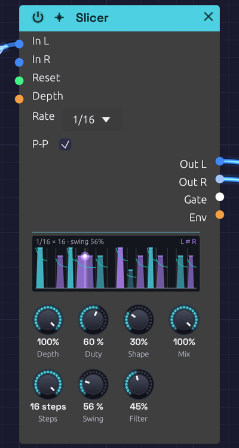
Each step draws the slice it cuts: as tall as it's loud, as wide as Duty holds it open, its edges as soft as Shape. Ties join slices into one slab, the swung steps sit late, the filter's line falls through each slice, and with Ping-Pong the slices bound for the right are violet. A dot rides the slice playingThe Slicer chops whatever passes through it into a rhythm, in time with the patch, the way a slicer pedal does. Hold a chord into it and out comes a gated sixteenth-note figure. A pad becomes a pulse and a drone becomes a groove. A live voice or guitar from Audio Input gets chopped as it's played.
A row of sixteen steps says which slices open and how hard. It runs on the patch's Clock, so step 1 falls on the bar and the slices land with everything else.
How it works
Each step is one of five things:
| Step | Drawn as | What it does |
|---|---|---|
| Accent | A full-height slice | Opens at full level, and brightest through the Filter |
| Hit | A slice most of the way up | Opens at 80% |
| Ghost | A low slice | Opens at 45%, for the quiet notes between |
| Tie | The slice before, carried on | Holds the slice before it open through its step too, without striking again |
| Rest | An empty floor | Closed: the sound is cut, as deep as Depth says |
A slice opens at the start of its step and stays open for Duty of it, then closes. A tie after it holds it open to the end of its step, so X=== is one slice a beat long.
Shape sets how each slice opens and closes. At 0 the edges are crisp, about a millisecond in and a few out: short enough to sound cut, long enough not to click. Turned up, the slices swell in over up to half their step and fade out over more, so a fast pattern turns to a soft tremolo.
Depth sets how far the gaps cut: to silence at 100%, halfway at 50%, not at all at 0. Mix blends the input back in, untouched.
The step filter
Filter gives each slice a resonant lowpass that opens as it strikes and closes through its step. A harder step strikes brighter: an accent opens it all the way, a ghost only partly. Turned all the way up, a soft step closes the filter as far as 6 octaves down.
With Depth at 0 nothing is cut, and only the filter steps. That's the "wah step" of a slicer pedal's filter patterns: the sound stays whole, and its brightness jumps from step to step.
Ping-Pong
With Ping-Pong on, the slices alternate from side to side: the first in the row on the left, the next on the right, and so on. A tie stays on the side of the slice it holds. Each pass of the row starts on the left again, so a row with an odd number of slices plays the same way every time round.
Timing
The row follows the transport's beat: while a Clock plays, step 1 is the first downbeat, and the Slicer keeps its place however the tempo moves. Without a playing Clock it keeps a beat of its own, at the Clock's tempo or 120 BPM. A live input is still chopped while the transport is stopped.
A rising edge at Reset starts the row over from step 1, on that beat: patch an Arranger's section trigger there to line the row up with a section.
Steps shortens the row. 12 steps against a bar of 16 drift across the bar and come back round every three bars. Swing pushes every second step late, as a drum machine's swing does: 50% is straight, 66% a triplet shuffle.
Inputs
| Port | Signal Type | Description |
|---|---|---|
| In L | Audio (Blue) | Left audio to slice: a held chord, a pad, a drone, a live input |
| In R | Audio (Blue) | Right audio to slice. When unpatched, it copies In L |
| Reset | Gate (Green) | A rising edge starts the row over from step 1, on that beat |
| Depth | Control (Orange) | Adds to Depth: +1 adds 100%. An Arranger lane here brings the slicing in and out |
Outputs
| Port | Signal Type | Description |
|---|---|---|
| Out L | Audio (Blue) | Left, sliced |
| Out R | Audio (Blue) | Right, sliced |
| Gate | Gate (Green) | High while a slice is open. It drops for a sample where one slice strikes straight after another, so each is its own trigger |
| Env | Control (Orange) | The slices' level, 0 to 1, shaped as they're shaped. Patch it to a filter's cutoff and the filter breathes with the slices |
Parameters
| Control | Range | Default | Description |
|---|---|---|---|
| Depth | 0 – 100% | 100% | How deep the gaps cut |
| Duty | 5 – 100% | 55% | How much of its step a slice stays open: choppy low, legato at 100% |
| Shape | 0 – 100% | 10% | How each slice opens and closes: crisp at 0, swelling at 100% |
| Mix | 0 – 100% | 100% | The input untouched (0%) to sliced (100%) |
| Steps | 1 – 16 | 16 | How many steps the row plays before it starts over |
| Swing | 50 – 75% | 50% | How late every second step falls |
| Filter | 0 – 100% | 0% | How far the step filter closes through each slice |
| Rate | 1/8, 1/16, 1/32, 1/8T, 1/16T | 1/16 | How long each step is (dropdown on the node) |
| P-P (Ping-Pong) | Off / On | Off | Sends alternate slices left and right (checkbox on the node) |
Editing the row
- Click an empty step to open a slice there, as loud as how high you click: near the top for an accent, the middle for a hit, low for a ghost.
- Click a slice to rest it.
- Drag a slice up or down to change its level.
- Shift+click a step to tie it to the slice before (or untie it).
- Right-click a step to choose what it is, to load one of the patterns, to rotate the whole row a step earlier or later, or to clear it.
Every edit is one undo step. The top of the face says the step length and how many steps play, and names the pattern while the row is still one of them, as written.
Patterns
The right-click menu starts the row from one of these, filed by feel. They're written a step to a character: X an accent, x a hit, . a ghost, = a tie, - a rest. The menu marks the family holding the row the face is playing.
Steady
| Pattern | Row | Feel |
|---|---|---|
| Trance | X-xXx-x-X-xXx-xx | The classic gated pad. A new Slicer starts on this |
| Sixteenths | XxxxXxxxXxxxXxxx | Every step, the beat accented |
| Eighths | X=x=X=x=X=x=X=x= | Every other step, held through the next |
| Quarters | X=--x=--X=--x=-- | A short slice on each beat |
| Offbeats | --X=--X=--X=--X= | The upbeat stab of house and dub |
| Sidechain | .X==.X==.X==.X== | Ducks on every beat and comes back after it, the pump of a sidechained pad. Turn Shape up |
| Pulse | X===----X===---- | Two long throbs a bar |
| Breath | X=======.======= | Half a bar open, then half a bar barely there. Turn Shape up |
Groove
| Pattern | Row | Feel |
|---|---|---|
| Gallop | X-xxX-xxX-xxX-xx | An eighth and two sixteenths |
| Reverse Gallop | Xx-xXx-xXx-xXx-x | Two sixteenths and an eighth |
| Ghosts | X..xX..xX..xX.xx | Soft notes filling the gaps |
| Funk | X.x..xX.x.xX.x.. | Syncopated sixteenths, ghosts between |
| Stutter | XxXxXxXx-.-.X=-- | Busy, then breaking off |
| Build | x-x-x-x-xxxxXXXX | Eighths, then sixteenths, then accents: a riser into the next bar |
| Heartbeat | Xx------Xx------ | Lub-dub, twice a bar |
| SOS | x-x-x-X=-X=-X=-- | Three short, three long |
Clave and kin
| Pattern | Row | Feel |
|---|---|---|
| Tresillo | X==X==X=X==X==X= | 3 + 3 + 2, twice a bar |
| Son Clave | X--x--X---x-X--- | The son clave, 3-2 |
| Rumba Clave | X--x---x--x-X--- | The son clave with its third stroke a step late |
| Bossa Nova | X--x--x---x--x-- | The bossa clave, the tresillo carried on into the second half |
| Cinquillo | X-xx-xx-X-xx-xx- | Five strokes in each half bar, from Cuban danzón |
| Dembow | X--xX-x-X--xX-x- | Reggaeton's beat: the pulse with a tresillo on top |
| Samba | X--x-x-x--x-x-x- | Seven strokes spread as evenly as sixteen steps allow |
Across the bar
| Pattern | Row | Feel |
|---|---|---|
| Dotted | X==x==x==x==x=x= | Dotted eighths, 3-3-3-3-2-2: the figure of a dotted-eighth delay |
| Threes | X-xX-xX-xX-xX-x- with 12 steps | Threes across the bar, back round every three bars |
| Fives | X-xx-X-xx-X-xx-- with 15 steps | Fives across the bar, back round every five |
| Sevens | X-x-x--X-x-x---- with 14 steps | Sevens across the bar, back round every seven |
Build it yourself
The Library has a Slicer group that rebuilds this module from stock modules. Add it and open it to see how a slicer pedal works inside. At its defaults it plays the Trance row as this module does, each slice as loud.
| Part of the Slicer | Built from |
|---|---|
| Rate, locked to the transport | An LFO, square and unipolar, Tempo at the rate. A Logic module's Above turns it into a clock for the sequencer. The LFO's phase is the transport's beat, so it can't drift |
| The row: rest, ghost, hit, accent, tie | A Step Sequencer. A step's Gate off is a rest, Velocity 57, 102 and 127 are a ghost, a hit and an accent, and a Tie holds a slice into the next step. Patterns A to D hold Trance, Gallop, Son Clave and Sidechain: pick one in its Chain |
| Duty | The sequencer's Gate Length, a share of the step |
| How a slice opens and closes | An ADSR with Sustain at 100%, its Velocity from the sequencer. Atk and Rel stand in for Shape |
| Depth | A VCA's CV Amount. The VCA's gain, 1 − amount + amount × CV, is the Slicer's depth exactly |
| The step filter | An SVF Filter, lowpass. A second ADSR, struck by each step as hard as its velocity and closing over Close, opens it through an Attenuverter at ×4, eight octaves. Turn Filter down to hear it |
| Reset | A jack into the sequencer's Reset |
What doesn't carry over:
- Swing. No transport-locked source swings except the patch's Clock.
- Timing that follows the step. The module stretches Shape and the filter's close with the step. An ADSR's times are in seconds, so the group's match at one tempo.
- Chopping with the transport stopped. A synced LFO holds still on a stopped Clock, so the group won't chop live input until you press Play. (With no Clock in the patch at all, it runs at 120 BPM.)
- Starting over with the transport. Patch the Clock's Reset into the group's Reset so the row starts on the bar.
- Ping-Pong, Mix, the Depth jack and stereo in. Each needs more modules (a Clock Divider and Logic gates for Ping-Pong, a crossfade for Mix and the Depth jack). The group stays mono so it reads at a glance.
- The face's row and pattern menu. Edit the steps on the sequencer inside the group.
Tips
- Start from a held sound. The Slicer only cuts what it's given, so it suits a sustained chord, a pad, a drone or a Looper's layers more than a plucked note.
- After the slicer, add space. A Reverb or a Stereo Delay after it fills the gaps with tails, and the chop sounds like part of the room.
- Breathe a filter with it. Patch Env to an SVF Filter's Cutoff jack for a sweep on every slice, or Gate to an ADSR for a different shape per note.
- Bring it in and out. An Arranger lane into Depth turns the slicing on for the chorus and off for the verse.
- Soften the edges for a tremolo. Shape up and Duty near 100% turn any pattern into a rhythmic tremolo, not a chop.
Compressor
Module ID fx.compressor · Category Effect
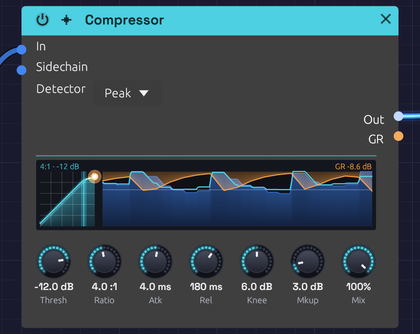
A kick on every beat over a low saw: each hit climbs the curve, and the reduction it brings hangs over the sound coming inThe Compressor turns down a signal when it gets loud and leaves it alone when it's quiet. That evens out the level of a bass line, adds snap to percussion, holds a pad steady, or, with a kick in the Sidechain input, makes a pad pump in time.
It also puts its gain reduction out as a control signal on GR, so the amount of compression can move other parts of the patch.
How it works
- The detector measures the level of In, or of Sidechain when something is patched there.
- When the level rises above Thresh, the compressor works out how far to turn it down: Ratio sets how much of the overshoot gets through.
- Atk sets how quickly that reduction is applied, and Rel how quickly it lets go.
- Mkup adds gain back afterward, and Mix blends the result with the dry input.
Attack and release shape the gain reduction, in dB, not the measured level. So a steady tone above the threshold comes out exactly where the ratio says it should, however fast or slow the timing knobs are set; attack and release only decide how it gets there.
The display
The display has two halves: the curve the compressor works to, and the last two seconds of it working.
- The curve. On the left, the level the detector hears runs across and the output's level runs up, both from −60 dB to 0 dB. Below the threshold the curve follows the faint diagonal, where nothing changes. Past it the curve bends flatter by the ratio, through a soft band as wide as Knee. Mkup lifts the whole curve, and Mix pulls it back towards the diagonal.
- The dot. The dot sits at the level the detector hears now, at the height the gain reduction applied right now gives it. While Atk is still clamping down, or Rel is still letting go, the dot is off the curve, and a short trail shows the path it took. It glows orange while the compressor is turning the sound down.
- The strip. On the right, time runs from the left up to now at the right edge. The sound coming into In is a faint blue landscape, and what leaves through Out is the line over it. The gain reduction hangs from the top in orange: 24 dB of reduction reaches the floor. A faint line marks the threshold, so you can see which peaks cross it and how the output ducks after each one.
- Words. The top left gives the ratio and threshold, plus RMS when the detector measures RMS and SC when the Sidechain is patched. The top right gives the reduction now. Hover over the display for more.
Inputs
| Port | Signal Type | Description |
|---|---|---|
| In | Audio (Blue) | Signal to compress |
| Sidechain | Audio (Blue) | Signal the detector listens to instead of In. When unpatched, the detector listens to In |
Outputs
| Port | Signal Type | Description |
|---|---|---|
| Out | Audio (Blue) | Compressed signal |
| GR | Control (Orange) | Gain reduction as CV: 0 is no reduction, 1 is 60 dB |
Parameters
| Control | Range | Default | Description |
|---|---|---|---|
| Thresh (Threshold) | −60 dB – 0 dB | −20 dB | Level above which compression begins |
| Ratio | 1:1 – 20:1 | 4:1 | How strongly levels above the threshold are reduced |
| Atk (Attack) | 0.1 ms – 100 ms | 10 ms | How fast compression clamps down |
| Rel (Release) | 10 ms – 1000 ms | 100 ms | How fast compression lets go |
| Knee | 0 dB – 12 dB | 6 dB | Width of the soft knee around the threshold. 0 is a hard knee |
| Mkup (Makeup) | 0 dB – +24 dB | 0 dB | Gain added after compression |
| Mix | 0 – 100% | 100% | Dry (0%) to compressed (100%), for parallel compression |
| Detector | Peak / RMS | Peak | What the detector measures (dropdown on the node) |
The controls
Threshold and ratio
Above the threshold, the ratio sets how many decibels go in for each decibel that comes out. At 2:1, a signal 10 dB over the threshold comes out 5 dB over. At 4:1 it comes out 2.5 dB over. At 20:1, the top of the range, the compressor is close to a limiter: almost nothing gets past the threshold.
For example, with Thresh at −20 dB and Ratio at 4:1:
| In | Out |
|---|---|
| −30 dB | −30 dB (below the threshold, untouched) |
| −20 dB | −20 dB (at the threshold) |
| −10 dB | −17.5 dB (10 dB over becomes 2.5 dB over) |
Knee
With a hard knee (0 dB), compression starts abruptly at the threshold. A soft knee eases it in over a band centered on the threshold: with the default 6 dB, compression starts 3 dB below the threshold and reaches the full ratio 3 dB above it. Soft knees sound more transparent; hard knees more obviously compressed.
Attack and release
Atk decides whether the start of each note gets through. Below about 1 ms the compressor catches every transient, which can flatten a sound. Around 10 to 30 ms, the first moment of each hit punches through before the compressor reacts, which is how compression adds snap to drums. Slower still, and only sustained parts of the sound are reduced.
Rel decides how the level recovers. A fast release (under 50 ms) recovers between notes and can pump audibly; 50 to 150 ms is musical for most material; slow releases hold the reduction for a smooth, sustained squash.
Detector: Peak or RMS
| Detector | Measures | Character |
|---|---|---|
| Peak | Every peak of the waveform | Catches transients and keeps peaks in check. Good for drums and limiting |
| RMS | Average power over about 20 ms | Follows loudness, as the ear does. Smoother, gentler leveling for pads, buses and sustained sounds |
A sine reads 3 dB lower on RMS than on Peak, so the same settings compress it a little less.
Bypass
Click the power switch in the node header, press Ctrl+B with the module selected, or choose Bypass from its right-click menu. In passes straight to Out; the sidechain isn't passed, and GR stays at zero. The switch crossfades over 20 ms, which makes it easy to compare the compressed and original sound while it plays.
Setting it up
- Start with Ratio around 4:1 and lower Thresh until the loudest moments are being turned down.
- Adjust Atk and Rel until the sound breathes the way you want.
- Raise Mkup until the level matches the bypassed sound, then compare with Ctrl+B. Louder nearly always sounds better, so compare at the same level.
A few decibels of reduction on the loudest moments is usually plenty.
Starting points
| Use | Thresh | Ratio | Atk | Rel | Detector |
|---|---|---|---|---|---|
| Gentle leveling | −18 dB | 2:1 | 20 ms | 200 ms | RMS |
| Punchy percussion | −10 dB | 4:1 | 10 ms | 50 ms | Peak |
| Even bass | −15 dB | 4:1 | 5 ms | 150 ms | Peak |
| Steady pad | −24 dB | 3:1 | 30 ms | 300 ms | RMS |
| Sidechain pump | −30 dB | 6:1 | 1 ms | 200 ms | Peak |
| Peak catcher | −3 dB | 20:1 | 0.1 ms | 50 ms | Peak |
Patch ideas
Sidechain pumping. A kick ducks a pad, and the pad swells back between hits:
[Kick VCA Out] ──> [Compressor Sidechain]
[Pad VCA Out] ──> [Compressor In]
[Compressor Out] ──> [Audio Output Mono]
The sidechain only drives the detector; it isn't heard through the compressor. Patch the kick to the output separately to hear it.
Parallel compression. Set Ratio high (6:1 or more) and the threshold low, then bring Mix down to about 50%. The heavily compressed signal thickens the quiet details while the dry signal keeps the transients.
Moving other things with GR. GR rises as the compressor works. Because 1.0 stands for 60 dB of reduction, the signal is small: 6 dB of reduction reads 0.1. Patched into a filter's Cutoff (1 per octave at the default CV Amt), that moves the cutoff a tenth of an octave: enough for the tone to brighten slightly as the compressor clamps down. Turn the filter's CV Amt up to make more of it.
Related modules
- EQ: often placed just before the compressor
- VCA: level control under direct CV
- Distortion: saturation is a kind of compression too
- Audio Output: the final output stage
Vocoder
Module ID fx.vocoder · Category Effect
 Frozen mid-word: a bar for each band shows how loud the voice was there, held solid while the snowflake shows. Flatten is halfway
Frozen mid-word: a bar for each band shows how loud the voice was there, held solid while the snowflake shows. Flatten is halfway
The Vocoder makes one sound speak with another's mouth. It takes the spectral envelope of a modulator, usually a voice: which parts of the spectrum are loud and which are quiet, moment to moment. It then lays that envelope over a carrier, usually a synth chord. The chord takes on the voice's vowels and consonants and keeps its own pitch and harmony. It's the sound of Kraftwerk's robots, Herbie Hancock's I Thought It Was You, and Air's Sexy Boy.
How it works
- The modulator is split into Bands, a bank of band-pass filters spaced evenly in pitch from 100 Hz to 6.4 kHz.
- A follower on each band tracks how loud the voice is there. It rises at the Attack rate and falls at the Release rate.
- The carrier is split by a second, matching bank.
- Each carrier band is turned up and down by its twin's follower, and the bands are summed. Where the voice has a formant, the carrier gets one too.
Each band is two band-pass sections in a row, so it's steep enough to keep neighbours apart. Neighbouring bands cross at −3 dB, so a carrier with every follower open comes through with an even spectrum.
Three more paths help speech come through:
- Formant slides the carrier's bank against the voice's, by up to an octave either way, so the vowels land higher or lower on the chord.
- Sibilance lets the voice's own highs, above the bank, straight through.
- Unvoiced swaps the carrier for noise while the voice hisses.
Two more change how the bank itself plays:
- Freeze holds every band where it is, so a vowel lasts as long as the chord does.
- Flatten evens out the carrier's own spectrum before the voice's is put on it, so a dull carrier speaks as clearly as a bright one.
Inputs
| Port | Signal Type | Description |
|---|---|---|
| Carrier | Audio (Blue) | The sound that's played: a synth, a chord, noise. A polyphonic cable is summed, so a whole chord can come in on one cable |
| Modulator | Audio (Blue) | The sound whose spectrum the carrier wears: a voice from a Sampler or an Audio Input, or drums |
| Formant | Control (Orange) | Adds to the Formant knob: +1 moves the carrier's bands an octave up |
| Freeze | Gate (Green) | While high, the bands hold where they are. Patched, it takes over from the Freeze switch |
Outputs
| Port | Signal Type | Description |
|---|---|---|
| Out L | Audio (Blue) | The odd bands (the 1st, 3rd, 5th...), leaning left as Width opens |
| Out R | Audio (Blue) | The even bands, leaning right |
The sibilance and the dry carrier (below 100% Mix) sit in the middle of both.
Parameters
| Control | Range | Default | Description |
|---|---|---|---|
| Bands | 8 / 16 / 24 | 16 | How finely the spectrum is split (dropdown on the node) |
| Freeze | Off / On | Off | Holds every band where it is (a switch on the node) |
| Attack | 0.5 – 200 ms | 4 ms | How fast a band opens when the voice gets louder there |
| Release | 5 ms – 2 s | 40 ms | How fast a band closes again |
| Formant | −1 – +1 oct | 0 | The carrier's bands against the voice's: up for a smaller throat, down for a larger one |
| Flatten | 0 – 100% | 0% | How far the carrier's own spectrum is evened out before the voice is put on it |
| Sibil (Sibilance) | 0 – 100% | 25% | How much of the voice's highs pass straight through |
| Unvoic (Unvoiced) | 0 – 100% | 25% | How far noise replaces the carrier while the voice hisses |
| Width | 0 – 100% | 50% | How far apart the odd and even bands sit |
| Mix | 0 – 100% | 100% | From the carrier alone (0%) to the vocoded sound (100%) |
| Level | −24 – +12 dB | 0 dB | The output's gain, after everything else |
The Formant input adds to the knob, and the sum stops at an octave either way. While it's patched, the knob stays live and sets the centre the CV works around.
Attack and Release are the time a band takes to cover most of a change (63%), like the RC follower on an analog vocoder's band.
The display
Bars stand on a frequency axis, one per band, each as tall as the voice is in that band right now. Watch them while the voice speaks and you can see the vowels change. An "ee" lifts the bars at both ends, and an "oo" piles them up at the left.
- Colours. Odd bands are cyan and even bands violet. The colours part as Width opens, to show which side each band plays on.
- Formant. When Formant moves the carrier's bands, each bar leaves a white cap where the carrier plays it, joined to its own foot by a slanting line. The shift shows top right.
- Sibilance. The strip on the right is the range Sibilance passes. Its column is the voice's level up there, lit as brightly as the knob lets it through.
- Unvoiced. While the voice hisses and Unvoiced lets noise in, the bank glitters.
- Freeze. Frozen, the bars stop and turn solid, with icy caps, and a snowflake sits beside the band count. The sibilance column goes dark, because the voice's own highs are muted while the bands hold.
- The feet. The dots under the bars lie along the carrier's slope as the bank plays it. A dull carrier's feet fall away to the right. Turn up Flatten and they level out, and a faint line stays behind on the slope the carrier came in with. Hover over the display to read both slopes in dB an octave.
Shaping the sound
Bands. Eight bands sound like a machine talking: rough, buzzy and only just readable, the classic robot. Sixteen is the all-rounder. Twenty-four is the clearest and most like the voice itself. Loudness stays within a few dB whichever you choose. Changing Bands fades the bank out and in over a few milliseconds, so it never clicks.
Attack and Release. Speech wants a fast attack (2 to 5 ms) and a short release (20 to 50 ms), so each syllable starts and stops cleanly. Lengthen the release past a few hundred milliseconds and the words smear into a choir that lingers on each vowel. Very short times on the low bands start to buzz, because the follower begins to trace the waveform itself.
Formant. Moving the carrier's bank up makes a smaller throat: the voice turns childlike, then cartoonish. Moving it down makes a giant. The pitch you hear doesn't move, because that comes from the carrier. Small amounts (a quarter octave or so) change the character without hurting the words. An LFO on the Formant input makes the voice wobble between the two.
Sibilance and Unvoiced. Consonants like "s", "t" and "f" are mostly noise above 4 kHz, where many carriers have little to give. Sibilance passes the voice's own highs straight through, so they stay crisp. Unvoiced handles the hiss inside the bank. When the voice's level above 4 kHz grows past 30% of its whole level, noise starts replacing the carrier, and by 60% it has replaced it as far as the knob allows. The "s" is then spoken by noise, through the voice's own bands. With no carrier at all, Unvoiced still lets the consonants through on their own. Vowels don't trigger it.
Width. At 0% the vocoder is mono. Wider, neighbouring bands split left and right, and the voice seems to fill the space between the speakers. At 100% each side carries only its own bands.
Mix. At 0% you hear only the carrier, centred. In between, a little of the raw chord fills the gaps between the words.
Level. Turns both outputs up or down, the dry carrier, the bank and the sibilance alike, and changes nothing else: the bands, the display and Flatten's weighting hear the same thing at any Level. Set the part's loudness here and leave the faders after it free for the mix.
Freeze. Sing an "ahh", switch on Freeze, and every band holds exactly where it was. Now play chords: each one says the same vowel for as long as you hold it, and you can stop singing. The voice's own highs (the Sibilance path) are muted while frozen, so whatever you say next doesn't leak through, and the Unvoiced noise holds where it was too. With Flatten up, the voice's weighting of the bands holds as well, so a held vowel keeps one level through the whole chord. Switch Freeze off and the bands carry on from where they were held, at the Attack and Release rates, so there's no jump. Patch a gate into the Freeze input and it takes over from the switch: high holds, low lets go.
Flatten. The bank can only put the voice where the carrier has something to give. A dull carrier, like a pad through a low-pass filter or a triangle or sine chord, is loud low down and nearly silent at 2 kHz, where much of a vowel lives. Its words come out muffled. Flatten measures the carrier in each band and lifts the quiet bands and lowers the loud ones until they're even, before the voice's levels are applied. At 0% the carrier keeps its own tilt, exactly as before. At 100% every band of the carrier is the same level, the "spectral whitening" of modern vocoders. In between, it goes that share of the way, in dB. Flattened, a triangle chord speaks its vowels as plainly as a saw does unflattened.
A few things keep Flatten clean:
- A band is lifted no more than about 40 dB above where the carrier has it, and nothing below −100 dBFS is lifted at all, so empty bands and a silent carrier don't turn into hiss.
- When a new note fills a band that was being lifted, the lift comes off at once, so the note doesn't burst through.
- The vocoder stays about as loud as you turn it, within a dB or so. The level every band is brought to is weighted by where the voice has been over the last second, so evening the carrier out doesn't turn down the bands the voice uses most. A chord and a voice are both loudest low down. Frozen, the weighting holds with the bands.
Flatten can only even out what the carrier has. A pure sine chord has nothing above its top note, and there's nothing there to lift, so give it a little brightness first: a triangle or a soft saw is plenty. A bright saw is already close to even across the bank, so Flatten changes it little.
Carriers that work
The vocoder can only carry what the carrier has to give. A bright, sustained carrier works best: saws, pulses, a supersaw, a chord on a polyphonic cable, or noise for a whisper. A dark, filtered pad has nothing up high for the voice's upper bands to open, so the words come out muffled. Filter the carrier after the vocoder, not before, or turn up Flatten to bring out what highs it has.
Keep the carrier low. A carrier's harmonics are where the vowels get drawn, and a high note spaces them too far apart to trace the formants. Measured with speech recognition on a spoken line, a saw at A2 or A3 kept about 60% of the words, and the same saw at A4 about 20%. A chord voiced low and wide, held while the words move, works best of all. Clair de Satellite sings on the string section's chord for this reason, not on its melody.
The output follows both inputs: a loud chord and a loud voice make a loud vocoder. A five-note chord of detuned saws arrives several times louder than one voice, so turn Level down to sit it with the rest.
Turning the carrier down is a poorer way to the same place. The bank does come down with it, dB for dB, with or without Flatten. But the Sibilance path and the Unvoiced noise take their level from the voice, not the carrier, so they stay where they were. The vocoder comes down by less than the carrier did, and the mix tips toward hiss. Level turns everything down together.
Bypass
Click the power switch in the node header, press Ctrl+B with the module selected, or choose Bypass from its right-click menu. The Carrier passes straight to both outputs, and the modulator is heard nowhere, like a pedal's footswitch. The switch crossfades over 20 ms.
Starting points
| Sound | Bands | Attack | Release | Formant | Sibil | Unvoic |
|---|---|---|---|---|---|---|
| Classic vocoder | 16 | 3 ms | 35 ms | 0 | 35% | 40% |
| Robot | 8 | 2 ms | 20 ms | 0 | 20% | 0% |
| Clear speech | 24 | 2 ms | 30 ms | 0 | 50% | 50% |
| Choir smear | 24 | 30 ms | 600 ms | −0.2 oct | 10% | 0% |
| Small and bright | 16 | 3 ms | 35 ms | +0.5 oct | 35% | 40% |
Any of these works on a dull carrier with Flatten at 70 to 100%. Freeze and Flatten start off.
Patch ideas
A phrase that speaks on every chord. A Sampler in One-Shot plays a recorded line, and a Clock Divider fires it every two bars. A Chord Sequencer plays the chords on a saw voice. The Soba Speaks example is built this way:
[Sampler L] ──> [Vocoder Modulator]
[Oscillator Out] ──> [Vocoder Carrier] (a saw, on the Chord Sequencer's Pitch)
[Vocoder Out L] ──> [Mixer Ch 1]
[Vocoder Out R] ──> [Mixer Ch 2]
Your own voice. Patch an Audio Input's L into Modulator, and speak or sing into a microphone while the chords play. Wear headphones, or the mic will hear the speakers and the vocoder will start to howl.
Drums that play chords. Patch a drum loop into Modulator and a held chord into Carrier. The chord pulses in the rhythm of the drums: the kick opens the low bands, and the hats open the high ones.
A whisper. Patch Noise (white) into Carrier and the voice comes back whispered, with no pitch at all.
A vowel to play chords on. Sing or play a sustained vowel into Modulator and switch on Freeze mid-vowel. Now the Chord Sequencer or a keyboard plays the chords, and each one comes out as "ahh" or "ooh", with no voice needed any more. A long Release before you freeze softens the held vowel.
A stutter of held vowels. Patch a Clock Divider's Gate into Freeze while a voice speaks. Each gate holds the syllable it lands on for as long as the gate is high, then lets the voice run on until the next one. Short gates on the beat give a rhythmic, chopped vocal, and longer ones give a held word at the start of each bar. Held Vowels turns this round: its gate is high for three beats of every four and lets go only for the beat a singer sings on, so each new chord holds the vowel sung just before it.
[Clock Divider Gate] ──> [Vocoder Freeze]
[Sampler L] ──> [Vocoder Modulator]
A pad that speaks. A triangle chord, or a saw through a low-pass, makes a soft pad but a mumbling vocoder. Turn Flatten up to 100% and the vowels come through. Mix the pad back in beside the vocoder and it still sounds soft. Held Vowels sings on a triangle chord this way.
Related modules
- Audio Input: a live voice to vocode
- Sampler: a recorded voice that plays itself
- Chord Sequencer: chords for the carrier, on one cable
- Compressor: the other effect that listens to a second signal
- Chorus and Reverb: space for the voice afterwards
Clock
Module ID util.clock · Category Utility
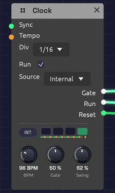
Four lamps count the beats of the bar, and INT says the Clock keeps its own time. The dots under the lamps are its sixteenths, swung at 62%: each orange one lands late. Jacks light while their gates are high.The Clock is the patch's metronome. It sends a steady stream of gate pulses at a tempo you set, for stepping a Sequencer, firing envelopes on the beat, or triggering a Sample & Hold.
It also sets the patch tempo and beat. Tempo-synced modules follow it without a cable: the Delay with its Sync set to a note length, and the LFO with its Tempo set to a division. See Tempo and Sync.
The Clock can keep its own time, follow the MIDI clock of a DAW, drum machine or another synth, or join an Ableton Link session, so the patch plays in time with them. On Auto it does both: it leads until a drum machine plays, follows it while it does, and carries the groove on when it stops.
The display
Four lamps show the beats of the bar. The lamp of the beat playing flashes as the beat lands and fades through it, and the downbeat flashes brightest. A thin line under the lamps sweeps across the bar, with a dot where each pulse falls. With Swing turned up, the late pulses are drawn in orange, pushed along towards the next one. When the Clock stops, the beat it stopped on keeps a faint outline.
Beside the lamps, a badge shows where the time comes from: INT for the Clock's own BPM, MIDI when it follows a MIDI clock, AUTO when it leads or follows, or LINK when it plays in a Link session. The MIDI badge fills in while clock ticks are coming in, and the AUTO badge while a device leads. The LINK badge fills in while anyone else is in the session, with a bubble on its corner counting them. Hover over the display to see what the Clock is doing.
On MIDI and Auto, a line under the lamps says who leads: Soba leads, or the device's name in MIDI purple, such as Digitakt leads. On MIDI it reads Waiting for clock until ticks arrive.
Inputs
| Port | Signal Type | Description |
|---|---|---|
| Sync | Gate (Green) | A rising edge restarts the beat, so the next pulse starts right away |
| Tempo | Control (Orange) | The BPM knob's jack. Bends the tempo around the knob by octaves: +1 doubles it, −1 halves it. See Tempo CV |
| MIDI | MIDI (Purple) | The jack on the title bar. From a MIDI In: the device whose MIDI clock it follows, in place of its own Device |
Outputs
| Port | Signal Type | Description |
|---|---|---|
| Gate | Gate (Green) | One pulse per division. The jack lights while the gate is high |
| Run | Gate (Green) | High while the Clock runs. Patch it into a sequencer's Run so it stops when the Clock does |
| Reset | Gate (Green) | A 5 ms pulse when the Clock starts from the top: when Run is ticked, a MIDI Start arrives (on MIDI or Auto), or a Link session starts playing. Patch it into a sequencer's Reset |
Parameters
| Control | Range | Default | Description |
|---|---|---|---|
| BPM | 20 – 300 BPM | 120 | Tempo in beats (quarter notes) per minute. A cable in its jack bends it; see Tempo CV |
| Gate | 1 – 99% | 50% | How much of each pulse the gate stays high |
| Div | 1, 1/2, 1/4, 1/8, 1/16 | 1/4 | Dropdown on the node. Pulse rate relative to the beat |
| Run | On / Off | On | Checkbox on the node. Off holds the gate low and pauses the clock; on starts it from the top |
| Source | Internal / MIDI / Link / Auto | Internal | Dropdown on the node. Internal keeps time at BPM; MIDI follows the MIDI clock on the MIDI input; Link plays in an Ableton Link session (builds with Link only); Auto leads until a MIDI clock plays, follows it, and carries on when it stops. See Leading or following |
| Swing | 50 – 75% | 50% | Delays every second pulse. 50% is straight; see Swing |
Divisions
BPM counts quarter notes, and Div sets how many pulses that makes:
| Div | One pulse every | At 120 BPM |
|---|---|---|
| 1 | 4 beats (a bar of 4/4) | 2 s |
| 1/2 | 2 beats | 1 s |
| 1/4 | Beat | 500 ms |
| 1/8 | Half beat | 250 ms |
| 1/16 | Quarter beat | 125 ms |
A Clock has one output. For a second rhythm, divide its pulses with a Clock Divider: a sixteenth Clock divided by 3 plays dotted eighths against it, and divided by 64 pulses once every four bars, slower than the Clock's slowest setting. The divider counts the Clock's own pulses, so the two can never drift apart, and changing the BPM moves both.
Gate length
Gate sets how long each pulse stays high, as a share of the time between pulses. At 50% the gate is high for half of each pulse. Short gates (5 to 20%) suit drums and plucks: the envelope gets its attack and goes straight to release. Long gates (80 to 99%) hold an envelope in its sustain, so notes run nearly into one another.
Swing
Straight pulses are metronomic. Swing makes them shuffle, the way drum machines do: the pulses come in pairs, and the second of each pair arrives late. The knob says where it lands, as a share of the pair.
| Swing | The second pulse lands | Feel |
|---|---|---|
| 50% | Halfway: straight | A grid |
| 54 – 60% | A little late | A pocket: the groove most hip-hop, house and funk sits in |
| 66.7% | Two thirds of the way | A triplet shuffle, as in a blues or a swing band |
| 75% | Three quarters of the way | A dotted shuffle, hard and bouncy |
At Div 1/16 the pairs are eighth notes, so the off-beat sixteenths swing; at 1/8 the pairs are beats, and the off-beat eighths swing. The first pulse of every pair stays on the grid, so the downbeats, the bar length, a sequencer's EOC and a synced Delay or LFO are exactly where they'd be without swing. Only the late pulses move.
Each late pulse's gate is shortened with its slot: Gate is a share of the time left before the next pulse, so even at 99% and 75% swing every pulse has its own edge. A Sequencer on a swung clock does the same with its notes, long on the beat and short off it.
Swing moves everything the Clock drives. To swing one part and not another, such as hats against a straight kick, give the swung part its own Clock at the same BPM, then press Stop and Play so both start from the top together. From then on they stay locked to the sample.
Tempo CV
The BPM knob has a jack. A CV there bends the tempo around the knob, by octaves: +1 doubles it, −1 halves it. Because the steps are octaves, an even ramp in the CV is an even change to the ear, the way a player slows.
| CV | Tempo |
|---|---|
| 0 | The knob's |
| −0.07 | 5% slower |
| −0.15 | 10% slower |
| −0.23 | 15% slower |
| −0.42 | Three quarters |
| −1 | Half |
| +1 | Double |
For any other change, the CV is log₂ of the new tempo over the old: log₂ 0.9 = −0.15 for 10% slower.
The knob still turns while a cable is in its jack, and it reads the tempo the Clock is actually playing. The tempo stays within the knob's 20 to 300 BPM.
Everything that keeps time by the Clock follows it. A sequencer's steps lengthen, and its gates with them, since a gate is a share of its step. An Arranger's sections stay in bars and only their seconds change. A Clock Divider counts the same pulses. The patch tempo bends too, so a synced Delay's echoes stretch and a synced LFO slows with the Clock.
The jack can take a cable from a module the Clock itself drives, such as an Arranger's lane. That cable closes a loop, so the Clock hears it one block late, a few milliseconds that a tempo never notices. While the Clock follows MIDI, Tempo CV does nothing: the master sets the tempo.
Sync and Run
A rising edge at Sync restarts the beat from the top. Use it to line the Clock up with another Clock, a sequencer's EOC, or any trigger. The Clock keeps its own tempo; Sync only moves where the beat falls. While the Clock follows MIDI, Sync does nothing: the MIDI clock places the beat.
Unticking Run holds the gate low and stops the clock where it is. Ticking it again starts from the top of the bar, the way a drum machine's Play button does, and fires Reset. Patch Run and Reset into a Sequencer and the sequence stops and starts with the Clock, always from step 1.
The Clock counts its beats with enough precision that even the slowest clock lands every pulse on its exact sample, however long it runs. Two Clocks at related tempos stay locked together.
The patch tempo
The Clock's BPM is the tempo for the whole patch, and its beat is the patch's beat. A Delay set to sync to 1/8 echoes on the eighth note of whatever the Clock is playing, and if you change the BPM the echoes move with it. An LFO synced to 1 bar sweeps once per bar, starting on the Clock's downbeat. Without a Clock in the patch, synced modules assume 120 BPM.
If a patch has more than one Clock, synced modules follow the first one in the patch's processing order (usually the one nothing else feeds), so give them all the same BPM.
Following MIDI clock
Set Source to MIDI to slave the Clock to a MIDI clock master, such as a DAW, a drum machine or a hardware sequencer. Tick the master's port in the MIDI In menu, and set the master to send MIDI clock to it. In most DAWs this is a Send MIDI Clock or Sync setting on the MIDI output.
With several devices open, choose the master under Device in the Clock's right-click menu, so a second device sending clock doesn't pull it off time (see Listening to one device), or patch a MIDI In set to it into the Clock's MIDI input. MIDI clock has no channel, so a MIDI In's Channel doesn't stop it.
- Tempo. The Clock measures the master's tempo from the spacing of its clock ticks (24 per beat), fitted over the last two beats so that MIDI timing jitter averages out. The BPM knob dims and reads the received tempo, and every synced module follows it. When the master changes tempo, the Clock catches up within two beats. Until ticks arrive, the knob reads No clock.
- Position. The Clock counts the ticks, so its beat is always exactly where the master's is, whatever the tempo. It can't drift.
- Start restarts from the top: the next tick is the downbeat. The Clock fires Reset, and Run goes high with the downbeat.
- Stop holds the Clock where it is, and drops Run and the gate.
- Continue plays on from where it stopped. If the master located first (a Song Position message, which DAWs send when you move the playhead), it plays on from there.
- Run still works as an on/off switch: the Clock runs only when it's ticked and the master is playing.
- Some clock sources send only ticks, never Start or Stop. The Clock runs on their ticks alone.
The Gate follows the master's beat too, so Div 1/16 pulses on every sixteenth of the DAW's grid. Patch Run and Reset into a sequencer to have it start, stop and restart with the DAW's transport.
Soba never sends its clock back to the device it follows. A port in the Rig that plays the same device as the master (a Digitakt in and a Digitakt out, say) is sent none of the clock while the master leads, and its Clock reads leads in purple. So a drum machine set to both send and receive clock can't hear its own clock come back late and chase itself. The rest of the rig still gets Soba's clock, so the master leads the whole room.
Soba's own Play button still has to be on: while Soba is stopped, it doesn't listen.
Leading or following: Auto
Sometimes Soba leads the room, and sometimes a drum machine or a tracker does. Set Source to Auto and the Clock takes whichever role is free, with no knob to turn when the leader changes:
- Soba leads to begin with. The Clock keeps its own time at BPM, as on Internal, and sends it to every port whose Clock is on.
- A device starts playing (it sends Start, or its clock ticks start arriving) and the Clock follows it, exactly as on MIDI: its tempo, its beat, its Start and Continue. Start restarts the Clock from the top and fires Reset. The BPM knob dims and reads the device's tempo.
- The device stops (it sends Stop, or its ticks stop for a quarter of a second) and Soba leads again. The Clock carries on from the beat it had reached, at the device's tempo, with no gap and no jump, and the BPM knob turns to that tempo. Turn the knob and the tempo is yours again.
Many drum machines keep sending clock ticks while they're stopped. Those don't make them lead: only playing does. A device that sends only ticks, never Start or Stop, leads while they come, and picks up from the beat Soba had reached rather than restarting it.
Choose the device under Device in the Clock's right-click menu, so only that one can lead. On Any, whichever device sends clock leads.
When Soba takes the lead back, the ports of the device that led get Soba's clock again, so it can follow along, but not a Continue: you stopped it, so it stays stopped until Soba's transport next starts (press Stop and Play). Ports set to Clock only follow the tempo straight away.
Playing in a Link session
Ableton Link keeps apps on the same network in time with each other, with no cables and no master to set up: Live, Bitwig, Reason, Traktor, dozens of phone apps, and other copies of Soba. Set Source to Link and the Clock joins the session. Every app in it plays at one tempo, with its bars lined up.
- Tempo. The Clock plays at the session's tempo, and the BPM knob follows it: when another app changes the tempo, the knob turns to match. Turn the knob yourself and the whole session changes tempo with you. The Tempo jack does nothing while the Clock follows Link.
- Bars. The Clock's downbeats land on the session's: beat 1 of Soba's bar is beat 1 of Live's. Bars are four beats long.
- Start and stop. Link shares the transport too (Start Stop Sync, which other apps may have to switch on). Tick Run and every app in the session starts. With others in the session, the start waits for the next bar so it lands in phase. When another app starts or stops, the Clock does too, and its Run box follows. Starting fires Reset, so patched sequencers start from step 1 on the downbeat.
- Joining. A Clock that joins a session already playing takes the session's tempo and plays along. One that has the session to itself sets it from its own BPM and Run.
The badge reads LINK, and fills in with a count of the other apps while there are any. Soba joins the network only while a Clock follows Link, and leaves a second after the last one stops (or Soba is stopped).
Link is in the desktop app when it's built with Link: see Build with Ableton Link. The browser version can't join a session and doesn't offer it. A patch saved with Source on Link and opened in a build without Link keeps its own time at BPM.
Playing in a DAW
In the plugin, Source offers Host where the app offers Link. Set it and the Clock plays in the DAW's time:
- Tempo. The Clock plays at the DAW's tempo, tempo changes and all. The BPM knob shows it and can't be turned. The Tempo jack does nothing while the Clock follows the host.
- Beat. The Clock's beat is the DAW's: beat 1 of a Soba bar is beat 1 of the song's, wherever playback starts.
- Start and stop. The Clock runs while the DAW plays, if Run is on. Starting fires Reset, so patched sequencers start from step 1 as the song does.
The badge reads HOST, filled in while the DAW plays. A patch saved with Source on Host follows Link when it's opened in the app (or keeps its own time in a build without Link), and a Link patch opened in the plugin follows the DAW.
Patch examples
Stepping a sequencer
[Clock Gate] ──> [Sequencer Clock]
[Sequencer Pitch] ──> [Oscillator V/Oct]
[Sequencer Gate] ──> [ADSR Gate]
Set Div to 1/8 or 1/16 for a running bassline.
Notes on the beat
[Clock Gate] ──> [ADSR Gate]
[ADSR Out] ──> [VCA CV]
[Oscillator Out] ──> [VCA In] ──> [Audio Output]
A drone that sounds once per pulse. Lower the BPM to 40 to 60 and lengthen the envelope's release for slow, ambient swells.
A sequencer that starts and stops with the Clock
[Clock Gate] ──> [Sequencer Clock]
[Clock Run] ──> [Sequencer Run]
[Clock Reset] ──> [Sequencer Reset]
Untick and tick the Clock's Run, or press Stop and Play in your DAW with Source on MIDI, and the sequence starts again from step 1 on the downbeat.
A shuffled groove
Set Div to 1/16 and Swing to about 58% under a drum pattern. Every off-beat sixteenth lands a little late, and the hats stop sounding like a metronome. The Backbeat recipe has one to try it on.
Slowing into the last chord (rit.)
[Clock Gate] ──> [Sequencer Clock]
[Clock Gate] ──> [Arranger Clock]
[Arranger Lane 1] ──> [Attenuverter In] (Amount −0.23)
[Attenuverter Out] ──> [Clock Tempo]
Every pianist broadens into the last chord of a piece, and a sequenced patch can too. In the Arranger, set lane 1 to Jump to 0 at the start of the song, then to Ramp to 100% on Exp over the last two bars. The Attenuverter turns the lane into a slowing: at −0.23, the last bar ends 15% slower than it began, a gentle ritardando. At −0.42 it slows to three quarters, broad enough to hear as a gesture.
Exp holds the tempo nearly steady and then gives way into the end, as players do. Linear slows evenly, and Log slows at once and settles, more like a new, slower section (meno mosso) than an ending. Other moves on the same cable:
- A positive Amount turns the same ramp into an accelerando.
- A Jump changes tempo on a section's downbeat.
- Glide on the lane eases a Jump, so the change takes a beat or two.
Put the Arranger's last section after the ramp, with the final chord in it, and the chord lands at the slower tempo. From One Sine ends this way, broadening over its last four bars.
An LFO in time
Set the LFO's Tempo to a division, such as 1 bar. It needs no cable from the Clock: it sweeps once a bar, from the Clock's downbeat.
Echoes in time
[Clock] (BPM 100)
[Synth voice] ──> [Delay In L] (Delay Sync: 1/8D)
The Delay needs no cable from the Clock to follow its tempo.
Notes
- The Clock is monophonic. It sends the same gate to every voice of a polyphonic module.
- The Clock runs with the transport. Stop halts it with the rest of the patch, and Play starts it again from the top of the beat.
- Following MIDI, the Clock ignores MIDI channels: clock messages have none. It ignores Tempo CV too.
- Clock ticks don't scroll through the MIDI Monitor, which would show little else. Start, Stop, Continue and Song Position do.
Related modules
- Sequencer, the Clock's most common partner
- Clock Divider to divide the Clock's pulses into longer phrases and odd rhythms
- ADSR Envelope to turn pulses into notes
- LFO, which locks to the Clock's beat when synced
- Delay, which follows the Clock's tempo when synced
VCA
Module ID util.vca · Category Utility
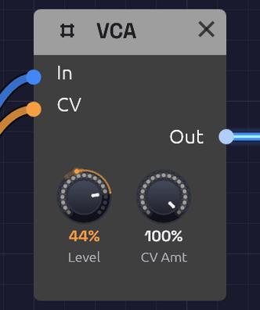
Level sets the ceiling; whatever arrives at CV opens the gate up to it. Here Level is at 80% and an envelope holds a note at 44%: the orange arc runs from the one down to the other.A VCA (voltage-controlled amplifier) sets how loud a signal is, moment to moment, from a control signal. Patch an envelope into CV and a droning oscillator becomes a note that starts when you press a key and fades when you let go. Patch an LFO in instead and you have tremolo.
The VCA doesn't care what it's amplifying. Run an LFO through it instead of audio and the CV now sets how much modulation gets through, which is how you make vibrato that fades in or a filter wobble that follows an envelope.
The VCA is polyphonic. Patch a polyphonic voice through it and every voice gets its own gain, set by its own channel of the CV cable.
Inputs
| Port | Signal Type | Description |
|---|---|---|
| In | Audio (Blue) | The signal to shape |
| CV | Control (Orange) | Gain, from 0 to 1. Values outside that range are clamped. With nothing patched, CV sits at 1 (fully open) |
Outputs
| Port | Signal Type | Description |
|---|---|---|
| Out | Audio (Blue) | The input, scaled by Level and CV |
Parameters
| Knob | Range | Default | Description |
|---|---|---|---|
| Level | 0 – 100% | 100% | Overall output level |
| CV Amt (CV Amount) | 0 – 100% | 100% | How much CV controls the level. At 0% the CV is ignored |
How it works
The VCA multiplies the input by a gain:
gain = Level × (1 - CV Amount + CV × CV Amount)
Out = In × gain
With CV Amt at 100% (the default), the gain is Level times the CV: silent at CV 0, full Level at CV 1. Lower CV Amt and the VCA never closes completely. At 50%, a CV of 0 leaves the signal at half Level, so the envelope or LFO only takes away half the volume. That's a quick way to get a gentle tremolo, or a note that dips rather than stops.
While CV is patched, the Level knob shows the gain the VCA is running. An orange arc runs from where you set it down to a bead at the gain, and the number under the knob reads it in orange. Under an envelope, the bead falls back with each note, and a faint swath shows how far the notes have opened.
The response is linear: a CV of 0.5 gives half the amplitude. Envelopes with curved stages (see ADSR Envelope) give the fade its shape.
Both knobs are smoothed, so turning them while a note plays doesn't click.
Bipolar signals into CV
CV is clamped to 0–1, so the negative half of a bipolar signal shuts the VCA. A bipolar LFO into CV gives a tremolo that's silent half the time. For an even tremolo, switch the LFO's Bipolar off so it swings from 0 to 1.
For the same reason, an audio-rate oscillator into CV doesn't give true ring modulation. The VCA passes the top half of the modulator's wave and blocks the bottom half: a rougher amplitude modulation with the carrier still audible.
Patches
Envelope-shaped note
The VCA's main job. The envelope opens it on each key press and closes it on release:
[Note In Pitch] ──> [Oscillator V/Oct]
[Note In Gate] ──> [ADSR Gate]
[Oscillator Out] ──> [VCA In]
[ADSR Out] ──> [VCA CV]
[VCA Out] ──> [Audio Output Mono]
Without the VCA, the oscillator drones forever.
Tremolo
[LFO Out] ──> [VCA CV] (LFO Bipolar off, Rate 4–8 Hz)
[Oscillator Out] ──> [VCA In] ──> [Audio Output Mono]
Turn CV Amt down to make the tremolo shallower.
Modulation that follows a note
Put an LFO through the VCA and let an envelope set how much of it reaches the filter. The wobble swells as the note develops:
[LFO Out] ──> [VCA In]
[ADSR Out] ──> [VCA CV] (slow Attack)
[VCA Out] ──> [SVF Filter Cutoff]
A polyphonic voice
With Note In feeding a polyphonic oscillator and envelope, one VCA handles every voice. Each voice's envelope opens its own channel:
[Note In Gate] ──> [ADSR Gate]
[Oscillator Out] ──> [VCA In]
[ADSR Out] ──> [VCA CV]
[VCA Out] ──> [Audio Output Mono]
Voices add up at the output, so a four-note chord is about four times as loud as one note. Pull Level down to leave headroom. A mono cable into CV (a single LFO, say) is shared by every voice.
Placement
The VCA usually sits after the filter and before the effects:
[Oscillator] ──> [Filter] ──> [VCA] ──> [Delay] ──> [Reverb] ──> [Audio Output]
That way the delay and reverb hear each note's release and carry its tail on after the VCA has closed.
Related modules
- ADSR Envelope: the usual CV source
- LFO: tremolo and modulation depth
- Attenuverter: scale or invert a CV before it reaches the VCA
- Mix: combine several VCA outputs
- Mixer: place VCA outputs in the stereo field
Attenuverter
Module ID util.attenuverter · Category Utility
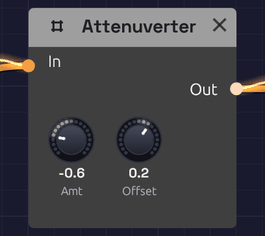
Amount scales and flips the input; Offset slides the result up or down.An attenuverter turns a signal down, turns it upside down, or both. The name joins attenuate and invert. It also has an Offset knob that adds a fixed value afterwards. Between them, the two knobs adapt one module's output to what another module's input expects. Use it to tame an LFO that swings too wide, to make an envelope close a filter instead of opening it, or to turn a 0–1 signal into a -1–1 one. At Range ×4 it can also make a signal bigger, to sweep an input measured in octaves a long way.
With nothing patched into In, the output is just the Offset: a steady, hand-set control value you can patch anywhere.
The Attenuverter is polyphonic. Each channel of a polyphonic cable is scaled on its own, with the same knob settings.
Inputs
| Port | Signal Type | Description |
|---|---|---|
| In | Control (Orange) | The signal to scale, invert or shift. Audio patches in too |
Outputs
| Port | Signal Type | Description |
|---|---|---|
| Out | Control (Orange) | In × Amount + Offset, kept within -1 to +1 (-4 to +4 at Range ×4) |
Parameters
| Knob | Range | Default | Description |
|---|---|---|---|
| Amt (Amount) | -1 to +1 | +1 | Scales the input. Negative values flip it upside down |
| Offset | -1 to +1 | 0 | A constant added after scaling |
| Range | ×1, ×4 | ×1 | What Amount is multiplied by. At ×4, Amount reaches ±4 and the output may too |
How it works
Out = In × Amount × Range + Offset (limited to ±Range)
| Amount | Effect |
|---|---|
| +1 | The input passes unchanged (the default) |
| +0.5 | Half as strong |
| 0 | The input is gone; only Offset remains |
| -0.5 | Half as strong, upside down |
| -1 | Full strength, upside down |
At Range ×1 the output never goes past ±1. The Attenuverter can make a signal smaller or flip it, but it can't make it bigger. A sum that would exceed ±1 flattens at the limit, so if a large Offset clips the peaks of your signal, turn Amount down to make room.
Range ×4 multiplies Amount by four, so the knob's ends are ±4 and its middle still 0. The Amt knob reads the gain it gives: turned to the same place as 0.5, it reads 2.0. The output's limit widens to ±4 with it. Most inputs read only -1 to +1 and would clip anything bigger, so keep ×1 for them. ×4 is for inputs counted in octaves, where +1 is only a doubling: an ADSR's stage CV, a Clock's Tempo, a Slope's Rise and Fall. A filter's Cutoff counts in octaves too, but its own CV Amt already reaches ±4.
Patches saved before Range existed open at ×1 and sound as they did.
Both knobs are smoothed, so turning them doesn't step or click.
Patches
Reduce modulation depth
An LFO at full strength is too much for vibrato. Turn it down before it reaches the oscillator:
[LFO Out] ──> [Attenuverter In] ──> [Oscillator Exp FM]
(Amt 0.2)
Invert an envelope
A negative Amount turns the envelope upside down, so the filter closes as the note starts and opens again as it releases:
[ADSR Out] ──> [Attenuverter In] ──> [SVF Filter Cutoff]
(Amt -1)
The SVF's Cutoff input moves the cutoff in octaves around its knob, so set the Cutoff knob high and let the inverted envelope pull it down. (On a filter, a negative CV Amt does the same without an Attenuverter. This patch is for anything else an envelope should close.)
Unipolar to bipolar
An envelope runs from 0 to 1. With Amount 1 and Offset -0.5, it runs from -0.5 to +0.5, centered on zero. For the full -1 to +1 swing, it needs a gain of 2: Range ×4, Amount 2.0, Offset -1.
[ADSR Out] ──> [Attenuverter In] (Amt 1, Offset -0.5)
Bipolar to unipolar
A bipolar LFO swings from -1 to +1. Halve it and lift it by half to get 0 to 1:
[LFO Out] ──> [Attenuverter In] (Amt 0.5, Offset 0.5)
The LFO's own Bipolar switch does the same thing; this is for sources without one.
Sweep an octave input far
An LFO straight into an ADSR's Attack swings the attack only between half and double its knob. Scaled up four times, it swings four octaves each way: a 50 ms attack moves from about 3 ms to 0.8 s, so notes go from a snap to a slow swell and back.
[LFO Out] ──> [Attenuverter In] ──> [ADSR Attack]
(Range ×4, Amt 4.0)
Turn Amount down for a narrower sweep. At 2.0, the attack moves two octaves each way, from a quarter of the knob's time to four times it.
A fixed control value
Leave In empty and use Offset as a knob you can patch. One Attenuverter can hold several destinations at the same value:
[Attenuverter Out] ──> [SVF Filter Resonance]
──> [Ladder Filter Resonance]
Velocity to brightness, per voice
In a polyphonic patch, scale each voice's velocity before it moves the filter, so harder notes are brighter without the filter jumping a full octave. (The filter's own CV Amt at 0.5 does the same, if nothing else is patched into its Cutoff.)
[Note In Velocity] ──> [Attenuverter In] ──> [SVF Filter Cutoff]
(Amt 0.5)
Related modules
- VCA: scale a signal by another signal instead of by a knob
- Mix: add two signals together
- LFO and ADSR Envelope: the signals you'll most often scale
Mix
Module ID util.mix · Category Utility
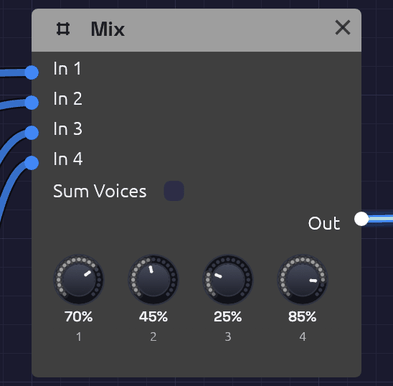
Four inputs, a level each, one sum.Mix adds up to four signals into one, each at its own level. It's the plain sum a patch reaches for most often: two envelopes into one filter's Cutoff, two noise colours into one VCA, a pad's oscillators into one filter, or an LFO and an envelope moving the same knob together.
Audio and control signals both patch in, so the same module mixes sound or modulation. To place sounds left and right, send them to a shared reverb, or mute and solo them as you play, use the Mixer.
Mix is polyphonic. A polyphonic cable stays one: each voice is summed on its own, with the same levels, and a mono cable into another input joins every voice. Switch on Sum Voices to add a polyphonic cable's voices together as well, into one channel (see A chord into one filter).
Inputs
| Port | Signal Type | Description |
|---|---|---|
| In 1 – In 4 | Audio (Blue) | The signals to add. Control signals patch in too |
Outputs
| Port | Signal Type | Description |
|---|---|---|
| Out | Audio (Blue) | Every input at its level, added together |
Parameters
| Knob | Range | Default | Description |
|---|---|---|---|
| 1 – 4 (Level 1 – 4) | 0 – 100% | 100% | How much of each input joins the sum |
| Sum Voices | on / off | off | Adds a polyphonic cable's voices into one channel too. Off, each voice is mixed on its own |
The levels are smoothed, so you can ride them while the patch plays without clicks.
How it works
Out = In 1 × Level 1 + In 2 × Level 2 + In 3 × Level 3 + In 4 × Level 4
Headroom
Anything within ±1 passes through untouched. Past that, the sum soft-clips: it bends smoothly over and eases toward ±1.5 without ever reaching it, so two full-scale signals come out at about 1.48. The same bend is on the Mixer's outputs.
The headroom above 1 is deliberate: summed control signals can add up past 1 without being clipped flat. (To open a filter further, turn up its CV Amt rather than summing envelopes.) For audio, the bend rounds off loud peaks, so bring the levels down to around 50–70% each when you add loud sources and want them clean.
Patches
Two modulation sources
A slow LFO and an envelope together: the filter follows each note and drifts as well.
[LFO Out] ──> [Mix In 1] (Level 1 around 30%)
[ADSR Out] ──> [Mix In 2]
[Mix Out] ──> [SVF Filter Cutoff]
The Afterglow example sweeps its arpeggio's filter this way.
Layered oscillators
Two oscillators, one quieter, into one filter:
[Oscillator A Out] ──> [Mix In 1]
[Oscillator B Out] ──> [Mix In 2] (Level 2 at 50%)
[Mix Out] ──> [SVF Filter In]
Generative Ambient starts from this: a triangle melody over a steady second oscillator, slightly out of tune with each other, so they beat.
A chord into one filter
A Chord Sequencer plays its chord on one polyphonic cable, and one Oscillator plays a saw for each voice. A filter after it filters each voice on its own, so a Ladder Filter's drive saturates each saw by itself, and the voices never rub against each other in the filter. To drive the chord as one sound, the way a pad of separate oscillators into one filter sounds, sum the voices first:
[Chord Sequencer Root] ──> [Oscillator A V/Oct] (the bass, an octave down)
[Chord Sequencer Pitch] ──> [Oscillator B V/Oct] (three voices)
[Oscillator A Out] ──> [Mix In 1]
[Oscillator B Out] ──> [Mix In 2] (Sum Voices on)
[Mix Out] ──> [Ladder Filter In]
With Sum Voices on, the bass joins the sum once. With it off, the bass would join each of the chord's three voices, and come out three times as loud once they were added together. From One Sine builds its pad this way.
Related modules
- Mixer: a stereo console, with pan, width, sends, mute and solo
- Attenuverter: scale or invert a signal before it joins the sum, to subtract one CV from another
- VCA: a level set by a CV
Mixer
Module ID util.mixer · Category Utility
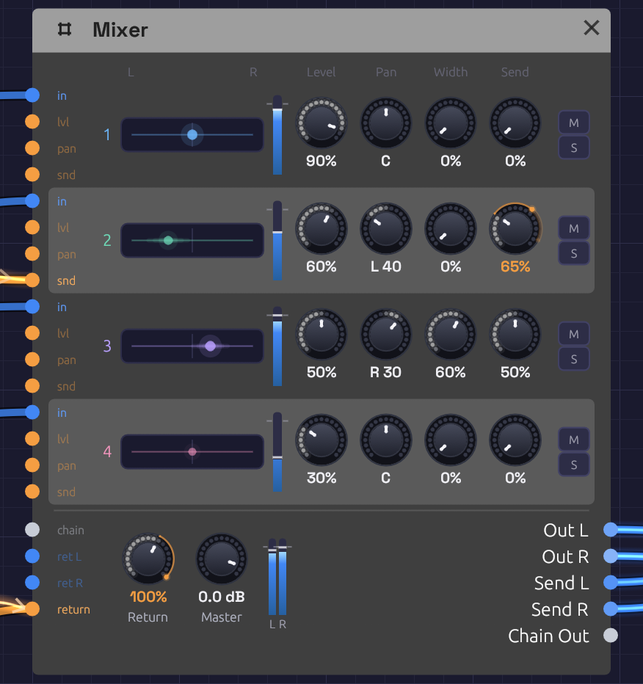
Four channel strips, a row each, over the bus row: the return, the master and the outputs. An LFO rides channel 2's Send and a slower one the Return: the orange arc on each knob runs from where it's set to where the CV has taken it.The Mixer is a small stereo console. It brings up to four channels together into a stereo pair, and each one has its own level, pan, width, send, mute and solo. Use it to place sounds left and right, to pan one to and fro with an LFO, to open a polyphonic pad across the stereo field, or to share one reverb among every channel and let a score ride how much of the room each part gets. For more than four channels, chain Mixers: one cable carries a Mixer's whole mix and its sends into the next.
Audio and control signals both patch into a channel. To add up CVs or mono signals, without placing them in the stereo field, use the smaller Mix.
Reading the node
The Mixer is a console turned on its side. Each channel is one row, read left to right the way its signal travels:
- Its jacks, on the left edge: in for the channel, then lvl, pan and snd, CV for its level, its pan and its send. A jack's label lights up when it's patched.
- Its number, in the channel's colour.
- Its lane of the stereo field, from L to R. A light shows where the channel sits. A polyphonic channel has a light per voice, fanned out by its Width. The lights brighten with the channel's level. A channel with its Send up, by its knob or its CV, blooms sideways along its lane, wider the more it sends, the way a sound spreads into a room. A hollow ring is a voice with nothing to play, and a grey ring is a channel you can't hear, because it's muted or another channel is soloed.
- Its meter: the level after its fader. It dims while the channel can't be heard.
- Its knobs: Level, Pan, Width and Send, under the titles at the top.
- M mutes the channel and turns red. S solos it and turns amber.
Below the strips is the bus row. On the left come in the chain from another Mixer and the effect return (ret L and ret R). Their labels brighten with the level they bring. Under them, return takes CV for the Return knob. Then come the Return and Master knobs and the stereo output meter, and on the right, every output.
Inputs
| Port | Signal Type | Description |
|---|---|---|
| Ch 1 – Ch 4 (in) | Audio (Blue) | The channels. A polyphonic cable keeps its voices apart, for Width |
| Level 1 – Level 4 (lvl) | Control (Orange) | CV added to each channel's level |
| Pan 1 – Pan 4 (pan) | Control (Orange) | CV added to each channel's pan. An LFO here pans it to and fro |
| Send 1 – Send 4 (snd) | Control (Orange) | CV added to each channel's send, so a score can step one part into the room alone |
| Return (return) | Control (Orange) | CV added to the Return knob. An Arranger lane here is the whole room's fader |
| Chain In | Bus (Steel) | Another Mixer's Chain Out: its mix joins this one after the faders, and its sends join this one's send bus |
| Return L, Return R | Audio (Blue) | An effect's output, added to the mix at the Return knob. It may come from an effect fed by this same Mixer. Return R copies Return L when only the left is patched, so a mono source comes in centred |
Outputs
| Port | Signal Type | Description |
|---|---|---|
| Out L, Out R | Audio (Blue) | The stereo mix |
| Send L, Send R | Audio (Blue) | The send bus: each channel at its Send knob, after its fader and pan. Patch it to a reverb or delay |
| Chain Out | Bus (Steel) | Out L/R and Send L/R on one cable, for the next Mixer's Chain In |
Parameters
| Control | Range | Default | Description |
|---|---|---|---|
| Level 1 – 4 | 0 – 100% | 100% | Each channel's volume |
| Pan 1 – 4 | L 100 – R 100 | C | Each channel's place in the stereo field |
| Width 1 – 4 | 0 – 100% | 0% | How far a polyphonic channel's voices fan out around its pan |
| Send 1 – 4 | 0 – 100% | 0% | How much of each channel goes to Send L and Send R |
| M (Mute 1 – 4) | on / off | off | Silences a channel |
| S (Solo 1 – 4) | on / off | off | Hears only the soloed channels |
| Return | 0 – 100% | 100% | Level of Return L and Return R in the mix |
| Master | −60 – +6 dB | 0 dB | Volume of the mix. At −60 dB it's silent. The sends don't follow it |
Levels, pans, widths, sends, Return and Master are smoothed, so you can ride their knobs while the patch plays without clicks. CV isn't smoothed: it's heard as it comes, so an envelope can open a channel sharply (see riding them from a score). Mute and solo fade over 10 ms, so they don't click either. A Pan knob's arc grows outward from the centre, so you can read which side a channel leans to at a glance. The readout says the same: C, or L or R and how far, out of 100.
How it works
Out L = (Ch 1 × Level 1 × left(Pan 1) + … + Chain L + Return L × Return) × Master
Out R = (Ch 1 × Level 1 × right(Pan 1) + … + Chain R + Return R × Return) × Master
Send L = Ch 1 × Level 1 × left(Pan 1) × Send 1 + … + Chain Send L
Send R = Ch 1 × Level 1 × right(Pan 1) × Send 1 + … + Chain Send R
The pan law
Panning is equal power: as a channel moves from left to right, one side fades as the other rises, and their power always adds up to the same. A sound swept across the field keeps its loudness all the way. In the centre each side is at −3 dB. Hard left, the right side is silent.
So a channel panned centre is 3 dB quieter on each side than it went in. To win that back, set Master to +3 dB.
Level, Pan, Send and Return CV
Each adds to its knob. A Level CV can take a channel from silence to full, but never past 100% or below silence. A Pan CV of +1 moves a centred channel hard right, and a bipolar LFO swinging ±1 sweeps it from side to side. Set the Pan knob off centre and the LFO swings around that point instead, stopping at the edge.
Send and Return CV work the way Level's does, from 0 to 100%. With a Send knob at 0, a lane at 1 is a full send: one part steps into the reverb alone while the rest stay dry. With the Return knob at 0, a lane into Return is the whole room's fader, so a song can open dry and close and bring the hall in for its second verse without spending two channels on the reverb. Canopy rides its room this way, dry for the beat and the whole hall for the Clearing.
A patched knob keeps its own setting. While the patch plays, a thin orange arc runs round its edge from where the knob is set to a bead where the CV has carried it, and the number under the knob reads that value in orange, so you can see a lane open the room.
None of them smooths its CV. A jump from an Arranger lane under a ringing note or a reverb tail clicks. Give the lane a Glide (40 ms saves a tail, a second suits a fade) or write the change as a Ramp, and the move is as smooth as a hand on a fader.
Mute and solo
M silences a channel. S solos it: while any channel is soloed, only the soloed ones are heard. Solo two channels to hear the pair. Mute wins over solo, so a muted channel stays silent even when it's soloed.
A soloed channel keeps its sends, so you hear it in its room. The return is never silenced by a solo, and a mix arriving on Chain In is, as if it were one more channel that isn't soloed. Solo works on one Mixer at a time: soloing a channel on a Mixer earlier in a chain doesn't silence the channels of the ones after it.
Headroom
At the default levels, two full-scale signals add up to twice full scale. Anything within ±1 passes through untouched. Past that, each output soft-clips: the sum bends smoothly over and eases toward ±1.5 without ever reaching it, so two full-scale signals come out at about 1.48. The bend rounds off the peaks of loud audio, so when you mix loud sources and want them clean, bring the levels down to around 50–70% each.
Sends and returns
Each channel's Send knob taps it after its fader, mute and pan, onto a stereo bus that leaves on Send L and Send R. Patch the bus into a reverb with its Mix at 100%, and bring the reverb back on Return L and Return R. One reverb then serves every channel, and each channel decides how much of the room it gets, as on a mixing console. A send follows its channel's fader, so a channel faded out leaves the room too.
The sends ignore Master: turning the mix down doesn't change what the effect hears. Return sets how loud the effect comes back.
The return loop. The send leaves the Mixer and the effect comes back into it, so the cables make a loop. Modules normally can't be patched in a loop, because each one needs its inputs before it can run. Return L and Return R are the exception. When their cable closes a loop, they hear the effect one audio block late: 256 samples, about 5.8 ms at 44.1 kHz and 5.3 ms at 48 kHz. For a reverb or a delay that's like a few more milliseconds of pre-delay, so take them off the reverb's PreD if the timing matters. A return fed from anywhere that isn't a loop is heard at once.
Patching a loop into any other input is still refused.
The return is also a spare stereo input with its own level. A mono source on Return L alone comes in centred, at its full level on each side, so it's a good place for a kick drum when the four channels are full.
Chaining Mixers
Two Mixers cascade like a console and its sidecar, over one cable. Patch one Mixer's Chain Out into the next one's Chain In. The cable is a Bus, drawn in pale steel, with four strands: the first Mixer's left and right, then its send bus's left and right. Its stereo image passes through untouched, and its sends join the second's, so one reverb on the last Mixer serves all eight channels. The last Mixer's Master sets the volume of the whole mix.
A Bus only goes into a Chain In. Nothing else would know which strand is which.
Polyphonic cables and Width
The Mixer hears each voice of a polyphonic cable on its own. With Width at 0% every voice sits at the channel's pan. That's the same as summing them first, so a whole polyphonic voice can go straight into a channel.
Turn Width up and the voices fan out across the field around the pan. They take evenly spaced places, alternating left and right from the outside in: the first voice hard left, the second hard right, the third just inside the first, and so on. Note In hands notes to voices in turn, and neighbouring voices sit on opposite sides, so even two notes held on an eight-voice cable land either side of the pan, and a chord opens up instead of sitting in the middle. Each voice keeps the power it had, so the chord is as loud spread as it was centred.
Each channel has its own Width, so a pad can fan out while a polyphonic lead on the next channel stays put. A place belongs to a voice, not to a note. A melody played on a polyphonic cable with its Width up moves from side to side as each note takes the next voice. That can sound lively. To keep a line steady, play it on a mono cable, or leave its Width at 0%.
The Mixer's Out and Send outputs carry one channel each. Effects after it hear a single stereo pair.
Patches
A wide pad
Hold a chord, and the Mixer spreads its voices across the field before the effects hear it:
[VCA Out] ──> [Mixer Ch 1] (VCA on a polyphonic voice, Width 1 at 80%)
[Mixer Out L] ──> [Chorus In L]
[Mixer Out R] ──> [Chorus In R]
The Lush Pad example is built this way.
Auto-pan
A slow LFO moves a sound from side to side:
[Oscillator Out] ──> [Mixer Ch 1]
[LFO Out] ──> [Mixer Pan 1] (LFO Bipolar on, 0.2 Hz)
[Mixer Out L] ──> [Audio Output Left]
[Mixer Out R] ──> [Audio Output Right]
Turn the LFO's Rate up to 4–6 Hz for a tremolo-like shimmer between the speakers.
Placing parts
Give each part its own place, the way a band stands on a stage. Keep bass and kick in the middle, and move leads and pads out to the sides:
[Bass VCA Out] ──> [Mixer Ch 1] (Pan C)
[Lead VCA Out] ──> [Mixer Ch 2] (Pan R 35)
[Pad VCA Out] ──> [Mixer Ch 3] (Pan L 30)
[Mixer Out L] ──> [Reverb In L]
[Mixer Out R] ──> [Reverb In R]
The Afterglow example sets its arpeggio a little right of its pad, so the ping-pong echoes answer from the other side.
One room for every channel
Send each channel as much reverb as it needs, through one reverb:
[Mixer Send L] ──> [Reverb In L] (Reverb Mix at 100%)
[Mixer Send R] ──> [Reverb In R]
[Reverb Out L] ──> [Mixer Return L]
[Reverb Out R] ──> [Mixer Return R]
[Mixer Out L] ──> [Audio Output Left]
[Mixer Out R] ──> [Audio Output Right]
Turn Send up on the channels that should sit further back. A vocal-like lead might send 20%, a pad 50%, and a bass nothing at all.
Riding the room from a score
Two Arranger lanes: one opens the hall for the second verse, the other lets the lead alone into it for the bridge:
[Arranger Lane 1] ──> [Mixer Return] (Return knob at 0; lane ramps 0 → 1 over two bars)
[Arranger Lane 2] ──> [Mixer Send 2] (Send 2 at 0; lane jumps to 0.6, Glide 1 s)
Every other channel keeps its own Send, so the room it opens is the one the mix already shares.
More than four channels
Chain Mixers. The first one's mix and sends pass through the second on one cable:
[Mixer A Chain Out] ──> [Mixer B Chain In]
[Mixer B Send L] ──> [Reverb In L]
[Mixer B Send R] ──> [Reverb In R]
[Reverb Out L] ──> [Mixer B Return L]
[Reverb Out R] ──> [Mixer B Return R]
[Mixer B Out L] ──> [Audio Output Left]
[Mixer B Out R] ──> [Audio Output Right]
The Backbeat example compresses its kick and snare on a drum-bus Mixer chained into the main one, with one room for the whole kit. From One Sine chains four.
Related modules
- Mix: four signals added into one, for CVs and mono sums
- VCA: level control from a CV
- Attenuverter: scale, invert or offset a signal before mixing, such as an LFO before it reaches Pan
- Audio Output: the final mix, with metering and a limiter
Sample & Hold
Module ID util.sample_hold · Category Utility
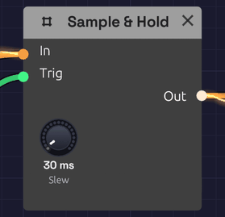
Each trigger freezes the input; the output holds until the next one.Sample & Hold takes a snapshot of its input each time a trigger arrives, and holds that value steady until the next trigger. A smooth, continuous signal goes in; a staircase of held steps comes out, one step per trigger.
That staircase is the sound of classic analog randomness: a filter that jumps to a new brightness on every beat, or a melody that wanders. The Slew knob softens the steps into glides.
Sample & Hold is polyphonic. Patch polyphonic cables in and each voice samples and holds its own channel. A mono trigger is shared by every voice, so all of them step together.
Inputs
| Port | Signal Type | Description |
|---|---|---|
| In | Control (Orange) | The signal to sample. Audio patches in too |
| Trig | Gate (Green) | Each rising edge (crossing 0.5 on the way up) captures the input. Takes gate cables only |
Outputs
| Port | Signal Type | Description |
|---|---|---|
| Out | Control (Orange) | The held value, steady until the next trigger |
Parameters
| Knob | Range | Default | Description |
|---|---|---|---|
| Slew | Off – 1 s | Off | Glide time to each new value. Off, the output jumps |
How it works
In: ~~~~~/\/\~~~~~/\~~~~ (moving signal)
Trig: _|‾|____|‾|____|‾|__ (rising edges)
Out: __‾‾‾‾‾‾____‾‾‾‾‾‾‾‾ (one held value per edge)
Only the rising edge counts: how long the trigger stays high makes no difference. With nothing patched into In the module holds 0.
Slew
With Slew above zero, the output glides to each new value at a steady rate instead of jumping. The knob is the time a change of 1.0 takes, so a 0.2 s Slew moves from 0 to 1 in 0.2 s and from 0 to 0.5 in 0.1 s. Small steps arrive sooner than large ones, the way a portamento circuit behaves.
Short slews (a few tens of milliseconds) take the click off stepped modulation while keeping its rhythm. Long ones turn the staircase into a slow, wandering curve.
Patches
Stepped random modulation
Sample Noise on every clock and each step lands on a value with no relation to the last:
[Noise White] ──> [Sample & Hold In]
[Clock Gate] ──> [Sample & Hold Trig]
[Sample & Hold Out] ──> [SVF Filter Cutoff]
The filter jumps to a new brightness on every clock. Add a little Slew to smooth the jumps. Patch Out into an Oscillator's V/Oct instead and you have the classic random melody; the Noise Level knob sets how far it wanders.
A fast oscillator sampled by a slower clock does a similar job with a pattern you can hear. Tune it to a frequency with no simple relation to the clock (Saw, Oct +2, Fine a few cents off) and every sample lands at a different point in its cycle.
Stepped LFO
Sample a slow LFO with a faster clock and it climbs and falls in steps:
[LFO Out] ──> [Sample & Hold In] (LFO Rate 0.2 Hz)
[Clock Gate] ──> [Sample & Hold Trig] (Clock Div 1/16)
[Sample & Hold Out] ──> [Oscillator V/Oct]
Into V/Oct, this gives a gliding arpeggio of unquantized pitches. Run it through an Attenuverter first to narrow the range.
Hold a value per note
Trigger from a keyboard gate and each note gets a fresh value that stays put while the key is held:
[LFO Out] ──> [Sample & Hold In]
[Note In Gate] ──> [Sample & Hold Trig]
[Sample & Hold Out] ──> [SVF Filter Cutoff]
Every note sounds a little different, like a player who never strikes the same way twice. In a polyphonic patch, feed Trig from Note In's Gate and each voice holds its own value.
Gliding steps
Raise Slew to 0.1–0.3 s on any of the patches above and the steps become smooth curves that still move in time with the clock.
Related modules
- Noise: the classic signal to sample
- Clock: steady triggers
- LFO: a slow signal to sample
- Attenuverter: scale the held values to a useful range
- Quantizer: snap held values to the notes of a scale
- Step Sequencer: stepped values you choose yourself
- Slope: slew any signal, not only a held one, with separate rise and fall rates
Quantizer
Module ID util.quantizer · Category Utility
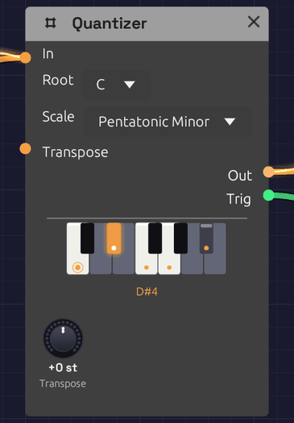
C minor pentatonic: its five keys are lit, the root C is ringed, and D#, the note playing now, glows.A Quantizer snaps a pitch to the nearest note of a scale. Random voltages, LFOs and Sample & Hold can produce any pitch at all, most of them between the keys of a piano. Through a Quantizer, every one of them lands on a note of the key you choose, so chance plays melodies.
The node shows its scale on a one-octave piano. Keys in the scale are lit and carry a dot, and the root's dot is ringed. Keys outside the scale are dimmed. The note the Quantizer is playing glows, and its name appears under the keys. Click a key to add it to the scale or take it out, and the Scale menu switches to Custom.
The Quantizer is polyphonic. Patch in a polyphonic cable and each voice is quantized on its own, so a chord from Note In comes out as a chord in the scale. The piano lights every note playing.
Inputs
| Port | Signal Type | Description |
|---|---|---|
| In | Control (Orange) | The pitch to quantize, in V/Oct: 0 is C4, +1 is C5, -1 is C3, as on Note In |
| Transpose | Control (Orange) | Added to the Transpose knob, in V/Oct and rounded to whole semitones. A sequencer's Pitch here moves the key by the interval it plays |
Outputs
| Port | Signal Type | Description |
|---|---|---|
| Out | Control (Orange) | The nearest note of the scale, plus Transpose, in V/Oct |
| Trig | Gate (Green) | A 10 ms pulse each time Out moves to a new note, and never while it holds one |
Parameters
| Control | Range | Default | Description |
|---|---|---|---|
| Root | C – B | C | The scale's first note |
| Scale | See below | Major | Which notes Out may play |
| Transpose | ±12 st | 0 st | Shifts Out, and so the key, in semitones |
Scales
| Scale | Notes in C | Sound |
|---|---|---|
| Chromatic | all twelve | Every semitone. Steps pitches without choosing a key |
| Major | C D E F G A B | Bright, settled |
| Natural Minor | C D E♭ F G A♭ B♭ | Dark, sad |
| Dorian | C D E♭ F G A B♭ | Minor, with a hopeful sixth |
| Mixolydian | C D E F G A B♭ | Major, with a bluesy seventh |
| Harmonic Minor | C D E♭ F G A♭ B | Minor, with a tense, exotic leading note |
| Pentatonic Major | C D E G A | Five notes with no half steps: nothing clashes |
| Pentatonic Minor | C E♭ F G B♭ | The same calm, in minor. Rock and blues riffs |
| Blues | C E♭ F G♭ G B♭ | Minor pentatonic plus the "blue" flat fifth |
| Whole Tone | C D E F♯ G♯ B♭ | Every step a whole tone: dreamy, without a home |
| Custom | the keys you click | Your own scale, saved with the patch |
How it works
The input is measured in semitones, and Out takes the scale note closest to it. A pitch exactly between two scale notes can go either way, so the Quantizer adds a little hysteresis: once on a note, it stays there until the input passes the halfway point by a fifth of a semitone. A slow LFO wobbling at a boundary then holds one note instead of chattering between two.
Transpose is added after quantizing. With C major and Transpose at +2, a melody plays in D major, a step higher. To keep the register and only change the key, turn Root instead.
Trig fires on every change of Out, whether the input moved, the scale changed or Transpose did. If notes change faster than 10 ms apart, each still gets a pulse of its own: Trig drops for one sample between them.
Custom scales
Click keys on the piano to build any scale. The first click copies the current scale into Custom and toggles that key, so you can start from a scale you know and bend it: take E and B out of C major for a bare, open sound, or add F♯ to C major for Lydian.
A Custom scale is stored as a pattern above the root, so changing Root carries it to the new key. With every key turned off, the Quantizer passes its input through unquantized (Transpose still applies), and Trig stays quiet.
Patches
A random melody, in key
[Clock Gate] ──> [Sample & Hold Trig]
[Noise White] ──> [Sample & Hold In]
[Sample & Hold Out] ──> [Quantizer In] (Root C, Scale Pentatonic Minor)
[Quantizer Out] ──> [Oscillator V/Oct]
[Quantizer Trig] ──> [ADSR Gate] (Atk 5 ms, Dec 300 ms, Sus 0)
The classic random melody from the Noise page, now in C minor pentatonic. Trig strikes the envelope only when the note changes, so a repeated note is held rather than struck again, and the phrasing breathes.
An LFO that plays scales
[LFO Out] ──> [Quantizer In] (LFO Triangle, Bipolar, 0.25 Hz)
[Quantizer Out] ──> [Oscillator V/Oct]
[Quantizer Trig] ──> [ADSR Gate]
A triangle LFO sweeps up and down an octave either side of C4, and the Quantizer turns the sweep into a scale run, each note plucked by Trig. Raise the LFO's rate and the runs become arpeggios.
A wandering voice
[Noise Random] ──> [Quantizer In] (Noise Rate 0.2 Hz)
[Quantizer Out] ──> [Oscillator V/Oct]
Random glides rather than jumps, so the Quantizer walks to each new value one scale step at a time. The result is a slow melody that moves by step, on its own schedule. The Generative Ambient example sings a descant this way.
Changing key from a sequencer
Patch a Step Sequencer's Pitch into Transpose. A step on C4 leaves the key alone, F4 moves it up a fourth, G3 down a fourth, so a slow sequence of steps becomes a chord progression for whatever is playing through the Quantizer.
Related modules
- Sample & Hold: turns a moving voltage into steps to quantize
- Noise: random voltages, smooth or stepped
- LFO: regular sweeps that become scale runs
- ADSR Envelope: strike it from Trig
Clock Divider
Module ID util.divider · Category Utility
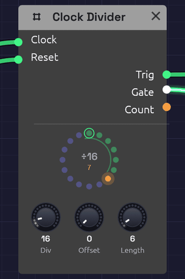
Dividing a sixteenth clock by 16, once a bar, with the Gate open for six clocks. The count is on bead 6, the last of the six, so the arc is lit.A Clock Divider fires once every so many clock pulses. Patch a sixteenth-note Clock into it and it can mark every bar, every fourth bar, or the third beat of each bar. Its Gate stays open for as many pulses as you choose, so it can hold a whole bar or a whole phrase. That makes it the way to play something less often than every bar: a fill every fourth bar, a crash every eighth, a change of chord every two.
The node shows the count as a ring of beads, one per count, read clockwise from the top like a clock face. The count that fires wears a ring. The counts the Gate stays open for lie along a green arc, which lights while the gate is open. An orange bead travels round as the clock ticks, with its number under the ÷.
Inputs
| Port | Signal Type | Description |
|---|---|---|
| Clock | Gate (Green) | Each rising edge counts one |
| Reset | Gate (Green) | A rising edge starts the count over and closes the Gate. The next clock is count 0, even one on the same sample |
Outputs
| Port | Signal Type | Description |
|---|---|---|
| Trig | Gate (Green) | The clock's own pulse, on the counts that fire. ÷1 passes every pulse through |
| Gate | Gate (Green) | Opens on a count that fires and stays open for Length clocks |
| Count | Control (Orange) | Where the count is: 0 on count 0, rising in even steps to 1 on the last count, like the sequencer's Step |
Parameters
| Knob | Range | Default | Description |
|---|---|---|---|
| Div | 1 – 128 | 4 | Fires once every this many clocks |
| Offset | 0 – 127 | 0 | Which count fires. 0 is the first clock after a reset; offsets past Div wrap round |
| Length | 1 – 128 | 1 | How many clocks the Gate stays open |
How it works
The Clock Divider counts rising edges on Clock. The first edge is count 0, then 1, 2, and so on up to Div − 1, and round again. It fires on the count set by Offset:
Clock: _|‾|_|‾|_|‾|_|‾|_|‾|_|‾|_|‾|_|‾|_|‾|_ (Div 4, Offset 0, Length 2)
Count: 0 1 2 3 0 1 2 3 0
Trig: _|‾|_____________|‾|_____________|‾|_
Gate: _|‾‾‾‾‾‾‾|_______|‾‾‾‾‾‾‾|_______|‾‾‾
Because it counts pulses rather than timing them, it can't drift from its clock. Every pulse it fires on is one of the clock's own pulses, on the same sample, after ten minutes as after ten seconds, at any tempo. Change the Clock's BPM and the phrase follows. That's also why it's better than a second, slower Clock: two Clocks drift apart unless something re-syncs them, the slowest a Clock goes is 20 BPM, and the second Clock might become the patch's transport.
Trig is the clock's own pulse, as long as the clock's gate. Gate is measured in whole clocks: at Length 1 it's open from the pulse that fires to the next one, and at Length 16 for sixteen. It closes on the clock edge that ends it, before any module it drives hears that edge. A Length of Div or more keeps it open all the time, dipping for a single sample each time the count fires, so an envelope it drives still sees a new edge.
If the clock stops while the Gate is open, the Gate lets go once two clock periods have passed with no pulse, so a stopped clock can't leave it open.
Patches
A fill every fourth bar
[Clock Gate] ──> [Clock Divider Clock] (Clock Div 1/16; Divider Div 64, Length 17)
[Clock Divider Gate] ──> [Tom Sequencer Run] [Tom Sequencer Reset]
At sixteenths, 64 clocks are four bars. The Gate opens on the downbeat of bar 1 and resets the tom sequencer to step 1 as it starts it running. It stays open for 17 clocks: the fill bar and the downbeat after it, so the sequencer takes one more step, wraps round, and its EOC can strike a crash where the fill lands. This is how Backbeat schedules its fill. Set Div to 128 for a fill every eighth bar, or Offset to 48 to put the fill in bar 4.
A beat that isn't every beat
[Clock Gate] ──> [Clock Divider Clock] (Clock Div 1/4; Divider Div 4, Offset 2)
[Clock Divider Trig] ──> [ADSR Gate]
A clap on beat 3 of every bar, and nowhere else. Turn Offset to move it round the bar.
Changes in threes
[Clock Gate] ──> [Clock Divider Clock] (Div 3)
[Clock Divider Trig] ──> [Sample & Hold Trig]
A Sample & Hold that samples every third note, against a melody of eight, gives a pattern that takes three passes of the melody to come round. Generative Ambient shades its notes this way.
Polyrhythm
Two Clock Dividers on the same sixteenth clock, one at Div 3 and one at Div 4, play three against four. They meet again every twelve sixteenths. Patch their Trig outputs into A and B of a Logic module, and its AND fires only where they meet. Interlock builds a whole piece this way.
Related modules
- Clock: the pulses to divide
- Step Sequencer: its Run and Reset take the Gate; its EOC marks the end of each pass
- Logic: combine divided rhythms, or gate them with a control voltage
- Sample & Hold: Trig makes a sparser trigger to sample on
Logic
Module ID util.logic · Category Utility
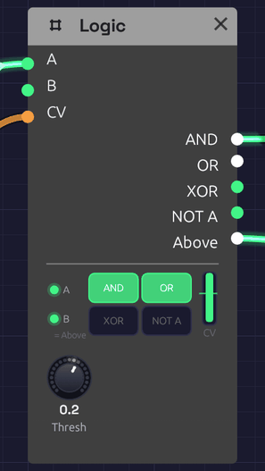
A clock in A, an LFO in CV, nothing in B. The LFO is above the Threshold line, so B, standing in for Above, is lit. A clock pulse is high in A, so AND and OR are high too.Logic answers questions about gates. Are both of these high? Is either? Is exactly one? Its other half answers a question about a control voltage: is it above this line? The answer is a gate, so Logic is how a control signal reaches a gate input, which a cable alone can't do. And one answer is a throw of the dice: Maybe lets each gate at A through only sometimes.
The node shows its working. Two small lamps at the left light while A and B are high. The four big lamps light while AND, OR, XOR and NOT A are, so the truth table plays out as the gates come and go. The column at the right is the CV, rising past the Threshold line and turning green when it's above. Drag the line to move the Threshold.
Inputs
| Port | Signal Type | Description |
|---|---|---|
| A | Gate (Green) | The first gate for AND, OR, XOR and NOT A |
| B | Gate (Green) | The second gate for AND, OR and XOR. With nothing patched, B is Above (see below) |
| CV | Control (Orange) | A voltage to compare with Threshold. Audio patches in too |
| Chance | Control (Orange) | Added to the Chance knob |
Outputs
| Port | Signal Type | Description |
|---|---|---|
| AND | Gate (Green) | High while A and B are both high |
| OR | Gate (Green) | High while A or B is high |
| XOR | Gate (Green) | High while exactly one of A and B is high |
| NOT A | Gate (Green) | High while A is low. With nothing in A it's always high |
| Above | Gate (Green) | High while CV is above Threshold |
| Maybe | Gate (Green) | A, sometimes: each gate at A passes whole, or not at all, by Chance |
Parameters
| Knob | Range | Default | Description |
|---|---|---|---|
| Thresh | -1 – 1 | 0.5 | Where Above switches |
| Chance | 0 – 100% | 50% | How likely each gate at A is to reach Maybe |
How it works
Combining
The logic outputs follow A and B sample by sample, with no memory. Anything above 0.5 counts as high, as on every gate input.
| A | B | AND | OR | XOR | NOT A |
|---|---|---|---|---|---|
| low | low | low | low | low | high |
| high | low | low | high | high | low |
| low | high | low | high | high | high |
| high | high | high | high | low | low |
Comparing
Above goes high when CV rises past Threshold + 0.01, and low again when it falls below Threshold − 0.01. That little gap is hysteresis: a slow or noisy signal crossing the threshold switches once instead of chattering.
Gate outputs can feed control inputs, but control outputs can't feed gate inputs, because a control signal has no clear on and off. Above is how you say where on and off are.
B is normalled to Above
With nothing patched into B, B reads Above, the way a jack on a hardware module can be wired to a signal until a cable is plugged in. The lamp under B says = Above while it does. So one Logic, with a clock in A and a control voltage in CV, gives a clock that runs only while the CV is high, at AND. Patch anything into B and it's an ordinary input again.
With nothing in CV either, Above is low at the default Threshold, so an empty B behaves like an empty jack.
Sometimes
Each time A rises, Logic throws the dice: at a Chance of 25%, one gate in four on average gets through to Maybe, and which ones nobody knows. A gate that wins passes whole, for as long as A stays high, and one that loses stays shut even if Chance rises while it's held. At 100% every gate passes; at 0, none.
Each Logic throws its own dice, and an offline render throws the same ones every time, so a render you liked can be made again.
Patches
Ghost notes
[Clock Gate] ──> [Logic A] (Clock at sixteenths)
[Logic Maybe] ──> [Drum Trig] (Chance 20%; a quiet, short Drum)
A hat that plays one sixteenth in five, never the same ones twice, under a steady beat. Patch a slow LFO into Chance and the fills thicken and thin as it moves. For triggers with no grid at all, use Noise's Dust.
A clock that waits for the wind
[Clock Gate] ──> [Logic A]
[Noise Random] ──> [Logic CV] (Thresh -0.3; B empty)
[Logic AND] ──> [ADSR Gate]
Clock pulses reach the envelope only while Noise's slow Random is above the threshold. The notes come in gusts and stop in the calms between them. This is the chime in Shoreline.
Make a gate from an LFO
[LFO Out] ──> [Logic CV] (Thresh 0.5)
[Logic Above] ──> [ADSR Gate]
The envelope opens each time the LFO rises past the threshold and closes as it falls back. Raise the threshold and the gates get shorter. Patch a Sequencer's Pitch into CV instead, with the threshold between two notes, and the high notes open a gate the low ones don't.
Only on the beat
[Audio Input Gate] ──> [Logic A]
[Clock Gate] ──> [Logic B]
[Logic AND] ──> [ADSR Gate]
Hits from a drummer or a microphone come through only while the clock's gate is high, so loose playing is cut back to the grid.
Where two rhythms meet
[Clock Divider 1 Trig] ──> [Logic A] (Div 3)
[Clock Divider 2 Trig] ──> [Logic B] (Div 4)
[Logic AND] ──> [ADSR Gate]
Two Clock Dividers on one sixteenth clock play three against four. AND fires only where they meet, once every twelve sixteenths. XOR fires where exactly one of them plays. XOR OR with the clock itself in a second Logic and you get every pulse neither played: the gaps. Interlock gives each of the three its own voice, so together they play every sixteenth exactly once.
Turn a gate upside down
NOT A is high while A is low. Patch a sequencer's Gate into A and NOT A is high in the rests, ready to open a second envelope that fills the gaps.
Related modules
- Clock Divider: rhythms to combine
- Interlock: a gamelan-style example built around AND, OR, XOR and an empty B
- Clock: the pulse to gate
- Noise: Dust gives random triggers off any grid; Random is a CV to compare
- Audio Input: gates from a microphone or instrument
- Attenuverter: scale a control signal before CV, or turn a gate into a control voltage
Looper
Module ID util.looper · Category Utility
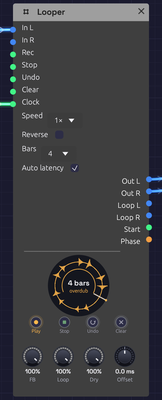
Overdubbing a four-bar loop. The ring is amber while it overdubs, and the thin arc inside it is the pass being laid down.A Looper works like a looper pedal. Play into it and tap Rec to start recording. Tap again to close the loop, and it plays back while you play over it. Keep tapping to overdub layers, undo the last one, or stop and clear. It's how one player builds a piece out of layers in real time.
It also works inside a patch, not just at the end of one. Loop a sequencer phrase, then sweep a filter over the frozen loop. Send Loop L/R through effects of their own, or use Phase as modulation so the whole patch moves with the loop.
The node draws the loop as a ring, read clockwise from twelve o'clock like a record, with the waveform around it and a playhead sweeping round. Each overdub pass lays a thin band inside the ring, newer ones brighter, like the rings of a tree, so you can see how many layers you've built and where each one reached. The ring's colour is the state: red while recording, amber while overdubbing, green while playing, dim while stopped, and grey dashes when empty. The first take draws its arc as it grows and closes into a circle when the loop closes. The loop's length is in the middle, in bars when a Clock is patched.
Inputs
| Port | Signal Type | Description |
|---|---|---|
| In L | Audio (Blue) | What to loop. With only one side patched, it plays on both |
| In R | Audio (Blue) | Right input |
| Rec | Gate (Green) | The footswitch: record, close the loop, then overdub and play in turn (see below) |
| Stop | Gate (Green) | Stops the loop. A second Stop while stopped plays it again from the top |
| Undo | Gate (Green) | Takes back the last overdub layer. A second Undo brings it back |
| Clear | Gate (Green) | Empties the loop |
| Clock | Gate (Green) | Optional. Patched, recording starts on a pulse and the loop closes on a whole bar. See Sync |
Each input acts on its rising edge.
Outputs
| Port | Signal Type | Description |
|---|---|---|
| Out L, Out R | Audio (Blue) | The input (at Dry) and the loop (at Loop) together |
| Loop L, Loop R | Audio (Blue) | The loop alone, at Loop, to send through its own effects |
| Start | Gate (Green) | A 1 ms pulse each time the loop comes round to its top. Patch it into a sequencer's Reset or a drum's Trig |
| Phase | Control (Orange) | A ramp from 0 to 1 across the loop |
Footswitches
The four buttons under the ring do what the gate inputs do. Each one is labelled with what it does next: Rec reads Play while recording, Dub while playing, and Play while overdubbing, and Undo reads Redo once a layer has been taken back. Pressing a footswitch plays the Looper rather than editing the patch, so it isn't an undo step.
Right-click a footswitch and choose Learn MIDI to press it from a MIDI controller. A footswitch pedal on a MIDI interface works this way: any CC value from 64 up presses it. So does a pad, which presses it for as long as it's held: four pads of a pad controller make a looper's pedalboard. A learned footswitch wears a small purple dot.
Parameters
| Control | Range | Default | Description |
|---|---|---|---|
| Speed | ½×, 1×, 2× | 1× | Playback speed, as on tape: ½× plays an octave down and twice as long |
| Reverse | on/off | off | Plays the loop backwards |
| Bars | Free, 1, 2, 4, 8, 16 | Free | With a Clock patched, how many bars a take lasts. Ignored without one |
| Auto latency | on/off | on | Writes overdubs fed by an Audio Input earlier by the round trip the input takes, so they land where you played them. See Offset |
| FB (Feedback) | 0 – 100% | 100% | How much of the loop each overdub pass keeps. Below 100% the old layers fade away |
| Loop | 0 – 100% | 100% | The loop's level, on Out and on Loop |
| Dry | 0 – 100% | 100% | The input's level on Out. Turn it down when the input is heard some other way |
| Offset | −50 – +50 ms | 0 ms | Moves what's recorded earlier (+) or later (−), on top of Auto latency |
Speed and Reverse change how the loop plays, not what's kept: set them back and the loop is as it was. Overdubbing at another speed records at that speed, so an overdub played at ½× comes back an octave up at 1×.
The Rec cycle
One footswitch does almost everything, as on a Boss RC or an EHX 720:
tap tap tap
Empty ──────────> Record ──────────> Play ──────────> Overdub
^ │
└──────────────────┘
tap
Stop: Play / Overdub ──> Stopped ──(Stop or Rec)──> Play from the top
Undo: takes the last overdub layer back, or brings it back
Clear: any state ──> Empty
- The tap that ends the first take sets the loop's length, and the loop starts playing at once.
- Each run of Overdub, from the tap that starts it to the tap that ends it, is one layer, however many times it goes round. Undo takes back the layer you just made, and a second Undo brings it back. Starting a new layer makes the last one permanent. Undo during an overdub ends it and takes it back.
- Stop during the first take closes the loop and leaves it stopped.
- Stopping the transport keeps the loop, stopped at the top: tap Rec or Stop to hear it again. A take still recording when the transport stops is dropped.
Feedback below 100% makes each overdub pass fade what was there before, tape-loop style. At 50%, a layer is down 6 dB after one more pass. Overdub with nothing playing in and FB low to let a loop die away gradually. Robert Fripp built whole pieces this way with two tape machines.
Sync
With nothing in Clock, the loop is exactly as long as the time between the two taps.
With a clock patched, timing follows it:
- Recording starts on the next pulse. Tap early and the ring shows red dashes until the pulse comes. A tap up to 50 ms after a pulse counts as on time: the take begins on the pulse just gone, with what you played since, so a late foot doesn't cost you a whole bar.
- The loop closes on the nearest whole bar. Tap a little early and it records on to the bar; tap a little late and it closes back on the bar, already playing. A bar is the patch transport's, from the Clock's tempo and time signature (four pulses of the Clock input if there's no transport).
- With Bars set, the take closes itself after that many bars, so one tap is enough.
To start takes on a downbeat rather than any beat, patch a Clock Divider at ÷4 between the Clock and the Looper, as the Live Looper example does.
Offset and latency
Live input arrives late. Your guitar reaches the patch one input latency after you played it, and you played along with what you heard one output latency earlier. Left alone, every overdub would land late by the whole round trip, typically 20 to 50 ms, and the layers would flam.
Soba measures that round trip (the In figure in the status bar, see Audio Input). With Auto latency on, the Looper writes everything fed by an Audio Input that much earlier, through any chain of modules in between, so each layer lines up with what you heard while you played it. Sound made inside the patch (a sequencer, an oscillator) has no round trip, so nothing is moved even with Auto latency on.
Offset trims by ear on top of that. If your interface's converters add latency no timestamp reports, layers will still sit a little late: turn Offset up until they're tight. Turn Auto latency off if the input isn't something played along with the loop, such as a drum machine slaved to the patch's clock.
Memory
A Looper holds up to two minutes of stereo, plus room for one undo layer: about 92 MB at 48 kHz, set aside when the module is added and never on the audio thread. Recording past two minutes closes the loop there. Changing the device's sample rate empties the loop, and brings back the one last saved with the patch, if there is one.
Keeping the loop
A loop is part of the patch. Saving the patch saves each Looper's loop as a WAV file in a <patch name> loops folder beside it, and opening the patch brings the loop back, Stopped at the top, with its waveform on the ring. Tap Rec or Stop to play it.
- What's saved is the loop as you hear it. The last overdub layer is in it, unless you've undone it. The undo layer itself isn't kept, so after the patch is opened again there's nothing for Undo to take back.
- A loop is a change. Recording, overdubbing, undoing or clearing one marks the patch unsaved (the dot in the window title), and New, Open and quitting ask before letting it go.
- Only what changed is written. A loop that hasn't changed since it was saved or opened isn't written again, so saving a patch with a long loop is instant the second time.
- Nothing is lost. The files are 32-bit float WAVs at the device's rate, about 23 MB a minute in stereo, and half that for a mono loop (one input patched makes one). If the loops to write come to more than 50 MB, saving asks first. No saves the patch without them, and its Loopers will open empty.
- The folder stays tidy. A Looper with nothing in it saves no file. A loop file the patch wrote that no Looper uses any more (its loop cleared, or the Looper deleted) is removed on the next save, and so is the folder once it's empty. Files you put there yourself are left alone.
- Another sample rate. Opened on a device at a different rate, a loop is resampled so it stays in tune. With a Clock patched, a loop that resampling left a frame or two off a whole number of bars is trimmed back onto the bar.
- Saving takes a moment. The loop is copied off the audio thread a piece at a time, so the sound never stutters: about half a second for a two-minute loop. Saving during an overdub keeps the overdub as far as it had got, and the patch shows unsaved again once the overdub ends. A first take still recording isn't a loop yet, so it isn't saved.
- Autosave doesn't keep loops. After a crash, a recovered patch's Loopers come back with the loops last saved, if any.
- The browser can't keep loops, as there's no folder beside the patch to put them in.
- Offline too. The
rendertool loads a patch's saved loops, so a cue that presses Rec plays them.
Clean loop points
Nothing clicks at the seam. The first take keeps recording for 5 ms past where the loop closes, and that tail is crossfaded over the loop's first 5 ms, so the wrap runs on into what you really played next. Overdubs punch in and out over 5 ms, and stopping, clearing and undoing fade rather than cut.
Patches
A looper pedal
[Audio Input L/R] ──> [Looper In L/R]
[Looper Out L/R] ──> [Audio Output Left/Right]
Tap the footswitches on the node, or learn a MIDI pedal onto them.
Freeze a phrase, then play over it
[Step Sequencer] ──> [Oscillator] ──> [Looper In L]
[Looper Loop L] ──> [SVF Filter In] ──> [Audio Output]
[LFO] ──> [SVF Filter Cutoff]
Loop four bars of the sequence, stop the sequencer, and sweep the filter over the frozen loop. Dry at 0 keeps the sequencer out of the output once it's looped.
Lock the patch to the loop
Patch Start into a sequencer's Reset so its phrase restarts with the loop, or Phase into a filter's cutoff for a sweep that rises across the loop and drops as it comes round.
Related
- Audio Input: live sound in, and the round trip
- Clock and Clock Divider: bar-synced takes
- Live Looper: the example patch
- From One Sine: a Looper pressed by the patch itself, keeping its opening to play back reversed in the breakdown
Oscilloscope
Module ID util.oscilloscope · Category Utility
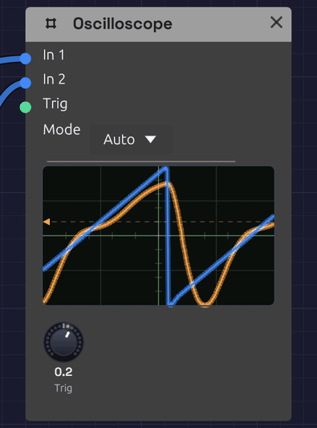
Two traces, blue and orange, locked to the trigger level marked on the left edge.The Oscilloscope draws the shape of a signal as it plays. Patch an oscillator into it and you see its waveform; patch in the same oscillator after a filter and you see the filter rounding off its corners. It's the quickest way to check what a module is doing, and a good way to learn what a sound looks like.
It has two inputs, drawn as two overlaid traces, so you can compare a signal before and after a module. It passes nothing on: the scope only watches.
Inputs
| Port | Signal Type | Description |
|---|---|---|
| In 1 | Audio (Blue) | The first trace, drawn in blue. Its signal also starts each sweep |
| In 2 | Audio (Blue) | The second trace, drawn in orange |
| Trig | Gate (Green) | External trigger. A rising edge starts a sweep |
Control signals patch into In 1 and In 2 as well. A polyphonic cable is summed into one trace.
Parameters
| Control | Range | Default | Description |
|---|---|---|---|
| Mode | Auto / Normal / Single / Free | Auto | How sweeps start (see below) |
| Trig (Trigger Level) | -1 to +1 | 0 | The level In 1 must rise through to start a sweep |
Reading the display
The screen spans -1 to +1 from bottom to top, the full range of an audio signal, with the center line at zero. A 4 × 4 grid helps you judge levels: each horizontal division is 0.5.
Each sweep shows 512 samples: about 11.6 ms at 44.1 kHz, or 10.7 ms at 48 kHz. That's a few cycles of a note in the middle of the keyboard: one cycle of C4 lasts 3.8 ms. The time scale is fixed.
The trigger point sits a quarter of the way across, so you see a little of what came just before each trigger. A small arrow and a dashed line on the left edge mark the trigger level.
Triggering
Without triggering, each sweep would start at a random point in the wave and the picture would jitter. Triggering starts every sweep at the same point (where In 1 rises through the trigger level), so a steady waveform stands still on the screen.
A rising edge at Trig starts a sweep too. Both work at once: whichever comes first starts the sweep.
| Mode | Behavior |
|---|---|
| Auto | Sweeps on each trigger. If none arrives within about 50 ms, it sweeps anyway, so you always see something, even a flat line |
| Normal | Sweeps only on a trigger. With no trigger, the last picture stays on screen |
| Single | Captures one sweep on the next trigger and then holds it. Use it to freeze a transient, such as the attack of a note |
| Free | Ignores triggers and sweeps continuously. The picture scrolls unless the signal happens to line up |
In Single mode the held picture stays until the scope's state is reset, for example by stopping and restarting the transport.
If the picture won't stand still in Auto or Normal, the trigger level is probably outside the signal's range. A quiet signal that never rises through 0.5 never triggers at that level. Bring Trig back toward 0.
What it's good for
The scope is built for audio-rate signals, where a few milliseconds show whole cycles.
- Waveforms. Compare the Oscillator's four waves, watch pulse width change the square, or see unison voices drift in and out of phase.
- Filters. Put the raw oscillator on In 1 and the filter's output on In 2. Watch the corners round off as the cutoff falls, and resonance ring at the cutoff frequency.
- Distortion and saturation. See the Ladder filter's Drive or the Distortion module flatten and fold a sine.
- Levels. A trace that runs flat along the top or bottom edge is at full scale, and may be clipping.
Slow signals (LFOs, envelopes, sequences) take far longer than one sweep, so here they show as a near-flat line moving up and down. To see their shape, watch their cables instead: control cables draw their signal as it travels. See Reading the signal in a cable.
Patches
Before and after
[Oscillator Out] ──> [SVF Filter In]
[Oscillator Out] ──> [Oscilloscope In 1]
[SVF Filter LowPass] ──> [Oscilloscope In 2]
Sweep the filter's Cutoff and watch the orange trace smooth out while the blue one stays sharp.
Hard sync
With In 1 on the master oscillator, the picture locks to its pitch, and In 2 shows the synced oscillator restarting its cycle in time:
[Oscillator 2 Out] ──> [Oscillator 1 Sync]
[Oscillator 2 Out] ──> [Oscilloscope In 1]
[Oscillator 1 Out] ──> [Oscilloscope In 2]
Catch a note's attack
Set Mode to Single, patch the VCA's output into In 1, and set Trig a little above zero, such as 0.1. Play a note and the scope freezes its first few milliseconds.
Related modules
- Oscillator: the first thing to look at
- SVF Filter and Ladder Filter: see what filtering does to a waveform
- Audio Output: its meter shows levels at the end of the chain
Spectrum
Module ID util.spectrum · Category Utility
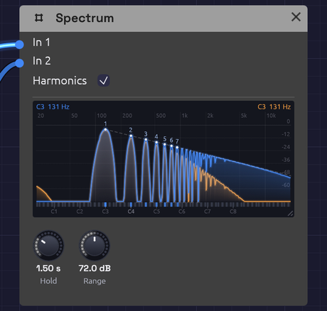
A saw on In 1, its harmonics numbered and stepping down the dashed line, and the same saw through a lowpass on In 2, its upper harmonics gone.The Spectrum shows what a sound is made of. Every sound that has a pitch is a stack of sines: one at the note's frequency, the fundamental, and others at two, three, four times it and so on, the harmonics. The Spectrum draws each one as a line standing up from the floor, as tall as that sine is loud. A sine is a single line. A saw is a whole row of them, each a little shorter than the last, and that row is why a saw sounds bright and a sine sounds pure.
The Oscilloscope shows a wave's shape over time; the Spectrum shows its ingredients. Put them side by side on the same cable and you can watch a corner on the scope turn into a row of harmonics here.
Like the scope, it has two inputs, drawn in blue and orange, so you can compare a sound before and after a module. It passes nothing on.
Inputs
| Port | Signal Type | Description |
|---|---|---|
| In 1 | Audio (Blue) | The sound to look into, drawn blue. Its note's harmonics are numbered |
| In 2 | Audio (Blue) | A second sound, drawn orange behind the first |
A polyphonic cable is summed, so a chord shows every note's harmonics at once.
Parameters
| Control | Range | Default | Description |
|---|---|---|---|
| Hold | 0 to 5 s | 1.5 s | How long each peak is held before it falls away |
| Range | 24 to 120 dB | 72 dB | How far below full scale the floor is |
| Harmonics | On / Off | On | Number the harmonics of the note heard, light their keys and draw the 1/n line |
Drag the grip in the bottom-right corner to make the display bigger, up to three times its first size: a big Spectrum has room for more labels, and finer lines. Double-click the grip to put it back.
Reading the display
Across is frequency, from 20 Hz on the left to 20 kHz on the right. The axis is logarithmic, so every octave is the same width, just as on a keyboard, and a keyboard runs along the floor to match, with C1 to C8 named beneath it (C4 is middle C). Frequencies in hertz are marked along the top. Hover anywhere to read the frequency, the nearest note and how far off it is in cents, and each input's level there.
Up is level, in decibels. The 0 line is full scale: a sine that swings all the way from -1 to +1 reaches it. Each line below is 12 dB quieter, which is about a quarter of the height of the wave. The floor is as far down as Range says.
Two lines per sound. The filled shape is what's sounding now. The finer, paler line above it holds each peak for the Hold time, then lets it sink. Play a single pluck and its harmonics stay drawn for a moment after the sound has gone, long enough to read. Set Hold to 0 to follow the sound alone.
The note. The header names the note each input is playing, and its frequency, once it hears one. With Harmonics on, the partials of In 1's note (or In 2's, if In 1 is empty) are numbered over their peaks, and their keys light up on the keyboard. A harmonic that's missing has its number dimmed on the floor. Noise has no note, so it gets no numbers.
The dashed line falls from the fundamental by 6 dB every octave. That's where a saw's harmonics stand: the second at half the level of the first, the third at a third, the nth at 1/n.
What it's good for
- Why a saw is bright. Patch an Oscillator into In 1 and step through its waves. The sine is one line. The saw has every harmonic, each standing on the dashed line. The square has only the odd ones (1, 3, 5…), still on the line, with the even numbers dimmed on the floor: that's its hollow sound. The triangle has the same odd harmonics, falling away twice as fast, below the line: softer, nearer a sine.
- Pulse width. On the square, turn PW (Pulse Width) away from the middle and the even harmonics come back. At a quarter width every fourth harmonic is missing.
- Harmonics are a chord. Watch the lit keys: the second harmonic is an octave up, the third an octave and a fifth, the fourth two octaves, the fifth a major third above that. Every note already holds a major chord.
- What a filter does. Put the oscillator on In 1 and the filter's output on In 2. Sweep the Cutoff and watch the orange harmonics above it sink while the blue ones stay. Turn up Resonance and see the harmonics near the cutoff stand taller.
- FM sidebands. Frequency modulation adds lines either side of each harmonic. Turn the FM depth up slowly and watch them spread.
- Noise colours. Noise has no note, so nothing is numbered: just a rough band across the whole axis. White noise rises gently to the right, pink leans gently down, and brown falls away steeply.
- Checking a mix. Patch the mix in and see where its energy sits, and whether anything is crowding the low end.
Patches
Before and after a filter
[Oscillator Out] ──> [Spectrum In 1]
[Oscillator Out] ──> [SVF Filter In]
[SVF Filter LowPass] ──> [Spectrum In 2]
Set the Oscillator to a saw an octave down. Sweep the filter's Cutoff and watch it take the top off the row of harmonics.
Beside the scope
[Oscillator Out] ──> [Oscilloscope In 1]
[Oscillator Out] ──> [Spectrum In 1]
The same sound, as a shape and as its harmonics.
Notes
The analysis runs on the screen, not in the audio: the audio thread only copies the two inputs for the display to read, so a Spectrum costs the sound nothing, and a Spectrum scrolled out of view costs nothing at all. Each picture looks at the last 4,096 samples, about 85 ms. That's enough to tell apart the harmonics of a note as low as C1, though their lines draw closer together than a higher note's.
Related Modules
- Oscilloscope: the same sound as a waveform
- Oscillator: four waves with four different sets of harmonics
- SVF Filter and Ladder Filter: their own displays show the sound under the filter's response
Dancer
Module ID util.dancer · Category Utility
 Mid-step in the Disco style, the floor still lit from the beat.
Mid-step in the Disco style, the floor still lit from the beat.
The Dancer is a stick figure who dances to your patch. It doesn't make a sound or change one; it's there for fun, and for company while you play. Drop one into any patch with a Clock and press play: it's already dancing on the beat. Patch the mix into it and it dances harder as the music gets louder. With no Clock at all, it listens for the beat in the mix, so it dances to a live band through Audio Input too.
Inputs
| Port | Signal Type | Description |
|---|---|---|
| Clock | Gate (Green) | Each pulse is a step. Leave it empty and the Dancer follows the patch's Clock |
| Audio | Audio (Blue) | The music to dance to: the louder it plays, the bigger the moves. A sudden hit, such as a kick, dips the hips. With no Clock, the Dancer finds the beat here |
| Accent | Gate (Green) | A rising edge asks for a big move: a jump, a spin, or arms flung up |
Every input is optional.
Parameters
| Control | Range | Default | Description |
|---|---|---|---|
| Style | Bounce / Disco / Robot / Headbang | Bounce | How the Dancer dances |
Drag the grip in the stage's bottom-right corner to make the stage bigger, up to three times its first size. Double-click the grip to put it back. The size is saved with the patch and can be undone like any other change.
How it works
The beat. Without a cable in Clock, the Dancer follows the patch's tempo and beat, the same ones a tempo-synced Delay follows. A cable in Clock takes over once two pulses have come in, so the Dancer can follow a different clock from the rest of the patch, such as a Clock Divider. If the clock stops, the Dancer stops dancing.
By ear. With no cable in Clock and no Clock running in the patch, the Dancer listens for the beat in Audio. It hears where the hits are, much as a Sampler sliced by onsets does, works out how often they repeat, and slides a comb of beats along them until its teeth catch the most hits. It needs about two seconds of steady hitting to be sure, and the header reads listening until then. The figure shows it's listening too: it leans toward the music with a hand cupped to its ear and its head cocked. As it grows surer, a foot starts tapping along to the hits, and when it hears the beat the hand comes down into the first move. While it dances by ear the header shows the tempo with a tilde, such as ~124 bpm. It stops when the music stops hitting for a couple of seconds, or when nothing in it repeats: a drone, a pad, or hits at random.
Its ear is good, not perfect. A kick on the beat is the easiest thing to hear, so it listens hardest to the low end. A broken beat can hit harder on the and than on the beat, so it also listens for a snare or a clap on two and four. Wherever that lands is the beat, and once it has heard a few bars of it, the Dancer turns to dance there. When a breakdown drops the drums, it keeps dancing at the pace it was, for up to eight bars, and when the drums come back it carries on where it was, on the beat rather than the and. A tresillo or a dotted-quarter figure playing across a beat it has danced for a while won't pull it off that beat. But one it hears from the start can be danced at two-thirds of the tempo, since that's the rhythm the music is playing. Where two rhythms run at once, as three against four does in Interlock, it keeps to the beat it found, and changes only when the other has led for a few seconds. A Clock in the patch, or a cable in Clock, always comes first.
Dancing tempo. People dance at roughly 75 to 150 steps a minute, whatever the music's tempo, and so does the Dancer. It doubles or halves the beat until each step falls in that range. A sixteenth-note clock at 120 BPM is danced on the quarter notes, and a 60 BPM ballad is danced double time. The header shows the tempo it's dancing at. During a ritardando it keeps its pace and slows with the music, rather than jumping to double time partway through.
Energy. Audio sets how big the moves are. Quiet music gets a gentle sway and loud music gets deep knee bends and wide arms. A sudden jump in level, such as a drum hit, dips the hips on the hit. With nothing in Audio, the Dancer dances at a steady, medium energy.
Steps. Each style has four steps, and the Dancer changes step every four bars. It begins with the style's first step, then picks a different one each phrase. The routine is the same every time the patch plays, so a recording looks the same on each take.
| Style | Steps |
|---|---|
| Bounce | Bob, side step and clap, running man, jumping jacks |
| Disco | The point (up and out, down and across), hip sway, the roll, the bump |
| Robot | Tutting, head ticks, an arm wave, a jerky slide. Moves snap into place every half beat |
| Headbang | Whip, air guitar, fist pump, stomp |
Accents. Each rising edge at Accent starts a big move that lasts one dancing beat. The moves take turns: a jump, arms flung up, and a spin. The order depends on the style.
Between songs. While the transport is stopped, or if the patch has no beat it can follow or hear, the Dancer stands around: it breathes, shifts its weight, taps a foot now and then, and looks around. If music without a beat is playing (a drone, a pad), it sways to it.
The stage
- The floor flashes in the style's color on each beat, brighter when the music is louder.
- The shadow spreads when the Dancer lands, and shrinks and fades while it's in the air.
- A faint trail shows where the limbs were a moment ago.
Patches
On the mix
Put a Dancer at the end of any patch:
[Tape Out L] ──> [Dancer Audio]
It dances on the patch's Clock, as big as the mix is loud.
To a live band
With no Clock in the patch, the Dancer finds the beat in whatever comes in:
[Audio Input L] ──> [Dancer Audio]
Play a record into it, or a drummer, and give it a couple of seconds.
A big move each phrase
The Clock Divider's Trig fires once a phrase. Patched into Accent, it makes the Dancer jump or spin as each new section starts:
[Clock Gate] ──> [Clock Divider Clock] (Divide 64: four bars of sixteenths)
[Clock Divider Trig] ──> [Dancer Accent]
A dance floor
Several Dancers in different styles, all on the same mix, dance in time with each other. Each one's routine depends on its style, so no two styles dance the same steps.
Related modules
- Clock: sets the beat the Dancer follows
- Clock Divider: a phrase-long trigger for Accent
- Oscilloscope: the other module that only watches
Step Sequencer
Module ID seq.step · Category Utility
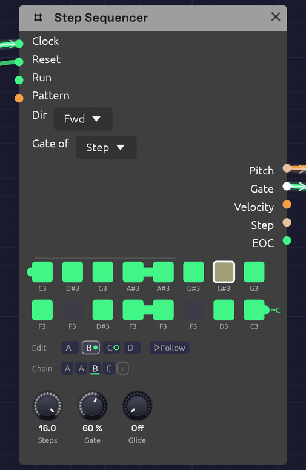
Pattern B, playing. Green steps play, dark steps rest, and the outlined step is the one sounding now. A tied step reaches into the next one: here step 4 into 5, 12 into 13, and 16 off toward C, the pattern the Chain plays next. The tab into step 1 is A's last note, tied into B. The Chain plays A A B C; B wears the green dot, and C, ringed, comes next.The Step Sequencer plays a repeating pattern of up to 16 notes. Each clock pulse moves it one step along, and each step sends out its own pitch, a gate if the step is switched on, and a velocity. Patch Pitch into an oscillator and Gate into an envelope, and a Clock turns it into a bass line, an arpeggio or a riff.
The pattern lives on the node itself: a grid of step buttons with each step's note name underneath. Ties join a step to the next one for held notes and legato lines, and slides glide the pitch into chosen notes, the way a 303 or a Minimoog lead slurs a phrase. It holds four patterns, A to D, and plays them in the order its Chain gives, so a melody can run to 64 steps without repeating, and a verse and a chorus can share one sequencer.
It can also loosen its grip on what's written. A step can play only some of the time, and Wander lets each note stray a degree or two along a scale, so a line drifts away from itself and comes back. See Chance and Wander.
Inputs
| Port | Signal Type | Description |
|---|---|---|
| Clock | Gate (Green) | Each rising edge advances one step |
| Reset | Gate (Green) | A rising edge jumps back to step 1 |
| Run | Gate (Green) | Steps advance only while this is high. With nothing patched, the sequencer runs |
| Pattern | Control (Orange) | Picks the pattern for each pass in place of the Chain: 0 to 0.25 is A, 0.25 to 0.5 is B, then C, and D from 0.75 up |
| Wander | Control (Orange) | Added to the Wander knob. A CV of 1 is the knob's whole range, 4 degrees |
Outputs
| Port | Signal Type | Description |
|---|---|---|
| Pitch | Control (Orange) | The current step's note as V/Oct. Middle C (C4) is 0.0, the same as Note In. Glides into a slide step |
| Gate | Gate (Green) | High for each step that's switched on, for Gate of the step. Stays high across a tie and into a slide |
| Velocity | Control (Orange) | The current step's velocity, 0 to 1 |
| Step | Control (Orange) | The current position as a ramp: 0 on the first step, 1 on the last |
| EOC | Gate (Green) | End of cycle: a 1 ms pulse each time the whole Chain comes round. With a cable in Pattern, each time a pattern does |
Parameters
| Control | Range | Default | Description |
|---|---|---|---|
| Steps | 1 – 16 | 8 | How many steps play before the pattern loops |
| Gate (Gate Length) | 1 – 100% | 50% | How long each gate stays high, as a share of the step. 100% holds it until the next clock |
| Glide | 0 – 1 s | 60 ms | How long a slide takes to reach its note |
| Dir (Direction) | Fwd / Bwd / P-P / Rnd | Fwd | Playback order |
| Gate of (Gate Mode) | Step / 100 ms | Step | What Gate is a share of: the time between clock pulses, or a fixed 100 ms |
| Wander | 0 – 4 | 0 | How many degrees of the scale a note may stray from what's written. At 0 every note plays as written |
| Scale | Chromatic … Whole Tone | Pentatonic Major | The scale Wander steps along, as the Quantizer names them |
| Root | C – B | C | The scale's first note |
| Keep | Off / Step 1 / Accents | Step 1 | Notes Wander leaves as written: step 1, or accents (a velocity of 110 or more) |
Each of the 16 steps of each pattern also stores a note (default C4), a gate on/off (default on), a tie (default off), a slide (default off), a velocity (default 100 of 127) and a chance (default 100%). The Chain has up to eight slots. Patches save all of them. Steps, Dir, the gate settings, Glide and the Wander settings are shared by all four patterns.
Programming a pattern
The grid shows one button per active step, in rows of eight. Steps beyond Steps are hidden, not lost: turn Steps back up and they return as you left them.
- Click a step to switch its gate on (green) or off (dark). An off step is a rest: Pitch still moves to its note, but no gate fires.
- Shift + click a step to tie it into the next step. A bar joins the two. Shift + click again to untie.
- Ctrl + click a step to slide into it from the step before. An orange slur arches over the two. Ctrl + click again to strike it instead.
- Drag a step up or down to change its note, a semitone for every few pixels. The note it will land on shows above the step as you drag, and you hear it: the step's note sounds at its Velocity as the drag begins and follows it up or down, each semitone gliding in under the held note the way a key held under the hand does. Let go and it stops; with the clock running, the sequence takes over again at its next note. Hold Shift while dragging to move by whole octaves. A drag is one undo step, however far it goes.
- Right-click a step to open its piano (below).
While the patch plays, the current step is drawn brighter, with a white outline. A step with a chance under 100% is filled only part way up, like a glass: half full plays half the time.
Writing a melody on the piano
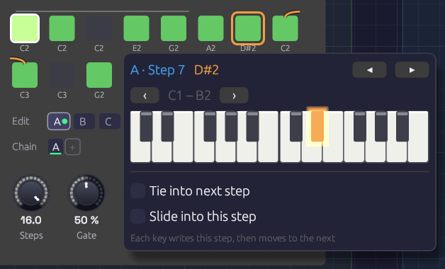
E2, G2 and A2 have just gone into steps 4 to 6. Step 6 was a rest, and playing a note on it switched it on. The orange outline on step 7 shows where the next key will land. The slur broken over the row's end is the patch's slide into step 9, which Slide into this step sets from the piano.Right-click a step and a two-octave piano opens under it, with the step's note lit. Click a key and three things happen: the step takes that note, the step switches on if it was a rest, and the outline moves along to the next step. Play a line of keys and you write the melody into the pattern one step after another, the way step-record works on a hardware sequencer. The piano stays where it opened, so the keys don't move while you play. After the last step it carries on at step 1.
- ◂ ▸ (or the ← → keys) move to the previous or next step without writing anything. Use them to skip a step you want to keep, or to leave a rest as it is.
- ‹ › move the piano down or up an octave. It stays on that octave as you move from step to step.
- Tie into next step ties the step being written, the same as Shift + click.
- Slide into this step slides into the step being written, the same as Ctrl + click.
- Chance sets how often the step being written plays, from 0 to 100%.
- Esc, or a click anywhere outside the piano, closes it.
Each note you write is its own undo step, so Ctrl+Z takes back the last key you played.
Playing it in from a keyboard
While the piano is open, you can also play the melody in from a MIDI keyboard or the computer's letter keys. Each note you strike writes the step and moves on, just like a click.
- Touch. A MIDI keyboard writes how hard you played each note into the step's Velocity, so a line played with accents keeps them. The letter keys have no touch, so they leave the velocity alone.
- Legato. Hold a note until the next one goes down and the first step ties into the second. Let go first and it doesn't. The phrasing you play is the phrasing written, as on a hardware step-record. A click on the piano has no length, so it never writes a tie.
- The letter keys play the piano with Z on its lowest C, so ‹ › move them an octave as well. While the piano is open the letter keys belong to it, so the patch's Note In modules don't hear them. A MIDI keyboard still plays the patch as usual.
Hearing it as you write
Each note you write sounds as it goes in, through whatever the sequencer is patched into, so you can hear the melody you're writing. The clock doesn't need to be running. The note plays on the sequencer's own Pitch, Gate and Velocity, in place of the sequence:
- A key you hold on the letter keys sounds for as long as you hold it. One struck while another is still down slides the pitch over without a new attack, which is how it's written: tied.
- A click on the piano is a short note, one Gate Length long.
- A MIDI keyboard is played by the sequencer only when no Note In in the patch hears MIDI (one with Source on Keys doesn't). If one does, it already plays your notes, so the sequencer leaves them to it and you hear each note once.
Each note sounds as loud as its step will play it. Once you let go, the sequence takes over again at the next note it plays. If the clock was running, the note it played while your hand was down isn't heard.
A note already held when the piano opens isn't written. Strike it again to write it.
Velocities have no knob on the node. Each step plays at 100 until a MIDI keyboard writes its touch, or the patch file says otherwise. Patch Velocity into an envelope's Velocity input to hear the accents.
Patterns and the Chain
The tabs under the grid pick which pattern you're editing: clicking, dragging and the piano all write to the pattern on show. The one playing wears a green dot, and the one coming next a green ring. Follow, beside the tabs, keeps the grid on whichever pattern is playing, so it turns over as the Chain (or the Pattern CV) moves on; clicking a tab to edit one turns it off. The playhead's outline only shows on the pattern playing. Which tab is open is the editor's choice: it isn't saved with the patch, and it isn't an edit. Right-click a tab to copy its pattern to another (to start a variation from it), or to clear it. Clearing turns every step into a rest but keeps the notes, ready for the piano to write a new line over.
The Chain is the order the patterns play in, a pass each, round and round. The pass playing is underlined. It works as on the Trigger Sequencer:
- Click a slot to change its pattern: A, B, C, D, then A again.
- Right-click it to pick a pattern, or to remove the slot. The slots after it move up.
- + adds a pass of the pattern you're editing to the end. The Chain holds up to eight.
A new Step Sequencer plays A, and so do patches saved before it had patterns, exactly as they always did. For a 64-step line, write four bars of it into A, B, C and D, and make the Chain A B C D. For a 16-bar verse whose first half repeats, A A B C will do.
A pass ends where the pattern comes round: after the last step going Fwd, after step 1 going Bwd, and at each turn in P-P, so a ping-pong bounces from one pattern into the next. In Rnd a pass is Steps clocks long. A tie on the last step carries into the first step of the next pattern, so a phrase can hold a note over the join, and a slide on the next pattern's first step slurs in from this one's last note.
Pattern CV
With a cable in Pattern, the CV picks the patterns instead, and the Chain dims. The CV is read once a pass, on the clock that starts it, in the same four zones as the Trigger Sequencer's, so one CV means the same pattern on both. An Arranger lane is made for this: a verse section that holds the lane at A and a chorus that holds it at B make one sequencer play the song's two melodies. The Arranger moves its lanes on the same clock edge the sequencer steps on, so a section's first note comes from its own pattern, with no lag. Leave that lane's Glide at 0.
Because the CV is only read as a pass starts, a lane that ramps can play a chain inside one long section. A Linear ramp from 12.5% to 87.5% over three passes stands in the middle of A, B, C and D at the start of each one. From One Sine grows its motif into a sixteen-bar line that way, and holds the lane at A wherever the motif plays alone.
Chance and Wander
A sequencer plays exactly what's written, which is what makes a riff a riff. Sometimes a line wants to breathe instead: to leave a note out now and then, or to remember the tune slightly differently each time round. Two things on the Step Sequencer do that, and both leave the written pattern alone.
Chance
Each step has a Chance, set on its piano. When the clock reaches a step, its dice are thrown: at 100% it always plays, at 50% about every other time, at 0% never. A step that loses is a rest for that pass, and ends a note tied into it. On the grid, a step with a chance under 100% is filled only as far up as its chance.
The Trigger Sequencer's steps have the same kind of probability. On a melody it works best on the passing notes, the ones between the notes that carry the tune.
Wander
Wander moves each note struck a few degrees along Scale and Root, up or down, then lets it go back to what's written on the next pass. At Wander 0.2 a note moves now and then, by one degree. At 1 about half the notes move, and at 2 or more the line can stray two degrees either way and starts to sound like an improvisation on itself. A degree is the next note of the scale: in C major pentatonic, one degree up from C is D and two up is E.
- Keep holds some notes where they are. Step 1, the default, keeps each pattern's first step as written, so the line keeps its downbeat however far the rest wanders. Accents keeps the steps with a velocity of 110 or more, so the notes you've leaned on stay put.
- A tied note carries on where it wandered to, so a held note doesn't jump halfway through.
- A written note that's off the scale plays as written. When it wanders, its first degree is the nearest scale note in that direction.
- At Wander 0 with every chance at 100%, nothing is left to chance, and the sequencer plays exactly as it did before it had either.
The playing step shows where it went. A note that wandered names the note it's playing, in orange, under its step, with a small arrow on the side it moved toward. A step that lost its dice keeps a grey outline instead of a white one.
Wander has a jack. Patch a slow LFO into it and the melody drifts away and returns over a minute or two, or give it an Arranger lane, so a verse plays the tune as written and the outro remembers it loosely.
The dice are seeded for each module in the patch, so a patch wanders the same way every time it plays, in the editor, in a render or in a DAW.
Timing
Clock and gate length
The sequencer has no tempo of its own. It moves on each rising edge at Clock, so the clock you patch in sets the speed, and its swing or irregularity carries through.
Gate sets the length of each note as a share of the step. The sequencer measures the step from the clock itself, as the time between the last two pulses, so the notes follow the tempo. At 60 BPM in quarter notes, 50% is a 500 ms gate; at 120 BPM in sixteenths, it's 62.5 ms. Lower settings give staccato plucks, higher ones legato. If the tempo changes, the next step uses the new length. On a swung clock, whose steps go long, short, long, short, each note is a share of its own step: long on the beat and short off it, so the shuffle keeps its shape.
At 100% the gate stays high right up to the next clock. If the next step plays, the gate drops for a single sample there, so an envelope still starts a new note. If the next step is a rest, the gate falls on that clock.
Until it has seen two clock pulses, the sequencer has no step to measure. The first note after the patch starts uses the 100 ms rule below.
A Reset doesn't count the time since the last pulse as a step. That gap might be a pause while the clock was stopped, so the sequencer keeps the step it measured before.
Ties
A tied step holds its gate across the next clock. If the next step plays, it continues the same note: Pitch moves to the new step's note, but the gate never drops, so an envelope stays in its sustain instead of starting again. Tie several steps in a row for one long note over all of them. Tie two steps with different notes and the second is played legato: one envelope, two pitches, the way a monosynth player slurs a phrase.
A tie into a rest just holds the note to the end of the tied step. A tie on a step that's switched off does nothing.
The next step is whichever plays next, so in Bwd, P-P or Rnd a tie carries into that one, though the bar on the grid always points right. At the end of a row the bar reaches out of the step's right side and into the left side of the next row's first step. Tie the last step to carry the note into the first step of the next pattern in the Chain. With a Chain of one pattern that's its own first step, and the bar comes round into it. When the next pattern is another, the bar leaves toward its letter (→B), and that pattern's step 1 shows the tie arriving at its left side. With Pattern patched the next pattern isn't known ahead, so the bar only leaves.
A held gate (a tie, or Gate at 100%) lets go after two steps' time if no clock comes, so stopping the clock doesn't leave a note hanging.
Slides
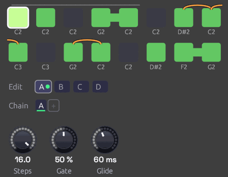
D#2 slides down to C2, and G2 slides to C2. The slur into step 9 breaks at the end of the row: C2 slides up an octave to C3. Steps 4 to 5 and 15 to 16 are ties.A slide step is slurred into from the note before it. Two things happen at its clock:
- Pitch glides from the last note to this one over the Glide time, instead of jumping. The glide is Note In's Glide: even in pitch, and as quick across an octave as across a semitone, so a sequenced slide and a hand-played one sound alike. Glide is the time to get 99% of the way there.
- The gate stays high. The note before holds its gate until the slide begins, whatever Gate is set to, and the slide carries on from it without a new rising edge. An envelope isn't struck again, so a filter envelope with no sustain keeps falling through the slide instead of snapping open. That's the 303's sound: most notes are plucked, and the slid ones melt into the note before.
A slide needs a note to come from. After a rest, or as the first note after a Reset, a slide step is struck like any other and starts on its own pitch. Its slur on the grid is drawn faint after a rest. A slide on a step that's switched off does nothing.
Slides and ties combine. Tie a slide step into the next one on the same note to hold the slid note longer: a slow glide keeps gliding across the tie. A plain step after a slide jumps to its note and is struck as usual. With Glide at 0, a slide step jumps to its note but still keeps the gate high: one envelope, two pitches, the same as a tie into a different note.
The note before is whichever plays before, so in Bwd, P-P or Rnd a slide comes from that step, though the slur on the grid always comes from the left. A slide on step 1 slurs in from the note before it, in this pattern or the last one: round the loop, or over the join from the Chain's previous pattern. Each pattern keeps its own slides.
To hold the gate across the join, the note before a slide looks ahead to the step the next clock plays, in the pattern it will be in. With Pattern patched, it reads the CV as it is then, so a CV that changes pattern on the very clock of a slide can turn it back into a struck note.
100 ms gates
With Gate of at 100 ms, Gate is a share of a fixed 100 ms instead of the step: 50% is always 50 ms, whatever the tempo. Short, even triggers like this suit drums. Ties still work in this mode. If a gate is still high when the next note starts, as 99% is at fast tempos, the two notes run together without a new attack.
Patches saved before the sequencer measured its steps open in this mode, so they sound as they always did. Switch them to Step for gates that follow the tempo.
Reset and the first step
Each clock moves to the next step and sounds it, except the first clock after a Reset, which sounds the step the pattern starts from without moving past it. So a reset on the downbeat puts step 1 on the downbeat. The same goes for the first clock after the patch starts playing.
The start step is step 1 in every direction but Bwd, which starts from the last step. Rnd starts on step 1 too, then picks at random from the next clock on.
Directions
| Dir | Order (with 4 steps) | EOC |
|---|---|---|
| Fwd | 1 2 3 4 1 2 3 4 … | After step 4 |
| Bwd | 4 3 2 1 4 3 2 1 … | After step 1 |
| P-P (ping-pong) | 1 2 3 4 3 2 1 2 … | At each end |
| Rnd | A random step on each clock | Never |
Ping-pong doesn't repeat the end steps, so a four-step pattern bounces over six clocks.
Patches
A sequenced voice
[Clock Gate] ──> [Step Sequencer Clock]
[Step Sequencer Pitch] ──> [Oscillator V/Oct]
[Step Sequencer Gate] ──> [ADSR Gate]
[Oscillator Out] ──> [SVF Filter In]
[SVF Filter LowPass] ──> [VCA In]
[ADSR Out] ──> [VCA CV]
[VCA Out] ──> [Audio Output Mono]
Set the Clock's Div to 1/8 or 1/16, switch a few steps off to make rests, and use the Oscillator's Oct knob to move the whole pattern up or down.
An acid line
[Clock Gate] ──> [Step Sequencer Clock] (Div 1/16)
[Step Sequencer Pitch] ──> [Acid Bass Pitch]
[Step Sequencer Gate] ──> [Acid Bass Gate]
[Step Sequencer Velocity] ──> [Acid Bass Velocity]
[Acid Bass Out] ──> [Audio Output Mono]
The Library's Acid Bass snaps its filter open on every new gate. Write a 16-step line in the octave around C2, then Ctrl + click two or three of its notes to slide into them: an octave leap, or a step back down to the root. Those notes glide in under a filter that's still closing, and the rest stay plucked. Keep Glide short, 40 to 80 ms, for the 303's quick slur, or raise it to 200 ms or more for a lazier Minimoog lead.
A melody that drifts
[Clock Gate] ──> [Step Sequencer Clock] (Div 1/8)
[LFO Out] ──> [Step Sequencer Wander] (Rate 0.01 Hz, Bipolar off)
[Step Sequencer Pitch] ──> [Oscillator V/Oct]
[Step Sequencer Gate] ──> [ADSR Gate]
Write a line in C major pentatonic and leave Scale on Pentatonic Major. The LFO takes the melody away over about fifty seconds and brings it home again over the next fifty, with step 1 kept as written so you can always hear where the bar starts. Set the passing notes' chances to 60 to 80% and some of them fall out too, more so as the line wanders.
Modulation sequences
Pitch is a control signal like any other. Patch it into a filter's Cutoff and each step sets a brightness instead of a note: one octave of cutoff for each octave of pitch. Combine with a second sequencer for melody, both clocked together.
Patterns of different lengths
Two sequencers on the same clock with different Steps settings drift against each other and line up again only every few bars. Eight steps against five repeats every 40 clocks.
[Clock Gate] ──> [Step Sequencer A Clock] (Steps 8)
[Clock Gate] ──> [Step Sequencer B Clock] (Steps 5)
Stop and start
Patch a gate into Run to pause the pattern in place. While Run is low, clocks are ignored and the sequencer stays on its current step.
The Clock's Run and Reset outputs are made for this. Patch them into Run and Reset and the pattern stops with the Clock and starts again from step 1 when it does, including when the Clock follows a DAW's MIDI clock and you press Play there.
Related modules
- Clock: drives the sequencer
- Arranger: picks the pattern for each section of a song, through Pattern
- Chord Sequencer: a chord per step instead of a note, on polyphonic cables
- Trigger Sequencer: eight lanes of drum hits from one module, with chained patterns for fills
- Clock Divider: divides the clock, so a sequencer can play once every few bars from its Run and Reset
- ADSR Envelope: shapes each step's note from the Gate output
- Slope: slews any signal, every change alike, where a slide picks its notes
- Oscillator: plays the Pitch output
- Sample & Hold: stepped values that aren't programmed by hand
Chord Sequencer
Module ID seq.chord · Category Utility · Poly
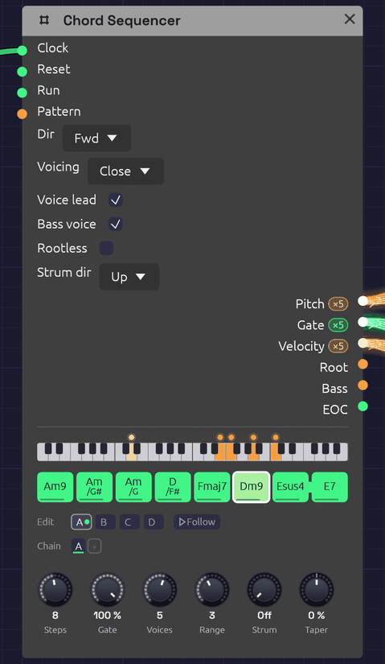
A line cliché, Am9 to E7. The keyboard strip shows Dm9 sounding: the bass voice in amber on D2, and the chord in orange above it, a dot for each voice. Esus4 is tied into E7, so the suspension resolves without a new attack.The Chord Sequencer plays a progression. Each of its 16 steps holds a chord: a root, a chord type and, if you like, a slash bass. Each clock pulse moves it on one chord. It sends that chord out as polyphonic Pitch, Gate and Velocity, one channel per note, the way Note In sends the notes you hold. So any polyphonic voice, every Library voice included, plays it with nothing else in between.
It voices the chords itself. The notes go close together, opened out, or spread wide, in the octave you choose. With Voice Leading on, each chord takes the inversion nearest the one before. The voices then move a step or stay put from chord to chord, the way a pianist's hands do, rather than jumping in parallel. Changing one chord means changing one step.
It holds four patterns, A to D, and plays them in the order its Chain gives, so one Chord Sequencer can play a 64-chord progression, or a song's verse, chorus and coda through the same voices (see Patterns and the Chain).
The Root and Bass outputs carry single notes as well: a bass line to play on a second voice, or a pitch to move an arpeggio around (see Afterglow).
Inputs
| Port | Signal Type | Description |
|---|---|---|
| Clock | Gate (Green) | Each rising edge moves to the next chord |
| Reset | Gate (Green) | A rising edge jumps back to step 1 |
| Run | Gate (Green) | Steps advance only while this is high. With nothing patched, the sequencer runs |
| Pattern | Control (Orange) | Picks the pattern for each pass in place of the Chain: 0 to 0.25 is A, 0.25 to 0.5 is B, then C, and D from 0.75 up |
Outputs
| Port | Signal Type | Description |
|---|---|---|
| Pitch | Control (Orange), poly | One channel per note of the chord, as V/Oct, lowest first |
| Gate | Gate (Green), poly | The chord's gate, one channel per note. The channels rise together, or one after another with Strum. Stays high across a tie |
| Velocity | Control (Orange), poly | The step's velocity, 0 to 1, on every channel, or shaded along the strum by Taper |
| Root | Control (Orange) | The chord's root as V/Oct, in the octave the step was written in |
| Bass | Control (Orange) | The slash chord's bass note, at or below the root; the root when there's no slash |
| EOC | Gate (Green) | End of cycle: a 1 ms pulse each time the whole Chain comes round. With a cable in Pattern, each time a pattern does |
Parameters
| Control | Range | Default | Description |
|---|---|---|---|
| Steps | 1 – 16 | 4 | How many chords each pattern plays before the next pass |
| Gate (Gate Length) | 1 – 100% | 100% | How long each chord is held, as a share of the step. 100% holds it up to the next clock |
| Voices | 1 – 8 | 4 | How many channels the cables carry: the notes in each chord |
| Range | 1 – 6 | 3 | The octave the chord's lowest note sits in. 4 is middle C's octave |
| Strum | 0 – 100 ms | 0 ms | Time between one note's gate and the next, as a guitar or harp sounds a chord (see Strum). At 0 every note is struck at once |
| Dir (Direction) | Fwd / Bwd / P-P / Rnd | Fwd | Playback order |
| Voicing | Close / Open / Spread | Close | How the notes are spread out (below) |
| Voice lead (Voice Leading) | on / off | on | Each chord takes the inversion nearest the last |
| Bass voice | on / off | off | Puts the bass note under the chord as the first channel (below) |
| Rootless | on / off | off | The chord leaves out its root first, for a bass that plays it elsewhere (below). Always so with Bass voice on |
| Strum dir | Up / Down / Alt | Up | Where a strum starts: on the lowest note, on the highest, or on each in turn, clock by clock. A step can name its own |
| Taper (Strum Taper) | −100 – 100% | 0% | Softens the notes struck later in a strum, down to nothing at 100%. Below 0 they grow louder instead (see Taper) |
Each of the 16 steps of each pattern also stores a root (a note, with its octave), a type, a bass (the root, or one of the twelve notes), a gate, a velocity, a tie, a top (Auto, or the chord tone to put on top), and a strum (Auto, Up or Down). The Chain has up to eight slots. Every knob and switch above is shared by all four patterns. A new Chord Sequencer starts every pattern on Cmaj7, Am7, Fmaj7, G7, with the roots walking down from C2. Patch a Clock into it and it plays a progression straight away.
Writing chords
Each step shows its chord's name, with a slash bass written under it. A line along the foot of the step shows its velocity, a notch in its head shows that it names its top note, and a small arrow in its corner that it names its own strum, up or down. Steps beyond Steps are hidden, not lost.
- Click a step to switch it on (green) or make it a rest (dark).
- Shift + click a step to tie it into the next step. A bar joins the two.
- Drag a step up or down to move its root by semitones, or by octaves with Shift. The chord it will become shows as you drag.
- Right-click a step to open its chord (below).
While the patch plays, the chord sounding is drawn brighter, with a white outline. The keyboard strip above the steps shows its notes, with the bass voice in amber. The strip covers four octaves, starting two below the Range octave, so a bass two octaves down still shows. Each voice has a dot that glides to its next note when the chord changes, which makes the voice leading easy to watch. Most dots creep by a step or stay where they are.
The chord popover
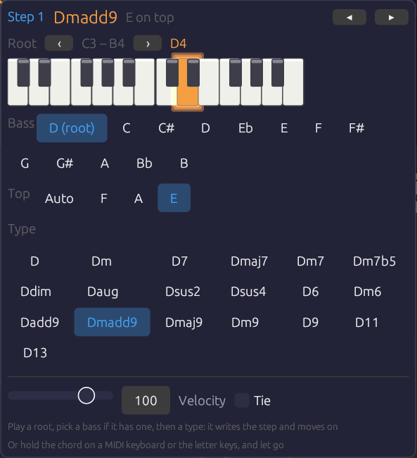
Step 1 of From One Sine: Dmadd9, with E on top. The bass row is spelled from the root, so the note a half step under D reads C#, as a lead sheet writes it. The top row offers only the tones the chord keeps: with Rootless on and three voices, Dmadd9 keeps F, A and E.Right-click a step and its chord opens under it:
- Root. A two-octave piano with the root lit. Click a key to set the root. ‹ › move the piano an octave.
- Bass. The root, or a note to put under the chord. The notes are spelled from the root (D/F#, Am/G#), the same way the step writes the name.
- Top. Auto, or one of the chord's tones to put on top of the voicing (see The top note). Only the tones the voicing keeps are offered.
- Type. All 19 chord types, each named on this root. Clicking a type writes the step, switches it on if it was a rest, and moves to the next step.
- Velocity and Tie, for this step.
- Strum. Auto follows Strum dir. Up ▴ or Down ▾ strums this step that way, whatever Strum dir says (see A step's own stroke).
So a progression goes in the way a lead sheet reads: a root, then a type, then the next root and type. The popover stays where it opened, and an outline marks the step it's writing. ◂ ▸ (or ← →) move between steps without writing. Esc, or a click outside, closes it. Each change is one undo step.
Each choice sounds as you make it. Click a type, a bass or a top, and the step's chord sounds for a moment as it now stands, the same way a chord you play on the keys does (see Playing a chord into a step): through the sequencer's own cables, voiced as the loop will reach it, and strummed as its step will be struck. A key on the piano sounds just its note, on the first channel, the way a piano would. Click Up ▴ or Down ▾ and the chord rolls that way (with Strum above 0), or let go of the Velocity slider and it's struck that hard. Tie stays quiet, because a tie changes the next step's attack, not this one's.
To compare chords before you choose, rest the pointer on a chip without clicking. Its chord sounds, but nothing is written, so you can try Gm7 against Gm9 and then click the one you want. A pointer passing over the popover stays quiet, because it has to rest on a chip for about a third of a second. Once one chip has sounded, the chips next to it sound sooner, so you can play along a row by moving across it. Clicking the chip you're resting on writes it without striking the chord again.
Playing a chord into a step
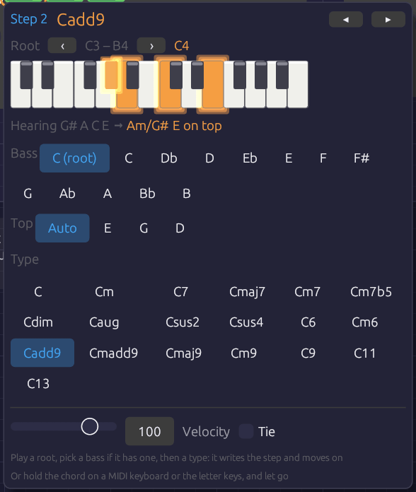
G#, A, C and E held on the letter keys over step 2. The held keys light on the piano, and the popover names the chord as it's played: Am over G#, with the E on top, which voice leading wouldn't have put there. When the keys come up, step 2 becomes Am/G# with E on top, and the popover moves on to step 3.With the popover open, you can also play the chord. Hold it on a MIDI keyboard, or on the computer's letter keys, and let go. The popover names what you played and writes it into the step: the root, the type, the slash bass and, where it's needed, the top note. It switches the step on if it was a rest, then moves to the next step. To write a progression, open the popover on its first step and play the chords one after another.
- The name shows as you play. The keys you hold light on the piano, and the line under it names the chord ("Hearing G# A C E → Am/G#"). Every note held since the first key went down counts, so the keys don't have to land or lift together.
- The lowest note is the bass. If it's a chord tone other than the root, you get an inversion, written as a slash chord (C/E). If it isn't in the chord at all, it goes under the chord as a slash bass (Am/G#). The root's octave is the first one above the bass, so the step's Bass output plays the note you held at the bottom.
- Where the same notes make two chords, the bass decides. A C E G is C6 over C and Am7 over A.
- The highest note is the top. The step keeps the voicing you played, as long as the voicing keeps that tone (see The top note). Usually voice leading would put the same note on top anyway, so Top stays on Auto and goes on following the chords around it. It's written only where voice leading would choose another note. Either way, the line under the piano names your top note ("Heard F A E → Dmadd9 E on top"): bright when it's written into the step, dim when voice leading puts it there by itself. The popover works this out from the pattern looping in its Direction. Ping-pong and random reach a step from more than one chord, so with those a chord you play always writes its top. A top note the voicing leaves out, such as the root with Rootless on, sets Top back to Auto. A single note is only a root, and leaves Top as it was.
- Leaving out the 5th is fine. C E B♭ D is C9, and C E B♭ A is C13: players often leave out the 5th, and a 13's 9th.
- A single note sets the root. The step keeps its type and loses any slash bass.
- Notes that fit no chord get the nearest one. The popover shows what it heard and what didn't fit, such as "nearest: no G · Db left out". Fix it with the chips, or play it again.
- You hear the chord as it will play. While your hand is down, the sequencer plays the chord on its own cables, so the patch's voices sound it whether or not the Clock is running. You hear it already named and voiced: in the Range octave, as many notes as Voices, with your top note on top and the bass on the first channel if Bass Voice is on. Am/G# and G#dim7 sound different, even though you played the same keys. With Voice lead on, it's led from the chord before it, as the pattern will reach it once it loops, so a progression you type in sounds as it will play, whatever order you write its steps in. (Ping-pong and random reach a step from more than one chord, so with those you hear it in root position.) With Strum up, it's rolled the way its step will be struck: the step's own stroke, or Strum Dir's, with Alt taking the step's place in the bar (up on the step a Reset starts on, then down and up in turn), and shaded by Strum Taper. Only the first key strikes. Fingers that land after it change the notes under the hand, and strings the strum hasn't reached yet take the new notes on their turn, so a chord you land a little unevenly still sounds as one stroke. When you let go, the chord fades out on its release, and the sequence comes back with its next chord. If a Note In in the patch hears MIDI, it already plays the MIDI keyboard, so only chords with letter keys in them are heard this way. The patch must be playing for any of this to sound.
While the popover is open, the letter keys belong to it, the way a text field takes them. The Note In modules don't hear them, so writing chords plays the chord, not the patch's lead. The letter keys play the popover's piano, with Z on its lowest C, and ‹ › move them an octave as well. A MIDI keyboard still plays the patch as usual. Each chord you play is one undo step.
Patterns and the Chain
The tabs under the steps pick which pattern you're editing: clicking, dragging, the popover and chords played in all write to the pattern on show. The one playing wears a green dot, and the one coming next a green ring. Follow, beside the tabs, keeps the grid on whichever pattern is playing, so it turns over as the Chain (or the Pattern CV) moves on; clicking a tab to edit one turns it off. The playing step's outline only shows on the pattern playing. Which tab is open isn't saved with the patch. Right-click a tab to copy its pattern to another, to start a chorus from the verse, or to clear it. Clearing turns every step into a rest but keeps the chords.
The Chain is the order the patterns play in, a pass each, round and round, as on the Step Sequencer: click a slot to change its pattern, right-click it to pick one or remove it, and + adds a pass of the pattern you're editing. A new Chord Sequencer plays A, and so do patches saved before it had patterns, exactly as they always did.
A pass ends where the pattern comes round: after the last step going Fwd, after step 1 going Bwd, at each turn in P-P, and after Steps clocks in Rnd. Voice leading carries straight over the join, so the next pattern's first chord is led from this one's last, and a tie on the last step holds the chord into it without a new attack. The popover's preview of how a step will be voiced (and so whether a top note needs writing) assumes its own pattern looping, so a pattern's first chord can come out a little differently after another pattern than the preview suggests.
Pattern CV
With a cable in Pattern, the CV picks the patterns instead, and the Chain dims. It's read once a pass, on the clock that starts it, in the same four zones as the Step and Trigger Sequencers', so one Arranger lane can pick the verse, chorus or coda for all three: hold it at A for the verse and at B for the chorus. Leave that lane's Glide at 0.
Chord types
The tones are listed in the order the sequencer keeps them. With fewer Voices than tones, it plays the first ones, so the 5th, which adds the least colour, is the first to go. With more voices than tones, it doubles the chord's notes an octave up, in the same order.
| Type | On C | Tones, kept in this order | Notes |
|---|---|---|---|
| maj | C | 1 3 5 | |
| min | Cm | 1 ♭3 5 | |
| 7 | C7 | 1 3 ♭7 5 | Dominant seventh |
| maj7 | Cmaj7 | 1 3 7 5 | |
| m7 | Cm7 | 1 ♭3 ♭7 5 | |
| m7b5 | Cm7b5 | 1 ♭3 ♭5 ♭7 | Half-diminished; the ♭5 is what makes it, so it's kept |
| dim | Cdim | 1 ♭3 ♭5 | |
| aug | Caug | 1 3 ♯5 | |
| sus2 | Csus2 | 1 2 5 | |
| sus4 | Csus4 | 1 4 5 | |
| 6 | C6 | 1 3 6 5 | |
| m6 | Cm6 | 1 ♭3 6 5 | |
| add9 | Cadd9 | 1 3 9 5 | A triad with the 9th, no 7th |
| maj9 | Cmaj9 | 1 3 7 9 5 | In four voices: C E B D |
| m9 | Cm9 | 1 ♭3 ♭7 9 5 | |
| 9 | C9 | 1 3 ♭7 9 5 | |
| 11 | C11 | 1 ♭7 9 11 5 | No 3rd: it would clash with the 11th. A B♭ triad over C, the soft suspended 11 of soul and jazz |
| 13 | C13 | 1 3 ♭7 13 9 5 | No 11th, for the same reason. In four voices: C E B♭ A |
| madd9 | Cmadd9 | 1 ♭3 9 5 | Minor add 9, Cm(add9) on a lead sheet: a minor triad with the 9th, no 7th |
The app writes flats and sharps as b and #, as in Bbmaj7 and F#m7b5.
Voicing
Voicing decides how the notes are spread out. Cmaj7 with Range 3:
| Voicing | Cmaj7 | Sound |
|---|---|---|
| Close | C3 E3 G3 B3 | Packed inside an octave, the way a hand plays a chord. Compact, for keys and comping |
| Open | G3 C4 E4 B4 | Drop-2: the second note from the top goes down an octave. The jazz guitar and horn-section sound, more open than Close and still in one hand |
| Spread | C3 G3 E4 B4 | Every other note goes up an octave, spanning two. Wide and airy, for pads and strings |
Range puts the chord's lowest note in its octave. With voice leading on, the lowest note can wander up to a fifth either side of that octave to stay close to the last chord, and no further. A long progression can't climb off the top of the keyboard.
Voice leading
With Voice lead off, every chord is in root position. With it on, the sequencer tries each inversion of the new chord and keeps the one whose notes are nearest the last chord's, note for note. Common tones stay where they are and the rest move by step.
The textbook ii–V–I in C, with Range 3 and four voices:
| Dm7 | G7 | Cmaj7 | |
|---|---|---|---|
| Voice lead off | D3 F3 A3 C4 | G3 B3 D4 F4 | C3 E3 G3 B3 |
| Voice lead on | D3 F3 A3 C4 | D3 F3 G3 B3 | C3 E3 G3 B3 |
With voice leading on, D and F hold through G7 while A falls to G and C to B. Then B holds and the rest fall a step into Cmaj7. No voice moves more than two semitones. That's the movement a pad or string section needs: the chords change while the sound stays smooth.
The first chord after Reset or a stop is in root position, and the rest lead on from it.
The top note
A step's Top picks the chord tone that goes on top of the voicing, the way an arranger writes a pad's top line. The sequencer then chooses only among the inversions with that tone on top. With voice leading on, it takes the nearest of those; otherwise, the one whose lowest note is in the Range octave. Auto leaves the choice to the voicing.
Most steps can leave it on Auto. Set it where voice leading picks a different voicing from the one you hear. A progression that loops back to its first chord is the usual case. Voice leading moves the first chord as close to the last one as it can, so each pass round can start lower than the one before. A Top on the first step starts every pass from the same place. From One Sine sets two tops in sixteen chords, and voice leading finds the rest. You don't have to set them by hand: play the voicing you want into the step (see Playing a chord into a step) and the popover writes the top if the step needs one.
A top that the voicing can't put on top is ignored, as if it were Auto. That happens if the tone isn't in the chord, or if Voices leaves it out, or if a voicing can't reach it: Spread can't put every tone on top. Change the chord and its top stays, so it comes back if the new chord has that tone.
Slash chords and the bass
A step's Bass puts a different note under the chord: C/E is C major over E, and D/F# is D over F#. That's how a line cliché writes a moving bass under a held chord: Am, Am/G#, Am/G, D/F#. The sequencer places the bass note at or below the root you wrote, so write roots where you want the bass line to sit, usually octave 2.
The bass is always on the Bass output. Patch it into a second voice for a bass part. Root carries the root itself, ignoring the slash.
When another voice plays the bass from Root or Bass, switch on Rootless. The chord then leaves out its own root first, as it does with Bass voice, so its voices are free for the 3rd, 7th and 9th. With Voices 3, Dmadd9 is F, A and E over a bass playing D.
To hear the bass in the chord itself, switch on Bass voice. The cables' first channel then carries the bass note, under the chord, and the chord takes the remaining channels. A single pad then plays the whole slash chord. Because the bass already has the root, the chord drops its own root first when there are more tones than voices. With Voices 4, Cmaj9 is C under E, B and D (its 3rd, 7th and 9th), and with 5 it's C under E G B D. These are the rootless voicings a jazz pianist's left hand plays.
Timing
Timing works as on the Step Sequencer. The sequencer moves on each rising edge at Clock, and Gate is a share of the time between the last two pulses, so chords follow the tempo and a swung clock.
- At 100%, a chord holds right up to the next clock. The gate then drops for one sample, so each envelope starts again on the new chord.
- A tie carries the gate into the next step without that drop. The notes change, but nothing is struck again: the envelope carries on rising or sustaining across the change. A sus4 tied into its major chord resolves this way, as do pads that glide from chord to chord.
- A rest lets the gate fall but leaves the notes where they were, so a long release fades out on the chord it began on.
- Before two clocks the sequencer has no step to measure. A held first chord then lasts until the next clock, so the first chord after ▶ Play is as long as the rest. A shorter gate is a share of half a second until the clock is measured.
- Before the first clock, the cables already carry the first chord, with the gate low. A voice whose VCA is always a little open plays that chord quietly from the start.
Edits are heard at once. Change the chord that's playing, or Voices, Voicing or Range, and the notes move to match without waiting for the next clock.
Strum
Normally every note of a chord starts on the same sample. That suits pads and string machines, but a chord sounds stiff on a guitar, a harp or an electric piano, whose players never strike all the notes at once. Strum delays each channel's gate by its place in the chord: at 20 ms, the second note starts 20 ms after the first, the third 40 ms after, and so on.
Strum dir decides which end starts:
- Up starts on the lowest note, like a guitar's downstroke from the bass string, or a harp rolling a chord upward.
- Down starts on the highest note.
- Alt strums up on one clock and down on the next, like a rhythm guitarist's hand going down and up in time. The hand keeps moving through rests and ties, so the strokes stay on the beat they belong to: the first clock after Reset strums up, the next down, and so on.
Until the strum reaches a note, that channel keeps playing the chord before, as a string rings until it's struck again. When the strum reaches it, its pitch changes and its gate drops for one sample and rises, all on the same channel. The pitch never arrives after the gate, so no note is struck on the last chord's pitch.
- Ties are never struck again. A tied chord still changes its notes in strum order, one channel after another, under gates that stay high: the chord rolls from one to the next without an attack.
- A strum fits inside its step. Once the clock has been measured, the notes are spaced no further apart than the step divided by the number of voices. The last note then sounds before the next chord's first, however fast the clock. Until the clock has been measured, the first chord after ▶ Play takes the full Strum spacing. If the next clock comes before its upper notes, they're skipped.
- Gate applies to each note from its own strike, so every note of a strummed chord is held equally long.
- Bass voice is the first channel, so Up strums the bass first and Down strums it last.
For a guitar, 10 to 30 ms is a quick strum, and around 50 ms a slow one. A harp's rolled chord is 60 to 100 ms. Sixteenth notes at a fast tempo leave little room, so there the strum shortens to fit the step.
Taper
A real strum isn't even. A downstroke digs into the low strings and only brushes the top ones, and an upstroke catches the top few and fades out before the bass. Taper gives each note a velocity by its place in the strum. At 50%, the first note plays at the step's velocity and the last at half of it, with the notes between stepping down evenly. At 100% the last note has no velocity at all: an upstroke that misses the bass strings.
Below 0 the shading runs the other way, so the notes struck last are the loudest. With Strum dir on Down, a negative Taper leans on the bass notes at the end of the strum.
- Taper follows the strum's order, not the pitch. Up shades from the bottom note, Down from the top, and Alt changes direction with each stroke, as a guitarist's hand does.
- It works with Strum at 0. The notes all start together, but they're still shaded lowest first (Up) or highest first (Down). With Down and a little Taper, the top of a pad's chord carries over the rest.
- Each note keeps its velocity until the strum reaches it, along with its pitch. A string still ringing from the chord before stays as loud as it was struck.
- How much you hear depends on the voice. The Electric Piano gets quieter as its velocity drops, so Taper is plain on it. A voice whose velocity only shapes its attack shows it less.
A step's own stroke
Alt strums up and down by the clock, which suits a steady eighth-note rhythm. A written rhythm needs more control than that: an upstroke on the "and" of 2, a downstroke on the next beat after a rest. Each step has a Strum of its own in the popover:
- Auto follows Strum dir, Alt included.
- Up or Down strums this step that way, whatever Strum dir says. A small arrow marks the step.
The hand keeps time through a step that names its own stroke, as it does through rests. Under Alt, a step written Up where a down was due is strummed up, and the step after it takes the stroke the clock gives it.
Example patches
A pad that plays a progression
[Clock Gate] ──> [Chord Sequencer Clock]
[Chord Sequencer Pitch] ──> [Supersaw Pad Pitch]
[Chord Sequencer Gate] ──> [Supersaw Pad Gate]
[Chord Sequencer Velocity] ──> [Supersaw Pad Velocity]
[Supersaw Pad Out] ──> [Reverb] ──> [Audio Output]
Add the Supersaw Pad from the Library, set the Clock to a slow division (1/1, a chord a bar), and leave Voice lead on. Try Voicing Spread with Voices 5 or 6 for strings.
Electric piano comping with a bass
[Chord Sequencer Pitch / Gate / Velocity] ──> [a mallet or FM voice]
[Chord Sequencer Bass] ──> [Oscillator V/Oct] (a second, mono voice)
[Chord Sequencer Gate] ──> [ADSR Gate] (the bass's envelope)
Voicing Close, Range 4, Gate around 60%, and velocities that vary from step to step. Write the roots in octave 2 so Bass plays a real bass line, slash notes included. A Strum of 10 to 15 ms loosens the chords the way a player's hand does.
Moving an arpeggio through the chords
Patch Root into an oscillator's Exp FM (at 1.0 octave per volt) while a Step Sequencer plays an arpeggio into its V/Oct. The oscillator adds the two pitches, so the arpeggio follows the chord roots. Afterglow is built this way, with the chords themselves on a pad underneath.
Tips
- Voices sets the colour. Three voices give shells (root, 3rd, 7th), and four give full seventh chords. Five or more add the 9ths and doublings that make pads lush.
- Bass voice and four Voices give the classic rootless voicings for jazz and neo-soul. Rootless gives the same when the bass is a voice of its own.
- Ties on a pad turn a progression into one long breath.
- Dir Rnd over a set of related chords (Fmaj7, Am7, Cmaj7, Em7) makes ambient harmony that never quite repeats.
- EOC can clock a second sequencer once per progression, or a Clock Divider for a turnaround every few passes.
- Strummed rhythm guitar: clock at eighth notes, write each chord on two steps, set Strum dir to Alt, Strum to about 25 ms and Taper to about 40%, and give the upstrokes a lower velocity. Where the rhythm needs a stroke the clock doesn't give, set that step's Strum to Up or Down. Voicing Spread with five or six voices and Bass voice on spreads the notes out like a guitar's six strings. Front Porch is built this way, with ties for the strokes the hand misses.
- A song in one sequencer: a chord a bar and 16 steps make each pattern a 16-bar section. Write the verse in A and copy it to B for a chorus that starts the same way. A Chain of
A B A Cgives verse, chorus, verse, coda.
Related Modules
- Step Sequencer: one note per step, and the same clocking and ties
- Note In: chords played live, on the same kind of cable
- Polyphony: how one cable carries several voices
- Arranger: a song's sections, which can clock or reset the progression, or pick its pattern through Pattern
- Vocoder: a whole chord on one cable makes a carrier that speaks in harmony, as in Soba Speaks
Trigger Sequencer
Module ID seq.trigger · Category Utility
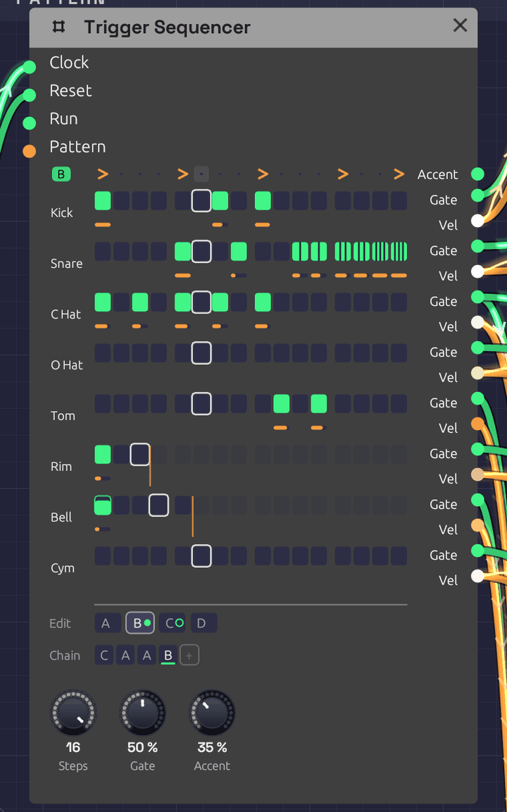
Pattern B of the Roll Call example, playing: a fill whose snare roll splits into ratchets, two, then three, then four hits a step. Each lane sits beside its own Gate and Vel jacks. The rim loops every 3 steps and the cowbell every 5, and the orange lines mark where they turn round. The Chain plays C A A B, and C, ringed, comes next.The Trigger Sequencer is a drum machine's sequencer. It has eight lanes of sixteen steps, and each lane has its own Gate and Vel output, so one module plays a whole kit: patch each lane into a Drum. It holds four patterns, A to D, and plays them in the order its Chain gives, so A A A B is a groove with a fill every fourth bar. Each step can play only some of the time, or roll two to four hits across its length.
Where the Step Sequencer plays a melody, one note at a time, the Trigger Sequencer plays rhythm, many hits at once. It has no pitch.
Inputs
| Port | Signal Type | Description |
|---|---|---|
| Clock | Gate (Green) | Each rising edge plays the next step |
| Reset | Gate (Green) | A rising edge starts over: the next clock plays step 1 of the Chain's first pattern |
| Run | Gate (Green) | Steps advance only while this is high. With nothing patched, the sequencer runs |
| Pattern | Control (Orange) | Picks the pattern for each new bar in place of the Chain: 0 to 0.25 is A, 0.25 to 0.5 is B, then C, and D from 0.75 up |
Outputs
| Port | Signal Type | Description |
|---|---|---|
| Accent | Gate (Green) | A gate on every accented step, whichever lanes play on it |
| Gate 1 – Gate 8 | Gate (Green) | Each lane's hits. Patch into a Drum's Trig, or an envelope's Gate |
| Vel 1 – Vel 8 | Control (Orange) | The velocity of the lane's last hit, 0 to 1, raised on accented steps. It holds until the lane's next hit. Patch into a Drum's Accent |
Parameters
| Control | Range | Default | Description |
|---|---|---|---|
| Steps | 1 – 16 | 16 | How many steps make a bar. The pattern changes, and the Chain moves on, only where a bar starts |
| Gate (Gate Length) | 1 – 100% | 50% | How long each gate stays high, as a share of its step, or of its share of the step in a ratchet |
| Accent (Accent Amount) | 0 – 100% | 50% | How far an accented step raises every lane's velocity toward full |
Each pattern also stores, for every lane and step, whether the step plays, its velocity, its probability and its ratchet. It also stores an accent row. Each lane has a length, and the Chain has up to eight bars. The grid, the tabs and the Chain under it edit all of these, and patches save them.
Programming a beat
Each lane is drawn on the two rows its jacks hang from. Pads sit on the Gate row, and each hit's velocity is an orange bar on the Vel row below. A lane is named after what its Gate cable plays: a Drum's type (Kick, Snare, C Hat, …), or the name of the module it feeds. A lane with nothing patched shows its number.
- Click a pad to add a hit, or take it away. A new hit plays at 80%, so an accent has room above it.
- Drag a pad up or down to set its velocity. Dragging an empty pad adds a hit at the velocity you drag to.
- Shift + click steps the ratchet through ×1, ×2, ×3 and ×4. A ratcheted pad splits into slivers, one per hit.
- Ctrl + click steps the probability through 100, 75, 50, 25 and 10%. A pad that only sometimes plays is outlined and filled only as far as its chance.
- Alt + click ends the lane at that step, so it loops on its own length (see Polymeter). Alt + click the last step again and the lane follows the bar.
- Right-click a pad for all of these in a menu.
- Right-click a lane's name to set its length from a grid of 1 to 16, or to clear the lane in this pattern.
- Click a step on the top row to accent it. Notation's accent mark, >, shows on accented steps.
Steps past the end of a lane fade. Each one keeps its settings for when the lane grows again.
Every click, and every drag, is one step of undo, with a name that says what it did ("Ratchet ×3 on Snare step 14 of B"). Fast clicks on the grid don't run together.
While the patch plays, each lane's current step has a white outline, and a pad lights as it fires. The outline is faint while the grid shows a pattern other than the one playing.
Patterns and the Chain
The tabs under the grid pick which pattern you're editing. The one playing wears a green dot, and the one coming next a green ring. Follow, beside the tabs, keeps the grid on whichever pattern is playing, so it turns over as the Chain (or the Pattern CV) moves on; clicking a tab to edit one turns it off. Which tab is open is the editor's choice: it isn't saved with the patch, and it isn't an edit. Right-click a tab to copy its pattern to another, which is the quick way to start a fill from the groove, or to clear it.
The Chain is the order the patterns play in, a bar each, round and round. The bar playing is underlined.
- Click a bar to change its pattern: A, B, C, D, then A again.
- Right-click it to pick a pattern, or to remove the bar. The bars after it move up.
- + adds a bar of the pattern you're editing to the end. The Chain holds up to eight.
A new Trigger Sequencer plays A. For a fill every fourth bar, write the groove in A, copy it to B, change B's last few steps, and make the Chain A A A B. Every pattern change lands on a bar line, counted from the same clock as the steps, so the fill never drifts, however long the patch runs.
Pattern CV
With a cable in Pattern, the CV picks the patterns instead, and the Chain dims. The CV is read once a bar, as the bar starts, so a pattern change always waits for the next bar line. A Clock Divider's Gate through an Attenuverter can switch to a fill on a phrase of its own, and an LFO or Sample & Hold can wander between patterns.
Timing
The clock
The sequencer has no tempo of its own. Each rising edge at Clock plays the next step, so a Clock at 1/16 plays sixteenths, and its swing carries through.
Gate is a share of the step, which the sequencer measures from the clock, as the Step Sequencer does. On a swung clock, each step's gates are a share of that step, long or short. A Drum only listens for the rise of its trigger, so for drums Gate hardly matters. Envelopes care.
When a hit lands while its lane's gate is still high, the gate drops for one sample first, so every hit starts with a rising edge.
Ratchets
A ratchet plays 2, 3 or 4 hits, evenly spaced across the step: ×3 on a sixteenth at 120 BPM is three hits 41.7 ms apart. The spacing comes from the measured step, so ratchets follow the tempo. On a swung clock, a step that runs long spreads its hits wider than a short one. Each hit has the step's velocity, and a gate that's Gate of its share of the step. The next clock ends any hits still to come.
Before the sequencer has seen two clock pulses it can't measure a step, so for the very first step it assumes a sixteenth at the patch's tempo (120 BPM if nothing sets one).
Probability
A step with a probability below 100% rolls the dice each time its turn comes. If it plays, all of its ratchet's hits play. The dice fall the same way every time you press Play, so a take you liked can be played again.
Accents
An accented step raises the velocity of every lane that plays on it, part of the way to full: at 50% Accent, a 60% hit plays at 80%, and a 100% hit stays at 100%. At 0% the accent row does nothing to the velocities. Accent also fires its own gate on every accented step, for anything else that should hear it: a filter's envelope, say, or a VCA.
Polymeter
A lane left at its default follows the bar. Give a lane its own length and it loops that many steps however long the bar is. A lane 3 steps long against a 16-step bar plays a figure of three over a bar of four, and the two only line up again after 3 bars. Two lanes of 3 and 5 against 16 meet the bar again after 15 bars.
The bar and every lane count the same clock, so they drift against each other only on purpose. Reset starts them all together again.
Stop and start
Patch a gate into Run to pause the pattern in place. While Run is low, clocks are ignored and the sequencer stays on its current step. A step that played just before Run fell still plays out its ratchet. When Run comes back high, the next clock plays the step after the one it stopped on. Hold Run low for whole bars and the Chain picks up as though those bars never came.
The Clock's Run and Reset outputs are made for this. Patch them into Run and Reset and the pattern stops with the Clock and starts again from step 1 when it does, including when the Clock follows a DAW's MIDI clock and you press Play there.
To let a song's last chord ring with no more hits, patch an Arranger lane's Gate into Run and bring the lane to zero for the closing bars.
How patches store it
Every step is one parameter, named for its pattern, lane and step: Step A1 01 is pattern A, lane 1, step 1. Its value reads as digits, ratchet, probability, velocity, and it's negative while the step is off:
| Value | Step |
|---|---|
1100080 | One hit, always, at 80% |
3050100 | Three hits, half the time, at 100% |
-1100080 | Off. Click it and it plays one hit, always, at 80% |
An off step keeps its settings, so turning it off and on again changes nothing else. The accent row is Accent A 01 to Accent D 16, the lanes' lengths Length 1 to Length 8 (0 follows the bar), and the Chain Chain 1 to Chain 8.
Tips
- One lane per drum. Patch Gate 1 into the kick's Trig and Vel 1 into its Accent, and so on down the kit. The lane names follow.
- A choke group. Patch the closed hat's Gate into the open hat's Choke as well as the closed hat's Trig, and a closed hat cuts an open one short.
- Ghost notes. Drop a snare hit to 25–35% velocity. Through a Drum's Accent it plays darker as well as quieter.
- Rolls. A ×2 on the last hat of a bar is a flam into the downbeat. ×3 and ×4 on the last snare hits of a fill are a press roll.
- Humanize. A few hats at 75% or 50% chance keep a loop from sounding like one.
- Two kits. A second Trigger Sequencer on the same Clock and Reset plays in lockstep with the first.
Related
- Roll Call – a full kit on one Trigger Sequencer, with a fill and crash every four bars
- Arranger – a song's sections, with a lane that can pick this sequencer's pattern for each one
- Drum – the voice each lane plays
- Step Sequencer – notes rather than hits
- Clock – tempo and swing
- Clock Divider – phrases, for Pattern or Reset
Arranger
Module ID seq.arranger · Category Utility
 A five-section song, playing its Build. Each section is a block as wide as its bars, and each lane's level runs under them as an orange line, with a green strip wherever its gate is high. The ticks on the Crash lane are Hits. The white line is the playhead.
A five-section song, playing its Build. Each section is a block as wide as its bars, and each lane's level runs under them as an orange line, with a green strip wherever its gate is high. The ticks on the Crash lane are Hits. The white line is the playhead.
The Arranger is a song's timeline. It holds up to 32 named sections, each some bars long and played ×1 to ×16 times, in order, and eight lanes of automation that the sections move. A lane can ride a part's fader, pick a drum pattern, open a filter over a build or press a Looper's button, and each section says what it does when the section starts: hold, jump, ramp or hit.
It counts bars from a Clock, like the sequencers, so the song stays in step with everything else the Clock drives. Press ▶ Play and it starts from the first section.
Inputs
| Port | Signal Type | Description |
|---|---|---|
| Clock | Gate (Green) | Each rising edge is a step, and Steps of them make a bar. Patch the Clock that drives the sequencers |
| Reset | Gate (Green) | A rising edge starts over: the next clock starts section 1 |
| Jump | Gate (Green) | A rising edge goes to the section Jump To picks, at the next bar line |
| Jump To | Control (Orange) | The section a Jump goes to, as its number ÷ 32 (section 1 is 0, section 5 is 4/32). It reads the same as the Section output |
| Follow | Control (Orange) | Patch another Arranger's Section here to follow it: its sections become this one's, and it goes wherever the leader goes |
Outputs
| Port | Signal Type | Description |
|---|---|---|
| Section | Control (Orange) | The section playing, its index ÷ 32. A repeated section reads the same on every pass |
| Section Trig | Gate (Green) | A trigger on each section's downbeat, and on every pass of a repeated one |
| Bar | Gate (Green) | A trigger on every bar's downbeat |
| Last Bar | Gate (Green) | High through each section's final bar, for a fill. A repeated section has one on every pass |
| End | Gate (Green) | A trigger when the last section finishes, whether the song loops or stops |
| Next | Control (Orange) | The section the next bar line goes to, as its index ÷ 32. It reads the same as Section until the section's last bar throws its Next, or a Jump is asked for. Before the first clock, it names the section the song starts on. Patch it into a Setlist, which tells the hardware ahead of the bar |
| Lane 1 – Lane 8 | Control (Orange) | Each lane's level, 0 to 1. A ramp is smooth enough to drive a Mixer's Level directly |
| Gate 1 – Gate 8 | Gate (Green) | High while the lane is above zero, and for a moment on each Hit |
Triggers last half a step.
Parameters
| Control | Range | Default | Description |
|---|---|---|---|
| Steps | 1 – 96 | 16 | How many clocks make a bar: 16 for a Clock at 1/16 in 4/4, 12 for 3/4 |
| Loop to | Off, 1 – 32 | 1 | The section to go back to after the last one, or Off to stop there |
| Width | Compact, Wide, Extra wide | Compact | How wide the timeline is drawn: 440, 760 or 1080 points. Wide or Extra wide suits a long song read whole on a big screen. The module plays the same at any width |
The sections, their names, lengths and repeats, the lanes' names and glides, and every section's cue for every lane are edited on the timeline, and patches save them. So is Width. The jacks keep their rows at every width, and so do the lanes beside them.
Writing a song
The song runs left to right across the node. Each section is a block as wide as its share of the bars, though a short one keeps enough room to click. The blocks sit beside the song's own jacks: Section, Trig, Bar, Last, End and Next. Each lane is drawn on the two rows its CV and Gate jacks hang from, so a lane reads straight across into its cables.
A lane is named for what its cable drives (a Mixer's Level 2, say) until you give it a name. The bar count at the top left shows where the song is, and the section playing is lit green, with its name in the header too.
- Click a section to pick it. The bar under the timeline shows it.
- Double-click a section to rename it. Press Enter to keep the name, or Escape to leave it.
- Drag a lane up or down inside a section to set the level that section takes it to. A section that held the lane now jumps it.
- Shift-drag a lane inside a section to set where its ramp starts. Any other cue becomes a ramp from there to its level, or for a Hold, to where the lane was.
- Right-click a lane inside a section for how it gets there (see Cues), its level, and a ramp's length, curve and start.
- Double-click a lane's name to rename it. Right-click it to set its Glide, or to clear it.
- Right-click a section for its length and repeats, to add, copy, move or delete it, and to split or merge its copies.
The bar under the timeline does the same for the section you picked. ◀ and ▶ step through the sections. The bars field sets its length, and the × field how many times it plays. + adds a blank section after it, and Copy adds a copy. ◀ Move and Move ▶ swap it with its neighbours, and Delete takes it out. Loop to follows the section it named when sections move.
A section's final bar is shaded, since that's where a fill goes. A repeated section has one shaded on each pass. Every edit is one step of undo, named for what it did ("Groove · Pad jumps to 48%").
Name…, at the left of the bar under the lanes' names, names the Arranger itself. The name shows in its header beside the section playing, and an Arranger that follows this one calls it by its name.
A name too long for its block is cut short with "…". Hover the block and the whole name shows on a tag just above it. Pick the section and the bar under the timeline shows it in full too.
Zooming in
A long song packs its short sections tight: in a 128-bar song a one-bar fill is a sliver. Zoom the timeline rather than the whole canvas:
- Ctrl+scroll over the timeline (or pinch, on a trackpad) zooms it about the pointer, in as far as two bars across.
- Scroll over the timeline, once it's zoomed in, moves along the song. While it shows the whole song, the scroll wheel zooms the canvas as usual.
- The thin strip over the ruler is the whole song in little, with the part in view framed. Drag along it to move the view, or click somewhere to go there. Double-click it to see the whole song again.
Zoomed in, the ruler numbers the bars inside each section, and each section's name stays in view as you move past its start. While the song plays, the view turns the page whenever the playhead nears its right edge, so the playhead stays in view. It waits a few seconds after you move the view yourself.
The zoom belongs to the editor, like the section you picked. It isn't saved with the patch and isn't a step of undo. For a song you want to read whole, set Width instead.
Repeats
Songs repeat themselves: a groove four times round, a verse that comes back. Give a section a × count, ×1 to ×16, and it plays that many times before the next. ×N plays exactly as N copies of it would, sample for sample:
- Every pass gives the section's cues again. A Jump jumps again, a Ramp runs again (from its own start if it has one, or from wherever the lane is), and a Hit fires again, so a crash on every pass of a 4-bar groove is one cue.
- Section Trig, Bar and Last Bar fire on every pass, so a fill on the last bar lands at the end of each one.
- A Ramp "over the section" takes one pass.
- Jump to a repeated section starts its first pass, and so does Loop to.
The section is one block on the timeline, as wide as all its passes, with ×N in its corner and faint dashes between the passes. While it plays, the pass playing is lit, the corner counts the passes off ("3/4"), and so do the bar count and the header: "Groove 3/4".
Since ×N means N copies, either can become the other. Right-click a section:
- Split into copies turns a section ×N into N sections, each ×1, named "Groove", "Groove 2" and so on. Do it when one pass needs to differ.
- Merge with copies after it folds the sections straight after this one that play the same (the same length and cues, whatever their names) into it, up to ×16. It stops at a section Loop to goes back to, which has to stay a section of its own.
Each is one step of undo, and neither changes what you hear. The one thing that does change is the sections' numbers after it, so a Jump To CV that picked a later section by number needs moving too. Loop to follows by itself.
More than eight lanes: Follow
A song can need more than eight lanes. Patch one Arranger's Section output into another's Follow input, and the second one follows the first. It has the first one's sections, the same number of them, as long, played as many times, with the same names and the same places to wander to, and the same Steps and Loop to. Its lanes are its own, and you edit them on its own face as before.
- Edit the sections on the leader. On the follower they can be picked but not changed, and its bar says Follows Desk (or whatever the leader is called). Its Steps knob and Loop to are the leader's too.
- The follower's cues move with their sections. Add, copy, move, delete, split or merge a section on the leader, and the follower does the same with its own cues. A merge folds only copies that play the same on every Arranger down the chain. Lengthening or renaming a section does too. The leader's edit and the follower's are one step of undo, so undo takes both back.
- The follower zooms with its leader. Zoom or scroll either one and both move, page turns included, so the two scores stay lined up section for section. A whole chain shares one view.
- Unpatch Follow and the follower keeps the sections it had, and you can edit them on it again. It keeps the view it had too, and zooms on its own from then on.
- Chains. A follower can lead another, so three Arrangers give 24 lanes. A chain can't come back round: an Arranger that would end up following itself refuses the cable and says why. Follow takes only an Arranger's Section.
Two Arrangers that count the same Clock already change section on the same sample. But a leader can wander, or jump on a Jump of its own, so on every bar line a follower goes to the section its leader is in. It throws no dice of its own. A Jump patched into the leader alone moves the whole chain.
Cues
Each section gives each lane one of four cues as the section starts:
| Cue | What the lane does |
|---|---|
| Hold | Carries on as it was. If it was ramping, the ramp carries on. A new section holds every lane |
| Jump | Goes straight to the level, on the downbeat |
| Ramp | Glides to the level over the whole section or over a number of bars, on one of four curves. It starts from wherever the lane is, or from a level of its own. A ramp longer than its section carries on through the sections after it that hold |
| Hit | Goes to the level for half a step, then back: a trigger, with the level riding on the CV, for a Drum's Trig and Accent or a Looper's Rec |
Ramps

A ramp takes one of four shapes, chosen in its right-click menu and drawn to shape on the lane:
| Curve | Shape | Suits |
|---|---|---|
| S-curve | Leaves gently and arrives gently, like a hand on a fader. The default, and how every ramp moved before there was a choice | Fades. A Mixer's Level moves without a click, however slow or quick the ramp |
| Linear | The same pace all the way | A steady build, or a tempo-like push |
| Exp | Slow to start, fast to finish: a fifth of the way there at half time | A filter sweep or a riser that rushes into the downbeat |
| Log | Fast to start, slow to finish: four fifths of the way there at half time | A swell that settles, or a fade that tails away |
Exp and Log are mirror images, so an Exp fade-out holds on and then drops away, and a Log one falls quickly and then lingers.
From sets where a ramp starts. Where it is carries on from the lane's level as the section starts. A level jumps the lane there on the downbeat, as a Jump would, gate dip and Glide included, and ramps from there. A part can then come in at one level and grow through the same section: a pad that enters at 28% and swells to 42% over twelve bars is one cue.
The gate
A lane's Gate is high while the lane is above zero. One lane can therefore be a part's level and its envelope's gate at once. A riser that jumps to 30% for a section and back to 0 is heard for that section and gated for exactly as long.
When a Jump or Hit lands while the gate is already high, the gate drops for one sample first, so an envelope starts again. So does a ramp that starts from a level of its own. A ramp up from zero opens the gate as it leaves zero.
Glide
A Jump moves on one sample, and a Mixer's Level adds its CV without smoothing, so a jump under a ringing note clicks. Glide smooths the lane's CV: it's how long the CV takes to move all the way from 0 to 1, so 1 s brings a half-way fader up in half a second, the same as a Sample & Hold's Slew. A second or so suits a pad, and 40 ms keeps a rhythmic part on the beat while still saving its tails. The gate follows the cue, not the glide.
Leave Glide at 0 on a lane that picks something: a Trigger Sequencer's, Step Sequencer's or Chord Sequencer's Pattern, say. The sequencer reads the CV on the downbeat, the same sample the lane jumps on, and a glide would still be on its way there.
Timing
The Arranger has no tempo of its own. It counts clock edges: a bar is Steps of them, and a section is its length in bars. It changes section on the clock edge that starts the section's first bar, the same edge the sequencers step on, so it can't drift from them, swing or not.
A ramp moves between clock edges too, smoothly. It measures each step from the clock, as the sequencers do, so on a swung clock it moves a little faster through the short steps. It still lands on the clock edge that ends it.
Before the Arranger has seen two clock pulses it can't measure a step. For the first triggers it assumes a sixteenth at the patch's tempo, or at 120 BPM if nothing sets one.
Looping, ending and jumping
After the last section, the song goes back to Loop to, and End fires. With Loop to off, End fires and the song stops where it is. The lanes keep their last levels, and the bars stop counting, until a Reset, a Jump or the next Play.
Jump waits for the next bar line, so a live change of section always lands on the beat. Patch a button, a Note In gate or a Logic decision into Jump, and a constant or a Sample & Hold into Jump To. While a Jump waits, the section it's going to is outlined green.
Wandering: where a section goes next
A song doesn't have to play in the order it's written. Right-click a section, and When it ends says where it may go:
- On as written – the section after it, or Loop to after the last one, or stopping there with Loop to off.
- Or… – up to two other places: any section (itself included, to maybe play it again), or Anywhere, which is any section but this one.
Each place has a weight from 0 to 9, and its chance is its weight against the others'. Window with on to Rain 1, Home 1, Late 1 goes each way a third of the time. On 0 never goes on as written. Always on as written puts the section back in order.
The dice are thrown on the downbeat of the section's last bar, on its last pass if it repeats. They don't wait for the bar line. Over the timeline, a faint arc leads from the end of each section that may wander to each place it may go, fainter the less likely it is, and a small ? marks Anywhere. Once the dice are thrown, the arc to where they went lights green, a bar before the song gets there. A Jump that lands in that bar still wins.
- Repeatable. The dice are seeded, so an offline render plays the same wandering every time, and so does the app each time the patch is opened. Stopping and starting again carries on with new throws.
- End fires only when the last section goes on as written. A last section that wanders back into the song hasn't ended it.
- Followers wander with their leader. A follower has its leader's places to go, and goes where its leader went. Its timeline lights the same arc.
- Moving sections. Add, copy, move, delete, split or merge sections and each place keeps pointing at the section it named, wherever that has moved. One that names a deleted section is dropped. Splitting a section ×3 gives only the last copy its wandering, and a merge stops at a copy that may wander off.
How patches store it
Every section's cue for every lane is one parameter, named for both: Section 03 Lane 2 is section 3's cue for lane 2. Its value reads as digits, move, ramp bars and level in tenths of a percent. The move is 0 Hold, 1 Jump, 2 Ramp and 3 Hit, and a ramp on another curve takes 4 Linear, 5 Exp or 6 Log:
| Value | Cue |
|---|---|
0 | Hold |
1000700 | Jump to 70% |
2000500 | Ramp to 50% over the section, on the S-curve |
2080250 | Ramp to 25% over 8 bars, on the S-curve |
4000500 | Ramp to 50% over the section, in a line |
5160900 | Ramp to 90% over 16 bars, on Exp |
6040000 | Ramp to 0% over 4 bars, on Log |
3000850 | Hit at 85% |
A ramp's start is a second parameter, Section 03 Lane 2 From: the level in tenths of a percent (280 starts at 28%), or -1 to start from where the lane is. Patches saved before ramps had curves and starts have no From parameters and only 2 for ramps, so they play as they always did.
Where a section may go is Next 01 to Next 32, read as digits too: the weight of going on as written, then each other place's section (01 to 32, or 00 for anywhere) and weight. 1062051 goes on with weight 1, to section 6 with weight 2 and to section 5 with weight 1. 0 (the default, and every patch from before) always goes on as written.
The sections' lengths are Length 01 to Length 32, their repeats Repeat 01 to Repeat 32 (a patch from before repeats plays every section ×1), the lanes' glides Glide 1 to Glide 8, and Sections is how many sections the song has. The names you give sections and lanes, and the Arranger's own name, are saved with the module as labels. A follower saves its own copy of its leader's sections, so it plays them even where Follow isn't known.
Tips
- Faders at zero. On a Mixer, set a channel's Level knob to 0 and patch a lane into its Level input. The lane then is the fader.
- Fills. Either give each phrase a one-bar Fill section that jumps the drum lane to the fill pattern, or patch Last Bar into something that plays a fill. With Last Bar, a 4-bar groove ×4 has a fill at the end of every pass.
- Two Arrangers, one song. When eight lanes aren't enough, clock a second Arranger from the same Clock and patch the first one's Section into its Follow (see Follow). From One Sine splits its score into faders and cues this way, with a third Arranger for its tape and its tempo.
- Pedals. Hit a Looper's Rec at the start of a section to record it, and its Clear at the top of the song so each pass starts fresh.
- A brightness lane. Ramp a lane over a build and patch it through an Attenuverter into filter cutoffs or drive amounts: the whole build opens up together.
- A shorter song. Set Loop to a later section, and the intro plays only once.
- An endless song. Give each section a chance of going somewhere else, and set Loop to back near the start: the song never quite repeats. Weight its way home a little higher, so it keeps coming back to its centre.
- Ride the room. Patch a lane into a Mixer's Return with its knob at 0, and the lane is the reverb's fader: dry and close for the opening, the hall for the second verse. A lane into one channel's Send steps just that part into the room. Canopy does the first.
- Tell the hardware. Patch Section, Next and Bar into a Setlist, and each section moves the Digitakt to its pattern and the FANTOM to its scene, ahead of the bar.
Related
- From One Sine – a whole song on three Arrangers: eight faders; the drums, crash, riser, brightness, Looper pedals and the melody's patterns; a lane that warps the master tape, and one that slows the Clock into the end
- Trigger Sequencer – patterns for an Arranger lane to pick
- Mixer – the faders, sends and return a lane rides
- Clock – tempo and swing
- Clock Divider – phrases without a timeline
Scenes
Module ID util.scenes · Category Utility
Scenes keeps the knobs of a patch as scenes, A to H, and glides between two of them with one knob. A verse and its breakdown, a dry sound and a drenched one, the calm before a drop: store each as a scene, and Morph carries every knob from one to the other at once. A change that would take eight hands becomes one gesture, and the space halfway between two scenes, where nobody set the knobs on purpose, is often where the good sounds are.
The scenes live on the module, so you can see them in the patch, and they're saved with it.
What a scene holds
A Scenes module at the top of the patch holds every knob and switch in the patch. Put one inside a group, and it holds only that group's knobs (and those of the groups inside it), so a voice can have scenes of its own without touching the drums.
A scene leaves out the Audio Output, other Scenes modules, and switches that start, stop or record rather than shape the sound (a Clock's Run, a Sampler's Rec, an Audio Input's Channel), or say which device a module plays (a Port).
An Instrument's knobs are kept like any others, so a scene can hold a sound on the hardware. A knob of named values (an arpeggio type) flips at halfway, as a dropdown does. A knob that nudges the device rather than setting it (the FANTOM-06's Cutoff) isn't kept, because it has no place to come back to.
Inputs
| Port | Signal Type | Description |
|---|---|---|
| Morph | Control (Orange) | Replaces the Morph knob: 0 is the From scene, 1 the To scene. Patch an LFO (with Bipolar off), an envelope or an Arranger lane |
Parameters
| Control | Range | Default | Description |
|---|---|---|---|
| Morph | 0 to 1 | 0 | How far from the From scene to the To scene the knobs sit |
| From | A to H | A | The scene at Morph 0 |
| To | A to H | B | The scene at Morph 1 |
The pads
Each pad is a scene. A pad with a scene in it draws the scene's knobs as a row of ticks, each as high as the knob is turned. The pad the knobs stand at right now is ringed in blue.
- Click an empty pad to keep the knobs as they stand.
- Click a full pad to recall it: every knob it holds jumps there.
- Shift+click a full pad to keep the knobs there instead.
- Alt+click a full pad to clear it.
- Right-click a pad and choose Learn MIDI, then hit a pad on your controller, to recall the scene from it. A mapped pad wears a small purple dot.
The From and To pads glow, each in proportion to how near Morph has carried the knobs to it, so the light crossfades from one to the other as Morph turns. Along the bottom, a dot rides a line from From to To. The header says what the module reaches (PATCH, or its group's name) and where Morph is.
Keeping, recalling and clearing a scene are each one undo step.
Morphing
As Morph moves, each knob the two scenes share moves from its place in one to its place in the other:
- Knobs glide round their own travel, as a hand would turn them. A frequency knob moves by octaves, so halfway between 200 Hz and 3200 Hz is 800 Hz, not 1700.
- Whole-number knobs, switches and dropdowns hold the From scene's setting until Morph passes halfway, then flip to the To scene's.
- A knob a cable drives is left to the cable.
- A knob only one scene holds (on a module added after the other was kept) stays where it is.
The knobs turn on screen as Morph moves, and reach the sound through the same smoothing as a hand on the knob, so a glide has no zipper noise, even when an LFO drives it.
Morph only moves the knobs when it moves. Turn a knob by hand after a glide and it stays where you put it until Morph moves again. Undo works the same way: undoing a turn of Morph (or a change of From or To) puts the knobs back with it.
Driving Morph
- By hand: turn Morph, or map it to a MIDI controller (right-click it, Learn MIDI) and ride it.
- An LFO: a very slow sine with Bipolar off breathes between two scenes. At 0.03 Hz it takes 32 seconds to go there and back.
- The Arranger: patch a lane into Morph, and give each section a level. Jump switches scenes on the downbeat; Ramp glides over the section, for a build.
- An envelope: a long ADSR swells into a scene and back as a key is held.
Keeping a mutation
Mutate wanders the knobs at random. When it lands somewhere you like, press Ctrl + Shift + M to keep the knobs in the next free scene of the Scenes module that reaches the selection (the one in its group, else the patch's). Then set From to the scene you started at and To to the new one, and Morph finds everything between them.
Patches
The Breakdown recipe glides an acid line between a verse and a breakdown.
Tips
- Keep a home scene. Store A before you start exploring, so you can always click your way back.
- Morph between near neighbours. Two scenes far apart sweep everything at once; two close ones make a subtle, living change.
- Several Scenes modules can share a patch: one inside each group, each with its own Morph, and one at the top for the whole song.
- Morph plays anywhere the patch does. The engine turns the knobs, so the render tool, the plugin with its window closed and a patch embedded in a web page all hear the glide. A patch opens and starts with its knobs where they were saved, and they follow once Morph moves.
MIDI Monitor
Module ID util.midi_monitor · Category Utility
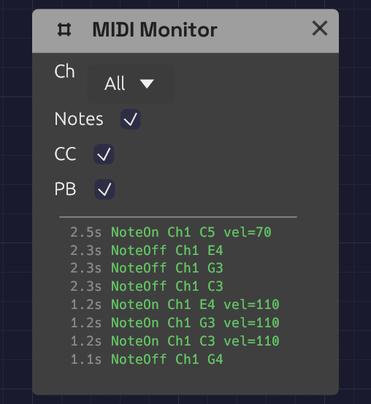
The newest event is at the top, colored by kind.The MIDI Monitor shows the MIDI arriving from your device as it happens. Use it when you connect new gear, when a note won't play, or to find out which CC number a knob on your controller sends before you map it.
It makes no sound, and needs nothing patched. It listens to every device ticked in MIDI In on the toolbar (see Choosing a MIDI device), so you can drop it anywhere in a patch. To watch one device only, right-click it and choose it under Device. Its one jack, the purple MIDI input on its title bar, takes a cable from a MIDI In: then it shows what that MIDI In's modules hear, its device on its channel.
Controls
| Control | Options | Default | Description |
|---|---|---|---|
| Ch (Channel) | All / 1 – 16 | All | Shows only events on this MIDI channel |
| Notes | On / Off | On | Shows Note On and Note Off |
| CC | On / Off | On | Shows control changes: knobs, faders, pedals |
| PB (Pitch Bend) | On / Off | On | Shows pitch bend wheel movements |
Reading the log
The log shows the most recent events, newest at the top. Each line starts with the time it arrived, in seconds since the first event the app received, then the event itself:
| Event | Example | Color |
|---|---|---|
| Note On | NoteOn Ch1 C4 vel=100 | Green |
| Note Off | NoteOff Ch1 C4 | Green |
| Control change | CC Ch1 #1 val=64 | Orange |
| Pitch bend | PitchBend Ch1 2048 | Purple |
| Channel pressure | Pressure Ch1 45 | Gray |
| Polyphonic pressure | PolyPres Ch1 C4 45 | Gray |
| Program change | Program Ch1 #5 | Gray |
Note names put middle C (MIDI note 60) at C4. Pitch bend runs from −8192 to 8191, with 0 at the center. Pressure and program change can't be filtered out.
The log holds the last few events and applies the filters to those, so turning a filter on hides lines rather than reaching further back. Notes played on the computer keys into a Note In module show up here too, marked Keys where a channel would be.
While two or more devices are open and the Monitor hears any of them, each line ends with the name of the device it came from, shortened to ten letters.
Uses
Is anything arriving? Play a note. If the log still says No MIDI events, the problem is upstream: check that the device is selected and connected in MIDI In, and that the controller is sending.
Which channel? Play each device in turn and read the channel off the log. Then set Ch on your Note In modules to match, or leave them on Omni.
Which CC? Move a knob on your controller and read its number after the #. You don't need the number for MIDI Learn, which listens for you, but it helps when a controller sends more than you expect.
A stuck note? Look for a Note On without a matching Note Off. If the Note Off never arrives, the controller or its connection dropped it.
Is velocity working? Play softly, then hard, and watch vel=. A controller that always sends the same number has fixed velocity switched on in its own settings.
Related modules
- Note In – turns the notes into CV, one voice or chords, and covers MIDI Learn
Audio Output
Module ID output.audio · Category Output
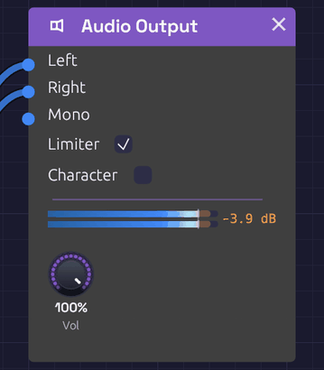
The meter shows what reaches your speakers, and in orange, what the limiter caught.Audio Output is where a patch meets your speakers. Whatever arrives at its inputs goes through a short mastering chain (DC blocking, volume, optional saturation and a peak limiter) and on to your audio device.
Every patch that makes sound needs one. If a patch has more than one Audio Output, only one of them is heard, so route everything to a single output.
Inputs
| Port | Signal Type | Description |
|---|---|---|
| Left | Audio (Blue) | Left speaker |
| Right | Audio (Blue) | Right speaker |
| Mono | Audio (Blue) | Sent equally to both speakers. The easiest way to hear a patch |
The module has no outputs.
Parameters
| Control | Range | Default | Description |
|---|---|---|---|
| Vol (Volume) | 0 – 100% | 80% | Master volume |
| Limiter | On / Off | On | Catches peaks before they can clip |
| Character | On / Off | Off | Rounds off peaks above -3 dBFS, for a little warmth. See Character or Tape? |
Routing
Mono is added to both channels, on top of anything patched into Left and Right. Left and Right stay separate: a cable into Left alone plays only in the left speaker. For a mono source, use Mono. For stereo, patch a module's left and right outputs (an Oscillator's Out L and Out R, or any effect's Out L and Out R) into Left and Right.
The inputs are audio inputs, so a polyphonic cable is summed to one channel on the way in. A whole polyphonic voice can go straight to the output.
The output stage
The signal passes through these stages, in order:
- Mix. Left and Right, with Mono added to both. Any sample that isn't a valid number (NaN or infinity) is replaced by silence, so a misbehaving module can never send a burst of noise to your speakers.
- DC blocker. A 5 Hz high-pass removes any constant offset, such as a stray control signal or the lopsided output of an asymmetric distortion. It is far below anything you can hear.
- Volume.
- Character (when on). A soft clipper that leaves everything below about -3 dBFS untouched and rounds off peaks above it, never going past full scale. It adds a little warmth and density to loud material and none at all to quiet passages.
- Limiter (when on). A stereo-linked, look-ahead peak limiter with a ceiling of -0.3 dBFS. It sees each peak 1 ms before it arrives and turns the gain down just in time, so peaks are caught rather than clipped. It lets go quickly after a single transient and more slowly when it's working continuously, so it neither ducks audibly nor pumps. Linking the channels keeps the stereo image from shifting. The output never goes over the ceiling.
The limiter's look-ahead delays the output by 1 ms. The delay stays in place when the limiter is off, so switching it doesn't shift the timing.
Character or Tape?
Character and the Tape module both add warmth, but they do different jobs.
Character works only on the peaks. It has no memory and no tone of its own: below -3 dBFS it does nothing, and above that it rounds every sample off on the same curve, whatever its pitch. Quiet passages pass through unchanged, and loud ones gain a little density and reach the limiter a little softer. It needs no setting up, and on a patch that never gets loud it changes nothing.
Tape colours everything that passes through it, quiet or loud. You patch it in front of the output, and it has its own level calibration (0 VU is a sine at -18 dBFS RMS). The record head squashes the treble first, the head bump lifts the lows, the top end rolls off with speed and age, and wow, flutter and hiss make the sound move. Putting a patch on tape is a decision about how the whole patch sounds.
The two work together. Tape colours the mix, Character rounds whatever peaks still reach the output, and the limiter holds the ceiling. Clair de Satellite and From One Sine use the whole chain.
The meter
The node shows a stereo peak meter, one bar per channel, scaled from -48 to +6 dBFS.
- The bar is the level you hear, after the limiter. It runs blue through the body of the signal and warms to amber near full scale.
- A faint orange extension beyond the bar appears while the limiter is working. It reaches as far as the patch drove into it: the longer the extension, the harder the limiter is working.
- A thin tick marks the ceiling: -0.3 dBFS with the limiter on, 0 dBFS with it off.
- A peak-hold mark stays at the highest recent level for a moment and then falls.
- The readout to the right shows the limiter's gain reduction, such as -2.4 dB. It reads off when the limiter is switched off.
With the limiter off, anything over 0 dBFS shows in red. Those peaks will clip your audio device.
Hover the meter for exact levels: what's going out, what's going into the limiter, and how much it's reducing.
Setting levels
The limiter is a safety net, not a volume knob. A few decibels of reduction on the loudest peaks is inaudible. Constant reduction of 6 dB or more squashes the patch and dulls its transients. If the orange extension is always showing, turn something down earlier in the chain (the VCA's Level, the Mixer's levels, or an effect's output) rather than leaning on the limiter.
Remember that voices add up. A four-note polyphonic chord is about four times as loud as one note.
Turn Limiter off when you want to hear exactly what the patch produces, for example while checking how an effect behaves at full scale. Keep Vol low while you do.
Patches
Mono
[VCA Out] ──> [Audio Output Mono]
Stereo, through effects
[VCA Out] ──> [Delay In L]
[Delay Out L] ──> [Reverb In L]
[Delay Out R] ──> [Reverb In R]
[Reverb Out L] ──> [Audio Output Left]
[Reverb Out R] ──> [Audio Output Right]
The Delay plays a mono input on both sides when In R is empty, so a mono voice becomes stereo at the first effect.
Supersaw
[Oscillator Out L] ──> [Audio Output Left]
[Oscillator Out R] ──> [Audio Output Right]
With Voices above 1, the Oscillator spreads its unison voices across the two outputs.
Troubleshooting
No sound. Press Play in the toolbar. Check that something is patched into the output, that Vol is up, and that the meter moves. If the meter moves but you hear nothing, check your audio device and system volume.
Sound in one speaker only. A cable into Left or Right plays on that side alone. Move it to Mono, or patch the other side too.
Distortion. If the limiter's readout shows large, constant reduction, the patch is too hot. Bring levels down before the output. If Character is on, the soft clipper also colors peaks above -3 dBFS.
Related modules
- Mix: add sources into one mono signal
- Mixer: place sources in the stereo field before the output
- VCA: shape and set the level of each voice
- Reverb and Delay: stereo effects that usually come last
Link Out
Module ID output.link · Category Output
Link Out plays Seoul, a music visualizer, from your patch. Seoul already hears Soba through your speakers, but from the sound alone it can only guess what the patch means. Link Out tells it: whatever you patch into its eight CV lanes and four Gates goes to Seoul with the patch's Clock, and Seoul's presets read them as cv1 to cv8 and gate1 to gate4.
The cables decide what the picture follows. The LFO that sweeps your filter can sweep Seoul's zoom too, the kick's trigger can flash it, and a preset that turns on the beat turns on your Clock's beat exactly, not one Seoul has guessed at.
Link Out makes no sound and changes none. It works in the desktop app. In the browser it shows what it would send but sends nothing.
Inputs
| Port | Signal Type | Description |
|---|---|---|
| CV 1 … CV 8 | Control (Orange) | Sent to Seoul as /soba/cv/1 … /soba/cv/8, as they are: 0 to 1, or -1 to 1. An empty lane sends 0 |
| Gate 1 … Gate 4 | Gate (Green) | Sent to Seoul as /soba/gate/1 … /soba/gate/4. Every rising edge gets there, however short the trigger |
Every input is optional. The module has no outputs.
Parameters
| Control | Range | Default | Description |
|---|---|---|---|
| Port | 9137 – 9140 | 9137 | The port Seoul listens on. 9137 unless Seoul's seoul.toml names another |
The display
- The lamp and port, top left. Green and breathing while Link Out is sending and Seoul is listening. Amber, with no Seoul, while nothing listens on that port: start Seoul, or pick the port its
seoul.tomlnames. - The tempo, top right: the Clock's BPM, or no Clock.
- Eight columns, one per CV lane, filling up from the middle line for a positive value and down for a negative one. A lane with no cable is an empty slot.
- Four lamps for the gates, lit while a gate is high and flashing on each rising edge, so even a 1 ms trigger shows.
- The beat in the bar, bottom right, as the Clock draws it.
How it works
The Clock. Link Out sends the patch's tempo and its place in the bar, from the first Clock, with no cable needed. While the patch plays, Seoul locks to it: every preset that moves on the beat moves on this one, and Seoul's tempo reads exact. Stop the Clock and Seoul goes back to finding the beat by ear. A patch without a Clock still sends its lanes and gates.
Gates as edges. Seoul counts a gate's rising edges, so a trigger is never lost between two of its frames. Link Out sends every edge it sees, even a trigger that rises and falls between two sends, and a gate that falls and rises again between sends is sent low and then high, so both count.
Seoul's side. The values travel as OSC to 127.0.0.1 on the chosen port, about 200 times a second. Nothing leaves your computer. Seoul's docs/LINK.md has the whole protocol, so anything that speaks OSC can listen in, and its [link] delay_ms setting lines the picture up with the sound you hear.
More than one. Two Link Outs on the same port share it: each sends the lanes it has cables in. On different ports they play two copies of Seoul.
Latency. Seoul gets the lanes within a few milliseconds, sooner than it hears the sound, which goes the long way round through your audio device. Set Seoul's delay_ms by ear until a gate's flash lands with the kick.
One patch, many presets
Seoul's link-aware presets agree on what each lane does, so a patch wired this way plays all of them:
| Lane | Plays |
|---|---|
| Gate 1 | the kick |
| Gate 2 | the snare |
| Gate 3 | the hats |
| Gate 4 | a downbeat, or any accent |
| CV 1 | energy: a brighter, busier picture |
| CV 2 | color |
| CV 3 | motion |
A gate takes over from the drum Seoul hears only once it has played, and the CV lanes only add to what a preset does, so leave any lane empty and the preset follows the music there instead. Han River, Jongno Rain, Hongsalmun, Window Within and Cheonggyecheon Lanterns follow the convention, and Gayageum and Obangsaek give each lane a part of their own.
Tips
- A preset should look good without Soba. Seoul's link presets blend between what they hear and what Link Out sends, so a lane with no cable falls back to the music.
- Unipolar for brightness, bipolar for motion. An LFO with Bipolar off gives 0 to 1, which suits a colour's weight or a glow. Bipolar suits a swing either way, such as a pan or a tilt.
- Envelopes make good lanes. A Slope or ADSR on the kick's gate sends a swell that rises and falls with each hit.
- Mark the bar. A Clock Divider at 16 on a 1/16 Clock gives a gate on every downbeat, and its Count is a ramp through the bar.
See Pinwheel for a patch built for the link.
MIDI Out
Module ID output.midi · Category Output
MIDI Out plays other instruments from your patch: a hardware synth, a drum machine, or a soft synth in a DAW. A Gate and a Pitch cable become notes, a poly cable becomes chords, a Bend and a Pressure cable become pitch bend and aftertouch, and four control cables become CCs, each a plain CC, a fine 14-bit one or an NRPN. A Program, with its bank, picks the sound the device plays. Turn on a port's Clock in the Rig and the patch's Clock goes out on it too, so the gear on that port follows Soba's tempo, starts when it starts and stops when it stops.
Patch a Step Sequencer into it and the sequencer plays your synth. Patch a Chord Sequencer and it plays chords.
MIDI Out makes no sound of its own. It works in the desktop app, and in the browser in Chrome, Edge and Firefox once you've clicked 🎹 Connect MIDI (in the device menu on its face, or the toolbar's MIDI In). Safari has no MIDI.
Inputs
| Port | Signal Type | Description |
|---|---|---|
| Pitch | Control (Orange), poly | V/Oct, 0 = C4 (note 60), rounded to the nearest note. Read as each gate rises |
| Gate | Gate (Green), poly | A note starts as a channel's gate rises and ends as it falls |
| Velocity | Control (Orange), poly | How hard each note is struck, 0 to 1 (1 to 127). 0.8 with no cable |
| Bend | Control (Orange) | -1 to 1, full throw down to full throw up, sent as Pitch Bend wherever it moves. Unplug it and the bend springs back to the middle |
| Pressure | Control (Orange), poly | 0 to 1, sent as aftertouch wherever it moves. A one-channel cable sends Channel Pressure; a poly cable sends each note its own (Poly Pressure), from its voice's channel |
| CC 1 … CC 4 | Control (Orange) | 0 to 1, sent on the lane's CC number (0 to 127), or finer in 14-bit or NRPN mode, wherever the value moves |
| Send Program | Gate (Green) | Sends the Bank and Program again as it rises: at the top of a song, say, so the device is on the right sound however it was left |
Every input is optional. The module has no outputs.
Parameters
| Control | Range | Default | Description |
|---|---|---|---|
| Port | A – H | A | Which device plays. Each port's device is a setting of this computer, not of the patch (see below) |
| Ch | 1 – 16 | 1 | The MIDI channel the notes and CCs go out on |
| CC 1 … CC 4 | 0 – 127 | 1, 74, 71, 10 | The controller number each lane sends. The defaults are the mod wheel, cutoff, resonance and pan, which most synths answer to |
| Bend (Bend Range) | Off, 1 – 24 st | Off | How far a full bend goes. Set, Soba tells the device as the module starts and whenever it changes (RPN 0, Pitch Bend Sensitivity). Off leaves the device's own range alone, for gear that sets it on its panel |
| Prog (Program) | Off, 0 – 127 | Off | The Program Change to send, as the number goes out. Many manuals count programs from 1: their program 1 is 0 here |
| Bank (Bank MSB) | Off, 0 – 127 | Off | The Bank Select MSB (CC 0) sent before the program |
| LSB (Bank LSB) | Off, 0 – 127 | Off | The Bank Select LSB (CC 32) sent before the program |
Each lane's mode, and its NRPN, are in the right-click menu of its bar on the face (see CC lanes).
The display
- The lamp and device, top left. Green while notes are going out, and it flashes with each one. Amber while the port has no device, or its device is unplugged. Red when the device won't open, usually because another app has it. Click the device's name to choose another.
- The channel, top right, and before it the program (P4), if one is chosen. It glows as the program goes out.
- Two wheels, at the left, as on a keyboard: the bend, from the middle, and the pressure, from the bottom. Hover them for the values.
- A keyboard of five octaves, C2 to C7, with every note the module is holding lit, so a chord shows its shape. A note beyond either end lights the arrow at that end.
- Four bars, one per CC lane, showing the value last sent, with what the lane sends beneath: CC 74, CC 1+33 for a 14-bit pair, NRPN 1:20. A lane with no cable is an empty slot. Right-click a bar to change its mode.
- The clock, bottom right: four beat lamps that take turns while the port sends clock. The word clock under them is dim while the port's clock is off.
- An amber ring round the lamp while the port's budget is full and its CCs are thinning.
Ports, not devices
A patch doesn't name a device. It names a port, A to H, and this computer remembers which device each port plays. Choose port A's device once and every MIDI Out on port A plays it, in this patch and the next. Share the patch and it plays whatever synth is on port A on the other computer. So it travels without either of you editing it.
Click the device's name on the face to choose. The list shows every MIDI output this computer has, and it updates as you plug devices in. In the browser the menu offers 🎹 Connect MIDI first, until you've allowed it. A port's device stays chosen while it's unplugged and plays again once it's back, even if the system has renumbered it (2- Digitakt is now 3- Digitakt).
To see all eight ports at once, open the Rig (Ctrl + Shift + H, or The Rig… in the MIDI In menu). It shows each port's device, its clock and offset, how the port is doing, and the last message it sent. It lists the MIDI inputs too, and its Thru routes pass an input straight to a port with no MIDI Out at all: a keyboard playing a synth through Soba, with no cables in the patch.
On Windows only one app can open a MIDI port at a time. If the lamp is red, close whatever else has the device (a DAW, or the maker's editor app), and MIDI Out tries again within a couple of seconds. To play a DAW on the same computer, use a virtual MIDI port such as loopMIDI: MIDI Out plays the port, and the DAW listens to it.
How it works
In time with the sound. Notes don't go out when the patch works them out. They go out when the audio beside them reaches your speakers, which is your audio device's delay later. So a hardware synth and Soba's own sounds play together, and each note is on time to within a millisecond or two. The browser can't promise to send at a given millisecond, so there Soba hands each message over up to a tenth of a second early, with the moment it's due, and the browser sends it then.
Chords. Each channel of a poly cable is a voice. A Chord Sequencer's four-voice cable plays four-note chords, every note starting and ending with its own channel's gate. A one-channel Gate with a poly Pitch strikes the whole chord together. Two voices on the same note keep it sounding until the last of them lets go.
No stuck notes. Notes end cleanly:
- when the Clock stops, even mid-chord. A gate still held stays quiet until it rises again;
- when you delete the module or open another patch, and when the audio stops. Soba lets go of every note the module was holding, springs its bend back to the middle, and sends All Notes Off on its channel, unless another MIDI Out plays the same port and channel. Then that one's notes keep sounding;
- when you change the channel, the port or the port's device, on the one the notes started on.
Clock belongs to the port. Each port's Clock, in the Rig, says what it sends of the patch's Clock, with no cable and no module needed:
- Clock + Transport: Start when the Clock starts from the top (after a count-in, on the first downbeat), 24 ticks a beat placed on the beat to the sample, Stop when the Clock stops, and Continue when it plays on, after a Song Position telling the other gear where. Most gear picks up from the next sixteenth;
- Clock only: the ticks alone. The gear follows the tempo but starts and stops on its own, as a looper whose loops you start by foot wants;
- Off: none of it.
The port sends it once, however many MIDI Outs play it, and a port no MIDI Out plays sends it too: a drum machine needs only its port's clock to follow Soba. Turn a port to Clock + Transport while the song plays and its gear comes in on the next sixteenth. A patch with no Clock sends no clock. See Tempo and Sync.
CC lanes. Each lane sends its cable wherever it moves within a block, up to a thousand times a second, so an LFO sweeps a synth's filter as smoothly as the synth can follow. Right-click a lane's bar for its mode:
- 7-bit: one CC, 0 to 127. What most gear listens for.
- 14-bit: two CCs, the lane's number and the one 32 above it (CC 1 and 33, say), coarse half first, for 16,384 steps. MIDI pairs the controllers 0 to 31 this way, so a lane set above 31 sends 31 and 63, and its menu says so.
- NRPN: a Non-Registered Parameter, for settings a device has no CC for. Set its number in the menu as the device's manual lists it, MSB and LSB (NRPN 1:20 is number 148). Each value goes as CC 99 and 98, which choose the parameter, then Data Entry, CC 6 and 38, with 14 bits of value. Gear that reads only 7 bits of an NRPN takes the coarse half.
Busy ports. A USB device takes everything Soba sends. A 5-pin DIN cable carries only about a thousand messages a second, and four fast LFOs into CCs ask for four thousand. Give a port a Budget in the Rig (DIN · 1000/s) and it keeps to it: notes, programs and clock always go the moment they're due, and the CC lanes, bend and pressure share what's left. While the port is full, each sends only its newest value and skips one the device already has. Each lane ends where its cable did, and the notes stay in time. SysEx sent to the port keeps to the budget too, whole message by whole message (see Sending SysEx).
Sounds and programs. Set Prog and the module sends the Program Change as it starts and whenever you change it. With Bank or LSB set, the Bank Select goes first, MSB then LSB, as most gear wants. Some gear only takes a bank with a program, so the bank alone sends nothing. Bank and program numbers are in each device's manual. A program sends the Bend Range again after it, in case the new sound brought its own.
Like a port's device, its clock is a setting of this computer. A patch saved when MIDI Out had its own Send Clock switch turns that port's clock on as it opens, if it was off, and the load notes say so.
Offset. Every device takes its own time to turn MIDI into sound. A port's Offset, in the Rig, sends its notes, CCs and clock that many milliseconds later than the sound beside them, up to 50, to line a quick device up with a slow one. A negative offset sends them earlier, but only by as much as your audio device's delay, since a message can't leave before its sound is made. The Rig shows an offset it can't reach in amber. With the device's audio coming back into an input, the Rig can measure its delay and set the offset for you.
Tips
- One synth per channel. Two MIDI Outs on the same port, on channels 1 and 2, play two parts on a multitimbral synth or two tracks in a DAW.
- Line the room up. Measure each device from the Rig (the ping beside its port's Offset), or play a Soba hi-hat beside its arpeggio and nudge the Offset until they land together. Every MIDI Out on the port moves with it.
- Wheels from your keyboard. A Control hearing your controller's bend, patched into Bend, plays the hardware's bend from your keys. Another on its pressure, into Pressure, plays aftertouch.
- The right sound at the top. Patch a gate that rises at the top of the song into Send Program, so a device that was left on another sound starts the song on the right one.
- Velocity from anywhere. A Step Sequencer's second row, an LFO or a Sample & Hold on Velocity gives a part its accents.
- CCs for movement. An LFO with Bipolar off on CC 2 sweeps the synth's own filter. An ADSR on the same gate opens it with each note.
- Bipolar sources go below 0, which sends 0. Use an Attenuverter to lift them into 0 to 1.
Playing Hardware
Soba can be the brain of a room of hardware. It keeps the time, plays the synths and drum machines, turns their knobs from cables, and changes their patterns and scenes as the song moves on. It also remembers each device's sound in the patch, so a volca that forgets everything when you switch it off gets its sound back when the patch opens.
This page goes through it in the order you'd set a room up. Each step links to the page with the details. The The Rig example does all of it in one song.
1. Plug in and name the ports
Plug each device into the computer, over USB or through a MIDI interface. Then open the Rig (Ctrl+Shift+H, or MIDI In ▸ The Rig…), which lists every MIDI device Soba can hear or play.
- Out ports A to H. Choose a device for each port. Modules play ports, not devices: a node set to port B plays whatever device is on B. Lend the patch to a friend and they choose their own devices for its ports. Which device is on each port belongs to this computer, not the patch.
- Names that survive a reboot. Windows renumbers devices that share a name (
2- Digitakt). Soba finds each port's device again by its name without the number. - A budget for 5-pin DIN. A DIN cable carries about a thousand messages a second. Set a port that plays through a MIDI interface to DIN · 1000/s, and Soba paces what it sends so a sweep of CCs never chokes the notes.
- MIDI In. Open every input you want to hear. They can all be open at once, and each event knows which device it came from.
See The Rig for every column of the panel.
2. Keep time
One clock leads, and everything else follows it.
- Soba leads. Set a port's Clock to Clock + Transport, and its device follows the patch's Clock: 24 ticks a beat, with Start, Stop and Song Position. Clock only sends the tempo, for gear that starts and stops by itself.
- A device leads. Set the Clock's Source to MIDI, and choose the device under Device in the Clock's right-click menu.
- Either. Set Source to Auto. Soba leads until a device starts playing, then follows it, and when the device stops Soba carries on from the beat it had reached. See Leading or following.
- Offsets. Each device takes its own time to make a sound. A port's Offset sends its notes and clock that much later, or earlier, so a slow synth lands with the rest. With the device's audio coming back into your interface, Soba can measure the delay for you.
Tempo and Sync explains how Soba keeps every tick on its sample.
3. Play it
| To play | Use |
|---|---|
| Any device, with notes, CCs by number, bend, pressure and program changes | MIDI Out |
| A synth, with its own knobs by name, to turn and patch | Instrument |
| A drum machine's tracks or a sampler's pads, from a Trigger Sequencer | Kit |
| A volca fm's whole DX7 voice, bred by ear | FM Voice |
An Instrument or a Kit reads its device's profile, which names its knobs and says which CCs they send. Soba comes with profiles for the Digitakt, the SP-404MKII, both RC-505s, the MicroFreak, the Polyend Tracker, the volca fm and volca drum, the FANTOM-06 and the ZOIA. You can add your own by turning a device's knobs while Soba listens. See Instrument Profiles.
Three things make a device feel like part of the patch:
- The patch remembers its sound. Opening the patch sends every knob of every Instrument, and an FM Voice's voice, to its device.
- The knobs listen back. Turn the MicroFreak's real Cutoff and the node's Cutoff turns with it. Save the patch, and it keeps what you did by hand. See The hardware turns it too.
- Cables reach the hardware. Patch an LFO into an Instrument's Cutoff and the real filter sweeps, up to a thousand times a second.
4. Change it with the song
An Arranger knows when the verse ends. A Setlist passes that on to the room. Each section can move the Digitakt to another pattern, the FANTOM to another scene, the RC-505 to another memory. A row can go a little ahead of the bar line, for gear that queues its next pattern, so every device changes on the downbeat.
The Arranger's lanes can press buttons too. A lane's gate into a MIDI Out's CC jack presses whatever that CC is assigned to on the device, such as the RC-505's Rec/Play.
5. Wire the room
With every device plugged into the computer, the computer is your patch bay. In the Rig's Thru, a route passes what one MIDI In plays straight to one port, past the patch. Play the MicroFreak from the FANTOM's keys, or drive the volcas from the Tracker, while the patch does something else. A route can pass only some kinds of message, and move them to another channel. See The Rig.
6. Explore
- Mutate on hardware. Select an Instrument and press
Ctrl + M: its knobs move a small random step, and the device follows. Each press is one undo step. See Exploring its sounds. - Scenes on hardware. A Scenes module morphs an Instrument's knobs as it does any others, so one fader can carry a synth from one sound to another.
- Breeding voices. An FM Voice mutates and crosses DX7 voices, and keeps the ones you like in a garden the size of the volca's memory.
7. Hear it come back
Most rooms mix the hardware somewhere else, on a desk or a mixer. If you do bring it back into Soba, an Audio Input can take any channel of a multichannel interface (Every input of a mixer), so each device can have its own.
Related
- The Rig: a whole song for a Digitakt, a MicroFreak, a volca fm and an RC-505
- Instrument Profiles: every device Soba knows, and how to teach it yours
- Tempo and Sync: one tempo, one beat, and other gear in time with them
Instrument Profiles
To MIDI, every synth is just numbers: "CC 74 on channel 3". A profile puts a device's numbers into its own words. It names the device, says which CC is its Cutoff, says what each value of its oscillator type means, which note plays its kick, and how its programs are numbered ("A05", "Scene 12"). It also says whether the device keeps time with MIDI clock.
Profiles are what the Instrument, Kit and Setlist modules read. A profile on its own sends nothing: it describes the device for the modules that do.
The profiles that ship
Each one was built from its maker's official MIDI implementation chart, and its page says which chart and which version.
| Device | Maker | What it is |
|---|---|---|
| Digitakt | Elektron | A kit: eight sample tracks, a channel each |
| SP-404MKII | Roland | A kit: sixteen pads a bank, as notes |
| RC-505 | BOSS | A loop station: buttons you assign to CCs |
| RC-505mkII | BOSS | The same for the mkII, which has sixteen assigns |
| MicroFreak | Arturia | A paraphonic synth with 20 CCs |
| Polyend Tracker | Polyend | Played as a MIDI synth, with its mixer and perform effects |
| volca fm | Korg | A three-voice FM synth, the DX7 in miniature |
| volca drum | Korg | A kit: six parts, a channel each |
| FANTOM-06 | Roland | A workstation with sixteen zones, and scenes chosen by program change |
| ZOIA | Empress | Sixteen CC lanes for the CC In modules in your patches |
Where a chart left something out, such as a factory channel or what an oscillator type's values are, the profile doesn't guess. It says so under Before you play, and the knob shows plain numbers.
Your own profiles
Your own profiles go in Documents/Soba/Instruments, one JSON file each. Soba reads the folder when it starts, and again each time you open an Instrument's list of profiles. If one of yours has the same name as a shipped profile (in any case), yours replaces it. That's how you'd add the parameters the shipped one leaves out, or swap its first twelve knobs for the twelve you play most.
A file that isn't a profile is skipped, and Soba tells you why. That covers a CC past 127, two parameters with the same name, and a kit with no parts.
Listening to an instrument
A device that sends its knobs as CCs can teach Soba its own profile. The Digitakt, the MicroFreak and many others do this.
- Open the device in MIDI In.
- Choose MIDI In ▸ Listen to an Instrument….
- Give the profile a name.
- Turn each knob on the device, one at a time. Each knob shows up as a row the moment it moves, with its lamp glowing and a bar showing where it stands. Type its name into the row; the newest row takes your typing.
- Click Save Profile.
Turn the knobs in the order you want them on the node, because the first twelve become an Instrument's knobs. A knob you don't name keeps its number ("CC 83"). A knob you moved by mistake can be dropped with its ✕. A knob that sends on a different channel from the rest keeps its own, as the Digitakt's delay and reverb do on its FX channel.
The format
A profile is a small JSON file, like a patch:
{
"name": "MicroFreak",
"maker": "Arturia",
"port": "MicroFreak",
"kind": "synth",
"channels": [1],
"voices": { "paraphonic": 4 },
"parameters": [
{ "name": "Cutoff", "cc": 23, "group": "Filter" },
{ "name": "Mode", "cc": 80, "values": ["Mono", "Poly"] },
{ "name": "Fine", "cc": 1, "lsb": 33, "mutate": false },
{ "name": "Deep", "nrpn": 1234, "range": [0, 100] },
{ "name": "Delay", "cc": 85, "channel": 9 },
{ "name": "Nudge", "cc": 74, "relative": true }
],
"parts": [{ "name": "Kick", "note": 36, "channel": 10 }],
"buttons": [{ "name": "Rec", "cc": 80, "mode": "momentary" }],
"programs": { "what": "Pattern", "style": "lettered", "letters": "ABCDEFGH", "per_bank": 16 },
"clock": { "sends": true, "receives": true, "transport": true },
"notes": "Turn on Receive CC in the device's MIDI settings."
}
-
port: part of the name the device's MIDI port shows up as. Soba uses it to suggest the profile for that port.
-
kind:
synthis one instrument played with notes.kitis a drum machine, sampler or groovebox whose parts each have a note, a channel, or both. -
parameters: one per CC, in the order an Instrument's knobs take them. Each is one of three kinds:
- a CC (
"cc"), - a 14-bit pair (
"cc"plus"lsb"), - an NRPN (
"nrpn").
A parameter can also have:
- range: the values it takes, when they aren't all of them.
- values: for a stepped parameter, its steps. Plain labels share the range evenly, and each is sent from the middle of its share, so the device lands on the right step however it divides the range. A step written as
{ "label": "Poly", "value": 64 }sends exactly that value. Where the chart splits the range into bands, as Korg's table for the volca fm's Algorithm does, write each step with where its band starts:{ "label": "Algo 2", "from": 4 }. A band runs up to the next one's start (the last to the top of the range), is sent from its middle, and every value in it reads as its name. The first band starts at the bottom of the range, and either every step has afromor none does. - selects:
truefor a parameter that picks one of several things (an oscillator engine, a waveform, an LFO destination) where the chart doesn't say which values pick which. It reads as a number, but Mutate moves it only withCtrl + Alt + Mand a scene flips it once at halfway, as it does named values. When you find the bands (turn the knob slowly and watch the device's screen), write them asvalueswithfromand dropselects. - curve:
"log", for times and frequencies. - default: where it starts.
- mutate:
falsekeeps Mutate away from a volume or a tuning. - channel: its own channel, 1-16, when it isn't the device's or a part's. The Digitakt's delay and reverb are on its FX channel, and the SP-404MKII's effects choose their bus by channel.
- relative:
truewhen the CC nudges the device's value instead of setting it, as the FANTOM-06's Cutoff does. The middle of the range (64) is no change, and the knob shows an offset: +12, −5.
group (Oscillator, Sample, Voice, Filter, Envelope, LFO, Arp, FX, Amp, Mix, Global) colours the knob after the matching module category: oscillators blue, filters teal, envelopes and LFOs orange, effects cyan, and the rest grey.
- a CC (
-
cc_per_part: each part takes the same CCs on its own channel, a track a channel.
-
buttons: CCs a gate presses (
momentary) or flips (toggle), with theironandoffvalues (127 and 0 unless given). -
programs: what program changes choose and how the device numbers them. The style is either
numbered(fromfirst, withcount) orlettered, like the Digitakt's A01 to H16. It can also give achannel, andbanksreached by Bank Select (msb,lsb). A lettered device whose banks are chosen by channel instead, as the SP-404MKII's are, says"bank_by_channel": true: bank A is on the programs' channel, B on the next, and so on. -
clock: whether the device sends MIDI clock, follows it, and starts and stops with it.
Digitakt
Elektron · kit, 8 voices · channel 1
Eight-track sample-based drum machine and sequencer.
From the maker's chart: Elektron Digitakt User Manual, OS 1.53 (2026-09), Appendix B: MIDI and sections 8.4 and 15.5, https://www.elektron.se/wp-content/uploads/2026/09/Digitakt-User-Manual_ENG_OS1.53_260909.pdf
Before you play
In Settings > MIDI Config > Port Config turn Receive CC/NRPN and Receive Notes on. Tracks 1-8 are on their default channels 1-8 (notes 0-7 trigger tracks 1-8 only then). Program changes need Prg Ch Receive on in MIDI Sync; the channel is set by Prg Chg In Ch. The Delay and Reverb parameters go to the FX Control channel, not a track's: set FX Control Ch to 9 in Settings > MIDI Config > Channels (the manual gives no factory setting). The compressor and the external-in mixer (also in B.7) are left out, because the manual doesn't say which channel they listen on. Sample Select, Play Mode, Filter Type, SRR Routing, the LFOs' Mult, Dest, Wave and Trig mode, Filter Trig, LFO Trig and Delay Pingpong each pick one of several (Filter Type: Off, 2-pole Lowpass, 2-pole Highpass, EQ 1-5), so Mutate moves them only with Ctrl+Alt+M. Appendix B gives their CCs but not which values pick which, so they read as numbers.
Parameters
The first 12 are an Instrument's knobs when it's first made. Each part takes them on its own channel, except those with a channel of their own.
| Parameter | Message | Group | Values | |
|---|---|---|---|---|
| ● | Filter Freq | CC 74 | Filter | |
| ● | Resonance | CC 75 | Filter | |
| ● | Tune | CC 16 | Sample | Mutate leaves it |
| ● | Sample Select | CC 19 | Sample | one of several, as a number; Mutate moves it only with Ctrl+Alt+M |
| ● | Bit Reduction | CC 18 | Sample | |
| ● | Overdrive | CC 81 | Amp | Mutate leaves it |
| ● | Delay Send | CC 82 | FX | |
| ● | Reverb Send | CC 83 | FX | |
| ● | Decay | CC 80 | Amp | |
| ● | Env Depth | CC 77 | Filter | |
| ● | Level | CC 7 | Amp | Mutate leaves it |
| ● | Pan | CC 10 | Amp | Mutate leaves it |
| Sample Level | CC 23 | Sample | Mutate leaves it | |
| Play Mode | CC 17 | Sample | one of several, as a number; Mutate moves it only with Ctrl+Alt+M | |
| Param E | CC 20 | Sample | ||
| Param F | CC 21 | Sample | ||
| Param G | CC 22 | Sample | ||
| Filter Type | CC 76 | Filter | one of several, as a number; Mutate moves it only with Ctrl+Alt+M | |
| Filter Attack | CC 70 | Filter | ||
| Filter Decay | CC 71 | Filter | ||
| Filter Sus | CC 72 | Filter | ||
| Filter Release | CC 73 | Filter | ||
| Filter Delay | CC 86 | Filter | ||
| Filter Base | CC 84 | Filter | ||
| Filter Width | CC 85 | Filter | ||
| SRR | CC 87 | Filter | ||
| SRR Routing | CC 88 | Filter | one of several, as a number; Mutate moves it only with Ctrl+Alt+M | |
| Amp Attack | CC 78 | Amp | ||
| Amp Hold | CC 79 | Amp | ||
| LFO1 Speed | CC 102 | LFO | ||
| LFO1 Mult | CC 103 | LFO | one of several, as a number; Mutate moves it only with Ctrl+Alt+M | |
| LFO1 Fade | CC 104 | LFO | ||
| LFO1 Dest | CC 105 | LFO | one of several, as a number; Mutate moves it only with Ctrl+Alt+M | |
| LFO1 Wave | CC 106 | LFO | one of several, as a number; Mutate moves it only with Ctrl+Alt+M | |
| LFO1 Phase | CC 107 | LFO | ||
| LFO1 Trig | CC 108 | LFO | one of several, as a number; Mutate moves it only with Ctrl+Alt+M | |
| LFO1 Depth | CC 109/61 (14-bit) | LFO | ||
| LFO2 Speed | CC 112 | LFO | ||
| LFO2 Mult | CC 113 | LFO | one of several, as a number; Mutate moves it only with Ctrl+Alt+M | |
| LFO2 Fade | CC 114 | LFO | ||
| LFO2 Dest | CC 115 | LFO | one of several, as a number; Mutate moves it only with Ctrl+Alt+M | |
| LFO2 Wave | CC 116 | LFO | one of several, as a number; Mutate moves it only with Ctrl+Alt+M | |
| LFO2 Phase | CC 117 | LFO | ||
| LFO2 Trig | CC 118 | LFO | one of several, as a number; Mutate moves it only with Ctrl+Alt+M | |
| LFO2 Depth | CC 119/63 (14-bit) | LFO | ||
| Track Level | CC 95 | Mix | Mutate leaves it | |
| Mute | CC 94 | Mix | Mutate leaves it | |
| Trig Note | CC 3 | Voice | Mutate leaves it | |
| Trig Velocity | CC 4 | Voice | Mutate leaves it | |
| Trig Length | CC 5 | Voice | ||
| Filter Trig | CC 13 | Voice | one of several, as a number; Mutate moves it only with Ctrl+Alt+M | |
| LFO Trig | CC 14 | Voice | one of several, as a number; Mutate moves it only with Ctrl+Alt+M | |
| Delay Time | CC 85 (ch 9) | FX | ||
| Delay Pingpong | CC 86 (ch 9) | FX | one of several, as a number; Mutate moves it only with Ctrl+Alt+M | |
| Delay Width | CC 87 (ch 9) | FX | ||
| Delay Feedback | CC 88 (ch 9) | FX | Mutate leaves it | |
| Delay Highpass | CC 89 (ch 9) | FX | ||
| Delay Lowpass | CC 90 (ch 9) | FX | ||
| Delay to Reverb | CC 91 (ch 9) | FX | ||
| Delay Volume | CC 92 (ch 9) | FX | Mutate leaves it | |
| Reverb Predelay | CC 24 (ch 9) | FX | ||
| Reverb Decay | CC 25 (ch 9) | FX | ||
| Reverb Shelf Hz | CC 26 (ch 9) | FX | ||
| Reverb Shelf dB | CC 27 (ch 9) | FX | ||
| Reverb Highpass | CC 28 (ch 9) | FX | ||
| Reverb Lowpass | CC 29 (ch 9) | FX | ||
| Reverb Pre/Post | CC 30 (ch 9) | FX | Mutate leaves it | |
| Reverb Volume | CC 31 (ch 9) | FX | Mutate leaves it |
Parts
A Kit's eight lanes play the first eight when it's first made, and its knobs turn whichever track you choose. A part without a note is struck with middle C (60).
| Part | Note | Channel |
|---|---|---|
| Track 1 | 0 | 1 |
| Track 2 | 1 | 2 |
| Track 3 | 2 | 3 |
| Track 4 | 3 | 4 |
| Track 5 | 4 | 5 |
| Track 6 | 5 | 6 |
| Track 7 | 6 | 7 |
| Track 8 | 7 | 8 |
Programs
A program change chooses a pattern, shown A01 to H16, a letter a bank.
Clock
Sends MIDI clock: yes · follows it: yes · starts and stops with it: yes
SP-404MKII
Roland · kit, 16 voices · channel 1
Roland's sampler and effector with 16 pads per bank, ten banks and five FX buses.
From the maker's chart: Roland SP-404MK2 Reference Manual (applicable to version 4.00), MIDI implementation chart (v4.04, Apr. 4, 2024), p. 268-273, https://static.roland.com/assets/media/pdf/SP-404MK2_v4_reference_eng02_W.pdf
Before you play
Pad notes and channel are MIDI mode A, bank A on channel 1: pads 1-4 are notes 48-51 (the bottom row is 13-16, notes 36-39), and bank B..J are channels 2..10 with the same notes (the chart's note-map layout); set the MIDI mode in UTILITY > SYSTEM > MIDI. In MIDI mode B the notes run across banks instead (12-91). The chart's default channel entry is ambiguous. The FX CCs choose their bus by channel (1-4 are buses 1-4, 5 is Input FX); FX Number picks the effect by number (see the manual's effect list, p. 251). The DJ CCs work in DJ mode, the buttons in Looper mode. Program changes 0-15 pick a pattern, and the channel picks its bank (PC 15 on channel 4 is D16). Chart does not list a Bank Select.
Parameters
The first 12 are an Instrument's knobs when it's first made.
| Parameter | Message | Group | Values | |
|---|---|---|---|---|
| ● | Bus 1 Ctrl 1 | CC 16 (ch 1) | FX | |
| ● | Bus 1 Ctrl 2 | CC 17 (ch 1) | FX | |
| ● | Bus 1 Ctrl 3 | CC 18 (ch 1) | FX | |
| ● | Bus 1 Ctrl 4 | CC 80 (ch 1) | FX | |
| ● | Bus 1 Ctrl 5 | CC 81 (ch 1) | FX | |
| ● | Bus 1 Ctrl 6 | CC 82 (ch 1) | FX | |
| ● | Bus 2 Ctrl 1 | CC 16 (ch 2) | FX | |
| ● | Bus 2 Ctrl 2 | CC 17 (ch 2) | FX | |
| ● | Bus 2 Ctrl 3 | CC 18 (ch 2) | FX | |
| ● | Bus 2 Ctrl 4 | CC 80 (ch 2) | FX | |
| ● | Bus 2 Ctrl 5 | CC 81 (ch 2) | FX | |
| ● | Bus 2 Ctrl 6 | CC 82 (ch 2) | FX | |
| Bus 3 Ctrl 1 | CC 16 (ch 3) | FX | ||
| Bus 3 Ctrl 2 | CC 17 (ch 3) | FX | ||
| Bus 3 Ctrl 3 | CC 18 (ch 3) | FX | ||
| Bus 3 Ctrl 4 | CC 80 (ch 3) | FX | ||
| Bus 3 Ctrl 5 | CC 81 (ch 3) | FX | ||
| Bus 3 Ctrl 6 | CC 82 (ch 3) | FX | ||
| Bus 4 Ctrl 1 | CC 16 (ch 4) | FX | ||
| Bus 4 Ctrl 2 | CC 17 (ch 4) | FX | ||
| Bus 4 Ctrl 3 | CC 18 (ch 4) | FX | ||
| Bus 4 Ctrl 4 | CC 80 (ch 4) | FX | ||
| Bus 4 Ctrl 5 | CC 81 (ch 4) | FX | ||
| Bus 4 Ctrl 6 | CC 82 (ch 4) | FX | ||
| Input FX Ctrl 1 | CC 16 (ch 5) | FX | ||
| Input FX Ctrl 2 | CC 17 (ch 5) | FX | ||
| Input FX Ctrl 3 | CC 18 (ch 5) | FX | ||
| Input FX Ctrl 4 | CC 80 (ch 5) | FX | ||
| Input FX Ctrl 5 | CC 81 (ch 5) | FX | ||
| Input FX Ctrl 6 | CC 82 (ch 5) | FX | ||
| Bus 1 FX On | CC 19 (ch 1) | FX | Off, On; Mutate leaves it | |
| Bus 1 FX Number | CC 83 (ch 1) | FX | Mutate leaves it | |
| Bus 2 FX On | CC 19 (ch 2) | FX | Off, On; Mutate leaves it | |
| Bus 2 FX Number | CC 83 (ch 2) | FX | Mutate leaves it | |
| Bus 3 FX On | CC 19 (ch 3) | FX | Off, On; Mutate leaves it | |
| Bus 3 FX Number | CC 83 (ch 3) | FX | Mutate leaves it | |
| Bus 4 FX On | CC 19 (ch 4) | FX | Off, On; Mutate leaves it | |
| Bus 4 FX Number | CC 83 (ch 4) | FX | Mutate leaves it | |
| Input FX On | CC 19 (ch 5) | FX | Off, On; Mutate leaves it | |
| Input FX Number | CC 83 (ch 5) | FX | Mutate leaves it | |
| DJ CH1 Volume | CC 7 (ch 1) | Mix | Mutate leaves it | |
| DJ CH2 Volume | CC 7 (ch 2) | Mix | Mutate leaves it | |
| DJ Pattern Vol | CC 7 (ch 3) | Mix | Mutate leaves it | |
| DJ X-Fade | CC 8 (ch 1) | Mix | Mutate leaves it |
Parts
A Kit's eight lanes play the first eight when it's first made. A part without a note is struck with middle C (60).
| Part | Note | Channel |
|---|---|---|
| Pad 1 | 48 | 1 |
| Pad 2 | 49 | 1 |
| Pad 3 | 50 | 1 |
| Pad 4 | 51 | 1 |
| Pad 5 | 44 | 1 |
| Pad 6 | 45 | 1 |
| Pad 7 | 46 | 1 |
| Pad 8 | 47 | 1 |
| Pad 9 | 40 | 1 |
| Pad 10 | 41 | 1 |
| Pad 11 | 42 | 1 |
| Pad 12 | 43 | 1 |
| Pad 13 | 36 | 1 |
| Pad 14 | 37 | 1 |
| Pad 15 | 38 | 1 |
| Pad 16 | 39 | 1 |
Buttons
A gate presses a momentary button while it's open, and flips a toggle each time it opens.
| Button | CC | Kind | On / off |
|---|---|---|---|
| Looper Delete | 87 | momentary | 127 / 0 |
| Looper Rec | 88 | momentary | 127 / 0 |
| Looper Resample | 89 | momentary | 127 / 0 |
| Looper Exit | 85 | momentary | 127 / 0 |
| Looper Pitch/Speed | 86 | momentary | 127 / 0 |
Programs
A program change chooses a pattern, shown A01 to J16, a letter a bank. Each bank is on its own channel: A on channel 1 to J on channel 10.
Clock
Sends MIDI clock: yes · follows it: yes · starts and stops with it: yes
RC-505
BOSS (Roland) · synth · channel 1
BOSS five-track loop station with rhythm, input and track FX.
From the maker's chart: BOSS RC-505 Owner's Manual (c. 2013), 'Assign' p. 17-18 and 'Controlling Devices via MIDI' p. 25-29, https://static.roland.com/assets/media/pdf/RC-505_e02_W.pdf; Version 2.0 Supplementary Manual, https://static.roland.com/assets/media/pdf/RC-505_V2_e02_W.pdf
Before you play
Original RC-505 has 8 assigns per phrase memory (the default ones are an EXP pedal, CTL1 undo/redo and CTL2 rhythm level), so set up in the Assign page: Source = CC#1-#31 / CC#64-#95 as listed, Target = TGT TR REC/PLAY for CC 14, TGT TR STOP 15, TGT TR CLEAR 16, TGT TR UNDO/REDO 17, ALL START/STOP 18, TEMPO(TAP) 19, INPUT FX ON/OFF 20, TRACK FX ON/OFF 21, then save to the phrase memory. The TGT TR targets act on the Target Track set in the same page (not per-track CCs). Set Sys MIDI Rx Ch to the Soba channel (factory 1; Omni is a separate setting). CC on/off values are an assumption. Phrase memories 1-99 by program change 1-99; 100-128 ignored; Bank Select ignored.
Buttons
A gate presses a momentary button while it's open, and flips a toggle each time it opens.
| Button | CC | Kind | On / off |
|---|---|---|---|
| Target Trk Rec/Play | 14 | momentary | 127 / 0 |
| Target Trk Stop | 15 | momentary | 127 / 0 |
| Target Trk Clear | 16 | momentary | 127 / 0 |
| Target Trk Undo/Redo | 17 | momentary | 127 / 0 |
| All Start/Stop | 18 | momentary | 127 / 0 |
| Tap Tempo | 19 | momentary | 127 / 0 |
| Input FX On/Off | 20 | momentary | 127 / 0 |
| Track FX On/Off | 21 | momentary | 127 / 0 |
Programs
A program change chooses a phrase memory, shown 1 to 99.
Clock
Sends MIDI clock: yes · follows it: yes · starts and stops with it: yes
RC-505mkII
BOSS (Roland) · synth · channel 1
BOSS five-track loop station with rhythm, input and track FX.
From the maker's chart: BOSS RC-505mkII Parameter Guide (Version 1.1 and later), ASSIGN and MIDI, p. 23-28, https://static.roland.com/assets/media/pdf/RC-505mk2_Parameter_eng02_W.pdf; Owner's Manual 'Controlling Devices via MIDI' p. 20-21, https://static.roland.com/assets/media/pdf/RC-505mk2_eng01_W.pdf
Before you play
The manuals list no factory-default CC assigns, so set them in MENU > ASSIGN (16 slots, stored per memory, so WRITE): for each button, SW ON, SOURCE = MIDI CC# as listed (CC 1-31 and 64-95 are valid), TARGET = the matching function (TRK1-5 REC/PLY for CC 14-18, ALL ST/STP for 19, CUR.TRK UN/RED for 20, CUR.TRK CLEAR for 21, CUR.TRK STOP for 22, TAP TEMPO for 23, INPUT FX for 24, CUR.TRK INC for 25, CUR.TRK DEC for 26). The manual doesn't say whether a CC source acts on press or on value, so the on 127 / off 0 pair is an assumption. Set MIDI > RX CH CTL to the Soba channel (the manual gives no factory number). Memories 1-99 by program change 1-99 (100-128 ignored; Bank Select ignored). Rhythm notes use RX CH RHYTHM (default 10), not covered here.
Buttons
A gate presses a momentary button while it's open, and flips a toggle each time it opens.
| Button | CC | Kind | On / off |
|---|---|---|---|
| Track 1 Rec/Play | 14 | momentary | 127 / 0 |
| Track 2 Rec/Play | 15 | momentary | 127 / 0 |
| Track 3 Rec/Play | 16 | momentary | 127 / 0 |
| Track 4 Rec/Play | 17 | momentary | 127 / 0 |
| Track 5 Rec/Play | 18 | momentary | 127 / 0 |
| All Start/Stop | 19 | momentary | 127 / 0 |
| Cur Trk Undo/Redo | 20 | momentary | 127 / 0 |
| Cur Trk Clear | 21 | momentary | 127 / 0 |
| Cur Trk Stop | 22 | momentary | 127 / 0 |
| Tap Tempo | 23 | momentary | 127 / 0 |
| Input FX On/Off | 24 | momentary | 127 / 0 |
| Cur Trk Inc | 25 | momentary | 127 / 0 |
| Cur Trk Dec | 26 | momentary | 127 / 0 |
Programs
A program change chooses a memory, shown 1 to 99.
Clock
Sends MIDI clock: yes · follows it: yes · starts and stops with it: yes
MicroFreak
Arturia · synth, paraphonic, 4 voices · channel 1
A four-voice paraphonic hybrid synth with a digital oscillator of 22 types, an analog filter and a poly-pressure keyboard.
From the maker's chart: Arturia MicroFreak User Manual v5.0.1 (7/6/2023), Appendix D: CC# Values (p.141-142), https://dl.arturia.net/products/microfreak/manual/microfreak_Manual_5_0_1_EN.pdf
Before you play
Set Utility > MIDI > Input Chan to match the channel Soba sends on (the manual does not state the factory input channel; output defaults to all channels). The knobs' CC send is a Utility setting; reception of CCs is the same CC list. Clock source is chosen in Utility (USB, MIDI or Sync). Set Local Control to match your use. Osc Type, LFO Sync Rate and Arp Sync Rate pick one of several (an oscillator engine, a division), so Mutate moves them only with Ctrl+Alt+M and a scene flips them at halfway. The manual names the 22 oscillator types in order (BasicWaves, SuperWave, Wavetable, Harmo, KarplusStr, V.Analog, Waveshaper, Two Op.FM, Formant, Chords, Speech, Modal, Noise, Bass, SawX, Harm, WaveUser, Sample, Scan Grains, Cloud Grains, Hit Grains, Vocoder), the LFO's synced divisions (8/1 to 1/32) and the arp's (1/1 to 1/32t), but not the CC value each starts at, so they read as numbers until the bands are heard from the device.
Parameters
The first 12 are an Instrument's knobs when it's first made.
| Parameter | Message | Group | Values | |
|---|---|---|---|---|
| ● | Cutoff | CC 23 | Filter | |
| ● | Resonance | CC 83 | Filter | |
| ● | Osc Type | CC 9 | Oscillator | one of several, as a number; Mutate moves it only with Ctrl+Alt+M |
| ● | Osc Wave | CC 10 | Oscillator | |
| ● | Osc Timbre | CC 12 | Oscillator | |
| ● | Osc Shape | CC 13 | Oscillator | |
| ● | Filter Amount | CC 26 | Filter | |
| ● | Attack | CC 105 | Envelope | |
| ● | Decay | CC 106 | Envelope | |
| ● | Sustain | CC 29 | Envelope | |
| ● | Glide | CC 5 | Voice | |
| ● | Spice | CC 2 | Oscillator | |
| Cyc Env Amt | CC 24 | Envelope | ||
| Cyc Env Rise | CC 102 | Envelope | ||
| Cyc Env Fall | CC 103 | Envelope | ||
| Cyc Env Hold | CC 28 | Envelope | ||
| LFO Rate | CC 93 | LFO | ||
| LFO Sync Rate | CC 94 | LFO | one of several, as a number; Mutate moves it only with Ctrl+Alt+M | |
| Arp Rate | CC 91 | Arp | ||
| Arp Sync Rate | CC 92 | Arp | one of several, as a number; Mutate moves it only with Ctrl+Alt+M |
Buttons
A gate presses a momentary button while it's open, and flips a toggle each time it opens.
| Button | CC | Kind | On / off |
|---|---|---|---|
| Keyboard Hold | 64 | toggle | 127 / 0 |
Clock
Sends MIDI clock: yes · follows it: yes · starts and stops with it: yes
Polyend Tracker
Polyend · synth, 8 voices · channel 1
Polyend's 8-track sample tracker; over MIDI it plays one instrument as a synth and takes CC for its sound, mixer and perform effects.
From the maker's chart: Polyend Tracker Manual v1.7.0, ch. 11 MIDI (11.2 Configuration, 11.4 CC mapping, 11.9 MIDI Synthesizer), ch. 8 Master mixer, https://polyend-website.fra1.digitaloceanspaces.com/wp-content/uploads/2023/08/01084159/Polyend-Tracker-Manual-1.7.0.pdf
Before you play
Set Config > MIDI: Notes In and CC In to USB or MIDI In jack, and Notes Input Channel / CC In channel to match this profile (each is All or Ch 1-16; the manual gives no factory channel, so 1 is an assumption). Stop the sequencer to play it as a MIDI synthesizer: notes play the last selected instrument. Synth CCs 1-31 and 83-118 act on that instrument; CC 51-62 drive Perform mode effect slots, 71-82 the mixer. The Tracker receives no program change. Filter Type picks one of Disabled, Low-pass, High-pass and Band-pass, so Mutate moves it only with Ctrl+Alt+M; the manual doesn't say which CC 9 values pick which, so it reads as a number.
Parameters
The first 12 are an Instrument's knobs when it's first made.
| Parameter | Message | Group | Values | |
|---|---|---|---|---|
| ● | Cutoff | CC 1 | Filter | |
| ● | Resonance | CC 11 | Filter | |
| ● | Filter Type | CC 9 | Filter | one of several, as a number; Mutate moves it only with Ctrl+Alt+M |
| ● | Overdrive | CC 12 | FX | Mutate leaves it |
| ● | Bit Depth | CC 13 | FX | |
| ● | Tune | CC 5 | Oscillator | Mutate leaves it |
| ● | Finetune | CC 3 | Oscillator | Mutate leaves it |
| ● | Reverb Send | CC 14 | FX | |
| ● | Delay Send | CC 15 | FX | |
| ● | Volume | CC 7 | Amp | Mutate leaves it |
| ● | Vol Atk/Shp | CC 21 | Envelope | |
| ● | Vol Dcy/Spd | CC 22 | Envelope | |
| Vol Sustain | CC 23 | Envelope | ||
| Vol Release | CC 24 | Envelope | ||
| Vol Amount | CC 25 | Envelope | ||
| Pan Atk/Shp | CC 27 | Envelope | ||
| Pan Dcy/Spd | CC 28 | Envelope | ||
| Pan Sustain | CC 29 | Envelope | ||
| Pan Release | CC 30 | Envelope | ||
| Pan Amount | CC 31 | Envelope | ||
| Cut Atk/Shp | CC 84 | Envelope | ||
| Cut Dcy/Spd | CC 85 | Envelope | ||
| Cut Sustain | CC 86 | Envelope | ||
| Cut Release | CC 87 | Envelope | ||
| Cut Amount | CC 88 | Envelope | ||
| WtPos Atk/Shp | CC 103 | Envelope | ||
| WtPos Dcy/Spd | CC 104 | Envelope | ||
| WtPos Sustain | CC 105 | Envelope | ||
| WtPos Release | CC 106 | Envelope | ||
| WtPos Amount | CC 107 | Envelope | ||
| GrPos Atk/Shp | CC 109 | Envelope | ||
| GrPos Dcy/Spd | CC 110 | Envelope | ||
| GrPos Sustain | CC 111 | Envelope | ||
| GrPos Release | CC 112 | Envelope | ||
| GrPos Amount | CC 113 | Envelope | ||
| Fine Atk/Shp | CC 115 | Envelope | ||
| Fine Dcy/Spd | CC 116 | Envelope | ||
| Fine Sustain | CC 117 | Envelope | ||
| Fine Release | CC 118 | Envelope | ||
| Fine Amount | CC 119 | Envelope | ||
| Perf FX 1 | CC 51 | FX | ||
| Perf FX 2 | CC 52 | FX | ||
| Perf FX 3 | CC 53 | FX | ||
| Perf FX 4 | CC 54 | FX | ||
| Perf FX 5 | CC 55 | FX | ||
| Perf FX 6 | CC 56 | FX | ||
| Perf FX 7 | CC 57 | FX | ||
| Perf FX 8 | CC 58 | FX | ||
| Perf FX 9 | CC 59 | FX | ||
| Perf FX 10 | CC 60 | FX | ||
| Perf FX 11 | CC 61 | FX | ||
| Perf FX 12 | CC 62 | FX | ||
| Track 1 Level | CC 71 | Mix | Mutate leaves it | |
| Track 2 Level | CC 72 | Mix | Mutate leaves it | |
| Track 3 Level | CC 73 | Mix | Mutate leaves it | |
| Track 4 Level | CC 74 | Mix | Mutate leaves it | |
| Track 5 Level | CC 75 | Mix | Mutate leaves it | |
| Track 6 Level | CC 76 | Mix | Mutate leaves it | |
| Track 7 Level | CC 77 | Mix | Mutate leaves it | |
| Track 8 Level | CC 78 | Mix | Mutate leaves it | |
| Delay Mix | CC 79 | Mix | Mutate leaves it | |
| Reverb Mix | CC 80 | Mix | Mutate leaves it | |
| Dry Mix | CC 81 | Mix | Mutate leaves it | |
| Line In Level | CC 82 | Mix | Mutate leaves it |
Clock
Sends MIDI clock: yes · follows it: yes · starts and stops with it: yes
volca fm
Korg · synth, 3 voices · channel 1
Korg's original 2016 three-voice, six-operator digital FM synthesizer in a volca, with a step sequencer and arpeggiator.
From the maker's chart: KORG volca fm MIDI Implementation Rev. 1.01 (2016.4.07) and volca fm MIDI Implementation Chart Ver. 1.01 (2016.04.07, Model: volca fm), plus volca fm Owner's Manual (volca_fm_OM_EFGSCJ5), https://www.korg.com/us/support/download/product/0/558/
Before you play
The volca fm has a MIDI In only (no MIDI Out), and takes no Program Change. The manual does not state the factory MIDI channel (channel 1 is assumed): set it by holding MEMORY while powering on and pressing keyboard button 1-16. Hold FUNC while powering on and set global parameter 7 'MIDI RX ShortMessage' to On (the factory default), or notes, CCs and pitch bend are ignored; clock, Start and Stop are followed only while parameter 6 'MIDI Clock Src' is Auto (the default). Transpose steps shown apply when 'TRANSPOSE NOTE' is On; with it Off, CC 40 gives octave-range transposition of -36 to +36 semitones instead. Modulator/Carrier Attack and Decay run -63 to +63 around the voice's own setting (64 is no change). Korg's hex and decimal columns disagree in a few of the step tables, so Soba sends each step from the middle of its band, inside it whichever column is right. Algorithm's bands are the implementation's table *7 (CC 48 value to algorithm), shown 1-32. That table reads 32 for CC 125-127 although algorithms run 0-31, so Algo 32 is sent at 124, inside the band of 121-124 the table gives it.
Parameters
The first 12 are an Instrument's knobs when it's first made.
| Parameter | Message | Group | Values | |
|---|---|---|---|---|
| ● | Algorithm | CC 48 | Oscillator | Algo 1, Algo 2 … Algo 32; Mutate moves it only with Ctrl+Alt+M |
| ● | Mod Attack | CC 42 | Envelope | starts at 64 |
| ● | Mod Decay | CC 43 | Envelope | starts at 64 |
| ● | Carrier Attack | CC 44 | Envelope | starts at 64 |
| ● | Carrier Decay | CC 45 | Envelope | starts at 64 |
| ● | LFO Rate | CC 46 | LFO | |
| ● | LFO Pitch Dep | CC 47 | LFO | |
| ● | Arp Type | CC 49 | Arp | Off, Rise 1, Rise 2, Rise 3, Fall 1, Fall 2, Fall 3, Random 1, Random 2, Random 3; Mutate moves it only with Ctrl+Alt+M |
| ● | Arp Div | CC 50 | Arp | 1/12, 1/8, 1/4, 1/3, 1/2, 2/3, 1/1, 3/2, 2/1, 3/1, 4/1; Mutate moves it only with Ctrl+Alt+M |
| ● | Transpose | CC 40 | Voice | -3, -2, -1, 0, +1, +2, +3; Mutate leaves it |
| ● | Velocity | CC 41 | Amp | 1–127; Mutate leaves it |
Clock
Sends MIDI clock: no · follows it: yes · starts and stops with it: yes
volca drum
Korg · kit, 6 voices · channels 1–6
A six-part digital percussion synthesizer, each part two oscillators with pitch and amp envelopes, plus a waveguide resonator.
From the maker's chart: KORG volca drum MIDI Implementation Chart (Split channel), Date 2019.2.20 v1.00, https://www.korg.com/us/support/download/manual/0/809/4259/ ; (Single channel) https://www.korg.com/us/support/download/manual/0/809/4260/ ; Owner's Manual https://www.korg.com/us/support/download/manual/0/809/4195/
Before you play
Factory default is split-channel mode: Part 1-6 on MIDI channels 1-6, any note triggers the part (sounds do not map to note numbers) and the CCs are per part on its channel. Set the global parameter MIDI RX ShortMessage to On (the factory default) or the CCs are ignored. Clock, Start, Stop and Continue are received only when MIDI Clock Src is Auto (the factory default); nothing is transmitted. Single-channel mode (chosen by setting a MIDI channel with REC held while powering on; all six parts on that one channel) uses other CC numbers per part: Part 1 Select 14, Level 15, Mod Amt 16, Mod Rate 17, Pitch 18, EG Attack 19, EG Release 20, Send 103, Pan 109, each acting on both layers; the later parts continue in blocks (Part 2 from 23, Send 104, Pan 110, up to Part 6 at 89-100, Send 108, Pan 114), and the waveguide stays on 116-119. No Program Change is documented. The chart marks Program Change as received, and the Owner's Manual keeps 16 programs on the step buttons; which program change picks which isn't stated, so program change 0 is taken as program 1. Select and WG Model (the waveguide model) pick one of several, so Mutate moves them only with Ctrl+Alt+M; the chart doesn't say which values pick which, so they read as numbers.
Parameters
The first 12 are an Instrument's knobs when it's first made. Each part takes them on its own channel.
| Parameter | Message | Group | Values | |
|---|---|---|---|---|
| ● | Level 1 | CC 17 | Mix | Mutate leaves it |
| ● | Level 2 | CC 18 | Mix | Mutate leaves it |
| ● | Pitch 1 | CC 26 | Oscillator | |
| ● | Pitch 2 | CC 27 | Oscillator | |
| ● | Mod Amt 1 | CC 29 | Oscillator | |
| ● | Mod Amt 2 | CC 30 | Oscillator | |
| ● | Mod Rate 1 | CC 46 | Oscillator | |
| ● | Mod Rate 2 | CC 47 | Oscillator | |
| ● | EG Attack 1 | CC 20 | Envelope | |
| ● | EG Attack 2 | CC 21 | Envelope | |
| ● | EG Release 1 | CC 23 | Envelope | |
| ● | EG Release 2 | CC 24 | Envelope | |
| Select 1 | CC 14 | Oscillator | one of several, as a number; Mutate moves it only with Ctrl+Alt+M | |
| Select 2 | CC 15 | Oscillator | one of several, as a number; Mutate moves it only with Ctrl+Alt+M | |
| Select 1+2 | CC 16 | Oscillator | one of several, as a number; Mutate moves it only with Ctrl+Alt+M | |
| Level 1+2 | CC 19 | Mix | Mutate leaves it | |
| Pitch 1+2 | CC 28 | Oscillator | ||
| Mod Amt 1+2 | CC 31 | Oscillator | ||
| Mod Rate 1+2 | CC 48 | Oscillator | ||
| EG Attack 1+2 | CC 22 | Envelope | ||
| EG Rel 1+2 | CC 25 | Envelope | ||
| Bit Reduction | CC 49 | FX | ||
| Fold | CC 50 | FX | ||
| Drive | CC 51 | FX | Mutate leaves it | |
| Dry Gain | CC 52 | Mix | Mutate leaves it | |
| Pan | CC 10 | Mix | Mutate leaves it | |
| Send | CC 103 | FX | ||
| WG Model | CC 116 | FX | one of several, as a number; Mutate moves it only with Ctrl+Alt+M | |
| WG Decay | CC 117 | FX | ||
| WG Body | CC 118 | FX | ||
| WG Tune | CC 119 | FX |
Parts
A Kit's eight lanes play the first eight when it's first made, and its knobs turn whichever track you choose. A part without a note is struck with middle C (60).
| Part | Note | Channel |
|---|---|---|
| Part 1 | – | 1 |
| Part 2 | – | 2 |
| Part 3 | – | 3 |
| Part 4 | – | 4 |
| Part 5 | – | 5 |
| Part 6 | – | 6 |
Programs
A program change chooses a program, shown 1 to 16.
Clock
Sends MIDI clock: no · follows it: yes · starts and stops with it: yes
FANTOM-06
Roland · synth · channels 1–16
Roland's 61-key workstation synthesizer, sixteen zones each playing its own tone.
From the maker's chart: Roland FANTOM-06/07/08 MIDI Implementation, Version 1.00, Feb 1, 2022, https://static.roland.com/assets/media/pdf/FANTOM-06_07_08_MIDI_Imple_eng01_W.pdf (linked from roland.com FANTOM-06 support page)
Before you play
Zone channels 1-16 are assumed (each zone's Receive Channel is a setting; the document gives no factory default). Scenes: Bank Select 85/LSB 0 = A001-A128, LSB 1 = B001-B128 (the document elides further banks); scenes are presumably selected on the Scene Control Channel (SYSTEM, 1-16 or OFF; the MIDI document does not say so outright, so check the Reference Manual), and Receive Program Change/Bank Select must be On in SYSTEM:MIDI. Tones per zone: Bank Select MSB 87 (User LSB 0, Preset B 64, C 68, D 69, E 78, CMN 85, A 92), MSB 89 SN-A (User 0, Preset 65), MSB 91 VTW (User 0, Preset 65), MSB 86 drum kits (User LSB 0, Preset A 64, CMN 65); program 1-128, sent on the zone's channel. Clock in needs Sync Mode EXTERNAL; Start/Stop/Continue also work in REMOTE; clock out needs Sync Output On. Polyphony and the Scene Control Channel's factory default are not stated in Roland's spec page, MIDI Implementation or Reference Manual.
Parameters
The first 12 are an Instrument's knobs when it's first made. Each part takes them on its own channel.
| Parameter | Message | Group | Values | |
|---|---|---|---|---|
| ● | Cutoff | CC 74 | Filter | an offset: 64 is no change; Mutate leaves it |
| ● | Resonance | CC 71 | Filter | an offset: 64 is no change; Mutate leaves it |
| ● | Attack | CC 73 | Envelope | an offset: 64 is no change; Mutate leaves it |
| ● | Decay | CC 75 | Envelope | an offset: 64 is no change; Mutate leaves it |
| ● | Release | CC 72 | Envelope | an offset: 64 is no change; Mutate leaves it |
| ● | Modulation | CC 1 | Voice | |
| ● | Vibrato Rate | CC 76 | LFO | an offset: 64 is no change; Mutate leaves it |
| ● | Vibrato Depth | CC 77 | LFO | an offset: 64 is no change; Mutate leaves it |
| ● | Vibrato Delay | CC 78 | LFO | an offset: 64 is no change; Mutate leaves it |
| ● | Reverb Send | CC 91 | FX | |
| ● | Chorus Send | CC 93 | FX | |
| ● | Portamento | CC 5 | Voice | |
| Expression | CC 11 | Mix | Mutate leaves it | |
| Pan | CC 10 | Mix | Mutate leaves it | |
| Volume | CC 7 | Mix | Mutate leaves it | |
| Breath | CC 2 | Voice | ||
| Foot | CC 4 | Voice | ||
| GP Control 1 | CC 16 | Global | ||
| GP Control 2 | CC 17 | Global | ||
| GP Control 3 | CC 18 | Global | ||
| GP Control 4 | CC 19 | Global | ||
| GP Control 5 | CC 80 | Global | ||
| GP Control 6 | CC 81 | Global | ||
| GP Control 7 | CC 82 | Global | ||
| GP Control 8 | CC 83 | Global |
Parts
| Part | Note | Channel |
|---|---|---|
| Zone 1 | – | 1 |
| Zone 2 | – | 2 |
| Zone 3 | – | 3 |
| Zone 4 | – | 4 |
| Zone 5 | – | 5 |
| Zone 6 | – | 6 |
| Zone 7 | – | 7 |
| Zone 8 | – | 8 |
| Zone 9 | – | 9 |
| Zone 10 | – | 10 |
| Zone 11 | – | 11 |
| Zone 12 | – | 12 |
| Zone 13 | – | 13 |
| Zone 14 | – | 14 |
| Zone 15 | – | 15 |
| Zone 16 | – | 16 |
Buttons
A gate presses a momentary button while it's open, and flips a toggle each time it opens.
| Button | CC | Kind | On / off |
|---|---|---|---|
| Hold | 64 | momentary | 127 / 0 |
| Portamento | 65 | toggle | 127 / 0 |
| Sostenuto | 66 | momentary | 127 / 0 |
| Soft | 67 | momentary | 127 / 0 |
| Legato | 68 | toggle | 127 / 0 |
Programs
A program change chooses a scene, shown 1 to 128. Bank Select reaches Scene A (MSB 85, LSB 0), Scene B (MSB 85, LSB 1).
Clock
Sends MIDI clock: yes · follows it: yes · starts and stops with it: yes
ZOIA
Empress Effects · synth · channel 1
Empress's modular-style multi-effects pedal, whose patches are built from modules on a grid.
From the maker's chart: Empress ZOIA User Manual, firmware 1.13, pp. 26-31 (starred CC, Config menu, MIDI); MIDI module descriptions at https://empresseffects.com/products/zoia ; https://empresseffects.com/cdn/shop/files/ZOIA_Manual_1_dot_13.pdf
Before you play
ZOIA has no fixed CC map: put a MIDI CC In module in your patch for each knob and set its controller to 102-117 (CC In 1 = 102 ... CC In 16 = 117, CCs the MIDI spec leaves undefined; the manual reserves only CC 60-63 for engage/bypass and buttons). Set Config > Midi Ch (program changes and bypass) and Starred CC ch to the channel used here, and Control Port to MIDI if using the TRS jack. Patches are numbered 0-63. Tempo follows a MIDI Clock In module.
Parameters
The first 12 are an Instrument's knobs when it's first made.
| Parameter | Message | Group | Values | |
|---|---|---|---|---|
| ● | CC In 1 | CC 102 | FX | |
| ● | CC In 2 | CC 103 | FX | |
| ● | CC In 3 | CC 104 | FX | |
| ● | CC In 4 | CC 105 | FX | |
| ● | CC In 5 | CC 106 | FX | |
| ● | CC In 6 | CC 107 | FX | |
| ● | CC In 7 | CC 108 | FX | |
| ● | CC In 8 | CC 109 | FX | |
| ● | CC In 9 | CC 110 | FX | |
| ● | CC In 10 | CC 111 | FX | |
| ● | CC In 11 | CC 112 | FX | |
| ● | CC In 12 | CC 113 | FX | |
| CC In 13 | CC 114 | FX | ||
| CC In 14 | CC 115 | FX | ||
| CC In 15 | CC 116 | FX | ||
| CC In 16 | CC 117 | FX |
Programs
A program change chooses a patch, shown 0 to 63.
Clock
Sends MIDI clock: no · follows it: yes · starts and stops with it: no
Basic Subtractive Synth
A saw wave through a lowpass filter, with one envelope shaping its brightness and another its volume. Every note opens bright and settles darker as you hold it. This is the architecture behind most classic monosynths, and the patch to learn first: once you understand it, most other patches are variations on it.
Load it: choose 📚 Examples → Basic Subtractive in the toolbar. Press ▶ Play, then play the Z to M keys. The patch file is
patches/basic-subtractive.json.
Or play it here: press ▶ Play in the corner. The full app is a click away under Open in Soba. Two envelopes from one gate: one for the filter, one for the VCA.
What it teaches
- Subtractive synthesis. Start with a waveform rich in harmonics and take some away with a filter.
- Separate envelopes for tone and volume. Brightness and loudness can move on different schedules.
- Filter CV in octaves. The envelope opens the filter by a musical interval, not a number of hertz.
Modules
| Module | Settings |
|---|---|
| Note In | Source Keys, Voices 1, Key Vel 100% |
| Oscillator | Wave Saw |
| SVF Filter | Cutoff 700 Hz, Res 30% |
| ADSR Envelope (filter) | Atk 1 ms, Dec 300 ms, Sus 30%, Rel 200 ms |
| ADSR Envelope (amp) | Atk 5 ms, Dec 200 ms, Sus 70%, Rel 300 ms |
| VCA | Level 54% |
| Audio Output | Vol 80% |
How it's built
The audio path
[Note In Pitch] ──> [Oscillator V/Oct]
[Oscillator Out] ──> [SVF Filter In]
[SVF Filter LowPass] ──> [VCA In]
[VCA Out] ──> [Audio Output Mono]
The saw wave contains every harmonic, so it's the richest raw material for a filter. The SVF's lowpass output keeps what's below the cutoff. At 700 Hz with a little resonance, the tone is warm, with a slight edge at the cutoff.
Two envelopes from one gate
[Note In Gate] ──> [ADSR (filter) Gate]
──> [ADSR (amp) Gate]
[ADSR (filter) Out] ──> [SVF Filter Cutoff]
[ADSR (amp) Out] ──> [VCA CV]
One output can feed any number of inputs, so Note In's gate starts both envelopes at once.
The amp envelope shapes the volume through the VCA. It rises in 5 ms, which is quick but not a click, falls to 70% over 200 ms, and fades out over 300 ms after you let go.
The filter envelope shapes the brightness. The SVF's Cutoff input works in octaves, and its CV Amt is at 1, so +1 doubles the cutoff. As the envelope jumps to its peak of 1.0, the filter opens one octave above the knob, to 1.4 kHz. Over the next 300 ms it settles to its 30% sustain, about 860 Hz. That fall in brightness, faster than the fall in volume, is what makes each note sound plucked rather than switched on.
Variations
Fatter bass. Replace the SVF with a Ladder Filter and use its LP24 output. Turn Oct on Note In down to −1, set the Ladder's Drive to about 2x, and lower its Cutoff to 300 Hz.
Acid squelch. Raise Res to 70% and lower Cutoff to 400 Hz. The filter envelope now sweeps a sharp resonant peak across each note.
Pluck. Set the amp envelope's Sus to 0% and Dec to 400 ms, so every note dies away even while held.
Supersaw. On the Oscillator, set Voices to 7 and Detune to about 40%. Seven detuned saws through the same filter make a wide, shimmering lead.
More sweep. Turn the filter's CV Amt up to open it by more than an octave: 2 takes the peak to 2.8 kHz, 3 to 5.6 kHz. Lower Cutoff as you go, so the notes still settle dark.
Space. Add a Stereo Delay and a Reverb between the VCA and the Audio Output.
Related
- Your First Patch – build a similar voice step by step
- FM Synthesis – a different way to make harmonics
FM Synthesis
One sine wave bends the pitch of another, hundreds of times a second, and a bell comes out: bright and clangorous when struck, fading to a pure tone as it rings. There's no filter in this patch. All the harmonics come from frequency modulation, and an envelope on the modulator's level decides how many there are.
Load it: choose 📚 Examples → FM Synthesis in the toolbar. Press ▶ Play, then play the Z to M keys. The patch file is
patches/fm-synthesis.json.
Or play it here: press ▶ Play in the corner. The full app is a click away under Open in Soba. A modulator and a carrier, each with its own VCA and envelope.
What it teaches
- Carrier and modulator. The carrier is the oscillator you hear. The modulator is an oscillator you don't hear directly: it wobbles the carrier's pitch so fast that the wobble becomes tone color.
- Ratio sets the character. Whole-number pitch ratios between the two sound harmonic. Other ratios sound like bells and metal.
- Index sets the brightness. The more the modulator moves the carrier, the more harmonics appear. An envelope on the index makes the tone evolve.
Modules
| Module | Settings |
|---|---|
| Note In | Source Keys, Voices 1, Key Vel 100% |
| Oscillator (modulator) | Wave Sine, Semi +6 |
| VCA (modulator) | Defaults |
| ADSR Envelope (modulator) | Atk 1 ms, Dec 500 ms, Sus 10%, Rel 500 ms |
| Oscillator (carrier) | Wave Sine, FM 2.5 |
| VCA (carrier) | Level 42% |
| ADSR Envelope (carrier) | Atk 1 ms, Dec 2 s, Sus 0%, Rel 1 s |
| Audio Output | Vol 80% |
How it's built
Two oscillators, one keyboard
[Note In Pitch] ──> [Oscillator (modulator) V/Oct]
──> [Oscillator (carrier) V/Oct]
Both oscillators follow the keyboard, so the ratio between them stays the same on every note and the timbre stays the same up and down the keyboard. The modulator's Semi is +6, a tritone above the carrier. That's a frequency ratio of √2 : 1, about 1.41. No whole-number ratio is that close, so the harmonics it creates don't line up with the carrier's harmonic series. The result sounds like a bell, not a string.
The modulator, through a VCA
[Oscillator (modulator) Out] ──> [VCA (modulator) In]
[ADSR (modulator) Out] ──> [VCA (modulator) CV]
[VCA (modulator) Out] ──> [Oscillator (carrier) FM]
[Note In Gate] ──> [ADSR (modulator) Gate]
The carrier's FM input is through-zero linear FM: it multiplies the carrier's pitch by 1 + FM × input. With FM at 2.5 and the modulator at full level, the carrier's frequency swings well past zero and back on every cycle. That's what produces the glassy, crowded spectrum of a struck bell.
The FM knob has no CV input, so the patch controls the depth from the other side, by turning the modulator down. The modulator's VCA, driven by its envelope, does that: the modulation is at full depth for the strike, then decays over 500 ms to 10%. As it falls, the harmonics fall away, and the bell's clang mellows into a near-pure tone.
The carrier, through a VCA
[Oscillator (carrier) Out] ──> [VCA (carrier) In]
[ADSR (carrier) Out] ──> [VCA (carrier) CV]
[VCA (carrier) Out] ──> [Audio Output Mono]
[Note In Gate] ──> [ADSR (carrier) Gate]
The carrier's envelope is a bell's: an instant strike and a 2-second decay to silence, with a 1-second release if you let go early. Because the modulator's envelope is shorter, the tone gets purer as it gets quieter, the way real bells and struck metal behave.
Variations
Harmonic tones. Set the modulator's Semi to +12 (a 2:1 ratio) or +19 (3:1). The harmonics now line up with the note, giving organ-like and reedy tones in place of bells.
Electric piano. Set the modulator's Semi to 0 (1:1), lower the carrier's FM to about 1.5, and shorten the modulator envelope's Dec to 150 ms. The bright attack becomes a short "tine" over a mellow body.
Gong. Lengthen the carrier envelope's Dec to 8 s and the modulator's to 3 s. Try Oct −1 on Note In.
Shimmer. Add a few cents of Fine to the modulator. The ratio drifts off true, and the spectrum slowly beats and turns.
Brighter or darker. Turn the carrier's FM up toward 5 for a harsher, more metallic strike, or down toward 1 for a gentler one.
Space. Bells want a room. Put a Reverb between the carrier VCA and the Audio Output.
Related
- Oscillator – how through-zero FM works
- Basic Subtractive Synth – the other way to shape harmonics
Lush Pad
A wide, slow-blooming pad for holding chords. Each note fades in over most of a second, a filter breathes open and closed over ten seconds, the notes of a chord fan out across the stereo field, and chorus and reverb fill the space between them. This is the polyphonic example: every note you hold gets its own oscillator, filter, envelope and VCA.
Load it: choose 📚 Examples → Lush Pad in the toolbar. Press ▶ Play, then hold chords on a MIDI keyboard or on the Z to M keys. The patch file is
patches/lush-pad.json.
Or play it here: press ▶ Play in the corner. The full app is a click away under Open in Soba. The bundled cables carry one strand per voice.
What it teaches
- Polyphony. One chain of modules plays every note of a chord, each as its own voice. See Polyphony.
- Unison. Several detuned copies of one oscillator make a single note sound wide and alive.
- Mono and poly together. A mono LFO moves every voice at once, and the effects at the end hear all the voices as one stereo pair.
- Spreading voices. The Mixer gives each voice of the chord its own place between the speakers.
Modules
| Module | Settings |
|---|---|
| Note In | Defaults: 8 voices, Rotate |
| Oscillator | Wave Saw, Voices 5, Detune 30%, Spread 60% |
| SVF Filter | Cutoff 2.5 kHz, Res 15% |
| LFO | Rate 0.1 Hz, Wave Sine, Bipolar on |
| ADSR Envelope | Atk 800 ms, Dec 500 ms, Sus 80%, Rel 2 s |
| VCA | Level 50% |
| Mixer | Width 1 80%, Master +3 dB |
| Chorus | Rate 0.5 Hz, Depth 40%, Delay 10 ms, Voices 2, Mix 50% |
| Reverb | Size 70%, Decay 4 s, Damp 40%, PreD 50 ms, Mix 50% |
| Audio Output | Vol 80% |
How it's built
Voices from Note In
[Note In Pitch] ──> [Oscillator V/Oct]
[Note In Gate] ──> [ADSR Gate]
[Note In Velocity] ──> [ADSR Velocity]
Note In gives each held note a channel of its own, and these three cables carry all eight channels. The Oscillator and the ADSR are polyphonic, so they run one copy per channel: a four-note chord is four oscillators and four envelopes, each starting and releasing with its own key. Velocity reaches each note's envelope, so softer notes bloom quieter.
One note, five saws
The Oscillator stacks five saw waves per note with Voices 5, detuned 30% apart. They drift in and out of phase with each other, which gives each note its slow, chorused movement before any effect is added. Only the mono Out is used here. The stereo width comes later, from the Mixer, the chorus and the reverb.
Five unison voices on each of eight notes is forty saws. If the patch strains your CPU, turn Note In's Voices down, or the Oscillator's.
A filter that breathes
[Oscillator Out] ──> [SVF Filter In]
[LFO Out] ──> [SVF Filter Cutoff]
The LFO takes ten seconds per cycle. The filter's Cutoff input works in octaves, so the bipolar LFO swings the cutoff an octave either side of 2.5 kHz, from 1.25 kHz to 5 kHz and back. The LFO is a mono cable into a polyphonic filter, so every voice's filter moves together, and the whole chord brightens and darkens as one.
The envelope and the VCA
[SVF Filter LowPass] ──> [VCA In]
[ADSR Out] ──> [VCA CV]
The 800 ms attack makes each note swell in rather than start, and the 2-second release lets chords overlap as you change them. Rotate allocation helps here: a released note keeps ringing on its own voice while the next chord takes fresh ones.
The VCA's Level sits at 50%. Voices add up, so a full chord is several times louder than one note, and the headroom keeps chords out of the limiter.
Spreading the chord
[VCA Out] ──> [Mixer Ch 1]
[Mixer Out L] ──> [Chorus In L]
[Mixer Out R] ──> [Chorus In R]
The Mixer hears each voice of the polyphonic cable on its own. With Width 1 at 80% it fans them out across the stereo field. Note In hands each new note the next voice, and neighbouring voices sit on opposite sides, so the notes of a chord alternate left and right. Hold a chord and watch the lights on the Mixer's panorama open out.
Panning costs a centred sound 3 dB on each side, so the Mixer's Master sits at +3 dB to win it back. The pad is as loud as it would be summed to mono, only wider.
Effects
[Chorus Out L] ──> [Reverb In L]
[Chorus Out R] ──> [Reverb In R]
[Reverb Out L] ──> [Audio Output Left]
[Reverb Out R] ──> [Audio Output Right]
The Chorus and the Reverb aren't polyphonic: they hear the chord as one stereo pair. The Chorus modulates its two sides differently, which blurs the edges between the voices, and the Reverb's long, modulated tail does the rest.
Variations
Brighter or darker. Turn the filter's Cutoff up for a glassier pad or down to 800 Hz for a warm, distant one. The LFO keeps sweeping an octave either side of wherever you set it.
Supersaw. Set the Oscillator to Voices 7 and Detune 40%.
Strings. Shorten Atk to 300 ms and Rel to 1 s, and set the reverb's Decay to 2 s.
Swell. Lengthen Atk to 3 s. Hold a chord and let it rise.
Each voice its own. Replace the LFO's cable into the filter's Cutoff with Note In's Velocity. The filter is polyphonic, so each note's filter opens by up to an octave according to its own velocity, and harder notes come out brighter.
Cheaper. Set the Oscillator's Voices to 1 and add more chorus Depth. It's thinner, but costs a fifth of the CPU.
Narrow or wide. Turn the Mixer's Width 1 down to 0% and the chord gathers in the middle, the way it sounded before it was spread. At 100% the outer voices sit hard left and right.
Related
- Polyphony – how polyphonic cables work
- Note In – voice allocation and the sustain pedal
- Oscillator – unison in detail
Sampled Keys
A bell you can play across the keyboard, made from one recorded note. The recording is a single strike of the FM Synthesis bell at middle C, rendered by Soba itself. A Sampler plays it back faster for higher keys and slower for lower ones, a voice for every key you hold, through a filter and a room.
Load it: choose 📚 Examples → Sampled Keys in the toolbar. Press ▶ Play, then hold chords on a MIDI keyboard or on the Z to M keys. The patch file is
patches/sampled-keys.json, and its sample ispatches/samples/fm-bell-c4.wav.
Or play it here: press ▶ Play in the corner. The full app is a click away under Open in Soba. Hold a chord and a white line runs along the waveform for each key, playing the recording at its own speed.
What it teaches
- Sampling. A recording becomes an instrument. One note, played faster or slower, covers the whole keyboard.
- Pitch is speed. As on tape, an octave up plays twice as fast and lasts half as long. The bell rings shorter at the top of the keyboard and longer at the bottom, as real ones do.
- Polyphony from one module. The Sampler runs a voice for every channel of Note In's cables.
- Resampling with Soba itself. The bell was rendered from another example with the
rendertool, so the sample has no licence to worry about.
Modules
| Module | Settings |
|---|---|
| Note In | Defaults: 8 voices, Rotate |
| Sampler | samples/fm-bell-c4.wav, Mode Gated, Root C4, Rel 700 ms, Level 33% |
| SVF Filter | Cutoff 5.2 kHz, Res 10% |
| Reverb | Size 60%, Decay 3 s, Damp 50%, PreD 25 ms, Mod 30%, Mix 30% |
| Audio Output | Vol 80% |
How it's built
Keys into the Sampler
[Note In Pitch] ──> [Sampler V/Oct]
[Note In Gate] ──> [Sampler Gate]
[Note In Velocity] ──> [Sampler Velocity]
Note In gives each held key a channel of its own. The Sampler plays each channel as a separate voice, starting the recording from the top when that key goes down. Root is C4, the note the bell was struck at, so C4 plays the recording exactly as it is. D4 plays it 12% faster, and C5 twice as fast.
Mode is Gated: letting go of a key lets its bell go over Rel, 700 ms. In One-Shot mode every strike would ring its full three seconds, however briefly you touched the key.
Velocity sets each note's level as it starts, so a soft touch rings quietly.
The sample
The bell comes from the FM Synthesis example. Its Note In was swapped for a Clock to strike it once, held two seconds, and the render tool recorded it at 44.1 kHz. The result was trimmed to three seconds, peaked at -1 dBFS and saved as 16-bit mono. The Sampler resamples it to your device's rate when it loads.
The patch names its sample by a path relative to itself, samples/fm-bell-c4.wav. Save the example somewhere and Save As copies the bell into a samples folder beside your copy.
Filter and room
[Sampler L] ──> [SVF Filter In]
[SVF Filter LowPass] ──> [Reverb In L]
[Reverb Out L] ──> [Audio Output Left]
[Reverb Out R] ──> [Audio Output Right]
Played above its root, the bell's top harmonics climb high, and past an octave or so they begin to alias. The filter at 5.2 kHz takes the edge off. It's polyphonic, a filter per voice. The Reverb hears the voices summed, and spreads its tail across both speakers.
Variations
A different instrument. Click Open… on the Sampler and load a recording of your own: a piano note, a sung "ah", a guitar chord. Set Root to the note it was recorded at.
Music box. Set Tune to +12 and Rel to 2 s. Short, high, and ringing on.
Endless bell. Set Loop to Ping-Pong, drag the loop markers over the steady part of the ring (about 30% to 60%), and set Rel to 3 s. Held keys now sustain like an organ.
Tape warble. Patch a slow LFO (about 0.3 Hz) through an Attenuverter at 2% into the Sampler's Speed. The whole chord wavers in pitch, like a stretched tape.
Reverse. Set Speed to −1. Each key plays the bell backwards, swelling up to the strike.
Related
- Sampler: loading files, loops, and how patches keep their samples
- FM Synthesis: where the bell comes from
- Polyphony: how one module plays every voice
Live Looper
Your own instrument, layered by yourself. Plug in a guitar, a microphone or a keyboard's audio out, and a Looper records four bars of it on the downbeat, plays them back, and lets you play over them, layer on layer. A soft click keeps you in time, and the whole thing goes through tempo-synced echoes and a room.
Load it: choose 📚 Examples → Live Looper in the toolbar. Pick your interface under Input in the toolbar, press ▶ Play, tap Rec on the Looper and play. The patch file is
patches/live-looper.json.
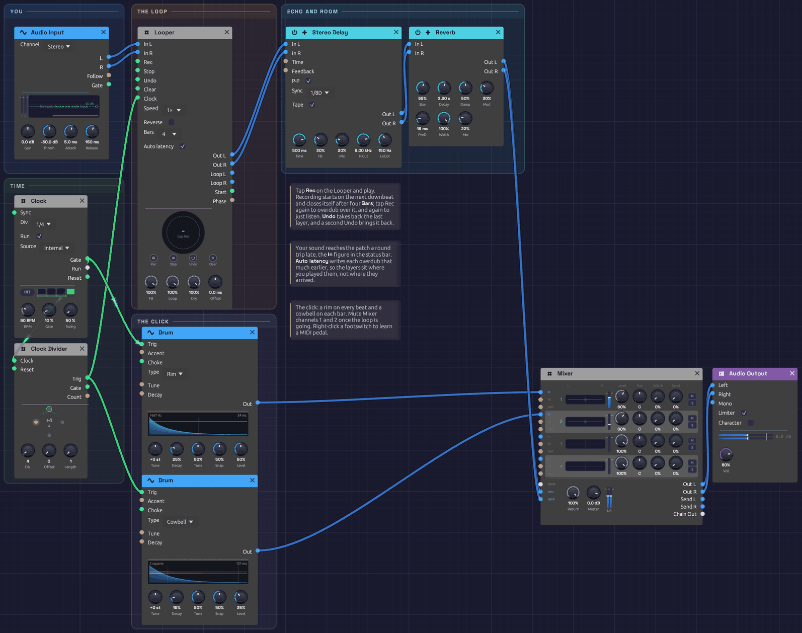
The patch as it opens. The Looper's ring is grey dashes: empty, waiting for Rec.What it teaches
- Building a piece in layers. Record a part, then play the next over it, as a solo looping player does.
- Takes on the beat. The Looper's Clock is once a bar, so takes start on the downbeat and close on a bar line.
- Latency, and taking it back. Live sound reaches the patch late. The Looper writes each layer back by the measured round trip, so layers sit where you played them.
- A click you can switch off. The metronome runs into the Mixer, where two mute buttons silence it once the loop is going.
Modules
| Module | Settings |
|---|---|
| Audio Input | Channel Stereo (choose 1 or 2 for a single instrument in one input) |
| Clock | BPM 90, Div 1/4, Gate 10% |
| Clock Divider | Div 4: once a bar |
| Looper | Bars 4, Auto latency on, FB 100% |
| Stereo Delay | Sync 1/8D, P-P and Tape on, FB 30%, Mix 20%, HiCut 6 kHz, LoCut 150 Hz |
| Reverb | Size 55%, Decay 2.2 s, PreD 15 ms, Mod 30%, Mix 22% |
| Drum ×2 | A Rim on every beat (Decay 25%, Level 50%), a Cowbell on each bar (Decay 15%, Level 35%) |
| Mixer | The click on channels 1 and 2 at 60%, the effects on Return L/R |
| Audio Output | Vol 80% |
How it's built
You, into the Looper
[Audio Input L] ──> [Looper In L]
[Audio Input R] ──> [Looper In R]
The Looper's Out carries what you play now and the loop together. Everything after it, echo and room, treats them as one performance.
The bar clock
[Clock Gate] ──> [Clock Divider Clock]
[Clock Divider Trig] ──> [Looper Clock]
The Clock ticks quarter notes at 90 BPM. The Divider passes every fourth tick, the downbeat of each bar, to the Looper's Clock. A tap on Rec waits for the next downbeat, then records four Bars and closes the loop by itself: one tap to start, none to stop. A tap that lands up to 50 ms after a downbeat counts as on it.
A bar is 2.67 s at 90 BPM, so four bars are 10.7 s. Change the Clock's BPM before you record, and the loop is four bars at the new tempo.
Layers
Once the loop is playing, tap Rec to overdub (the ring turns amber), play your next part, and tap Rec again when it's done. Each overdub pass lays a thin band inside the ring. Undo takes back the layer you just made, if it didn't work, and a second Undo brings it back. Stop silences the loop and Clear empties it to start over.
Turn FB down before an overdub to let the older layers fade as the new one goes on, so a loop can change gradually rather than only pile up.
Keeping your layers
Your layers are part of the patch. Save it (an example has no file of its own, so Save asks where), and the loop goes into a <patch name> loops folder beside it. Open the patch tomorrow and the loop is there, stopped at the top: tap Rec to hear it and go on overdubbing from where you left off. What's kept is the loop as you hear it, so a layer you've undone stays out. See Keeping the loop.
Latency
The status bar's In figure is the round trip from the input jack to your speakers, typically 20 to 50 ms. You play along with the loop you hear, and what you play arrives that long after the moment you were playing to. Auto latency writes each overdub that much earlier, so a strum on beat one lands on beat one. If layers still feel a hair late (your converters add delay no timestamp reports), trim with Offset.
Click, echo and room
[Clock Gate] ──> [Drum (Rim) Trig] ──> [Mixer Ch 1]
[Clock Divider Trig] ──> [Drum (Cowbell) Trig] ──> [Mixer Ch 2]
[Looper Out L/R] ──> [Stereo Delay In L/R] ──> [Reverb In L/R] ──> [Mixer Return L/R]
[Mixer Out L/R] ──> [Audio Output Left/Right]
The click goes straight to the Mixer, never through the Looper, so it isn't recorded. Mute channels 1 and 2 when you no longer need it. The echo is a dotted eighth, ping-ponging, with tape wobble: it fills the space between a picked guitar's notes.
Things to try
- Learn a footswitch. Right-click Rec on the Looper, choose Learn MIDI, and press a MIDI pedal or hit a pad. Now your hands stay on the instrument.
- Octave down. Set Speed to ½× after recording a guitar part: it becomes a bass line, twice as long.
- Free time. Set Bars to Free and unpatch the Looper's Clock: the loop is exactly as long as you held it, for playing out of time.
- Effects on the loop only. Patch Loop L/R through a filter or the Distortion while Out carries you dry.
Rendering it offline
The render tool can play a recording into the Audio Input and press the footswitches from a cue script:
# cues.txt: press Rec before the first downbeat; four bars record by themselves
0.5 param util.looper Pedal Rec 1
0.8 param util.looper Pedal Rec 0
14.0 param util.looper Pedal Rec 1 # overdub
14.3 param util.looper Pedal Rec 0
cargo run --release --bin render -- patches/live-looper.json out.wav --seconds 30 --input take.wav --cue cues.txt
A copy saved with its loop renders that loop too: it opens stopped, so press Rec (or Stop) in the cues to start it.
Generative Ambient
A patch that plays itself. A slow pentatonic melody repeats every twelve seconds, but its brightness shifts in threes against it, and a second voice wanders around it, never taking the same path twice. The tuning drifts, and long echoes and an eight-second reverb blur one phrase into the next. Press Play and leave it running.
Load it: choose 📚 Examples → Generative Ambient in the toolbar and press ▶ Play. It needs no keyboard. The patch file is
patches/generative-ambient.json.
Or play it here: press ▶ Play in the corner. The full app is a click away under Open in Soba. Clock and sequencer play the melody, top left, with the Clock Divider under the Clock. Below, the LFO and Sample & Hold set the brightness, and Noise and the Quantizer sing the second voice.
What it teaches
- Clock and sequencer. A clock sets the pace and a step sequencer turns each pulse into a note.
- Sample & hold. Freezing a moving signal at a pulse gives each group of notes its own setting, a step at a time.
- Cycles that don't line up. When loops of different lengths run against each other, the combination takes a very long time to repeat. That's where the brightness gets its variety.
- Chance, in key. A quantizer snaps a random voltage to the notes of a scale, so chance can write a melody without a wrong note.
Modules
| Module | Settings |
|---|---|
| Clock | BPM 40, Div 1/4 |
| Step Sequencer | Steps 8, Dir Fwd, Gate 60%, Gate of 100 ms. Notes C4 D4 E4 G4 A4 G4 E4 D4, step 6 off |
| Oscillator 1 | Wave Tri, Oct −1, Exp FM 0.01 oct |
| Oscillator 2 | Wave Sine |
| Noise | Rate 0.2 Hz |
| Quantizer | Root C, Scale Pentatonic Major |
| Mix | Level 1 100%, Level 2 50% |
| SVF Filter | Cutoff 1.5 kHz, Res 20% |
| ADSR Envelope | Atk 300 ms, Dec 500 ms, Sus 70%, Rel 2 s |
| VCA | Defaults |
| LFO 1 | Rate 0.13 Hz, Wave Triangle, Bipolar on |
| Clock Divider | Div 3 |
| Sample & Hold | Slew 300 ms |
| LFO 2 | Rate 0.03 Hz, Wave Sine, Bipolar on |
| Stereo Delay | Time 600 ms, FB 50%, Mix 40%, HiCut 4 kHz, LoCut 200 Hz, P-P on |
| Reverb | Size 90%, Decay 8 s, PreD 100 ms, Mix 60% |
| Mixer | Pan 1 L 100, Pan 2 R 100, Master +6 dB |
| Audio Output | Defaults |
How it's built
The melody
[Clock Gate] ──> [Step Sequencer Clock]
[Step Sequencer Pitch] ──> [Oscillator 1 V/Oct]
[Step Sequencer Gate] ──> [ADSR Gate]
At 40 BPM with Div at 1/4, the Clock pulses once a beat, every 1.5 seconds. Each pulse moves the sequencer one step. Its eight steps rise and fall through a C major pentatonic scale, C D E G A G E D, and step 6's gate is off, so the melody takes a breath before it turns around. Eight steps of 1.5 seconds make a twelve-second loop.
The pentatonic scale has no half steps, so no two of its notes clash. That's why the long echoes and reverb can pile notes on top of each other without the result turning muddy.
Oscillator 1 plays the melody as a triangle, an octave down: a soft, hollow tone, closer to a flute or a mallet than to a synth lead.
A second voice, by chance
[Noise Random] ──> [Quantizer In]
[Quantizer Out] ──> [Oscillator 2 V/Oct]
[Oscillator 1 Out] ──> [Mix In 1]
[Oscillator 2 Out] ──> [Mix In 2]
[Mix Out] ──> [SVF Filter In]
The Noise module's Random output picks a new value every five seconds or so, and glides to it. On its own, that would bend Oscillator 2's pitch smoothly through every frequency in between. The Quantizer snaps it to the C major pentatonic scale, the same five notes the melody uses, so the glide becomes a walk: one scale step at a time, up or down, from C3 to C5.
This voice keeps its own time. Its notes change when the random walk crosses from one note to the next, not on the clock, so it slips in between the melody's notes and sometimes holds on through several. Because both voices stay in the pentatonic scale, any note of one sounds right against any note of the other. Oscillator 2 is a sine, mixed in at half level, so it sits behind the melody like a singer humming along.
The mini piano on the Quantizer lights the five notes of the scale and follows the note it's playing.
Brightness in threes
[Clock Gate] ──> [Clock Divider Clock]
[Clock Divider Trig] ──> [Sample & Hold Trig]
[LFO 1 Out] ──> [Sample & Hold In]
[Sample & Hold Out] ──> [SVF Filter Cutoff]
LFO 1 is a slow triangle, one cycle every 7.7 seconds. The Clock Divider passes on every third clock pulse, and on each one the Sample & Hold catches the LFO's current value and holds it. The filter's Cutoff input works in octaves, so each group of three notes gets a cutoff somewhere between 750 Hz and 3 kHz. The 300 ms Slew glides between values instead of jumping.
Three doesn't go into the melody's eight. The first pass is shaded 3 + 3 + 2, the next starts its groups one note later, and the groups only fall on the same notes again after three passes, 36 seconds. On top of that, the LFO's 7.7-second cycle divides evenly into none of them. So the melody repeats exactly, but its shading never does: every pass comes out lit differently, in phrases that cut across the melody's own.
Slow drift
[LFO 2 Out] ──> [Oscillator 1 Exp FM]
──> [SVF Filter Resonance]
LFO 2 takes over half a minute per cycle. On Oscillator 1's Exp FM input, with Exp FM set to 0.01 octave, it bends the pitch about 12 cents sharp and flat. Against the steady Oscillator 2, that makes a slow beating, like an instrument that's not quite in tune with itself. The same LFO raises and lowers the filter's resonance, so some passages ring and others are soft.
Envelope, echoes and space
[SVF Filter LowPass] ──> [VCA In]
[ADSR Out] ──> [VCA CV]
[VCA Out] ──> [Stereo Delay In L]
[Stereo Delay Out L] ──> [Reverb In L]
[Stereo Delay Out R] ──> [Reverb In R]
[Reverb Out L] ──> [Mixer Ch 1] (Pan L 100)
[Reverb Out R] ──> [Mixer Ch 2] (Pan R 100)
[Mixer Out L] ──> [Audio Output Left]
[Mixer Out R] ──> [Audio Output Right]
The envelope's 300 ms attack takes the edge off each note and its 2-second release lets it ring into the next one. The Stereo Delay repeats every 600 ms with Ping-Pong on, so echoes bounce between the speakers. Its HiCut and LoCut darken and thin each repeat, so the echoes recede instead of building up. The Reverb's large room and 8-second tail turn it all into a wash.
A wash that wide is quiet. Most of each note goes into the reverb's tail, and a soft triangle through a filter doesn't start out loud. Every stage up to the Reverb is already at full, and turning up the filter's Drive would add grit, not just level. So the Mixer is the patch's gain stage. The Reverb's two sides come in on two channels panned hard left and right, which keeps the stereo picture as it was, and Master at +6 dB brings the whole wash up to sit with the other examples. Its two spare channels are room for another voice.
Variations
Really generative. Set the sequencer's Dir to Rnd. The notes now come in a random order, and because they're all from the pentatonic scale, every order works.
A busier second voice. Raise the Noise Rate to 1 Hz and the second voice runs up and down the scale. Turn it down to 0.05 Hz and it becomes a slowly changing drone.
Bend the scale. Click keys on the Quantizer's piano. Take out E and A for a bare, open C D G, or add B for six notes and a little more tension. Only the second voice changes; the melody stays where it is.
Rewrite the melody. Click a step to turn its gate on or off. Drag a step up or down to change its note, or right-click it and play a new line on its piano. Stay on C, D, E, G and A to keep the pentatonic calm.
An odd-length loop. Set Steps to 5 or 7 so the phrase falls out of step with the bar.
Other groupings. Set the Clock Divider's Div to 1 and every note gets its own brightness. Try 5 against the eight notes for a longer cycle, or 4 for shading that lines up with the melody's two halves.
Slower still. Turn the Clock down to 20 BPM, and raise the Reverb's Decay to 15 s or more.
Tape echoes. Turn on the delay's Tape for wobble and saturation in the repeats.
Wider drift. Raise Oscillator 1's Exp FM to 0.03 octave for a seasick, detuned-tape feel.
Related
- Sample & Hold – stepped modulation
- Clock Divider – every third pulse, and longer phrases
- Quantizer – random pitches, in key
- Step Sequencer – editing steps
- Rhythmic Sequence – the same clock and sequencer, at dance tempo
- Shoreline – another patch that plays itself, where chance does the varying
Shoreline
Surf rolls in and draws back, and a glass chime somewhere up the beach turns in the wind. Nothing here is a recording, and nothing repeats: a single Noise module makes the water, decides when each wave arrives, and picks every note the chime plays. It plays itself; press Play and let it run. It all comes back off tape, like a field recording made on a portable deck.
Load it: choose 📚 Examples → Shoreline in the toolbar and press ▶ Play. It needs no keyboard. The patch file is
patches/shoreline.json.
Or play it here: press ▶ Play in the corner. The full app is a click away under Open in Soba. The chime runs along the top and the surf along the bottom. The Noise module on the left feeds both, and the two meet on tape at the bottom right.
What it teaches
- Noise as sound. Pink and brown noise through a moving lowpass filter make convincing surf.
- Noise as decision. White noise, sampled on a clock, chooses notes. Noise's smooth Random output decides how fast the waves come, whether the chime rings at all, and how hard it's struck.
- One source, many voices. Every output of the Noise module is patched, and each does a different job. Because one random signal drives both the waves and the chime, the two move together: when the wind picks up, the waves come quicker and the chime starts to ring. When it drops, the chime falls silent.
- A field recording. The surf and the chime meet on a Mixer and go to tape together, which gives the scene a little sway and grain, as if someone had recorded it on the beach.
Modules
| Module | Settings |
|---|---|
| Noise | Level 50%, Rate 0.07 Hz |
| Clock | BPM 80, Div 1/4, Gate 30% |
| Logic | Thresh -0.3, nothing in B |
| Sample & Hold | Defaults (no slew) |
| Oscillator | Wave Sine, Oct +1 |
| ADSR Envelope | Atk 2 ms, Dec 1.2 s, Sus 0%, Rel 1.2 s, Vel 80% |
| VCA (chime) | Defaults |
| Reverb | Size 85%, Decay 6 s, Damp 40%, PreD 40 ms, Mix 45% |
| LFO | Rate 0.12 Hz, Wave Sine, Bipolar off |
| Mix | Level 1 100%, Level 2 60% |
| VCA (surf) | Level 90%, CV Amt 75% |
| SVF Filter | Cutoff 500 Hz, Res 15% |
| Mixer | Return 71%, Master +3 dB, the rest at their defaults |
| Tape | Speed 15 ips, Sat 35%, Age 20%, Hiss 8%, Wow 20%, Flut 15%, Width 30% |
| Audio Output | Vol 85% |
How it's built
The surf
[Noise Pink] ──> [Mix In 1]
[Noise Brown] ──> [Mix In 2]
[Mix Out] ──> [VCA (surf) In]
[VCA (surf) Out] ──> [SVF Filter In]
[SVF Filter LowPass] ──> [Mixer Ch 1]
Pink noise has the even, rushing quality of water. Brown noise, mixed in a little lower, adds the deep rumble underneath. The lowpass filter at 500 Hz takes off the hiss and leaves something that sounds far away.
The waves
[LFO Out] ──> [VCA (surf) CV]
──> [SVF Filter Cutoff]
The LFO is a slow, unipolar sine, so it rises from 0 to 1 and falls back about every eight seconds. Each rise is a wave arriving. On the VCA, with CV Amt at 75%, it swells the surf by about 12 dB and never quite silences it. On the filter's Cutoff, which works in octaves, it opens the filter from 500 Hz to 1 kHz. A wave gets brighter as it gets louder, the way a breaker's hiss arrives with its roar.
No two waves alike
[Noise Random] ──> [LFO Rate]
On its own the LFO would be a metronome. Noise's Random output wanders smoothly between -1 and 1, choosing a new value about every fourteen seconds (Rate 0.07 Hz). Patched into the LFO's Rate, each +1 doubles the wave speed and each -1 halves it. Waves now arrive anywhere from every four seconds to every seventeen, in calm stretches and busy ones.
The chime
[Logic AND] ──> [Sample & Hold Trig]
[Noise White] ──> [Sample & Hold In]
[Sample & Hold Out] ──> [Oscillator V/Oct]
[Logic AND] ──> [ADSR Gate]
[Oscillator Out] ──> [VCA (chime) In]
[ADSR Out] ──> [VCA (chime) CV]
This is the classic random melody. On each pulse that reaches it, at most every 0.75 seconds, the Sample & Hold catches the white noise and holds it as a pitch. With Noise Level at 50%, the pitches land anywhere within half an octave of C5. They're unquantized, falling between the keys of a piano, which suits a wind chime: real chimes are seldom tuned to a scale. The sine wave, a 2 ms strike and a 1.2-second ring make it sound like glass.
The wind
[Clock Gate] ──> [Logic A]
[Noise Random] ──> [Logic CV]
[Noise Random] ──> [ADSR Velocity]
A real wind chime doesn't ring on a beat. It rings when the wind blows, and hangs still when it drops. The Clock's pulses pass through a Logic module first. Noise's Random, the wind, goes into its CV, and nothing goes into B, so B is Logic's own Above: high while the wind is above the Threshold of -0.3. AND lets a clock pulse through only then. Through the calms, ten or twenty seconds at a time, the chime hangs silent and only the surf moves.
The same Random also sets how hard each strike lands. With Vel at 80%, a strike while Random is high rings at full level. One just over the threshold rings at about a fifth of that. So a gust doesn't switch the chime on: it fades in with a few faint ticks, swells, and fades out again. The gusts come with the faster waves, because the same wind sets the waves' speed.
Space
[VCA (chime) Out] ──> [Reverb In L]
──> [Reverb In R]
[Reverb Out L] ──> [Mixer Return L]
[Reverb Out R] ──> [Mixer Return R]
A large, six-second reverb spreads the chime across the stereo field and blurs each note into the next. The surf skips the reverb and goes straight to the Mixer's Ch 1, in the middle. That keeps the water close and the chime farther off.
The reverb comes back on the Mixer's Return. Nothing is sent from the Mixer here, so the Return is simply a stereo input. A sound in the middle of the Mixer is 3 dB down on each side, so Master at +3 dB brings the surf back to full level, and Return at 71% (−3 dB) keeps the chime where it was.
On tape
[Mixer Out L/R] ──> [Tape In L/R]
[Tape Out L/R] ──> [Audio Output Left/Right]
The whole scene is recorded onto tape at 15 ips, gently:
- Sat at 35% rounds off the crests of the surf, a breaker's roar squashed slightly, as a small recorder squashes it. That takes about 2 dB off the surf's loudness, which the Audio Output's Vol at 85% wins back. The head bump also adds body to the low rumble.
- Wow at 20% sways the pitch by about ±1.5 cents. On the surf you won't hear it, but each ringing chime note bends a hair, like a chime heard on a recording rather than in the room.
- Age at 20% and Hiss at 8% add a little grain. The hiss mostly hides in the surf and only shows in the calms.
To hear the difference, select the Tape and press Ctrl+B to bypass it. Bypassed, the scene is about 2 dB louder, because the Output is making up what the tape takes. To make it more of a memory than a recording, set Speed to 7½ ips and turn Wow up to 50% and Age to 60%: the chime starts to waver, the surf dulls, and dropouts come and go.
Variations
An old tape. On the Tape, set Speed to 7½ ips, Age to 70%, Hiss to 30%, Wow to 60% and Flut to 40%. It's the same beach, found years later on a tape in a drawer.
Stormier. Raise the LFO's Rate to 0.3 Hz and the filter's Res to 40%. Swap the Level 1 and Level 2 settings on the Mix for a heavier, browner sea.
A wider chime. Turn Noise Level up to 100% and the chime ranges a full octave either way. The surf gets louder too, so lower the surf VCA's Level to match.
Gentler wind. Lower the ADSR's Vel to 40% so calm and gusty strikes differ less.
Stiller or windier. Raise Logic's Thresh to 0 and the chime rings only in the stronger half of the gusts, with long calms between. Lower it to -1 and it rings on nearly every beat, whatever the wind.
Glide. Raise the Sample & Hold's Slew to 50 ms and the chime bends between notes, more like a singing bowl than a bell.
A tuned chime. Patch a Quantizer between the Sample & Hold and the Oscillator, set to Pentatonic Major. The chime now plays notes of a scale, like a set of tuned bells.
A shimmer. Set the Oscillator's Voices to 3 and Detune to 10%. Each strike now beats slowly against itself, like a long metal tube.
Related
- Noise – every output used here, explained
- Sample & Hold – turning noise into notes
- Tape – what each knob does to a mix
- Generative Ambient – variety from cycles that don't line up, and chance kept in key
- Rhythmic Sequence – noise as a hi-hat
Rhythmic Sequence
A 16-step acid bassline at 120 BPM: a saw through a resonant lowpass that snaps open on every struck note, with two notes slid into the way a 303 slurs them, warmed with distortion and pushed along by a dotted-eighth echo, over a ticking line of noise hi-hats. It plays itself, and it's built to be tweaked while it runs. Grab the filter's Cutoff and Res knobs and play them like a 303.
Load it: choose 📚 Examples → Rhythmic Sequence in the toolbar and press ▶ Play. It needs no keyboard. The patch file is
patches/rhythmic-sequence.json.
Or play it here: press ▶ Play in the corner. The full app is a click away under Open in Soba. Two envelopes from the sequencer's gate: one squelches the filter, one shapes the volume. Along the bottom, the clock plays noise hi-hats.
What it teaches
- Sequencing a bassline. Pitches, rests and an octave jump, all in one 16-step pattern.
- The filter envelope as the instrument. Short decay and high resonance are the sound of acid.
- Slides. Two notes glide in from the note before without striking the envelopes again, so the line slurs like one player's phrase.
- Tempo sync. The delay locks to the Clock's tempo, so its echoes land on the beat.
- Noise as a drum. An envelope into a Noise module's Level turns hiss into a hi-hat, with no VCA needed.
Modules
| Module | Settings |
|---|---|
| Clock | BPM 120, Div 1/16 |
| Step Sequencer | Steps 16, Dir Fwd, Gate 50%, Gate of 100 ms, Glide 70 ms; slides into steps 9 and 16 |
| Oscillator | Wave Saw |
| SVF Filter | Cutoff 300 Hz, Res 70%, CV Amt 2 oct |
| ADSR Envelope (filter) | Atk 1 ms, Dec 200 ms, Sus 10%, Rel 50 ms |
| ADSR Envelope (amp) | Atk 1 ms, Dec 150 ms, Sus 30%, Rel 50 ms |
| VCA | Defaults |
| Distortion | Type Soft, Drive 30%, Mix 70% |
| Stereo Delay | Sync 1/8D, FB 30%, Mix 25%, HiCut 10 kHz, LoCut 300 Hz |
| ADSR Envelope (hats) | Atk 1 ms, Dec 45 ms, Sus 0%, Rel 40 ms, A Crv 0% |
| Noise | Level 0%, Rate 0.25 Hz |
| SVF Filter (hats) | Cutoff 4.5 kHz, Res 55% |
| Audio Output | Vol 55% |
How it's built
Clock and pattern
[Clock Gate] ──> [Step Sequencer Clock]
[Step Sequencer Pitch] ──> [Oscillator V/Oct]
At 120 BPM with Div at 1/16, the Clock pulses four times a beat, every 125 ms, and each pulse moves the sequencer one step. The sixteen steps make one bar:
| Step | 1 | 2 | 3 | 4 | 5 | 6 | 7 | 8 | 9 | 10 | 11 | 12 | 13 | 14 | 15 | 16 |
|---|---|---|---|---|---|---|---|---|---|---|---|---|---|---|---|---|
| Note | C2 | C2 | – | G2 | C2 | – | D#2 | C2 | C3 | – | G2 | C2 | – | D#2 | F2 | G2 |
| Slide | ⌒ | ⌒ |
A dash is a step with its gate off: a rest. The line sits on the root, C2, and moves through notes of C minor (D# is the minor third) with an octave leap on the downbeat of the second half. The rests do as much as the notes: they're what make it groove rather than drone. The two slides are covered below.
The squelch
[Oscillator Out] ──> [SVF Filter In]
[Step Sequencer Gate] ──> [ADSR (filter) Gate]
[ADSR (filter) Out] ──> [SVF Filter Cutoff]
The filter sits low, at 300 Hz, with Res at 70%. The filter envelope kicks it open on every struck note, then drops it back in 200 ms. That fast sweep of a sharp resonant peak is the acid sound.
The filter's Cutoff input works in octaves, and an envelope peaks at 1.0. The filter's CV Amt sets how many octaves that peak is worth: at 2, each step's envelope throws the cutoff two octaves up, to 1.2 kHz, and lets it fall back to the bass.
Volume, drive and echo
[Step Sequencer Gate] ──> [ADSR (amp) Gate]
[SVF Filter LowPass] ──> [VCA In]
[ADSR (amp) Out] ──> [VCA CV]
[VCA Out] ──> [Distortion In]
[Distortion Out] ──> [Stereo Delay In L]
[Stereo Delay Out L] ──> [Audio Output Left]
[Stereo Delay Out R] ──> [Audio Output Right]
The amp envelope is short and punchy, so each note is a distinct pluck. With Gate at 50%, each of the sequencer's gates lasts 50 ms (Gate of is set to 100 ms, so Gate is a share of a fixed 100 ms), well inside the 125 ms step. The exception is a note that leads into a slide, which holds its gate until the slide begins.
Soft distortion at 30% drive, mixed at 70%, rounds and thickens the bass and makes the resonant peak growl.
The Stereo Delay's Sync is set to 1/8D, a dotted eighth. It takes its tempo from the Clock, so at 120 BPM each echo comes 375 ms after its note: three sixteenths later, falling between the notes and filling the gaps. Its LoCut keeps the echoes out of the bass register, so they don't muddy the line.
Slides
Steps 9 and 16 are slides, each marked on the grid by an orange slur from the step before. When a slide step comes round, two things happen:
- The pitch glides from the note before over the sequencer's Glide time, 70 ms, instead of jumping. C2 rises an octave into C3 on the downbeat of the second half, and at the end of the bar F2 slurs up a step to G2.
- The gate stays high across the join, so neither envelope is struck again. The filter envelope keeps falling through the slid note, and the amp envelope sinks toward its 30% sustain, so the note arrives darker and about 3 dB softer than a struck one.
That contrast is the 303's sound: most notes are plucked, and a few melt into the note before, so the line sounds like one player's phrase. Each slide is a short two-note gesture, and step 1 is always struck, so every bar still starts with a pluck.
Hi-hats
[Clock Gate] ──> [ADSR (hats) Gate]
[ADSR (hats) Out] ──> [Noise Level]
[Noise Pink] ──> [SVF Filter (hats) In]
[Noise Random] ──> [SVF Filter (hats) Cutoff]
[SVF Filter (hats) HighPass] ──> [Audio Output Mono]
The hats take the Clock's pulse directly, so they tick on every sixteenth whether or not the bassline plays. That steady pulse under the rests is what makes the line swing.
The Noise module's Level knob is at 0, so it is silent until the envelope opens it. Each pulse snaps it to full in 1 ms and lets it die away in 45 ms: a short burst of noise, which is all a closed hi-hat is. An envelope into Level does the job of a VCA, and Level follows CV instantly, so the attack stays sharp.
The highpass filter at 4.5 kHz keeps only the sizzle. Pink noise rather than white keeps the hats from getting harsh and sitting on top of the bass. Noise's Random output drifts the filter's cutoff an octave either way, over several seconds, so the hats darken and brighten as if a drummer were working the pedal. The hats go to Mono, past the delay, so they stay dry and tight in the middle.
Variations
Play the filter. While it runs, sweep Cutoff between 150 Hz and 1 kHz and push Res toward 90%. Lengthen the filter envelope's Dec to 400 ms for longer squelches, and turn CV Amt up to 3 or 4 for wider ones.
Change the line. Click a step to toggle its gate. Drag a step up or down to change its note, or right-click it and play a new line on its piano: each key writes a step and moves to the next.
Different tempo. Turn the Clock's BPM. The delay follows, staying on the dotted eighth.
Move the slides. Ctrl + click a step to slide into it, and Ctrl + click again to strike it. Slide into step 8 as well, so D#2 falls to C2 and leaps to C3 in one breath, three notes on a single strike. Or clear both slides to hear how much plainer the line plucks without them. Raise Glide to 200 ms for a lazier, more vocal slur.
Slide everything. Patch the sequencer's Pitch through a Slope on its way to the Oscillator's V/Oct, with Rise and Fall at 60 ms and Shape at 0. Every note now glides into the next: the octave leap to C3 in 60 ms, a fifth in 35 ms, so each glide is over well inside its step and the line still lands on its notes. Unlike a slide step, Slope only moves the pitch, so every note is still struck. Repeated notes don't glide, so the pattern keeps its stabs.
Shorter loop. Set Steps to 12 or 7 for a pattern that cycles against the bar.
Fatter. Swap the SVF for a Ladder Filter and use its LP24 output. Raise its Drive to 3x.
Harder. Set the Distortion's Type to Hard or Fold and raise Drive. Turn Out down to keep the level in check.
Open hats. Raise the hat envelope's Dec to 250 ms, so each hat rings into the next and the line turns to a shimmering wash. Switch the filter to BandPass for a trashier, more metallic hat.
Related
- Clock – tempo and divisions
- Step Sequencer – editing steps
- Noise – the hi-hats' source, and what else it can do
- Generative Ambient – the same clock and sequencer, slowed right down
- Shoreline – noise as surf, and as the chooser of notes
Backbeat
A whole drum kit with no samples in it: a kick that drops in pitch, a snare with ghost notes between the backbeats, a hi-hat that opens and gets choked shut, a run down the toms every fourth bar, and a crash where the fill lands. Every drum is an oscillator or a noise source shaped by an envelope. It plays itself; press Play and let it run.
To learn how drums are made, build them like this. To make a beat quickly, use the Drum module, one per drum: the Drum Machine example plays a kit like this in 14 modules.
Load it: choose 📚 Examples → Backbeat in the toolbar and press ▶ Play. It needs no keyboard. The patch file is
patches/backbeat.json.
Or play it here: press ▶ Play in the corner. The full app is a click away under Open in Soba. One lane per drum, from the top: kick, snare, hi-hats, toms, crash. The clock is at the top left. The Clock Divider that schedules the fill sits lower down in the same column. Kick and snare mix, compress and land on a drum bus at the top right. Below and to the right, the main Mixer brings the whole kit together, shares one small room among every drum, and feeds the output through a Tape.
What it teaches
- Drums from oscillators and noise. A kick is a sine that falls in pitch. A snare is a tone plus a burst of filtered noise. Hats and cymbals are noise with the low end removed.
- Accents and ghost notes. Each sequencer step has a velocity, and the envelopes turn velocity into loudness. The same snare plays a backbeat and a whisper.
- A sequencer's pitch as a switch. The hi-hat lane's pitch output is a flag that says whether the hat is open. That flag also chokes it.
- Phrases longer than a bar. A 16-step sequencer loops every bar. For a fill every fourth bar, a Clock Divider counts the sixteenths and opens a gate once every 64.
- One room for the whole kit. A drum-bus Mixer chains into the main one over a single cable, and each part sends its own amount to a single reverb, as on a mixing console.
The pattern
Sixteen steps a bar at 96 BPM. X is an accent, x a softer hit, g a ghost note, o an open hat, ~ a hat still ringing.
step 1 . . . 5 . . . 9 . . . 13. . .
kick X . x . . . . . . x X . . . . .
snare . . . . X . . g . . . . X . g g
hats X x x x X x o ~ X x x x X x o ~
toms (every 4th bar) G G D D A A E E
crash on the downbeat after each fill
Modules
| Module | Settings |
|---|---|
| Clock | BPM 96, Div 1/16 |
| Step Sequencer ×4 (kick, snare, hats, toms) | Steps 16, Gate 99%, Gate of 100 ms. Steps as in the pattern above |
| Oscillator (kick) | Wave Sine, Oct -2, Semi -3 (55 Hz), Exp FM 2.6 oct |
| ADSR Envelope (kick pitch) | Atk 1 ms, Dec 45 ms, Sus 0%, Rel 45 ms, Vel 30% |
| ADSR Envelope (kick level) | Atk 1 ms, Dec 700 ms, Sus 0%, Rel 700 ms, Vel 40% |
| Oscillator (snare body) | Wave Tri, Oct -1, Semi +7 (196 Hz), Exp FM 0.6 oct |
| ADSR Envelope (snare body) | Dec 90 ms, Rel 90 ms, Vel 85% |
| Noise + SVF Filter (snare) | Level 0%; HighPass, Cutoff 1.8 kHz, Res 25% |
| ADSR Envelope (snare noise) | Dec 170 ms, Rel 170 ms, Vel 85% |
| Noise + SVF Filter (closed hat) | Level 0%; HighPass, Cutoff 7.5 kHz, Res 30% |
| Noise + SVF Filter (open hat) | Level 0%; HighPass, Cutoff 6 kHz, Res 25% |
| ADSR Envelope (closed / open hat) | Dec 45 ms / 800 ms, same Rel, Vel 70% / 50% |
| VCA (hat choke) | Level 85% |
| Oscillator (toms) | Wave Sine, Oct -1, Semi +2, Exp FM 0.35 oct |
| ADSR Envelope (toms) | Dec 320 ms, Rel 320 ms, Vel 60% |
| Clock Divider (phrase) | Div 64, Offset 0, Length 17 |
| Noise + SVF Filter (crash) | Level 0%; HighPass, Cutoff 4.2 kHz, Res 20% |
| ADSR Envelope (crash) | Dec 1.6 s, Rel 1.6 s, Vel 0% |
| Attenuverter (hat mute) | Amount -1.0 |
| Mix (kick and snare) | Level 1 60% kick, Level 2 40% snare body, Level 3 45% snare noise |
| Compressor | Thresh -16 dB, Ratio 3:1, Atk 8 ms, Rel 120 ms, Mkup 2 dB |
| Mixer (drum bus) | Level 1 100%, centred; Send 1 15%; Master +3 dB |
| Mixer (main) | Hats 44% at R 30 / R 35, toms 40%, crash 36% at L 40; every Send 25%; Master +1.5 dB |
| Reverb | Size 35%, Decay 0.9 s, Damp 55%, PreD 2.5 ms, Mix 100% |
| Tape | Speed 15 ips, Sat 10%, Age 0%, Hiss 0%, Wow 0%, Flut 0%, Width 0% |
| Audio Output | Vol 100% |
All drum envelopes have a 1 ms attack and 0% sustain. The sequencers' gates are a fixed 99 ms (Gate of 100 ms), so each envelope's Release matches its Decay: the sound falls at the same rate after the gate closes.
How it's built
The kick
[Kick Seq Gate] ──> [Kick Pitch Env Gate] [Kick Level Env Gate] [Oscillator Sync]
[Kick Pitch Env Out] ──> [Oscillator Exp FM]
[Oscillator Out] ──> [VCA In]
[Kick Level Env Out] ──> [VCA CV]
A kick drum's thump is a pitch falling fast. The pitch envelope, at 2.6 octaves of Exp FM, starts the sine at about 330 Hz and drops it to 55 Hz in about 45 ms. The ear hears the drop as the beater hitting the drum and the low sine as the body. The same gate patched into Sync restarts the sine at zero on every hit. Without it, each kick would start at a random point in the cycle and land slightly differently.
The snare
[Snare Seq Gate] ──> [Body Env Gate] [Noise Env Gate] [Oscillator Sync]
[Body Env Out] ──> [Oscillator Exp FM] [VCA CV]
[Noise Env Out] ──> [Noise Level]
[Noise White] ──> [SVF Filter In]
A snare is two sounds. A triangle at 196 Hz, with a short dip in pitch, is the drum's shell. White noise above 1.8 kHz is the rattle of the wires under it. The noise lasts about twice as long as the tone, so each hit ends in a hiss.
Both envelopes have Vel at 85%, so velocity matters. The backbeats on 2 and 4 play at 122. The ghost notes at 26 to 40 come out about a third as loud. They sit under the groove and make it swing a little, the way a drummer's left hand does.
Hats that choke
[Hat Seq Gate] ──> [Closed Env Gate] [Open Env Gate]
[Closed Env Out] ──> [Noise (closed) Level]
[Open Env Out] ──> [VCA (choke) In]
[Hat Seq Pitch] ──> [VCA (choke) CV]
[VCA (choke) Out] ──> [Noise (open) Level]
On a real hi-hat, the open sound rings until the drummer closes the pedal. Every hat step fires both envelopes. The open hat's long envelope only reaches its noise through a VCA, and the hat lane's Pitch output opens that VCA. Steps set to C4 send 0 V and keep it shut. Steps set to C5 send 1 V and open it.
So on steps 7 and 15, set to C5, the hat opens. Steps 8 and 16 are also set to C5 but their gates are off, so the hat keeps ringing. On steps 9 and 1 the pitch drops back to C4, and the VCA cuts the ringing off as the closed hat plays. That's the choke. To make the hat ring longer, set the next step to C5 too.
The fill and the crash
[Clock Gate] ──> [Clock Divider Clock]
[Clock Divider Gate] ──> [Tom Seq Run] [Tom Seq Reset] [Attenuverter In]
[Attenuverter Out] ──> [Mixer Level 1] [Mixer Level 2]
[Tom Seq EOC] ──> [Crash Env Gate]
A 16-step sequencer can't wait three bars before it plays. The Clock Divider does the waiting. It counts the Clock's sixteenths, and 64 of them are four bars. On count 0, the downbeat of bar 1, its Gate opens: the tom sequencer resets to step 1 and starts running. The toms play their fill on steps 9 to 16, two hits on each drum from G down to E.
The Gate stays open for 17 clocks, Length 17: the fill bar and the downbeat after it. That one extra clock lets the tom sequencer take one more step and wrap round, and its EOC pulse strikes the crash on the next downbeat. Then the Gate closes and the toms wait for count 0 again. The same Gate, inverted by the Attenuverter, pulls both hat faders to zero, so the hats stop for the fill and come back with the crash.
Because the divider counts the Clock's own pulses, it can't drift from the beat, however long the patch plays, and it follows the Clock to any tempo. The fill also plays in the very first bar, so the patch opens with a count-in down the toms and lands on a crash.
Toms across the kit
[Tom Seq Pitch] ──> [Oscillator V/Oct] [Mixer Pan 3]
One oscillator plays all four toms. The sequencer's Pitch picks the drum, with the toms tuned in fourths: G, D, A, E. The same pitch goes into the Mixer's Pan 3, so high toms sit right and low ones left. The fill sweeps across the stereo field, the way a real kit does from the audience.
Mixing
[Kick/Snare Mix Out] ──> [Compressor In]
[Compressor Out] ──> [Drum Bus Mixer Ch 1]
[Drum Bus Mixer Chain Out] ──> [Main Mixer Chain In]
[Main Mixer Send L/R] ──> [Reverb In L/R]
[Reverb Out L/R] ──> [Main Mixer Return L/R]
[Main Mixer Out L/R] ──> [Tape In L/R]
[Tape Out L/R] ──> [Audio Output Left/Right]
Kick and snare are added on a Mix and go through a compressor, which glues them together. The compressor's 8 ms attack lets each hit's crack through before it starts to work. Its output is the only channel of a small drum-bus Mixer, centred. A centred channel is 3 dB down on each side, so the bus's Master at +3 dB gives it back. The bus's Chain Out carries its mix and its send into the main Mixer's Chain In on one cable. Hats, toms and crash have the main Mixer's four channels, each panned to its place.
There is one room for the whole kit: a short reverb, 0.9 seconds long and fully wet. Every part decides how much of it to hear. On the main Mixer each channel sends 25%. The drum bus sends 15% of the compressed kick and snare, less than the rest, to keep the low end tight. Its send travels to the main Mixer on the chain, joins the main Mixer's own, and the reverb hears them all on the main Mixer's Send L and Send R.
The reverb comes back on the main Mixer's Return. That closes a loop, from the Mixer to the reverb and back, which the Return allows by hearing the reverb one audio block late, about 5 ms. The reverb's pre-delay is 2.5 ms, a little shorter than the room's natural 8 ms, to make up for it.
The hats, toms and crash have exactly the balance they had when the whole second Mixer ran through the reverb at 20%: faders at 0.8 of their old level keep the dry, and a 25% send after them keeps the wet.
The whole kit goes to tape on its way out. Wow, flutter, age and hiss are all at zero, which leaves only the saturation, at 10%. The first few milliseconds of a hit are far louder than the rest of it, and the tape rounds off their tops, as a machine does when a kit is recorded hot. That takes about 3 dB off the peaks and hardly touches anything quieter, so the kit comes up to the level of the other examples and its peaks still stay under the Output's limiter. The kick's level envelope rings for 700 ms for the same reason: a longer body adds loudness under the same peak. A compressor on the mix can't do this job. One slow enough to let the crack through turns down the body of each hit and leaves the peak where it was.
Variations
Tighter or looser kick. Shorten the kick pitch envelope's Dec to 25 ms for a clicky dance kick, or lengthen it to 90 ms for a boomy one. Raise the level envelope's Dec to 900 ms for an 808-style tail.
Hotter tape. Raise the Tape's Sat to 30%. The level hardly moves, because the tape makes up the drive it adds, but the kit sounds recorded harder: the hits rounder and denser, and the hats sinking a little under each kick.
More snare. Turn the snare filter's Cutoff down to 900 Hz for a fatter, rougher snare, or set it to BandPass at 4 kHz for a thin, crisp one.
Busier hats. Set another step to C5 to open the hat there. Set the step after it to C5 as well to let it ring.
Half-time. Turn off the snare's steps 5 and 13 and turn on step 9. With one backbeat a bar instead of two, the same tempo feels half as fast and twice as heavy.
A different fill. The toms play steps 9 to 16. Turn on steps 1 to 8 for a whole-bar fill, or change the pitches for a different run.
More room, or less. The drum bus's Send 1 sets how far back the kick and snare sit: 40% pushes them to the back of the room, 0% puts them right in your ear, dry and tight. Turn the main Mixer's Send 1 and Send 2 down for dry, close hats, or Send 4 up for a crash that hangs in the air.
Swing it. Turn the Clock's Swing to about 58%. Every off-beat sixteenth lands a little late, while the downbeats and the backbeat stay on the grid. The pattern stops sounding programmed and starts to sit in a pocket. At 66% it becomes a full triplet shuffle.
Faster or slower. Turn the Clock's BPM. The fill stays on every fourth bar at any tempo, because the divider counts the Clock's own sixteenths.
A longer phrase. Set the Clock Divider's Div to 128 for a fill every eighth bar. Set Offset to 48, or 112 with Div 128, and the fill moves to the last bar of the phrase, with the crash on the first bar of the next one, the way drummers usually phrase it.
Related
- Drum Machine – a kit like this one in 14 modules, with a Drum module for each drum
- Roll Call – eight drums on one Trigger Sequencer, whose Chain plays the fill every fourth bar with no phrase clock
- Rhythmic Sequence – the noise hi-hat this kit's hats grew from
- Afterglow – another patch where one sequencer's end of cycle drives another
- Step Sequencer – pitch, gate, velocity, and what the outputs carry
- Noise – the source of every snare, hat and cymbal here
Drum Machine
A drum machine in 14 modules: one Clock, five sequencer lanes, and a Drum voice on each lane. It plays a swung groove with a kick, a snare with ghost notes, closed and open hats, and three tuned toms. Backbeat builds a kit like this from oscillators, noise and envelopes, in 37 modules and 67 cables. Here each drum is one module, and the whole patch has 31 cables. It plays itself; press Play and let it run.
Load it: choose 📚 Examples → Drum Machine in the toolbar and press ▶ Play. It needs no keyboard. The patch file is
patches/drum-machine.json.
Or play it here: press ▶ Play in the corner. The full app is a click away under Open in Soba. Time on the left, then one lane per drum from the top: kick, snare, closed hat, open hat, toms. Each sequencer plays the Drum beside it. The Mixer, a touch of room and the output sit at the right.
What it teaches
- One module per drum. A Drum's Type makes it a kick, a snare or a hat, and its five knobs mean what they would on that drum.
- Velocity as accent. Each lane's Velocity goes to its Drum's Accent. A soft hit is quieter and darker, so a ghost note sounds different from a backbeat, not just quieter.
- A choke group. The closed hat's trigger also chokes the open hat, as the pedal does on a real kit.
- Tuned percussion. The tom lane's Pitch drives its Drum's Tune, so the sequencer plays the toms like a bassline.
- Swing. The Clock's Swing at 56% pushes every second sixteenth a little late, which puts the groove in a pocket.
The pattern
Sixteen steps a bar at 100 BPM. X is an accent, x a softer hit, g a ghost note, o a short open hat, O a long one, ~ a hat still ringing. The tom notes are on the steps they play.
step 1 . . . 5 . . . 9 . . . 13. . .
kick X . . . . . . x . . X . . . . .
snare . . . . X . g . . g . . X . g .
hats X x X x X x o x X x X x X x O ~
toms . . . . . G . . . . . . . D . A#
Modules
| Module | Settings |
|---|---|
| Clock | BPM 100, Div 1/16, Gate 50%, Swing 56% |
| Step Sequencer ×5 (kick, snare, closed hat, open hat, toms) | Steps 16, Gate 50%, Gate of Step. Steps as in the pattern above |
| Drum (kick) | Type Kick, Tune -1 st, Decay 80%, Tone 35%, Snap 55%, Level 85% |
| Drum (snare) | Type Snare, Tune +1 st, Decay 40%, Tone 55%, Snap 65%, Level 80% |
| Drum (closed hat) | Type Closed Hat, Decay 35%, Tone 60%, Snap 40%, Level 70% |
| Drum (open hat) | Type Open Hat, Decay 55%, Tone 60%, Snap 45%, Level 60% |
| Drum (toms) | Type Tom, Decay 45%, Tone 30%, Snap 40%, Level 80% |
| Mixer | Snare 80% centre, closed hat 55% and open hat 50% at R 25, toms 70% at L 30; the kick on Return L; Master +3.4 dB |
| Reverb | Size 30%, Decay 0.6 s, Damp 60%, PreD 8 ms, Mix 14% |
| Audio Output | Vol 80% |
How it's built
Five lanes
[Clock Gate] ──> [every Sequencer Clock]
[Clock Reset] ──> [every Sequencer Reset]
[Sequencer Gate] ──> [its Drum Trig]
[Sequencer Velocity] ──> [its Drum Accent]
The Clock ticks sixteenths into all five sequencers, and its Reset starts them together on step 1 whenever it starts. Each sequencer is one lane of the kit: a step that's on strikes the Drum beside it, at the step's velocity.
A drum only cares when its trigger rises, so the length of the gate doesn't matter. Each hit lasts as long as its Drum's Decay.
The kick and snare
The kick hits on 1, the last sixteenth of beat 2 and the and of 3. Each hit drops two and a half octaves to 45 Hz, most of the way in the first 20 ms. Snap at 55% sets how far it falls and how hard the beater clicks. Tone at 35% rounds the sine off a little, so the kick carries on small speakers. Decay at 80% lets the body ring for over a second, so the kick on the and of 3 lands while the one before it is still sounding, 20 dB down.
That long body is what lets the kit play as loud as the other examples. The kick is nearly all of the kit's loudness, and its loudest instant is the first few milliseconds of the drop. A longer body adds loudness without raising that peak. With the kick at 45%, the kit had to play 3 dB quieter to keep its peaks under the Output's limiter. A compressor on the mix doesn't help: one slow enough to let the crack through turns the body down and leaves the peak where it was.
The snare's backbeats on 2 and 4 play at full velocity. Its three ghost notes play at 34 to 46 out of 127, about a third. At that accent the Drum plays them about 10 dB down and darker, with less of the wires, so they sit under the groove like a drummer's left hand.
The hats, and the choke
[Closed Seq Gate] ──> [Closed Hat Trig]
└──> [Open Hat Choke]
[Open Seq Gate] ──> [Open Hat Trig]
The closed hats play every sixteenth except steps 7, 15 and 16, with the eighths louder than the sixteenths between them. The open hat plays on 7 and 15. Its decay is long, but it never rings out. On step 7 the closed hat on 8 cuts it off after a sixteenth, a quick tsk. On step 15 nothing closes it until the next bar's first step, so it breathes for two sixteenths. That's what a drummer's foot does.
Both hats are panned a little right, where they sit on a kit seen from the audience.
The toms
[Tom Seq Pitch] ──> [Tom Tune]
[Tom Seq Gate] ──> [Tom Trig]
[Tom Seq Velocity] ──> [Tom Accent]
The tom lane's notes become its pitch: middle C plays the tom at the Tune knob's 110 Hz, and each semitone away moves it one semitone. G3 on step 6 is a low answer to the kick. D4 and A#3 at the end of the bar lead back into the downbeat.
The mix
Snare, hats and toms take the Mixer's four channels. The kick comes in on Return L alone, which puts it dead centre at the Return level. The mix goes through a small room, mostly dry at 14% wet, with 8 ms of pre-delay so each hit's crack stays clear of its reverb.
Variations
A clap. Set the snare's Type to Clap. Its four bursts land on the backbeats, and the ghost notes become soft claps. For both, add a second Drum set to Clap, patch the snare lane's Gate to it too, and mix it in.
The 808 cowbell. Set the toms' Type to Cowbell. The tom lane's three notes become a cowbell figure.
An 808 boom. Set the kick's Decay to 95%, Tone to 10% and Snap to 30%. The kick becomes a long, pure sub that rings into the next hit. Tune it to the key of whatever plays over it.
Let the hat breathe. Turn off the closed hat's step 8. The open hat on 7 now rings until step 9.
A cymbal. Set the open hat's Type to Cymbal and Decay to 30%. The closed hats still choke it, so it plays as a short splash.
Straight or shuffled. Turn the Clock's Swing to 50% for a straight, programmed feel. At 62% the groove leans back, and at 66% it becomes a full shuffle.
Make it yours. Click a step on any lane's grid to turn its gate on or off, and the Drum beside it plays the new pattern. Steps you add play at velocity 100. Velocities can't be edited on the node yet, so ghost notes need the patch file.
Related
- Drum – each type, what its knobs do, and how a choke works
- Roll Call – eight drums on one Trigger Sequencer, with rolls and a fill every four bars
- Backbeat – the same kind of kit built from oscillators, noise and envelopes, and a fill every fourth bar
- Step Sequencer – pitch, gate, velocity, and what the outputs carry
- Clock – tempo and swing
Roll Call
A full drum kit on one Trigger Sequencer: eight Drum voices, each on its own lane, with ghost notes, hat rolls, a snare-roll fill every fourth bar and a crash on the bar after it. The whole patch is 14 modules. Drum Machine needs a Step Sequencer for every drum to play five; here one module plays eight, and changes pattern for the fill by itself. It plays itself; press Play and let it run.
Load it: choose 📚 Examples → Roll Call in the toolbar and press ▶ Play. It needs no keyboard. The patch file is
patches/roll-call.json.
Or play it here: press ▶ Play in the corner. The full app is a click away under Open in Soba. The Clock, then the Trigger Sequencer, whose eight lanes fan out to the kit two drums at a time: kick and snare, closed and open hat, tom and rim, cowbell and cymbal. Two Mixers, a room and the output sit at the right.
What it teaches
- One sequencer, a whole kit. Each lane's Gate strikes a Drum and its Vel sets the Drum's Accent. The lanes take their names from the drums they play.
- Patterns in a chain. The Chain plays
C A A B: the groove twice, a fill, and the groove with a crash. Every change lands on a bar line. - Ratchets. Rolls are single steps split into two, three or four hits.
- Probability. Some ghost notes and hat rolls play only some of the time, so the loop never quite repeats.
- Polymeter. The rim loops every 3 steps and the cowbell every 5, against a 16-step bar.
The patterns
Sixteen steps a bar at 104 BPM, swung at 57%. X is a full hit, x a softer one, g a ghost note, ? a hit that plays only sometimes. A digit is a ratchet, that many hits in the step. > marks an accent.
A, the groove:
step 1 . . . 5 . . . 9 . . . 13. . .
accent > . . . > . . . > . . . > . . .
kick X . . . . . x . X . . . . . ? .
snare . . . . X . . g . ? . . X . . ?
c hat X . x . X . x . X . . . X 3 x .
o hat . . . . . . . . . . x . . . . .
The closed hats' roll on step 14 plays three soft hits, 40% of the time. The kick's pickup on 15 and the snare's ghosts on 10 and 16 come and go too.
B, the fill, keeps the first half of the groove and turns the rest into a roll:
step 1 . . . 5 . . . 9 . . . 13. . .
accent > . . . > . . . > . . . > . . >
kick X . . . . . x . X . . . . . . .
snare . . . . X . . g . . 2 2 3 3 4 4
tom . . . . . . . . . x . x . . . .
c hat X . x . X . x . X . . . . . . .
The snare roll builds from soft doubles to full fours, and two toms answer it. The last step is accented, a push into the downbeat.
C is A with a crash on the downbeat. Coming round after B, it lands where a drummer's crash would.
The rim plays one quiet hit every 3 steps, and the cowbell one every 5, three times in four. Neither fits a bar of 16, so they fall on different steps every bar and line up with it again only after 15 bars, while the groove underneath stays put.
Modules
| Module | Settings |
|---|---|
| Clock | BPM 104, Div 1/16, Gate 50%, Swing 57% |
| Trigger Sequencer | Steps 16, Gate 50%, Accent 35%. Chain C A A B. Rim lane 3 steps long, cowbell lane 5 |
| Drum (kick) | Type Kick, Tune -1 st, Decay 75%, Tone 35%, Snap 55%, Level 85% |
| Drum (snare) | Type Snare, Tune +1 st, Decay 40%, Tone 55%, Snap 65%, Level 80% |
| Drum (closed hat) | Type Closed Hat, Decay 35%, Tone 60%, Snap 40%, Level 70% |
| Drum (open hat) | Type Open Hat, Decay 55%, Tone 60%, Snap 45%, Level 60% |
| Drum (tom) | Type Tom, Tune -3 st, Decay 45%, Tone 30%, Snap 40%, Level 80% |
| Drum (rim) | Type Rim, Decay 30%, Tone 50%, Snap 50%, Level 60% |
| Drum (cowbell) | Type Cowbell, Decay 35%, Tone 50%, Snap 50%, Level 50% |
| Drum (cymbal) | Type Cymbal, Decay 70%, Tone 55%, Snap 50%, Level 50% |
| Mixer (skins) | Snare 75% at R 10, tom 70% at L 30, rim 50% at R 45, cowbell 45% at L 45; the kick on Return L |
| Mixer (metal) | Closed hat 55% and open hat 50% at R 30, cymbal 45% at L 25; the skins Mixer on Chain In; Master +3.8 dB |
| Reverb | Size 30%, Decay 0.6 s, Damp 60%, PreD 8 ms, Mix 14% |
| Audio Output | Vol 80% |
How it's built
Eight lanes
[Clock Gate] ──> [Trigger Sequencer Clock]
[Clock Reset] ──> [Trigger Sequencer Reset]
[Trigger Sequencer Gate n] ──> [Drum n Trig]
[Trigger Sequencer Vel n] ──> [Drum n Accent]
[Trigger Sequencer Gate 3] ──> [Open Hat Choke]
Every lane is two cables to its Drum. The closed hat's Gate also chokes the open hat, so the open hat on step 11 rings only until the closed hat on 13.
Accents raise the velocity of every hit on beats 1 to 4 a third of the way to full, so the downbeats lean forward without any lane being louder overall.
Two mixers
Five drums go to the first Mixer: the kick on its Return L, which puts it in the centre, and the snare, tom, rim and cowbell on its four channels. That Mixer's Chain Out comes into the second one's Chain In, on one cable, and the second adds the hats and the cymbal and sends the whole kit through a small room.
The kick's Decay is long, at 75%, and that is what sets the kit's level. The kick is most of the kit's loudness, and its loudest instant is the first few milliseconds of each hit. A longer body adds loudness without raising that peak, so the kit plays as loud as the other examples and its peaks still stay under the Output's limiter. At 45% it had to play nearly 3 dB quieter.
Try this
Edit the groove. Click a pad to add or remove a hit, drag it for velocity, or Shift + click it for a roll. Each change is one undo step.
Write your own fill. Right-click the A tab and copy it to D. Change D's last bar-quarter, then click the Chain's last bar until it reads D.
Longer phrases. Click + under the Chain to add bars. C A A B A A A B waits eight bars for the crash.
Straight time. Turn the Clock's Swing to 50% for a programmed feel, or 62% for a lazier one.
A different polymeter. Right-click the rim's name and pick 7: its figure now meets the bar after 7 bars.
Choose the pattern by hand. Patch an Attenuverter's output into Pattern and turn its Offset: 0 plays A, 0.3 plays B, 0.6 plays C. The change waits for the next bar.
Related
- Trigger Sequencer – the grid, the Chain, ratchets, probability and polymeter
- Drum – each type, what its knobs do, and how a choke works
- Drum Machine – a kit on five Step Sequencers, with tuned toms
- Clock – tempo and swing
Pad Kit
A drum kit you play with your fingers, on a pad controller. A group of eight Pads, one for each of the controller's pads, strikes five Drums: kick, snare, clap, tom and closed hat. Each drum sounds as hard as its pad was hit. A Mixer and a little room finish it. The patch is 16 modules, eight of them the pads.
Load it: choose 📚 Examples → Pad Kit in the toolbar, pick your controller in MIDI In, press ▶ Play and hit the pads. No controller? Click the pads on the face of the Pads group: toward the top of a pad is a hard hit. The patch file is
patches/pad-kit.json.
What it teaches
- Pads as gates. Each pad is a Pad module with its own Gate, so a pad is a trigger like a sequencer step, ready for anything with a Trig or a Gate input.
- A controller as a group. Eight Pads in a group are the controller's pads, with a Gate and a Vel jack for each one the kit uses. Open the group to see them, two rows of four as the pads sit.
- Velocity for each drum. Each Pad's Velocity, out through its group's Vel jack, carries how hard it was struck, and changes on the very sample its gate rises. Patched into its Drum's Accent, it gives the drum its own hit: a ghost note is soft and dark, a backbeat full.
- Notes that belong to the pads. The pads send notes. The Pads claim them, so a Note In on Omni added to this patch for a bassline won't also play the drums' notes as pitches.
- Learning a controller. The Pads hear the General MIDI drum notes, 36 to 43 on channel 10, which most pad controllers send out of the box. If yours sends something else, right-click the group, choose Learn in order and hit your pads from the first: each Pad takes the next.
The pads
The drums sit where General MIDI puts them, so a drum part written for any GM kit plays the same drums here.
| Pad | Note | Drum |
|---|---|---|
| 1 | 36 (C2) | Kick |
| 2 | 37 (C♯2) | (free) |
| 3 | 38 (D2) | Snare |
| 4 | 39 (D♯2) | Clap |
| 5 | 40 (E2) | (free) |
| 6 | 41 (F2) | Tom |
| 7 | 42 (F♯2) | Closed hat |
| 8 | 43 (G2) | (free) |
Pads 2, 5 and 8 are free. Add a Drum, set its Type (Rim on pad 2 is GM's side stick), and patch the pad's Gate into its Trig and its Velocity into its Accent: inside the group, right-click each and choose Show on group to give it a jack.
Modules
| Module | Settings |
|---|---|
| Eight Pads, in a group | Mode Momentary; notes 36 – 43 on channel 10, one each |
| Drum (kick) | Type Kick, Tune -2 st, Decay 80%, Tone 30%, Snap 35%, Level 78% |
| Drum (snare) | Type Snare, Decay 50%, Tone 48%, Snap 45%, Level 85% |
| Drum (clap) | Type Clap, Decay 45%, Tone 45%, Snap 35%, Level 80% |
| Drum (tom) | Type Tom, Tune -3 st, Decay 50%, Tone 30%, Snap 30%, Level 75% |
| Drum (closed hat) | Type Closed Hat, Decay 40%, Tone 50%, Snap 35%, Level 75% |
| Mixer | Snare 100% centre, clap 90% at L 15, tom 70% at L 30, hat 90% at R 25; the kick on Return L; Master +6 dB |
| Reverb | Size 32%, Decay 0.6 s, Damp 65%, PreD 8 ms, Mix 16% |
| Audio Output | Vol 86% |
The kit is tuned warm rather than bright. Snap sits low on every drum, so a hit is a thud and a crack, not a click, and the kick and tom are tuned down a little for weight. A hard hit is still louder and brighter than a soft one: that's Accent, which each pad's Velocity sets.
How it's built
[Pads Gate 1, Vel 1] ──> [Kick Trig, Accent]
[Pads Gate 3, Vel 3] ──> [Snare Trig, Accent]
[Pads Gate 4, Vel 4] ──> [Clap Trig, Accent]
[Pads Gate 6, Vel 6] ──> [Tom Trig, Accent]
[Pads Gate 7, Vel 7] ──> [Closed Hat Trig, Accent]
[each Drum Out] ──> [Mixer] ──> [Reverb] ──> [Audio Output]
Gates. In Momentary mode, a pad's gate is high while the pad is held. A Drum only cares when its trigger rises, so how long you hold a pad doesn't matter: each hit lasts as long as the drum's Decay. Hitting a pad again while it's held still strikes the drum, since the gate drops for one sample first.
Velocity. Each drum hears its own pad's Vel. A Drum reads its Accent at the moment its trigger rises, and the Pad's Velocity changes on that same sample, so a kick and a snare hit at once each get their own, on the same sample.
Inside the group, each Pad's Gate and Velocity run to the group's Outputs, and its purple MIDI jack hangs from the group's MIDI input. Plug a MIDI In into that and all eight Pads hear the controller it names.
Try this
- Add a closed hat choke. Add an Open Hat Drum on pad 8, and patch pad 7's Gate into its Choke too, so the closed hat cuts it short.
- Latch a drone. Open the group, set a free Pad's Mode to Latch and patch its gate into a VCA under a held note: one hit starts it, the next stops it. Every Pad has its own Mode, so the drums play on beside it.
- Pressure. If your pads send aftertouch, put an SVF Filter between the tom and the Mixer and patch the tom Pad's Pressure into its Cutoff: hold the tom's pad and lean on it to open the filter as the tom rings.
- Drums and keys together. Add a Note In and a synth voice. With Ch on Omni the keys play the synth while the pads play the drums, on one controller.
Related
- Pad – learning a pad, the three modes, Pads ×8 and claimed notes
- Drum Machine – the same Drums, played by sequencers
- Drum – what each drum's knobs do
Hands On
A patch to play with both hands on an Arturia MiniLab 3, set up for the controller as it comes from the box. A bassline plays itself in D Dorian at 96 BPM. The keys play a lead over it, pad bank A plays a drum kit, and pad bank B runs a Looper and four scenes. All eight encoders, all four faders and both touch strips have a job. The patch is 44 modules: sixteen of them the pads in two groups, and four the strips and faders in another.
Load it: choose 📚 Examples → Hands On, pick the MiniLab in MIDI In, press ▶ Play and play. Then teach Soba the controller once (MIDI In ▸ Teach Your Controller…) and press Ctrl+H: a sketch of the MiniLab appears along the bottom, naming what each control does. The patch file is
patches/hands-on.json.
What it teaches
It uses each way Soba has of putting a controller to work:
- Note In for the keys. It's on Omni, yet it never plays the pads' notes: sixteen Pads claim both banks.
- Pads as gates. Each bank is a group of eight Pads: Pads A and Pads B. Bank A strikes five Drums, each as hard as its pad was hit, through its Vel jacks. Bank B's first three pads are cables into the Looper's Rec, Stop and Undo jacks.
- Controls as cables. A group of four Controls, Controls, turns the mod strip, two faders and the pitch strip into Control signals, patched like any other: one fader feeds three inputs at once.
- MIDI mappings saved with the patch.
- The encoders turn knobs, and pick each one up where it stands.
- The main encoder steps a dropdown, and its click presses a footswitch.
- A pad flips a toggle, and four pads recall scenes.
- All of these are in the patch, so they come with it.
- Pressure. Press into a held drum pad and its aftertouch lets the closed hat ring longer.
Your MiniLab
| Control | Sends | Does |
|---|---|---|
| Keys | notes, channel 1 | The lead: a detuned saw through a ladder filter, four voices |
| Pitch strip | pitch bend | Bends the lead (Note In) and the bass (Controls D into its Exp FM) by 2 semitones |
| Mod strip | CC 1 | Controls A: opens the lead's filter, up to 3 octaves |
| Encoder 1 | CC 74 | Lead Cutoff |
| Encoder 2 | CC 71 | Lead Res |
| Encoder 3 | CC 76 | Lead envelope Release |
| Encoder 4 | CC 77 | Lead Detune |
| Encoder 5 | CC 93 | Echo Feedback |
| Encoder 6 | CC 18 | Room Decay |
| Encoder 7 | CC 19 | Bass Res |
| Encoder 8 | CC 16 | The Clock's Swing |
| Fader 1 | CC 82 | Controls B, the wash: more of the lead and the drums into the echoes, and more echoes back |
| Fader 2 | CC 83 | Controls C: opens the bass's filter |
| Fader 3 | CC 85 | The kit's level |
| Fader 4 | CC 17 | The lead's level |
| Main encoder | CC 114 | Steps the lead's Wave: sine, saw, square, triangle |
| Main encoder click | CC 115 | Clears the loop (the Looper's Clear footswitch) |
| Pads, bank A | notes 36 – 43, channel 10 | 1 kick, 3 snare, 4 clap, 6 tom, 7 closed hat |
| Pads, bank B | notes 44 – 51, channel 10 | 1 Rec, 2 Stop, 3 Undo, 4 Reverse, 5 – 8 scenes A – D |
The encoders and faders 3 and 4 pick up their knobs: a knob waits where it is until the hardware reaches it, so turning one never makes the sound jump. While it waits, a purple tick on the knob's rim shows where the hardware is.
Scenes
The four scenes set the knobs the encoders turn, apart from the lead's Cutoff. The mod strip's cable drives that one, and a scene leaves any knob with a cable in it to the cable.
| Pad | Scene | Sounds like |
|---|---|---|
| B5 | A, home | Where the patch opens |
| B6 | B, dub | A more resonant lead with long tails, long echoes, a big room and a heavier swing |
| B7 | C, tight | A wider lead with short tails, short echoes and a small room |
| B8 | D, space | The widest lead, slow tails and a nine-second room, played straight |
Recall one and every encoder waits to pick its knob up again from where the scene left it.
Loops
The Looper records everything the mixer plays, echoes included, in time with the Clock. Hit B1 and it records four bars from the next downbeat, then closes the loop by itself and plays it. Hit B1 again to overdub a layer, and once more to stop overdubbing. B3 takes the last layer back, and a second B3 brings it back. B2 stops the loop, and B2 again plays it from the top. B4 plays it backwards, and clicking the main encoder clears it.
Mix and space
| Module | Settings |
|---|---|
| Mixer | Kit 80%, kick 90%, bass 75%, lead 70%; sends of 10% from the kit, 5% from the bass and 30% from the lead, which fader 1 adds to; Master +1.5 dB |
| Stereo Delay | Dotted eighths, Ping-Pong and Tape on, Feedback 35%, High Cut 3.5 kHz, Low Cut 180 Hz, all wet in the send |
| Reverb | Size 60%, Decay 3.2 s, Mix 45%, after the delay |
Another controller?
The mappings are the MiniLab's factory map, but none of them is fixed:
- Map Mode (Ctrl+L): click a knob, move a control on your controller, and that knob is yours. The Controller Map (MIDI In ▸ Controller Map…) lists every mapping, to change or clear.
- If an encoder steps oddly, your controller's encoders send steps rather than positions. Choose Hardware ▸ Encoder on that knob's right-click menu, or in the Controller Map.
- The pads: right-click Pads A or Pads B, choose Learn in order and hit your pads from the first. To learn just one, right-click its pad on the group's face and choose Learn MIDI.
- The strips and faders: right-click Controls, choose Learn in order, and move the four controls that should be A to D: the mod strip, two faders and the pitch strip here.
- Let the encoders follow you. Teach Soba your controller and press Ctrl+Shift+L: the encoders turn whatever module you select, not just the knobs mapped here.
Related
- Pad Kit: the drum half on its own
- Live Looper: looping a live input
- MIDI Learn: mappings, pickup and encoders
- Control and Pad
The Rig
A song in which Soba conducts a room of hardware. A Digitakt changes pattern on the bar, an LFO rides a MicroFreak's filter, a volca fm gets its sound back from the patch, and an RC-505 records four bars and loops them, all beside Soba's own pad and bass. It's in A minor at 100 BPM, Am9, Fmaj9, Cmaj7 and G6 a bar each.
With nothing plugged in it's still a whole song, because every device has a stand-in: a Soba voice that plays the device's part. Plug a device in and mute its stand-in, and the real one plays instead.
Load it: choose 📚 Examples → The Rig and press ▶ Play. To play the room, choose its devices in the Rig (
Ctrl+Shift+H, or MIDI In ▸ The Rig…) as below. The patch file ispatches/the-rig.json, built bytools/examples/make_the_rig.py.
What it teaches
It uses each way Soba has of playing hardware. See Playing Hardware for all of them.
- Setlist: the song changes the room. Each section names the Digitakt's pattern, sent half a second before its bar line so the Digitakt queues it and starts it on the downbeat. At the top it puts the RC-505 on phrase memory 1.
- Instrument: a synth as a node. The MicroFreak's knobs are on the node by name. A step sequencer plays it, and an LFO is patched into its Cutoff jack.
- FM Voice: the patch is the volca's memory. It holds the volca fm's whole DX7 voice and sends it when the patch opens. A second Instrument plays the volca's notes.
- MIDI Out presses a button. An Arranger lane hits CC 14 on the RC-505's Rec/Play, once to record and once to play.
- Clock on the ports. Soba's Clock sends the tempo, Start and Stop to the Digitakt and the RC-505, so their own patterns and loops keep time with the song. Its Source is Auto: when a device starts playing, Soba follows it.
The room
| Port | Device | What Soba does with it | Its stand-in |
|---|---|---|---|
| A | Digitakt | Nothing plays it: it plays its own patterns. The Setlist chooses them | Stand-in drums: four Drums from a Trigger Sequencer, a pattern for each section |
| B | MicroFreak | An Instrument plays a step sequencer's line and turns eleven of its knobs. A two-bar LFO rides Cutoff between a third and three quarters open | Stand-in synth: a saw through a ladder filter that the same LFO opens |
| C | volca fm | The FM Voice sends its voice, SOFT KEYS. An Instrument plays three-note chords in the Chorus | Stand-in keys: the Electric Piano from the library, playing the same chords |
| D | RC-505 | A MIDI Out presses Rec/Play on the Take's downbeat and again on the Verse's | A Looper, pressed at the same moments, taking the same four bars of the MicroFreak |
The MicroFreak's Instrument leaves Osc Type off its knobs. Whichever engine you've chosen on the MicroFreak, the patch shapes it rather than replacing it. The volca's Instrument leaves off Algorithm and the LFO, because the FM Voice already sets them. Its envelope knobs sit in the middle, which leaves the voice as it is, and its arpeggiator is off.
The song
| Section | Bars | Digitakt | Soba's drums | MicroFreak | volca fm | RC-505 | Soba's own |
|---|---|---|---|---|---|---|---|
| Intro | 4 | A01 | Hats, a soft kick on the one | Phrase memory 1 | The pad swells in | ||
| Take | 4 | A02 | A figure, for the loop | Rec | |||
| Verse | 8 | A03 | Kick, snare, eighth hats | An answer, longer and higher | Rec/Play: the loop plays | The bass comes in | |
| Chorus | 8 | A04 | Fuller, sixteenth hats, an open hat | Climbing, an E or G ringing above each note | Chords | The loop, softer | The bass, full |
| Break | 4 | A05 | A kick and two hats | The loop, alone with the pad | A bigger room | ||
| Verse | 8 | A03 | As the first | As the first | As the first |
After the second Verse it goes round from the Chorus for ever: Chorus, Break, Verse. The Take happens once, so the loop recorded there plays on under everything after it.
Setting up the room
The patch says which port plays what. Which device is on each port is a setting of this computer, so set it once in the Rig (Ctrl+Shift+H):
- Ports. Choose the Digitakt for port A, the MicroFreak for B, the volca fm for C and the RC-505 for D. If the volca fm goes through a 5-pin MIDI interface, set port C's Budget to DIN · 1000/s.
- Clock. Set ports A and D to Clock + Transport, so the Digitakt and the RC-505 start, stop and keep time with the song. Set both to follow MIDI clock and not to send it, so Soba leads. To let one lead instead, turn its clock send on and press Play on it: the Clock's Auto source follows it, and takes the lead back when it stops.
- Each device. Each profile page lists what to turn on, under Before you play:
- Digitakt: Prg Ch Receive on, with Prg Chg In Ch on 1.
- MicroFreak: its MIDI input channel on 1.
- volca fm: its MIDI channel on 1.
- RC-505: in the Assign page of phrase memory 1, a source of CC 14 with a target of TGT TR REC/PLAY, on the track you want to loop. Set the track's input to whatever you'd like it to record. Soba sends 127 for the press and 0 for the release. The RC-505's manual doesn't give the values it expects, so check that one press records.
- Mute the stand-ins. On the Stand-ins mixer, press the M of each device you've plugged in: 1 Digitakt, 2 MicroFreak, 3 volca fm, 4 RC-505.
- Line them up. If a device sounds late against Soba, ping it from its port's Offset (see Measuring a device's delay).
Then open the patch again, or press Send all on each Instrument. The MicroFreak gets its knobs and the volca fm its voice. Press ▶ Play.
Making it yours
- Your own patterns. Click a row in the Setlist to choose another pattern for a section, or + to add a row for another device: the FANTOM-06's scenes, the ZOIA's patches, the SP-404MKII's banks.
- Another sound for the MicroFreak. Select its Instrument and press
Ctrl + Mto mutate its knobs a step. Turn its real knobs and the node's knobs follow, so saving the patch keeps the sound you made by hand. - Another voice for the volca. Press Mutate on the FM Voice and the volca plays the child at once. The garden keeps every voice you bred.
- Your keyboard in the room. In the Rig's Thru, add a route from your keyboard to port B and play the MicroFreak over the song, past the patch. Click the thru chip by the keyboard's name under MIDI In so the patch's own modules don't play along.
- Another device. Choose another profile on either Instrument, or point a Setlist row at another port.
Mix and space
| Module | Settings |
|---|---|
| Mixer, Stand-ins | Drums 100%, MicroFreak 75% (L 30), keys 65% (R 30), loop from the Arranger's Loop level lane (R 15); sends of 6%, 35%, 30% and 20%. Chained into Soba's own |
| Mixer, Soba's own | The pad and the bass from the Arranger's Pad and Bass lanes; sends of 40% and 4%; Return from the Room lane; Master +1.5 dB |
| Stereo Delay | Dotted eighths, Ping-Pong and Tape on, Feedback 34%, Mix 35%, High Cut 4.2 kHz, Low Cut 260 Hz, into the reverb |
| Reverb | Size 72%, Decay 3.4 s, Pre-Delay 22 ms, all wet, in the send |
| Tape | Clean: Saturation 16% and nothing else. It rounds the first moment of each kick, so the song sits at -16 LUFS without its peaks reaching the limiter |
Related
- Playing Hardware: ports, clock, Instruments, Kits, the Setlist and Thru
- Instrument Profiles: the devices Soba knows, and how to add your own
- Hands On: a controller in your hands, rather than a room to conduct
- Live Looper: Soba's own Looper, played live
Pinwheel
A drum kit that plays the picture as well as the sound. This is Roll Call's groove with a Link Out beside it, sending three LFOs, a swell on every kick, the bar and the drums' gates to Seoul, a music visualizer. Seoul's Obangsaek preset is a paper pinwheel in Korea's five cardinal colours, and in this patch it turns once a bar on the Clock, its colours breathe with the LFOs, and the kick, snare and hats each throw a bloom of colour into the wind.
Load it: choose 📚 Examples → Pinwheel in the toolbar and press ▶ Play. Then start Seoul and pick Obangsaek. The patch file is
patches/pinwheel.json.
Or hear it here: press ▶ Play in the corner. The browser plays the drums, but only the desktop app sends to Seoul. The kit is Roll Call's; the Picture frame below the mix is what's new.
What it teaches
- Cables play the picture. Link Out's lanes go to Seoul as
cv1tocv8andgate1togate4, and a Seoul preset decides what each one moves. Choosing what goes into each lane is composing the picture. - The Clock leads both. Link Out sends the Clock's tempo and place in the bar with no cable, so the pinwheel turns on the patch's own bar, never on a guess.
- Gates arrive as edges. A trigger lasts a fraction of a frame, yet every hit makes a bloom.
- A preset for the link still plays without it. Close Soba and Obangsaek goes back to following what it hears.
The lanes
| Lane | From | In Obangsaek |
|---|---|---|
| CV 1 | LFO, sine over 4 bars | Blue, the east |
| CV 2 | LFO, triangle over 2 bars | Red, the south |
| CV 3 | Slope on the kick: up at once, down over 0.4 s | Yellow, the centre, and the pin at the middle |
| CV 4 | LFO, sine over 1 bar | White, the west |
| CV 5 | Clock Divider's Count: a ramp through the bar | Black, the north |
| Gate 1 | Kick lane | A bloom |
| Gate 2 | Snare lane | A bloom |
| Gate 3 | Closed hat lane | A bloom |
| Gate 4 | Clock Divider's Trig: every downbeat | A bloom |
The LFOs have Bipolar off, so they send 0 to 1, and Obangsaek reads each as how much of its colour to show. Their phases are a third of a turn apart, so the colours take turns rather than swelling together.
Modules
Roll Call's fourteen, with these added:
| Module | Settings |
|---|---|
| Clock Divider | Div 16, Length 1: one count a 1/16 step, so a trigger every bar |
| Slope | Rise 4 ms, Fall 0.4 s, Shape -0.5 |
| LFO (blue) | Tempo 4 bars, Sine, Bipolar off |
| LFO (red) | Tempo 2 bars, Triangle, Phase 120°, Bipolar off |
| LFO (white) | Tempo 1 bar, Sine, Phase 240°, Bipolar off |
| Link Out | Port 9137 |
How it's built
[Clock Gate] ──> [Clock Divider Clock]
[Clock Reset] ──> [Clock Divider Reset]
[Trigger Sequencer Gate 1] ──> [Slope Trig]
[LFO (blue) Out] ──> [Link Out CV 1]
[LFO (red) Out] ──> [Link Out CV 2]
[Slope Out] ──> [Link Out CV 3]
[LFO (white) Out] ──> [Link Out CV 4]
[Clock Divider Count] ──> [Link Out CV 5]
[Trigger Sequencer Gate 1, 2, 3] ──> [Link Out Gate 1, 2, 3]
[Clock Divider Trig] ──> [Link Out Gate 4]
Nothing in the Picture frame reaches the Audio Output, so the patch sounds just as Roll Call does.
Seoul's side
Seoul listens on port 9137 unless its seoul.toml says otherwise. Link Out's lamp turns green once Seoul is listening, and amber, with no Seoul, while nothing is. Seoul's F1 panel shows the link: eight CV columns, four gate lamps, and conf link beside the tempo while the Clock plays.
The picture gets the lanes sooner than Seoul hears the sound, which goes the long way through your audio device. If a bloom comes before its drum, raise delay_ms under [link] in seoul.toml until they land together. 40 ms is a good start.
Try this
Another preset. The gates follow Seoul's lane convention (kick, snare, hats, downbeat), so the patch plays more than Obangsaek. Try Han River, where the kick surges the fountain and the snare sets off fireworks, or Hongsalmun, where each kick is a stride through the gates. In Gayageum, each CV lane bends one of its strings and each gate plucks one.
A colour from the music. Patch an Audio Input's Follow into a lane in place of an LFO, and sing the colour in.
Faster colours. Set the LFOs' Tempo to 1/2 or 1/4 and the pinwheel's colours flicker on the beat.
Stop and start. Turn the Clock's Run off: the pinwheel stops following the bar and Seoul goes back to finding the beat by ear. Turn it on again and it locks back on.
Related
- Link Out – the lanes, the port and the lamp
- Roll Call – the groove this is built on
- LFO – tempo sync and phase
- Clock Divider – counting steps into bars
Afterglow
A patch that plays itself and sounds finished: a soft, plucked arpeggio rolls through a four-chord progression over a warm pad. Its notes bounce between the speakers on dotted-eighth tape echoes, and the whole mix plays back off tape. A Step Sequencer plays the arpeggio. A Chord Sequencer moves it from chord to chord and plays the same chords on the pad: Fmaj9, Cadd9, G6, Am9.
Load it: choose 📚 Examples → Afterglow in the toolbar and press ▶ Play. It needs no keyboard. The patch file is
patches/afterglow.json.
Or play it here: press ▶ Play in the corner. The full app is a click away under Open in Soba. The arpeggio voice and the effects run along the top, ending on tape, and the pad runs along the bottom. The cable from the Chord Sequencer's Root up to the arpeggio's oscillator is what moves the arpeggio from chord to chord.
What it teaches
- Transposing with a second sequencer. Pitch inputs add up, so one sequencer can shift another's notes. Here the Chord Sequencer's Root moves the arpeggio over four chords.
- Clocking from end of cycle. A sequencer's EOC output can clock a second sequencer, so the second one moves once per bar.
- Chords on one cable. The Chord Sequencer sends each chord down a polyphonic cable, voiced and voice-led, with the bass underneath. One pad voice plays the whole progression.
- Accents that ring. Velocity stretches the pluck's decay and release, so the loud notes ring on a little after they're struck, as a harder-plucked string does.
- Chords without a third. Sus2 shapes are neither major nor minor, so the same arpeggio shape works on any root.
- Two voices, one space. A bright lead and a dark pad share one chorus, delay and reverb, so they sound as if they're in the same room.
- A mix on tape. A Tape module last in the chain softens the peaks and lets the pitch sway a little, for the warmth of a record rather than a computer.
Modules
| Module | Settings |
|---|---|
| Clock | BPM 92, Div 1/16 |
| Step Sequencer (arpeggio) | Steps 16, Gate 60%, Gate of 100 ms. Notes C4 G4 D5 C5 G5 D5 G4 C5 C4 G4 D5 G5 C6 G5 D5 G4, step 10 off |
| Chord Sequencer | Steps 4, Gate 4%, Voices 4, Range 5, Voicing Close, Voice lead on, Bass voice on. Chords Fmaj9 (F3), Cadd9 (C4), G6 (G3), Am9 (A3) |
| Oscillator 1 | Wave Saw, Voices 2, Detune 12%, Exp FM 1.0 oct |
| Ladder Filter | Cutoff 900 Hz, Res 35%, Drive 2.2x |
| ADSR Envelope 1 | Atk 2 ms, Dec 350 ms, Sus 0%, Rel 350 ms, Vel 60% |
| Attenuverter (ring) | Amount +1.0, Offset −0.5 |
| LFO | Rate 0.04 Hz, Wave Sine, Bipolar on |
| Mix (filter sweep) | Level 1 100%, Level 2 70% |
| VCA 1 | Defaults |
| Oscillator 2 | Wave Saw, Oct −1, Voices 5, Detune 25%, Spread 60% |
| SVF Filter | Cutoff 420 Hz, Res 15% |
| ADSR Envelope 2 | Atk 80 ms, Dec 100 ms, Sus 100%, Rel 2.2 s, Vel 0% |
| VCA 2 | Level 75%, CV Amt 60% |
| Mixer | Level 1 100%, Level 2 65%, Pan 1 R 35, Master +3 dB |
| Chorus | Rate 0.3 Hz, Depth 35%, Delay 12 ms, Voices 2, Mix 35% |
| Stereo Delay | Sync 1/8D, FB 45%, Mix 30%, HiCut 3.5 kHz, LoCut 350 Hz, P-P on, Tape on |
| Reverb | Size 80%, Decay 5 s, PreD 30 ms, Mix 35%, Mod 30% |
| Tape | Speed 15 ips, Sat 35%, Age 20%, Hiss 8%, Wow 20%, Flut 15%, Width 30% |
| Audio Output | Vol 100% |
How it's built
One shape, four chords
[Clock Gate] ──> [Step Sequencer Clock]
[Step Sequencer Pitch] ──> [Oscillator 1 V/Oct]
[Step Sequencer EOC] ──> [Chord Sequencer Clock]
[Chord Sequencer Root] ──> [Oscillator 1 Exp FM]
The Step Sequencer plays a sixteen-step arpeggio at one note per sixteenth. It uses four notes: C, G, D and the octave C, which are a chord's root, fifth, ninth and octave. They're spread over two octaves.
The Chord Sequencer holds the chord. It's clocked by the Step Sequencer's EOC output, which pulses each time the arpeggio wraps around, so it steps once per bar. Its Root output carries each chord's root as a single pitch: F3, C4, G3, A3. That goes into Oscillator 1's Exp FM input, and with Exp FM at 1.0 octave per volt that input works exactly like a second V/Oct. The oscillator adds the two pitches together. C4 is zero volts, so a chord on F3 moves the whole arpeggio down seven semitones, and C4 leaves it where it is.
The arpeggio's shape has no third. Without one, a chord is neither major nor minor (it's a sus2). So moving the shape doesn't change its mood, and on these four roots every note it plays stays on the white keys, in C major. The pad decides what the chords are (below). Fmaj9, Cadd9, G6 and Am9 each contain the root, fifth and ninth the arpeggio plays over them, so the two parts always agree.
The pluck
[Oscillator 1 Out] ──> [Ladder Filter In]
[Ladder Filter LP24] ──> [VCA 1 In]
[Step Sequencer Gate] ──> [ADSR 1 Gate]
[Step Sequencer Velocity] ──> [ADSR 1 Velocity]
[ADSR 1 Out] ──> [VCA 1 CV]
──> [Mix In 1]
[LFO Out] ──> [Mix In 2]
[Mix Out] ──> [Ladder Filter Cutoff]
Two slightly detuned saws go through the ladder filter's 24 dB lowpass. A fast envelope opens both the VCA and the filter, so each note starts bright and dulls as it fades, like a plucked string. Each step has its own velocity. The loud ones fall on steps 1, 4, 7, 11 and 14, a 3-3-4-3-3 pattern that pushes against the even sixteenths, so the line grooves instead of ticking.
[Step Sequencer Velocity] ──> [Attenuverter In]
[Attenuverter Out] ──> [ADSR 1 Decay]
──> [ADSR 1 Release]
Velocity also sets how long each note rings. A string plucked harder swings wider and takes longer to settle, so the accents should ring on where the soft notes are gone. The ADSR's Decay and Release jacks stretch their stages in octaves of time: +1 doubles the knob's time, and 0 leaves it alone. The Attenuverter turns a step's velocity into that many octaves. With Offset at −0.5, a velocity of 64 (half) adds nothing, so the soft steps ring for the knobs' 350 ms as before. The loudest step, 112, rings about 30% longer, and every step in between rings a little longer the harder it's played.
Velocity goes to both jacks because the gate is shorter than the decay. At 60% of a sixteenth, each note's gate closes after about 100 ms, partway through Decay, and the rest of the note is Release. Velocity in Decay alone would only shape the first 100 ms. Watch the ADSR's display: the D and R are tinted while their jacks are patched, and the curve widens on the accents.
The Mix adds a very slow LFO to the envelope before both reach Cutoff. Over 25 seconds the whole arpeggio gets darker and then brighter again. One cycle of the LFO lasts nearly ten bars, so each pass through the progression sounds a little different.
The pad
[Chord Sequencer Pitch] ──> [Oscillator 2 V/Oct] (poly, 4 channels)
[Oscillator 2 Out] ──> [SVF Filter In]
[SVF Filter LowPass] ──> [VCA 2 In]
[Chord Sequencer Gate] ──> [ADSR 2 Gate]
[ADSR 2 Out] ──> [VCA 2 CV]
The Chord Sequencer plays the bass and the chords on one cable. With Bass voice on and Voices at 4, its Pitch carries the root on its first channel and three chord tones above it. The oscillator, filter, envelope and VCA are all polyphonic, so each channel gets its own five detuned saws, an octave down. The Mixer hears the four channels summed.
The bass is the root: F2, C3, G2, A2. Because the bass already has it, each chord leaves out its own root and plays its colour tones instead. For Fmaj9 that's its 3rd, 7th and 9th (A, E, G), and for Am9 the same (C, G, B). With Voice lead on, each chord takes the inversion nearest the last, so from bar to bar each of the pad's voices holds its note or moves a third at most. The SVF filter at 420 Hz keeps it all dark and round: a glow under the arpeggio rather than a second part.
VCA 2's CV Amt of 60% means the envelope controls only part of the level, and the other 40% is always there. So the pad never stops. On each chord change, the sequencer's short gate (4% of the bar, about 100 ms) fires ADSR 2, and the pad swells, then settles back over two seconds. The very first bar plays over Fmaj9 before the Chord Sequencer has had a clock. The sequencer already sends that first chord, with its gate low, so the pad comes in quietly and blooms on the first change.
Echoes and space
[VCA 1 Out] ──> [Mixer Ch 1] (Pan R 35)
[VCA 2 Out] ──> [Mixer Ch 2] (Pan C)
[Mixer Out L/R] ──> [Chorus In L/R]
[Chorus Out L/R] ──> [Stereo Delay In L/R]
[Stereo Delay Out L/R] ──> [Reverb In L/R]
[Reverb Out L/R] ──> [Tape In L/R]
The Mixer sets the arpeggio a little to the right and keeps the pad, which carries the bass, in the middle. Its Master at +3 dB wins back the 3 dB that panning takes from a centred sound on each side. The Chorus widens both parts. The Stereo Delay is synced to a dotted eighth, which is three sixteenths. Each echo therefore falls between the notes of the arpeggio, and Ping-Pong moves it to the other speaker. The arpeggio sounds busier than it is, the echoes stay in time with it, and the rhythm keeps moving. Tape gives the repeats a little wobble and wear. LoCut keeps the bass out of the echoes, so the low end stays clean. The first echo of each note leaves from the arpeggio's side and lands on the other, so the echoes answer the notes across the room. A medium reverb with a five-second tail puts everything in the same room.
On tape
[Reverb Out L/R] ──> [Tape In L/R]
[Tape Out L/R] ──> [Audio Output Left/Right]
Last of all, the whole mix is recorded onto tape and played back. The settings are gentle, a well-kept machine at 15 ips, and each knob adds one thing:
- Sat at 35% pushes the mix into the record head. The plucks' attacks round off, so the peaks come down about 1.5 dB while the mix gets slightly louder (about 0.5 LU). The arpeggio sits into the pad instead of on top of it, and the head bump adds weight to the bass.
- Wow at 20% sways the pitch by about ±1.5 cents, too little to hear as out of tune. The chords seem to breathe. Flut adds a faint shiver, and Width lets the two sides sway a little apart, which widens the pad.
- Age at 20% takes a little off the top, and Hiss at 8% leaves a quiet bed of tape noise that you only notice in the gaps.
To hear what the tape adds, select it and press Ctrl+B to bypass it, then press it again. For more of it, turn up Wow first. Around 40% the chords start to go seasick, which can be lovely for a few bars. Then try Speed at 7½ ips, which sways deeper and dulls the top, like a cassette. For less, set Speed to 30 ips and Wow to 0, so only the glue of Sat is left.
Variations
A new progression. Right-click a Chord Sequencer step to change its root and type. Roots on C, D, F, G and A keep the arpeggio in C major, and types like Dm9 or G6 suit them. E and B roots add an F♯ or a C♯ to the arpeggio, which can sound lovely, but the arpeggio and the pad won't share a key.
A longer progression. Set the Chord Sequencer's Steps to 8 and fill in four more chords, for example Fmaj9 Cadd9 G6 Am9 Fmaj9 Cadd9 Dm9 G6.
A bigger pad. Turn Voices up to 5 or 6, for the 5ths and doubled notes, and set Voicing to Spread. Lower VCA 2's Level to keep the arpeggio on top.
The original sus2 pad. Switch Bass voice off and set Voices to 1. The pad then plays only the roots, as Afterglow did before the Chord Sequencer.
A different arpeggio. Set the Step Sequencer's Dir to P-P to rock back and forth, or Rnd for a new order every bar. Any order of the four notes still fits the chord.
Triplet shimmer. Set the delay's Sync to 1/8T. The echoes now land in threes against the sixteenths.
Glassier. Switch Oscillator 1's Wave to Tri and raise the Ladder Filter's Cutoff to 2 kHz. The pluck goes from felt to glass.
Struck harder. Set the Attenuverter's Offset to 0. Every note now rings longer, and the accents nearly twice the knobs' time, so they hang over the notes after them and the line turns legato on its loud steps. Set Offset to −0.9 for the opposite: the accents ring for the knobs' time and the soft notes are about a fifth shorter, like strings damped by the side of the hand.
A worn cassette. On the Tape, set Speed to 7½ ips, Age to 45%, Hiss to 25% and Wow to 55%. The arpeggio sways like a tape that's been played every day for a summer.
Slower and wider. Turn the Clock down to 70 BPM. The delay follows the new tempo. Then raise the Reverb's Decay to 9 s and its Mix to 50%.
Related
- Chord Sequencer – chord types, voicing and the bass voice
- Step Sequencer – editing steps and the EOC output
- Oscillator – V/Oct and Exp FM
- Tape – what each knob does to a mix, and more starting points
- Generative Ambient – one sequencer, and a second voice that wanders in key
- Rhythmic Sequence – the same dotted-eighth delay under an acid bassline
Front Porch
Rhythm guitar played on an electric piano. A Chord Sequencer strums G, D/F♯, Em7 and Cadd9 the way a guitarist's hand moves: down on the beat and up on the offbeat, rolling each chord across its strings, digging into the first strings it hits and only brushing the last. Under the chords, the bass walks down G, F♯, E, C. Below them, on the porch boards, a heel keeps time on 1 and 3, and a shaker plays sixteenths that lean on the upstrokes.
Load it: choose 📚 Examples → Front Porch in the toolbar and press ▶ Play. It needs no keyboard. The patch file is
patches/front-porch.json.
Or play it here: press ▶ Play in the corner. The full app is a click away under Open in Soba. The hand, the instrument and the room along the top, and the porch under the hand. Everything that makes it sound like strumming happens in the Chord Sequencer: the Electric Piano is the Library's, unchanged. The one Clock plays the hand and the porch, and a Mixer brings them into the one room.
What it teaches
- Strum. Each note of a chord starts a little after the one before it, as a pick crosses the strings one at a time.
- Strum dir Alt. The hand goes down on one clock and up on the next. It keeps moving through held chords, so downstrokes always land on the beat.
- Taper. The strings struck last are softer, so an upstroke brushes the bass instead of hitting it.
- A rhythm from ties and velocities. A tie leaves out a stroke, and a lower velocity makes an upstroke lighter. Together they make a strumming pattern out of a plain eighth-note clock.
- A guitar's voicing. Spread voicing with a bass voice puts five notes over two octaves, about where a guitar's six strings put them.
- Percussion that follows the hand. A Trigger Sequencer counts the same eighths as the strum, so each of its pads sits under a stroke. A ×2 ratchet turns an eighth-note lane into a shaker's sixteenths.
Modules
| Module | Settings |
|---|---|
| Clock | BPM 96, Div 1/8 |
| Chord Sequencer | Steps 16, Gate 60%, Voices 5, Range 2, Voicing Spread, Voice lead on, Bass voice on, Strum 25 ms, Strum dir Alt, Taper 40%. Four steps each of G (G2), D/F♯ (D3), Em7 (E2) and Cadd9 (C2) |
| Electric Piano (from the Library) | As it comes |
| Trigger Sequencer | Steps 16. Lane 1 (the stomp) on steps 1, 5, 9 and 13. Lane 2 (the shaker) on every step at ×2, velocity 60% on the odd steps and 82% on the even ones |
| Drum (the stomp) | Type Kick, Tune +5 st, Decay 25%, Tone 45%, Snap 30%, Level 90% |
| Drum (the shaker) | Type Shaker, Decay 40%, Tone 70%, Snap 60%, Level 100% |
| Chorus | Rate 0.35 Hz, Depth 25%, Delay 10 ms, Mix 25% |
| Mixer | Ch 1 and 2 (the piano) hard left and right at 100%, Ch 3 (the stomp) in the centre at 80%, Ch 4 (the shaker) R 35 at 100% |
| Reverb | Size 45%, Decay 1.6 s, Damp 55%, PreD 12 ms, Mix 22%, Mod 20% |
| Tape | Speed 15 ips, Sat 30%, Age 20%, Hiss 5%, Wow 12%, Flut 10%, Width 25% |
| Audio Output | Vol 80% |
How it's built
The hand
[Clock Gate] ──> [Chord Sequencer Clock]
[Clock Reset] ──> [Chord Sequencer Reset]
The Clock ticks in eighth notes, eight to a bar. Each step is one movement of a guitarist's strumming hand, and the progression is four chords of half a bar each, two bars in all. Every half bar has the same shape:
| Step | 1 | 2 | 3 | 4 |
|---|---|---|---|---|
| Hand | down | up | down | up |
| Strikes? | yes, tied into 2 | no, held | yes | yes |
| Velocity | 104 | – | 92 | 70 |
Count it "1 (and) 2 and": a downstroke that rings, the hand coming up without touching the strings, then down and up. Step 1 is tied into step 2, which holds the chord instead of playing it again. With Strum dir on Alt, the hand still turns on that clock, so step 3 is a downstroke and step 4 an upstroke. Upstrokes play at a lower velocity than downstrokes, as a guitarist's do.
Cadd9, the last chord, plays all four strokes, down up down up, at velocities 104, 64, 92 and 76. The extra strokes push the progression back round to G.
Rolling the chord
[Chord Sequencer Pitch] ──> [Electric Piano Pitch] (poly, 5 channels)
[Chord Sequencer Gate] ──> [Electric Piano Gate]
[Chord Sequencer Velocity] ──> [Electric Piano Velocity]
With Strum at 25 ms, the five notes of a chord start 25 ms apart, so a stroke takes 100 ms to cross the strings. That's fast enough to hear as one chord, and slow enough to hear it ring out from one end. Alt sets which end: a downstroke starts on the bass note and an upstroke on the top note.
Taper at 40% gives the first note of each stroke the step's full velocity, and each later note a little less, down to 60% for the last. A downstroke lands hardest on the bass, and an upstroke on the top strings. The Electric Piano's tine gets quieter and less bright as its velocity drops, so the shading is easy to hear.
Gate at 60% lifts each note a little before the next stroke, as the strumming hand damps the strings in passing. At 100% every chord would ring into the next, and the rhythm would blur into a pad.
Voicing like a guitar
The roots are written where a guitar's bass strings play them: G2, F♯2 (under the D, as a slash chord), E2 and C2. With Bass voice on, the first channel plays that bass note, and the other four play the chord above it. Spread voicing raises every other note an octave, so the chord spans two octaves, much as an open chord does on a guitar's neck:
| Chord | Bass | Above it |
|---|---|---|
| G | G2 | B2 G3 D4 B4 |
| D/F♯ | F♯2 | A2 F♯3 D4 A4 |
| Em7 | E2 | B2 E3 D4 G4 |
| Cadd9 | C2 | C3 E3 D4 G4 |
Voice lead keeps the top notes moving by step: B, A, G, G, a line that falls with the bass. Cadd9's root is written as C2 rather than C3. As C3 the bass would double the C3 in the chord, and it would land well above the E2 before it. As C2 it ends the walk down an octave lower, under the whole chord.
The porch
[Clock Gate] ──> [Trigger Sequencer Clock]
[Clock Reset] ──> [Trigger Sequencer Reset]
[Trigger Sequencer Gate 1 / Vel 1] ──> [Drum (Kick) Trig / Accent]
[Trigger Sequencer Gate 2 / Vel 2] ──> [Drum (Shaker) Trig / Accent]
Someone on the porch keeps time with their heel, and someone else plays a shaker. The Trigger Sequencer takes the same eighth-note Clock as the Chord Sequencer, and its 16 steps are the same two bars, so each pad sits under one stroke of the hand. The Clock's Reset goes to both sequencers, so they start the loop together every time Run is ticked.
| Step | 1 | 2 | 3 | 4 | 5 | 6 | 7 | 8 |
|---|---|---|---|---|---|---|---|---|
| Hand | down | up | down | up | down | up | down | up |
| Stomp | 78 | 66 | ||||||
| Shaker | 60 ×2 | 82 ×2 | 60 ×2 | 82 ×2 | 60 ×2 | 82 ×2 | 60 ×2 | 82 ×2 |
The second bar is the same, with the downbeat stomp at 74.
The stomp is a heel on wooden boards: a Kick tuned up five semitones, to about 64 Hz, with a short Decay. Snap at 30% makes the pitch fall less, so the hit is a round thump, and it leaves a little knock of wood in it. Tone at 45% adds enough drive for the thump to be heard on small speakers. It lands on 1 and 3, and its velocity, through the Drum's Accent, makes the first beat of the bar a little heavier than the third.
The shaker is the Drum's Shaker: a band of hiss around 7 kHz whose grains swell in over a few milliseconds, as the beads arrive, rather than striking like a hat. Snap at 60% lets the beads rattle a little inside each grain. Each step is a ×2 ratchet, two grains evenly spaced across the eighth, so an eighth-note lane plays sixteenths. Its velocity follows the strum: 60% under a downstroke and 82% under an upstroke. The softer grains swell in more slowly too, as a looser wrist does. A shaker player's wrist pushes against the guitarist's, so the offbeats lift where the piano's strokes are lightest. The shaker keeps going through the tied steps, where the hand moves without striking.
The room
[Electric Piano Out] ──> [Chorus In L]
[Chorus Out L/R] ──> [Mixer Ch 1 / Ch 2] (panned hard left and right)
[Drum (Kick) Out] ──> [Mixer Ch 3]
[Drum (Shaker) Out] ──> [Mixer Ch 4]
[Mixer Out L/R] ──> [Reverb In L/R]
[Reverb Out L/R] ──> [Tape In L/R]
[Tape Out L/R] ──> [Audio Output Left/Right]
A light chorus widens the piano into stereo, as two microphones would a guitar. The Mixer seats everyone in one room: the chorus's two sides panned hard left and right, so the piano keeps its width and its level, the stomp in the middle, and the shaker a little to the right, where its player would sit. The drums join after the chorus, so its short delays don't smear the thump. A small room with a short decay keeps the strokes distinct, so each one is heard, and it gives the stomp a little space around it. The Tape at 15 ips adds a little warmth and sway, and enough hiss to hear between the chords.
Variations
Push the change. Set step 8 to Em7 (right-click it: root E, type m7). The Em7 now comes in on the last upstroke of the bar before, an eighth early, as a rhythm guitarist often plays a chord change. Do the same on step 16 with G to push into the top of the loop.
Every stroke down. Set Strum dir to Up, so every stroke starts from the bass, and Gate to 30%. It's now a chugging eighth-note rhythm, as a punk band plays it.
A four-on-the-floor heel. Add the stomp on steps 3, 7, 11 and 15 too, so the heel comes down on every beat, and the porch turns into a hoedown.
A looser shaker. Ctrl + click a few of the shaker's pads to play only 75% of the time. The shaker stops sounding like a loop, and the strum stays the same.
Just the guitar. Mute the Mixer's channels 3 and 4 to hear the strum on its own, as the patch was first written.
A stroke of your own. Right-click step 4 and set its Strum to Up. That upstroke turns into a downstroke on the "and" of 2, an accent against the beat. Under Alt, the hand keeps time around it, so the rest of the pattern doesn't change.
More or less dig. At Taper 0 every string sounds equally, which is stiffer. At 80% the strokes just catch the first few strings and fade before the others.
A slower hand. Raise Strum to 50 ms for a lazy strum. At 80 ms with Strum dir on Up, a chord rolls upward like a harp.
Another instrument. Swap the Electric Piano for the Library's Mallet or String Machine. The strum works on any voice. Taper shows most on a voice that gets quieter as its velocity drops, as the Electric Piano and the Mallet do.
Related
- Chord Sequencer – Strum, Taper and a step's own stroke, in detail
- Groups and the Library – the Electric Piano and the other voices it can swap for
- Trigger Sequencer – ratchets, velocity and the lanes the porch plays
- Roll Call – a whole kit on one Trigger Sequencer
- Afterglow – the Chord Sequencer playing a pad and moving an arpeggio
- Clair de Satellite – an electric piano comping in a whole song
Soba Speaks
A patch that talks. Every two bars a voice says "Hello. I am Soba. I sing in sines." You don't hear the voice itself. You hear a chord of saws wearing its vowels and consonants, through a Vocoder. The chords fall a step a bar, Fmaj9, Em7, Dm9, Cmaj7, and a soft pad of the same chords carries on between the words. The line is there twice, spoken by a person and by a formant synthesizer, and a mute picks which one the chords wear. A third mute hands the line to you.
Load it: choose 📚 Examples → Soba Speaks in the toolbar and press ▶ Play. It needs no keyboard. The patch file is
patches/soba-speaks.json, and its voices arepatches/samples/soba-speaks-chris.wavandpatches/samples/soba-speaks.wav.
Or play it here: press ▶ Play in the corner. The full app is a click away under Open in Soba. The voices stand in a column on the left, beside the Mixer that picks one. The vocoder and its room run along the top, and the chords run along the bottom. One oscillator feeds both the vocoder's Carrier and the dark pad.
What it teaches
- Carrier and modulator. A vocoder has two inputs, and they do different jobs. The Modulator says what is said: the voice's changing spectrum. The Carrier says what it's said with: its pitch, its chord, its tone.
- A sample that plays itself. A Sampler in One-Shot mode, fired by a Clock Divider every two bars, makes a recorded line part of the song.
- Mutes as a switch. Three voices wait on a Mixer, and its mutes choose the one the vocoder hears. Every source keeps playing, so a switch lands mid-word.
- A whole chord on one cable. The Chord Sequencer sends five voices down one polyphonic cable. The Vocoder sums them into one carrier, so the voice speaks in harmony.
- One oscillator, two jobs. The same saw chord goes raw into the vocoder, which needs its highs, and filtered dark into a pad underneath.
- Stereo bands. The Vocoder's odd bands lean left and its even bands lean right. Two Mixer strips, panned apart, keep the spread.
Modules
| Module | Settings |
|---|---|
| Clock | BPM 76, Div 1 (a pulse every bar) |
| Clock Divider | Div 2 (every other bar) |
| Sampler | samples/soba-speaks-chris.wav (Chris's voice), Mode One-Shot, Atk 2 ms, Rel 50 ms, Level 100%, Thresh −40 dB (for recording your own line) |
| Sampler | samples/soba-speaks.wav (the synthesized voice), the same but Level 56% |
| Audio Input | Defaults: for your own voice, live and recorded |
| Mixer (the voices) | Level 1 to 3 100%, pans centred, Mute 2 and Mute 3 on |
| Chord Sequencer | Steps 4, Gate 100%, Voices 5, Range 4, Voicing Close, Voice lead on, Bass voice on. Chords Fmaj9 (F3), Em7 (E3), Dm9 (D3), Cmaj7 (C3) |
| Oscillator | Wave Saw, Voices 2, Detune 10%, Spread 50% |
| SVF Filter | Cutoff 700 Hz, Res 10% |
| VCA | Level 50% |
| ADSR Envelope | Atk 400 ms, Dec 200 ms, Sus 100%, Rel 1.5 s, Vel 0% |
| Vocoder | Bands 16, Attack 3 ms, Release 35 ms, Formant 0, Sibil 35%, Unvoic 40%, Width 60%, Mix 100% |
| Mixer (the mix) | Level 1 and Level 2 28%, Pan 1 L 80, Pan 2 R 80. Level 3 40%, Width 3 60%, Master −1.2 dB |
| Stereo Delay | Sync 1/8D, FB 35%, Mix 22%, HiCut 4 kHz, LoCut 300 Hz, P-P on, Tape on |
| Reverb | Size 75%, Decay 4 s, PreD 25 ms, Mix 30%, Mod 30% |
| Audio Output | Vol 80%, Limiter on |
How it's built
The voice
[Clock Gate] ──> [Clock Divider Clock]
[Clock Divider Trig] ──> [Sampler Gate] (both Samplers)
[Sampler L] ──> [Mixer Ch 1] (Chris's voice)
[Sampler L] ──> [Mixer Ch 2] (the synthesized voice, muted)
[Audio Input L] ──> [Mixer Ch 3] (your voice, muted)
──> [Sampler In L] (Chris's Sampler, to record your line)
[Mixer Out L] ──> [Vocoder Modulator]
The Clock pulses once a bar. The Clock Divider passes every second pulse to both Samplers, which play their recordings from the start in One-Shot mode, to the end whatever the gate does. Each line lasts about four seconds, a bar and a quarter at 76 BPM, and its last word, sines, lands near the change to the second chord.
The voice you hear first belongs to Chris, who made Soba. It was recorded for this example with tools/voice/record.py. The script counts in at the patch's tempo, and trims the take to the words. A real voice gives the vocoder what a machine has to fake: breath before the words, a pitch that wanders and falls, consonants that are never quite the same twice.
The other voice isn't anyone's recording. It was made by a small formant synthesizer, tools/voice/speak.py. A pulse train at a speaking pitch, shaped like the airflow through the vocal folds, runs through a chain of resonators. The lowest three glide from sound to sound: they're the formants that make an "ah" an "ah". The "s" sounds are filtered noise. To a vocoder, that's all a voice is: formants that move, and hiss. Unmute Ch 2 and mute Ch 1 on the voice Mixer to hear how close it gets.
The Audio Input also feeds the top Sampler's In L, so it can record your line in place of Chris's. Its Thresh is at −40 dB: press Rec and it waits for you to speak, so the take starts on your first word and the Clock Divider's gate finds it there every two bars.
The voice Mixer only switches, so every strip sits at 100% and centre, and only Out L goes on to the vocoder. The synthesized voice's Sampler sits at 56%, 5 dB down, because two voices at one level dry don't come out at one level through a vocoder. A deep voice carries much of its weight below 200 Hz, under most of the bands, while the synthesized one is all mid-range formants. At 56% they come out of the vocoder at one loudness.
The chords
[Clock Gate] ──> [Chord Sequencer Clock]
[Chord Sequencer Pitch] ──> [Oscillator V/Oct]
[Oscillator Out] ──> [Vocoder Carrier]
──> [SVF Filter In]
[SVF Filter LowPass] ──> [VCA In]
[Chord Sequencer Gate] ──> [ADSR Gate]
[ADSR Out] ──> [VCA CV]
The Chord Sequencer steps once a bar through four chords that fall by step: Fmaj9, Em7, Dm9, Cmaj7. With Voice lead on, each chord moves to the nearest notes of the next, so the harmony glides down instead of jumping. Five voices of two detuned saws each give the vocoder a carrier rich in highs, all the way up through its top bands.
The same chord goes through the SVF Filter at 700 Hz into a VCA that swells with each chord. That's the pad underneath: dark enough not to compete with the words, and still there when the voice is silent.
The vocoder and the room
[Vocoder Out L] ──> [Mixer Ch 1] (panned L 80)
[Vocoder Out R] ──> [Mixer Ch 2] (panned R 80)
[VCA Out] ──> [Mixer Ch 3]
[Mixer Out L/R] ──> [Stereo Delay] ──> [Reverb] ──> [Audio Output]
The Vocoder splits the voice into 16 bands, from 100 Hz to 6.4 kHz. Each band's level opens the matching band of the chord. Attack 3 ms and Release 35 ms are fast enough for speech, so each syllable starts and stops cleanly. Sibilance lets the voice's own "s" sounds through on top, and Unvoiced puts noise in the carrier's place while the voice hisses, so the consonants stay readable.
A five-note chord is loud, so the vocoder's strips sit at 28%. The ping-pong echo answers each phrase from the other side, and the reverb puts the voice and the pad in one room.
Try this
- Record your own line. Pick your microphone under Input in the toolbar and press Rec on the top Sampler. It waits for a sound: say the line, "Hello. I am Soba. I sing in sines," or any line of your own, then press Rec again. The Sampler plays your take from the next two bars on, in Chris's place, and keeps it beside the patch. Ctrl+Z brings Chris back. Wear headphones, or the take hears the speakers. Then click the take's name under the waveform and choose Trim to the sound and Normalize RMS to −16 dBFS: the same trim and level
record.pygave Chris's take, so yours sits in the vocoder as his does. - Speak into it. On the voice Mixer, mute Ch 1 and unmute Ch 3, pick your microphone under Input in the toolbar, and talk or sing. Wear headphones, or the mic hears the speakers. Sustained vowels make the chords bloom. A whisper comes through as hiss.
- Two voices at once. Unmute Ch 2 as well as Ch 1. The person and the synthesizer start together and drift apart word by word, and the vocoder wears both at once.
- Robot. Set Bands to 8 and Release to 20 ms.
- Choir. Set Bands to 24 and Release to 600 ms. The words smear into a choir that holds each vowel.
- Change the throat. Turn Formant up to +0.5 oct for a small, bright voice, or down to −0.5 oct for a giant. The pitch stays the chord's. Patch a slow LFO into the Formant input and the voice keeps changing size.
- A whisper. Patch Noise (white) into Carrier in place of the oscillator. The voice comes back with no pitch at all.
- Hear what the vocoder hears. Bypass the Vocoder (Ctrl+B) and you hear the raw saw chord it's been shaping all along.
Held Vowels
A pad that sings. A soft triangle chord moves through Dmaj9, Bm9, Gmaj9 and A11, a bar each, and each chord holds a vowel: ohh, ooh, ee, ahh. A singer is heard for only one beat in four. On the last beat of each bar it sings the next chord's vowel, the Vocoder's Freeze catches it on the downbeat, and the new chord goes on saying it for the whole bar, long after the singer has stopped.
Load it: choose 📚 Examples → Held Vowels in the toolbar and press ▶ Play. It needs no keyboard. The patch file is
patches/held-vowels.json, and its singer ispatches/samples/held-vowels.wav.
Or play it here: press ▶ Play in the corner. The full app is a click away under Open in Soba. The bar, the singer and the vocoder along the top, the pad and the room beneath. Each time the Vocoder freezes on a vowel, its snowflake shows and its bars stand solid.
What it teaches
- Freeze. While the Vocoder's Freeze gate is high, every band holds the level it had, and the carrier goes on wearing that vowel whatever the voice does next.
- A gate that holds, then breathes. A Clock Divider's Gate stays open for as many clocks as its Length. Three beats out of four freeze the vowel, and one lets the next vowel in.
- Flatten. A triangle chord is loud low down and nearly silent at 2 kHz, where an ee lives. Flatten evens the carrier out before the voice is put on it, so a soft pad speaks its vowels.
- One clock, three jobs. The same quarter-note Clock steps the chords, times the freeze and cues the singer, through two Clock Dividers, so nothing can drift.
- A note two chords share. Each vowel is sung on a note common to the chord it leaves and the chord it's sung for, so the singer belongs to both.
Modules
| Module | Settings |
|---|---|
| Clock | BPM 66, Div 1/4 |
| Clock Divider (the bar) | Div 4, Offset 0, Length 3 |
| Clock Divider (the cue) | Div 16, Offset 3, Length 1 |
| Sampler | samples/held-vowels.wav, Mode One-Shot, Atk 2 ms, Rel 50 ms, Level 100% |
| Chord Sequencer | Steps 4, Gate 100%, Voices 5, Range 3, Voicing Close, Voice lead on, Bass voice on. Chords Dmaj9 (D3), Bm9 (B2), Gmaj9 (G2), A11 (A2) |
| Oscillator | Wave Tri |
| Vocoder | Bands 24, Attack 30 ms, Release 180 ms, Formant 0, Flatten 100%, Sibil 0%, Unvoic 0%, Width 70%, Mix 85% |
| Mixer | Level 1 and Level 2 17%, Pan 1 L 70, Pan 2 R 70. Level 3 50%, Mute 3 on (the singer) |
| Chorus | Rate 0.2 Hz, Depth 30%, Delay 14 ms, Mix 35% |
| Reverb | Size 85%, Decay 6 s, Damp 55%, PreD 30 ms, Mix 35%, Mod 40% |
| Audio Output | Vol 80%, Limiter on |
How it's built
The bar: hold, then breathe
[Clock Gate] ──> [Clock Divider Clock] (both Dividers)
[Clock Reset] ──> [Clock Divider Reset] (both) [Chord Sequencer Reset]
[Clock Divider Trig] ──> [Chord Sequencer Clock] (the bar)
[Clock Divider Gate] ──> [Vocoder Freeze] (the bar)
[Clock Divider Trig] ──> [Sampler Gate] (the cue)
The Clock ticks once a beat. The first Clock Divider counts four of them to a bar. Its Trig fires on each downbeat and steps the Chord Sequencer, and its Gate opens on the same downbeat and stays open for three beats, Length 3:
Beat: 1 2 3 4 1 2 3 4 1
Chord: Dmaj9 ───────────────── Bm9 ─────────────────── Gmaj9
Freeze: ‾‾‾‾‾‾‾‾‾‾‾‾‾‾‾‾‾|_____|‾‾‾‾‾‾‾‾‾‾‾‾‾‾‾‾‾|_____|‾‾‾‾
Singer: ohh ooh
While Freeze is high, the bands hold. On beat 4 it falls, the bands follow the singer again, and over that beat the old vowel melts into the new one at the Vocoder's Attack and Release. On the downbeat Freeze rises, and the vowel the singer has just sung is held, now on the new chord. The new chord's notes come in under bands that are already shaped, so each chord starts on its vowel instead of growing into it.
The second Clock Divider cues the singer. At Div 16 it fires once every four bars, and Offset 3 puts that on the fourth beat of the first bar, the first time Freeze lets go. The first bar is the bare chord, quietly, because nothing has been sung yet.
The singer
[Sampler L] ──> [Vocoder Modulator]
──> [Mixer Ch 3] (muted)
The singer isn't anyone's recording. It's the formant synthesizer that speaks in Soba Speaks, tools/voice/speak.py, asked with --vowels to sing instead: four pure vowels, a bar apart, each with a singer's slow vibrato and soft edges. Each lasts a beat and a half, from the moment Freeze lets go to a little past the downbeat that catches it.
Each vowel is sung on a note the two chords around it share. The ohh that Bm9 will hold is sung on D, in both Dmaj9 and Bm9. The ooh for Gmaj9 is on B, the ee for A11 on A, and the ahh that takes the progression home to Dmaj9 is on D again. To a vocoder only the vowel matters, not the pitch, but unmute Ch 3 on the Mixer and you hear the singer itself, in tune with the pad.
The open vowels, ohh and ahh, are sung louder, as a singer sings them. They need it here: their first formant, 570 to 730 Hz, falls among the chord's harmonics rather than its notes, where a triangle has little to give. Sung at one level, they'd come out of the Vocoder 4 to 8 dB under the ooh and the ee.
The pad
[Chord Sequencer Pitch] ──> [Oscillator V/Oct]
[Oscillator Out] ──> [Vocoder Carrier]
Four chords, a bar each, voiced Close with a Bass voice under them: D3 under F♯3 A3 C♯4 E4, then B2, G2 and A2 under the nearest notes of each next chord. The top voice moves only a step, E to D, and stays on D. They're played on one Oscillator, a triangle, so the whole chord comes down one polyphonic cable into the Vocoder's Carrier.
The Oscillator plays one voice, with no unison detune. Two detuned voices would beat slowly against each other, and a held vowel would swell and sink by several dB through the bar. The Chorus after the Vocoder gives the pad its movement without that.
The vocoder and the room
[Vocoder Out L] ──> [Mixer Ch 1] (panned L 70)
[Vocoder Out R] ──> [Mixer Ch 2] (panned R 70)
[Mixer Out L/R] ──> [Chorus] ──> [Reverb] ──> [Audio Output]
Flatten at 100% is what lets this pad speak. A triangle's harmonics fall away fast, a ninth as loud at three times the pitch, so unflattened its bands at 2 to 3 kHz sit 35 to 40 dB under its lowest ones. The ee's second formant is up there, and without Flatten it has almost nothing to open. Flattened, every band of the chord is brought to one level first, and the ee comes through as plainly as the ooh.
Bands 24 draws the vowels most finely. Release 180 ms is far slower than speech wants: it's there to make the change of vowel on beat 4 a glide rather than a cut. Sibilance and Unvoiced are off, because pure vowels have no consonants to carry. Mix 85% keeps a little of the raw chord in the middle, so the first bar has a pad before anything has been sung.
The room is wide and long, a 6-second hall, so each held vowel blooms into the next.
 The four held vowels, as the Vocoder's face shows them: ohh and ooh on top, ee and ahh below. An ooh piles up at the left, low down. An ee has its first formant low and its second high, with a valley between. The frost caps and the snowflake say the bands are held; the level row of dots underneath is Flatten at work on the carrier.
The four held vowels, as the Vocoder's face shows them: ohh and ooh on top, ee and ahh below. An ooh piles up at the left, low down. An ee has its first formant low and its second high, with a valley between. The frost caps and the snowflake say the bands are held; the level row of dots underneath is Flatten at work on the carrier.
Try this
- Pull the Freeze cable. Unplug the Vocoder's Freeze input. Now the pad speaks only while the singer sings, one beat in four, and the plain chord fills the rest. Freeze is what makes a vowel outlast its singer.
- Turn off Flatten. Turn Flatten to 0%. Every vowel loses its upper formant, and the ee goes so dull it's nearly an ooh. The pad is as loud as before: only what it says has changed. Watch the dots under the bars: they tip down to the right, the slope of a triangle chord.
- Hear the singer. On the Mixer, unmute Ch 3. You hear the voice for one beat, then the chord carries the vowel on without it.
- Hold for less. Set the bar Divider's Length to 2. Freeze lets go on beat 3, the held vowel fades away for a beat while the singer is still silent, and the next one swells in on beat 4.
- A choir of children. Turn Formant to +0.4 oct, and the same vowels come from a smaller throat.
- A choir of robots. Set Bands to 8.
- Sing it yourself. Patch an Audio Input's L into the Vocoder's Modulator in place of the Sampler, pick your microphone under Input in the toolbar, and sing a vowel on each fourth beat. Wear headphones, or the mic hears the speakers. Whatever you sing on beat 4, the next chord holds.
Interlock
In a Balinese gamelan, the fastest melodies are played by two people at once. Neither plays the whole tune. One player, the polos, strikes some of the notes, and the other, the sangsih, strikes the notes in between. Played together, the two parts lock into one stream too quick for either player alone. This interlocking is called kotekan.
This patch plays a kotekan, and Logic is what splits it. Two Clock Dividers count the same sixteenth notes in threes and in fours. Logic decides, pulse by pulse, whose turn it is: a deep tone where the two rhythms meet, the polos where exactly one of them falls, and the sangsih in every gap that's left. Every sixteenth belongs to exactly one voice. A slow tide brings the sangsih in and takes it away again. It plays itself; press Play and let it run.
Load it: choose 📚 Examples → Interlock in the toolbar and press ▶ Play. It needs no keyboard. The patch file is
patches/interlock.json.
Or play it here: press ▶ Play in the corner. The full app is a click away under Open in Soba. The rhythm and its three Logic modules are on the left: Where they meet, The gaps, and Tide in the sangsih lane. The two players are the blue and violet lanes. The meeting tone is at the bottom left and the tide at the bottom. The tide starts out: give it ten seconds or so to bring the sangsih and the pad in.
What it teaches
- AND, OR and XOR as musical decisions. Two rhythms running against each other, three against four, become three different parts depending on how you ask about them.
- The complement of a rhythm. XOR a rhythm with the clock it came from and you get every pulse it didn't play. That's how the second player finds the gaps.
- A normalled input. Logic's B jack, left empty, listens to its own comparator. One module turns a slow LFO into a gate and lets notes through only while that gate is open.
- Ombak. Each voice is two oscillators a few cents apart, so every note shimmers. Gamelan instruments are tuned in pairs like this on purpose.
The figure
Sixteenths at 100 BPM. The dividers fire every 3 and every 4 pulses, so the pattern of who plays repeats every 12. The melody takes two turns, 24 sixteenths, to come round.
position 0 1 2 3 4 5 6 7 8 9 10 11 | 12 13 14 15 16 17 18 19 20 21 22 23
÷3 x x x x | x x x x
÷4 x x x | x x x
meeting C | C
polos C D G D C | A G C C A
sangsih E D E E A C | D C A D G A
Read the bottom three rows together, left to right, and you hear one melody: E D C D E G E D C A C, then D C A G A C D C A G A, with the deep C under each turn. Neither player has more than two notes in a row.
Modules
| Module | Settings |
|---|---|
| Clock | BPM 100, Div 1/16 |
| Clock Divider ×2 | Div 3 and Div 4 |
| Logic (Where they meet) | Defaults |
| Logic (The gaps) | Defaults |
| Step Sequencer (polos) | Steps 10, Gate of 100 ms, Gate 50%. Notes as in the figure; the four on the beat at velocity 112, the rest at 88 |
| Step Sequencer (sangsih) | Steps 12, Gate of 100 ms, Gate 50%. Notes as in the figure, velocity 96 and 84 by turns |
| Oscillator ×2 (polos, sangsih) | Wave Tri, Voices 2, Detune 30%, Spread 20% |
| ADSR Envelope ×2 (polos, sangsih) | Atk 1 ms, Dec 700 ms, Sus 0%, Rel 700 ms, Vel 60% |
| Logic (Tide) | Thresh 0, nothing in B |
| Oscillator (meeting tone) | Wave Tri, Oct -2, Voices 2, Detune 20% |
| ADSR Envelope (meeting tone) | Atk 3 ms, Dec 3 s, Sus 0%, Rel 3 s, Vel 0% |
| LFO (tide) | Rate 0.025 Hz, Wave Sine, Phase 270° |
| Oscillator + SVF Filter (pad) | Wave Saw, Oct -1, Voices 3, Detune 30%, Spread 80%; LowPass, Cutoff 650 Hz, Res 10% |
| ADSR Envelope (pad) | Atk 4 s, Dec 1 s, Sus 100%, Rel 6 s |
| VCA ×4 | Defaults |
| Mixer | Level 1 50% at L 45, Level 2 50% at R 45, Level 3 45%, Level 4 30%, Master +2.8 dB |
| Reverb | Size 75%, Decay 3.5 s, Damp 45%, PreD 20 ms, Mix 30% |
| Audio Output | Vol 80% |
How it's built
Two rhythms
[Clock Gate] ──> [Clock Divider (÷3) Clock]
──> [Clock Divider (÷4) Clock]
One sixteenth-note Clock drives two dividers. Their Trig outputs are the Clock's own pulses: every third one, and every fourth one. On their own they're just two ticking patterns, three against four, meeting every twelfth pulse. Neither is a melody yet.
Where they meet
[÷3 Trig] ──> [Logic (meet) A]
[÷4 Trig] ──> [Logic (meet) B]
[Logic (meet) AND] ──> [Meeting tone Env Gate]
[Logic (meet) XOR] ──> [Polos Seq Clock]
The first Logic module asks three questions about the two rhythms at once. AND is high only where they fire together, on positions 0 and 12, and strikes the deep meeting tone. XOR is high where exactly one fires: positions 3, 4, 6, 8 and 9 of every twelve. That's the polos part, and it steps the polos sequencer. OR, where either fires, goes on to the next module.
The gaps
[Logic (meet) OR] ──> [Logic (gaps) A]
[Clock Gate] ──> [Logic (gaps) B]
[Logic (gaps) XOR] ──> [Sangsih Seq Clock]
The sangsih must play every pulse the others don't. Every OR pulse is also a Clock pulse, the same shape on the same sample. So XOR of the two is high only on the Clock pulses where OR is low: positions 1, 2, 5, 7, 10 and 11. That's the complement of a rhythm, and one Logic module finds it. The meeting tone, the polos and the sangsih now share out the sixteenths between them, with no pulse played twice and none skipped.
Two players, one melody
[Polos Seq Pitch] ──> [Polos Osc V/Oct]
[Polos Seq Gate] ──> [Polos Env Gate]
[Polos Osc Out] ──> [Polos VCA In]
(and the same for the sangsih)
Each part is its own sequencer, oscillator, envelope and VCA. A sequencer steps only when its part plays, so the polos sequencer holds the polos's 10 notes and the sangsih's holds its 12. Over two turns of the figure, 24 sixteenths, the two run through their notes exactly once and come back in step. Their notes are written so that, sounded together, they make one line. The sequencers use Gate of: 100 ms because their clocks are irregular: a fixed 50 ms strike suits a mallet better than a gate measured from uneven steps.
The two parts sit 45% left and 45% right in the mix. Listen on headphones and you can hear the melody pass from one side to the other, note by note.
Each oscillator plays two voices 9 cents either side of the note. They beat against each other about five times a second, a shimmer gamelan tuners call ombak, "wave". The meeting tone is tuned the same way but slower: its two voices drift in and out of phase every three seconds or so, like a gong's hum.
The tide
[Sangsih Seq Gate] ──> [Logic (tide) A]
[LFO Out] ──> [Logic (tide) CV]
[Logic (tide) AND] ──> [Sangsih Env Gate]
[Logic (tide) Above] ──> [Pad Env Gate]
The third Logic module has nothing patched into B, so B is its own Above: high while the LFO is above the Threshold of 0. AND then passes the sangsih's notes to its envelope only while the tide is in. The sangsih's sequencer keeps stepping either way. It's the sound that's gated, not the sequence, so when the tide comes back the sangsih comes in on the right note.
The LFO is a sine taking 40 seconds a cycle, starting at its lowest point. For the first 10 seconds you hear only the meeting tone and the polos, a sparse, syncopated pattern with gaps in it. Then the tide crosses zero, the sangsih fills every gap, and the melody runs whole for 20 seconds. Then it ebbs. Above also opens the pad's envelope. A wide, filtered saw swells in over 4 seconds as the sangsih arrives and fades over 6 when it leaves, so the full sections feel like a breath in.
Variations
Faster. Kotekan is often played at breakneck speed. Turn the Clock up to 140 BPM. Every part speeds up together, and the interlock holds, because it's all decided pulse by pulse.
Tides. Raise the LFO's Rate to 0.1 Hz and the sangsih comes and goes every ten seconds. Raise Tide's Thresh to 0.5 and high tide gets shorter, about a third of each cycle.
Other meters. Set the dividers to 3 and 5. The parts still share out every pulse with none doubled, because AND, XOR and the gaps can't overlap however the rhythms fall. The pattern now repeats every 15 sixteenths, so the two written melodies fall out of step with it and wander, taking much longer to come round.
A new melody. Rewrite the sequencers' notes. Keep to C, D, E, G and A for gamelan-like calm. Remember that the polos plays positions 3, 4, 6, 8 and 9 of each twelve and the sangsih plays 1, 2, 5, 7, 10 and 11, then write the line you want across both.
Wider ombak. Raise the polos and sangsih oscillators' Detune to 40% and the shimmer quickens to about ten beats a second, closer to a Balinese ensemble's bright, fast ombak.
Related
- Logic – AND, OR, XOR, NOT and the comparator, and what an empty B does
- Clock Divider – the two rhythms, and longer phrases
- Shoreline – Logic's normalled B again, letting a chime ring only when the wind blows
- Generative Ambient – three against eight, and cycles that don't line up
Cut-Up
A sampled break is the backbone of hip-hop, jungle and a great deal in between. A drummer played two bars, someone lifted them off a record, and producers cut them up and put them back together in an order the drummer never played. The cuts are as much the music as the drumming.
This patch does that with a Chopper. Its break was played at 96 BPM and the patch runs at 112, yet nothing goes up in pitch: each slice starts on its own beat and plays at its own speed. The row of steps under the waveform rearranges it. One hit is played twice, another backwards, a snare a fourth down, a step left empty, and the bar ends in a stutter. A few steps roll dice, so it never quite repeats. A bass line in D minor sits in the gaps. It plays itself; press Play and let it run.
Load it: choose 📚 Examples → Cut-Up in the toolbar and press ▶ Play. It needs no keyboard. The patch file is
patches/cut-up.json.
Or play it here: press ▶ Play in the corner. The full app is a click away under Open in Soba. The Clock is at the left. The break and its compressor are in the blue frame, the Mixer, Reverb and Output in the cyan one, and the bass line beneath them.
What it teaches
- Tempo without pitch. On tape, or on a Sampler, a break played faster goes up in pitch. Started slice by slice, each on its own beat, it keeps its pitch at any tempo.
- Rearranging a break. Re-sequencing slices is the craft of jungle and hip-hop production: a hit moved, doubled, reversed or dropped.
- Variation by chance. A step that sometimes plays another slice keeps a two-bar loop alive for minutes.
- Colour as notation. Each slice has a hue, and each step wears the hue of the slice it plays. You can read the chop without hearing it.
The break
The break is Soba's own: two bars of Drums (kick, snare with ghost notes, closed and open hats) under a Trigger Sequencer, swung at 57%, at 96 BPM. tools/breaks/make_break.py plays it, keeps the second pass so the loop starts with the tails of its own last bar, and drives it gently into a soft curve, as tape rounds off a break lifted from a record. It's five seconds long, cut on the downbeat, and free to use for anything.
The chop
Sixteen slices of two bars: an eighth note each. Unlisted steps play their own slice.
| Step | Plays | Why |
|---|---|---|
| 4 | Slice 3 | The kick again, an eighth early |
| 6 | Slice 2, backwards | A hat and a ghost note, sucked in |
| 7 | Its own, 25% chance of another | |
| 8 | Its own, ×2 | A doubled eighth into the second bar |
| 10 | Its own, 20% chance of another | |
| 11 | Slice 5 | The first bar's snare where the second bar had a kick |
| 12 | Its own, −5 semitones | A snare a fourth down, played slower and so cut short |
| 13 | Its own, 15% chance of another | |
| 14 | A rest | Room to breathe |
| 15 | Slice 13, backwards | The backbeat, reversed, into… |
| 16 | Its own, ×4 | …a stutter, back to the top |
Modules
| Module | Settings |
|---|---|
| Clock | BPM 112, Div 1/16 |
| Chopper | samples/soba-break.wav, Pulse 1/16, Beats 8, Slices 16, Level 90%. Steps as in the chop |
| Compressor | Thresh −20 dB, Ratio 3:1, Atk 1 ms, Rel 110 ms, Mkup 6 dB |
| Step Sequencer | Steps 16, Gate 60%. D2 on 1, 3 and 9, then D3, F2, A1, C2, D2 and A2 between the hits |
| Oscillator | Wave Saw, Voices 2, Detune 12% |
| Ladder Filter | Cutoff 420 Hz, Res 25%, Drive 1.4×, LP24 |
| ADSR Envelope (filter) | Atk 4 ms, Dec 220 ms, Sus 15%, Rel 60 ms |
| ADSR Envelope (amp) | Atk 4 ms, Dec 180 ms, Sus 60%, Rel 80 ms |
| VCA | Defaults |
| Mixer | Level 1 (break) 100%, Send 1 12%; Level 2 (bass) 100% |
| Reverb | Size 30%, Decay 800 ms, Mix 100%, on the Mixer's send |
| Audio Output | Vol 100% |
How it's built
The break in time
[Clock Gate] ──> [Chopper Clock]
[Clock Reset] ──> [Chopper Reset]
[Chopper L] ──> [Compressor In] ──> [Mixer Ch 1]
The Chopper counts the Clock's sixteenths. Pulse says each is a sixteenth, and Beats 8 says the break is two bars long, so the loop comes round every 32 pulses. At 112 BPM that's 4.3 seconds, where the break itself lasts 5: each slice's turn is a little shorter than the slice, and the next one cuts in. Turn the Clock down to 96 and the break plays back exactly as it was recorded. Turn it lower and you'll hear a hairline gap after each slice.
The Compressor catches each hit within a millisecond and lifts what's between them, the ghost notes and the room, as a mix bus does to drums.
The bass
[Clock Gate] ──> [Step Sequencer Clock]
[Step Sequencer Pitch] ──> [Oscillator V/Oct] ──> [Ladder Filter] ──> [VCA] ──> [Mixer Ch 2]
[Step Sequencer Gate] ──> [ADSR (filter)] ──> [Ladder Filter Cutoff]
──> [ADSR (amp)] ──> [VCA CV]
A one-bar line on the same Clock: the root on the downbeats, the rest in the spaces the kick leaves. Two detuned saws through a Ladder lowpass, its envelope opening it on every note and Drive giving it a little grit.
Things to try
- Change the tempo. Drag the Clock's BPM anywhere from 70 to 170. The break follows, and keeps its pitch.
- Rearrange it. Drag a step up or down to give it another slice, or right-click one for Shuffle the slices and listen to a new break. Undo brings the old one back.
- Cut at the hits. Turn Slices past 64 to Onsets. The fan under the waveform leans, as the hits fall where the drummer's swing put them, and every hit gets a step of its own.
- Let it roll. Ctrl+click a few more steps for dice, or patch a Sample & Hold of Noise into Slice for a break that's different every bar.
- Follow the chop. Patch the Chopper's Gate into the Step Sequencer's Clock in place of the Clock's: the bass then steps with every slice, stutters and all.
Choir of One
One singer, recorded once, singing twelve syllables on a single note. This patch turns that singer into a choir. A Cloud breaks the recording into grains a quarter of a second long, and a Chord Sequencer sends four voices down one cable, so the Cloud grows a cloud of grains for each: Dmaj9, Bm9, Gmaj9 and Asus4, two bars each. A slow LFO drifts through the syllables, so the choir's vowel keeps changing, and nobody has to breathe.
Load it: choose 📚 Examples → Choir of One in the toolbar and press ▶ Play. It needs no keyboard. The patch file is
patches/choir-of-one.json, and its singer is Canopy'spatches/samples/canopy-chops.wav.
Or play it here: press ▶ Play in the corner. The full app is a click away under Open in Soba. The chords are in the amber frame, the drift in the violet one and the Cloud in the rose one. Watch its sparks: four clouds of them, gathered round the line where Position is, drifting along the syllables as the LFO turns.
What it teaches
- Granular time. A grain is a short read of a recording under a smooth window. Played over and over from about the same place, overlapping, it holds a moment of sound for as long as you want it, without slowing anything down.
- Pitch from the grains. Each grain is read faster or slower, tape-style, so the same syllable sings any note. The recording's own C5 becomes every note of every chord.
- A cloud per voice. A polyphonic cable carries a chord as one channel per note. The Cloud grows a cloud for each channel, out of one pool of grains.
- Spray. A little scatter in where and when grains start is what turns a buzzing loop into a choir. None at all, and you hear the grains as a pulse.
How it's patched
[Clock Gate] ──> [Clock Divider Clock]
[Clock Reset] ──> [Clock Divider Reset] [Chord Sequencer Reset]
[Clock Divider Trig] ──> [Chord Sequencer Clock] (every two bars)
[Chord Sequencer Pitch] ──> [Cloud Pitch] (four voices on one cable)
[LFO Out] ──> [Attenuverter In]
[Attenuverter Out] ──> [Cloud Position] (the drift)
[Cloud L / R] ──> [Reverb In L / R] ──> [Audio Output Left / Right]
The Clock ticks once a beat, at 60 BPM, and the Clock Divider counts eight beats to each chord. The Chord Sequencer voices each chord in four notes and moves each note as little as it can to the next chord, so the choir's parts glide rather than jump.
The syllables were sung on C5. The Cloud plays them as recorded at 0 V, and the Chord Sequencer's C4 is 0 V, so the choir sounds an octave above where its chords are written: from about D3 up to D5.
The LFO takes 40 seconds to go round. The Attenuverter turns it down to a third, so Position wanders between about 18% and 82% of the file: through most of the syllables, but never quite to either end.
Modules
| Module | Settings |
|---|---|
| Clock | Tempo 60 BPM, Div 1/4 |
| Clock Divider | Div 8: a chord every two bars |
| Chord Sequencer | Dmaj9 (D2), Bm9 (B1), Gmaj9 (G1), Asus4 (A1). Voices 4, Range 2, Voice lead on, Gate 100% |
| LFO | Rate 0.025 Hz, Wave Sine, Bipolar on |
| Attenuverter | Amt 0.32 |
| Cloud | canopy-chops.wav. Pos 50%, Size 240 ms, Dens 14 /s, Spray 12%, Pitch 0, Spread 70%, Level 80% |
| Reverb | Size 90%, Decay 7 s, PreD 40 ms, Mix 40% |
Play with it
- Blur it. Turn Spray up past 50%. Grains come from all over the file at once, and the syllables smear into one long breath.
- Shimmer. Turn Size down to 15 ms and Dens up to 120. The choir turns to glass.
- Hear the grains. Turn Spray to 0 and Dens down to 4. Each grain is a separate syllable now, four voices singing one together, four times a second.
- Freeze yourself. Patch an Audio Input into In L, set Pos to 95% and sing a long note. Click Freeze, and the choir sings what you just sang.
- In time. Patch the Clock's Gate into Trig: the cloud now starts a burst of grains on every beat.
Breakdown
Every dance track has a moment where it drops away: the drums thin out, the filter closes and rings, the echoes bloom into the space the beat left. Then it all comes back. On a hardware synth that's a performance with both hands on a dozen knobs at once. Here it's one knob.
This patch is the Rhythmic Sequence acid line with a Scenes module added. Scene A is the verse, as the patch was. Scene B is its breakdown. A slow LFO turns Morph from one to the other and back every 32 seconds, and every knob the two scenes hold glides with it, on screen and in the sound.
Load it: choose 📚 Examples → Breakdown in the toolbar and press ▶ Play. It needs no keyboard. The patch file is
patches/breakdown.json.
Or play it here: press ▶ Play in the corner. The full app is a click away under Open in Soba. The Scenes module and its LFO are in the amber frame at the bottom: watch the light move from pad A to pad B.
What it teaches
- One gesture, many knobs. A scene is a snapshot of every knob in the patch. Morph glides them all together, each round its own travel.
- The space between. Morph at 30% is neither the verse nor the breakdown, and nobody set it on purpose. It's often the best sound in the patch.
- Switches flip halfway. The oscillator's Voices goes from one to three as Morph passes 50%, so the line suddenly thickens into a chord-like smear.
- Cables win. The filter's Cutoff and the hats' Level are driven by envelopes, so the scenes leave them be. The scenes move how far the envelope opens the filter (Cutoff CV) instead.
The two scenes
| Module | Knob | A (verse) | B (breakdown) |
|---|---|---|---|
| Oscillator | Voices | 1 | 3 |
| Detune | 40% | 25% | |
| SVF Filter | Res | 0.70 | 0.90 |
| Cutoff CV | 2.0 | 0.7 | |
| Distortion | Drive | 30% | 10% |
| Mix | 70% | 15% | |
| Stereo Delay | Feedback | 30% | 62% |
| Mix | 25% | 50% | |
| High Cut | 10 kHz | 2.5 kHz | |
| ADSR (hats) | Dec / Rel | 45 / 40 ms | 220 / 200 ms |
| SVF Filter (hats) | Res | 0.55 | 0.25 |
The High Cut glides by octaves, as its knob turns: halfway, it's at 5 kHz, not 6.25.
Modules
As Rhythmic Sequence, plus:
| Module | Settings |
|---|---|
| LFO | Rate 0.03125 Hz (32 seconds), Wave Sine, Phase 270°, Bipolar off, so it starts at 0 and lingers at each end |
| Scenes | From A, To B, scenes as above. The LFO's Out into Morph |
Play with it
- Ride it yourself. Unplug the LFO from Morph and turn the knob. Stop halfway and listen.
- Jump. Click pad A or B to snap every knob to a scene. Each click is one undo step.
- Make a third. With Morph wherever you like, click pad C to keep it. Set To to C and morph from the verse to your new scene.
- Let Mutate find one. Select the Bass frame's modules, hold
Ctrl + Muntil something surprises you, then pressCtrl + Shift + Mto keep it in the next free pad. - Put it on the downbeat. Swap the LFO for an Arranger lane: a section at 0 for the verse, a Ramp to 1 over a four-bar build, a section at 1 for the breakdown.
Sympathetic Strings
Shout into a piano with the sustain pedal down and the piano answers: every string your voice shares a note with starts to ring. This patch is built on that. It has no oscillators. Every note you hear is a Resonator, a physical model of a string or a glass, and every one is set ringing by a drum.
A Shaker plays sixteenths into a chord of four strings, and they hum the chord. A Rim strikes a glass tuned to E5. A fifth string plucks a slow pentatonic line over a soft kick.
Load it: choose 📚 Examples → Sympathetic Strings in the toolbar and press ▶ Play. It needs no keyboard. The patch file is
patches/sympathetic-strings.json.
Or play it here: press ▶ Play in the corner. The full app is a click away under Open in Soba. Time is on the left, then the lanes and the Chord Sequencer, then the drums, then the three Resonators in the amber frame. Watch the strings swing on their faces and the glass bloom into rings on each rim hit.
What it teaches
- A drum is an exciter. Patched into a Resonator's In, a drum stops being a drum and becomes the hand that plays an instrument. The Resonator gives the sound only its own ringing. The shaker's hiss and the rim's click are gone, and what's left is the string and the glass.
- Pitch from a model. The Resonator rings at its Tune and V/Oct whatever plays it, so a drum with no pitch plays a chord.
- A chord on one cable. The Chord Sequencer's Pitch carries four notes, so the Resonator runs four strings, and one shaker rings all four.
- Brightness is the hand. It sets how hard the pick or the mallet is, and how much of a drum's top gets in. The strings' 60% lets the shaker's grain in softly. The plucked line's 45% is a thumb, not a pick.
Modules
| Module | Settings |
|---|---|
| Clock | BPM 92, Div 1/16, Gate 50%, Swing 54% |
| Step Sequencer (kick) | Steps 1, 8 and 11 |
| Step Sequencer (rim) | Steps 4, 7, 10, 14 and 16, at velocities from 70 to 120 |
| Step Sequencer (shaker) | Every step. 127 on the offbeats (3, 7, 15), 100 and 80 between, and 70 where the kick lands |
| Step Sequencer (line) | A4, C5, E5, D5, C5, A4, G4, E4 on steps 1, 3, 6, 7, 9, 11, 12 and 14 |
| Chord Sequencer | Steps 4: Am9, Fmaj9, Cadd9, Gsus4. Voices 4, Voicing Open, Voice Leading on, Bass Voice off. Clocked by the kick lane's EOC, so it changes chord each bar |
| Drum (kick) | Type Kick, Tune -3 st, Decay 70%, Tone 30%, Snap 45% |
| Drum (rim) | Type Rim, Decay 40%, Tone 60% |
| Drum (shaker) | Type Shaker, Decay 35%, Tone 10%, Level 100% |
| Resonator (glass) | Mode Body, Material Glass, Tune +16 st (E5), Decay 55%, Damp 30%, Bright 55%, Pos 35% |
| Resonator (strings) | Mode String, Decay 72%, Damp 60%, Bright 60%, Pos 22%, Level 100% |
| Resonator (line) | Mode String, Tune -12 st, Decay 60%, Damp 45%, Bright 45%, Pos 12%, Level 100% |
| Mixer | Kick 50%, glass 40%, strings 100% with Width 60%, line 100% at L 35. Master +6 dB |
| Reverb | Size 60%, Decay 0.7 s, Damp 50%, PreD 18 ms, Mix 28% |
How it's built
The strings that hum
[Shaker lane Gate] ──> [Drum (Shaker) Trig]
[Drum (Shaker) Out] ──> [Resonator (strings) In]
[Chord Sequencer Pitch] ─> [Resonator (strings) V/Oct]
[Chord Sequencer Gate] ─> [Resonator (strings) Gate]
[Chord Sequencer Velocity] ─> [Resonator (strings) Strike]
Every bead of the shaker goes into all four strings at once. Each string keeps only what's near its own note and its partials, and rings that on. With Decay at 72% a string rings for about five seconds, so the sixteenths never let it fall silent. The chord hums for as long as the shaker plays, louder on the accented offbeats.
When the chord changes, each string retunes, and the Chord Sequencer's gate gives the new chord a soft strum (velocity 38) so it starts together. Damping at 60% keeps the strings warm. The shaker's high grain dies in a few passes round the loop, and the notes go on.
The glass
[Rim lane Gate] ──> [Drum (Rim) Trig]
[Drum (Rim) Out] ──> [Resonator (glass) In]
The rim's crack is all click and no pitch. Through a Body made of Glass, tuned to E5, each hit rings the glass's modes: E5, and above it partials at 2.32 and 4.25 times that, which no string has. The rim lane's velocities pass straight through, since a harder click rings the glass harder. E is in three of the four chords. Over the Gsus4 it's the sixth, a colour rather than a clash.
The plucked line
[Line lane Pitch] ──> [Resonator (line) V/Oct]
[Line lane Gate] ──> [Resonator (line) Gate]
[Line lane Velocity] ──> [Resonator (line) Strike]
The fifth Resonator is plucked by a gate, as a string on its own would be. Tune at -12 puts the line an octave under the lane's notes. Position at 12% plucks it near the bridge, for a thin, koto-like edge. A softer step is quieter and smoother, with less of the pick in it, so the line has a touch to it.
Levels
The shaker's accents land on the offbeats and give way where the kick lands. A string excited from In answers each hit with a quick burst before it settles, so the patch keeps those bursts from piling up on the kick. The glass is the steadiest voice, so it carries most of the loudness. The whole mix sits at -16 LUFS with its peaks under -1 dBFS.
Variations
Another glass. Set the glass's Material to Bell for a church bell an octave under, Bar for a glockenspiel, or Wood for a marimba-like knock. Turn Inharm to 0 and any of them rings in tune like a string.
A bowed bed. Swap the Shaker for a Noise module, Pink, through a slow LFO into a VCA, into the strings' In. The chord swells and breathes like a bowed string section.
Your voice. Patch an Audio Input into the strings' In and sing. The chord hums along with you, loudest when you land on one of its notes.
Harder hands. Turn the strings' Brightness to 90% and their Damping to 20%. The shaker's grain gets in and rings, and the chord turns metallic, like a hammered dulcimer.
Pluck in the middle. Move the line's Position to 100%. The pluck goes hollow and round, because a string plucked in its middle has no even partials.
Related
- Resonator: both models, every knob, and the display
- Drum Machine: the same lanes playing the drums themselves
- Chord Sequencer: chords on one cable, voice-led
From One Sine
A whole song in one patch: four and a half minutes of D minor at 112 BPM, from a first note to a last one, with nobody at the keys. It opens the way every patch in this manual opens, on one sine wave playing a short tune, and part by part the rest of the rack joins in: a pad, an arpeggio, a bass, drums, bells, a supersaw lead. In the breakdown a Looper plays the opening back to itself, reversed and an octave down, and the tape the whole song is played onto starts to warp. The song ends where it began, on the sine alone.
Nothing outside the patch tells it what to do. Three Arrangers are the score: they count the song in bars, through 22 named sections, and each of their lanes rides one part's fader, picks a pattern for the drums or the melody, strikes the crash, presses a pedal or bends the tape. Seventy-seven modules play their part, of 30 kinds. Left running, it plays the song again from the top.
Load it: choose 📚 Examples → From One Sine in the toolbar and press ▶ Play. It needs no keyboard. The patch file is
patches/from-one-sine.json.
Or play it here: press ▶ Play in the corner. The full app is a click away under Open in Soba. The score's three Arrangers and the harmony are on the top left, the instruments are in strips with signal running left to right, the drums run along the bottom, and the mixing desk is on the right, with the master tape in amber. Orange cables from the score reach every fader.
The song
The whole song, filmed in the app as it plays. The camera follows the score: it opens close on the lone sine, visits each part as it enters, watches the master tape bend the mix through the build, pulls back to the whole rack for the drop, and ends where it began. Watch on YouTube.
Each section of the song is sixteen bars. On the Arrangers they're 23 sections: a new one wherever a part enters or the band changes, a one-bar Fill to close each phrase of the groove, and a long fade back to its first sound, whose last four bars slow down.
| Bars | Section | What happens |
|---|---|---|
| 1–16 | First Sound | The sine plays the motif alone, with echoes and a hall, over a breath of wind. The pad, then sparkles, then a soft arpeggio fade in around it. The Looper records bars 5–8. |
| 17–32 | Pulse | The sine rests. The arpeggio steps forward, then the bass and the bells come in, over a heartbeat of kick, rim and offbeat hats. A small riser leads out. |
| 33–48 | Groove | A crash, and the full beat. The pad ducks under the kick. A fill closes the section. |
| 49–64 | Lift | The motif comes back on a seven-voice supersaw, and this time it doesn't stop at four bars: it grows into a sixteen-bar line that runs the length of the progression. The pad and bass grow brighter. |
| 65–80 | Memory | The drums, bass and lead drop out. The Looper's take of bars 5–8 plays reversed at half speed under the open pad and sparkles. The sine answers its own ghost with the motif played forward. The master tape starts to waver as the ghost comes in. Then a four-bar build with a riser, where the line's last phrase turns back toward the top and the tape bends further out of true. |
| 81–96 | Everything | The tape snaps back to speed. Drums, bass, arpeggio, pad, bells, sparkles and the lead's whole line at once, at the brightest the score sets. |
| 97–112 | Second wave | The lead rests and the sine sings the line over the groove instead, with the ghost underneath. The lead returns for its second half. |
| 113–128 | Return | The lead fades and the drums fall back to the pulse. Then the sine returns to the motif alone, and the other parts fade away around it in the reverse of the order they came, until it's alone again. Over the last four bars the song slows, the way a player broadens into the end. |
What it teaches
- A patch can hold its own arrangement. An Arranger is a timeline of named sections, and its lanes are faders that move on cue. Each section jumps, ramps, holds or hits each lane as it starts.
- Swells and fades. A Ramp can start from a level of its own and take a curve. The parts swell in on lines and fade out on Log curves, which fall fast and tail away, much as a fade sounds to the ear.
- Smoothing a control voltage. A lane's Glide turns a jump into a glide, so a fader can move under a ringing note without a click: a second for the sustained parts, 40 ms for the rhythmic ones.
- One lane, two jobs. A lane's Gate is high while the lane is above zero, so the riser's lane sets its level and opens its envelope for exactly its section.
- A score that bends its own tempo. A lane patched back into the Clock's Tempo slows the song into its last bars, on an Exp curve that holds and then gives way.
- A line longer than a sequencer's sixteen steps. The motif's sequencer holds four patterns, and an Arranger lane picks one for each pass through its Pattern input. Where the line should run on, the lane ramps in a straight line, so the four passes play A, B, C and D.
- A progression as a lead sheet. One Chord Sequencer holds sixteen bars of chords, and voice leading moves the pad's voices by step from one to the next. Its Root plays the bass and transposes the arpeggio and bass line through Exp FM.
- A chord as one sound. The pad's three voices ride one polyphonic cable, and a Mix with Sum Voices on adds them into one channel, so the Ladder Filter drives the chord as a whole.
- Hits press buttons. A Hit is a trigger with a level on it: the crash and its accent, and the Looper's Rec and Clear.
- A moment on tape. A Tape on the master is almost transparent for most of the song. A lane into its Wow bends the whole mix out of shape through the breakdown and snaps it back for the drop.
- Sidechain ducking. The Compressor on the pad listens to the kick.
- Send and return. Four Mixers chain their mixes and their sends along one cable each, so one delay and two reverbs serve the whole song.
Modules
| Module | Role |
|---|---|
| Clock | BPM 112, Div 1/16, Swing 54%. Its Tempo jack broadens the last four bars |
| Clock Divider ×4 | Beats (÷4), eighths (÷2), bars (÷16), and ÷3 for the sparkles |
| Arranger ×3 | The score: 23 sections, 128 bars. Desk rides eight faders. Cues picks the drum pattern and the melody's, strikes the crash, holds the riser, sets the brightness and the Looper's level, and presses its pedals. Tape warps the master through the breakdown and slows the Clock at the end |
| Sample & Hold | Samples the sparkles' random voltage |
| Chord Sequencer | The harmony, a chord a bar: Voices 3, Range 4, Rootless |
| Step Sequencer ×5 | The motif and the line it grows into (quarters, four patterns), the arp and bass (sixteenths), the bells (eighths) |
| Oscillator ×8 | The sine, the supersaw lead (Voices 7), the pad's root saw and its chord saws (three voices on one cable), the arp (Square), the bass (Saw), the sparkles (Tri), the riser |
| ADSR Envelope ×7 | One per voice, two for the bass (filter and amp) |
| SVF Filter ×4 | Lead, arp, wind (band-pass) and riser (high-pass) |
| Ladder Filter ×2 | Pad and bass |
| VCA ×6 | Each voice's envelope |
| LFO ×3 | The chorus depth and the wind's sweep (4 bars), the arp's pulse width (1 bar) |
| Attenuverter ×4 | Scaling: the pad's brightness, the bass drive, the arp's PWM, and the ending's slowing |
| Noise ×2 | Pink wind, and the Random voltage for the sparkles |
| Quantizer | D minor pentatonic for the sparkles |
| Sampler | The bell from Sampled Keys |
| Looper | Bars 4, Speed ½×, Reverse on, Dry 0 |
| Drum ×8 | Kick (tuned to A1), Snare, Clap, Closed Hat, Open Hat (choked by the closed hat), Rim, Tom (A2), and a Cymbal for the crash |
| Trigger Sequencer | The drums: four patterns, picked by Pattern CV |
| Compressor | Pad, sidechained by the kick |
| Chorus | Pad, into stereo |
| Distortion | Bass, Tube |
| 3-Band EQ | Bass: lows up, boxiness out |
| Mix | The pad's root and chord, Sum Voices on |
| Mixer ×5 | Two for the kit, and Echoes, Body and Sky. Sky's Master −2.9 dB sets the level onto the tape |
| Stereo Delay | Sync 1/8D, P-P and Tape on, on the Echoes send |
| Reverb ×2 | A hall on Echoes, a plate on the send everyone shares |
| Oscilloscope | The mix and the kick, to watch |
| Tape | On the master, 15 ips: Wow and Flutter 10%, Saturation 25%, Age 10%, Hiss 4%. The Tape Arranger's lane adds to Wow |
| Audio Output | Volume 80%, Limiter and Character on |
How it's built
The score
[Clock Gate] ──> [Desk Clock]
──> [Cues Clock]
[Desk Section] ──> [Cues Follow] (Cues follows Desk's sections)
[Desk Lane 6] ──> [Mixer Body Level 2] (the pad, both sides)
──> [Mixer Body Level 3]
[Cues Lane 3] ──> [Mixer Sky Level 4] (the riser's level)
[Cues Gate 3] ──> [Riser ADSR Gate] (and its envelope)
All three Arrangers count the Clock's sixteenths, sixteen to a bar, through the same 22 sections: First Sound, Echo, Sparkles, Arp, Pulse, Bass, Bells, Riser, Groove, Fill, Lift, Fill, Memory, Answer, Build, Everything, Fill, Second Wave, Lead Returns, Fill, Return, One Sine and Broaden. They change section on the same clock edge as the sequencers step on, so the score and the music can't drift apart, even when the Clock slows. Loop to is 1, so the song goes round again.
Desk, the Arranger on the left, has a lane for each fader: the sine, arpeggio, bells, sparkles, bass, pad, wind and lead. On the Echoes, Body and Sky mixers each channel's Level knob is at zero, and its Level input adds the lane on top.
The faders swell and fade more than they jump. The wind breathes in over the first twelve bars on a Log curve. Echo brings the pad in at 28% and ramps it in a line to 42% over twelve bars, through Sparkles and Arp, which hold. The sparkles rise over eight bars and thin away over the next twelve as the band arrives. The arpeggio swells in under the sine, then lifts into the Pulse as the sine rests. The bass and the bells come in on swells of their own. Where the music turns on a downbeat (a crash, the breakdown, the drop) the faders still jump: everything that leaves at Memory, or comes back at Everything, goes or comes at once.
One Sine and Broaden, the last twelve bars, are the score's longest fade. The fades are cued in One Sine, and the ones longer than its eight bars carry on through Broaden, which holds them. Each part falls on its own curve over its own length, so they leave one after another in the reverse of the order they came: bells, bass, arpeggio, sparkles, pad and wind. Meanwhile the sine climbs a little, to stand alone at the end, as it began. The pad and wind, the bed under everything, fade last, on the gentler S-curve.
The mixer adds a control voltage without smoothing it, so each lane has a Glide for its jumps: a second for the pad, wind and sparkles, 0.8 s for the sine, 0.3 s for the lead, and 40 ms for the arp, bass and bells, which still land on the downbeat but never cut a tail short.
Cues, on the right, has the rest. It follows Desk: Desk's Section is patched into its Follow, so its sections are always Desk's, and an edit to them on Desk is made on Cues too. Drums picks the drum pattern (see Drums and fills). Crash hits on the downbeat of each big section, and its level is the cymbal's accent. Riser jumps to 30% for the Riser section and 32% for the Build. Its CV is the riser's level, and its gate holds the riser's envelope open for exactly those four bars. Heat ramps up through the opening, 8% to 48% over seven sections, and keeps climbing through the groove. The Build drops it to 50% and sweeps it up an Exp curve to its peak, 86%, on the drop. The ending darkens it back down to 10% as the parts fade. Through two Attenuverters it opens the pad's Ladder and drives the bass harder. Memory is the Looper's level. It swells in over the breakdown's first four bars and recedes under the Build's riser. Rec and Clear hit the Looper's pedals. Line picks the melody's pattern (see The motif and the line).
Tape, on the far right, follows Desk too. It has one lane, Wow, which bends the master tape through the breakdown (see A warped memory).
Harmony, a chord a bar
[Clock Divider ÷16 Trig] ──> [Chord Sequencer Clock]
[Chord Sequencer Root] ──> [Pad Root Oscillator V/Oct]
──> [Arp Oscillator Exp FM]
──> [Bass Oscillator Exp FM]
[Chord Sequencer Pitch] ──> [Pad Chord Oscillator V/Oct] (three voices)
[Pad Root Oscillator Out] ──> [Mix In 1]
[Pad Chord Oscillator Out] ──> [Mix In 2] (Sum Voices on)
Sixteen bars of chords: Dm(add9), Bbmaj7, Fmaj7 and Cadd9 twice, then Gm7, Bbadd9, Dm, C, Gm7, Bbmaj7, Csus4 and C. A Chord Sequencer takes a step a bar, so changing a chord is one edit.
 The harmony in Everything, on Gm7: the strip shows the pad's three voices, F, Bb and D. The steps name the chords, and the notches on the first Dm(add9) and the second Gm7 mark the two steps that name their top note.
The harmony in Everything, on Gm7: the strip shows the pad's three voices, F, Bb and D. The steps name the chords, and the notches on the first Dm(add9) and the second Gm7 mark the two steps that name their top note.
Its Root output plays each chord's root on a saw of its own, an octave down. Rootless is on, so the three voices on its Pitch cable leave the root to that saw and play the 3rds, 7ths and 9ths above it. Voice Leading gives each chord the inversion nearest the one before, so the voices move by step instead of jumping in parallel. Two steps also set a Top, the chord tone they want on top. The opening Dm(add9) keeps its 9th, E, at the top of the pad, so every pass round starts from the same voicing. The second Gm7 puts D on top, so the line climbs back up after the C, where voice leading alone would sink to Bb.
The voices all come out of one Oscillator, three saws on one cable. A Ladder Filter on that cable would filter each voice on its own, and drive each one less hard than the whole chord. So the root saw and the chord meet in a Mix with Sum Voices on, which adds the three voices into one channel. Then one Ladder Filter drives the chord as a whole, the Compressor ducks it under the kick, and the Chorus spreads it into stereo.
The arpeggio and the bass are written over C, and the Root moves them to each chord through Exp FM at 1 octave per volt, as in Afterglow. That only stays in key if the shapes have no third, so the arpeggio is made of roots, ninths and fifths, and the bass of roots, fifths and octaves. Over these roots, every note they play is in D minor.
The motif and the line
[Clock Divider ÷4 Trig] ──> [Motif Clock]
[Cues Lane 8] ──> [Motif Pattern] (the Line: a pattern a pass)
[Motif Pitch] ──> [Sine V/Oct], [Supersaw V/Oct]
[Sine VCA Out] ──> [Mixer Echoes Ch 1]
──> [Looper In L]
[Cues Gate 6] ──> [Looper Rec]
[Clock Divider ÷16 Trig] ──> [Looper Clock]
[Looper Loop L/R] ──> [Mixer Sky Ch 2/3]
The motif is four bars of quarter notes, A, D E | F, D | C, A C | G, with ties for the long notes. It leans on notes that both halves of the progression share. A over Dm is the fifth and over Gm the ninth. C over F is the fifth and over Dm the seventh. So it fits whichever chords it lands on.
It's pattern A of the motif's Step Sequencer, and three more patterns make it a sixteen-bar line, one for each four bars of the progression. The second half of the progression gets patterns of its own, written to its chords, so the line follows the harmony instead of sitting over it:
| Pattern | Over | Notes | Its part in the line |
|---|---|---|---|
| A | Dm(add9), Bbmaj7, Fmaj7, Cadd9 | A, D E / F, D / C, A C / G | The motif. It ends open, on the fifth of C |
| B | the same | A, F E / D, F / E, C A / C | The answer. It starts on the motif's note, leaps where the motif stepped, and comes to rest on C |
| C | Gm7, Bbadd9, Dm, C | D, G A / F, D / F, D F / E | The motif a fourth higher, and the top of the line |
| D | Gm7, Bbmaj7, Csus4, C | G, F E / D, Bb / C, A C / G | Down the scale, and home on the motif's own last two bars, which lead back to A |
 The motif's sequencer at the Lift, two bars into pattern C. C wears the green dot and D, ringed, comes next. The Chain is dimmed, because the orange cable into Pattern picks the patterns instead.
The motif's sequencer at the Lift, two bars into pattern C. C wears the green dot and D, ringed, comes next. The Chain is dimmed, because the orange cable into Pattern picks the patterns instead.
The Line lane on Cues picks which pattern plays. The sequencer reads its Pattern input once a pass, on the clock that starts it, and each quarter of the range is a pattern, so 12.5% is the middle of A and 87.5% the middle of D. Where the song wants the motif alone, the lane jumps to A and stays there. Where it wants the whole line, the lane ramps in a straight line, Linear, from A to D over twelve bars. On the first beat of each pass it stands in the middle of the next pattern's quarter, so the four passes play A, B, C and D, and then it holds D. On the Cues timeline you can see where the line grows: a flat lane, then a slope.
- First Sound: the sine plays the motif alone, four times. That's what the Looper keeps.
- Lift: the lead plays the whole line for the first time.
- Answer and Build: over its reversed ghost, the sine plays the motif forward. The Build plays D, and D's descent leads into the drop.
- Everything: the whole line on the lead.
- Second Wave: the sine sings the line, and the lead returns for C and D.
- Return and One Sine: back to the motif alone, so the song ends as it began.
The Looper listens to the sine. At bar 5, the Echo section hits Rec. With bar pulses on its Clock and Bars at 4, the take starts on the downbeat and closes itself after four bars. The Looper is set to ½× and Rev from the start. Neither changes what it records, only how it plays it back, so the loop plays reversed, an octave down, at half speed: eight bars, landing on the progression's own eight-bar grid. Its level stays at zero until the breakdown. First Sound hits Clear at bar 1, so each time the song comes round the Looper records the opening afresh.
Drums and fills
[Cues Lane 1] ──> [Drum Trigger Sequencer Pattern]
[Cues Gate 2] ──> [Cymbal Trig]
[Cues Lane 2] ──> [Cymbal Accent]
The drum sequencer's Pattern input picks a pattern for each new bar in quarters: 0 to 0.25 is A, then B, C and D. A is silence, B is a pulse of kick, rim and offbeat hats, C is the groove, and D is a build: four-on-the-floor kicks, toms, and a snare roll whose ratchets climb to four hits a step.
The Drums lane jumps to 0.10 for A, 0.35 for B, 0.52 for C and 0.85 for D. Each phrase of the groove ends on a one-bar Fill section, which jumps it to D for that bar, and the section after jumps it back. The sequencer reads its Pattern on the same sample the lane jumps, so the lane has no Glide.
The closed hat's gate chokes the open hat. The kick is tuned to A1, the fifth of D, and the tom to A2, so the drums sit in the key.
The desk
[Mixer Kit 2 Chain Out] ──> [Mixer Kit Chain In]
[Mixer Kit Chain Out] ──> [Mixer Body Chain In]
[Mixer Body Chain Out] ──> [Mixer Sky Chain In]
[Mixer Sky Out L/R] ──> [Tape In L/R] ──> [Audio Output Left/Right]
[Mixer Sky Send L/R] ──> [Plate Reverb In L/R] ──> [Mixer Sky Return L/R]
[Mixer Echoes Send L/R] ──> [Stereo Delay] ──> [Mixer Echoes Return L/R]
[Mixer Echoes Out L/R] ──> [Hall Reverb] ──> [Mixer Body Return L/R]
The sine, arpeggio, bells and sparkles share the Echoes mixer, whose send feeds a ping-pong tape delay on dotted eighths. Its output passes through a big hall and comes back on Body's Return. Body carries the bass, the pad in stereo and the wind. Sky carries the lead, the Looper's two sides and the riser. The two kit mixers chain into Body, and Body into Sky. Each chain cable carries a mixer's mix and its sends together, so the sends of all four ride along to Sky, where one plate reverb serves them. Echoes keeps its send for the delay. Sky's mix goes onto tape on its way to the Audio Output.
A warped memory
[Desk Section] ──> [Tape Arranger Follow]
[Tape Arranger Lane 1] ──> [Tape Wow] (the Wow lane)
[Mixer Sky Out L/R] ──> [Tape In L/R] ──> [Audio Output Left/Right]
The whole mix goes onto a Tape last. For most of the song it's a well-kept machine at 15 ips. Wow and Flutter are at 10%, which sways the pitch by less than a cent. Saturation at 25% rounds the loud sections a little, and there's a touch of Age and Hiss. The record head squashes the loudest sections by up to a decibel. Sky's Master at −2.9 dB sets how hard the mix meets the head, with the Output's Volume at its usual 80%, and leaves the song at −16 LUFS, where every example sits.
The tape earns its place in the breakdown. The Looper plays the opening back reversed, the rack remembering how it began, and memories don't hold their pitch. A third Arranger, Tape, follows Desk as Cues does. Its first lane is patched into the Tape's Wow, where it adds to the knob:
| Section | Wow lane | What you hear |
|---|---|---|
| Memory | Log ramp to 45% over 4 bars | The warp arrives with the ghost, which swells in over the same four bars. The whole mix sways by about 12 cents |
| Answer | Hold | The sine answers its ghost on the same wavering tape |
| Build | Exp ramp to 75% | The sway deepens under the riser, to nearly 30 cents by the last bar: a held breath |
| Everything | Jump to 0 | On the drop's downbeat the tape snaps back to speed |
Wow's swing grows with the square of the setting, so the knob's 10% alone is under half a cent, the knob and lane together at 55% are 12 cents, and at 85% they're 29. The drop lands harder for coming out of a lurch. The Tape glides the depth of its wobble over 300 ms, so the jump back to 0 is a snap and not a click. First Sound jumps the lane to 0 as well, so the song comes round on steady tape.
The warp needs an Arranger of its own because Cues has no lane to spare. Its Rec and Clear lanes are only used for their gates, but a lane that rose through the breakdown would raise its gate too, and press the Looper's pedal.
Broadening
A player slows into the end of a piece, and the score does too. Broaden, the last four bars, is a section only so that a ramp can start there. The Tape Arranger's second lane, Tempo, is patched through an Attenuverter at −0.23 into the Clock's Tempo jack, which bends the BPM by octaves:
[Tape Lane 2] ──> [Attenuverter In] (Amount −0.23)
[Attenuverter Out] ──> [Clock Tempo]
| Section | Tempo lane | What you hear |
|---|---|---|
| First Sound | Jump to 0 | 112 BPM, each time the song comes round |
| Broaden | Exp ramp to 100% | The first bar barely gives. The next three stretch by 2%, 5% and 12%, and the song ends near 95 BPM, 15% slower than it ran |
Exp holds nearly steady and then gives way, which is how players slow: a ritardando that starts evenly sounds like a machine running down. The cable closes a loop, since the Clock drives the Arranger that bends it, and the Clock hears it a block late, a few milliseconds no tempo shows. Everything that keeps time by the Clock broadens with it. The sequencers' notes lengthen, and the delay's dotted eighths, synced to the patch tempo, stretch with them, so the sine's last echoes trail further apart. The delay is a tape echo, and its motor glides to each new time, so as they stretch the echoes sag a little flat, about 30 cents by the last bar: a tape machine winding down under the last notes.
The bars still count, so the score keeps its sections in bars and the sequencers stay on them. Only the seconds change: the last four bars take 8.99 seconds where they took 8.57.
Variations
Rearrange it. Drag a lane on the Desk up or down in any section to move that fader, or right-click it to ramp instead of jump. Delete a Fill section on the Desk for a phrase of groove without a fill: Cues follows, and its cues for the Fill go with it.
A shorter song. Set the Desk's Loop to to 9, the Groove, and Cues follows. The opening plays once, and then the song goes round from the groove to the end.
The line all through. Pull the Line cable out of the motif sequencer's Pattern. Its Chain is A B C D, so the sine plays the whole line from the very first bar, and the breakdown remembers the answer, B, instead of the motif.
Other chords. Right-click a step of the Chord Sequencer and pick another type: one edit, and the pad, the arpeggio and the bass all follow. Keep the roots, which the arpeggio and bass are tuned to. Dm9 on the first step adds a C to the opening, and Bbmaj9 on the second puts a C over the Bb.
Each voice through its own filter. Switch off the pad Mix's Sum Voices. The Ladder then filters each voice on its own, and the pad comes out cleaner and about a decibel louder. The root saw now joins all three voices, so turn the Mix's Level 1 down to a third (18%) to keep the bass where it was.
Remember something else. Patch the Arp's VCA into the Looper's In L instead of the sine. The breakdown then hears the arpeggio, slowed and backwards.
Brighter all through. Raise the Offset on the pad's brightness Attenuverter: each 0.1 opens the Ladder a tenth of an octave further, all song long.
More or less warp. The Build's cue on the Tape Arranger sets how far the tape bends before the drop. At 90% it lurches by 40 cents; at 40% it only wavers. Pull the cable out of the Tape's Wow and the breakdown plays on steady tape.
Straighter. Set the Clock's Swing to 50%. Arp, bass and drums all straighten together, because they share its sixteenths.
Related
- Arranger: sections, lanes, and the cues that move them
- Tape: the master tape, and its Wow input
- Afterglow: transposing an arpeggio with a second sequencer
- Roll Call: one Trigger Sequencer, eight drums
- Live Looper: the Looper with your own instrument
- Interlock: Logic deciding whose turn it is
- Tempo and Sync: one Clock for the whole patch
Clair de Satellite
A song in the manner of the French duo Air: four minutes of A minor at 88 BPM, with a Rhodes, a string machine, a round bass, soft drums, tape echo, and a vocoder that sings on the chords. It opens on a satellite beeping over tape hiss and ends the same way. In between, a robot voice sings Satellite… passing over you…, and near the end it asks can you hear me… The band falls away for one bar, and a plain human voice answers: still?
The patch plays the whole song itself. Three Arrangers are the score, in 19 sections. Each part of the band is a group with jacks of its own, so the top level reads like a score: harmony, band, voice and desk. Open any group to see its insides.
Load it: choose 📚 Examples → Clair de Satellite in the toolbar and press ▶ Play. It needs no keyboard. The patch file is
patches/clair-de-satellite.json.
Or play it here: press ▶ Play in the corner. The full app is a click away under Open in Soba. The score's three Arrangers run along the top, with the mixing desk at the right. Below them are the harmony (two Chord Sequencers, the Rhodes and the String Machine), the band (each part a group) and the voice.
The song
| Bars | Section | What happens |
|---|---|---|
| 1–8 | Signal | A satellite beeps over tape hiss, each beep falling a little in pitch as it passes. The Rhodes fades in on the verse chords. |
| 9–16 | Drift | The strings swell, the bass enters on whole notes and the drums on brushes, as the chorus chords lift into F major. The satellite fades. |
| 17–24 | Verse | The groove, and the voice: Satellite · passing over you · Satellite · every night, every night. |
| 25–32 | Chorus | A reedy whistle plays the hook while the strings open up. |
| 33–48 | Verse II, Chorus II | Again, with FM bells, and the verse ends can you hear me? |
| 49–56 | Bridge | The drums drop out. The voice alternates Clair de satellite and can you hear me? over held chords, and the satellite returns. |
| 57–64 | Build, Encore, Breath | A riser climbs under I'm sending you signals · from so far away · Satellite. The robot asks can you hear me…. Then the band falls away, and the plain voice answers: still? |
| 65–72 | Solo | A crash, and a Minimoog-style lead takes the verse melody. |
| 73–80 | Last Chorus | Everything at once, the Rhodes comping harder. |
| 81–88 | Outro | The first verse returns as the drums and bass thin out and the satellite comes back. |
| 89–93 | Last Light, Ring | One last Am9. The sequencers stop, the chord rings out, and the tape sags as the signal dies. |
Left running, the song starts again on the satellite.
What it teaches
- Chords on one cable. Two Chord Sequencers play the same sixteen-bar progression: close and voice-led for the Rhodes, spread and tied for the strings. The slash basses (Am/G#, Am7/G, D9/F#) make the walking line on the Bass output.
- A rhythm from one module, chords from another. The Rhodes takes its notes from a Chord Sequencer and its rhythm from a Step Sequencer's gate. A mono gate into a polyphonic voice strikes every note of the chord.
- A vocoder that can be understood. A vocoder reads words best from a carrier that is low, dense and held. Here that's the strings' spread chord, with its lows filtered off. The voice is brightened and compressed on its way in, and the vocoder's attack and release are kept short. A carrier up in a melody's register, an octave or two higher, loses most of the words.
- Many lines in one sample. The voice's eight lines are eight slices of one file. A Step Sequencer that steps every two bars picks a line by note: C4 sings the first, C#4 the second, and so on.
- Groups as instruments. Each part is a group with named jacks: Bass takes Clock, Reset, Pattern and Bass note, and gives Out. A few knobs are pinned to each group's face.
- Slides. The Solo's lead glides into chosen notes, the way a Minimoog player slurs a phrase.
- The song on tape. The whole mix runs through Tape, and an Arranger lane on its Wow input warps it in the Ring.
Modules
| Module | Role |
|---|---|
| Clock | BPM 88, Div 1/16, Swing 56% |
| Arranger ×3 | The score: 19 sections, 93 bars. Faders rides eight mixer channels, Cues picks patterns and strikes and warps, Voices brings in the vocoder and the plain voice |
| Chord Sequencer ×2 | The progression, a chord a bar, for the Rhodes and the strings |
| Step Sequencer ×6 | The Rhodes' comping and the bass riff (sixteenths), the lead and hook (eighths, four chained patterns), the bells (quarters) and the lyrics (a step every two bars) |
| Trigger Sequencer | The drums and the satellite's beeps: four patterns, picked by the Kit cue |
| Clock Divider ×3 | Eighths, quarters, and every two bars |
| Electric Piano, String Machine, FM Bell | From the Library. The String Machine has a second output for stereo, and the bell a Root jack so it follows the chords |
| Oscillator ×12 | Bass, lead, hook, satellite and the vocoder's carrier, plus the Library voices' own |
| Drum ×8 | Kick (A1), snare, rim, tom, closed and open hats, a shaker and the crash |
| Compressor ×4 | The kit's glue, the metals' level, the voice into the vocoder and the plain voice |
| Sampler ×2 | The sung lines, and still? |
| Vocoder | Bands 24, attack 2 ms, release 35 ms, Sibilance 60%, Unvoiced 50% |
| Slope | The satellite's Doppler fall |
| 3-Band EQ | The voice's lows cut and highs lifted, before the vocoder |
| Mixer ×4 | Top (with the tape echo), Drums, Band and Room (with the hall), on one chain. Room's Master −3.7 dB sets the level onto the tape |
| Stereo Delay | Sync 1/8D, P-P and Tape on |
| Reverb | The hall everyone shares |
| Tape | 15 ips, a little saturation, wow and age |
| Audio Output | Vol 80%, Limiter and Character on |
The rest are the voices' own envelopes, VCAs, filters, LFOs and Mixes.
How it's built
The score
Three Arrangers count the Clock's sixteenths through the same nineteen sections, from Signal to Ring. Faders has a lane per mixer channel: EP, Strings, Bass, Drums, Lead, Hook, Bells and Space. Each channel's Level knob is at zero, so the lane is the fader. Cues picks the patterns for the drums, the Rhodes' comping and the bass (A to D in quarters of the lane), hits the crash, raises the riser, holds the chords in the Ring, and warps the tape. Voices rides the vocoder and, on the Breath alone, the plain voice.
A one-bar Fill closes most phrases. The Build is split into Build, Encore and Breath, so the reveal lands on its own bar: the robot's last line plays in Encore, and Breath drops the drums, bass and hook and dips the Rhodes and strings, so the one plain word is heard clearly.
Harmony
The verse is a line cliché: Am9, Am/G#, Am7/G, D9/F#, then Fmaj9, Em7, Dm9 and E7. The chorus lifts to Fmaj7, G11, Em7, Am7, Dm9, G13, Cmaj9 and E7. The roots are written in octave 2, so the Bass output is a bass line and the bass voice only adds a riff over it: the note, its octave, and slides between them.
The strings' Chord Sequencer ties every step, so the String Machine's swell never restarts and the chords change under one long breath. The Rhodes' is untied, and its gate comes from the comping sequencer.
The voice
[Lyrics Pitch] ──> [Sampler V/Oct] (8 slices: note 60 + k sings line k + 1)
[Lyrics Gate] ──> [Sampler Gate] (Gated: one line, then stop)
[Sampler L] ──> [EQ] ──> [Compressor] ──> [Vocoder Modulator]
[Strings' Chord Sequencer Pitch] ──> [Saw] ──> [Chorus] ──> [SVF high-pass] ──> [Vocoder Carrier]
[Voices Gate 2] ──> [Still Sampler Gate] (the Breath)
The voice is the author's, cloned with ElevenLabs and saying each line once. The vocoder sings it on the strings' chord, voiced low and wide, where the harmonics sit close enough together to trace every vowel. The words and the chord move independently, as on Air's own vocoder songs.
Variations
- Sing it yourself. Patch an Audio Input's L into the Voice group's modulator path, in place of the Sampler, and sing over the chords. Wear headphones.
- A smaller throat. Raise the vocoder's Formant, pinned to the Voice group's face, by a quarter octave.
- All robot. The still? Sampler feeds the vocoder too. Mute the Room mixer's fourth strip, and give the Voices Arranger's Vocoder lane a Hold in Encore instead of its ramp to zero: the robot answers itself.
Canopy
A song in the manner of Bonobo: four and a quarter minutes of F minor at 116 BPM, on a swung sixteenth. Two little pentatonic loops, a kalimba and a set of bells, run at lengths that don't fit the bar, so the figure they make together is never quite the same twice. Under them come a strummed harp, a Rhodes, a string machine that breathes with the kick, a round sub bass and a broken beat with a real break chopped beneath it. Over them, pitched vocal chops carry the hook and a breathy flute the melody. It starts at dawn with birds and wind, and ends at night the same way.
The patch plays the whole song itself. Three Arrangers are the score, in sixteen sections. Each part is a group with jacks of its own, so the top level reads as a score: harmony, loops, band, forest and desk. Open any group to see its insides.
Load it: choose 📚 Examples → Canopy in the toolbar and press ▶ Play. It needs no keyboard. The patch file is
patches/canopy.json, and its singer ispatches/samples/canopy-chops.wav.
Or play it here: press ▶ Play in the corner. The full app is a click away under Open in Soba. The score's three Arrangers and the mixing desk run along the top, with a Dancer at the end of the desk. Below them, left to right: the harmony (three Chord Sequencers and the Rhodes, Strings and Harp they play), the two loops, the band, and the forest.
The song
| Bars | Time | Section | What happens |
|---|---|---|---|
| 1–8 | 0:00 | Dawn | Wind, and birds calling. The kalimba fades in on its twelve-step loop. |
| 9–16 | 0:17 | Canopy | The bells join on their ten-step loop, the strings swell, a shaker starts, and two faint vocal chops answer from far off. |
| 17–32 | 0:33 | Groove | A crash, and the beat: kick, rim and swung hats, the sub bass and the Rhodes. The room closes in round them. The vocal chops come in a bar at a time, with rests between, and fill in to the whole hook. A drum fill closes the phrase. |
| 33–48 | 1:06 | Groove II | The snare comes in with its ghost notes, the hats go to sixteenths, the harp strums a chord each bar, and the chopped break slips in under the kit. |
| 49–56 | 1:39 | Clearing | The drums fall away and the hall opens. Over held chords, whole-note bass and the strings, the flute plays its melody for the first time, and the birds come back. The tape sways. |
| 57–64 | 1:56 | Rise | The beat builds back over seven bars, under a rising wash of noise, into a fill. |
| 65–80 | 2:12 | Peak | Everything at once: the full kit and break, the busier bass and comping, the chops and the flute. |
| 81–96 | 2:46 | Peak II | The flute goes up an octave and the break comes forward. The chops sing only the calls, and the high flute fills the bars between. |
| 97–112 | 3:19 | Dusk | The kit thins back to the groove and fades, the bass fades out over sixteen bars, and the wind rises. The chops thin out as they fade. The room opens with the evening. |
| 113–124 | 3:52 | Night, Ring | The kalimba, wind and birds, as at dawn. Then the sequencers stop and the last notes ring out into the whole hall. |
Left running, the song starts again at dawn.
What it teaches
- Loops that don't fit the bar. The kalimba's Step Sequencer has 12 steps of sixteenths, three beats against the bar's four. The bells' has 10 steps of eighths, five beats. Neither is reset by the bar, so they drift against it and against each other, and the three line up again only every fifteen bars. Bonobo builds tracks such as Cirrus from loops layered this way.
- One scale over every chord. Every loop note is from F minor pentatonic (F, A♭, B♭, C, E♭), and every chord in the song contains or colours those notes. So the loops can land anywhere against the harmony and never clash.
- Three voicings of one progression. Three Chord Sequencers play the same sixteen bars: close for the Rhodes, spread and tied for the strings, and open and strummed for the harp, 70 ms between strings, with Strum dir on Alt so it strokes up one bar and down the next.
- Pitched vocal chops from one file. Twelve sung syllables (ah, oh, ya, hey, mah…) sit in twelve slots of one sample. Two Step Sequencers step together: one plays the note through the Sampler's V/Oct, and the other picks the syllable through Start, where note 60 + k starts at k/12 of the file. Played a few semitones either side of the sung C5, the voice moves up and down the way a chopped vocal does.
- A break under a drum machine. The Chopper plays Soba's own two-bar break in time, 20 BPM faster than it was played, with dice on three of its sixteen steps. A high-pass at 380 Hz takes out its kick, so it adds air and ghost notes without fighting the kit.
- Strings that breathe with the kick. The string machine's two sides each run through a Pump from the Library, struck by the kick's gate, so the pad dips on each kick and swells back.
- Birds from a sine. Each chirp is a sine flicked up nearly an octave by a Slope, plus a random offset that a Sample & Hold takes from noise on every chirp, so no two calls match. The drum sequencer's eighth lane plays them, with ratchets for the trills.
Modules
| Module | Role |
|---|---|
| Clock | BPM 116, Div 1/16, Swing 56% |
| Arranger ×3 | The score: 16 sections, 124 bars. Faders rides eight mixer channels. Cues picks the drum, bass and comping patterns, hits the crash, raises the riser, lifts the flute, stops the sequencers in the Ring and warps the tape. Voices rides the chops, flute, wind and birds, and the room, and picks the chops' phrase |
| Chord Sequencer ×3 | The progression, a chord a bar, for the Rhodes, the strings and the harp |
| Step Sequencer ×8 | The kalimba (12 steps), bells (10 eighths), Rhodes comping, bass, flute (eighths, four chained patterns), the chops' notes and syllables (four one-bar patterns), and the chops' Phrase, a step a bar, which picks those patterns |
| Logic | AND of the chops' gate and the Phrase's, so a rest in the Phrase rests a bar of chops |
| Trigger Sequencer | The drums and the birds: four patterns, picked by the Kit cue |
| Chopper | samples/soba-break.wav, Beats 8, Slices 16, chance on steps 6, 11 and 15 |
| Sampler | samples/canopy-chops.wav, Mode Gated, Root C5 |
| Electric Piano, String Machine, FM Bell, Mallet, Pump ×2, Wind | From the Library. The Mallet is the harp |
| Oscillator ×13 | Kalimba, bass, flute and birds, plus the Library voices' own |
| Drum ×8 | Kick (F1), snare, rim, a high tom for a conga, closed and open hats, a shaker and the crash |
| Compressor ×4 | The kit's glue, the metals' level, the break and the harp |
| Stereo Delay | Sync 1/8D, P-P and Tape on: the echo on the loops, chops and flute |
| Reverb | The room everyone shares, ridden by the score |
| Mixer ×4 | Top (with the echo), Drums, Band and Room (with the reverb), on one chain. An LFO pans the bells slowly across, and the score rides the Room's Return |
| Tape | 15 ips, a little saturation, wow and age |
| Audio Output | Vol 75%, Limiter and Character on |
| Dancer | Style Disco, at Size 2.4. It hears the finished mix from the Tape, so it barely moves at dawn and goes all out at the Peak, and the Faders' Section Trig gives it a big move at every change of section |
The rest are the voices' own envelopes, VCAs, filters, LFOs and Mixes.
How it's built
The score
Three Arrangers count the Clock's sixteenths through the same sixteen sections, from Dawn to Ring. Every mixer channel's Level knob is at zero, so an Arranger lane is the fader. Faders rides the Kalimba, Bells, Harp, Rhodes, Strings, Bass, Drums and Break. Cues picks the patterns: A to D for the drums, two bass lines and three kinds of comping. Voices rides the vocal chops, the flute, the wind and the birds, and the room, and its Phrase lane picks which way the chops sing the hook.
A one-bar Fill closes each long section, playing the drums' D pattern: a snare roll that ratchets up to fours, over a run of congas.
The room
The four Mixers are one chain, and every channel's send runs down it into the Room Mixer's reverb. So that Mixer's Return is the whole room's fader. Its knob is at 0, and the Voices Arranger's Room lane plays it, a cue a section, on two-bar S-curves:
| Section | Room | |
|---|---|---|
| Dawn | 80% | rising over four bars, out of nothing the first time and down from the Ring's full hall on a loop |
| Groove, Groove II | 25%, 30% | close and dry, so the beat is tight |
| Clearing | 100% | the drums go and the hall opens for the flute |
| Rise | 30% | closing again in a straight line, under the riser |
| Peak, Peak II | 35%, 50% | dry for the drop, then a little air for the high flute |
| Dusk | 90% | opening over the whole sixteen bars |
| Ring | 100% | the last notes ring into all of it |
Listen at 1:39: the beat stops, and the chords and the flute's first phrase bloom into a room that was barely there a bar before. Then at 2:12 the Peak lands close and dry again. On the canvas the Room Mixer's Return knob shows it, its orange arc opening and closing as the lane moves it.
Harmony
Fm9, D♭maj9, B♭m9 and E♭(add9), two bars each. On the second pass the last four bars become G♭maj7 and Cm7, to turn the progression round. The roots are written low, so the Rhodes' Chord Sequencer's Root output moves the bass from F down to B♭ and back. G♭maj7 under the pentatonic loops makes their C a raised eleventh: one bar of brightness in sixteen.
The voice
[Chops Pitch] ──> [Sampler V/Oct] (the note: C5 plays the syllable as sung)
[Syllables Pitch] ──> [Sampler Start] (note 60 + k starts at k/12: syllable k)
[Chops Gate] ──> [Logic A]
[Phrase Gate] ──> [Logic B]
[Logic AND] ──> [Sampler Gate] (Gated, so each chop is as long as its notes)
[Phrase Pitch] ──> [Chops Pattern], [Syllables Pattern]
The singer is nobody's recording. Like Held Vowels' singer, it comes from the small formant synthesizer in tools/voice/, this time chops.py, with the formants raised for a lighter voice. The hook is four bars: oh · ah · ya · ah · oh, then mah · hey · ah-oh, then the first bar again, rising to hey · lah, and an ooh to end. Every note is pentatonic, so it sits over all six chords. The chops go to the echo more than anything else, and their repeats fill the gaps between them.
The phrase
The hook's four bars are the chop sequencers' patterns A to D. A third Step Sequencer in the group, the Phrase, steps once a bar on the Faders Arranger's Bar output and picks which of them plays. Its Pitch goes to both chop sequencers' Pattern input, where 0 to 1 is split into four zones, A to D, so a note picks a pattern: C♯4 (1/12 V) is A, E4 is B, G4 is C and A♯4 is D. A Phrase step with its gate off rests that bar: a Logic module lets the chops' gate through only while the Phrase's is high. Its steps are tied, so its gate holds across the barline and each bar's first chop lands on the beat.
The Phrase has four patterns of its own, sixteen bars each, and the Voices Arranger's Phrase lane picks one a section through the Phrase's own Pattern input. The Phrase's sixteen bars line up with the sections, so each pattern covers a section (Canopy is the second half of the line Dawn starts):
| Phrase | Bars | Sections | |
|---|---|---|---|
| A, Far | A B C D · A – – D · – – – B · – – – D | Canopy, Dusk | Canopy hears its last eight bars, two answers far apart. Dusk hears its first eight as the chops fade: the hook once, then thinning |
| B, Gathering | A – – B · A – C D · A B C D · A B C D | Groove | the hook comes in a bar at a time, and is whole by the ninth bar |
| C, Hook | A B C D four times | Groove II, Peak | the whole hook, as it always was |
| D, Call | A – C – · A – C – · A – C – · A B C D | Peak II | only the calls, the first and third bars, with the high flute in the bars between. The last four bars give the whole hook back before the fill |
Change the Phrase lane's cue in a section, or a Phrase pattern's steps, to rearrange the chops without touching the hook itself.
Variations
- Line them up. Open the Bells group and set its sequencer to 8 steps: a bar of eighths. The bells now repeat every bar, and they and the kalimba meet every three bars instead of fifteen. Put it back to 10 to hear the drift return.
- Your own chops. Open the Vocal Chops group and load any short vocal phrase into the Sampler. Set Root to the note it was sung on and leave Slices off, and the Syllables sequencer picks twelve places in it.
- One part in the room. Patch a free Voices lane into the Top Mixer's Send 4, turn that knob to 0, and cue the lane up for the Clearing only. With a Glide of 1 s on the lane, the flute steps into the echo and the hall alone while the rest stays where it was.
- Swing harder. Turn the Clock's Swing to 62%. The kit, the loops and the chops all lean back with it. The break keeps its own swing, because it's sliced in eighths, which swing doesn't move.
Orrery
A song with no score: five minutes of E minor at 112 BPM, from a gong at dawn to a gong at nightfall. Nothing tells the patch when to play what. There's no Arranger, only slow orbits. A Day rises for 200 seconds and sets in 100, and each voice waits for the Day to reach its height before it comes in, then leaves as the Day goes down. A Tide takes the rhythm away once and brings it back. Two clock gears, five bars and seven, meet every 35 bars, and each meeting is an eclipse.
This is how a modular player builds a piece that plays itself: patterns that move against each other, and slow voltages that decide who is up. The top level is the orrery itself. The clockwork and the orbits are in plain view, and each voice is a group you can open.
Load it: choose 📚 Examples → Orrery in the toolbar and press ▶ Play. It needs no keyboard. The patch file is
patches/orrery.json.
Or play it here: press ▶ Play in the corner. The full app is a click away under Open in Soba. The clockwork's dividers are at the top left, with the orbits beside them. Below them is "Who is up", one Logic module for each voice, waiting for its height. The voices and the mixing desk come last.
The song
There are no sections, only the Day. The names below describe where it is.
| Bars | Time | The Day | What happens |
|---|---|---|---|
| 1–4 | 0:00 | Dawn | An eclipse: a gong, and its ring. As it fades, the Moon begins to sway between two notes. |
| 5–8 | 0:09 | A low E and B drone, and the steady Twin, which sets the bar. | |
| 9–12 | 0:17 | A heartbeat: a soft kick on beats 1 and 3. | |
| 13–16 | 0:26 | The Sun: a string pad, one chord every four bars. It dips with each kick. | |
| 17–20 | 0:34 | The drifting Twin, one eighth shorter, starts to slip against the steady one. | |
| 21–28 | 0:43 | Morning | The bass: a Berlin-school ostinato under the chords. |
| 29–35 | 1:00 | The full kit: four on the floor, offbeat hats and a shaker. | |
| 36 | 1:15 | An eclipse: the gong and a crash. The Twins snap back into step. | |
| 49–68 | 1:43 | Noon | The Day passes halfway. The drums step up to their groove, with clap, ride and open hats, and a fill closes every eighth bar. The Moon now sings in wide arcs. |
| 69–84 | 2:26 | The Tide | The Tide is at its lowest, so the bass and drums rest. An eclipse rings out in the space (2:30), and the Comet arrives over the drone (2:34): a gliding lead that only flies near noon. |
| 85–105 | 3:00 | Afternoon | The rhythm comes back in, with the Comet over it. |
| 106 | 3:45 | An eclipse. Soon after (3:51), the Comet leaves. | |
| 117–128 | 4:09 | Dusk | The Day falls below halfway, and the drums step back down. |
| 129–140 | 4:34 | The kit goes, then the bass, then the pad and the drifting Twin. The heartbeat is the last pulse, and the Moon narrows back to its two-note sway. | |
| 141 | 5:00 | Night | The last eclipse, a gong, rings out. |
Left running, the Day rises again and a second day begins. The Tide is 80 bars round, not 140, so the second day's rest falls somewhere else.
What it teaches
- Form from a slow LFO and a few thresholds. The Day is a triangle LFO, unipolar, so it runs 0 to 1. Each voice has a Logic module whose Above is high while the Day is over its Threshold: 0.02 for the drone, 0.06 for the heartbeat, 0.2 for the bass, 0.74 for the Comet. That gate rides the voice's fader through a Slope, so each one fades in and out. The order voices come in is the order they leave.
- Read the orbits once a phrase. A Sample & Hold reads the Day every four bars, from a Clock Divider at ÷64. So every entrance lands on a phrase, not wherever the LFO crosses the line.
- Gears. Two dividers count bars, one at ÷5 and one at ÷7, and a Logic AND fires only where they meet: every 35 bars. Each meeting strikes a gong and resets both Twins. A smaller pair at ÷5 and ÷7 sixteenths ticks a woodblock where they meet.
- A melody from two drifting orbits. Moon A and Moon B are LFOs 7.1 and 4.95 dotted eighths long. Mixed, and sampled every dotted eighth, they never repeat the same way twice. A Quantizer snaps them to E minor pentatonic, and the bell is struck only on its Trig, when the note changes. The Day sets how wide they swing: two notes at dawn, more than an octave at noon.
- Phasing. The Twins play one two-bar figure of sixteen eighths on two Step Sequencers. One plays all sixteen steps and the other only fifteen, so it slips an eighth on every pass, the way Steve Reich's Piano Phase drifts. Panned apart, the two parts slide against each other and lock back together at each eclipse.
- Set the meter before the cross-rhythms. The Moon strikes in dotted eighths, three sixteenths apart, which on its own suggests a different bar. So the steady Twin and the heartbeat come in first, leaning on the beats. By the time the Moon and the drifting Twin have something to cross, you already know where the bar is.
Modules
There are 177 modules of 27 kinds. The ones that do the work:
| Module | Role |
|---|---|
| Clock | BPM 112, Div 1/16 |
| Clock Divider ×10 | Eighths, dotted eighths, bars and phrases; the Comet's five-eighth clock; the last bar of every eight, for fills; and two pairs of gears (bars at ÷5 and ÷7, sixteenths at ÷5 and ÷7) |
| LFO ×7 | The orbits: the Day (triangle), the Sundial (saw) that sets the Day's dusk, the Tide (80 bars), the Breath (13 bars, which moves the bass), Moon A and B; and the Comet's vibrato |
| Logic ×20 | Who is up: one for each voice's height, two for the drums' steps, and the eclipses; two more let only the drums you hear through to Seoul |
| Sample & Hold ×5 | The orbits read once a phrase, and the Moon's and Comet's notes |
| Quantizer ×4 | The Moon's and Comet's scale, and two used as steady voltages to set the slowest LFO rates |
| Chord Sequencer | Em9, Cmaj9, G6, Dadd9, Em9, Am9, Cmaj7, Bsus4: a chord every four bars, for the pad and the bass's root |
| Step Sequencer ×4 | The Twins (16 and 15 steps), and the bass: notes in four patterns, chosen by the Breath, and accents |
| Trigger Sequencer | The drums: a heartbeat (A), a beat (B), the groove (C) and the fill (D), stepped up by the Day |
| Drum ×9 | Kick, clap, closed and open hats, shaker, tom and ride; the eclipse's crash; the tick's woodblock |
| String Machine, FM Bell ×2, Pump ×2 | From the Library: the Sun's pad, the Moon and the gong, and the kick's pump on the pad |
| Ladder Filter ×3 | The bass, the Comet and the drone |
| Noise | Pink surf that swells with the Tide |
| Stereo Delay | Sync 1/8D, P-P and Tape on: the echo, with a hall of its own |
| Reverb ×2 | The hall everyone shares, and the echo's |
| Mixer ×4 | Sky, Earth, Pulse and Air, on one chain |
| Tape | A little wow, saturation and age over the whole mix |
| Audio Output | Vol 60%, Limiter and Character on |
| Link Out | The orbits and the drums, sent to the Seoul visualizer |
The rest are the voices' own oscillators, envelopes, VCAs and filters, and the Attenuverters and Mixes that scale the orbits.
How it's built
The Day, and its dusk
A day that rises for 200 seconds and falls in 100 isn't a plain triangle, so the Day's rate changes at dusk. Its Rate knob is at 0.01 Hz, and a steady −2 V on its rate input takes it two octaves down, to 0.0025 Hz: a 200-second climb. At dusk, a gate adds +1 V, and the Day falls twice as fast as it rose.
That gate comes from the Sundial, a saw LFO once round the whole song, through a Logic at 2/3. The Day can't time its own dusk: a cable from its Phase back to its own rate would make a loop, and Soba leaves loops out.
The −2 V comes from a Quantizer. A Mix rounds off anything past about ±1, so it can't sum to −2. The Quantizer's Transpose adds its semitones as volts (12 semitones is 1 V) to an Attenuverter's −1 V, and the dusk gate adds its +1 V through the Transpose input.
Who is up
[Day] ──> [S&H, every phrase] ──> [Logic CV] Threshold: the voice's height
[Logic Above] ──> [Slope] ──> the voice's fader
[Tide] ─> [S&H] ─> [Logic] ──AND──┘ (for the bass, the heartbeat and the drums)
The bass, heartbeat and drums need the Day and the Tide, so each of their Logics also takes the Tide's gate on B and passes AND. The bass and the kit swell with the Day too: they come in quieter in the morning and play out in full at noon.
The drums climb
The Trigger Sequencer's Pattern input picks A, B, C or D from four quarters of its range. Three gates add up into it: past the kit's height, the drums step to B (+0.3); past halfway, to C (+0.25); and in the last bar of every eight, while the Day is past halfway, the fill (+0.3) takes them to D.
To Seoul
At the top right, a Link Out sends the orrery to Seoul, a music visualizer, so the picture follows the song's own orbits rather than guessing at them from the sound. It follows Seoul's lane convention, so any of Seoul's link-aware presets plays along:
| Lane | From | In Seoul |
|---|---|---|
| CV 1 | The Day | Energy: the picture brightens toward noon and dims at dusk |
| CV 2 | The Breath | Color, turning every 13 bars |
| CV 3 | The Tide | Motion, which slows while the rhythm rests |
| CV 4, CV 5 | Moon A and Moon B | The melody's two orbits, for presets that read them (Obangsaek's white and black) |
| Gate 1 | The heartbeat and kick, while the heartbeat is up | The kick |
| Gate 2 | The clap, while the kit is up | The snare |
| Gate 3 | The closed hats, while the kit is up | The hats |
| Gate 4 | Each eclipse | A bloom, in Obangsaek |
The Drums group runs its sequencer the whole song and leaves the faders to decide when it's heard, so its gates fire in the silence too. That's why gates 1 to 3 come through Logic ANDs with the same "who is up" gates the faders follow: Seoul sees only the drums you hear. The Drums group has Clap and Hats outputs for them, beside its Kick.
Link Out makes no sound, so the mix is exactly as it was. Try Seoul's Han River (fountains on the kick, fireworks on the clap) or Hongsalmun (a stride on every kick), and watch the city go dark through the Tide.
Variations
- Line up the Twins. Open Twins → Fifteen and set its sequencer's Steps to 16. The two parts now play the figure in unison, and the drift is gone. Set it back to 15 to hear them slide apart again.
- A different noon. In "Who is up", the Logic at Threshold 0.74 is the Comet's. Raise it to 0.9 and the Comet flies only for the top of the Day, or lower it to 0.5 for a longer afternoon.
- More eclipses. In "The clockwork", find the two gears clocked by the bar divider, at ÷5 and ÷7, and set the ÷7 one to ÷3. The gears now meet every 15 bars, and the gong and the Twins' reset come round more than twice as often.